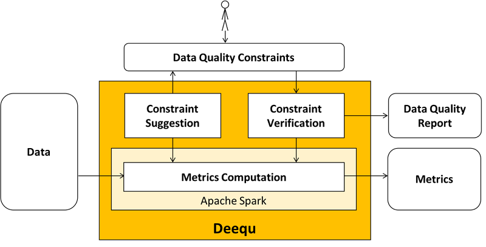
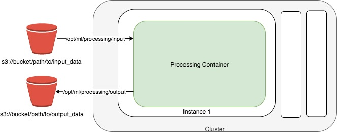

Typically a machine learning (ML) process consists of few steps. First, gathering data with various ETL jobs, then pre-processing the data, featurizing the dataset by incorporating standard techniques or prior knowledge, and finally training an ML model using an algorithm.
Often, distributed data processing frameworks such as Spark are used to process and analyze data sets in order to detect data quality issues and prepare them for model training.
In this notebook we'll use Amazon SageMaker Processing with a library called Deequ, and leverage the power of Spark with a managed SageMaker Processing Job to run our data processing workloads.
Here are some great resources on Deequ:


https://s3.amazonaws.com/amazon-reviews-pds/readme.html
marketplace: 2-letter country code (in this case all "US").customer_id: Random identifier that can be used to aggregate reviews written by a single author.review_id: A unique ID for the review.product_id: The Amazon Standard Identification Number (ASIN). http://www.amazon.com/dp/<ASIN> links to the product's detail page.product_parent: The parent of that ASIN. Multiple ASINs (color or format variations of the same product) can roll up into a single parent.product_title: Title description of the product.product_category: Broad product category that can be used to group reviews (in this case digital videos).star_rating: The review's rating (1 to 5 stars).helpful_votes: Number of helpful votes for the review.total_votes: Number of total votes the review received.vine: Was the review written as part of the Vine program?verified_purchase: Was the review from a verified purchase?review_headline: The title of the review itself.review_body: The text of the review.review_date: The date the review was written.%store -r setup_dependencies_passed
try:
setup_dependencies_passed
except NameError:
print("++++++++++++++++++++++++++++++++++++++++++++++")
print("[ERROR] YOU HAVE TO RUN THE PREVIOUS NOTEBOOKS")
print("++++++++++++++++++++++++++++++++++++++++++++++")
print(setup_dependencies_passed)
True
Next, use the Amazon SageMaker Python SDK to submit a processing job. Use the Spark container that was just built with our Spark script.
import sagemaker
import boto3
sess = sagemaker.Session()
bucket = sess.default_bucket()
role = sagemaker.get_execution_role()
region = boto3.Session().region_name
import botocore.config
config = botocore.config.Config(
user_agent_extra='dsoaws/2.0'
)
!pygmentize preprocess_deequ_pyspark.py
from __future__ import print_function from __future__ import unicode_literals import time import sys import os import shutil import csv import subprocess subprocess.check_call([sys.executable, "-m", "pip", "install", "--no-deps", "pydeequ==0.1.5"]) subprocess.check_call([sys.executable, "-m", "pip", "install", "pandas==1.1.4"]) import pyspark from pyspark.sql import SparkSession from pyspark.sql.types import StructField, StructType, StringType, IntegerType, DoubleType from pyspark.sql.functions import * from pydeequ.analyzers import * from pydeequ.checks import * from pydeequ.verification import * from pydeequ.suggestions import * # PySpark Deequ GitHub Repo: https://github.com/awslabs/python-deequ def main(): args_iter = iter(sys.argv[1:]) args = dict(zip(args_iter, args_iter)) # Retrieve the args and replace 's3://' with 's3a://' (used by Spark) s3_input_data = args["s3_input_data"].replace("s3://", "s3a://") print(s3_input_data) s3_output_analyze_data = args["s3_output_analyze_data"].replace("s3://", "s3a://") print(s3_output_analyze_data) spark = SparkSession.builder.appName("PySparkAmazonReviewsAnalyzer").getOrCreate() schema = StructType( [ StructField("marketplace", StringType(), True), StructField("customer_id", StringType(), True), StructField("review_id", StringType(), True), StructField("product_id", StringType(), True), StructField("product_parent", StringType(), True), StructField("product_title", StringType(), True), StructField("product_category", StringType(), True), StructField("star_rating", IntegerType(), True), StructField("helpful_votes", IntegerType(), True), StructField("total_votes", IntegerType(), True), StructField("vine", StringType(), True), StructField("verified_purchase", StringType(), True), StructField("review_headline", StringType(), True), StructField("review_body", StringType(), True), StructField("review_date", StringType(), True), ] ) dataset = spark.read.csv(s3_input_data, header=True, schema=schema, sep="\t", quote="") # Calculate statistics on the dataset analysisResult = ( AnalysisRunner(spark) .onData(dataset) .addAnalyzer(Size()) .addAnalyzer(Completeness("review_id")) .addAnalyzer(ApproxCountDistinct("review_id")) .addAnalyzer(Mean("star_rating")) .addAnalyzer(Compliance("top star_rating", "star_rating >= 4.0")) .addAnalyzer(Correlation("total_votes", "star_rating")) .addAnalyzer(Correlation("total_votes", "helpful_votes")) .run() ) metrics = AnalyzerContext.successMetricsAsDataFrame(spark, analysisResult) metrics.show(truncate=False) metrics.repartition(1).write.format("csv").mode("overwrite").option("header", True).option("sep", "\t").save( "{}/dataset-metrics".format(s3_output_analyze_data) ) # Check data quality verificationResult = ( VerificationSuite(spark) .onData(dataset) .addCheck( Check(spark, CheckLevel.Error, "Review Check") .hasSize(lambda x: x >= 200000) .hasMin("star_rating", lambda x: x == 1.0) .hasMax("star_rating", lambda x: x == 5.0) .isComplete("review_id") .isUnique("review_id") .isComplete("marketplace") .isContainedIn("marketplace", ["US", "UK", "DE", "JP", "FR"]) ) .run() ) print(f"Verification Run Status: {verificationResult.status}") resultsDataFrame = VerificationResult.checkResultsAsDataFrame(spark, verificationResult) resultsDataFrame.show(truncate=False) resultsDataFrame.repartition(1).write.format("csv").mode("overwrite").option("header", True).option( "sep", "\t" ).save("{}/constraint-checks".format(s3_output_analyze_data)) verificationSuccessMetricsDataFrame = VerificationResult.successMetricsAsDataFrame(spark, verificationResult) verificationSuccessMetricsDataFrame.show(truncate=False) verificationSuccessMetricsDataFrame.repartition(1).write.format("csv").mode("overwrite").option( "header", True ).option("sep", "\t").save("{}/success-metrics".format(s3_output_analyze_data)) # Suggest new checks and constraints suggestionsResult = ConstraintSuggestionRunner(spark).onData(dataset).addConstraintRule(DEFAULT()).run() suggestions = suggestionsResult["constraint_suggestions"] parallelizedSuggestions = spark.sparkContext.parallelize(suggestions) suggestionsResultsDataFrame = spark.createDataFrame(parallelizedSuggestions) suggestionsResultsDataFrame.show(truncate=False) suggestionsResultsDataFrame.repartition(1).write.format("csv").mode("overwrite").option("header", True).option( "sep", "\t" ).save("{}/constraint-suggestions".format(s3_output_analyze_data)) print("end of run reached") spark.sparkContext._gateway.close() spark.stop() print("spark stopped") if __name__ == "__main__": main()
from sagemaker.spark.processing import PySparkProcessor
processor = PySparkProcessor(
base_job_name="spark-amazon-reviews-analyzer",
role=role,
framework_version="2.4",
instance_count=2,
instance_type="ml.m5.2xlarge",
max_runtime_in_seconds=300,
)
s3_input_data = "s3://{}/amazon-reviews-pds/tsv/".format(bucket)
print(s3_input_data)
s3://sagemaker-us-east-1-124111238543/amazon-reviews-pds/tsv/
!aws s3 ls $s3_input_data
2023-05-26 03:03:07 18997559 amazon_reviews_us_Digital_Software_v1_00.tsv.gz 2023-05-26 03:03:08 27442648 amazon_reviews_us_Digital_Video_Games_v1_00.tsv.gz 2023-05-26 03:03:10 12134676 amazon_reviews_us_Gift_Card_v1_00.tsv.gz
from time import gmtime, strftime
timestamp_prefix = strftime("%Y-%m-%d-%H-%M-%S", gmtime())
output_prefix = "amazon-reviews-spark-analyzer-{}".format(timestamp_prefix)
processing_job_name = "amazon-reviews-spark-analyzer-{}".format(timestamp_prefix)
print("Processing job name: {}".format(processing_job_name))
Processing job name: amazon-reviews-spark-analyzer-2023-05-26-03-05-31
s3_output_analyze_data = "s3://{}/{}/output".format(bucket, output_prefix)
print(s3_output_analyze_data)
s3://sagemaker-us-east-1-124111238543/amazon-reviews-spark-analyzer-2023-05-26-03-05-31/output
Notes on not using ProcessingInput and ProcessingOutput:
ProcessingInput and ProcessingOutput (FullyReplicated or ShardedByS3Key) and just specify the S3 input and output buckets/prefixes.ProcessingInput, the data will be copied to each node (which we don't want in this case since Spark already handles this)from sagemaker.processing import ProcessingOutput
processor.run(
submit_app="preprocess_deequ_pyspark.py",
submit_jars=["deequ-1.0.3-rc2.jar"],
arguments=[
"s3_input_data",
s3_input_data,
"s3_output_analyze_data",
s3_output_analyze_data,
],
logs=True,
wait=False,
)
INFO:sagemaker:Creating processing-job with name spark-amazon-reviews-analyzer-2023-05-26-03-05-32-129
from IPython.core.display import display, HTML
processing_job_name = processor.jobs[-1].describe()["ProcessingJobName"]
display(
HTML(
'<b>Review <a target="blank" href="https://console.aws.amazon.com/sagemaker/home?region={}#/processing-jobs/{}">Processing Job</a></b>'.format(
region, processing_job_name
)
)
)
from IPython.core.display import display, HTML
processing_job_name = processor.jobs[-1].describe()["ProcessingJobName"]
display(
HTML(
'<b>Review <a target="blank" href="https://console.aws.amazon.com/cloudwatch/home?region={}#logStream:group=/aws/sagemaker/ProcessingJobs;prefix={};streamFilter=typeLogStreamPrefix">CloudWatch Logs</a> After a Few Minutes</b>'.format(
region, processing_job_name
)
)
)
from IPython.core.display import display, HTML
s3_job_output_prefix = output_prefix
display(
HTML(
'<b>Review <a target="blank" href="https://s3.console.aws.amazon.com/s3/buckets/{}/{}/?region={}&tab=overview">S3 Output Data</a> After The Spark Job Has Completed</b>'.format(
bucket, s3_job_output_prefix, region
)
)
)
running_processor = sagemaker.processing.ProcessingJob.from_processing_name(
processing_job_name=processing_job_name, sagemaker_session=sess
)
processing_job_description = running_processor.describe()
print(processing_job_description)
{'ProcessingInputs': [{'InputName': 'jars', 'AppManaged': False, 'S3Input': {'S3Uri': 's3://sagemaker-us-east-1-124111238543/spark-amazon-reviews-analyzer-2023-05-26-03-05-32-129/input/jars', 'LocalPath': '/opt/ml/processing/input/jars', 'S3DataType': 'S3Prefix', 'S3InputMode': 'File', 'S3DataDistributionType': 'FullyReplicated', 'S3CompressionType': 'None'}}, {'InputName': 'code', 'AppManaged': False, 'S3Input': {'S3Uri': 's3://sagemaker-us-east-1-124111238543/spark-amazon-reviews-analyzer-2023-05-26-03-05-32-129/input/code/preprocess_deequ_pyspark.py', 'LocalPath': '/opt/ml/processing/input/code', 'S3DataType': 'S3Prefix', 'S3InputMode': 'File', 'S3DataDistributionType': 'FullyReplicated', 'S3CompressionType': 'None'}}], 'ProcessingJobName': 'spark-amazon-reviews-analyzer-2023-05-26-03-05-32-129', 'ProcessingResources': {'ClusterConfig': {'InstanceCount': 2, 'InstanceType': 'ml.m5.2xlarge', 'VolumeSizeInGB': 30}}, 'StoppingCondition': {'MaxRuntimeInSeconds': 300}, 'AppSpecification': {'ImageUri': '173754725891.dkr.ecr.us-east-1.amazonaws.com/sagemaker-spark-processing:2.4-cpu', 'ContainerEntrypoint': ['smspark-submit', '--jars', '/opt/ml/processing/input/jars', '/opt/ml/processing/input/code/preprocess_deequ_pyspark.py'], 'ContainerArguments': ['s3_input_data', 's3://sagemaker-us-east-1-124111238543/amazon-reviews-pds/tsv/', 's3_output_analyze_data', 's3://sagemaker-us-east-1-124111238543/amazon-reviews-spark-analyzer-2023-05-26-03-05-31/output']}, 'Environment': {}, 'RoleArn': 'arn:aws:iam::124111238543:role/sagemaker-studio-vpc-firewall-us-east-1-sagemaker-execution-role', 'ProcessingJobArn': 'arn:aws:sagemaker:us-east-1:124111238543:processing-job/spark-amazon-reviews-analyzer-2023-05-26-03-05-32-129', 'ProcessingJobStatus': 'InProgress', 'LastModifiedTime': datetime.datetime(2023, 5, 26, 3, 5, 32, 803000, tzinfo=tzlocal()), 'CreationTime': datetime.datetime(2023, 5, 26, 3, 5, 32, 803000, tzinfo=tzlocal()), 'ResponseMetadata': {'RequestId': '6bba786c-76aa-46ce-8c28-28322cf70749', 'HTTPStatusCode': 200, 'HTTPHeaders': {'x-amzn-requestid': '6bba786c-76aa-46ce-8c28-28322cf70749', 'content-type': 'application/x-amz-json-1.1', 'content-length': '1989', 'date': 'Fri, 26 May 2023 03:05:32 GMT'}, 'RetryAttempts': 0}}
running_processor.wait()
..........................05-26 03:09 smspark.cli INFO Parsing arguments. argv: ['/usr/local/bin/smspark-submit', '--jars', '/opt/ml/processing/input/jars', '/opt/ml/processing/input/code/preprocess_deequ_pyspark.py', 's3_input_data', 's3://sagemaker-us-east-1-124111238543/amazon-reviews-pds/tsv/', 's3_output_analyze_data', 's3://sagemaker-us-east-1-124111238543/amazon-reviews-spark-analyzer-2023-05-26-03-05-31/output'] 05-26 03:09 smspark.cli INFO Raw spark options before processing: {'jars': '/opt/ml/processing/input/jars', 'class_': None, 'py_files': None, 'files': None, 'verbose': False} 05-26 03:09 smspark.cli INFO App and app arguments: ['/opt/ml/processing/input/code/preprocess_deequ_pyspark.py', 's3_input_data', 's3://sagemaker-us-east-1-124111238543/amazon-reviews-pds/tsv/', 's3_output_analyze_data', 's3://sagemaker-us-east-1-124111238543/amazon-reviews-spark-analyzer-2023-05-26-03-05-31/output'] 05-26 03:09 smspark.cli INFO Rendered spark options: {'jars': '/opt/ml/processing/input/jars/deequ-1.0.3-rc2.jar', 'class_': None, 'py_files': None, 'files': None, 'verbose': False} 05-26 03:09 smspark.cli INFO Initializing processing job. 05-26 03:09 smspark-submit INFO {'current_host': 'algo-2', 'hosts': ['algo-1', 'algo-2']} 05-26 03:09 smspark-submit INFO {'ProcessingJobArn': 'arn:aws:sagemaker:us-east-1:124111238543:processing-job/spark-amazon-reviews-analyzer-2023-05-26-03-05-32-129', 'ProcessingJobName': 'spark-amazon-reviews-analyzer-2023-05-26-03-05-32-129', 'AppSpecification': {'ImageUri': '173754725891.dkr.ecr.us-east-1.amazonaws.com/sagemaker-spark-processing:2.4-cpu', 'ContainerEntrypoint': ['smspark-submit', '--jars', '/opt/ml/processing/input/jars', '/opt/ml/processing/input/code/preprocess_deequ_pyspark.py'], 'ContainerArguments': ['s3_input_data', 's3://sagemaker-us-east-1-124111238543/amazon-reviews-pds/tsv/', 's3_output_analyze_data', 's3://sagemaker-us-east-1-124111238543/amazon-reviews-spark-analyzer-2023-05-26-03-05-31/output']}, 'ProcessingInputs': [{'InputName': 'jars', 'AppManaged': False, 'S3Input': {'LocalPath': '/opt/ml/processing/input/jars', 'S3Uri': 's3://sagemaker-us-east-1-124111238543/spark-amazon-reviews-analyzer-2023-05-26-03-05-32-129/input/jars', 'S3DataDistributionType': 'FullyReplicated', 'S3DataType': 'S3Prefix', 'S3InputMode': 'File', 'S3CompressionType': 'None', 'S3DownloadMode': 'StartOfJob'}, 'DatasetDefinition': None}, {'InputName': 'code', 'AppManaged': False, 'S3Input': {'LocalPath': '/opt/ml/processing/input/code', 'S3Uri': 's3://sagemaker-us-east-1-124111238543/spark-amazon-reviews-analyzer-2023-05-26-03-05-32-129/input/code/preprocess_deequ_pyspark.py', 'S3DataDistributionType': 'FullyReplicated', 'S3DataType': 'S3Prefix', 'S3InputMode': 'File', 'S3CompressionType': 'None', 'S3DownloadMode': 'StartOfJob'}, 'DatasetDefinition': None}], 'ProcessingOutputConfig': {'Outputs': [], 'KmsKeyId': None}, 'ProcessingResources': {'ClusterConfig': {'InstanceCount': 2, 'InstanceType': 'ml.m5.2xlarge', 'VolumeSizeInGB': 30, 'VolumeKmsKeyId': None}}, 'RoleArn': 'arn:aws:iam::124111238543:role/sagemaker-studio-vpc-firewall-us-east-1-sagemaker-execution-role', 'StoppingCondition': {'MaxRuntimeInSeconds': 300}} 05-26 03:09 smspark.cli INFO running spark submit command: spark-submit --master yarn --deploy-mode client --jars /opt/ml/processing/input/jars/deequ-1.0.3-rc2.jar /opt/ml/processing/input/code/preprocess_deequ_pyspark.py s3_input_data s3://sagemaker-us-east-1-124111238543/amazon-reviews-pds/tsv/ s3_output_analyze_data s3://sagemaker-us-east-1-124111238543/amazon-reviews-spark-analyzer-2023-05-26-03-05-31/output 05-26 03:09 smspark-submit INFO waiting for hosts 05-26 03:09 smspark-submit INFO starting status server 05-26 03:09 smspark-submit INFO Status server listening on algo-2:5555 05-26 03:09 smspark-submit INFO bootstrapping cluster 05-26 03:09 smspark-submit INFO transitioning from status INITIALIZING to BOOTSTRAPPING 05-26 03:09 smspark-submit INFO copying aws jars Serving on http://algo-2:5555 05-26 03:09 smspark-submit INFO Found hadoop jar hadoop-aws-2.10.0-amzn-0.jar 05-26 03:09 smspark-submit INFO Copying optional jar jets3t-0.9.0.jar from /usr/lib/hadoop/lib to /usr/lib/spark/jars 05-26 03:09 smspark-submit INFO copying cluster config 05-26 03:09 smspark-submit INFO copying /opt/hadoop-config/hdfs-site.xml to /usr/lib/hadoop/etc/hadoop/hdfs-site.xml 05-26 03:09 smspark-submit INFO copying /opt/hadoop-config/core-site.xml to /usr/lib/hadoop/etc/hadoop/core-site.xml 05-26 03:09 smspark-submit INFO copying /opt/hadoop-config/yarn-site.xml to /usr/lib/hadoop/etc/hadoop/yarn-site.xml 05-26 03:09 smspark-submit INFO copying /opt/hadoop-config/spark-defaults.conf to /usr/lib/spark/conf/spark-defaults.conf 05-26 03:09 smspark-submit INFO copying /opt/hadoop-config/spark-env.sh to /usr/lib/spark/conf/spark-env.sh 05-26 03:09 root INFO Detected instance type: m5.2xlarge with total memory: 32768M and total cores: 8 05-26 03:09 root INFO Writing default config to /usr/lib/hadoop/etc/hadoop/yarn-site.xml 05-26 03:09 root INFO Configuration at /usr/lib/hadoop/etc/hadoop/yarn-site.xml is: <?xml version="1.0"?> <!-- Site specific YARN configuration properties --> <configuration> <property> <name>yarn.resourcemanager.hostname</name> <value>10.2.232.13</value> <description>The hostname of the RM.</description> </property> <property> <name>yarn.nodemanager.hostname</name> <value>algo-2</value> <description>The hostname of the NM.</description> </property> <property> <name>yarn.nodemanager.webapp.address</name> <value>algo-2:8042</value> </property> <property> <name>yarn.nodemanager.vmem-pmem-ratio</name> <value>5</value> <description>Ratio between virtual memory to physical memory.</description> </property> <property> <name>yarn.resourcemanager.am.max-attempts</name> <value>1</value> <description>The maximum number of application attempts.</description> </property> <property> <name>yarn.nodemanager.env-whitelist</name> <value>JAVA_HOME,HADOOP_COMMON_HOME,HADOOP_HDFS_HOME,HADOOP_CONF_DIR,YARN_HOME,AWS_CONTAINER_CREDENTIALS_RELATIVE_URI</value> <description>Environment variable whitelist</description> </property> <property> <name>yarn.scheduler.minimum-allocation-mb</name> <value>1</value> </property> <property> <name>yarn.scheduler.maximum-allocation-mb</name> <value>31784</value> </property> <property> <name>yarn.scheduler.minimum-allocation-vcores</name> <value>1</value> </property> <property> <name>yarn.scheduler.maximum-allocation-vcores</name> <value>8</value> </property> <property> <name>yarn.nodemanager.resource.memory-mb</name> <value>31784</value> </property> <property> <name>yarn.nodemanager.resource.cpu-vcores</name> <value>8</value> </property> </configuration> 05-26 03:09 root INFO Writing default config to /usr/lib/spark/conf/spark-defaults.conf 05-26 03:09 root INFO Configuration at /usr/lib/spark/conf/spark-defaults.conf is: spark.driver.extraClassPath /usr/lib/hadoop-lzo/lib/*:/usr/lib/hadoop/hadoop-aws.jar:/usr/share/aws/aws-java-sdk/*:/usr/share/aws/emr/emrfs/conf:/usr/share/aws/emr/emrfs/lib/*:/usr/share/aws/emr/emrfs/auxlib/*:/usr/share/aws/emr/goodies/lib/emr-spark-goodies.jar:/usr/share/aws/emr/security/conf:/usr/share/aws/emr/security/lib/*:/usr/share/aws/hmclient/lib/aws-glue-datacatalog-spark-client.jar:/usr/share/java/Hive-JSON-Serde/hive-openx-serde.jar:/usr/share/aws/sagemaker-spark-sdk/lib/sagemaker-spark-sdk.jar:/usr/share/aws/emr/s3select/lib/emr-s3-select-spark-connector.jar spark.driver.extraLibraryPath /usr/lib/hadoop/lib/native:/usr/lib/hadoop-lzo/lib/native spark.executor.extraClassPath /usr/lib/hadoop-lzo/lib/*:/usr/lib/hadoop/hadoop-aws.jar:/usr/share/aws/aws-java-sdk/*:/usr/share/aws/emr/emrfs/conf:/usr/share/aws/emr/emrfs/lib/*:/usr/share/aws/emr/emrfs/auxlib/*:/usr/share/aws/emr/goodies/lib/emr-spark-goodies.jar:/usr/share/aws/emr/security/conf:/usr/share/aws/emr/security/lib/*:/usr/share/aws/hmclient/lib/aws-glue-datacatalog-spark-client.jar:/usr/share/java/Hive-JSON-Serde/hive-openx-serde.jar:/usr/share/aws/sagemaker-spark-sdk/lib/sagemaker-spark-sdk.jar:/usr/share/aws/emr/s3select/lib/emr-s3-select-spark-connector.jar spark.executor.extraLibraryPath /usr/lib/hadoop/lib/native:/usr/lib/hadoop-lzo/lib/native spark.driver.host=10.2.232.13 spark.hadoop.mapreduce.fileoutputcommitter.algorithm.version=2 spark.driver.memory 2048m spark.driver.memoryOverhead 204m spark.driver.defaultJavaOptions -XX:OnOutOfMemoryError='kill -9 %p' -XX:+UseConcMarkSweepGC -XX:CMSInitiatingOccupancyFraction=70 -XX:MaxHeapFreeRatio=70 -XX:+CMSClassUnloadingEnabled spark.executor.memory 26847m spark.executor.memoryOverhead 2684m spark.executor.cores 8 spark.executor.defaultJavaOptions -verbose:gc -XX:OnOutOfMemoryError='kill -9 %p' -XX:+PrintGCDetails -XX:+PrintGCDateStamps -XX:+UseParallelGC -XX:InitiatingHeapOccupancyPercent=70 -XX:ConcGCThreads=2 -XX:ParallelGCThreads=6 spark.executor.instances 2 spark.default.parallelism 32 05-26 03:09 root INFO Finished Yarn configuration files setup. 05-26 03:09 root INFO No file at /opt/ml/processing/input/conf/configuration.json exists, skipping user configuration 05-26 03:09 smspark-submit INFO waiting for cluster to be up 23/05/26 03:09:47 INFO nodemanager.NodeManager: STARTUP_MSG: /************************************************************ STARTUP_MSG: Starting NodeManager STARTUP_MSG: host = algo-2/10.2.197.14 STARTUP_MSG: args = [] STARTUP_MSG: version = 2.10.0-amzn-0 STARTUP_MSG: classpath = /usr/lib/hadoop/etc/hadoop:/usr/lib/hadoop/etc/hadoop:/usr/lib/hadoop/etc/hadoop:/usr/lib/hadoop/lib/commons-net-3.1.jar:/usr/lib/hadoop/lib/jettison-1.1.jar:/usr/lib/hadoop/lib/junit-4.11.jar:/usr/lib/hadoop/lib/api-util-1.0.0-M20.jar:/usr/lib/hadoop/lib/json-smart-1.3.1.jar:/usr/lib/hadoop/lib/xmlenc-0.52.jar:/usr/lib/hadoop/lib/curator-client-2.7.1.jar:/usr/lib/hadoop/lib/api-asn1-api-1.0.0-M20.jar:/usr/lib/hadoop/lib/commons-io-2.4.jar:/usr/lib/hadoop/lib/commons-configuration-1.6.jar:/usr/lib/hadoop/lib/protobuf-java-2.5.0.jar:/usr/lib/hadoop/lib/asm-3.2.jar:/usr/lib/hadoop/lib/avro-1.7.7.jar:/usr/lib/hadoop/lib/commons-math3-3.1.1.jar:/usr/lib/hadoop/lib/jackson-xc-1.9.13.jar:/usr/lib/hadoop/lib/java-xmlbuilder-0.4.jar:/usr/lib/hadoop/lib/htrace-core4-4.1.0-incubating.jar:/usr/lib/hadoop/lib/commons-collections-3.2.2.jar:/usr/lib/hadoop/lib/stax-api-1.0-2.jar:/usr/lib/hadoop/lib/slf4j-log4j12-1.7.25.jar:/usr/lib/hadoop/lib/spotbugs-annotations-3.1.9.jar:/usr/lib/hadoop/lib/woodstox-core-5.0.3.jar:/usr/lib/hadoop/lib/jcip-annotations-1.0-1.jar:/usr/lib/hadoop/lib/audience-annotations-0.5.0.jar:/usr/lib/hadoop/lib/jaxb-impl-2.2.3-1.jar:/usr/lib/hadoop/lib/snappy-java-1.1.7.3.jar:/usr/lib/hadoop/lib/jersey-json-1.9.jar:/usr/lib/hadoop/lib/httpcore-4.4.11.jar:/usr/lib/hadoop/lib/jsch-0.1.54.jar:/usr/lib/hadoop/lib/jackson-jaxrs-1.9.13.jar:/usr/lib/hadoop/lib/zookeeper-3.4.14.jar:/usr/lib/hadoop/lib/hamcrest-core-1.3.jar:/usr/lib/hadoop/lib/commons-lang-2.6.jar:/usr/lib/hadoop/lib/servlet-api-2.5.jar:/usr/lib/hadoop/lib/jackson-mapper-asl-1.9.13.jar:/usr/lib/hadoop/lib/activation-1.1.jar:/usr/lib/hadoop/lib/netty-3.10.6.Final.jar:/usr/lib/hadoop/lib/apacheds-i18n-2.0.0-M15.jar:/usr/lib/hadoop/lib/jersey-server-1.9.jar:/usr/lib/hadoop/lib/stax2-api-3.1.4.jar:/usr/lib/hadoop/lib/commons-cli-1.2.jar:/usr/lib/hadoop/lib/curator-framework-2.7.1.jar:/usr/lib/hadoop/lib/commons-beanutils-1.9.4.jar:/usr/lib/hadoop/lib/jets3t-0.9.0.jar:/usr/lib/hadoop/lib/jackson-core-asl-1.9.13.jar:/usr/lib/hadoop/lib/jsr305-3.0.0.jar:/usr/lib/hadoop/lib/commons-logging-1.1.3.jar:/usr/lib/hadoop/lib/commons-compress-1.19.jar:/usr/lib/hadoop/lib/jaxb-api-2.2.2.jar:/usr/lib/hadoop/lib/jetty-sslengine-6.1.26-emr.jar:/usr/lib/hadoop/lib/gson-2.2.4.jar:/usr/lib/hadoop/lib/guava-11.0.2.jar:/usr/lib/hadoop/lib/apacheds-kerberos-codec-2.0.0-M15.jar:/usr/lib/hadoop/lib/mockito-all-1.8.5.jar:/usr/lib/hadoop/lib/httpclient-4.5.9.jar:/usr/lib/hadoop/lib/commons-codec-1.4.jar:/usr/lib/hadoop/lib/jetty-6.1.26-emr.jar:/usr/lib/hadoop/lib/nimbus-jose-jwt-4.41.1.jar:/usr/lib/hadoop/lib/jetty-util-6.1.26-emr.jar:/usr/lib/hadoop/lib/commons-digester-1.8.jar:/usr/lib/hadoop/lib/paranamer-2.3.jar:/usr/lib/hadoop/lib/log4j-1.2.17.jar:/usr/lib/hadoop/lib/commons-lang3-3.4.jar:/usr/lib/hadoop/lib/curator-recipes-2.7.1.jar:/usr/lib/hadoop/lib/jersey-core-1.9.jar:/usr/lib/hadoop/lib/slf4j-api-1.7.25.jar:/usr/lib/hadoop/lib/jsp-api-2.1.jar:/usr/lib/hadoop/.//hadoop-openstack.jar:/usr/lib/hadoop/.//hadoop-aws-2.10.0-amzn-0.jar:/usr/lib/hadoop/.//hadoop-yarn-server-resourcemanager.jar:/usr/lib/hadoop/.//hadoop-rumen.jar:/usr/lib/hadoop/.//hadoop-azure-2.10.0-amzn-0.jar:/usr/lib/hadoop/.//hadoop-common.jar:/usr/lib/hadoop/.//hadoop-aliyun-2.10.0-amzn-0.jar:/usr/lib/hadoop/.//hadoop-gridmix-2.10.0-amzn-0.jar:/usr/lib/hadoop/.//hadoop-ant-2.10.0-amzn-0.jar:/usr/lib/hadoop/.//hadoop-yarn-server-common.jar:/usr/lib/hadoop/.//hadoop-azure-datalake.jar:/usr/lib/hadoop/.//hadoop-extras-2.10.0-amzn-0.jar:/usr/lib/hadoop/.//hadoop-ant.jar:/usr/lib/hadoop/.//hadoop-azure.jar:/usr/lib/hadoop/.//hadoop-yarn-server-resourcemanager-2.10.0-amzn-0.jar:/usr/lib/hadoop/.//hadoop-distcp-2.10.0-amzn-0.jar:/usr/lib/hadoop/.//hadoop-gridmix.jar:/usr/lib/hadoop/.//hadoop-streaming.jar:/usr/lib/hadoop/.//hadoop-rumen-2.10.0-amzn-0.jar:/usr/lib/hadoop/.//hadoop-archives.jar:/usr/lib/hadoop/.//hadoop-yarn-registry.jar:/usr/lib/hadoop/.//hadoop-aliyun.jar:/usr/lib/hadoop/.//hadoop-aws.jar:/usr/lib/hadoop/.//hadoop-datajoin.jar:/usr/lib/hadoop/.//hadoop-yarn-common-2.10.0-amzn-0.jar:/usr/lib/hadoop/.//hadoop-distcp.jar:/usr/lib/hadoop/.//hadoop-yarn-api-2.10.0-amzn-0.jar:/usr/lib/hadoop/.//hadoop-sls.jar:/usr/lib/hadoop/.//hadoop-annotations.jar:/usr/lib/hadoop/.//hadoop-auth.jar:/usr/lib/hadoop/.//hadoop-archive-logs.jar:/usr/lib/hadoop/.//hadoop-yarn-api.jar:/usr/lib/hadoop/.//hadoop-sls-2.10.0-amzn-0.jar:/usr/lib/hadoop/.//hadoop-common-2.10.0-amzn-0.jar:/usr/lib/hadoop/.//hadoop-nfs.jar:/usr/lib/hadoop/.//hadoop-archive-logs-2.10.0-amzn-0.jar:/usr/lib/hadoop/.//hadoop-resourceestimator.jar:/usr/lib/hadoop/.//hadoop-archives-2.10.0-amzn-0.jar:/usr/lib/hadoop/.//hadoop-yarn-server-web-proxy.jar:/usr/lib/hadoop/.//hadoop-nfs-2.10.0-amzn-0.jar:/usr/lib/hadoop/.//hadoop-yarn-server-applicationhistoryservice.jar:/usr/lib/hadoop/.//hadoop-yarn-registry-2.10.0-amzn-0.jar:/usr/lib/hadoop/.//hadoop-datajoin-2.10.0-amzn-0.jar:/usr/lib/hadoop/.//hadoop-streaming-2.10.0-amzn-0.jar:/usr/lib/hadoop/.//hadoop-openstack-2.10.0-amzn-0.jar:/usr/lib/hadoop/.//hadoop-yarn-server-web-proxy-2.10.0-amzn-0.jar:/usr/lib/hadoop/.//hadoop-azure-datalake-2.10.0-amzn-0.jar:/usr/lib/hadoop/.//hadoop-resourceestimator-2.10.0-amzn-0.jar:/usr/lib/hadoop/.//hadoop-extras.jar:/usr/lib/hadoop/.//hadoop-yarn-server-applicationhistoryservice-2.10.0-amzn-0.jar:/usr/lib/hadoop/.//hadoop-yarn-common.jar:/usr/lib/hadoop/.//hadoop-common-2.10.0-amzn-0-tests.jar:/usr/lib/hadoop/.//hadoop-yarn-server-common-2.10.0-amzn-0.jar:/usr/lib/hadoop/.//hadoop-annotations-2.10.0-amzn-0.jar:/usr/lib/hadoop/.//hadoop-auth-2.10.0-amzn-0.jar:/usr/lib/hadoop-hdfs/./:/usr/lib/hadoop-hdfs/lib/commons-daemon-1.0.13.jar:/usr/lib/hadoop-hdfs/lib/xmlenc-0.52.jar:/usr/lib/hadoop-hdfs/lib/commons-io-2.4.jar:/usr/lib/hadoop-hdfs/lib/protobuf-java-2.5.0.jar:/usr/lib/hadoop-hdfs/lib/asm-3.2.jar:/usr/lib/hadoop-hdfs/lib/htrace-core4-4.1.0-incubating.jar:/usr/lib/hadoop-hdfs/lib/leveldbjni-all-1.8.jar:/usr/lib/hadoop-hdfs/lib/xml-apis-1.4.01.jar:/usr/lib/hadoop-hdfs/lib/jackson-databind-2.6.7.jar:/usr/lib/hadoop-hdfs/lib/commons-lang-2.6.jar:/usr/lib/hadoop-hdfs/lib/servlet-api-2.5.jar:/usr/lib/hadoop-hdfs/lib/xercesImpl-2.12.0.jar:/usr/lib/hadoop-hdfs/lib/jackson-mapper-asl-1.9.13.jar:/usr/lib/hadoop-hdfs/lib/netty-3.10.6.Final.jar:/usr/lib/hadoop-hdfs/lib/jersey-server-1.9.jar:/usr/lib/hadoop-hdfs/lib/commons-cli-1.2.jar:/usr/lib/hadoop-hdfs/lib/jackson-core-asl-1.9.13.jar:/usr/lib/hadoop-hdfs/lib/jsr305-3.0.0.jar:/usr/lib/hadoop-hdfs/lib/jackson-core-2.6.7.jar:/usr/lib/hadoop-hdfs/lib/commons-logging-1.1.3.jar:/usr/lib/hadoop-hdfs/lib/guava-11.0.2.jar:/usr/lib/hadoop-hdfs/lib/commons-codec-1.4.jar:/usr/lib/hadoop-hdfs/lib/jackson-annotations-2.6.7.jar:/usr/lib/hadoop-hdfs/lib/jetty-6.1.26-emr.jar:/usr/lib/hadoop-hdfs/lib/okhttp-2.7.5.jar:/usr/lib/hadoop-hdfs/lib/jetty-util-6.1.26-emr.jar:/usr/lib/hadoop-hdfs/lib/log4j-1.2.17.jar:/usr/lib/hadoop-hdfs/lib/okio-1.6.0.jar:/usr/lib/hadoop-hdfs/lib/jersey-core-1.9.jar:/usr/lib/hadoop-hdfs/lib/netty-all-4.0.23.Final.jar:/usr/lib/hadoop-hdfs/.//hadoop-hdfs-rbf-2.10.0-amzn-0-tests.jar:/usr/lib/hadoop-hdfs/.//hadoop-hdfs-2.10.0-amzn-0.jar:/usr/lib/hadoop-hdfs/.//hadoop-hdfs-rbf-2.10.0-amzn-0.jar:/usr/lib/hadoop-hdfs/.//hadoop-hdfs-native-client.jar:/usr/lib/hadoop-hdfs/.//hadoop-hdfs.jar:/usr/lib/hadoop-hdfs/.//hadoop-hdfs-native-client-2.10.0-amzn-0-tests.jar:/usr/lib/hadoop-hdfs/.//hadoop-hdfs-client.jar:/usr/lib/hadoop-hdfs/.//hadoop-hdfs-native-client-2.10.0-amzn-0.jar:/usr/lib/hadoop-hdfs/.//hadoop-hdfs-nfs.jar:/usr/lib/hadoop-hdfs/.//hadoop-hdfs-nfs-2.10.0-amzn-0.jar:/usr/lib/hadoop-hdfs/.//hadoop-hdfs-client-2.10.0-amzn-0.jar:/usr/lib/hadoop-hdfs/.//hadoop-hdfs-client-2.10.0-amzn-0-tests.jar:/usr/lib/hadoop-hdfs/.//hadoop-hdfs-rbf.jar:/usr/lib/hadoop-hdfs/.//hadoop-hdfs-2.10.0-amzn-0-tests.jar:/usr/lib/hadoop-yarn/lib/commons-net-3.1.jar:/usr/lib/hadoop-yarn/lib/jettison-1.1.jar:/usr/lib/hadoop-yarn/lib/api-util-1.0.0-M20.jar:/usr/lib/hadoop-yarn/lib/json-smart-1.3.1.jar:/usr/lib/hadoop-yarn/lib/xmlenc-0.52.jar:/usr/lib/hadoop-yarn/lib/curator-client-2.7.1.jar:/usr/lib/hadoop-yarn/lib/api-asn1-api-1.0.0-M20.jar:/usr/lib/hadoop-yarn/lib/commons-io-2.4.jar:/usr/lib/hadoop-yarn/lib/commons-configuration-1.6.jar:/usr/lib/hadoop-yarn/lib/protobuf-java-2.5.0.jar:/usr/lib/hadoop-yarn/lib/jersey-guice-1.9.jar:/usr/lib/hadoop-yarn/lib/asm-3.2.jar:/usr/lib/hadoop-yarn/lib/avro-1.7.7.jar:/usr/lib/hadoop-yarn/lib/commons-math3-3.1.1.jar:/usr/lib/hadoop-yarn/lib/jackson-xc-1.9.13.jar:/usr/lib/hadoop-yarn/lib/guice-3.0.jar:/usr/lib/hadoop-yarn/lib/java-xmlbuilder-0.4.jar:/usr/lib/hadoop-yarn/lib/htrace-core4-4.1.0-incubating.jar:/usr/lib/hadoop-yarn/lib/leveldbjni-all-1.8.jar:/usr/lib/hadoop-yarn/lib/commons-collections-3.2.2.jar:/usr/lib/hadoop-yarn/lib/geronimo-jcache_1.0_spec-1.0-alpha-1.jar:/usr/lib/hadoop-yarn/lib/stax-api-1.0-2.jar:/usr/lib/hadoop-yarn/lib/spotbugs-annotations-3.1.9.jar:/usr/lib/hadoop-yarn/lib/ehcache-3.3.1.jar:/usr/lib/hadoop-yarn/lib/woodstox-core-5.0.3.jar:/usr/lib/hadoop-yarn/lib/mssql-jdbc-6.2.1.jre7.jar:/usr/lib/hadoop-yarn/lib/json-io-2.5.1.jar:/usr/lib/hadoop-yarn/lib/jcip-annotations-1.0-1.jar:/usr/lib/hadoop-yarn/lib/audience-annotations-0.5.0.jar:/usr/lib/hadoop-yarn/lib/jaxb-impl-2.2.3-1.jar:/usr/lib/hadoop-yarn/lib/snappy-java-1.1.7.3.jar:/usr/lib/hadoop-yarn/lib/javax.inject-1.jar:/usr/lib/hadoop-yarn/lib/jersey-json-1.9.jar:/usr/lib/hadoop-yarn/lib/httpcore-4.4.11.jar:/usr/lib/hadoop-yarn/lib/jsch-0.1.54.jar:/usr/lib/hadoop-yarn/lib/java-util-1.9.0.jar:/usr/lib/hadoop-yarn/lib/jackson-jaxrs-1.9.13.jar:/usr/lib/hadoop-yarn/lib/metrics-core-3.0.1.jar:/usr/lib/hadoop-yarn/lib/zookeeper-3.4.14.jar:/usr/lib/hadoop-yarn/lib/commons-lang-2.6.jar:/usr/lib/hadoop-yarn/lib/servlet-api-2.5.jar:/usr/lib/hadoop-yarn/lib/jackson-mapper-asl-1.9.13.jar:/usr/lib/hadoop-yarn/lib/activation-1.1.jar:/usr/lib/hadoop-yarn/lib/netty-3.10.6.Final.jar:/usr/lib/hadoop-yarn/lib/apacheds-i18n-2.0.0-M15.jar:/usr/lib/hadoop-yarn/lib/jersey-server-1.9.jar:/usr/lib/hadoop-yarn/lib/stax2-api-3.1.4.jar:/usr/lib/hadoop-yarn/lib/commons-cli-1.2.jar:/usr/lib/hadoop-yarn/lib/curator-framework-2.7.1.jar:/usr/lib/hadoop-yarn/lib/commons-beanutils-1.9.4.jar:/usr/lib/hadoop-yarn/lib/jets3t-0.9.0.jar:/usr/lib/hadoop-yarn/lib/jackson-core-asl-1.9.13.jar:/usr/lib/hadoop-yarn/lib/jsr305-3.0.0.jar:/usr/lib/hadoop-yarn/lib/commons-logging-1.1.3.jar:/usr/lib/hadoop-yarn/lib/commons-compress-1.19.jar:/usr/lib/hadoop-yarn/lib/jaxb-api-2.2.2.jar:/usr/lib/hadoop-yarn/lib/jetty-sslengine-6.1.26-emr.jar:/usr/lib/hadoop-yarn/lib/gson-2.2.4.jar:/usr/lib/hadoop-yarn/lib/jersey-client-1.9.jar:/usr/lib/hadoop-yarn/lib/guava-11.0.2.jar:/usr/lib/hadoop-yarn/lib/apacheds-kerberos-codec-2.0.0-M15.jar:/usr/lib/hadoop-yarn/lib/httpclient-4.5.9.jar:/usr/lib/hadoop-yarn/lib/fst-2.50.jar:/usr/lib/hadoop-yarn/lib/commons-codec-1.4.jar:/usr/lib/hadoop-yarn/lib/jetty-6.1.26-emr.jar:/usr/lib/hadoop-yarn/lib/nimbus-jose-jwt-4.41.1.jar:/usr/lib/hadoop-yarn/lib/jetty-util-6.1.26-emr.jar:/usr/lib/hadoop-yarn/lib/commons-digester-1.8.jar:/usr/lib/hadoop-yarn/lib/paranamer-2.3.jar:/usr/lib/hadoop-yarn/lib/HikariCP-java7-2.4.12.jar:/usr/lib/hadoop-yarn/lib/log4j-1.2.17.jar:/usr/lib/hadoop-yarn/lib/commons-lang3-3.4.jar:/usr/lib/hadoop-yarn/lib/guice-servlet-3.0.jar:/usr/lib/hadoop-yarn/lib/curator-recipes-2.7.1.jar:/usr/lib/hadoop-yarn/lib/jersey-core-1.9.jar:/usr/lib/hadoop-yarn/lib/jsp-api-2.1.jar:/usr/lib/hadoop-yarn/lib/aopalliance-1.0.jar:/usr/lib/hadoop-yarn/.//hadoop-yarn-server-resourcemanager.jar:/usr/lib/hadoop-yarn/.//hadoop-yarn-client.jar:/usr/lib/hadoop-yarn/.//hadoop-yarn-client-2.10.0-amzn-0.jar:/usr/lib/hadoop-yarn/.//hadoop-yarn-server-timeline-pluginstorage-2.10.0-amzn-0.jar:/usr/lib/hadoop-yarn/.//hadoop-yarn-server-nodemanager.jar:/usr/lib/hadoop-yarn/.//hadoop-yarn-applications-distributedshell-2.10.0-amzn-0.jar:/usr/lib/hadoop-yarn/.//hadoop-yarn-server-common.jar:/usr/lib/hadoop-yarn/.//hadoop-yarn-server-resourcemanager-2.10.0-amzn-0.jar:/usr/lib/hadoop-yarn/.//hadoop-yarn-applications-unmanaged-am-launcher-2.10.0-amzn-0.jar:/usr/lib/hadoop-yarn/.//hadoop-yarn-server-nodemanager-2.10.0-amzn-0.jar:/usr/lib/hadoop-yarn/.//hadoop-yarn-server-router-2.10.0-amzn-0.jar:/usr/lib/hadoop-yarn/.//hadoop-yarn-registry.jar:/usr/lib/hadoop-yarn/.//hadoop-yarn-common-2.10.0-amzn-0.jar:/usr/lib/hadoop-yarn/.//hadoop-yarn-api-2.10.0-amzn-0.jar:/usr/lib/hadoop-yarn/.//hadoop-yarn-applications-unmanaged-am-launcher.jar:/usr/lib/hadoop-yarn/.//hadoop-yarn-api.jar:/usr/lib/hadoop-yarn/.//hadoop-yarn-server-tests.jar:/usr/lib/hadoop-yarn/.//hadoop-yarn-server-timeline-pluginstorage.jar:/usr/lib/hadoop-yarn/.//hadoop-yarn-applications-distributedshell.jar:/usr/lib/hadoop-yarn/.//hadoop-yarn-server-tests-2.10.0-amzn-0.jar:/usr/lib/hadoop-yarn/.//hadoop-yarn-server-web-proxy.jar:/usr/lib/hadoop-yarn/.//hadoop-yarn-server-router.jar:/usr/lib/hadoop-yarn/.//hadoop-yarn-server-applicationhistoryservice.jar:/usr/lib/hadoop-yarn/.//hadoop-yarn-registry-2.10.0-amzn-0.jar:/usr/lib/hadoop-yarn/.//hadoop-yarn-server-web-proxy-2.10.0-amzn-0.jar:/usr/lib/hadoop-yarn/.//hadoop-yarn-server-sharedcachemanager.jar:/usr/lib/hadoop-yarn/.//hadoop-yarn-server-applicationhistoryservice-2.10.0-amzn-0.jar:/usr/lib/hadoop-yarn/.//hadoop-yarn-common.jar:/usr/lib/hadoop-yarn/.//hadoop-yarn-server-common-2.10.0-amzn-0.jar:/usr/lib/hadoop-yarn/.//hadoop-yarn-server-sharedcachemanager-2.10.0-amzn-0.jar:/usr/lib/hadoop-mapreduce/lib/junit-4.11.jar:/usr/lib/hadoop-mapreduce/lib/commons-io-2.4.jar:/usr/lib/hadoop-mapreduce/lib/protobuf-java-2.5.0.jar:/usr/lib/hadoop-mapreduce/lib/jersey-guice-1.9.jar:/usr/lib/hadoop-mapreduce/lib/asm-3.2.jar:/usr/lib/hadoop-mapreduce/lib/avro-1.7.7.jar:/usr/lib/hadoop-mapreduce/lib/guice-3.0.jar:/usr/lib/hadoop-mapreduce/lib/leveldbjni-all-1.8.jar:/usr/lib/hadoop-mapreduce/lib/snappy-java-1.1.7.3.jar:/usr/lib/hadoop-mapreduce/lib/javax.inject-1.jar:/usr/lib/hadoop-mapreduce/lib/hamcrest-core-1.3.jar:/usr/lib/hadoop-mapreduce/lib/jackson-mapper-asl-1.9.13.jar:/usr/lib/hadoop-mapreduce/lib/netty-3.10.6.Final.jar:/usr/lib/hadoop-mapreduce/lib/jersey-server-1.9.jar:/usr/lib/hadoop-mapreduce/lib/jackson-core-asl-1.9.13.jar:/usr/lib/hadoop-mapreduce/lib/commons-compress-1.19.jar:/usr/lib/hadoop-mapreduce/lib/paranamer-2.3.jar:/usr/lib/hadoop-mapreduce/lib/log4j-1.2.17.jar:/usr/lib/hadoop-mapreduce/lib/guice-servlet-3.0.jar:/usr/lib/hadoop-mapreduce/lib/jersey-core-1.9.jar:/usr/lib/hadoop-mapreduce/lib/aopalliance-1.0.jar:/usr/lib/hadoop-mapreduce/.//commons-net-3.1.jar:/usr/lib/hadoop-mapreduce/.//hadoop-openstack.jar:/usr/lib/hadoop-mapreduce/.//jettison-1.1.jar:/usr/lib/hadoop-mapreduce/.//api-util-1.0.0-M20.jar:/usr/lib/hadoop-mapreduce/.//json-smart-1.3.1.jar:/usr/lib/hadoop-mapreduce/.//hadoop-aws-2.10.0-amzn-0.jar:/usr/lib/hadoop-mapreduce/.//hadoop-mapreduce-examples.jar:/usr/lib/hadoop-mapreduce/.//hadoop-mapreduce-client-core.jar:/usr/lib/hadoop-mapreduce/.//hadoop-yarn-server-resourcemanager.jar:/usr/lib/hadoop-mapreduce/.//hadoop-rumen.jar:/usr/lib/hadoop-mapreduce/.//xmlenc-0.52.jar:/usr/lib/hadoop-mapreduce/.//curator-client-2.7.1.jar:/usr/lib/hadoop-mapreduce/.//hadoop-azure-2.10.0-amzn-0.jar:/usr/lib/hadoop-mapreduce/.//hadoop-mapreduce-client-app-2.10.0-amzn-0.jar:/usr/lib/hadoop-mapreduce/.//api-asn1-api-1.0.0-M20.jar:/usr/lib/hadoop-mapreduce/.//commons-io-2.4.jar:/usr/lib/hadoop-mapreduce/.//commons-configuration-1.6.jar:/usr/lib/hadoop-mapreduce/.//hadoop-mapreduce-client-core-2.10.0-amzn-0.jar:/usr/lib/hadoop-mapreduce/.//protobuf-java-2.5.0.jar:/usr/lib/hadoop-mapreduce/.//jersey-guice-1.9.jar:/usr/lib/hadoop-mapreduce/.//asm-3.2.jar:/usr/lib/hadoop-mapreduce/.//avro-1.7.7.jar:/usr/lib/hadoop-mapreduce/.//hadoop-aliyun-2.10.0-amzn-0.jar:/usr/lib/hadoop-mapreduce/.//hadoop-gridmix-2.10.0-amzn-0.jar:/usr/lib/hadoop-mapreduce/.//hadoop-ant-2.10.0-amzn-0.jar:/usr/lib/hadoop-mapreduce/.//hadoop-yarn-server-common.jar:/usr/lib/hadoop-mapreduce/.//commons-math3-3.1.1.jar:/usr/lib/hadoop-mapreduce/.//hadoop-mapreduce-client-shuffle.jar:/usr/lib/hadoop-mapreduce/.//jackson-xc-1.9.13.jar:/usr/lib/hadoop-mapreduce/.//guice-3.0.jar:/usr/lib/hadoop-mapreduce/.//java-xmlbuilder-0.4.jar:/usr/lib/hadoop-mapreduce/.//hadoop-azure-datalake.jar:/usr/lib/hadoop-mapreduce/.//htrace-core4-4.1.0- incubating.jar:/usr/lib/hadoop-mapreduce/.//hadoop-extras-2.10.0-amzn-0.jar:/usr/lib/hadoop-mapreduce/.//hadoop-ant.jar:/usr/lib/hadoop-mapreduce/.//hadoop-azure.jar:/usr/lib/hadoop-mapreduce/.//leveldbjni-all-1.8.jar:/usr/lib/hadoop-mapreduce/.//commons-collections-3.2.2.jar:/usr/lib/hadoop-mapreduce/.//geronimo-jcache_1.0_spec-1.0-alpha-1.jar:/usr/lib/hadoop-mapreduce/.//hadoop-yarn-server-resourcemanager-2.10.0-amzn-0.jar:/usr/lib/hadoop-mapreduce/.//stax-api-1.0-2.jar:/usr/lib/hadoop-mapreduce/.//aws-java-sdk-bundle-1.11.852.jar:/usr/lib/hadoop-mapreduce/.//spotbugs-annotations-3.1.9.jar:/usr/lib/hadoop-mapreduce/.//ehcache-3.3.1.jar:/usr/lib/hadoop-mapreduce/.//hadoop-distcp-2.10.0-amzn-0.jar:/usr/lib/hadoop-mapreduce/.//woodstox-core-5.0.3.jar:/usr/lib/hadoop-mapreduce/.//aliyun-java-sdk-ecs-4.2.0.jar:/usr/lib/hadoop-mapreduce/.//hadoop-mapreduce-client-hs-plugins-2.10.0-amzn-0.jar:/usr/lib/hadoop-mapreduce/.//ojalgo-43.0.jar:/usr/lib/hadoop-mapreduce/.//hadoop-gridmix.jar:/usr/lib/hadoop-mapreduce/.//mssql-jdbc-6.2.1.jre7.jar:/usr/lib/hadoop-mapreduce/.//hadoop-streaming.jar:/usr/lib/hadoop-mapreduce/.//json-io-2.5.1.jar:/usr/lib/hadoop-mapreduce/.//hadoop-mapreduce-client-shuffle-2.10.0-amzn-0.jar:/usr/lib/hadoop-mapreduce/.//jcip-annotations-1.0-1.jar:/usr/lib/hadoop-mapreduce/.//commons-httpclient-3.1.jar:/usr/lib/hadoop-mapreduce/.//hadoop-mapreduce-client-hs-plugins.jar:/usr/lib/hadoop-mapreduce/.//jackson-databind-2.6.7.jar:/usr/lib/hadoop-mapreduce/.//hadoop-mapreduce-client-jobclient.jar:/usr/lib/hadoop-mapreduce/.//hadoop-mapreduce-client-hs-2.10.0-amzn-0.jar:/usr/lib/hadoop-mapreduce/.//audience-annotations-0.5.0.jar:/usr/lib/hadoop-mapreduce/.//azure-storage-5.4.0.jar:/usr/lib/hadoop-mapreduce/.//jaxb-impl-2.2.3-1.jar:/usr/lib/hadoop-mapreduce/.//hadoop-mapreduce-client-common-2.10.0-amzn-0.jar:/usr/lib/hadoop-mapreduce/.//snappy-java-1.1.7.3.jar:/usr/lib/hadoop-mapreduce/.//javax.inject-1.jar:/usr/lib/hadoop-mapreduce/.//hadoop-rumen-2.10.0-amzn-0.jar:/usr/lib/hadoop-mapreduce/.//hadoop-archives.jar:/usr/lib/hadoop-mapreduce/.//jersey-json-1.9.jar:/usr/lib/hadoop-mapreduce/.//httpcore-4.4.11.jar:/usr/lib/hadoop-mapreduce/.//hadoop-yarn-registry.jar:/usr/lib/hadoop-mapreduce/.//jsch-0.1.54.jar:/usr/lib/hadoop-mapreduce/.//java-util-1.9.0.jar:/usr/lib/hadoop-mapreduce/.//hadoop-aliyun.jar:/usr/lib/hadoop-mapreduce/.//jackson-jaxrs-1.9.13.jar:/usr/lib/hadoop-mapreduce/.//metrics-core-3.0.1.jar:/usr/lib/hadoop-mapreduce/.//zookeeper-3.4.14.jar:/usr/lib/hadoop-mapreduce/.//hadoop-aws.jar:/usr/lib/hadoop-mapreduce/.//commons-lang-2.6.jar:/usr/lib/hadoop-mapreduce/.//hadoop-datajoin.jar:/usr/lib/hadoop-mapreduce/.//servlet-api-2.5.jar:/usr/lib/hadoop-mapreduce/.//hadoop-yarn-common-2.10.0-amzn-0.jar:/usr/lib/hadoop-mapreduce/.//jackson-mapper-asl-1.9.13.jar:/usr/lib/hadoop-mapreduce/.//hadoop-distcp.jar:/usr/lib/hadoop-mapreduce/.//hadoop-yarn-api-2.10.0-amzn-0.jar:/usr/lib/hadoop-mapreduce/.//activation-1.1.jar:/usr/lib/hadoop-mapreduce/.//netty-3.10.6.Final.jar:/usr/lib/hadoop-mapreduce/.//hadoop-sls.jar:/usr/lib/hadoop-mapreduce/.//apacheds-i18n-2.0.0-M15.jar:/usr/lib/hadoop-mapreduce/.//jersey-server-1.9.jar:/usr/lib/hadoop-mapreduce/.//stax2-api-3.1.4.jar:/usr/lib/hadoop-mapreduce/.//commons-cli-1.2.jar:/usr/lib/hadoop-mapreduce/.//curator-framework-2.7.1.jar:/usr/lib/hadoop-mapreduce/.//hadoop-auth.jar:/usr/lib/hadoop-mapreduce/.//hadoop-archive-logs.jar:/usr/lib/hadoop-mapreduce/.//azure-data-lake-store-sdk-2.2.3.jar:/usr/lib/hadoop-mapreduce/.//commons-beanutils-1.9.4.jar:/usr/lib/hadoop-mapreduce/.//jets3t-0.9.0.jar:/usr/lib/hadoop-mapreduce/.//hadoop-mapreduce-client-common.jar:/usr/lib/hadoop-mapreduce/.//hadoop-yarn-api.jar:/usr/lib/hadoop-mapreduce/.//hadoop-sls-2.10.0-amzn-0.jar:/usr/lib/hadoop-mapreduce/.//jackson-core-asl-1.9.13.jar:/usr/lib/hadoop-mapreduce/.//jsr305-3.0.0.jar:/usr/lib/hadoop-mapreduce/.//jackson-core-2.6.7.jar:/usr/lib/hadoop-mapreduce/.//aliyun-java-sdk-core-3.4.0.jar:/usr/lib/hadoop-mapreduce/.//hadoop-mapreduce-examples-2.10.0-amzn-0.jar:/usr/lib/hadoop-mapreduce/.//hadoop-archive-logs-2.10.0-amzn-0.jar:/usr/lib/hadoop-mapreduce/.//hadoop-mapreduce-client-jobclient-2.10.0-amzn-0-tests.jar:/usr/lib/hadoop-mapreduce/.//commons-logging-1.1.3.jar:/usr/lib/hadoop-mapreduce/.//commons-compress-1.19.jar:/usr/lib/hadoop-mapreduce/.//jaxb-api-2.2.2.jar:/usr/lib/hadoop-mapreduce/.//jetty-sslengine-6.1.26-emr.jar:/usr/lib/hadoop-mapreduce/.//aliyun-sdk-oss-3.4.1.jar:/usr/lib/hadoop-mapreduce/.//hadoop-resourceestimator.jar:/usr/lib/hadoop-mapreduce/.//gson-2.2.4.jar:/usr/lib/hadoop-mapreduce/.//jdom-1.1.jar:/usr/lib/hadoop-mapreduce/.//hadoop-archives-2.10.0-amzn-0.jar:/usr/lib/hadoop-mapreduce/.//hadoop-yarn-server-web-proxy.jar:/usr/lib/hadoop-mapreduce/.//jersey-client-1.9.jar:/usr/lib/hadoop-mapreduce/.//guava-11.0.2.jar:/usr/lib/hadoop-mapreduce/.//apacheds-kerberos-codec-2.0.0-M15.jar:/usr/lib/hadoop-mapreduce/.//hadoop-yarn-server-applicationhistoryservice.jar:/usr/lib/hadoop-mapreduce/.//hadoop-yarn-registry-2.10.0-amzn-0.jar:/usr/lib/hadoop-mapreduce/.//aliyun-java-sdk-sts-3.0.0.jar:/usr/lib/hadoop-mapreduce/.//aliyun-java-sdk-ram-3.0.0.jar:/usr/lib/hadoop-mapreduce/.//httpclient-4.5.9.jar:/usr/lib/hadoop-mapreduce/.//hadoop-datajoin-2.10.0-amzn-0.jar:/usr/lib/hadoop-mapreduce/.//fst-2.50.jar:/usr/lib/hadoop-mapreduce/.//commons-codec-1.4.jar:/usr/lib/hadoop-mapreduce/.//hadoop-streaming-2.10.0-amzn-0.jar:/usr/lib/hadoop-mapreduce/.//jackson-annotations-2.6.7.jar:/usr/lib/hadoop-mapreduce/.//azure-keyvault-core-0.8.0.jar:/usr/lib/hadoop-mapreduce/.//hadoop-mapreduce-client-hs.jar:/usr/lib/hadoop-mapreduce/.//hadoop-openstack-2.10.0-amzn-0.jar:/usr/lib/hadoop-mapreduce/.//hadoop-yarn-server-web-proxy-2.10.0-amzn-0.jar:/usr/lib/hadoop-mapreduce/.//jetty-6.1.26-emr.jar:/usr/lib/hadoop-mapreduce/.//nimbus-jose-jwt-4.41.1.jar:/usr/lib/hadoop-mapreduce/.//jetty-util-6.1.26-emr.jar:/usr/lib/hadoop-mapreduce/.//hadoop-azure-datalake-2.10.0-amzn-0.jar:/usr/lib/hadoop-mapreduce/.//hadoop-mapreduce-client-app.jar:/usr/lib/hadoop-mapreduce/.//hadoop-mapreduce-client-jobclient-2.10.0-amzn-0.jar:/usr/lib/hadoop-mapreduce/.//commons-digester-1.8.jar:/usr/lib/hadoop-mapreduce/.//hadoop-resourceestimator-2.10.0-amzn-0.jar:/usr/lib/hadoop-mapreduce/.//paranamer-2.3.jar:/usr/lib/hadoop-mapreduce/.//HikariCP-java7-2.4.12.jar:/usr/lib/hadoop-mapreduce/.//hadoop-extras.jar:/usr/lib/hadoop-mapreduce/.//log4j-1.2.17.jar:/usr/lib/hadoop-mapreduce/.//commons-lang3-3.4.jar:/usr/lib/hadoop-mapreduce/.//guice-servlet-3.0.jar:/usr/lib/hadoop-mapreduce/.//hadoop-yarn-server-applicationhistoryservice-2.10.0-amzn-0.jar:/usr/lib/hadoop-mapreduce/.//curator-recipes-2.7.1.jar:/usr/lib/hadoop-mapreduce/.//hadoop-yarn-common.jar:/usr/lib/hadoop-mapreduce/.//hadoop-yarn-server-common-2.10.0-amzn-0.jar:/usr/lib/hadoop-mapreduce/.//jersey-core-1.9.jar:/usr/lib/hadoop-mapreduce/.//jsp-api-2.1.jar:/usr/lib/hadoop-mapreduce/.//aopalliance-1.0.jar:/usr/lib/hadoop-mapreduce/.//hadoop-auth-2.10.0-amzn-0.jar:/usr/lib/hadoop-yarn/.//hadoop-yarn-server-resourcemanager.jar:/usr/lib/hadoop-yarn/.//hadoop-yarn-client.jar:/usr/lib/hadoop-yarn/.//hadoop-yarn-client-2.10.0-amzn-0.jar:/usr/lib/hadoop-yarn/.//hadoop-yarn-server-timeline-pluginstorage-2.10.0-amzn-0.jar:/usr/lib/hadoop-yarn/.//hadoop-yarn-server-nodemanager.jar:/usr/lib/hadoop-yarn/.//hadoop-yarn-applications-distributedshell-2.10.0-amzn-0.jar:/usr/lib/hadoop-yarn/.//hadoop-yarn-server-common.jar:/usr/lib/hadoop-yarn/.//hadoop-yarn-server-resourcemanager-2.10.0-amzn-0.jar:/usr/lib/hadoop-yarn/.//hadoop-yarn-applications-unmanaged-am-launcher-2.10.0-amzn-0.jar:/usr/lib/hadoop-yarn/.//hadoop-yarn-server-nodemanager-2.10.0-amzn-0.jar:/usr/lib/hadoop-yarn/.//hadoop-yarn-server-router-2.10.0-amzn-0.jar:/usr/lib/hadoop-yarn/.//hadoop-yarn-registry.jar:/usr/lib/hadoop-yarn/.//hadoop-yarn-common-2.10.0-amzn-0.jar:/usr/lib/hadoop-yarn/.//hadoop-yarn-api-2.10.0-amzn-0.jar:/usr/lib/hadoop-yarn/.//hadoop-yarn-applications-unmanaged-am-launcher.jar:/usr/lib/hadoop-yarn/.//hadoop-yarn-api.jar:/usr/lib/hadoop-yarn/.//hadoop-yarn-server-tests.jar:/usr/lib/hadoop-yarn/.//hadoop-yarn-server-timeline-pluginstorage.jar:/usr/lib/hadoop-yarn/.//hadoop-yarn-applications-distributedshell.jar:/usr/lib/hadoop-yarn/.//hadoop-yarn-server-tests-2.10.0-amzn-0.jar:/usr/lib/hadoop-yarn/.//hadoop-yarn-server-web-proxy.jar:/usr/lib/hadoop-yarn/.//hadoop-yarn-server-router.jar:/usr/lib/hadoop-yarn/.//hadoop-yarn-server-applicationhistoryservice.jar:/usr/lib/hadoop-yarn/.//hadoop-yarn-registry-2.10.0-amzn-0.jar:/usr/lib/hadoop-yarn/.//hadoop-yarn-server-web-proxy-2.10.0-amzn-0.jar:/usr/lib/hadoop-yarn/.//hadoop-yarn-server-sharedcachemanager.jar:/usr/lib/hadoop-yarn/.//hadoop-yarn-server-applicationhistoryservice-2.10.0-amzn-0.jar:/usr/lib/hadoop-yarn/.//hadoop-yarn-common.jar:/usr/lib/hadoop-yarn/.//hadoop-yarn-server-common-2.10.0-amzn-0.jar:/usr/lib/hadoop-yarn/.//hadoop-yarn-server-sharedcachemanager-2.10.0-amzn-0.jar:/usr/lib/hadoop-yarn/lib/commons-net-3.1.jar:/usr/lib/hadoop-yarn/lib/jettison-1.1.jar:/usr/lib/hadoop-yarn/lib/api-util-1.0.0-M20.jar:/usr/lib/hadoop-yarn/lib/json-smart-1.3.1.jar:/usr/lib/hadoop-yarn/lib/xmlenc-0.52.jar:/usr/lib/hadoop-yarn/lib/curator-client-2.7.1.jar:/usr/lib/hadoop-yarn/lib/api-asn1-api-1.0.0-M20.jar:/usr/lib/hadoop-yarn/lib/commons-io-2.4.jar:/usr/lib/hadoop-yarn/lib/commons-configuration-1.6.jar:/usr/lib/hadoop-yarn/lib/protobuf-java-2.5.0.jar:/usr/lib/hadoop-yarn/lib/jersey-guice-1.9.jar:/usr/lib/hadoop-yarn/lib/asm-3.2.jar:/usr/lib/hadoop-yarn/lib/avro-1.7.7.jar:/usr/lib/hadoop-yarn/lib/commons-math3-3.1.1.jar:/usr/lib/hadoop-yarn/lib/jackson-xc-1.9.13.jar:/usr/lib/hadoop-yarn/lib/guice-3.0.jar:/usr/lib/hadoop-yarn/lib/java-xmlbuilder-0.4.jar:/usr/lib/hadoop-yarn/lib/htrace-core4-4.1.0-incubating.jar:/usr/lib/hadoop-yarn/lib/leveldbjni-all-1.8.jar:/usr/lib/hadoop-yarn/lib/commons-collections-3.2.2.jar:/usr/lib/hadoop-yarn/lib/geronimo-jcache_1.0_spec-1.0-alpha-1.jar:/usr/lib/hadoop-yarn/lib/stax-api-1.0-2.jar:/usr/lib/hadoop-yarn/lib/spotbugs-annotations-3.1.9.jar:/usr/lib/hadoop-yarn/lib/ehcache-3.3.1.jar:/usr/lib/hadoop-yarn/lib/woodstox-core-5.0.3.jar:/usr/lib/hadoop-yarn/lib/mssql-jdbc-6.2.1.jre7.jar:/usr/lib/hadoop-yarn/lib/json-io-2.5.1.jar:/usr/lib/hadoop-yarn/lib/jcip-annotations-1.0-1.jar:/usr/lib/hadoop-yarn/lib/audience-annotations-0.5.0.jar:/usr/lib/hadoop-yarn/lib/jaxb-impl-2.2.3-1.jar:/usr/lib/hadoop-yarn/lib/snappy-java-1.1.7.3.jar:/usr/lib/hadoop-yarn/lib/javax.inject-1.jar:/usr/lib/hadoop-yarn/lib/jersey-json-1.9.jar:/usr/lib/hadoop-yarn/lib/httpcore-4.4.11.jar:/usr/lib/hadoop-yarn/lib/jsch-0.1.54.jar:/usr/lib/hadoop-yarn/lib/java-util-1.9.0.jar:/usr/lib/hadoop-yarn/lib/jackson-jaxrs-1.9.13.jar:/usr/lib/hadoop-yarn/lib/metrics-core-3.0.1.jar:/usr/lib/hadoop-yarn/lib/zookeeper-3.4.14.jar:/usr/lib/hadoop-yarn/lib/commons-lang-2.6.jar:/usr/lib/hadoop-yarn/lib/servlet-api-2.5.jar:/usr/lib/hadoop-yarn/lib/jackson-mapper-asl-1.9.13.jar:/usr/lib/hadoop-yarn/lib/activation-1.1.jar:/usr/lib/hadoop-yarn/lib/netty-3.10.6.Final.jar:/usr/lib/hadoop-yarn/lib/apacheds-i18n-2.0.0-M15.jar:/usr/lib/hadoop-yarn/lib/jersey-server-1.9.jar:/usr/lib/hadoop-yarn/lib/stax2-api-3.1.4.jar:/usr/lib/hadoop-yarn/lib/commons-cli-1.2.jar:/usr/lib/hadoop-yarn/lib/curator-framework-2.7.1.jar:/usr/lib/hadoop-yarn/lib/commons-beanutils-1.9.4.jar:/usr/lib/hadoop-yarn/lib/jets3t-0.9.0.jar:/usr/lib/hadoop-yarn/lib/jackson-core-asl-1.9.13.jar:/usr/lib/hadoop-yarn/lib/jsr305-3.0.0.jar:/usr/lib/hadoop-yarn/lib/commons-logging-1.1.3.jar:/usr/lib/hadoop-yarn/lib/commons-compress-1.19.jar:/usr/lib/hadoop-yarn/lib/jaxb-api-2.2.2.jar:/usr/lib/hadoop-yarn/lib/jetty-sslengine-6.1.26-emr.jar:/usr/lib/hadoop-yarn/lib/gson-2.2.4.jar:/usr/lib/hadoop-yarn/lib/jersey-client-1.9.jar:/usr/lib/hadoop-yarn/lib/guava-11.0.2.jar:/usr/lib/hadoop-yarn/lib/apacheds-kerberos-codec-2.0.0-M15.jar:/usr/lib/hadoop-yarn/lib/httpclient-4.5.9.jar:/usr/lib/hadoop-yarn/lib/fst-2.50.jar:/usr/lib/hadoop-yarn/lib/commons-codec-1.4.jar:/usr/lib/hadoop-yarn/lib/jetty-6.1.26-emr.jar:/usr/lib/hadoop-yarn/lib/nimbus-jose-jwt-4.41.1.jar:/usr/lib/hadoop-yarn/lib/jetty-util-6.1.26-emr.jar:/usr/lib/hadoop-yarn/lib/commons-digester-1.8.jar:/usr/lib/hadoop-yarn/lib/paranamer-2.3.jar:/usr/lib/hadoop-yarn/lib/HikariCP-java7-2.4.12.jar:/usr/lib/hadoop-yarn/lib/log4j-1.2.17.jar:/usr/lib/hadoop-yarn/lib/commons-lang3-3.4.jar:/usr/lib/hadoop-yarn/lib/guice-servlet-3.0.jar:/usr/lib/hadoop-yarn/lib/curator-recipes-2.7.1.jar:/usr/lib/hadoop-yarn/lib/jersey-core-1.9.jar:/usr/lib/hadoop-yarn/lib/jsp-api-2.1.jar:/usr/lib/hadoop-yarn/lib/aopalliance-1.0.jar:/usr/lib/hadoop/etc/hadoop/nm-config/log4j.properties:/usr/lib/hadoop-yarn/.//timelineservice/hadoop-yarn-server-timelineservice-hbase-coprocessor-2.10.0-amzn-0.jar:/usr/lib/hadoop-yarn/.//timelineservice/hadoop-yarn-server-timelineservice-2.10.0-amzn-0.jar:/usr/lib/hadoop-yarn/.//timelineservice/hadoop-yarn-server-timelineservice-hbase-client-2.10.0-amzn-0.jar:/usr/lib/hadoop-yarn/.//timelineservice/hadoop-yarn-server-timelineservice-hbase-common-2.10.0-amzn-0.jar:/usr/lib/hadoop-yarn/.//timelineservice/lib/hbase-annotations-1.2.6.jar:/usr/lib/hadoop-yarn/.//timelineservice/lib/metrics-core-2.2.0.jar:/usr/lib/hadoop-yarn/.//timelineservice/lib/commons-csv-1.0.jar:/usr/lib/hadoop-yarn/.//timelineservice/lib/hbase-client-1.2.6.jar:/usr/lib/hadoop-yarn/.//timelineservice/lib/jackson-core-2.6.7.jar:/usr/lib/hadoop-yarn/.//timelineservice/lib/jsr311-api-1.1.1.jar:/usr/lib/hadoop-yarn/.//timelineservice/lib/htrace-core-3.1.0-incubating.jar:/usr/lib/hadoop-yarn/.//timelineservice/lib/joni-2.1.2.jar:/usr/lib/hadoop-yarn/.//timelineservice/lib/hbase-protocol-1.2.6.jar:/usr/lib/hadoop-yarn/.//timelineservice/lib/jcodings-1.0.8.jar:/usr/lib/hadoop-yarn/.//timelineservice/lib/hbase-common-1.2.6.jar:/usr/lib/hadoop-yarn/.//timelineservice/lib/netty-all-4.0.23.Final.jar STARTUP_MSG: build = git@aws157git.com:/pkg/Aws157BigTop -r d1e860a34cc1aea3d600c57c5c0270ea41579e8c; compiled by 'ec2-user' on 2020-09-19T02:05Z STARTUP_MSG: java = 1.8.0_312 ************************************************************/ 23/05/26 03:09:47 INFO nodemanager.NodeManager: registered UNIX signal handlers for [TERM, HUP, INT] 23/05/26 03:09:47 INFO datanode.DataNode: STARTUP_MSG: /************************************************************ STARTUP_MSG: Starting DataNode STARTUP_MSG: host = algo-2/10.2.197.14 STARTUP_MSG: args = [] STARTUP_MSG: version = 2.10.0-amzn-0 STARTUP_MSG: classpath = /usr/lib/hadoop/etc/hadoop:/usr/lib/hadoop/lib/commons-net-3.1.jar:/usr/lib/hadoop/lib/jettison-1.1.jar:/usr/lib/hadoop/lib/junit-4.11.jar:/usr/lib/hadoop/lib/api-util-1.0.0-M20.jar:/usr/lib/hadoop/lib/json-smart-1.3.1.jar:/usr/lib/hadoop/lib/xmlenc-0.52.jar:/usr/lib/hadoop/lib/curator-client-2.7.1.jar:/usr/lib/hadoop/lib/api-asn1-api-1.0.0-M20.jar:/usr/lib/hadoop/lib/commons-io-2.4.jar:/usr/lib/hadoop/lib/commons-configuration-1.6.jar:/usr/lib/hadoop/lib/protobuf-java-2.5.0.jar:/usr/lib/hadoop/lib/asm-3.2.jar:/usr/lib/hadoop/lib/avro-1.7.7.jar:/usr/lib/hadoop/lib/commons-math3-3.1.1.jar:/usr/lib/hadoop/lib/jackson-xc-1.9.13.jar:/usr/lib/hadoop/lib/java-xmlbuilder-0.4.jar:/usr/lib/hadoop/lib/htrace-core4-4.1.0-incubating.jar:/usr/lib/hadoop/lib/commons-collections-3.2.2.jar:/usr/lib/hadoop/lib/stax-api-1.0-2.jar:/usr/lib/hadoop/lib/slf4j-log4j12-1.7.25.jar:/usr/lib/hadoop/lib/spotbugs-annotations-3.1.9.jar:/usr/lib/hadoop/lib/woodstox-core-5.0.3.jar:/usr/lib/hadoop/lib/jcip-annotations-1.0-1.jar:/usr/lib/hadoop/lib/audience-annotations-0.5.0.jar:/usr/lib/hadoop/lib/jaxb-impl-2.2.3-1.jar:/usr/lib/hadoop/lib/snappy-java-1.1.7.3.jar:/usr/lib/hadoop/lib/jersey-json-1.9.jar:/usr/lib/hadoop/lib/httpcore-4.4.11.jar:/usr/lib/hadoop/lib/jsch-0.1.54.jar:/usr/lib/hadoop/lib/jackson-jaxrs-1.9.13.jar:/usr/lib/hadoop/lib/zookeeper-3.4.14.jar:/usr/lib/hadoop/lib/hamcrest-core-1.3.jar:/usr/lib/hadoop/lib/commons-lang-2.6.jar:/usr/lib/hadoop/lib/servlet-api-2.5.jar:/usr/lib/hadoop/lib/jackson-mapper-asl-1.9.13.jar:/usr/lib/hadoop/lib/activation-1.1.jar:/usr/lib/hadoop/lib/netty-3.10.6.Final.jar:/usr/lib/hadoop/lib/apacheds-i18n-2.0.0-M15.jar:/usr/lib/hadoop/lib/jersey-server-1.9.jar:/usr/lib/hadoop/lib/stax2-api-3.1.4.jar:/usr/lib/hadoop/lib/commons-cli-1.2.jar:/usr/lib/hadoop/lib/curator-framework-2.7.1.jar:/usr/lib/hadoop/lib/commons-beanutils-1.9.4.jar:/usr/lib/hadoop/lib/jets3t-0.9.0.jar:/usr/lib/hadoop/lib/jackson-core-asl-1.9.13.jar:/usr/lib/hadoop/lib/jsr305-3.0.0.jar:/usr/lib/hadoop/lib/commons-logging-1.1.3.jar:/usr/lib/hadoop/lib/commons-compress-1.19.jar:/usr/lib/hadoop/lib/jaxb-api-2.2.2.jar:/usr/lib/hadoop/lib/jetty-sslengine-6.1.26-emr.jar:/usr/lib/hadoop/lib/gson-2.2.4.jar:/usr/lib/hadoop/lib/guava-11.0.2.jar:/usr/lib/hadoop/lib/apacheds-kerberos-codec-2.0.0-M15.jar:/usr/lib/hadoop/lib/mockito-all-1.8.5.jar:/usr/lib/hadoop/lib/httpclient-4.5.9.jar:/usr/lib/hadoop/lib/commons-codec-1.4.jar:/usr/lib/hadoop/lib/jetty-6.1.26-emr.jar:/usr/lib/hadoop/lib/nimbus-jose-jwt-4.41.1.jar:/usr/lib/hadoop/lib/jetty-util-6.1.26-emr.jar:/usr/lib/hadoop/lib/commons-digester-1.8.jar:/usr/lib/hadoop/lib/paranamer-2.3.jar:/usr/lib/hadoop/lib/log4j-1.2.17.jar:/usr/lib/hadoop/lib/commons-lang3-3.4.jar:/usr/lib/hadoop/lib/curator-recipes-2.7.1.jar:/usr/lib/hadoop/lib/jersey-core-1.9.jar:/usr/lib/hadoop/lib/slf4j-api-1.7.25.jar:/usr/lib/hadoop/lib/jsp-api-2.1.jar:/usr/lib/hadoop/.//hadoop-openstack.jar:/usr/lib/hadoop/.//hadoop-aws-2.10.0-amzn-0.jar:/usr/lib/hadoop/.//hadoop-yarn-server-resourcemanager.jar:/usr/lib/hadoop/.//hadoop-rumen.jar:/usr/lib/hadoop/.//hadoop-azure-2.10.0-amzn-0.jar:/usr/lib/hadoop/.//hadoop-common.jar:/usr/lib/hadoop/.//hadoop-aliyun-2.10.0-amzn-0.jar:/usr/lib/hadoop/.//hadoop-gridmix-2.10.0-amzn-0.jar:/usr/lib/hadoop/.//hadoop-ant-2.10.0-amzn-0.jar:/usr/lib/hadoop/.//hadoop-yarn-server-common.jar:/usr/lib/hadoop/.//hadoop-azure-datalake.jar:/usr/lib/hadoop/.//hadoop-extras-2.10.0-amzn-0.jar:/usr/lib/hadoop/.//hadoop-ant.jar:/usr/lib/hadoop/.//hadoop-azure.jar:/usr/lib/hadoop/.//hadoop-yarn-server-resourcemanager-2.10.0-amzn-0.jar:/usr/lib/hadoop/.//hadoop-distcp-2.10.0-amzn-0.jar:/usr/lib/hadoop/.//hadoop-gridmix.jar:/usr/lib/hadoop/.//hadoop-streaming.jar:/usr/lib/hadoop/.//hadoop-rumen-2.10.0-amzn-0.jar:/usr/lib/hadoop/.//hadoop-archives.jar:/usr/lib/hadoop/.//hadoop-yarn-registry.jar:/usr/lib/hadoop/.//hadoop-aliyun.jar:/usr/lib/hadoop/.//hadoop-aws.jar:/usr/lib/hadoop/.//hadoop-datajoin.jar:/usr/lib/hadoop/.//hadoop-yarn-common-2.10.0-amzn-0.jar:/usr/lib/hadoop/.//hadoop-distcp.jar:/usr/lib/hadoop/.//hadoop-yarn-api-2.10.0-amzn-0.jar:/usr/lib/hadoop/.//hadoop-sls.jar:/usr/lib/hadoop/.//hadoop-annotations.jar:/usr/lib/hadoop/.//hadoop-auth.jar:/usr/lib/hadoop/.//hadoop-archive-logs.jar:/usr/lib/hadoop/.//hadoop-yarn-api.jar:/usr/lib/hadoop/.//hadoop-sls-2.10.0-amzn-0.jar:/usr/lib/hadoop/.//hadoop-common-2.10.0-amzn-0.jar:/usr/lib/hadoop/.//hadoop-nfs.jar:/usr/lib/hadoop/.//hadoop-archive-logs-2.10.0-amzn-0.jar:/usr/lib/hadoop/.//hadoop-resourceestimator.jar:/usr/lib/hadoop/.//hadoop-archives-2.10.0-amzn-0.jar:/usr/lib/hadoop/.//hadoop-yarn-server-web-proxy.jar:/usr/lib/hadoop/.//hadoop-nfs-2.10.0-amzn-0.jar:/usr/lib/hadoop/.//hadoop-yarn-server-applicationhistoryservice.jar:/usr/lib/hadoop/.//hadoop-yarn-registry-2.10.0-amzn-0.jar:/usr/lib/hadoop/.//hadoop-datajoin-2.10.0-amzn-0.jar:/usr/lib/hadoop/.//hadoop-streaming-2.10.0-amzn-0.jar:/usr/lib/hadoop/.//hadoop-openstack-2.10.0-amzn-0.jar:/usr/lib/hadoop/.//hadoop-yarn-server-web-proxy-2.10.0-amzn-0.jar:/usr/lib/hadoop/.//hadoop-azure-datalake-2.10.0-amzn-0.jar:/usr/lib/hadoop/.//hadoop-resourceestimator-2.10.0-amzn-0.jar:/usr/lib/hadoop/.//hadoop-extras.jar:/usr/lib/hadoop/.//hadoop-yarn-server-applicationhistoryservice-2.10.0-amzn-0.jar:/usr/lib/hadoop/.//hadoop-yarn-common.jar:/usr/lib/hadoop/.//hadoop-common-2.10.0-amzn-0-tests.jar:/usr/lib/hadoop/.//hadoop-yarn-server-common-2.10.0-amzn-0.jar:/usr/lib/hadoop/.//hadoop-annotations-2.10.0-amzn-0.jar:/usr/lib/hadoop/.//hadoop-auth-2.10.0-amzn-0.jar:/usr/lib/hadoop-hdfs/./:/usr/lib/hadoop-hdfs/lib/commons-daemon-1.0.13.jar:/usr/lib/hadoop-hdfs/lib/xmlenc-0.52.jar:/usr/lib/hadoop-hdfs/lib/commons-io-2.4.jar:/usr/lib/hadoop-hdfs/lib/protobuf-java-2.5.0.jar:/usr/lib/hadoop-hdfs/lib/asm-3.2.jar:/usr/lib/hadoop-hdfs/lib/htrace-core4-4.1.0-incubating.jar:/usr/lib/hadoop-hdfs/lib/leveldbjni-all-1.8.jar:/usr/lib/hadoop-hdfs/lib/xml-apis-1.4.01.jar:/usr/lib/hadoop-hdfs/lib/jackson-databind-2.6.7.jar:/usr/lib/hadoop-hdfs/lib/commons-lang-2.6.jar:/usr/lib/hadoop-hdfs/lib/servlet-api-2.5.jar:/usr/lib/hadoop-hdfs/lib/xercesImpl-2.12.0.jar:/usr/lib/hadoop-hdfs/lib/jackson-mapper-asl-1.9.13.jar:/usr/lib/hadoop-hdfs/lib/netty-3.10.6.Final.jar:/usr/lib/hadoop-hdfs/lib/jersey-server-1.9.jar:/usr/lib/hadoop-hdfs/lib/commons-cli-1.2.jar:/usr/lib/hadoop-hdfs/lib/jackson-core-asl-1.9.13.jar:/usr/lib/hadoop-hdfs/lib/jsr305-3.0.0.jar:/usr/lib/hadoop-hdfs/lib/jackson-core-2.6.7.jar:/usr/lib/hadoop-hdfs/lib/commons-logging-1.1.3.jar:/usr/lib/hadoop-hdfs/lib/guava-11.0.2.jar:/usr/lib/hadoop-hdfs/lib/commons-codec-1.4.jar:/usr/lib/hadoop-hdfs/lib/jackson-annotations-2.6.7.jar:/usr/lib/hadoop-hdfs/lib/jetty-6.1.26-emr.jar:/usr/lib/hadoop-hdfs/lib/okhttp-2.7.5.jar:/usr/lib/hadoop-hdfs/lib/jetty-util-6.1.26-emr.jar:/usr/lib/hadoop-hdfs/lib/log4j-1.2.17.jar:/usr/lib/hadoop-hdfs/lib/okio-1.6.0.jar:/usr/lib/hadoop-hdfs/lib/jersey-core-1.9.jar:/usr/lib/hadoop-hdfs/lib/netty-all-4.0.23.Final.jar:/usr/lib/hadoop-hdfs/.//hadoop-hdfs-rbf-2.10.0-amzn-0-tests.jar:/usr/lib/hadoop-hdfs/.//hadoop-hdfs-2.10.0-amzn-0.jar:/usr/lib/hadoop-hdfs/.//hadoop-hdfs-rbf-2.10.0-amzn-0.jar:/usr/lib/hadoop-hdfs/.//hadoop-hdfs-native-client.jar:/usr/lib/hadoop-hdfs/.//hadoop-hdfs.jar:/usr/lib/hadoop-hdfs/.//hadoop-hdfs-native-client-2.10.0-amzn-0-tests.jar:/usr/lib/hadoop-hdfs/.//hadoop-hdfs-client.jar:/usr/lib/hadoop-hdfs/.//hadoop-hdfs-native-client-2.10.0-amzn-0.jar:/usr/lib/hadoop-hdfs/.//hadoop-hdfs-nfs.jar:/usr/lib/hadoop-hdfs/.//hadoop-hdfs-nfs-2.10.0-amzn-0.jar:/usr/lib/hadoop-hdfs/.//hadoop-hdfs-client-2.10.0-amzn-0.jar:/usr/lib/hadoop-hdfs/.//hadoop-hdfs-client-2.10.0-amzn-0-tests.jar:/usr/lib/hadoop-hdfs/.//hadoop-hdfs-rbf.jar:/usr/lib/hadoop-hdfs/.//hadoop-hdfs-2.10.0-amzn-0-tests.jar:/usr/lib/hadoop-yarn/lib/commons-net-3.1.jar:/usr/lib/hadoop-yarn/lib/jettison-1.1.jar:/usr/lib/hadoop-yarn/lib/api-util-1.0.0-M20.jar:/usr/lib/hadoop-yarn/lib/json-smart-1.3.1.jar:/usr/lib/hadoop-yarn/lib/xmlenc-0.52.jar:/usr/lib/hadoop-yarn/lib/curator-client-2.7.1.jar:/usr/lib/hadoop-yarn/lib/api-asn1-api-1.0.0-M20.jar:/usr/lib/hadoop-yarn/lib/commons-io-2.4.jar:/usr/lib/hadoop-yarn/lib/commons-configuration-1.6.jar:/usr/lib/hadoop-yarn/lib/protobuf-java-2.5.0.jar:/usr/lib/hadoop-yarn/lib/jersey-guice-1.9.jar:/usr/lib/hadoop-yarn/lib/asm-3.2.jar:/usr/lib/hadoop-yarn/lib/avro-1.7.7.jar:/usr/lib/hadoop-yarn/lib/commons-math3-3.1.1.jar:/usr/lib/hadoop-yarn/lib/jackson-xc-1.9.13.jar:/usr/lib/hadoop-yarn/lib/guice-3.0.jar:/usr/lib/hadoop-yarn/lib/java-xmlbuilder-0.4.jar:/usr/lib/hadoop-yarn/lib/htrace-core4-4.1.0-incubating.jar:/usr/lib/hadoop-yarn/lib/leveldbjni-all-1.8.jar:/usr/lib/hadoop-yarn/lib/commons-collections-3.2.2.jar:/usr/lib/hadoop-yarn/lib/geronimo-jcache_1.0_spec-1.0-alpha-1.jar:/usr/lib/hadoop-yarn/lib/stax-api-1.0-2.jar:/usr/lib/hadoop-yarn/lib/spotbugs-annotations-3.1.9.jar:/usr/lib/hadoop-yarn/lib/ehcache-3.3.1.jar:/usr/lib/hadoop-yarn/lib/woodstox-core-5.0.3.jar:/usr/lib/hadoop-yarn/lib/mssql-jdbc-6.2.1.jre7.jar:/usr/lib/hadoop-yarn/lib/json-io-2.5.1.jar:/usr/lib/hadoop-yarn/lib/jcip-annotations-1.0-1.jar:/usr/lib/hadoop-yarn/lib/audience-annotations-0.5.0.jar:/usr/lib/hadoop-yarn/lib/jaxb-impl-2.2.3-1.jar:/usr/lib/hadoop-yarn/lib/snappy-java-1.1.7.3.jar:/usr/lib/hadoop-yarn/lib/javax.inject-1.jar:/usr/lib/hadoop-yarn/lib/jersey-json-1.9.jar:/usr/lib/hadoop-yarn/lib/httpcore-4.4.11.jar:/usr/lib/hadoop-yarn/lib/jsch-0.1.54.jar:/usr/lib/hadoop-yarn/lib/java-util-1.9.0.jar:/usr/lib/hadoop-yarn/lib/jackson-jaxrs-1.9.13.jar:/usr/lib/hadoop-yarn/lib/metrics-core-3.0.1.jar:/usr/lib/hadoop-yarn/lib/zookeeper-3.4.14.jar:/usr/lib/hadoop-yarn/lib/commons-lang-2.6.jar:/usr/lib/hadoop-yarn/lib/servlet-api-2.5.jar:/usr/lib/hadoop-yarn/lib/jackson-mapper-asl-1.9.13.jar:/usr/lib/hadoop-yarn/lib/activation-1.1.jar:/usr/lib/hadoop-yarn/lib/netty-3.10.6.Final.jar:/usr/lib/hadoop-yarn/lib/apacheds-i18n-2.0.0-M15.jar:/usr/lib/hadoop-yarn/lib/jersey-server-1.9.jar:/usr/lib/hadoop-yarn/lib/stax2-api-3.1.4.jar:/usr/lib/hadoop-yarn/lib/commons-cli-1.2.jar:/usr/lib/hadoop-yarn/lib/curator-framework-2.7.1.jar:/usr/lib/hadoop-yarn/lib/commons-beanutils-1.9.4.jar:/usr/lib/hadoop-yarn/lib/jets3t-0.9.0.jar:/usr/lib/hadoop-yarn/lib/jackson-core-asl-1.9.13.jar:/usr/lib/hadoop-yarn/lib/jsr305-3.0.0.jar:/usr/lib/hadoop-yarn/lib/commons-logging-1.1.3.jar:/usr/lib/hadoop-yarn/lib/commons-compress-1.19.jar:/usr/lib/hadoop-yarn/lib/jaxb-api-2.2.2.jar:/usr/lib/hadoop-yarn/lib/jetty-sslengine-6.1.26-emr.jar:/usr/lib/hadoop-yarn/lib/gson-2.2.4.jar:/usr/lib/hadoop-yarn/lib/jersey-client-1.9.jar:/usr/lib/hadoop-yarn/lib/guava-11.0.2.jar:/usr/lib/hadoop-yarn/lib/apacheds-kerberos-codec-2.0.0-M15.jar:/usr/lib/hadoop-yarn/lib/httpclient-4.5.9.jar:/usr/lib/hadoop-yarn/lib/fst-2.50.jar:/usr/lib/hadoop-yarn/lib/commons-codec-1.4.jar:/usr/lib/hadoop-yarn/lib/jetty-6.1.26-emr.jar:/usr/lib/hadoop-yarn/lib/nimbus-jose-jwt-4.41.1.jar:/usr/lib/hadoop-yarn/lib/jetty-util-6.1.26-emr.jar:/usr/lib/hadoop-yarn/lib/commons-digester-1.8.jar:/usr/lib/hadoop-yarn/lib/paranamer-2.3.jar:/usr/lib/hadoop-yarn/lib/HikariCP-java7-2.4.12.jar:/usr/lib/hadoop-yarn/lib/log4j-1.2.17.jar:/usr/lib/hadoop-yarn/lib/commons-lang3-3.4.jar:/usr/lib/hadoop-yarn/lib/guice-servlet-3.0.jar:/usr/lib/hadoop-yarn/lib/curator-recipes-2.7.1.jar:/usr/lib/hadoop-yarn/lib/jersey-core-1.9.jar:/usr/lib/hadoop-yarn/lib/jsp-api-2.1.jar:/usr/lib/hadoop-yarn/lib/aopalliance-1.0.jar:/usr/lib/hadoop-yarn/.//hadoop-yarn-server-resourcemanager.jar:/usr/lib/hadoop-yarn/.//hadoop-yarn-client.jar:/usr/lib/hadoop-yarn/.//hadoop-yarn-client-2.10.0-amzn-0.jar:/usr/lib/hadoop-yarn/.//hadoop-yarn-server-timeline-pluginstorage-2.10.0-amzn-0.jar:/usr/lib/hadoop-yarn/.//hadoop-yarn-server-nodemanager.jar:/usr/lib/hadoop-yarn/.//hadoop-yarn-applications-distributedshell-2.10.0-amzn-0.jar:/usr/lib/hadoop-yarn/.//hadoop-yarn-server-common.jar:/usr/lib/hadoop-yarn/.//hadoop-yarn-server-resourcemanager-2.10.0-amzn-0.jar:/usr/lib/hadoop-yarn/.//hadoop-yarn-applications-unmanaged-am-launcher-2.10.0-amzn-0.jar:/usr/lib/hadoop-yarn/.//hadoop-yarn-server-nodemanager-2.10.0-amzn-0.jar:/usr/lib/hadoop-yarn/.//hadoop-yarn-server-router-2.10.0-amzn-0.jar:/usr/lib/hadoop-yarn/.//hadoop-yarn-registry.jar:/usr/lib/hadoop-yarn/.//hadoop-yarn-common-2.10.0-amzn-0.jar:/usr/lib/hadoop-yarn/.//hadoop-yarn-api-2.10.0-amzn-0.jar:/usr/lib/hadoop-yarn/.//hadoop-yarn-applications-unmanaged-am-launcher.jar:/usr/lib/hadoop-yarn/.//hadoop-yarn-api.jar:/usr/lib/hadoop-yarn/.//hadoop-yarn-server-tests.jar:/usr/lib/hadoop-yarn/.//hadoop-yarn-server-timeline-pluginstorage.jar:/usr/lib/hadoop-yarn/.//hadoop-yarn-applications-distributedshell.jar:/usr/lib/hadoop-yarn/.//hadoop-yarn-server-tests-2.10.0-amzn-0.jar:/usr/lib/hadoop-yarn/.//hadoop-yarn-server-web-proxy.jar:/usr/lib/hadoop-yarn/.//hadoop-yarn-server-router.jar:/usr/lib/hadoop-yarn/.//hadoop-yarn-server-applicationhistoryservice.jar:/usr/lib/hadoop-yarn/.//hadoop-yarn-registry-2.10.0-amzn-0.jar:/usr/lib/hadoop-yarn/.//hadoop-yarn-server-web-proxy-2.10.0-amzn-0.jar:/usr/lib/hadoop-yarn/.//hadoop-yarn-server-sharedcachemanager.jar:/usr/lib/hadoop-yarn/.//hadoop-yarn-server-applicationhistoryservice-2.10.0-amzn-0.jar:/usr/lib/hadoop-yarn/.//hadoop-yarn-common.jar:/usr/lib/hadoop-yarn/.//hadoop-yarn-server-common-2.10.0-amzn-0.jar:/usr/lib/hadoop-yarn/.//hadoop-yarn-server-sharedcachemanager-2.10.0-amzn-0.jar:/usr/lib/hadoop-mapreduce/lib/junit-4.11.jar:/usr/lib/hadoop-mapreduce/lib/commons-io-2.4.jar:/usr/lib/hadoop-mapreduce/lib/protobuf-java-2.5.0.jar:/usr/lib/hadoop-mapreduce/lib/jersey-guice-1.9.jar:/usr/lib/hadoop-mapreduce/lib/asm-3.2.jar:/usr/lib/hadoop-mapreduce/lib/avro-1.7.7.jar:/usr/lib/hadoop-mapreduce/lib/guice-3.0.jar:/usr/lib/hadoop-mapreduce/lib/leveldbjni-all-1.8.jar:/usr/lib/hadoop-mapreduce/lib/snappy-java-1.1.7.3.jar:/usr/lib/hadoop-mapreduce/lib/javax.inject-1.jar:/usr/lib/hadoop-mapreduce/lib/hamcrest-core-1.3.jar:/usr/lib/hadoop-mapreduce/lib/jackson-mapper-asl-1.9.13.jar:/usr/lib/hadoop-mapreduce/lib/netty-3.10.6.Final.jar:/usr/lib/hadoop-mapreduce/lib/jersey-server-1.9.jar:/usr/lib/hadoop-mapreduce/lib/jackson-core-asl-1.9.13.jar:/usr/lib/hadoop-mapreduce/lib/commons-compress-1.19.jar:/usr/lib/hadoop-mapreduce/lib/paranamer-2.3.jar:/usr/lib/hadoop-mapreduce/lib/log4j-1.2.17.jar:/usr/lib/hadoop-mapreduce/lib/guice-servlet-3.0.jar:/usr/lib/hadoop-mapreduce/lib/jersey-core-1.9.jar:/usr/lib/hadoop-mapreduce/lib/aopalliance-1.0.jar:/usr/lib/hadoop-mapreduce/.//commons-net-3.1.jar:/usr/lib/hadoop-mapreduce/.//hadoop-openstack.jar:/usr/lib/hadoop-mapreduce/.//jettison-1.1.jar:/usr/lib/hadoop-mapreduce/.//api-util-1.0.0-M20.jar:/usr/lib/hadoop-mapreduce/.//json-smart-1.3.1.jar:/usr/lib/hadoop-mapreduce/.//hadoop-aws-2.10.0-amzn-0.jar:/usr/lib/hadoop-mapreduce/.//hadoop-mapreduce-examples.jar:/usr/lib/hadoop-mapreduce/.//hadoop-mapreduce-client-core.jar:/usr/lib/hadoop-mapreduce/.//hadoop-yarn-server-resourcemanager.jar:/usr/lib/hadoop-mapreduce/.//hadoop-rumen.jar:/usr/lib/hadoop-mapreduce/.//xmlenc-0.52.jar:/usr/lib/hadoop-mapreduce/.//curator-client-2.7.1.jar:/usr/lib/hadoop-mapreduce/.//hadoop-azure-2.10.0-amzn-0.jar:/usr/lib/hadoop-mapreduce/.//hadoop-mapreduce-client-app-2.10.0-amzn-0.jar:/usr/lib/hadoop-mapreduce/.//api-asn1-api-1.0.0-M20.jar:/usr/lib/hadoop-mapreduce/.//commons-io-2.4.jar:/usr/lib/hadoop-mapreduce/.//commons-configuration-1.6.jar:/usr/lib/hadoop-mapreduce/.//hadoop-mapreduce-client-core-2.10.0-amzn-0.jar:/usr/lib/hadoop-mapreduce/.//protobuf-java-2.5.0.jar:/usr/lib/hadoop-mapreduce/.//jersey-guice-1.9.jar:/usr/lib/hadoop-mapreduce/.//asm-3.2.jar:/usr/lib/hadoop-mapreduce/.//avro-1.7.7.jar:/usr/lib/hadoop-mapreduce/.//hadoop-aliyun-2.10.0-amzn-0.jar:/usr/lib/hadoop-mapreduce/.//hadoop-gridmix-2.10.0-amzn-0.jar:/usr/lib/hadoop-mapreduce/.//hadoop-ant-2.10.0-amzn-0.jar:/usr/lib/hadoop-mapreduce/.//hadoop-yarn-server-common.jar:/usr/lib/hadoop-mapreduce/.//commons-math3-3.1.1.jar:/usr/lib/hadoop-mapreduce/.//hadoop-mapreduce-client-shuffle.jar:/usr/lib/hadoop-mapreduce/.//jackson-xc-1.9.13.jar:/usr/lib/hadoop-mapreduce/.//guice-3.0.jar:/usr/lib/hadoop-mapreduce/.//java-xmlbuilder-0.4.jar:/usr/lib/hadoop-mapreduce/.//hadoop-azure-datalake.jar:/usr/lib/hadoop-mapreduce/.//htrace-core4-4.1.0-incubating.jar:/usr/lib/hadoop-mapreduce/.//hadoop-ext ras-2.10.0-amzn-0.jar:/usr/lib/hadoop-mapreduce/.//hadoop-ant.jar:/usr/lib/hadoop-mapreduce/.//hadoop-azure.jar:/usr/lib/hadoop-mapreduce/.//leveldbjni-all-1.8.jar:/usr/lib/hadoop-mapreduce/.//commons-collections-3.2.2.jar:/usr/lib/hadoop-mapreduce/.//geronimo-jcache_1.0_spec-1.0-alpha-1.jar:/usr/lib/hadoop-mapreduce/.//hadoop-yarn-server-resourcemanager-2.10.0-amzn-0.jar:/usr/lib/hadoop-mapreduce/.//stax-api-1.0-2.jar:/usr/lib/hadoop-mapreduce/.//aws-java-sdk-bundle-1.11.852.jar:/usr/lib/hadoop-mapreduce/.//spotbugs-annotations-3.1.9.jar:/usr/lib/hadoop-mapreduce/.//ehcache-3.3.1.jar:/usr/lib/hadoop-mapreduce/.//hadoop-distcp-2.10.0-amzn-0.jar:/usr/lib/hadoop-mapreduce/.//woodstox-core-5.0.3.jar:/usr/lib/hadoop-mapreduce/.//aliyun-java-sdk-ecs-4.2.0.jar:/usr/lib/hadoop-mapreduce/.//hadoop-mapreduce-client-hs-plugins-2.10.0-amzn-0.jar:/usr/lib/hadoop-mapreduce/.//ojalgo-43.0.jar:/usr/lib/hadoop-mapreduce/.//hadoop-gridmix.jar:/usr/lib/hadoop-mapreduce/.//mssql-jdbc-6.2.1.jre7.jar:/usr/lib/hadoop-mapreduce/.//hadoop-streaming.jar:/usr/lib/hadoop-mapreduce/.//json-io-2.5.1.jar:/usr/lib/hadoop-mapreduce/.//hadoop-mapreduce-client-shuffle-2.10.0-amzn-0.jar:/usr/lib/hadoop-mapreduce/.//jcip-annotations-1.0-1.jar:/usr/lib/hadoop-mapreduce/.//commons-httpclient-3.1.jar:/usr/lib/hadoop-mapreduce/.//hadoop-mapreduce-client-hs-plugins.jar:/usr/lib/hadoop-mapreduce/.//jackson-databind-2.6.7.jar:/usr/lib/hadoop-mapreduce/.//hadoop-mapreduce-client-jobclient.jar:/usr/lib/hadoop-mapreduce/.//hadoop-mapreduce-client-hs-2.10.0-amzn-0.jar:/usr/lib/hadoop-mapreduce/.//audience-annotations-0.5.0.jar:/usr/lib/hadoop-mapreduce/.//azure-storage-5.4.0.jar:/usr/lib/hadoop-mapreduce/.//jaxb-impl-2.2.3-1.jar:/usr/lib/hadoop-mapreduce/.//hadoop-mapreduce-client-common-2.10.0-amzn-0.jar:/usr/lib/hadoop-mapreduce/.//snappy-java-1.1.7.3.jar:/usr/lib/hadoop-mapreduce/.//javax.inject-1.jar:/usr/lib/hadoop-mapreduce/.//hadoop-rumen-2.10.0-amzn-0.jar:/usr/lib/hadoop-mapreduce/.//hadoop-archives.jar:/usr/lib/hadoop-mapreduce/.//jersey-json-1.9.jar:/usr/lib/hadoop-mapreduce/.//httpcore-4.4.11.jar:/usr/lib/hadoop-mapreduce/.//hadoop-yarn-registry.jar:/usr/lib/hadoop-mapreduce/.//jsch-0.1.54.jar:/usr/lib/hadoop-mapreduce/.//java-util-1.9.0.jar:/usr/lib/hadoop-mapreduce/.//hadoop-aliyun.jar:/usr/lib/hadoop-mapreduce/.//jackson-jaxrs-1.9.13.jar:/usr/lib/hadoop-mapreduce/.//metrics-core-3.0.1.jar:/usr/lib/hadoop-mapreduce/.//zookeeper-3.4.14.jar:/usr/lib/hadoop-mapreduce/.//hadoop-aws.jar:/usr/lib/hadoop-mapreduce/.//commons-lang-2.6.jar:/usr/lib/hadoop-mapreduce/.//hadoop-datajoin.jar:/usr/lib/hadoop-mapreduce/.//servlet-api-2.5.jar:/usr/lib/hadoop-mapreduce/.//hadoop-yarn-common-2.10.0-amzn-0.jar:/usr/lib/hadoop-mapreduce/.//jackson-mapper-asl-1.9.13.jar:/usr/lib/hadoop-mapreduce/.//hadoop-distcp.jar:/usr/lib/hadoop-mapreduce/.//hadoop-yarn-api-2.10.0-amzn-0.jar:/usr/lib/hadoop-mapreduce/.//activation-1.1.jar:/usr/lib/hadoop-mapreduce/.//netty-3.10.6.Final.jar:/usr/lib/hadoop-mapreduce/.//hadoop-sls.jar:/usr/lib/hadoop-mapreduce/.//apacheds-i18n-2.0.0-M15.jar:/usr/lib/hadoop-mapreduce/.//jersey-server-1.9.jar:/usr/lib/hadoop-mapreduce/.//stax2-api-3.1.4.jar:/usr/lib/hadoop-mapreduce/.//commons-cli-1.2.jar:/usr/lib/hadoop-mapreduce/.//curator-framework-2.7.1.jar:/usr/lib/hadoop-mapreduce/.//hadoop-auth.jar:/usr/lib/hadoop-mapreduce/.//hadoop-archive-logs.jar:/usr/lib/hadoop-mapreduce/.//azure-data-lake-store-sdk-2.2.3.jar:/usr/lib/hadoop-mapreduce/.//commons-beanutils-1.9.4.jar:/usr/lib/hadoop-mapreduce/.//jets3t-0.9.0.jar:/usr/lib/hadoop-mapreduce/.//hadoop-mapreduce-client-common.jar:/usr/lib/hadoop-mapreduce/.//hadoop-yarn-api.jar:/usr/lib/hadoop-mapreduce/.//hadoop-sls-2.10.0-amzn-0.jar:/usr/lib/hadoop-mapreduce/.//jackson-core-asl-1.9.13.jar:/usr/lib/hadoop-mapreduce/.//jsr305-3.0.0.jar:/usr/lib/hadoop-mapreduce/.//jackson-core-2.6.7.jar:/usr/lib/hadoop-mapreduce/.//aliyun-java-sdk-core-3.4.0.jar:/usr/lib/hadoop-mapreduce/.//hadoop-mapreduce-examples-2.10.0-amzn-0.jar:/usr/lib/hadoop-mapreduce/.//hadoop-archive-logs-2.10.0-amzn-0.jar:/usr/lib/hadoop-mapreduce/.//hadoop-mapreduce-client-jobclient-2.10.0-amzn-0-tests.jar:/usr/lib/hadoop-mapreduce/.//commons-logging-1.1.3.jar:/usr/lib/hadoop-mapreduce/.//commons-compress-1.19.jar:/usr/lib/hadoop-mapreduce/.//jaxb-api-2.2.2.jar:/usr/lib/hadoop-mapreduce/.//jetty-sslengine-6.1.26-emr.jar:/usr/lib/hadoop-mapreduce/.//aliyun-sdk-oss-3.4.1.jar:/usr/lib/hadoop-mapreduce/.//hadoop-resourceestimator.jar:/usr/lib/hadoop-mapreduce/.//gson-2.2.4.jar:/usr/lib/hadoop-mapreduce/.//jdom-1.1.jar:/usr/lib/hadoop-mapreduce/.//hadoop-archives-2.10.0-amzn-0.jar:/usr/lib/hadoop-mapreduce/.//hadoop-yarn-server-web-proxy.jar:/usr/lib/hadoop-mapreduce/.//jersey-client-1.9.jar:/usr/lib/hadoop-mapreduce/.//guava-11.0.2.jar:/usr/lib/hadoop-mapreduce/.//apacheds-kerberos-codec-2.0.0-M15.jar:/usr/lib/hadoop-mapreduce/.//hadoop-yarn-server-applicationhistoryservice.jar:/usr/lib/hadoop-mapreduce/.//hadoop-yarn-registry-2.10.0-amzn-0.jar:/usr/lib/hadoop-mapreduce/.//aliyun-java-sdk-sts-3.0.0.jar:/usr/lib/hadoop-mapreduce/.//aliyun-java-sdk-ram-3.0.0.jar:/usr/lib/hadoop-mapreduce/.//httpclient-4.5.9.jar:/usr/lib/hadoop-mapreduce/.//hadoop-datajoin-2.10.0-amzn-0.jar:/usr/lib/hadoop-mapreduce/.//fst-2.50.jar:/usr/lib/hadoop-mapreduce/.//commons-codec-1.4.jar:/usr/lib/hadoop-mapreduce/.//hadoop-streaming-2.10.0-amzn-0.jar:/usr/lib/hadoop-mapreduce/.//jackson-annotations-2.6.7.jar:/usr/lib/hadoop-mapreduce/.//azure-keyvault-core-0.8.0.jar:/usr/lib/hadoop-mapreduce/.//hadoop-mapreduce-client-hs.jar:/usr/lib/hadoop-mapreduce/.//hadoop-openstack-2.10.0-amzn-0.jar:/usr/lib/hadoop-mapreduce/.//hadoop-yarn-server-web-proxy-2.10.0-amzn-0.jar:/usr/lib/hadoop-mapreduce/.//jetty-6.1.26-emr.jar:/usr/lib/hadoop-mapreduce/.//nimbus-jose-jwt-4.41.1.jar:/usr/lib/hadoop-mapreduce/.//jetty-util-6.1.26-emr.jar:/usr/lib/hadoop-mapreduce/.//hadoop-azure-datalake-2.10.0-amzn-0.jar:/usr/lib/hadoop-mapreduce/.//hadoop-mapreduce-client-app.jar:/usr/lib/hadoop-mapreduce/.//hadoop-mapreduce-client-jobclient-2.10.0-amzn-0.jar:/usr/lib/hadoop-mapreduce/.//commons-digester-1.8.jar:/usr/lib/hadoop-mapreduce/.//hadoop-resourceestimator-2.10.0-amzn-0.jar:/usr/lib/hadoop-mapreduce/.//paranamer-2.3.jar:/usr/lib/hadoop-mapreduce/.//HikariCP-java7-2.4.12.jar:/usr/lib/hadoop-mapreduce/.//hadoop-extras.jar:/usr/lib/hadoop-mapreduce/.//log4j-1.2.17.jar:/usr/lib/hadoop-mapreduce/.//commons-lang3-3.4.jar:/usr/lib/hadoop-mapreduce/.//guice-servlet-3.0.jar:/usr/lib/hadoop-mapreduce/.//hadoop-yarn-server-applicationhistoryservice-2.10.0-amzn-0.jar:/usr/lib/hadoop-mapreduce/.//curator-recipes-2.7.1.jar:/usr/lib/hadoop-mapreduce/.//hadoop-yarn-common.jar:/usr/lib/hadoop-mapreduce/.//hadoop-yarn-server-common-2.10.0-amzn-0.jar:/usr/lib/hadoop-mapreduce/.//jersey-core-1.9.jar:/usr/lib/hadoop-mapreduce/.//jsp-api-2.1.jar:/usr/lib/hadoop-mapreduce/.//aopalliance-1.0.jar:/usr/lib/hadoop-mapreduce/.//hadoop-auth-2.10.0-amzn-0.jar STARTUP_MSG: build = git@aws157git.com:/pkg/Aws157BigTop -r d1e860a34cc1aea3d600c57c5c0270ea41579e8c; compiled by 'ec2-user' on 2020-09-19T02:05Z STARTUP_MSG: java = 1.8.0_312 ************************************************************/ 23/05/26 03:09:47 INFO datanode.DataNode: registered UNIX signal handlers for [TERM, HUP, INT] 23/05/26 03:09:47 INFO nodemanager.NodeManager: Node Manager health check script is not available or doesn't have execute permission, so not starting the node health script runner. 23/05/26 03:09:47 INFO event.AsyncDispatcher: Registering class org.apache.hadoop.yarn.server.nodemanager.containermanager.container.ContainerEventType for class org.apache.hadoop.yarn.server.nodemanager.containermanager.ContainerManagerImpl$ContainerEventDispatcher 23/05/26 03:09:47 INFO event.AsyncDispatcher: Registering class org.apache.hadoop.yarn.server.nodemanager.containermanager.application.ApplicationEventType for class org.apache.hadoop.yarn.server.nodemanager.containermanager.ContainerManagerImpl$ApplicationEventDispatcher 23/05/26 03:09:47 INFO event.AsyncDispatcher: Registering class org.apache.hadoop.yarn.server.nodemanager.containermanager.localizer.event.LocalizationEventType for class org.apache.hadoop.yarn.server.nodemanager.containermanager.ContainerManagerImpl$LocalizationEventHandlerWrapper 23/05/26 03:09:47 INFO event.AsyncDispatcher: Registering class org.apache.hadoop.yarn.server.nodemanager.containermanager.AuxServicesEventType for class org.apache.hadoop.yarn.server.nodemanager.containermanager.AuxServices 23/05/26 03:09:47 INFO event.AsyncDispatcher: Registering class org.apache.hadoop.yarn.server.nodemanager.containermanager.monitor.ContainersMonitorEventType for class org.apache.hadoop.yarn.server.nodemanager.containermanager.monitor.ContainersMonitorImpl 23/05/26 03:09:47 INFO event.AsyncDispatcher: Registering class org.apache.hadoop.yarn.server.nodemanager.containermanager.launcher.ContainersLauncherEventType for class org.apache.hadoop.yarn.server.nodemanager.containermanager.launcher.ContainersLauncher 23/05/26 03:09:47 INFO event.AsyncDispatcher: Registering class org.apache.hadoop.yarn.server.nodemanager.containermanager.scheduler.ContainerSchedulerEventType for class org.apache.hadoop.yarn.server.nodemanager.containermanager.scheduler.ContainerScheduler 23/05/26 03:09:47 INFO event.AsyncDispatcher: Registering class org.apache.hadoop.yarn.server.nodemanager.ContainerManagerEventType for class org.apache.hadoop.yarn.server.nodemanager.containermanager.ContainerManagerImpl 23/05/26 03:09:47 INFO event.AsyncDispatcher: Registering class org.apache.hadoop.yarn.server.nodemanager.NodeManagerEventType for class org.apache.hadoop.yarn.server.nodemanager.NodeManager 23/05/26 03:09:48 INFO checker.ThrottledAsyncChecker: Scheduling a check for [DISK]file:/opt/amazon/hadoop/hdfs/datanode/ 23/05/26 03:09:48 INFO impl.MetricsConfig: loaded properties from hadoop-metrics2.properties 23/05/26 03:09:48 INFO impl.MetricsConfig: loaded properties from hadoop-metrics2.properties 23/05/26 03:09:48 INFO impl.MetricsSystemImpl: Scheduled Metric snapshot period at 10 second(s). 23/05/26 03:09:48 INFO impl.MetricsSystemImpl: NodeManager metrics system started 23/05/26 03:09:48 INFO nodemanager.DirectoryCollection: Disk Validator: yarn.nodemanager.disk-validator is loaded. 23/05/26 03:09:48 INFO nodemanager.DirectoryCollection: Disk Validator: yarn.nodemanager.disk-validator is loaded. 23/05/26 03:09:48 INFO impl.MetricsSystemImpl: Scheduled Metric snapshot period at 10 second(s). 23/05/26 03:09:48 INFO impl.MetricsSystemImpl: DataNode metrics system started 23/05/26 03:09:48 INFO nodemanager.NodeResourceMonitorImpl: Using ResourceCalculatorPlugin : org.apache.hadoop.yarn.util.ResourceCalculatorPlugin@4a83a74a 23/05/26 03:09:48 INFO event.AsyncDispatcher: Registering class org.apache.hadoop.yarn.server.nodemanager.containermanager.loghandler.event.LogHandlerEventType for class org.apache.hadoop.yarn.server.nodemanager.containermanager.loghandler.NonAggregatingLogHandler 23/05/26 03:09:48 INFO event.AsyncDispatcher: Registering class org.apache.hadoop.yarn.server.nodemanager.containermanager.localizer.sharedcache.SharedCacheUploadEventType for class org.apache.hadoop.yarn.server.nodemanager.containermanager.localizer.sharedcache.SharedCacheUploadService 23/05/26 03:09:48 INFO containermanager.ContainerManagerImpl: AMRMProxyService is disabled 23/05/26 03:09:48 INFO localizer.ResourceLocalizationService: per directory file limit = 8192 23/05/26 03:09:48 INFO localizer.ResourceLocalizationService: Disk Validator: yarn.nodemanager.disk-validator is loaded. 23/05/26 03:09:48 INFO event.AsyncDispatcher: Registering class org.apache.hadoop.yarn.server.nodemanager.containermanager.localizer.event.LocalizerEventType for class org.apache.hadoop.yarn.server.nodemanager.containermanager.localizer.ResourceLocalizationService$LocalizerTracker 23/05/26 03:09:48 INFO monitor.ContainersMonitorImpl: Using ResourceCalculatorPlugin : org.apache.hadoop.yarn.util.ResourceCalculatorPlugin@710c2b53 23/05/26 03:09:48 INFO monitor.ContainersMonitorImpl: Using ResourceCalculatorProcessTree : null 23/05/26 03:09:48 INFO monitor.ContainersMonitorImpl: Physical memory check enabled: true 23/05/26 03:09:48 INFO monitor.ContainersMonitorImpl: Virtual memory check enabled: true 23/05/26 03:09:48 INFO monitor.ContainersMonitorImpl: ContainersMonitor enabled: true 23/05/26 03:09:48 WARN monitor.ContainersMonitorImpl: NodeManager configured with 31.0 G physical memory allocated to containers, which is more than 80% of the total physical memory available (30.9 G). Thrashing might happen. 23/05/26 03:09:48 INFO containermanager.ContainerManagerImpl: Not a recoverable state store. Nothing to recover. 23/05/26 03:09:48 INFO conf.Configuration: resource-types.xml not found 23/05/26 03:09:48 INFO resource.ResourceUtils: Unable to find 'resource-types.xml'. 23/05/26 03:09:48 INFO resource.ResourceUtils: Adding resource type - name = memory-mb, units = Mi, type = COUNTABLE 23/05/26 03:09:48 INFO resource.ResourceUtils: Adding resource type - name = vcores, units = , type = COUNTABLE 23/05/26 03:09:48 INFO conf.Configuration: node-resources.xml not found 23/05/26 03:09:48 INFO resource.ResourceUtils: Unable to find 'node-resources.xml'. 23/05/26 03:09:48 INFO resource.ResourceUtils: Adding resource type - name = memory-mb, units = Mi, type = COUNTABLE 23/05/26 03:09:48 INFO resource.ResourceUtils: Adding resource type - name = vcores, units = , type = COUNTABLE 23/05/26 03:09:48 INFO nodemanager.NodeStatusUpdaterImpl: Nodemanager resources is set to: <memory:31784, vCores:8> 23/05/26 03:09:48 INFO nodemanager.NodeStatusUpdaterImpl: Initialized nodemanager with : physical-memory=31784 virtual-memory=158920 virtual-cores=8 05-26 03:09 smspark.cli INFO Parsing arguments. argv: ['/usr/local/bin/smspark-submit', '--jars', '/opt/ml/processing/input/jars', '/opt/ml/processing/input/code/preprocess_deequ_pyspark.py', 's3_input_data', 's3://sagemaker-us-east-1-124111238543/amazon-reviews-pds/tsv/', 's3_output_analyze_data', 's3://sagemaker-us-east-1-124111238543/amazon-reviews-spark-analyzer-2023-05-26-03-05-31/output'] 05-26 03:09 smspark.cli INFO Raw spark options before processing: {'jars': '/opt/ml/processing/input/jars', 'class_': None, 'py_files': None, 'files': None, 'verbose': False} 05-26 03:09 smspark.cli INFO App and app arguments: ['/opt/ml/processing/input/code/preprocess_deequ_pyspark.py', 's3_input_data', 's3://sagemaker-us-east-1-124111238543/amazon-reviews-pds/tsv/', 's3_output_analyze_data', 's3://sagemaker-us-east-1-124111238543/amazon-reviews-spark-analyzer-2023-05-26-03-05-31/output'] 05-26 03:09 smspark.cli INFO Rendered spark options: {'jars': '/opt/ml/processing/input/jars/deequ-1.0.3-rc2.jar', 'class_': None, 'py_files': None, 'files': None, 'verbose': False} 05-26 03:09 smspark.cli INFO Initializing processing job. 05-26 03:09 smspark-submit INFO {'current_host': 'algo-1', 'hosts': ['algo-1', 'algo-2']} 05-26 03:09 smspark-submit INFO {'ProcessingJobArn': 'arn:aws:sagemaker:us-east-1:124111238543:processing-job/spark-amazon-reviews-analyzer-2023-05-26-03-05-32-129', 'ProcessingJobName': 'spark-amazon-reviews-analyzer-2023-05-26-03-05-32-129', 'AppSpecification': {'ImageUri': '173754725891.dkr.ecr.us-east-1.amazonaws.com/sagemaker-spark-processing:2.4-cpu', 'ContainerEntrypoint': ['smspark-submit', '--jars', '/opt/ml/processing/input/jars', '/opt/ml/processing/input/code/preprocess_deequ_pyspark.py'], 'ContainerArguments': ['s3_input_data', 's3://sagemaker-us-east-1-124111238543/amazon-reviews-pds/tsv/', 's3_output_analyze_data', 's3://sagemaker-us-east-1-124111238543/amazon-reviews-spark-analyzer-2023-05-26-03-05-31/output']}, 'ProcessingInputs': [{'InputName': 'jars', 'AppManaged': False, 'S3Input': {'LocalPath': '/opt/ml/processing/input/jars', 'S3Uri': 's3://sagemaker-us-east-1-124111238543/spark-amazon-reviews-analyzer-2023-05-26-03-05-32-129/input/jars', 'S3DataDistributionType': 'FullyReplicated', 'S3DataType': 'S3Prefix', 'S3InputMode': 'File', 'S3CompressionType': 'None', 'S3DownloadMode': 'StartOfJob'}, 'DatasetDefinition': None}, {'InputName': 'code', 'AppManaged': False, 'S3Input': {'LocalPath': '/opt/ml/processing/input/code', 'S3Uri': 's3://sagemaker-us-east-1-124111238543/spark-amazon-reviews-analyzer-2023-05-26-03-05-32-129/input/code/preprocess_deequ_pyspark.py', 'S3DataDistributionType': 'FullyReplicated', 'S3DataType': 'S3Prefix', 'S3InputMode': 'File', 'S3CompressionType': 'None', 'S3DownloadMode': 'StartOfJob'}, 'DatasetDefinition': None}], 'ProcessingOutputConfig': {'Outputs': [], 'KmsKeyId': None}, 'ProcessingResources': {'ClusterConfig': {'InstanceCount': 2, 'InstanceType': 'ml.m5.2xlarge', 'VolumeSizeInGB': 30, 'VolumeKmsKeyId': None}}, 'RoleArn': 'arn:aws:iam::124111238543:role/sagemaker-studio-vpc-firewall-us-east-1-sagemaker-execution-role', 'StoppingCondition': {'MaxRuntimeInSeconds': 300}} 05-26 03:09 smspark.cli INFO running spark submit command: spark-submit --master yarn --deploy-mode client --jars /opt/ml/processing/input/jars/deequ-1.0.3-rc2.jar /opt/ml/processing/input/code/preprocess_deequ_pyspark.py s3_input_data s3://sagemaker-us-east-1-124111238543/amazon-reviews-pds/tsv/ s3_output_analyze_data s3://sagemaker-us-east-1-124111238543/amazon-reviews-spark-analyzer-2023-05-26-03-05-31/output 05-26 03:09 smspark-submit INFO waiting for hosts 05-26 03:09 smspark-submit INFO starting status server 05-26 03:09 smspark-submit INFO Status server listening on algo-1:5555 05-26 03:09 smspark-submit INFO bootstrapping cluster 05-26 03:09 smspark-submit INFO transitioning from status INITIALIZING to BOOTSTRAPPING 05-26 03:09 smspark-submit INFO copying aws jars Serving on http://algo-1:5555 05-26 03:09 smspark-submit INFO Found hadoop jar hadoop-aws-2.10.0-amzn-0.jar 05-26 03:09 smspark-submit INFO Copying optional jar jets3t-0.9.0.jar from /usr/lib/hadoop/lib to /usr/lib/spark/jars 05-26 03:09 smspark-submit INFO copying cluster config 05-26 03:09 smspark-submit INFO copying /opt/hadoop-config/hdfs-site.xml to /usr/lib/hadoop/etc/hadoop/hdfs-site.xml 05-26 03:09 smspark-submit INFO copying /opt/hadoop-config/core-site.xml to /usr/lib/hadoop/etc/hadoop/core-site.xml 05-26 03:09 smspark-submit INFO copying /opt/hadoop-config/yarn-site.xml to /usr/lib/hadoop/etc/hadoop/yarn-site.xml 05-26 03:09 smspark-submit INFO copying /opt/hadoop-config/spark-defaults.conf to /usr/lib/spark/conf/spark-defaults.conf 05-26 03:09 smspark-submit INFO copying /opt/hadoop-config/spark-env.sh to /usr/lib/spark/conf/spark-env.sh 05-26 03:09 root INFO Detected instance type: m5.2xlarge with total memory: 32768M and total cores: 8 05-26 03:09 root INFO Writing default config to /usr/lib/hadoop/etc/hadoop/yarn-site.xml 05-26 03:09 root INFO Configuration at /usr/lib/hadoop/etc/hadoop/yarn-site.xml is: <?xml version="1.0"?> <!-- Site specific YARN configuration properties --> <configuration> <property> <name>yarn.resourcemanager.hostname</name> <value>10.2.232.13</value> <description>The hostname of the RM.</description> </property> <property> <name>yarn.nodemanager.hostname</name> <value>algo-1</value> <description>The hostname of the NM.</description> </property> <property> <name>yarn.nodemanager.webapp.address</name> <value>algo-1:8042</value> </property> <property> <name>yarn.nodemanager.vmem-pmem-ratio</name> <value>5</value> <description>Ratio between virtual memory to physical memory.</description> </property> <property> <name>yarn.resourcemanager.am.max-attempts</name> <value>1</value> <description>The maximum number of application attempts.</description> </property> <property> <name>yarn.nodemanager.env-whitelist</name> <value>JAVA_HOME,HADOOP_COMMON_HOME,HADOOP_HDFS_HOME,HADOOP_CONF_DIR,YARN_HOME,AWS_CONTAINER_CREDENTIALS_RELATIVE_URI</value> <description>Environment variable whitelist</description> </property> <property> <name>yarn.scheduler.minimum-allocation-mb</name> <value>1</value> </property> <property> <name>yarn.scheduler.maximum-allocation-mb</name> <value>31784</value> </property> <property> <name>yarn.scheduler.minimum-allocation-vcores</name> <value>1</value> </property> <property> <name>yarn.scheduler.maximum-allocation-vcores</name> <value>8</value> </property> <property> <name>yarn.nodemanager.resource.memory-mb</name> <value>31784</value> </property> <property> <name>yarn.nodemanager.resource.cpu-vcores</name> <value>8</value> </property> </configuration> 05-26 03:09 root INFO Writing default config to /usr/lib/spark/conf/spark-defaults.conf 05-26 03:09 root INFO Configuration at /usr/lib/spark/conf/spark-defaults.conf is: spark.driver.extraClassPath /usr/lib/hadoop-lzo/lib/*:/usr/lib/hadoop/hadoop-aws.jar:/usr/share/aws/aws-java-sdk/*:/usr/share/aws/emr/emrfs/conf:/usr/share/aws/emr/emrfs/lib/*:/usr/share/aws/emr/emrfs/auxlib/*:/usr/share/aws/emr/goodies/lib/emr-spark-goodies.jar:/usr/share/aws/emr/security/conf:/usr/share/aws/emr/security/lib/*:/usr/share/aws/hmclient/lib/aws-glue-datacatalog-spark-client.jar:/usr/share/java/Hive-JSON-Serde/hive-openx-serde.jar:/usr/share/aws/sagemaker-spark-sdk/lib/sagemaker-spark-sdk.jar:/usr/share/aws/emr/s3select/lib/emr-s3-select-spark-connector.jar spark.driver.extraLibraryPath /usr/lib/hadoop/lib/native:/usr/lib/hadoop-lzo/lib/native spark.executor.extraClassPath /usr/lib/hadoop-lzo/lib/*:/usr/lib/hadoop/hadoop-aws.jar:/usr/share/aws/aws-java-sdk/*:/usr/share/aws/emr/emrfs/conf:/usr/share/aws/emr/emrfs/lib/*:/usr/share/aws/emr/emrfs/auxlib/*:/usr/share/aws/emr/goodies/lib/emr-spark-goodies.jar:/usr/share/aws/emr/security/conf:/usr/share/aws/emr/security/lib/*:/usr/share/aws/hmclient/lib/aws-glue-datacatalog-spark-client.jar:/usr/share/java/Hive-JSON-Serde/hive-openx-serde.jar:/usr/share/aws/sagemaker-spark-sdk/lib/sagemaker-spark-sdk.jar:/usr/share/aws/emr/s3select/lib/emr-s3-select-spark-connector.jar spark.executor.extraLibraryPath /usr/lib/hadoop/lib/native:/usr/lib/hadoop-lzo/lib/native spark.driver.host=10.2.232.13 spark.hadoop.mapreduce.fileoutputcommitter.algorithm.version=2 spark.driver.memory 2048m spark.driver.memoryOverhead 204m spark.driver.defaultJavaOptions -XX:OnOutOfMemoryError='kill -9 %p' -XX:+UseConcMarkSweepGC -XX:CMSInitiatingOccupancyFraction=70 -XX:MaxHeapFreeRatio=70 -XX:+CMSClassUnloadingEnabled spark.executor.memory 26847m spark.executor.memoryOverhead 2684m spark.executor.cores 8 spark.executor.defaultJavaOptions -verbose:gc -XX:OnOutOfMemoryError='kill -9 %p' -XX:+PrintGCDetails -XX:+PrintGCDateStamps -XX:+UseParallelGC -XX:InitiatingHeapOccupancyPercent=70 -XX:ConcGCThreads=2 -XX:ParallelGCThreads=6 spark.executor.instances 2 spark.default.parallelism 32 05-26 03:09 root INFO Finished Yarn configuration files setup. 05-26 03:09 root INFO No file at /opt/ml/processing/input/conf/configuration.json exists, skipping user configuration 23/05/26 03:09:47 INFO namenode.NameNode: STARTUP_MSG: /************************************************************ STARTUP_MSG: Starting NameNode STARTUP_MSG: host = algo-1/10.2.232.13 STARTUP_MSG: args = [-format, -force] STARTUP_MSG: version = 2.10.0-amzn-0 STARTUP_MSG: classpath = /usr/lib/hadoop/etc/hadoop:/usr/lib/hadoop/lib/jetty-util-6.1.26-emr.jar:/usr/lib/hadoop/lib/jersey-core-1.9.jar:/usr/lib/hadoop/lib/slf4j-api-1.7.25.jar:/usr/lib/hadoop/lib/htrace-core4-4.1.0-incubating.jar:/usr/lib/hadoop/lib/jets3t-0.9.0.jar:/usr/lib/hadoop/lib/apacheds-i18n-2.0.0-M15.jar:/usr/lib/hadoop/lib/httpcore-4.4.11.jar:/usr/lib/hadoop/lib/curator-framework-2.7.1.jar:/usr/lib/hadoop/lib/zookeeper-3.4.14.jar:/usr/lib/hadoop/lib/servlet-api-2.5.jar:/usr/lib/hadoop/lib/commons-digester-1.8.jar:/usr/lib/hadoop/lib/jetty-6.1.26-emr.jar:/usr/lib/hadoop/lib/mockito-all-1.8.5.jar:/usr/lib/hadoop/lib/commons-codec-1.4.jar:/usr/lib/hadoop/lib/slf4j-log4j12-1.7.25.jar:/usr/lib/hadoop/lib/jackson-mapper-asl-1.9.13.jar:/usr/lib/hadoop/lib/hamcrest-core-1.3.jar:/usr/lib/hadoop/lib/curator-recipes-2.7.1.jar:/usr/lib/hadoop/lib/jackson-core-asl-1.9.13.jar:/usr/lib/hadoop/lib/jetty-sslengine-6.1.26-emr.jar:/usr/lib/hadoop/lib/commons-configuration-1.6.jar:/usr/lib/hadoop/lib/json-smart-1.3.1.jar:/usr/lib/hadoop/lib/xmlenc-0.52.jar:/usr/lib/hadoop/lib/paranamer-2.3.jar:/usr/lib/hadoop/lib/commons-io-2.4.jar:/usr/lib/hadoop/lib/api-asn1-api-1.0.0-M20.jar:/usr/lib/hadoop/lib/activation-1.1.jar:/usr/lib/hadoop/lib/jackson-jaxrs-1.9.13.jar:/usr/lib/hadoop/lib/gson-2.2.4.jar:/usr/lib/hadoop/lib/jsp-api-2.1.jar:/usr/lib/hadoop/lib/avro-1.7.7.jar:/usr/lib/hadoop/lib/jsr305-3.0.0.jar:/usr/lib/hadoop/lib/snappy-java-1.1.7.3.jar:/usr/lib/hadoop/lib/commons-collections-3.2.2.jar:/usr/lib/hadoop/lib/commons-compress-1.19.jar:/usr/lib/hadoop/lib/commons-cli-1.2.jar:/usr/lib/hadoop/lib/junit-4.11.jar:/usr/lib/hadoop/lib/stax-api-1.0-2.jar:/usr/lib/hadoop/lib/commons-logging-1.1.3.jar:/usr/lib/hadoop/lib/log4j-1.2.17.jar:/usr/lib/hadoop/lib/commons-math3-3.1.1.jar:/usr/lib/hadoop/lib/httpclient-4.5.9.jar:/usr/lib/hadoop/lib/netty-3.10.6.Final.jar:/usr/lib/hadoop/lib/api-util-1.0.0-M20.jar:/usr/lib/hadoop/lib/apacheds-kerberos-codec-2.0.0-M15.jar:/usr/lib/hadoop/lib/nimbus-jose-jwt-4.41.1.jar:/usr/lib/hadoop/lib/stax2-api-3.1.4.jar:/usr/lib/hadoop/lib/commons-net-3.1.jar:/usr/lib/hadoop/lib/jersey-json-1.9.jar:/usr/lib/hadoop/lib/spotbugs-annotations-3.1.9.jar:/usr/lib/hadoop/lib/jcip-annotations-1.0-1.jar:/usr/lib/hadoop/lib/asm-3.2.jar:/usr/lib/hadoop/lib/java-xmlbuilder-0.4.jar:/usr/lib/hadoop/lib/jettison-1.1.jar:/usr/lib/hadoop/lib/jersey-server-1.9.jar:/usr/lib/hadoop/lib/commons-lang-2.6.jar:/usr/lib/hadoop/lib/commons-beanutils-1.9.4.jar:/usr/lib/hadoop/lib/commons-lang3-3.4.jar:/usr/lib/hadoop/lib/guava-11.0.2.jar:/usr/lib/hadoop/lib/jaxb-api-2.2.2.jar:/usr/lib/hadoop/lib/audience-annotations-0.5.0.jar:/usr/lib/hadoop/lib/jackson-xc-1.9.13.jar:/usr/lib/hadoop/lib/protobuf-java-2.5.0.jar:/usr/lib/hadoop/lib/woodstox-core-5.0.3.jar:/usr/lib/hadoop/lib/jsch-0.1.54.jar:/usr/lib/hadoop/lib/jaxb-impl-2.2.3-1.jar:/usr/lib/hadoop/lib/curator-client-2.7.1.jar:/usr/lib/hadoop/.//hadoop-common-2.10.0-amzn-0-tests.jar:/usr/lib/hadoop/.//hadoop-yarn-registry.jar:/usr/lib/hadoop/.//hadoop-azure-datalake.jar:/usr/lib/hadoop/.//hadoop-aws-2.10.0-amzn-0.jar:/usr/lib/hadoop/.//hadoop-auth.jar:/usr/lib/hadoop/.//hadoop-yarn-registry-2.10.0-amzn-0.jar:/usr/lib/hadoop/.//hadoop-yarn-server-resourcemanager-2.10.0-amzn-0.jar:/usr/lib/hadoop/.//hadoop-ant-2.10.0-amzn-0.jar:/usr/lib/hadoop/.//hadoop-datajoin-2.10.0-amzn-0.jar:/usr/lib/hadoop/.//hadoop-yarn-common-2.10.0-amzn-0.jar:/usr/lib/hadoop/.//hadoop-streaming-2.10.0-amzn-0.jar:/usr/lib/hadoop/.//hadoop-openstack-2.10.0-amzn-0.jar:/usr/lib/hadoop/.//hadoop-archive-logs.jar:/usr/lib/hadoop/.//hadoop-archive-logs-2.10.0-amzn-0.jar:/usr/lib/hadoop/.//hadoop-aws.jar:/usr/lib/hadoop/.//hadoop-azure-2.10.0-amzn-0.jar:/usr/lib/hadoop/.//hadoop-yarn-server-common.jar:/usr/lib/hadoop/.//hadoop-resourceestimator-2.10.0-amzn-0.jar:/usr/lib/hadoop/.//hadoop-aliyun-2.10.0-amzn-0.jar:/usr/lib/hadoop/.//hadoop-yarn-server-web-proxy-2.10.0-amzn-0.jar:/usr/lib/hadoop/.//hadoop-annotations.jar:/usr/lib/hadoop/.//hadoop-gridmix.jar:/usr/lib/hadoop/.//hadoop-yarn-server-applicationhistoryservice-2.10.0-amzn-0.jar:/usr/lib/hadoop/.//hadoop-extras-2.10.0-amzn-0.jar:/usr/lib/hadoop/.//hadoop-auth-2.10.0-amzn-0.jar:/usr/lib/hadoop/.//hadoop-common.jar:/usr/lib/hadoop/.//hadoop-archives.jar:/usr/lib/hadoop/.//hadoop-sls-2.10.0-amzn-0.jar:/usr/lib/hadoop/.//hadoop-aliyun.jar:/usr/lib/hadoop/.//hadoop-archives-2.10.0-amzn-0.jar:/usr/lib/hadoop/.//hadoop-common-2.10.0-amzn-0.jar:/usr/lib/hadoop/.//hadoop-yarn-server-web-proxy.jar:/usr/lib/hadoop/.//hadoop-gridmix-2.10.0-amzn-0.jar:/usr/lib/hadoop/.//hadoop-azure-datalake-2.10.0-amzn-0.jar:/usr/lib/hadoop/.//hadoop-resourceestimator.jar:/usr/lib/hadoop/.//hadoop-annotations-2.10.0-amzn-0.jar:/usr/lib/hadoop/.//hadoop-rumen.jar:/usr/lib/hadoop/.//hadoop-streaming.jar:/usr/lib/hadoop/.//hadoop-sls.jar:/usr/lib/hadoop/.//hadoop-yarn-server-common-2.10.0-amzn-0.jar:/usr/lib/hadoop/.//hadoop-ant.jar:/usr/lib/hadoop/.//hadoop-azure.jar:/usr/lib/hadoop/.//hadoop-yarn-common.jar:/usr/lib/hadoop/.//hadoop-distcp.jar:/usr/lib/hadoop/.//hadoop-extras.jar:/usr/lib/hadoop/.//hadoop-distcp-2.10.0-amzn-0.jar:/usr/lib/hadoop/.//hadoop-rumen-2.10.0-amzn-0.jar:/usr/lib/hadoop/.//hadoop-yarn-api-2.10.0-amzn-0.jar:/usr/lib/hadoop/.//hadoop-datajoin.jar:/usr/lib/hadoop/.//hadoop-nfs.jar:/usr/lib/hadoop/.//hadoop-openstack.jar:/usr/lib/hadoop/.//hadoop-yarn-api.jar:/usr/lib/hadoop/.//hadoop-yarn-server-resourcemanager.jar:/usr/lib/hadoop/.//hadoop-yarn-server-applicationhistoryservice.jar:/usr/lib/hadoop/.//hadoop-nfs-2.10.0-amzn-0.jar:/usr/lib/hadoop-hdfs/./:/usr/lib/hadoop-hdfs/lib/jetty-util-6.1.26-emr.jar:/usr/lib/hadoop-hdfs/lib/jersey-core-1.9.jar:/usr/lib/hadoop-hdfs/lib/htrace-core4-4.1.0-incubating.jar:/usr/lib/hadoop-hdfs/lib/servlet-api-2.5.jar:/usr/lib/hadoop-hdfs/lib/jetty-6.1.26-emr.jar:/usr/lib/hadoop-hdfs/lib/commons-codec-1.4.jar:/usr/lib/hadoop-hdfs/lib/jackson-mapper-asl-1.9.13.jar:/usr/lib/hadoop-hdfs/lib/jackson-core-asl-1.9.13.jar:/usr/lib/hadoop-hdfs/lib/jackson-annotations-2.6.7.jar:/usr/lib/hadoop-hdfs/lib/xmlenc-0.52.jar:/usr/lib/hadoop-hdfs/lib/commons-io-2.4.jar:/usr/lib/hadoop-hdfs/lib/commons-daemon-1.0.13.jar:/usr/lib/hadoop-hdfs/lib/leveldbjni-all-1.8.jar:/usr/lib/hadoop-hdfs/lib/jsr305-3.0.0.jar:/usr/lib/hadoop-hdfs/lib/commons-cli-1.2.jar:/usr/lib/hadoop-hdfs/lib/commons-logging-1.1.3.jar:/usr/lib/hadoop-hdfs/lib/log4j-1.2.17.jar:/usr/lib/hadoop-hdfs/lib/okhttp-2.7.5.jar:/usr/lib/hadoop-hdfs/lib/netty-3.10.6.Final.jar:/usr/lib/hadoop-hdfs/lib/jackson-core-2.6.7.jar:/usr/lib/hadoop-hdfs/lib/netty-all-4.0.23.Final.jar:/usr/lib/hadoop-hdfs/lib/asm-3.2.jar:/usr/lib/hadoop-hdfs/lib/xml-apis-1.4.01.jar:/usr/lib/hadoop-hdfs/lib/jackson-databind-2.6.7.jar:/usr/lib/hadoop-hdfs/lib/okio-1.6.0.jar:/usr/lib/hadoop-hdfs/lib/jersey-server-1.9.jar:/usr/lib/hadoop-hdfs/lib/commons-lang-2.6.jar:/usr/lib/hadoop-hdfs/lib/guava-11.0.2.jar:/usr/lib/hadoop-hdfs/lib/xercesImpl-2.12.0.jar:/usr/lib/hadoop-hdfs/lib/protobuf-java-2.5.0.jar:/usr/lib/hadoop-hdfs/.//hadoop-hdfs-native-client-2.10.0-amzn-0-tests.jar:/usr/lib/hadoop-hdfs/.//hadoop-hdfs-rbf-2.10.0-amzn-0-tests.jar:/usr/lib/hadoop-hdfs/.//hadoop-hdfs-2.10.0-amzn-0-tests.jar:/usr/lib/hadoop-hdfs/.//hadoop-hdfs-native-client.jar:/usr/lib/hadoop-hdfs/.//hadoop-hdfs-nfs.jar:/usr/lib/hadoop-hdfs/.//hadoop-hdfs-rbf-2.10.0-amzn-0.jar:/usr/lib/hadoop-hdfs/.//hadoop-hdfs-native-client-2.10.0-amzn-0.jar:/usr/lib/hadoop-hdfs/.//hadoop-hdfs-client-2.10.0-amzn-0.jar:/usr/lib/hadoop-hdfs/.//hadoop-hdfs-nfs-2.10.0-amzn-0.jar:/usr/lib/hadoop-hdfs/.//hadoop-hdfs-rbf.jar:/usr/lib/hadoop-hdfs/.//hadoop-hdfs-client-2.10.0-amzn-0-tests.jar:/usr/lib/hadoop-hdfs/.//hadoop-hdfs-client.jar:/usr/lib/hadoop-hdfs/.//hadoop-hdfs-2.10.0-amzn-0.jar:/usr/lib/hadoop-hdfs/.//hadoop-hdfs.jar:/usr/lib/hadoop-yarn/lib/jetty-util-6.1.26-emr.jar:/usr/lib/hadoop-yarn/lib/json-io-2.5.1.jar:/usr/lib/hadoop-yarn/lib/jersey-guice-1.9.jar:/usr/lib/hadoop-yarn/lib/jersey-core-1.9.jar:/usr/lib/hadoop-yarn/lib/htrace-core4-4.1.0-incubating.jar:/usr/lib/hadoop-yarn/lib/jets3t-0.9.0.jar:/usr/lib/hadoop-yarn/lib/mssql-jdbc-6.2.1.jre7.jar:/usr/lib/hadoop-yarn/lib/apacheds-i18n-2.0.0-M15.jar:/usr/lib/hadoop-yarn/lib/geronimo-jcache_1.0_spec-1.0-alpha-1.jar:/usr/lib/hadoop-yarn/lib/httpcore-4.4.11.jar:/usr/lib/hadoop-yarn/lib/curator-framework-2.7.1.jar:/usr/lib/hadoop-yarn/lib/guice-servlet-3.0.jar:/usr/lib/hadoop-yarn/lib/zookeeper-3.4.14.jar:/usr/lib/hadoop-yarn/lib/servlet-api-2.5.jar:/usr/lib/hadoop-yarn/lib/commons-digester-1.8.jar:/usr/lib/hadoop-yarn/lib/jetty-6.1.26-emr.jar:/usr/lib/hadoop-yarn/lib/commons-codec-1.4.jar:/usr/lib/hadoop-yarn/lib/jackson-mapper-asl-1.9.13.jar:/usr/lib/hadoop-yarn/lib/curator-recipes-2.7.1.jar:/usr/lib/hadoop-yarn/lib/jackson-core-asl-1.9.13.jar:/usr/lib/hadoop-yarn/lib/jetty-sslengine-6.1.26-emr.jar:/usr/lib/hadoop-yarn/lib/commons-configuration-1.6.jar:/usr/lib/hadoop-yarn/lib/json-smart-1.3.1.jar:/usr/lib/hadoop-yarn/lib/xmlenc-0.52.jar:/usr/lib/hadoop-yarn/lib/paranamer-2.3.jar:/usr/lib/hadoop-yarn/lib/commons-io-2.4.jar:/usr/lib/hadoop-yarn/lib/api-asn1-api-1.0.0-M20.jar:/usr/lib/hadoop-yarn/lib/activation-1.1.jar:/usr/lib/hadoop-yarn/lib/jackson-jaxrs-1.9.13.jar:/usr/lib/hadoop-yarn/lib/javax.inject-1.jar:/usr/lib/hadoop-yarn/lib/leveldbjni-all-1.8.jar:/usr/lib/hadoop-yarn/lib/gson-2.2.4.jar:/usr/lib/hadoop-yarn/lib/jsp-api-2.1.jar:/usr/lib/hadoop-yarn/lib/avro-1.7.7.jar:/usr/lib/hadoop-yarn/lib/jsr305-3.0.0.jar:/usr/lib/hadoop-yarn/lib/snappy-java-1.1.7.3.jar:/usr/lib/hadoop-yarn/lib/commons-collections-3.2.2.jar:/usr/lib/hadoop-yarn/lib/commons-compress-1.19.jar:/usr/lib/hadoop-yarn/lib/aopalliance-1.0.jar:/usr/lib/hadoop-yarn/lib/commons-cli-1.2.jar:/usr/lib/hadoop-yarn/lib/stax-api-1.0-2.jar:/usr/lib/hadoop-yarn/lib/commons-logging-1.1.3.jar:/usr/lib/hadoop-yarn/lib/log4j-1.2.17.jar:/usr/lib/hadoop-yarn/lib/HikariCP-java7-2.4.12.jar:/usr/lib/hadoop-yarn/lib/commons-math3-3.1.1.jar:/usr/lib/hadoop-yarn/lib/httpclient-4.5.9.jar:/usr/lib/hadoop-yarn/lib/netty-3.10.6.Final.jar:/usr/lib/hadoop-yarn/lib/api-util-1.0.0-M20.jar:/usr/lib/hadoop-yarn/lib/java-util-1.9.0.jar:/usr/lib/hadoop-yarn/lib/guice-3.0.jar:/usr/lib/hadoop-yarn/lib/apacheds-kerberos-codec-2.0.0-M15.jar:/usr/lib/hadoop-yarn/lib/nimbus-jose-jwt-4.41.1.jar:/usr/lib/hadoop-yarn/lib/stax2-api-3.1.4.jar:/usr/lib/hadoop-yarn/lib/commons-net-3.1.jar:/usr/lib/hadoop-yarn/lib/jersey-json-1.9.jar:/usr/lib/hadoop-yarn/lib/spotbugs-annotations-3.1.9.jar:/usr/lib/hadoop-yarn/lib/jcip-annotations-1.0-1.jar:/usr/lib/hadoop-yarn/lib/jersey-client-1.9.jar:/usr/lib/hadoop-yarn/lib/asm-3.2.jar:/usr/lib/hadoop-yarn/lib/java-xmlbuilder-0.4.jar:/usr/lib/hadoop-yarn/lib/jettison-1.1.jar:/usr/lib/hadoop-yarn/lib/jersey-server-1.9.jar:/usr/lib/hadoop-yarn/lib/commons-lang-2.6.jar:/usr/lib/hadoop-yarn/lib/commons-beanutils-1.9.4.jar:/usr/lib/hadoop-yarn/lib/commons-lang3-3.4.jar:/usr/lib/hadoop-yarn/lib/guava-11.0.2.jar:/usr/lib/hadoop-yarn/lib/jaxb-api-2.2.2.jar:/usr/lib/hadoop-yarn/lib/fst-2.50.jar:/usr/lib/hadoop-yarn/lib/audience-annotations-0.5.0.jar:/usr/lib/hadoop-yarn/lib/jackson-xc-1.9.13.jar:/usr/lib/hadoop-yarn/lib/protobuf-java-2.5.0.jar:/usr/lib/hadoop-yarn/lib/woodstox-core-5.0.3.jar:/usr/lib/hadoop-yarn/lib/jsch-0.1.54.jar:/usr/lib/hadoop-yarn/lib/jaxb-impl-2.2.3-1.jar:/usr/lib/hadoop-yarn/lib/curator-client-2.7.1.jar:/usr/lib/hadoop-yarn/lib/metrics-core-3.0.1.jar:/usr/lib/hadoop-yarn/lib/ehcache-3.3.1.jar:/usr/lib/hadoop-yarn/.//hadoop-yarn-registry.jar:/usr/lib/hadoop-yarn/.//hadoop-yarn-server-tests.jar:/usr/lib/hadoop-yarn/.//hadoop-yarn-registry-2.10.0-amzn-0.jar:/usr/lib/hadoop-yarn/.//hadoop-yarn-server-resourcemanager-2.10.0-amzn-0.jar:/usr/lib/hadoop-yarn/.//hadoop-yarn-common-2.10.0-amzn-0.jar:/usr/lib/hadoop-yarn/.//hadoop-yarn-server-router-2.10.0-amzn-0.jar:/usr/lib/hadoop-yarn/.//hadoop-yarn-applications-distributedshell.jar:/usr/lib/hadoop-yarn/.//hadoop-yarn-server-timeline-pluginstorage.jar:/usr/lib/hadoop-yarn/.//hadoop-yarn-applications-distributedshell-2.10.0-amzn-0.jar:/usr/lib/hadoop-yarn/.//hadoop-yarn-server-common.jar:/usr/lib/hadoop-yarn/.//hadoop-yarn-server-sharedcachemanager.jar:/usr/lib/hadoop-yarn/.//hadoop-yarn-server-sharedcachemanager-2.10.0-amzn-0.jar:/usr/lib/hadoop-yarn/.//hadoop-yarn-server-tests-2.10.0-amzn-0.jar:/usr/lib/hadoop-yarn/.//hadoop-yarn-server-web-proxy-2.10.0-amzn-0.jar:/usr/lib/hadoop-yarn/.//hadoop-yarn-server-applicationhistoryservice-2.10.0-amzn-0.jar:/usr/lib/hadoop-yarn/.//hadoop-yarn-server-web-proxy.jar:/usr/lib/hadoop-yarn/.//hadoop-yarn-server-timeline-pluginstorage-2.10.0-amzn-0.jar:/usr/lib/hadoop-yarn/.//hadoop-yarn-server-nodemanager-2.10.0-amzn-0.jar:/usr/lib/hadoop-yarn/.//hadoop-yarn-client-2.10.0-amzn-0.jar:/usr/lib/hadoop-yarn/.//hadoop-yarn-applications-unmanaged-am-launcher-2.10.0-amzn-0.jar:/usr/lib/hadoop-yarn/.//hadoop-yarn-server-nodemanager.jar:/usr/lib/hadoop-yarn/.//hadoop-yarn-applications-unmanaged-am-launcher.jar:/usr/lib/hadoop-yarn/.//hadoop-yarn-server-common-2.10.0-amzn-0.jar:/usr/lib/hadoop-yarn/.//hadoop-yarn-common.jar:/usr/lib/hadoop-yarn/.//hadoop-yarn-server-router.jar:/usr/lib/hadoop-yarn/.//hadoop-yarn-client.jar:/usr/lib/hadoop-yarn/.//hadoop-yarn-api-2.10.0-amzn-0.jar:/usr/lib/hadoop-yarn/.//hadoop-yarn-api.jar:/usr/lib/hadoop-yarn/.//hadoop-yarn-server-resourcemanager.jar:/usr/lib/hadoop-yarn/.//hadoop-yarn-server-applicationhistoryservice.jar:/usr/lib/hadoop-mapreduce/lib/jersey-guice-1.9.jar:/usr/lib/hadoop-mapreduce/lib/jersey-core-1.9.jar:/usr/lib/hadoop-mapreduce/lib/guice-servlet-3.0.jar:/usr/lib/hadoop-mapreduce/lib/jackson-mapper-asl-1.9.13.jar:/usr/lib/hadoop-mapreduce/lib/hamcrest-core-1.3.jar:/usr/lib/hadoop-mapreduce/lib/jackson-core-asl-1.9.13.jar:/usr/lib/hadoop-mapreduce/lib/paranamer-2.3.jar:/usr/lib/hadoop-mapreduce/lib/commons-io-2.4.jar:/usr/lib/hadoop-mapreduce/lib/javax.inject-1.jar:/usr/lib/hadoop-mapreduce/lib/leveldbjni-all-1.8.jar:/usr/lib/hadoop-mapreduce/lib/avro-1.7.7.jar:/usr/lib/hadoop-mapreduce/lib/snappy-java-1.1.7.3.jar:/usr/lib/hadoop-mapreduce/lib/commons-compress-1.19.jar:/usr/lib/hadoop-mapreduce/lib/aopalliance-1.0.jar:/usr/lib/hadoop-mapreduce/lib/junit-4.11.jar:/usr/lib/hadoop-mapreduce/lib/log4j-1.2.17.jar:/usr/lib/hadoop-mapreduce/lib/netty-3.10.6.Final.jar:/usr/lib/hadoop-mapreduce/lib/guice-3.0.jar:/usr/lib/hadoop-mapreduce/lib/asm-3.2.jar:/usr/lib/hadoop-mapreduce/lib/jersey-server-1.9.jar:/usr/lib/hadoop-mapreduce/lib/protobuf-java-2.5.0.jar:/usr/lib/hadoop-mapreduce/.//jetty-util-6.1.26-emr.jar:/usr/lib/hadoop-mapreduce/.//json-io-2.5.1.jar:/usr/lib/hadoop-mapreduce/.//hadoop-mapreduce-examples.jar:/usr/lib/hadoop-mapreduce/.//hadoop-mapreduce-client-shuffle.jar:/usr/lib/hadoop-mapreduce/.//hadoop-yarn-registry.jar:/usr/lib/hadoop-mapreduce/.//jersey-guice-1.9.jar:/usr/lib/hadoop-mapreduce/.//hadoop-azure-datalake.jar:/usr/lib/hadoop-mapreduce/.//jersey-core-1.9.jar:/usr/lib/hadoop-mapreduce/.//hadoop-aws-2.10.0-amzn-0.jar:/usr/lib/hadoop-mapreduce/.//hadoop-auth.jar:/usr/lib/hadoop-mapreduce/.//hadoop-yarn-registry-2.10.0-amzn-0.jar:/usr/lib/hadoop-mapreduce/.//htrace-core4-4.1.0-incubating.jar:/usr/lib/hadoop-mapreduce/.//hadoop-yarn-server-resourcemanager-2.10.0-amzn-0.jar:/usr/lib/hadoop-mapreduce/.//hadoop-ant-2.10.0-amzn-0.jar:/usr/lib/hadoop-mapreduce/.//jets3t-0.9.0.jar:/usr/lib/hadoop-mapreduce/.//hadoop-datajoin-2.10.0-amzn-0.jar:/usr/lib/hadoop-mapreduce/.//hadoop-yarn-common-2.10.0-amzn-0.jar:/usr/lib/hadoop-mapreduce/.//mssql-jdbc-6.2.1.jre7.jar:/usr/lib/hadoop-mapreduce/.//apacheds-i18n-2.0.0-M15.jar:/usr/lib/hadoop-mapreduce/.//hadoop-streaming-2.10.0-amzn-0.jar:/usr/lib/hadoop-mapreduce/.//hadoop-openstack-2.10.0-amzn-0.jar:/usr/lib/hadoop-mapreduce/.//geronimo-jcache_1.0_spec-1.0-alpha-1.jar:/usr/lib/hadoop-mapreduce/.//httpcore-4.4.11.jar:/usr/lib/hadoop-mapreduce/.//curator-framework-2.7.1.jar:/usr/lib/hadoop-mapreduce/.//hadoop-mapreduce-client-hs-plugins-2.10.0-amzn-0.jar:/usr/lib/hadoop-mapreduce/.//guice-servlet-3.0.jar:/usr/lib/hadoop-mapreduce/.//zookeeper-3.4.14.jar:/usr/lib/hadoop-mapreduce/.//servlet-api-2.5.jar:/usr/lib/hadoop-mapreduce/.//commons-digester-1.8.jar:/usr/lib/hadoop-mapreduce/.//hadoop-archive-logs.jar:/usr/lib/hadoop-mapreduce/.//jetty-6.1.26-emr.jar:/usr/lib/hadoop-mapreduce/.//commons-codec-1.4.jar:/usr/lib/hadoop-mapreduc e/.//jackson-mapper-asl-1.9.13.jar:/usr/lib/hadoop-mapreduce/.//hadoop-mapreduce-client-hs.jar:/usr/lib/hadoop-mapreduce/.//hadoop-archive-logs-2.10.0-amzn-0.jar:/usr/lib/hadoop-mapreduce/.//hadoop-aws.jar:/usr/lib/hadoop-mapreduce/.//curator-recipes-2.7.1.jar:/usr/lib/hadoop-mapreduce/.//hadoop-azure-2.10.0-amzn-0.jar:/usr/lib/hadoop-mapreduce/.//jackson-core-asl-1.9.13.jar:/usr/lib/hadoop-mapreduce/.//jetty-sslengine-6.1.26-emr.jar:/usr/lib/hadoop-mapreduce/.//hadoop-yarn-server-common.jar:/usr/lib/hadoop-mapreduce/.//commons-configuration-1.6.jar:/usr/lib/hadoop-mapreduce/.//jackson-annotations-2.6.7.jar:/usr/lib/hadoop-mapreduce/.//json-smart-1.3.1.jar:/usr/lib/hadoop-mapreduce/.//hadoop-resourceestimator-2.10.0-amzn-0.jar:/usr/lib/hadoop-mapreduce/.//xmlenc-0.52.jar:/usr/lib/hadoop-mapreduce/.//paranamer-2.3.jar:/usr/lib/hadoop-mapreduce/.//commons-io-2.4.jar:/usr/lib/hadoop-mapreduce/.//ojalgo-43.0.jar:/usr/lib/hadoop-mapreduce/.//api-asn1-api-1.0.0-M20.jar:/usr/lib/hadoop-mapreduce/.//hadoop-mapreduce-client-jobclient-2.10.0-amzn-0-tests.jar:/usr/lib/hadoop-mapreduce/.//activation-1.1.jar:/usr/lib/hadoop-mapreduce/.//hadoop-aliyun-2.10.0-amzn-0.jar:/usr/lib/hadoop-mapreduce/.//hadoop-yarn-server-web-proxy-2.10.0-amzn-0.jar:/usr/lib/hadoop-mapreduce/.//hadoop-mapreduce-client-common-2.10.0-amzn-0.jar:/usr/lib/hadoop-mapreduce/.//jackson-jaxrs-1.9.13.jar:/usr/lib/hadoop-mapreduce/.//javax.inject-1.jar:/usr/lib/hadoop-mapreduce/.//leveldbjni-all-1.8.jar:/usr/lib/hadoop-mapreduce/.//hadoop-mapreduce-client-app-2.10.0-amzn-0.jar:/usr/lib/hadoop-mapreduce/.//hadoop-gridmix.jar:/usr/lib/hadoop-mapreduce/.//hadoop-mapreduce-client-common.jar:/usr/lib/hadoop-mapreduce/.//hadoop-yarn-server-applicationhistoryservice-2.10.0-amzn-0.jar:/usr/lib/hadoop-mapreduce/.//gson-2.2.4.jar:/usr/lib/hadoop-mapreduce/.//jsp-api-2.1.jar:/usr/lib/hadoop-mapreduce/.//avro-1.7.7.jar:/usr/lib/hadoop-mapreduce/.//hadoop-extras-2.10.0-amzn-0.jar:/usr/lib/hadoop-mapreduce/.//hadoop-auth-2.10.0-amzn-0.jar:/usr/lib/hadoop-mapreduce/.//jsr305-3.0.0.jar:/usr/lib/hadoop-mapreduce/.//snappy-java-1.1.7.3.jar:/usr/lib/hadoop-mapreduce/.//commons-collections-3.2.2.jar:/usr/lib/hadoop-mapreduce/.//hadoop-archives.jar:/usr/lib/hadoop-mapreduce/.//hadoop-sls-2.10.0-amzn-0.jar:/usr/lib/hadoop-mapreduce/.//commons-compress-1.19.jar:/usr/lib/hadoop-mapreduce/.//hadoop-aliyun.jar:/usr/lib/hadoop-mapreduce/.//aopalliance-1.0.jar:/usr/lib/hadoop-mapreduce/.//hadoop-archives-2.10.0-amzn-0.jar:/usr/lib/hadoop-mapreduce/.//azure-keyvault-core-0.8.0.jar:/usr/lib/hadoop-mapreduce/.//aliyun-java-sdk-core-3.4.0.jar:/usr/lib/hadoop-mapreduce/.//hadoop-mapreduce-client-app.jar:/usr/lib/hadoop-mapreduce/.//commons-cli-1.2.jar:/usr/lib/hadoop-mapreduce/.//hadoop-yarn-server-web-proxy.jar:/usr/lib/hadoop-mapreduce/.//stax-api-1.0-2.jar:/usr/lib/hadoop-mapreduce/.//hadoop-mapreduce-examples-2.10.0-amzn-0.jar:/usr/lib/hadoop-mapreduce/.//commons-httpclient-3.1.jar:/usr/lib/hadoop-mapreduce/.//aliyun-java-sdk-ram-3.0.0.jar:/usr/lib/hadoop-mapreduce/.//commons-logging-1.1.3.jar:/usr/lib/hadoop-mapreduce/.//log4j-1.2.17.jar:/usr/lib/hadoop-mapreduce/.//HikariCP-java7-2.4.12.jar:/usr/lib/hadoop-mapreduce/.//commons-math3-3.1.1.jar:/usr/lib/hadoop-mapreduce/.//hadoop-gridmix-2.10.0-amzn-0.jar:/usr/lib/hadoop-mapreduce/.//httpclient-4.5.9.jar:/usr/lib/hadoop-mapreduce/.//hadoop-azure-datalake-2.10.0-amzn-0.jar:/usr/lib/hadoop-mapreduce/.//netty-3.10.6.Final.jar:/usr/lib/hadoop-mapreduce/.//jackson-core-2.6.7.jar:/usr/lib/hadoop-mapreduce/.//api-util-1.0.0-M20.jar:/usr/lib/hadoop-mapreduce/.//azure-data-lake-store-sdk-2.2.3.jar:/usr/lib/hadoop-mapreduce/.//hadoop-mapreduce-client-jobclient-2.10.0-amzn-0.jar:/usr/lib/hadoop-mapreduce/.//java-util-1.9.0.jar:/usr/lib/hadoop-mapreduce/.//hadoop-resourceestimator.jar:/usr/lib/hadoop-mapreduce/.//aliyun-java-sdk-ecs-4.2.0.jar:/usr/lib/hadoop-mapreduce/.//azure-storage-5.4.0.jar:/usr/lib/hadoop-mapreduce/.//hadoop-rumen.jar:/usr/lib/hadoop-mapreduce/.//jdom-1.1.jar:/usr/lib/hadoop-mapreduce/.//guice-3.0.jar:/usr/lib/hadoop-mapreduce/.//apacheds-kerberos-codec-2.0.0-M15.jar:/usr/lib/hadoop-mapreduce/.//nimbus-jose-jwt-4.41.1.jar:/usr/lib/hadoop-mapreduce/.//hadoop-mapreduce-client-hs-plugins.jar:/usr/lib/hadoop-mapreduce/.//hadoop-streaming.jar:/usr/lib/hadoop-mapreduce/.//aliyun-sdk-oss-3.4.1.jar:/usr/lib/hadoop-mapreduce/.//stax2-api-3.1.4.jar:/usr/lib/hadoop-mapreduce/.//commons-net-3.1.jar:/usr/lib/hadoop-mapreduce/.//jersey-json-1.9.jar:/usr/lib/hadoop-mapreduce/.//spotbugs-annotations-3.1.9.jar:/usr/lib/hadoop-mapreduce/.//jcip-annotations-1.0-1.jar:/usr/lib/hadoop-mapreduce/.//jersey-client-1.9.jar:/usr/lib/hadoop-mapreduce/.//asm-3.2.jar:/usr/lib/hadoop-mapreduce/.//java-xmlbuilder-0.4.jar:/usr/lib/hadoop-mapreduce/.//jackson-databind-2.6.7.jar:/usr/lib/hadoop-mapreduce/.//jettison-1.1.jar:/usr/lib/hadoop-mapreduce/.//hadoop-mapreduce-client-jobclient.jar:/usr/lib/hadoop-mapreduce/.//hadoop-sls.jar:/usr/lib/hadoop-mapreduce/.//hadoop-yarn-server-common-2.10.0-amzn-0.jar:/usr/lib/hadoop-mapreduce/.//jersey-server-1.9.jar:/usr/lib/hadoop-mapreduce/.//hadoop-mapreduce-client-shuffle-2.10.0-amzn-0.jar:/usr/lib/hadoop-mapreduce/.//aliyun-java-sdk-sts-3.0.0.jar:/usr/lib/hadoop-mapreduce/.//commons-lang-2.6.jar:/usr/lib/hadoop-mapreduce/.//hadoop-ant.jar:/usr/lib/hadoop-mapreduce/.//hadoop-mapreduce-client-core-2.10.0-amzn-0.jar:/usr/lib/hadoop-mapreduce/.//hadoop-azure.jar:/usr/lib/hadoop-mapreduce/.//hadoop-yarn-common.jar:/usr/lib/hadoop-mapreduce/.//commons-beanutils-1.9.4.jar:/usr/lib/hadoop-mapreduce/.//commons-lang3-3.4.jar:/usr/lib/hadoop-mapreduce/.//guava-11.0.2.jar:/usr/lib/hadoop-mapreduce/.//hadoop-distcp.jar:/usr/lib/hadoop-mapreduce/.//hadoop-extras.jar:/usr/lib/hadoop-mapreduce/.//jaxb-api-2.2.2.jar:/usr/lib/hadoop-mapreduce/.//hadoop-distcp-2.10.0-amzn-0.jar:/usr/lib/hadoop-mapreduce/.//fst-2.50.jar:/usr/lib/hadoop-mapreduce/.//hadoop-rumen-2.10.0-amzn-0.jar:/usr/lib/hadoop-mapreduce/.//audience-annotations-0.5.0.jar:/usr/lib/hadoop-mapreduce/.//aws-java-sdk-bundle-1.11.852.jar:/usr/lib/hadoop-mapreduce/.//hadoop-mapreduce-client-hs-2.10.0-amzn-0.jar:/usr/lib/hadoop-mapreduce/.//jackson-xc-1.9.13.jar:/usr/lib/hadoop-mapreduce/.//protobuf-java-2.5.0.jar:/usr/lib/hadoop-mapreduce/.//woodstox-core-5.0.3.jar:/usr/lib/hadoop-mapreduce/.//hadoop-yarn-api-2.10.0-amzn-0.jar:/usr/lib/hadoop-mapreduce/.//jsch-0.1.54.jar:/usr/lib/hadoop-mapreduce/.//jaxb-impl-2.2.3-1.jar:/usr/lib/hadoop-mapreduce/.//hadoop-mapreduce-client-core.jar:/usr/lib/hadoop-mapreduce/.//hadoop-datajoin.jar:/usr/lib/hadoop-mapreduce/.//curator-client-2.7.1.jar:/usr/lib/hadoop-mapreduce/.//hadoop-openstack.jar:/usr/lib/hadoop-mapreduce/.//metrics-core-3.0.1.jar:/usr/lib/hadoop-mapreduce/.//hadoop-yarn-api.jar:/usr/lib/hadoop-mapreduce/.//hadoop-yarn-server-resourcemanager.jar:/usr/lib/hadoop-mapreduce/.//hadoop-yarn-server-applicationhistoryservice.jar:/usr/lib/hadoop-mapreduce/.//ehcache-3.3.1.jar STARTUP_MSG: build = git@aws157git.com:/pkg/Aws157BigTop -r d1e860a34cc1aea3d600c57c5c0270ea41579e8c; compiled by 'ec2-user' on 2020-09-19T02:05Z STARTUP_MSG: java = 1.8.0_312 ************************************************************/ 23/05/26 03:09:47 INFO namenode.NameNode: registered UNIX signal handlers for [TERM, HUP, INT] 23/05/26 03:09:47 INFO namenode.NameNode: createNameNode [-format, -force] Formatting using clusterid: CID-dbfbcd95-54fe-40ef-b2ee-2e24dc3bda5a 23/05/26 03:09:47 INFO namenode.FSEditLog: Edit logging is async:true 23/05/26 03:09:47 INFO namenode.FSNamesystem: KeyProvider: null 23/05/26 03:09:47 INFO namenode.FSNamesystem: fsLock is fair: true 23/05/26 03:09:47 INFO namenode.FSNamesystem: Detailed lock hold time metrics enabled: false 23/05/26 03:09:47 INFO namenode.FSNamesystem: fsOwner = root (auth:SIMPLE) 23/05/26 03:09:47 INFO namenode.FSNamesystem: supergroup = supergroup 23/05/26 03:09:47 INFO namenode.FSNamesystem: isPermissionEnabled = true 23/05/26 03:09:47 INFO namenode.FSNamesystem: HA Enabled: false 23/05/26 03:09:47 INFO common.Util: dfs.datanode.fileio.profiling.sampling.percentage set to 0. Disabling file IO profiling 23/05/26 03:09:47 INFO blockmanagement.DatanodeManager: dfs.block.invalidate.limit: configured=1000, counted=60, effected=1000 23/05/26 03:09:47 INFO blockmanagement.DatanodeManager: dfs.namenode.datanode.registration.ip-hostname-check=true 23/05/26 03:09:47 INFO blockmanagement.BlockManager: dfs.namenode.startup.delay.block.deletion.sec is set to 000:00:00:00.000 23/05/26 03:09:47 INFO blockmanagement.BlockManager: The block deletion will start around 2023 May 26 03:09:47 23/05/26 03:09:47 INFO util.GSet: Computing capacity for map BlocksMap 23/05/26 03:09:47 INFO util.GSet: VM type = 64-bit 23/05/26 03:09:47 INFO util.GSet: 2.0% max memory 889 MB = 17.8 MB 23/05/26 03:09:47 INFO util.GSet: capacity = 2^21 = 2097152 entries 23/05/26 03:09:47 INFO blockmanagement.BlockManager: dfs.block.access.token.enable=false 23/05/26 03:09:47 WARN conf.Configuration: No unit for dfs.heartbeat.interval(3) assuming SECONDS 23/05/26 03:09:47 WARN conf.Configuration: No unit for dfs.namenode.safemode.extension(30000) assuming MILLISECONDS 23/05/26 03:09:47 INFO blockmanagement.BlockManagerSafeMode: dfs.namenode.safemode.threshold-pct = 0.9990000128746033 23/05/26 03:09:47 INFO blockmanagement.BlockManagerSafeMode: dfs.namenode.safemode.min.datanodes = 0 23/05/26 03:09:47 INFO blockmanagement.BlockManagerSafeMode: dfs.namenode.safemode.extension = 30000 23/05/26 03:09:47 INFO blockmanagement.BlockManager: defaultReplication = 3 23/05/26 03:09:47 INFO blockmanagement.BlockManager: maxReplication = 512 23/05/26 03:09:47 INFO blockmanagement.BlockManager: minReplication = 1 23/05/26 03:09:47 INFO blockmanagement.BlockManager: maxReplicationStreams = 2 23/05/26 03:09:47 INFO blockmanagement.BlockManager: replicationRecheckInterval = 3000 23/05/26 03:09:47 INFO blockmanagement.BlockManager: encryptDataTransfer = false 23/05/26 03:09:47 INFO blockmanagement.BlockManager: maxNumBlocksToLog = 1000 23/05/26 03:09:48 INFO namenode.FSNamesystem: Append Enabled: true 23/05/26 03:09:48 INFO namenode.FSDirectory: GLOBAL serial map: bits=24 maxEntries=16777215 23/05/26 03:09:48 INFO util.GSet: Computing capacity for map INodeMap 23/05/26 03:09:48 INFO util.GSet: VM type = 64-bit 23/05/26 03:09:48 INFO util.GSet: 1.0% max memory 889 MB = 8.9 MB 23/05/26 03:09:48 INFO util.GSet: capacity = 2^20 = 1048576 entries 23/05/26 03:09:48 INFO namenode.FSDirectory: ACLs enabled? false 23/05/26 03:09:48 INFO namenode.FSDirectory: XAttrs enabled? true 23/05/26 03:09:48 INFO namenode.NameNode: Caching file names occurring more than 10 times 23/05/26 03:09:48 INFO snapshot.SnapshotManager: Loaded config captureOpenFiles: falseskipCaptureAccessTimeOnlyChange: false 23/05/26 03:09:48 INFO util.GSet: Computing capacity for map cachedBlocks 23/05/26 03:09:48 INFO util.GSet: VM type = 64-bit 23/05/26 03:09:48 INFO util.GSet: 0.25% max memory 889 MB = 2.2 MB 23/05/26 03:09:48 INFO util.GSet: capacity = 2^18 = 262144 entries 23/05/26 03:09:48 INFO metrics.TopMetrics: NNTop conf: dfs.namenode.top.window.num.buckets = 10 23/05/26 03:09:48 INFO metrics.TopMetrics: NNTop conf: dfs.namenode.top.num.users = 10 23/05/26 03:09:48 INFO metrics.TopMetrics: NNTop conf: dfs.namenode.top.windows.minutes = 1,5,25 23/05/26 03:09:48 INFO namenode.FSNamesystem: Retry cache on namenode is enabled 23/05/26 03:09:48 INFO namenode.FSNamesystem: Retry cache will use 0.03 of total heap and retry cache entry expiry time is 600000 millis 23/05/26 03:09:48 INFO util.GSet: Computing capacity for map NameNodeRetryCache 23/05/26 03:09:48 INFO util.GSet: VM type = 64-bit 23/05/26 03:09:48 INFO util.GSet: 0.029999999329447746% max memory 889 MB = 273.1 KB 23/05/26 03:09:48 INFO util.GSet: capacity = 2^15 = 32768 entries 23/05/26 03:09:48 INFO namenode.FSImage: Allocated new BlockPoolId: BP-1709318288-10.2.232.13-1685070588063 23/05/26 03:09:48 INFO common.Storage: Storage directory /opt/amazon/hadoop/hdfs/namenode has been successfully formatted. 23/05/26 03:09:48 INFO namenode.FSImageFormatProtobuf: Saving image file /opt/amazon/hadoop/hdfs/namenode/current/fsimage.ckpt_0000000000000000000 using no compression 23/05/26 03:09:48 INFO namenode.FSImageFormatProtobuf: Image file /opt/amazon/hadoop/hdfs/namenode/current/fsimage.ckpt_0000000000000000000 of size 323 bytes saved in 0 seconds . 23/05/26 03:09:48 INFO namenode.NNStorageRetentionManager: Going to retain 1 images with txid >= 0 23/05/26 03:09:48 INFO namenode.FSImage: FSImageSaver clean checkpoint: txid = 0 when meet shutdown. 23/05/26 03:09:48 INFO namenode.NameNode: SHUTDOWN_MSG: /************************************************************ SHUTDOWN_MSG: Shutting down NameNode at algo-1/10.2.232.13 ************************************************************/ 05-26 03:09 smspark-submit INFO waiting for cluster to be up 23/05/26 03:09:48 INFO ipc.CallQueueManager: Using callQueue: class java.util.concurrent.LinkedBlockingQueue queueCapacity: 2000 scheduler: class org.apache.hadoop.ipc.DefaultRpcScheduler 23/05/26 03:09:48 INFO ipc.Server: Starting Socket Reader #1 for port 0 23/05/26 03:09:48 INFO common.Util: dfs.datanode.fileio.profiling.sampling.percentage set to 0. Disabling file IO profiling 23/05/26 03:09:48 INFO datanode.BlockScanner: Initialized block scanner with targetBytesPerSec 1048576 23/05/26 03:09:48 INFO datanode.DataNode: Configured hostname is algo-2 23/05/26 03:09:48 INFO common.Util: dfs.datanode.fileio.profiling.sampling.percentage set to 0. Disabling file IO profiling 23/05/26 03:09:48 WARN conf.Configuration: No unit for dfs.datanode.outliers.report.interval(1800000) assuming MILLISECONDS 23/05/26 03:09:48 INFO datanode.DataNode: Starting DataNode with maxLockedMemory = 0 23/05/26 03:09:48 INFO datanode.DataNode: Opened streaming server at /0.0.0.0:50010 23/05/26 03:09:48 INFO datanode.DataNode: Balancing bandwidth is 10485760 bytes/s 23/05/26 03:09:48 INFO datanode.DataNode: Number threads for balancing is 50 23/05/26 03:09:48 INFO pb.RpcServerFactoryPBImpl: Adding protocol org.apache.hadoop.yarn.api.ContainerManagementProtocolPB to the server 23/05/26 03:09:48 INFO ipc.Server: IPC Server Responder: starting 23/05/26 03:09:48 INFO ipc.Server: IPC Server listener on 0: starting 23/05/26 03:09:48 INFO mortbay.log: Logging to org.slf4j.impl.Log4jLoggerAdapter(org.mortbay.log) via org.mortbay.log.Slf4jLog 23/05/26 03:09:48 INFO security.NMContainerTokenSecretManager: Updating node address : algo-2:42105 23/05/26 03:09:48 INFO ipc.CallQueueManager: Using callQueue: class java.util.concurrent.LinkedBlockingQueue queueCapacity: 500 scheduler: class org.apache.hadoop.ipc.DefaultRpcScheduler 23/05/26 03:09:48 INFO ipc.Server: Starting Socket Reader #1 for port 8040 23/05/26 03:09:48 INFO server.AuthenticationFilter: Unable to initialize FileSignerSecretProvider, falling back to use random secrets. 23/05/26 03:09:48 INFO pb.RpcServerFactoryPBImpl: Adding protocol org.apache.hadoop.yarn.server.nodemanager.api.LocalizationProtocolPB to the server 23/05/26 03:09:48 INFO http.HttpRequestLog: Http request log for http.requests.datanode is not defined 23/05/26 03:09:48 INFO ipc.Server: IPC Server Responder: starting 23/05/26 03:09:48 INFO ipc.Server: IPC Server listener on 8040: starting 23/05/26 03:09:48 INFO localizer.ResourceLocalizationService: Localizer started on port 8040 23/05/26 03:09:48 INFO http.HttpServer2: Added global filter 'safety' (class=org.apache.hadoop.http.HttpServer2$QuotingInputFilter) 23/05/26 03:09:48 INFO http.HttpServer2: Added filter static_user_filter (class=org.apache.hadoop.http.lib.StaticUserWebFilter$StaticUserFilter) to context datanode 23/05/26 03:09:48 INFO http.HttpServer2: Added filter static_user_filter (class=org.apache.hadoop.http.lib.StaticUserWebFilter$StaticUserFilter) to context logs 23/05/26 03:09:48 INFO http.HttpServer2: Added filter static_user_filter (class=org.apache.hadoop.http.lib.StaticUserWebFilter$StaticUserFilter) to context static 23/05/26 03:09:48 INFO containermanager.ContainerManagerImpl: ContainerManager started at /10.2.197.14:42105 23/05/26 03:09:48 INFO containermanager.ContainerManagerImpl: ContainerManager bound to algo-2/10.2.197.14:0 23/05/26 03:09:48 INFO webapp.WebServer: Instantiating NMWebApp at algo-2:8042 23/05/26 03:09:48 INFO http.HttpServer2: Jetty bound to port 41613 23/05/26 03:09:48 INFO mortbay.log: jetty-6.1.26-emr 23/05/26 03:09:48 INFO mortbay.log: Logging to org.slf4j.impl.Log4jLoggerAdapter(org.mortbay.log) via org.mortbay.log.Slf4jLog 23/05/26 03:09:48 INFO server.AuthenticationFilter: Unable to initialize FileSignerSecretProvider, falling back to use random secrets. 23/05/26 03:09:48 INFO http.HttpRequestLog: Http request log for http.requests.nodemanager is not defined 23/05/26 03:09:48 INFO http.HttpServer2: Added global filter 'safety' (class=org.apache.hadoop.http.HttpServer2$QuotingInputFilter) 23/05/26 03:09:48 INFO http.HttpServer2: Added filter static_user_filter (class=org.apache.hadoop.http.lib.StaticUserWebFilter$StaticUserFilter) to context node 23/05/26 03:09:48 INFO http.HttpServer2: Added filter static_user_filter (class=org.apache.hadoop.http.lib.StaticUserWebFilter$StaticUserFilter) to context logs 23/05/26 03:09:48 INFO http.HttpServer2: Added filter static_user_filter (class=org.apache.hadoop.http.lib.StaticUserWebFilter$StaticUserFilter) to context static 23/05/26 03:09:48 INFO http.HttpServer2: Added filter authentication (class=org.apache.hadoop.security.AuthenticationWithProxyUserFilter) to context node 23/05/26 03:09:48 INFO http.HttpServer2: Added filter authentication (class=org.apache.hadoop.security.AuthenticationWithProxyUserFilter) to context logs 23/05/26 03:09:48 INFO http.HttpServer2: Added filter authentication (class=org.apache.hadoop.security.AuthenticationWithProxyUserFilter) to context static 23/05/26 03:09:48 INFO http.HttpServer2: adding path spec: /node/* 23/05/26 03:09:48 INFO http.HttpServer2: adding path spec: /ws/* 23/05/26 03:09:48 INFO mortbay.log: Started HttpServer2$SelectChannelConnectorWithSafeStartup@localhost:41613 23/05/26 03:09:48 INFO web.DatanodeHttpServer: Listening HTTP traffic on /0.0.0.0:50075 23/05/26 03:09:48 INFO util.JvmPauseMonitor: Starting JVM pause monitor 23/05/26 03:09:48 INFO datanode.DataNode: dnUserName = root 23/05/26 03:09:48 INFO datanode.DataNode: supergroup = supergroup 23/05/26 03:09:48 INFO webapp.WebApps: Registered webapp guice modules 23/05/26 03:09:48 INFO http.HttpServer2: Jetty bound to port 8042 23/05/26 03:09:48 INFO mortbay.log: jetty-6.1.26-emr 23/05/26 03:09:48 INFO ipc.CallQueueManager: Using callQueue: class java.util.concurrent.LinkedBlockingQueue queueCapacity: 1000 scheduler: class org.apache.hadoop.ipc.DefaultRpcScheduler 23/05/26 03:09:48 INFO ipc.Server: Starting Socket Reader #1 for port 50020 23/05/26 03:09:48 INFO mortbay.log: Extract jar:file:/usr/lib/hadoop/hadoop-yarn-common-2.10.0-amzn-0.jar!/webapps/node to work/Jetty_algo.2_8042_node____.8nf84m/webapp 23/05/26 03:09:48 INFO datanode.DataNode: Opened IPC server at /0.0.0.0:50020 23/05/26 03:09:48 INFO datanode.DataNode: Refresh request received for nameservices: null 23/05/26 03:09:48 INFO datanode.DataNode: Starting BPOfferServices for nameservices: <default> 23/05/26 03:09:48 INFO datanode.DataNode: Block pool <registering> (Datanode Uuid unassigned) service to algo-1/10.2.232.13:8020 starting to offer service 23/05/26 03:09:48 INFO ipc.Server: IPC Server Responder: starting 23/05/26 03:09:48 INFO ipc.Server: IPC Server listener on 50020: starting May 26, 2023 3:09:49 AM com.sun.jersey.guice.spi.container.GuiceComponentProviderFactory register INFO: Registering org.apache.hadoop.yarn.server.nodemanager.webapp.NMWebServices as a root resource class May 26, 2023 3:09:49 AM com.sun.jersey.guice.spi.container.GuiceComponentProviderFactory register INFO: Registering org.apache.hadoop.yarn.webapp.GenericExceptionHandler as a provider class May 26, 2023 3:09:49 AM com.sun.jersey.guice.spi.container.GuiceComponentProviderFactory register INFO: Registering org.apache.hadoop.yarn.server.nodemanager.webapp.JAXBContextResolver as a provider class May 26, 2023 3:09:49 AM com.sun.jersey.server.impl.application.WebApplicationImpl _initiate INFO: Initiating Jersey application, version 'Jersey: 1.9 09/02/2011 11:17 AM' May 26, 2023 3:09:49 AM com.sun.jersey.guice.spi.container.GuiceComponentProviderFactory getComponentProvider INFO: Binding org.apache.hadoop.yarn.server.nodemanager.webapp.JAXBContextResolver to GuiceManagedComponentProvider with the scope "Singleton" 23/05/26 03:09:48 INFO nodemanager.NodeManager: STARTUP_MSG: /************************************************************ STARTUP_MSG: Starting NodeManager STARTUP_MSG: host = algo-1/10.2.232.13 STARTUP_MSG: args = [] STARTUP_MSG: version = 2.10.0-amzn-0 STARTUP_MSG: classpath = /usr/lib/hadoop/etc/hadoop:/usr/lib/hadoop/etc/hadoop:/usr/lib/hadoop/etc/hadoop:/usr/lib/hadoop/lib/jetty-util-6.1.26-emr.jar:/usr/lib/hadoop/lib/jersey-core-1.9.jar:/usr/lib/hadoop/lib/slf4j-api-1.7.25.jar:/usr/lib/hadoop/lib/htrace-core4-4.1.0-incubating.jar:/usr/lib/hadoop/lib/jets3t-0.9.0.jar:/usr/lib/hadoop/lib/apacheds-i18n-2.0.0-M15.jar:/usr/lib/hadoop/lib/httpcore-4.4.11.jar:/usr/lib/hadoop/lib/curator-framework-2.7.1.jar:/usr/lib/hadoop/lib/zookeeper-3.4.14.jar:/usr/lib/hadoop/lib/servlet-api-2.5.jar:/usr/lib/hadoop/lib/commons-digester-1.8.jar:/usr/lib/hadoop/lib/jetty-6.1.26-emr.jar:/usr/lib/hadoop/lib/mockito-all-1.8.5.jar:/usr/lib/hadoop/lib/commons-codec-1.4.jar:/usr/lib/hadoop/lib/slf4j-log4j12-1.7.25.jar:/usr/lib/hadoop/lib/jackson-mapper-asl-1.9.13.jar:/usr/lib/hadoop/lib/hamcrest-core-1.3.jar:/usr/lib/hadoop/lib/curator-recipes-2.7.1.jar:/usr/lib/hadoop/lib/jackson-core-asl-1.9.13.jar:/usr/lib/hadoop/lib/jetty-sslengine-6.1.26-emr.jar:/usr/lib/hadoop/lib/commons-configuration-1.6.jar:/usr/lib/hadoop/lib/json-smart-1.3.1.jar:/usr/lib/hadoop/lib/xmlenc-0.52.jar:/usr/lib/hadoop/lib/paranamer-2.3.jar:/usr/lib/hadoop/lib/commons-io-2.4.jar:/usr/lib/hadoop/lib/api-asn1-api-1.0.0-M20.jar:/usr/lib/hadoop/lib/activation-1.1.jar:/usr/lib/hadoop/lib/jackson-jaxrs-1.9.13.jar:/usr/lib/hadoop/lib/gson-2.2.4.jar:/usr/lib/hadoop/lib/jsp-api-2.1.jar:/usr/lib/hadoop/lib/avro-1.7.7.jar:/usr/lib/hadoop/lib/jsr305-3.0.0.jar:/usr/lib/hadoop/lib/snappy-java-1.1.7.3.jar:/usr/lib/hadoop/lib/commons-collections-3.2.2.jar:/usr/lib/hadoop/lib/commons-compress-1.19.jar:/usr/lib/hadoop/lib/commons-cli-1.2.jar:/usr/lib/hadoop/lib/junit-4.11.jar:/usr/lib/hadoop/lib/stax-api-1.0-2.jar:/usr/lib/hadoop/lib/commons-logging-1.1.3.jar:/usr/lib/hadoop/lib/log4j-1.2.17.jar:/usr/lib/hadoop/lib/commons-math3-3.1.1.jar:/usr/lib/hadoop/lib/httpclient-4.5.9.jar:/usr/lib/hadoop/lib/netty-3.10.6.Final.jar:/usr/lib/hadoop/lib/api-util-1.0.0-M20.jar:/usr/lib/hadoop/lib/apacheds-kerberos-codec-2.0.0-M15.jar:/usr/lib/hadoop/lib/nimbus-jose-jwt-4.41.1.jar:/usr/lib/hadoop/lib/stax2-api-3.1.4.jar:/usr/lib/hadoop/lib/commons-net-3.1.jar:/usr/lib/hadoop/lib/jersey-json-1.9.jar:/usr/lib/hadoop/lib/spotbugs-annotations-3.1.9.jar:/usr/lib/hadoop/lib/jcip-annotations-1.0-1.jar:/usr/lib/hadoop/lib/asm-3.2.jar:/usr/lib/hadoop/lib/java-xmlbuilder-0.4.jar:/usr/lib/hadoop/lib/jettison-1.1.jar:/usr/lib/hadoop/lib/jersey-server-1.9.jar:/usr/lib/hadoop/lib/commons-lang-2.6.jar:/usr/lib/hadoop/lib/commons-beanutils-1.9.4.jar:/usr/lib/hadoop/lib/commons-lang3-3.4.jar:/usr/lib/hadoop/lib/guava-11.0.2.jar:/usr/lib/hadoop/lib/jaxb-api-2.2.2.jar:/usr/lib/hadoop/lib/audience-annotations-0.5.0.jar:/usr/lib/hadoop/lib/jackson-xc-1.9.13.jar:/usr/lib/hadoop/lib/protobuf-java-2.5.0.jar:/usr/lib/hadoop/lib/woodstox-core-5.0.3.jar:/usr/lib/hadoop/lib/jsch-0.1.54.jar:/usr/lib/hadoop/lib/jaxb-impl-2.2.3-1.jar:/usr/lib/hadoop/lib/curator-client-2.7.1.jar:/usr/lib/hadoop/.//hadoop-common-2.10.0-amzn-0-tests.jar:/usr/lib/hadoop/.//hadoop-yarn-registry.jar:/usr/lib/hadoop/.//hadoop-azure-datalake.jar:/usr/lib/hadoop/.//hadoop-aws-2.10.0-amzn-0.jar:/usr/lib/hadoop/.//hadoop-auth.jar:/usr/lib/hadoop/.//hadoop-yarn-registry-2.10.0-amzn-0.jar:/usr/lib/hadoop/.//hadoop-yarn-server-resourcemanager-2.10.0-amzn-0.jar:/usr/lib/hadoop/.//hadoop-ant-2.10.0-amzn-0.jar:/usr/lib/hadoop/.//hadoop-datajoin-2.10.0-amzn-0.jar:/usr/lib/hadoop/.//hadoop-yarn-common-2.10.0-amzn-0.jar:/usr/lib/hadoop/.//hadoop-streaming-2.10.0-amzn-0.jar:/usr/lib/hadoop/.//hadoop-openstack-2.10.0-amzn-0.jar:/usr/lib/hadoop/.//hadoop-archive-logs.jar:/usr/lib/hadoop/.//hadoop-archive-logs-2.10.0-amzn-0.jar:/usr/lib/hadoop/.//hadoop-aws.jar:/usr/lib/hadoop/.//hadoop-azure-2.10.0-amzn-0.jar:/usr/lib/hadoop/.//hadoop-yarn-server-common.jar:/usr/lib/hadoop/.//hadoop-resourceestimator-2.10.0-amzn-0.jar:/usr/lib/hadoop/.//hadoop-aliyun-2.10.0-amzn-0.jar:/usr/lib/hadoop/.//hadoop-yarn-server-web-proxy-2.10.0-amzn-0.jar:/usr/lib/hadoop/.//hadoop-annotations.jar:/usr/lib/hadoop/.//hadoop-gridmix.jar:/usr/lib/hadoop/.//hadoop-yarn-server-applicationhistoryservice-2.10.0-amzn-0.jar:/usr/lib/hadoop/.//hadoop-extras-2.10.0-amzn-0.jar:/usr/lib/hadoop/.//hadoop-auth-2.10.0-amzn-0.jar:/usr/lib/hadoop/.//hadoop-common.jar:/usr/lib/hadoop/.//hadoop-archives.jar:/usr/lib/hadoop/.//hadoop-sls-2.10.0-amzn-0.jar:/usr/lib/hadoop/.//hadoop-aliyun.jar:/usr/lib/hadoop/.//hadoop-archives-2.10.0-amzn-0.jar:/usr/lib/hadoop/.//hadoop-common-2.10.0-amzn-0.jar:/usr/lib/hadoop/.//hadoop-yarn-server-web-proxy.jar:/usr/lib/hadoop/.//hadoop-gridmix-2.10.0-amzn-0.jar:/usr/lib/hadoop/.//hadoop-azure-datalake-2.10.0-amzn-0.jar:/usr/lib/hadoop/.//hadoop-resourceestimator.jar:/usr/lib/hadoop/.//hadoop-annotations-2.10.0-amzn-0.jar:/usr/lib/hadoop/.//hadoop-rumen.jar:/usr/lib/hadoop/.//hadoop-streaming.jar:/usr/lib/hadoop/.//hadoop-sls.jar:/usr/lib/hadoop/.//hadoop-yarn-server-common-2.10.0-amzn-0.jar:/usr/lib/hadoop/.//hadoop-ant.jar:/usr/lib/hadoop/.//hadoop-azure.jar:/usr/lib/hadoop/.//hadoop-yarn-common.jar:/usr/lib/hadoop/.//hadoop-distcp.jar:/usr/lib/hadoop/.//hadoop-extras.jar:/usr/lib/hadoop/.//hadoop-distcp-2.10.0-amzn-0.jar:/usr/lib/hadoop/.//hadoop-rumen-2.10.0-amzn-0.jar:/usr/lib/hadoop/.//hadoop-yarn-api-2.10.0-amzn-0.jar:/usr/lib/hadoop/.//hadoop-datajoin.jar:/usr/lib/hadoop/.//hadoop-nfs.jar:/usr/lib/hadoop/.//hadoop-openstack.jar:/usr/lib/hadoop/.//hadoop-yarn-api.jar:/usr/lib/hadoop/.//hadoop-yarn-server-resourcemanager.jar:/usr/lib/hadoop/.//hadoop-yarn-server-applicationhistoryservice.jar:/usr/lib/hadoop/.//hadoop-nfs-2.10.0-amzn-0.jar:/usr/lib/hadoop-hdfs/./:/usr/lib/hadoop-hdfs/lib/jetty-util-6.1.26-emr.jar:/usr/lib/hadoop-hdfs/lib/jersey-core-1.9.jar:/usr/lib/hadoop-hdfs/lib/htrace-core4-4.1.0-incubating.jar:/usr/lib/hadoop-hdfs/lib/servlet-api-2.5.jar:/usr/lib/hadoop-hdfs/lib/jetty-6.1.26-emr.jar:/usr/lib/hadoop-hdfs/lib/commons-codec-1.4.jar:/usr/lib/hadoop-hdfs/lib/jackson-mapper-asl-1.9.13.jar:/usr/lib/hadoop-hdfs/lib/jackson-core-asl-1.9.13.jar:/usr/lib/hadoop-hdfs/lib/jackson-annotations-2.6.7.jar:/usr/lib/hadoop-hdfs/lib/xmlenc-0.52.jar:/usr/lib/hadoop-hdfs/lib/commons-io-2.4.jar:/usr/lib/hadoop-hdfs/lib/commons-daemon-1.0.13.jar:/usr/lib/hadoop-hdfs/lib/leveldbjni-all-1.8.jar:/usr/lib/hadoop-hdfs/lib/jsr305-3.0.0.jar:/usr/lib/hadoop-hdfs/lib/commons-cli-1.2.jar:/usr/lib/hadoop-hdfs/lib/commons-logging-1.1.3.jar:/usr/lib/hadoop-hdfs/lib/log4j-1.2.17.jar:/usr/lib/hadoop-hdfs/lib/okhttp-2.7.5.jar:/usr/lib/hadoop-hdfs/lib/netty-3.10.6.Final.jar:/usr/lib/hadoop-hdfs/lib/jackson-core-2.6.7.jar:/usr/lib/hadoop-hdfs/lib/netty-all-4.0.23.Final.jar:/usr/lib/hadoop-hdfs/lib/asm-3.2.jar:/usr/lib/hadoop-hdfs/lib/xml-apis-1.4.01.jar:/usr/lib/hadoop-hdfs/lib/jackson-databind-2.6.7.jar:/usr/lib/hadoop-hdfs/lib/okio-1.6.0.jar:/usr/lib/hadoop-hdfs/lib/jersey-server-1.9.jar:/usr/lib/hadoop-hdfs/lib/commons-lang-2.6.jar:/usr/lib/hadoop-hdfs/lib/guava-11.0.2.jar:/usr/lib/hadoop-hdfs/lib/xercesImpl-2.12.0.jar:/usr/lib/hadoop-hdfs/lib/protobuf-java-2.5.0.jar:/usr/lib/hadoop-hdfs/.//hadoop-hdfs-native-client-2.10.0-amzn-0-tests.jar:/usr/lib/hadoop-hdfs/.//hadoop-hdfs-rbf-2.10.0-amzn-0-tests.jar:/usr/lib/hadoop-hdfs/.//hadoop-hdfs-2.10.0-amzn-0-tests.jar:/usr/lib/hadoop-hdfs/.//hadoop-hdfs-native-client.jar:/usr/lib/hadoop-hdfs/.//hadoop-hdfs-nfs.jar:/usr/lib/hadoop-hdfs/.//hadoop-hdfs-rbf-2.10.0-amzn-0.jar:/usr/lib/hadoop-hdfs/.//hadoop-hdfs-native-client-2.10.0-amzn-0.jar:/usr/lib/hadoop-hdfs/.//hadoop-hdfs-client-2.10.0-amzn-0.jar:/usr/lib/hadoop-hdfs/.//hadoop-hdfs-nfs-2.10.0-amzn-0.jar:/usr/lib/hadoop-hdfs/.//hadoop-hdfs-rbf.jar:/usr/lib/hadoop-hdfs/.//hadoop-hdfs-client-2.10.0-amzn-0-tests.jar:/usr/lib/hadoop-hdfs/.//hadoop-hdfs-client.jar:/usr/lib/hadoop-hdfs/.//hadoop-hdfs-2.10.0-amzn-0.jar:/usr/lib/hadoop-hdfs/.//hadoop-hdfs.jar:/usr/lib/hadoop-yarn/lib/jetty-util-6.1.26-emr.jar:/usr/lib/hadoop-yarn/lib/json-io-2.5.1.jar:/usr/lib/hadoop-yarn/lib/jersey-guice-1.9.jar:/usr/lib/hadoop-yarn/lib/jersey-core-1.9.jar:/usr/lib/hadoop-yarn/lib/htrace-core4-4.1.0-incubating.jar:/usr/lib/hadoop-yarn/lib/jets3t-0.9.0.jar:/usr/lib/hadoop-yarn/lib/mssql-jdbc-6.2.1.jre7.jar:/usr/lib/hadoop-yarn/lib/apacheds-i18n-2.0.0-M15.jar:/usr/lib/hadoop-yarn/lib/geronimo-jcache_1.0_spec-1.0-alpha-1.jar:/usr/lib/hadoop-yarn/lib/httpcore-4.4.11.jar:/usr/lib/hadoop-yarn/lib/curator-framework-2.7.1.jar:/usr/lib/hadoop-yarn/lib/guice-servlet-3.0.jar:/usr/lib/hadoop-yarn/lib/zookeeper-3.4.14.jar:/usr/lib/hadoop-yarn/lib/servlet-api-2.5.jar:/usr/lib/hadoop-yarn/lib/commons-digester-1.8.jar:/usr/lib/hadoop-yarn/lib/jetty-6.1.26-emr.jar:/usr/lib/hadoop-yarn/lib/commons-codec-1.4.jar:/usr/lib/hadoop-yarn/lib/jackson-mapper-asl-1.9.13.jar:/usr/lib/hadoop-yarn/lib/curator-recipes-2.7.1.jar:/usr/lib/hadoop-yarn/lib/jackson-core-asl-1.9.13.jar:/usr/lib/hadoop-yarn/lib/jetty-sslengine-6.1.26-emr.jar:/usr/lib/hadoop-yarn/lib/commons-configuration-1.6.jar:/usr/lib/hadoop-yarn/lib/json-smart-1.3.1.jar:/usr/lib/hadoop-yarn/lib/xmlenc-0.52.jar:/usr/lib/hadoop-yarn/lib/paranamer-2.3.jar:/usr/lib/hadoop-yarn/lib/commons-io-2.4.jar:/usr/lib/hadoop-yarn/lib/api-asn1-api-1.0.0-M20.jar:/usr/lib/hadoop-yarn/lib/activation-1.1.jar:/usr/lib/hadoop-yarn/lib/jackson-jaxrs-1.9.13.jar:/usr/lib/hadoop-yarn/lib/javax.inject-1.jar:/usr/lib/hadoop-yarn/lib/leveldbjni-all-1.8.jar:/usr/lib/hadoop-yarn/lib/gson-2.2.4.jar:/usr/lib/hadoop-yarn/lib/jsp-api-2.1.jar:/usr/lib/hadoop-yarn/lib/avro-1.7.7.jar:/usr/lib/hadoop-yarn/lib/jsr305-3.0.0.jar:/usr/lib/hadoop-yarn/lib/snappy-java-1.1.7.3.jar:/usr/lib/hadoop-yarn/lib/commons-collections-3.2.2.jar:/usr/lib/hadoop-yarn/lib/commons-compress-1.19.jar:/usr/lib/hadoop-yarn/lib/aopalliance-1.0.jar:/usr/lib/hadoop-yarn/lib/commons-cli-1.2.jar:/usr/lib/hadoop-yarn/lib/stax-api-1.0-2.jar:/usr/lib/hadoop-yarn/lib/commons-logging-1.1.3.jar:/usr/lib/hadoop-yarn/lib/log4j-1.2.17.jar:/usr/lib/hadoop-yarn/lib/HikariCP-java7-2.4.12.jar:/usr/lib/hadoop-yarn/lib/commons-math3-3.1.1.jar:/usr/lib/hadoop-yarn/lib/httpclient-4.5.9.jar:/usr/lib/hadoop-yarn/lib/netty-3.10.6.Final.jar:/usr/lib/hadoop-yarn/lib/api-util-1.0.0-M20.jar:/usr/lib/hadoop-yarn/lib/java-util-1.9.0.jar:/usr/lib/hadoop-yarn/lib/guice-3.0.jar:/usr/lib/hadoop-yarn/lib/apacheds-kerberos-codec-2.0.0-M15.jar:/usr/lib/hadoop-yarn/lib/nimbus-jose-jwt-4.41.1.jar:/usr/lib/hadoop-yarn/lib/stax2-api-3.1.4.jar:/usr/lib/hadoop-yarn/lib/commons-net-3.1.jar:/usr/lib/hadoop-yarn/lib/jersey-json-1.9.jar:/usr/lib/hadoop-yarn/lib/spotbugs-annotations-3.1.9.jar:/usr/lib/hadoop-yarn/lib/jcip-annotations-1.0-1.jar:/usr/lib/hadoop-yarn/lib/jersey-client-1.9.jar:/usr/lib/hadoop-yarn/lib/asm-3.2.jar:/usr/lib/hadoop-yarn/lib/java-xmlbuilder-0.4.jar:/usr/lib/hadoop-yarn/lib/jettison-1.1.jar:/usr/lib/hadoop-yarn/lib/jersey-server-1.9.jar:/usr/lib/hadoop-yarn/lib/commons-lang-2.6.jar:/usr/lib/hadoop-yarn/lib/commons-beanutils-1.9.4.jar:/usr/lib/hadoop-yarn/lib/commons-lang3-3.4.jar:/usr/lib/hadoop-yarn/lib/guava-11.0.2.jar:/usr/lib/hadoop-yarn/lib/jaxb-api-2.2.2.jar:/usr/lib/hadoop-yarn/lib/fst-2.50.jar:/usr/lib/hadoop-yarn/lib/audience-annotations-0.5.0.jar:/usr/lib/hadoop-yarn/lib/jackson-xc-1.9.13.jar:/usr/lib/hadoop-yarn/lib/protobuf-java-2.5.0.jar:/usr/lib/hadoop-yarn/lib/woodstox-core-5.0.3.jar:/usr/lib/hadoop-yarn/lib/jsch-0.1.54.jar:/usr/lib/hadoop-yarn/lib/jaxb-impl-2.2.3-1.jar:/usr/lib/hadoop-yarn/lib/curator-client-2.7.1.jar:/usr/lib/hadoop-yarn/lib/metrics-core-3.0.1.jar:/usr/lib/hadoop-yarn/lib/ehcache-3.3.1.jar:/usr/lib/hadoop-yarn/.//hadoop-yarn-registry.jar:/usr/lib/hadoop-yarn/.//hadoop-yarn-server-tests.jar:/usr/lib/hadoop-yarn/.//hadoop-yarn-registry-2.10.0-amzn-0.jar:/usr/lib/hadoop-yarn/.//hadoop-yarn-server-resourcemanager-2.10.0-amzn-0.jar:/usr/lib/hadoop-yarn/.//hadoop-yarn-common-2.10.0-amzn-0.jar:/usr/lib/hadoop-yarn/.//hadoop-yarn-server-router-2.10.0-amzn-0.jar:/usr/lib/hadoop-yarn/.//hadoop-yarn-applications-distributedshell.jar:/usr/lib/hadoop-yarn/.//hadoop-yarn-server-timeline-pluginstorage.jar:/usr/lib/hadoop-yarn/.//hadoop-yarn-applications-distributedshell-2.10.0-amzn-0.jar:/usr/lib/hadoop-yarn/.//hadoop-yarn-server-common.jar:/usr/lib/hadoop-yarn/.//hadoop-yarn-server-sharedcachemanager.jar:/usr/lib/hadoop-yarn/.//hadoop-yarn-server-sharedcachemanager-2.10.0-amzn-0.jar:/usr/lib/hadoop-yarn/.//hadoop-yarn-server-tests-2.10.0-amzn-0.jar:/usr/lib/hadoop-yarn/.//hadoop-yarn-server-web-proxy-2.10.0-amzn-0.jar:/usr/lib/hadoop-yarn/.//hadoop-yarn-server-applicationhistoryservice-2.10.0-amzn-0.jar:/usr/lib/hadoop-yarn/.//hadoop-yarn-server-web-proxy.jar:/usr/lib/hadoop-yarn/.//hadoop-yarn-server-timeline-pluginstorage-2.10.0-amzn-0.jar:/usr/lib/hadoop-yarn/.//hadoop-yarn-server-nodemanager-2.10.0-amzn-0.jar:/usr/lib/hadoop-yarn/.//hadoop-yarn-client-2.10.0-amzn-0.jar:/usr/lib/hadoop-yarn/.//hadoop-yarn-applications-unmanaged-am-launcher-2.10.0-amzn-0.jar:/usr/lib/hadoop-yarn/.//hadoop-yarn-server-nodemanager.jar:/usr/lib/hadoop-yarn/.//hadoop-yarn-applications-unmanaged-am-launcher.jar:/usr/lib/hadoop-yarn/.//hadoop-yarn-server-common-2.10.0-amzn-0.jar:/usr/lib/hadoop-yarn/.//hadoop-yarn-common.jar:/usr/lib/hadoop-yarn/.//hadoop-yarn-server-router.jar:/usr/lib/hadoop-yarn/.//hadoop-yarn-client.jar:/usr/lib/hadoop-yarn/.//hadoop-yarn-api-2.10.0-amzn-0.jar:/usr/lib/hadoop-yarn/.//hadoop-yarn-api.jar:/usr/lib/hadoop-yarn/.//hadoop-yarn-server-resourcemanager.jar:/usr/lib/hadoop-yarn/.//hadoop-yarn-server-applicationhistoryservice.jar:/usr/lib/hadoop-mapreduce/lib/jersey-guice-1.9.jar:/usr/lib/hadoop-mapreduce/lib/jersey-core-1.9.jar:/usr/lib/hadoop-mapreduce/lib/guice-servlet-3.0.jar:/usr/lib/hadoop-mapreduce/lib/jackson-mapper-asl-1.9.13.jar:/usr/lib/hadoop-mapreduce/lib/hamcrest-core-1.3.jar:/usr/lib/hadoop-mapreduce/lib/jackson-core-asl-1.9.13.jar:/usr/lib/hadoop-mapreduce/lib/paranamer-2.3.jar:/usr/lib/hadoop-mapreduce/lib/commons-io-2.4.jar:/usr/lib/hadoop-mapreduce/lib/javax.inject-1.jar:/usr/lib/hadoop-mapreduce/lib/leveldbjni-all-1.8.jar:/usr/lib/hadoop-mapreduce/lib/avro-1.7.7.jar:/usr/lib/hadoop-mapreduce/lib/snappy-java-1.1.7.3.jar:/usr/lib/hadoop-mapreduce/lib/commons-compress-1.19.jar:/usr/lib/hadoop-mapreduce/lib/aopalliance-1.0.jar:/usr/lib/hadoop-mapreduce/lib/junit-4.11.jar:/usr/lib/hadoop-mapreduce/lib/log4j-1.2.17.jar:/usr/lib/hadoop-mapreduce/lib/netty-3.10.6.Final.jar:/usr/lib/hadoop-mapreduce/lib/guice-3.0.jar:/usr/lib/hadoop-mapreduce/lib/asm-3.2.jar:/usr/lib/hadoop-mapreduce/lib/jersey-server-1.9.jar:/usr/lib/hadoop-mapreduce/lib/protobuf-java-2.5.0.jar:/usr/lib/hadoop-mapreduce/.//jetty-util-6.1.26-emr.jar:/usr/lib/hadoop-mapreduce/.//json-io-2.5.1.jar:/usr/lib/hadoop-mapreduce/.//hadoop-mapreduce-examples.jar:/usr/lib/hadoop-mapreduce/.//hadoop-mapreduce-client-shuffle.jar:/usr/lib/hadoop-mapreduce/.//hadoop-yarn-registry.jar:/usr/lib/hadoop-mapreduce/.//jersey-guice-1.9.jar:/usr/lib/hadoop-mapreduce/.//hadoop-azure-datalake.jar:/usr/lib/hadoop-mapreduce/.//jersey-core-1.9.jar:/usr/lib/hadoop-mapreduce/.//hadoop-aws-2.10.0-amzn-0.jar:/usr/lib/hadoop-mapreduce/.//hadoop-auth.jar:/usr/lib/hadoop-mapreduce/.//hadoop-yarn-registry-2.10.0-amzn-0.jar:/usr/lib/hadoop-mapreduce/.//htrace-core4-4.1.0-incubating.jar:/usr/lib/hadoop-mapreduce/.//hadoop-yarn-server-resourcemanager-2.10.0-amzn-0.jar:/usr/lib/hadoop-mapreduce/.//hadoop-ant-2.10.0-amzn-0.jar:/usr/lib/hadoop-mapreduce/.//jets3t-0.9.0.jar:/usr/lib/hadoop-mapreduce/.//hadoop-datajoin-2.10.0-amzn-0.jar:/usr/lib/hadoop-mapreduce/.//hadoop-yarn-common-2.10.0-amzn-0.jar:/usr/lib/hadoop-mapreduce/.//mssql-jdbc-6.2.1.jre7.jar:/usr/lib/hadoop-mapreduce/.//apacheds-i18n-2.0.0-M15.jar:/usr/lib/hadoop-mapreduce/.//hadoop-streaming-2.10.0-amzn-0.jar:/usr/lib/hadoop-mapreduce/.//hadoop-openstack-2.10.0-amzn-0.jar:/usr/lib/hadoop-mapreduce/.//geronimo-jcache_1.0_spec-1.0-alpha-1.jar:/usr/lib/hadoop-mapreduce/.//httpcore-4.4.11.jar:/usr/lib/hadoop-mapreduce/.//curator-framework-2.7.1.jar:/usr/lib/hadoop-mapreduce/.//hadoop-mapreduce-client-hs-plugins-2.10.0-amzn-0.jar:/usr/lib/hadoop-mapreduce/.//guice-servlet-3.0.jar:/usr/lib/hadoop-mapreduce/.//zookeeper-3.4.14.jar:/usr/lib/hadoop-mapreduce/.//servlet-api-2.5.jar:/usr/lib/hadoop-mapreduce/.//commons-digester-1.8.jar:/usr/lib/hadoop-mapreduce/.//hadoop-archive-logs.jar:/usr/lib/hadoop-mapreduce/.//jetty-6.1.26-emr.jar:/usr/lib/hadoop-mapre duce/.//commons-codec-1.4.jar:/usr/lib/hadoop-mapreduce/.//jackson-mapper-asl-1.9.13.jar:/usr/lib/hadoop-mapreduce/.//hadoop-mapreduce-client-hs.jar:/usr/lib/hadoop-mapreduce/.//hadoop-archive-logs-2.10.0-amzn-0.jar:/usr/lib/hadoop-mapreduce/.//hadoop-aws.jar:/usr/lib/hadoop-mapreduce/.//curator-recipes-2.7.1.jar:/usr/lib/hadoop-mapreduce/.//hadoop-azure-2.10.0-amzn-0.jar:/usr/lib/hadoop-mapreduce/.//jackson-core-asl-1.9.13.jar:/usr/lib/hadoop-mapreduce/.//jetty-sslengine-6.1.26-emr.jar:/usr/lib/hadoop-mapreduce/.//hadoop-yarn-server-common.jar:/usr/lib/hadoop-mapreduce/.//commons-configuration-1.6.jar:/usr/lib/hadoop-mapreduce/.//jackson-annotations-2.6.7.jar:/usr/lib/hadoop-mapreduce/.//json-smart-1.3.1.jar:/usr/lib/hadoop-mapreduce/.//hadoop-resourceestimator-2.10.0-amzn-0.jar:/usr/lib/hadoop-mapreduce/.//xmlenc-0.52.jar:/usr/lib/hadoop-mapreduce/.//paranamer-2.3.jar:/usr/lib/hadoop-mapreduce/.//commons-io-2.4.jar:/usr/lib/hadoop-mapreduce/.//ojalgo-43.0.jar:/usr/lib/hadoop-mapreduce/.//api-asn1-api-1.0.0-M20.jar:/usr/lib/hadoop-mapreduce/.//hadoop-mapreduce-client-jobclient-2.10.0-amzn-0-tests.jar:/usr/lib/hadoop-mapreduce/.//activation-1.1.jar:/usr/lib/hadoop-mapreduce/.//hadoop-aliyun-2.10.0-amzn-0.jar:/usr/lib/hadoop-mapreduce/.//hadoop-yarn-server-web-proxy-2.10.0-amzn-0.jar:/usr/lib/hadoop-mapreduce/.//hadoop-mapreduce-client-common-2.10.0-amzn-0.jar:/usr/lib/hadoop-mapreduce/.//jackson-jaxrs-1.9.13.jar:/usr/lib/hadoop-mapreduce/.//javax.inject-1.jar:/usr/lib/hadoop-mapreduce/.//leveldbjni-all-1.8.jar:/usr/lib/hadoop-mapreduce/.//hadoop-mapreduce-client-app-2.10.0-amzn-0.jar:/usr/lib/hadoop-mapreduce/.//hadoop-gridmix.jar:/usr/lib/hadoop-mapreduce/.//hadoop-mapreduce-client-common.jar:/usr/lib/hadoop-mapreduce/.//hadoop-yarn-server-applicationhistoryservice-2.10.0-amzn-0.jar:/usr/lib/hadoop-mapreduce/.//gson-2.2.4.jar:/usr/lib/hadoop-mapreduce/.//jsp-api-2.1.jar:/usr/lib/hadoop-mapreduce/.//avro-1.7.7.jar:/usr/lib/hadoop-mapreduce/.//hadoop-extras-2.10.0-amzn-0.jar:/usr/lib/hadoop-mapreduce/.//hadoop-auth-2.10.0-amzn-0.jar:/usr/lib/hadoop-mapreduce/.//jsr305-3.0.0.jar:/usr/lib/hadoop-mapreduce/.//snappy-java-1.1.7.3.jar:/usr/lib/hadoop-mapreduce/.//commons-collections-3.2.2.jar:/usr/lib/hadoop-mapreduce/.//hadoop-archives.jar:/usr/lib/hadoop-mapreduce/.//hadoop-sls-2.10.0-amzn-0.jar:/usr/lib/hadoop-mapreduce/.//commons-compress-1.19.jar:/usr/lib/hadoop-mapreduce/.//hadoop-aliyun.jar:/usr/lib/hadoop-mapreduce/.//aopalliance-1.0.jar:/usr/lib/hadoop-mapreduce/.//hadoop-archives-2.10.0-amzn-0.jar:/usr/lib/hadoop-mapreduce/.//azure-keyvault-core-0.8.0.jar:/usr/lib/hadoop-mapreduce/.//aliyun-java-sdk-core-3.4.0.jar:/usr/lib/hadoop-mapreduce/.//hadoop-mapreduce-client-app.jar:/usr/lib/hadoop-mapreduce/.//commons-cli-1.2.jar:/usr/lib/hadoop-mapreduce/.//hadoop-yarn-server-web-proxy.jar:/usr/lib/hadoop-mapreduce/.//stax-api-1.0-2.jar:/usr/lib/hadoop-mapreduce/.//hadoop-mapreduce-examples-2.10.0-amzn-0.jar:/usr/lib/hadoop-mapreduce/.//commons-httpclient-3.1.jar:/usr/lib/hadoop-mapreduce/.//aliyun-java-sdk-ram-3.0.0.jar:/usr/lib/hadoop-mapreduce/.//commons-logging-1.1.3.jar:/usr/lib/hadoop-mapreduce/.//log4j-1.2.17.jar:/usr/lib/hadoop-mapreduce/.//HikariCP-java7-2.4.12.jar:/usr/lib/hadoop-mapreduce/.//commons-math3-3.1.1.jar:/usr/lib/hadoop-mapreduce/.//hadoop-gridmix-2.10.0-amzn-0.jar:/usr/lib/hadoop-mapreduce/.//httpclient-4.5.9.jar:/usr/lib/hadoop-mapreduce/.//hadoop-azure-datalake-2.10.0-amzn-0.jar:/usr/lib/hadoop-mapreduce/.//netty-3.10.6.Final.jar:/usr/lib/hadoop-mapreduce/.//jackson-core-2.6.7.jar:/usr/lib/hadoop-mapreduce/.//api-util-1.0.0-M20.jar:/usr/lib/hadoop-mapreduce/.//azure-data-lake-store-sdk-2.2.3.jar:/usr/lib/hadoop-mapreduce/.//hadoop-mapreduce-client-jobclient-2.10.0-amzn-0.jar:/usr/lib/hadoop-mapreduce/.//java-util-1.9.0.jar:/usr/lib/hadoop-mapreduce/.//hadoop-resourceestimator.jar:/usr/lib/hadoop-mapreduce/.//aliyun-java-sdk-ecs-4.2.0.jar:/usr/lib/hadoop-mapreduce/.//azure-storage-5.4.0.jar:/usr/lib/hadoop-mapreduce/.//hadoop-rumen.jar:/usr/lib/hadoop-mapreduce/.//jdom-1.1.jar:/usr/lib/hadoop-mapreduce/.//guice-3.0.jar:/usr/lib/hadoop-mapreduce/.//apacheds-kerberos-codec-2.0.0-M15.jar:/usr/lib/hadoop-mapreduce/.//nimbus-jose-jwt-4.41.1.jar:/usr/lib/hadoop-mapreduce/.//hadoop-mapreduce-client-hs-plugins.jar:/usr/lib/hadoop-mapreduce/.//hadoop-streaming.jar:/usr/lib/hadoop-mapreduce/.//aliyun-sdk-oss-3.4.1.jar:/usr/lib/hadoop-mapreduce/.//stax2-api-3.1.4.jar:/usr/lib/hadoop-mapreduce/.//commons-net-3.1.jar:/usr/lib/hadoop-mapreduce/.//jersey-json-1.9.jar:/usr/lib/hadoop-mapreduce/.//spotbugs-annotations-3.1.9.jar:/usr/lib/hadoop-mapreduce/.//jcip-annotations-1.0-1.jar:/usr/lib/hadoop-mapreduce/.//jersey-client-1.9.jar:/usr/lib/hadoop-mapreduce/.//asm-3.2.jar:/usr/lib/hadoop-mapreduce/.//java-xmlbuilder-0.4.jar:/usr/lib/hadoop-mapreduce/.//jackson-databind-2.6.7.jar:/usr/lib/hadoop-mapreduce/.//jettison-1.1.jar:/usr/lib/hadoop-mapreduce/.//hadoop-mapreduce-client-jobclient.jar:/usr/lib/hadoop-mapreduce/.//hadoop-sls.jar:/usr/lib/hadoop-mapreduce/.//hadoop-yarn-server-common-2.10.0-amzn-0.jar:/usr/lib/hadoop-mapreduce/.//jersey-server-1.9.jar:/usr/lib/hadoop-mapreduce/.//hadoop-mapreduce-client-shuffle-2.10.0-amzn-0.jar:/usr/lib/hadoop-mapreduce/.//aliyun-java-sdk-sts-3.0.0.jar:/usr/lib/hadoop-mapreduce/.//commons-lang-2.6.jar:/usr/lib/hadoop-mapreduce/.//hadoop-ant.jar:/usr/lib/hadoop-mapreduce/.//hadoop-mapreduce-client-core-2.10.0-amzn-0.jar:/usr/lib/hadoop-mapreduce/.//hadoop-azure.jar:/usr/lib/hadoop-mapreduce/.//hadoop-yarn-common.jar:/usr/lib/hadoop-mapreduce/.//commons-beanutils-1.9.4.jar:/usr/lib/hadoop-mapreduce/.//commons-lang3-3.4.jar:/usr/lib/hadoop-mapreduce/.//guava-11.0.2.jar:/usr/lib/hadoop-mapreduce/.//hadoop-distcp.jar:/usr/lib/hadoop-mapreduce/.//hadoop-extras.jar:/usr/lib/hadoop-mapreduce/.//jaxb-api-2.2.2.jar:/usr/lib/hadoop-mapreduce/.//hadoop-distcp-2.10.0-amzn-0.jar:/usr/lib/hadoop-mapreduce/.//fst-2.50.jar:/usr/lib/hadoop-mapreduce/.//hadoop-rumen-2.10.0-amzn-0.jar:/usr/lib/hadoop-mapreduce/.//audience-annotations-0.5.0.jar:/usr/lib/hadoop-mapreduce/.//aws-java-sdk-bundle-1.11.852.jar:/usr/lib/hadoop-mapreduce/.//hadoop-mapreduce-client-hs-2.10.0-amzn-0.jar:/usr/lib/hadoop-mapreduce/.//jackson-xc-1.9.13.jar:/usr/lib/hadoop-mapreduce/.//protobuf-java-2.5.0.jar:/usr/lib/hadoop-mapreduce/.//woodstox-core-5.0.3.jar:/usr/lib/hadoop-mapreduce/.//hadoop-yarn-api-2.10.0-amzn-0.jar:/usr/lib/hadoop-mapreduce/.//jsch-0.1.54.jar:/usr/lib/hadoop-mapreduce/.//jaxb-impl-2.2.3-1.jar:/usr/lib/hadoop-mapreduce/.//hadoop-mapreduce-client-core.jar:/usr/lib/hadoop-mapreduce/.//hadoop-datajoin.jar:/usr/lib/hadoop-mapreduce/.//curator-client-2.7.1.jar:/usr/lib/hadoop-mapreduce/.//hadoop-openstack.jar:/usr/lib/hadoop-mapreduce/.//metrics-core-3.0.1.jar:/usr/lib/hadoop-mapreduce/.//hadoop-yarn-api.jar:/usr/lib/hadoop-mapreduce/.//hadoop-yarn-server-resourcemanager.jar:/usr/lib/hadoop-mapreduce/.//hadoop-yarn-server-applicationhistoryservice.jar:/usr/lib/hadoop-mapreduce/.//ehcache-3.3.1.jar:/usr/lib/hadoop-yarn/.//hadoop-yarn-registry.jar:/usr/lib/hadoop-yarn/.//hadoop-yarn-server-tests.jar:/usr/lib/hadoop-yarn/.//hadoop-yarn-registry-2.10.0-amzn-0.jar:/usr/lib/hadoop-yarn/.//hadoop-yarn-server-resourcemanager-2.10.0-amzn-0.jar:/usr/lib/hadoop-yarn/.//hadoop-yarn-common-2.10.0-amzn-0.jar:/usr/lib/hadoop-yarn/.//hadoop-yarn-server-router-2.10.0-amzn-0.jar:/usr/lib/hadoop-yarn/.//hadoop-yarn-applications-distributedshell.jar:/usr/lib/hadoop-yarn/.//hadoop-yarn-server-timeline-pluginstorage.jar:/usr/lib/hadoop-yarn/.//hadoop-yarn-applications-distributedshell-2.10.0-amzn-0.jar:/usr/lib/hadoop-yarn/.//hadoop-yarn-server-common.jar:/usr/lib/hadoop-yarn/.//hadoop-yarn-server-sharedcachemanager.jar:/usr/lib/hadoop-yarn/.//hadoop-yarn-server-sharedcachemanager-2.10.0-amzn-0.jar:/usr/lib/hadoop-yarn/.//hadoop-yarn-server-tests-2.10.0-amzn-0.jar:/usr/lib/hadoop-yarn/.//hadoop-yarn-server-web-proxy-2.10.0-amzn-0.jar:/usr/lib/hadoop-yarn/.//hadoop-yarn-server-applicationhistoryservice-2.10.0-amzn-0.jar:/usr/lib/hadoop-yarn/.//hadoop-yarn-server-web-proxy.jar:/usr/lib/hadoop-yarn/.//hadoop-yarn-server-timeline-pluginstorage-2.10.0-amzn-0.jar:/usr/lib/hadoop-yarn/.//hadoop-yarn-server-nodemanager-2.10.0-amzn-0.jar:/usr/lib/hadoop-yarn/.//hadoop-yarn-client-2.10.0-amzn-0.jar:/usr/lib/hadoop-yarn/.//hadoop-yarn-applications-unmanaged-am-launcher-2.10.0-amzn-0.jar:/usr/lib/hadoop-yarn/.//hadoop-yarn-server-nodemanager.jar:/usr/lib/hadoop-yarn/.//hadoop-yarn-applications-unmanaged-am-launcher.jar:/usr/lib/hadoop-yarn/.//hadoop-yarn-server-common-2.10.0-amzn-0.jar:/usr/lib/hadoop-yarn/.//hadoop-yarn-common.jar:/usr/lib/hadoop-yarn/.//hadoop-yarn-server-router.jar:/usr/lib/hadoop-yarn/.//hadoop-yarn-client.jar:/usr/lib/hadoop-yarn/.//hadoop-yarn-api-2.10.0-amzn-0.jar:/usr/lib/hadoop-yarn/.//hadoop-yarn-api.jar:/usr/lib/hadoop-yarn/.//hadoop-yarn-server-resourcemanager.jar:/usr/lib/hadoop-yarn/.//hadoop-yarn-server-applicationhistoryservice.jar:/usr/lib/hadoop-yarn/lib/jetty-util-6.1.26-emr.jar:/usr/lib/hadoop-yarn/lib/json-io-2.5.1.jar:/usr/lib/hadoop-yarn/lib/jersey-guice-1.9.jar:/usr/lib/hadoop-yarn/lib/jersey-core-1.9.jar:/usr/lib/hadoop-yarn/lib/htrace-core4-4.1.0-incubating.jar:/usr/lib/hadoop-yarn/lib/jets3t-0.9.0.jar:/usr/lib/hadoop-yarn/lib/mssql-jdbc-6.2.1.jre7.jar:/usr/lib/hadoop-yarn/lib/apacheds-i18n-2.0.0-M15.jar:/usr/lib/hadoop-yarn/lib/geronimo-jcache_1.0_spec-1.0-alpha-1.jar:/usr/lib/hadoop-yarn/lib/httpcore-4.4.11.jar:/usr/lib/hadoop-yarn/lib/curator-framework-2.7.1.jar:/usr/lib/hadoop-yarn/lib/guice-servlet-3.0.jar:/usr/lib/hadoop-yarn/lib/zookeeper-3.4.14.jar:/usr/lib/hadoop-yarn/lib/servlet-api-2.5.jar:/usr/lib/hadoop-yarn/lib/commons-digester-1.8.jar:/usr/lib/hadoop-yarn/lib/jetty-6.1.26-emr.jar:/usr/lib/hadoop-yarn/lib/commons-codec-1.4.jar:/usr/lib/hadoop-yarn/lib/jackson-mapper-asl-1.9.13.jar:/usr/lib/hadoop-yarn/lib/curator-recipes-2.7.1.jar:/usr/lib/hadoop-yarn/lib/jackson-core-asl-1.9.13.jar:/usr/lib/hadoop-yarn/lib/jetty-sslengine-6.1.26-emr.jar:/usr/lib/hadoop-yarn/lib/commons-configuration-1.6.jar:/usr/lib/hadoop-yarn/lib/json-smart-1.3.1.jar:/usr/lib/hadoop-yarn/lib/xmlenc-0.52.jar:/usr/lib/hadoop-yarn/lib/paranamer-2.3.jar:/usr/lib/hadoop-yarn/lib/commons-io-2.4.jar:/usr/lib/hadoop-yarn/lib/api-asn1-api-1.0.0-M20.jar:/usr/lib/hadoop-yarn/lib/activation-1.1.jar:/usr/lib/hadoop-yarn/lib/jackson-jaxrs-1.9.13.jar:/usr/lib/hadoop-yarn/lib/javax.inject-1.jar:/usr/lib/hadoop-yarn/lib/leveldbjni-all-1.8.jar:/usr/lib/hadoop-yarn/lib/gson-2.2.4.jar:/usr/lib/hadoop-yarn/lib/jsp-api-2.1.jar:/usr/lib/hadoop-yarn/lib/avro-1.7.7.jar:/usr/lib/hadoop-yarn/lib/jsr305-3.0.0.jar:/usr/lib/hadoop-yarn/lib/snappy-java-1.1.7.3.jar:/usr/lib/hadoop-yarn/lib/commons-collections-3.2.2.jar:/usr/lib/hadoop-yarn/lib/commons-compress-1.19.jar:/usr/lib/hadoop-yarn/lib/aopalliance-1.0.jar:/usr/lib/hadoop-yarn/lib/commons-cli-1.2.jar:/usr/lib/hadoop-yarn/lib/stax-api-1.0-2.jar:/usr/lib/hadoop-yarn/lib/commons-logging-1.1.3.jar:/usr/lib/hadoop-yarn/lib/log4j-1.2.17.jar:/usr/lib/hadoop-yarn/lib/HikariCP-java7-2.4.12.jar:/usr/lib/hadoop-yarn/lib/commons-math3-3.1.1.jar:/usr/lib/hadoop-yarn/lib/httpclient-4.5.9.jar:/usr/lib/hadoop-yarn/lib/netty-3.10.6.Final.jar:/usr/lib/hadoop-yarn/lib/api-util-1.0.0-M20.jar:/usr/lib/hadoop-yarn/lib/java-util-1.9.0.jar:/usr/lib/hadoop-yarn/lib/guice-3.0.jar:/usr/lib/hadoop-yarn/lib/apacheds-kerberos-codec-2.0.0-M15.jar:/usr/lib/hadoop-yarn/lib/nimbus-jose-jwt-4.41.1.jar:/usr/lib/hadoop-yarn/lib/stax2-api-3.1.4.jar:/usr/lib/hadoop-yarn/lib/commons-net-3.1.jar:/usr/lib/hadoop-yarn/lib/jersey-json-1.9.jar:/usr/lib/hadoop-yarn/lib/spotbugs-annotations-3.1.9.jar:/usr/lib/hadoop-yarn/lib/jcip-annotations-1.0-1.jar:/usr/lib/hadoop-yarn/lib/jersey-client-1.9.jar:/usr/lib/hadoop-yarn/lib/asm-3.2.jar:/usr/lib/hadoop-yarn/lib/java-xmlbuilder-0.4.jar:/usr/lib/hadoop-yarn/lib/jettison-1.1.jar:/usr/lib/hadoop-yarn/lib/jersey-server-1.9.jar:/usr/lib/hadoop-yarn/lib/commons-lang-2.6.jar:/usr/lib/hadoop-yarn/lib/commons-beanutils-1.9.4.jar:/usr/lib/hadoop-yarn/lib/commons-lang3-3.4.jar:/usr/lib/hadoop-yarn/lib/guava-11.0.2.jar:/usr/lib/hadoop-yarn/lib/jaxb-api-2.2.2.jar:/usr/lib/hadoop-yarn/lib/fst-2.50.jar:/usr/lib/hadoop-yarn/lib/audience-annotations-0.5.0.jar:/usr/lib/hadoop-yarn/lib/jackson-xc-1.9.13.jar:/usr/lib/hadoop-yarn/lib/protobuf-java-2.5.0.jar:/usr/lib/hadoop-yarn/lib/woodstox-core-5.0.3.jar:/usr/lib/hadoop-yarn/lib/jsch-0.1.54.jar:/usr/lib/hadoop-yarn/lib/jaxb-impl-2.2.3-1.jar:/usr/lib/hadoop-yarn/lib/curator-client-2.7.1.jar:/usr/lib/hadoop-yarn/lib/metrics-core-3.0.1.jar:/usr/lib/hadoop-yarn/lib/ehcache-3.3.1.jar:/usr/lib/hadoop/etc/hadoop/nm-config/log4j.properties:/usr/lib/hadoop-yarn/.//timelineservice/hadoop-yarn-server-timelineservice-hbase-coprocessor-2.10.0-amzn-0.jar:/usr/lib/hadoop-yarn/.//timelineservice/hadoop-yarn-server-timelineservice-2.10.0-amzn-0.jar:/usr/lib/hadoop-yarn/.//timelineservice/hadoop-yarn-server-timelineservice-hbase-common-2.10.0-amzn-0.jar:/usr/lib/hadoop-yarn/.//timelineservice/hadoop-yarn-server-timelineservice-hbase-client-2.10.0-amzn-0.jar:/usr/lib/hadoop-yarn/.//timelineservice/lib/metrics-core-2.2.0.jar:/usr/lib/hadoop-yarn/.//timelineservice/lib/hbase-client-1.2.6.jar:/usr/lib/hadoop-yarn/.//timelineservice/lib/jcodings-1.0.8.jar:/usr/lib/hadoop-yarn/.//timelineservice/lib/joni-2.1.2.jar:/usr/lib/hadoop-yarn/.//timelineservice/lib/jsr311-api-1.1.1.jar:/usr/lib/hadoop-yarn/.//timelineservice/lib/hbase-annotations-1.2.6.jar:/usr/lib/hadoop-yarn/.//timelineservice/lib/hbase-common-1.2.6.jar:/usr/lib/hadoop-yarn/.//timelineservice/lib/jackson-core-2.6.7.jar:/usr/lib/hadoop-yarn/.//timelineservice/lib/htrace-core-3.1.0-incubating.jar:/usr/lib/hadoop-yarn/.//timelineservice/lib/netty-all-4.0.23.Final.jar:/usr/lib/hadoop-yarn/.//timelineservice/lib/commons-csv-1.0.jar:/usr/lib/hadoop-yarn/.//timelineservice/lib/hbase-protocol-1.2.6.jar STARTUP_MSG: build = git@aws157git.com:/pkg/Aws157BigTop -r d1e860a34cc1aea3d600c57c5c0270ea41579e8c; compiled by 'ec2-user' on 2020-09-19T02:05Z STARTUP_MSG: java = 1.8.0_312 ************************************************************/ 23/05/26 03:09:48 INFO nodemanager.NodeManager: registered UNIX signal handlers for [TERM, HUP, INT] 23/05/26 03:09:48 INFO resourcemanager.ResourceManager: STARTUP_MSG: /************************************************************ STARTUP_MSG: Starting ResourceManager STARTUP_MSG: host = algo-1/10.2.232.13 STARTUP_MSG: args = [] STARTUP_MSG: version = 2.10.0-amzn-0 STARTUP_MSG: classpath = /usr/lib/hadoop/etc/hadoop:/usr/lib/hadoop/etc/hadoop:/usr/lib/hadoop/etc/hadoop:/usr/lib/hadoop/lib/jetty-util-6.1.26-emr.jar:/usr/lib/hadoop/lib/jersey-core-1.9.jar:/usr/lib/hadoop/lib/slf4j-api-1.7.25.jar:/usr/lib/hadoop/lib/htrace-core4-4.1.0-incubating.jar:/usr/lib/hadoop/lib/jets3t-0.9.0.jar:/usr/lib/hadoop/lib/apacheds-i18n-2.0.0-M15.jar:/usr/lib/hadoop/lib/httpcore-4.4.11.jar:/usr/lib/hadoop/lib/curator-framework-2.7.1.jar:/usr/lib/hadoop/lib/zookeeper-3.4.14.jar:/usr/lib/hadoop/lib/servlet-api-2.5.jar:/usr/lib/hadoop/lib/commons-digester-1.8.jar:/usr/lib/hadoop/lib/jetty-6.1.26-emr.jar:/usr/lib/hadoop/lib/mockito-all-1.8.5.jar:/usr/lib/hadoop/lib/commons-codec-1.4.jar:/usr/lib/hadoop/lib/slf4j-log4j12-1.7.25.jar:/usr/lib/hadoop/lib/jackson-mapper-asl-1.9.13.jar:/usr/lib/hadoop/lib/hamcrest-core-1.3.jar:/usr/lib/hadoop/lib/curator-recipes-2.7.1.jar:/usr/lib/hadoop/lib/jackson-core-asl-1.9.13.jar:/usr/lib/hadoop/lib/jetty-sslengine-6.1.26-emr.jar:/usr/lib/hadoop/lib/commons-configuration-1.6.jar:/usr/lib/hadoop/lib/json-smart-1.3.1.jar:/usr/lib/hadoop/lib/xmlenc-0.52.jar:/usr/lib/hadoop/lib/paranamer-2.3.jar:/usr/lib/hadoop/lib/commons-io-2.4.jar:/usr/lib/hadoop/lib/api-asn1-api-1.0.0-M20.jar:/usr/lib/hadoop/lib/activation-1.1.jar:/usr/lib/hadoop/lib/jackson-jaxrs-1.9.13.jar:/usr/lib/hadoop/lib/gson-2.2.4.jar:/usr/lib/hadoop/lib/jsp-api-2.1.jar:/usr/lib/hadoop/lib/avro-1.7.7.jar:/usr/lib/hadoop/lib/jsr305-3.0.0.jar:/usr/lib/hadoop/lib/snappy-java-1.1.7.3.jar:/usr/lib/hadoop/lib/commons-collections-3.2.2.jar:/usr/lib/hadoop/lib/commons-compress-1.19.jar:/usr/lib/hadoop/lib/commons-cli-1.2.jar:/usr/lib/hadoop/lib/junit-4.11.jar:/usr/lib/hadoop/lib/stax-api-1.0-2.jar:/usr/lib/hadoop/lib/commons-logging-1.1.3.jar:/usr/lib/hadoop/lib/log4j-1.2.17.jar:/usr/lib/hadoop/lib/commons-math3-3.1.1.jar:/usr/lib/hadoop/lib/httpclient-4.5.9.jar:/usr/lib/hadoop/lib/netty-3.10.6.Final.jar:/usr/lib/hadoop/lib/api-util-1.0.0-M20.jar:/usr/lib/hadoop/lib/apacheds-kerberos-codec-2.0.0-M15.jar:/usr/lib/hadoop/lib/nimbus-jose-jwt-4.41.1.jar:/usr/lib/hadoop/lib/stax2-api-3.1.4.jar:/usr/lib/hadoop/lib/commons-net-3.1.jar:/usr/lib/hadoop/lib/jersey-json-1.9.jar:/usr/lib/hadoop/lib/spotbugs-annotations-3.1.9.jar:/usr/lib/hadoop/lib/jcip-annotations-1.0-1.jar:/usr/lib/hadoop/lib/asm-3.2.jar:/usr/lib/hadoop/lib/java-xmlbuilder-0.4.jar:/usr/lib/hadoop/lib/jettison-1.1.jar:/usr/lib/hadoop/lib/jersey-server-1.9.jar:/usr/lib/hadoop/lib/commons-lang-2.6.jar:/usr/lib/hadoop/lib/commons-beanutils-1.9.4.jar:/usr/lib/hadoop/lib/commons-lang3-3.4.jar:/usr/lib/hadoop/lib/guava-11.0.2.jar:/usr/lib/hadoop/lib/jaxb-api-2.2.2.jar:/usr/lib/hadoop/lib/audience-annotations-0.5.0.jar:/usr/lib/hadoop/lib/jackson-xc-1.9.13.jar:/usr/lib/hadoop/lib/protobuf-java-2.5.0.jar:/usr/lib/hadoop/lib/woodstox-core-5.0.3.jar:/usr/lib/hadoop/lib/jsch-0.1.54.jar:/usr/lib/hadoop/lib/jaxb-impl-2.2.3-1.jar:/usr/lib/hadoop/lib/curator-client-2.7.1.jar:/usr/lib/hadoop/.//hadoop-common-2.10.0-amzn-0-tests.jar:/usr/lib/hadoop/.//hadoop-yarn-registry.jar:/usr/lib/hadoop/.//hadoop-azure-datalake.jar:/usr/lib/hadoop/.//hadoop-aws-2.10.0-amzn-0.jar:/usr/lib/hadoop/.//hadoop-auth.jar:/usr/lib/hadoop/.//hadoop-yarn-registry-2.10.0-amzn-0.jar:/usr/lib/hadoop/.//hadoop-yarn-server-resourcemanager-2.10.0-amzn-0.jar:/usr/lib/hadoop/.//hadoop-ant-2.10.0-amzn-0.jar:/usr/lib/hadoop/.//hadoop-datajoin-2.10.0-amzn-0.jar:/usr/lib/hadoop/.//hadoop-yarn-common-2.10.0-amzn-0.jar:/usr/lib/hadoop/.//hadoop-streaming-2.10.0-amzn-0.jar:/usr/lib/hadoop/.//hadoop-openstack-2.10.0-amzn-0.jar:/usr/lib/hadoop/.//hadoop-archive-logs.jar:/usr/lib/hadoop/.//hadoop-archive-logs-2.10.0-amzn-0.jar:/usr/lib/hadoop/.//hadoop-aws.jar:/usr/lib/hadoop/.//hadoop-azure-2.10.0-amzn-0.jar:/usr/lib/hadoop/.//hadoop-yarn-server-common.jar:/usr/lib/hadoop/.//hadoop-resourceestimator-2.10.0-amzn-0.jar:/usr/lib/hadoop/.//hadoop-aliyun-2.10.0-amzn-0.jar:/usr/lib/hadoop/.//hadoop-yarn-server-web-proxy-2.10.0-amzn-0.jar:/usr/lib/hadoop/.//hadoop-annotations.jar:/usr/lib/hadoop/.//hadoop-gridmix.jar:/usr/lib/hadoop/.//hadoop-yarn-server-applicationhistoryservice-2.10.0-amzn-0.jar:/usr/lib/hadoop/.//hadoop-extras-2.10.0-amzn-0.jar:/usr/lib/hadoop/.//hadoop-auth-2.10.0-amzn-0.jar:/usr/lib/hadoop/.//hadoop-common.jar:/usr/lib/hadoop/.//hadoop-archives.jar:/usr/lib/hadoop/.//hadoop-sls-2.10.0-amzn-0.jar:/usr/lib/hadoop/.//hadoop-aliyun.jar:/usr/lib/hadoop/.//hadoop-archives-2.10.0-amzn-0.jar:/usr/lib/hadoop/.//hadoop-common-2.10.0-amzn-0.jar:/usr/lib/hadoop/.//hadoop-yarn-server-web-proxy.jar:/usr/lib/hadoop/.//hadoop-gridmix-2.10.0-amzn-0.jar:/usr/lib/hadoop/.//hadoop-azure-datalake-2.10.0-amzn-0.jar:/usr/lib/hadoop/.//hadoop-resourceestimator.jar:/usr/lib/hadoop/.//hadoop-annotations-2.10.0-amzn-0.jar:/usr/lib/hadoop/.//hadoop-rumen.jar:/usr/lib/hadoop/.//hadoop-streaming.jar:/usr/lib/hadoop/.//hadoop-sls.jar:/usr/lib/hadoop/.//hadoop-yarn-server-common-2.10.0-amzn-0.jar:/usr/lib/hadoop/.//hadoop-ant.jar:/usr/lib/hadoop/.//hadoop-azure.jar:/usr/lib/hadoop/.//hadoop-yarn-common.jar:/usr/lib/hadoop/.//hadoop-distcp.jar:/usr/lib/hadoop/.//hadoop-extras.jar:/usr/lib/hadoop/.//hadoop-distcp-2.10.0-amzn-0.jar:/usr/lib/hadoop/.//hadoop-rumen-2.10.0-amzn-0.jar:/usr/lib/hadoop/.//hadoop-yarn-api-2.10.0-amzn-0.jar:/usr/lib/hadoop/.//hadoop-datajoin.jar:/usr/lib/hadoop/.//hadoop-nfs.jar:/usr/lib/hadoop/.//hadoop-openstack.jar:/usr/lib/hadoop/.//hadoop-yarn-api.jar:/usr/lib/hadoop/.//hadoop-yarn-server-resourcemanager.jar:/usr/lib/hadoop/.//hadoop-yarn-server-applicationhistoryservice.jar:/usr/lib/hadoop/.//hadoop-nfs-2.10.0-amzn-0.jar:/usr/lib/hadoop-hdfs/./:/usr/lib/hadoop-hdfs/lib/jetty-util-6.1.26-emr.jar:/usr/lib/hadoop-hdfs/lib/jersey-core-1.9.jar:/usr/lib/hadoop-hdfs/lib/htrace-core4-4.1.0-incubating.jar:/usr/lib/hadoop-hdfs/lib/servlet-api-2.5.jar:/usr/lib/hadoop-hdfs/lib/jetty-6.1.26-emr.jar:/usr/lib/hadoop-hdfs/lib/commons-codec-1.4.jar:/usr/lib/hadoop-hdfs/lib/jackson-mapper-asl-1.9.13.jar:/usr/lib/hadoop-hdfs/lib/jackson-core-asl-1.9.13.jar:/usr/lib/hadoop-hdfs/lib/jackson-annotations-2.6.7.jar:/usr/lib/hadoop-hdfs/lib/xmlenc-0.52.jar:/usr/lib/hadoop-hdfs/lib/commons-io-2.4.jar:/usr/lib/hadoop-hdfs/lib/commons-daemon-1.0.13.jar:/usr/lib/hadoop-hdfs/lib/leveldbjni-all-1.8.jar:/usr/lib/hadoop-hdfs/lib/jsr305-3.0.0.jar:/usr/lib/hadoop-hdfs/lib/commons-cli-1.2.jar:/usr/lib/hadoop-hdfs/lib/commons-logging-1.1.3.jar:/usr/lib/hadoop-hdfs/lib/log4j-1.2.17.jar:/usr/lib/hadoop-hdfs/lib/okhttp-2.7.5.jar:/usr/lib/hadoop-hdfs/lib/netty-3.10.6.Final.jar:/usr/lib/hadoop-hdfs/lib/jackson-core-2.6.7.jar:/usr/lib/hadoop-hdfs/lib/netty-all-4.0.23.Final.jar:/usr/lib/hadoop-hdfs/lib/asm-3.2.jar:/usr/lib/hadoop-hdfs/lib/xml-apis-1.4.01.jar:/usr/lib/hadoop-hdfs/lib/jackson-databind-2.6.7.jar:/usr/lib/hadoop-hdfs/lib/okio-1.6.0.jar:/usr/lib/hadoop-hdfs/lib/jersey-server-1.9.jar:/usr/lib/hadoop-hdfs/lib/commons-lang-2.6.jar:/usr/lib/hadoop-hdfs/lib/guava-11.0.2.jar:/usr/lib/hadoop-hdfs/lib/xercesImpl-2.12.0.jar:/usr/lib/hadoop-hdfs/lib/protobuf-java-2.5.0.jar:/usr/lib/hadoop-hdfs/.//hadoop-hdfs-native-client-2.10.0-amzn-0-tests.jar:/usr/lib/hadoop-hdfs/.//hadoop-hdfs-rbf-2.10.0-amzn-0-tests.jar:/usr/lib/hadoop-hdfs/.//hadoop-hdfs-2.10.0-amzn-0-tests.jar:/usr/lib/hadoop-hdfs/.//hadoop-hdfs-native-client.jar:/usr/lib/hadoop-hdfs/.//hadoop-hdfs-nfs.jar:/usr/lib/hadoop-hdfs/.//hadoop-hdfs-rbf-2.10.0-amzn-0.jar:/usr/lib/hadoop-hdfs/.//hadoop-hdfs-native-client-2.10.0-amzn-0.jar:/usr/lib/hadoop-hdfs/.//hadoop-hdfs-client-2.10.0-amzn-0.jar:/usr/lib/hadoop-hdfs/.//hadoop-hdfs-nfs-2.10.0-amzn-0.jar:/usr/lib/hadoop-hdfs/.//hadoop-hdfs-rbf.jar:/usr/lib/hadoop-hdfs/.//hadoop-hdfs-client-2.10.0-amzn-0-tests.jar:/usr/lib/hadoop-hdfs/.//hadoop-hdfs-client.jar:/usr/lib/hadoop-hdfs/.//hadoop-hdfs-2.10.0-amzn-0.jar:/usr/lib/hadoop-hdfs/.//hadoop-hdfs.jar:/usr/lib/hadoop-yarn/lib/jetty-util-6.1.26-emr.jar:/usr/lib/hadoop-yarn/lib/json-io-2.5.1.jar:/usr/lib/hadoop-yarn/lib/jersey-guice-1.9.jar:/usr/lib/hadoop-yarn/lib/jersey-core-1.9.jar:/usr/lib/hadoop-yarn/lib/htrace-core4-4.1.0-incubating.jar:/usr/lib/hadoop-yarn/lib/jets3t-0.9.0.jar:/usr/lib/hadoop-yarn/lib/mssql-jdbc-6.2.1.jre7.jar:/usr/lib/hadoop-yarn/lib/apacheds-i18n-2.0.0-M15.jar:/usr/lib/hadoop-yarn/lib/geronimo-jcache_1.0_spec-1.0-alpha-1.jar:/usr/lib/hadoop-yarn/lib/httpcore-4.4.11.jar:/usr/lib/hadoop-yarn/lib/curator-framework-2.7.1.jar:/usr/lib/hadoop-yarn/lib/guice-servlet-3.0.jar:/usr/lib/hadoop-yarn/lib/zookeeper-3.4.14.jar:/usr/lib/hadoop-yarn/lib/servlet-api-2.5.jar:/usr/lib/hadoop-yarn/lib/commons-digester-1.8.jar:/usr/lib/hadoop-yarn/lib/jetty-6.1.26-emr.jar:/usr/lib/hadoop-yarn/lib/commons-codec-1.4.jar:/usr/lib/hadoop-yarn/lib/jackson-mapper-asl-1.9.13.jar:/usr/lib/hadoop-yarn/lib/curator-recipes-2.7.1.jar:/usr/lib/hadoop-yarn/lib/jackson-core-asl-1.9.13.jar:/usr/lib/hadoop-yarn/lib/jetty-sslengine-6.1.26-emr.jar:/usr/lib/hadoop-yarn/lib/commons-configuration-1.6.jar:/usr/lib/hadoop-yarn/lib/json-smart-1.3.1.jar:/usr/lib/hadoop-yarn/lib/xmlenc-0.52.jar:/usr/lib/hadoop-yarn/lib/paranamer-2.3.jar:/usr/lib/hadoop-yarn/lib/commons-io-2.4.jar:/usr/lib/hadoop-yarn/lib/api-asn1-api-1.0.0-M20.jar:/usr/lib/hadoop-yarn/lib/activation-1.1.jar:/usr/lib/hadoop-yarn/lib/jackson-jaxrs-1.9.13.jar:/usr/lib/hadoop-yarn/lib/javax.inject-1.jar:/usr/lib/hadoop-yarn/lib/leveldbjni-all-1.8.jar:/usr/lib/hadoop-yarn/lib/gson-2.2.4.jar:/usr/lib/hadoop-yarn/lib/jsp-api-2.1.jar:/usr/lib/hadoop-yarn/lib/avro-1.7.7.jar:/usr/lib/hadoop-yarn/lib/jsr305-3.0.0.jar:/usr/lib/hadoop-yarn/lib/snappy-java-1.1.7.3.jar:/usr/lib/hadoop-yarn/lib/commons-collections-3.2.2.jar:/usr/lib/hadoop-yarn/lib/commons-compress-1.19.jar:/usr/lib/hadoop-yarn/lib/aopalliance-1.0.jar:/usr/lib/hadoop-yarn/lib/commons-cli-1.2.jar:/usr/lib/hadoop-yarn/lib/stax-api-1.0-2.jar:/usr/lib/hadoop-yarn/lib/commons-logging-1.1.3.jar:/usr/lib/hadoop-yarn/lib/log4j-1.2.17.jar:/usr/lib/hadoop-yarn/lib/HikariCP-java7-2.4.12.jar:/usr/lib/hadoop-yarn/lib/commons-math3-3.1.1.jar:/usr/lib/hadoop-yarn/lib/httpclient-4.5.9.jar:/usr/lib/hadoop-yarn/lib/netty-3.10.6.Final.jar:/usr/lib/hadoop-yarn/lib/api-util-1.0.0-M20.jar:/usr/lib/hadoop-yarn/lib/java-util-1.9.0.jar:/usr/lib/hadoop-yarn/lib/guice-3.0.jar:/usr/lib/hadoop-yarn/lib/apacheds-kerberos-codec-2.0.0-M15.jar:/usr/lib/hadoop-yarn/lib/nimbus-jose-jwt-4.41.1.jar:/usr/lib/hadoop-yarn/lib/stax2-api-3.1.4.jar:/usr/lib/hadoop-yarn/lib/commons-net-3.1.jar:/usr/lib/hadoop-yarn/lib/jersey-json-1.9.jar:/usr/lib/hadoop-yarn/lib/spotbugs-annotations-3.1.9.jar:/usr/lib/hadoop-yarn/lib/jcip-annotations-1.0-1.jar:/usr/lib/hadoop-yarn/lib/jersey-client-1.9.jar:/usr/lib/hadoop-yarn/lib/asm-3.2.jar:/usr/lib/hadoop-yarn/lib/java-xmlbuilder-0.4.jar:/usr/lib/hadoop-yarn/lib/jettison-1.1.jar:/usr/lib/hadoop-yarn/lib/jersey-server-1.9.jar:/usr/lib/hadoop-yarn/lib/commons-lang-2.6.jar:/usr/lib/hadoop-yarn/lib/commons-beanutils-1.9.4.jar:/usr/lib/hadoop-yarn/lib/commons-lang3-3.4.jar:/usr/lib/hadoop-yarn/lib/guava-11.0.2.jar:/usr/lib/hadoop-yarn/lib/jaxb-api-2.2.2.jar:/usr/lib/hadoop-yarn/lib/fst-2.50.jar:/usr/lib/hadoop-yarn/lib/audience-annotations-0.5.0.jar:/usr/lib/hadoop-yarn/lib/jackson-xc-1.9.13.jar:/usr/lib/hadoop-yarn/lib/protobuf-java-2.5.0.jar:/usr/lib/hadoop-yarn/lib/woodstox-core-5.0.3.jar:/usr/lib/hadoop-yarn/lib/jsch-0.1.54.jar:/usr/lib/hadoop-yarn/lib/jaxb-impl-2.2.3-1.jar:/usr/lib/hadoop-yarn/lib/curator-client-2.7.1.jar:/usr/lib/hadoop-yarn/lib/metrics-core-3.0.1.jar:/usr/lib/hadoop-yarn/lib/ehcache-3.3.1.jar:/usr/lib/hadoop-yarn/.//hadoop-yarn-registry.jar:/usr/lib/hadoop-yarn/.//hadoop-yarn-server-tests.jar:/usr/lib/hadoop-yarn/.//hadoop-yarn-registry-2.10.0-amzn-0.jar:/usr/lib/hadoop-yarn/.//hadoop-yarn-server-resourcemanager-2.10.0-amzn-0.jar:/usr/lib/hadoop-yarn/.//hadoop-yarn-common-2.10.0-amzn-0.jar:/usr/lib/hadoop-yarn/.//hadoop-yarn-server-router-2.10.0-amzn-0.jar:/usr/lib/hadoop-yarn/.//hadoop-yarn-applications-distributedshell.jar:/usr/lib/hadoop-yarn/.//hadoop-yarn-server-timeline-pluginstorage.jar:/usr/lib/hadoop-yarn/.//hadoop-yarn-applications-distributedshell-2.10.0-amzn-0.jar:/usr/lib/hadoop-yarn/.//hadoop-yarn-server-common.jar:/usr/lib/hadoop-yarn/.//hadoop-yarn-server-sharedcachemanager.jar:/usr/lib/hadoop-yarn/.//hadoop-yarn-server-sharedcachemanager-2.10.0-amzn-0.jar:/usr/lib/hadoop-yarn/.//hadoop-yarn-server-tests-2.10.0-amzn-0.jar:/usr/lib/hadoop-yarn/.//hadoop-yarn-server-web-proxy-2.10.0-amzn-0.jar:/usr/lib/hadoop-yarn/.//hadoop-yarn-server-applicationhistoryservice-2.10.0-amzn-0.jar:/usr/lib/hadoop-yarn/.//hadoop-yarn-server-web-proxy.jar:/usr/lib/hadoop-yarn/.//hadoop-yarn-server-timeline-pluginstorage-2.10.0-amzn-0.jar:/usr/lib/hadoop-yarn/.//hadoop-yarn-server-nodemanager-2.10.0-amzn-0.jar:/usr/lib/hadoop-yarn/.//hadoop-yarn-client-2.10.0-amzn-0.jar:/usr/lib/hadoop-yarn/.//hadoop-yarn-applications-unmanaged-am-launcher-2.10.0-amzn-0.jar:/usr/lib/hadoop-yarn/.//hadoop-yarn-server-nodemanager.jar:/usr/lib/hadoop-yarn/.//hadoop-yarn-applications-unmanaged-am-launcher.jar:/usr/lib/hadoop-yarn/.//hadoop-yarn-server-common-2.10.0-amzn-0.jar:/usr/lib/hadoop-yarn/.//hadoop-yarn-common.jar:/usr/lib/hadoop-yarn/.//hadoop-yarn-server-router.jar:/usr/lib/hadoop-yarn/.//hadoop-yarn-client.jar:/usr/lib/hadoop-yarn/.//hadoop-yarn-api-2.10.0-amzn-0.jar:/usr/lib/hadoop-yarn/.//hadoop-yarn-api.jar:/usr/lib/hadoop-yarn/.//hadoop-yarn-server-resourcemanager.jar:/usr/lib/hadoop-yarn/.//hadoop-yarn-server-applicationhistoryservice.jar:/usr/lib/hadoop-mapreduce/lib/jersey-guice-1.9.jar:/usr/lib/hadoop-mapreduce/lib/jersey-core-1.9.jar:/usr/lib/hadoop-mapreduce/lib/guice-servlet-3.0.jar:/usr/lib/hadoop-mapreduce/lib/jackson-mapper-asl-1.9.13.jar:/usr/lib/hadoop-mapreduce/lib/hamcrest-core-1.3.jar:/usr/lib/hadoop-mapreduce/lib/jackson-core-asl-1.9.13.jar:/usr/lib/hadoop-mapreduce/lib/paranamer-2.3.jar:/usr/lib/hadoop-mapreduce/lib/commons-io-2.4.jar:/usr/lib/hadoop-mapreduce/lib/javax.inject-1.jar:/usr/lib/hadoop-mapreduce/lib/leveldbjni-all-1.8.jar:/usr/lib/hadoop-mapreduce/lib/avro-1.7.7.jar:/usr/lib/hadoop-mapreduce/lib/snappy-java-1.1.7.3.jar:/usr/lib/hadoop-mapreduce/lib/commons-compress-1.19.jar:/usr/lib/hadoop-mapreduce/lib/aopalliance-1.0.jar:/usr/lib/hadoop-mapreduce/lib/junit-4.11.jar:/usr/lib/hadoop-mapreduce/lib/log4j-1.2.17.jar:/usr/lib/hadoop-mapreduce/lib/netty-3.10.6.Final.jar:/usr/lib/hadoop-mapreduce/lib/guice-3.0.jar:/usr/lib/hadoop-mapreduce/lib/asm-3.2.jar:/usr/lib/hadoop-mapreduce/lib/jersey-server-1.9.jar:/usr/lib/hadoop-mapreduce/lib/protobuf-java-2.5.0.jar:/usr/lib/hadoop-mapreduce/.//jetty-util-6.1.26-emr.jar:/usr/lib/hadoop-mapreduce/.//json-io-2.5.1.jar:/usr/lib/hadoop-mapreduce/.//hadoop-mapreduce-examples.jar:/usr/lib/hadoop-mapreduce/.//hadoop-mapreduce-client-shuffle.jar:/usr/lib/hadoop-mapreduce/.//hadoop-yarn-registry.jar:/usr/lib/hadoop-mapreduce/.//jersey-guice-1.9.jar:/usr/lib/hadoop-mapreduce/.//hadoop-azure-datalake.jar:/usr/lib/hadoop-mapreduce/.//jersey-core-1.9.jar:/usr/lib/hadoop-mapreduce/.//hadoop-aws-2.10.0-amzn-0.jar:/usr/lib/hadoop-mapreduce/.//hadoop-auth.jar:/usr/lib/hadoop-mapreduce/.//hadoop-yarn-registry-2.10.0-amzn-0.jar:/usr/lib/hadoop-mapreduce/.//htrace-core4-4.1.0-incubating.jar:/usr/lib/hadoop-mapreduce/.//hadoop-yarn-server-resourcemanager-2.10.0-amzn-0.jar:/usr/lib/hadoop-mapreduce/.//hadoop-ant-2.10.0-amzn-0.jar:/usr/lib/hadoop-mapreduce/.//jets3t-0.9.0.jar:/usr/lib/hadoop-mapreduce/.//hadoop-datajoin-2.10.0-amzn-0.jar:/usr/lib/hadoop-mapreduce/.//hadoop-yarn-common-2.10.0-amzn-0.jar:/usr/lib/hadoop-mapreduce/.//mssql-jdbc-6.2.1.jre7.jar:/usr/lib/hadoop-mapreduce/.//apacheds-i18n-2.0.0-M15.jar:/usr/lib/hadoop-mapreduce/.//hadoop-streaming-2.10.0-amzn-0.jar:/usr/lib/hadoop-mapreduce/.//hadoop-openstack-2.10.0-amzn-0.jar:/usr/lib/hadoop-mapreduce/.//geronimo-jcache_1.0_spec-1.0-alpha-1.jar:/usr/lib/hadoop-mapreduce/.//httpcore-4.4.11.jar:/usr/lib/hadoop-mapreduce/.//curator-framework-2.7.1.jar:/usr/lib/hadoop-mapreduce/.//hadoop-mapreduce-client-hs-plugins-2.10.0-amzn-0.jar:/usr/lib/hadoop-mapreduce/.//guice-servlet-3.0.jar:/usr/lib/hadoop-mapreduce/.//zookeeper-3.4.14.jar:/usr/lib/hadoop-mapreduce/.//servlet-api-2.5.jar:/usr/lib/hadoop-mapreduce/.//commons-digester-1.8.jar:/usr/lib/hadoop-mapreduce/.//hadoop-archive-logs.jar:/usr/lib/hadoop-mapreduce/.//jetty-6.1.26-emr.jar:/usr/lib/hadoop-mapre duce/.//commons-codec-1.4.jar:/usr/lib/hadoop-mapreduce/.//jackson-mapper-asl-1.9.13.jar:/usr/lib/hadoop-mapreduce/.//hadoop-mapreduce-client-hs.jar:/usr/lib/hadoop-mapreduce/.//hadoop-archive-logs-2.10.0-amzn-0.jar:/usr/lib/hadoop-mapreduce/.//hadoop-aws.jar:/usr/lib/hadoop-mapreduce/.//curator-recipes-2.7.1.jar:/usr/lib/hadoop-mapreduce/.//hadoop-azure-2.10.0-amzn-0.jar:/usr/lib/hadoop-mapreduce/.//jackson-core-asl-1.9.13.jar:/usr/lib/hadoop-mapreduce/.//jetty-sslengine-6.1.26-emr.jar:/usr/lib/hadoop-mapreduce/.//hadoop-yarn-server-common.jar:/usr/lib/hadoop-mapreduce/.//commons-configuration-1.6.jar:/usr/lib/hadoop-mapreduce/.//jackson-annotations-2.6.7.jar:/usr/lib/hadoop-mapreduce/.//json-smart-1.3.1.jar:/usr/lib/hadoop-mapreduce/.//hadoop-resourceestimator-2.10.0-amzn-0.jar:/usr/lib/hadoop-mapreduce/.//xmlenc-0.52.jar:/usr/lib/hadoop-mapreduce/.//paranamer-2.3.jar:/usr/lib/hadoop-mapreduce/.//commons-io-2.4.jar:/usr/lib/hadoop-mapreduce/.//ojalgo-43.0.jar:/usr/lib/hadoop-mapreduce/.//api-asn1-api-1.0.0-M20.jar:/usr/lib/hadoop-mapreduce/.//hadoop-mapreduce-client-jobclient-2.10.0-amzn-0-tests.jar:/usr/lib/hadoop-mapreduce/.//activation-1.1.jar:/usr/lib/hadoop-mapreduce/.//hadoop-aliyun-2.10.0-amzn-0.jar:/usr/lib/hadoop-mapreduce/.//hadoop-yarn-server-web-proxy-2.10.0-amzn-0.jar:/usr/lib/hadoop-mapreduce/.//hadoop-mapreduce-client-common-2.10.0-amzn-0.jar:/usr/lib/hadoop-mapreduce/.//jackson-jaxrs-1.9.13.jar:/usr/lib/hadoop-mapreduce/.//javax.inject-1.jar:/usr/lib/hadoop-mapreduce/.//leveldbjni-all-1.8.jar:/usr/lib/hadoop-mapreduce/.//hadoop-mapreduce-client-app-2.10.0-amzn-0.jar:/usr/lib/hadoop-mapreduce/.//hadoop-gridmix.jar:/usr/lib/hadoop-mapreduce/.//hadoop-mapreduce-client-common.jar:/usr/lib/hadoop-mapreduce/.//hadoop-yarn-server-applicationhistoryservice-2.10.0-amzn-0.jar:/usr/lib/hadoop-mapreduce/.//gson-2.2.4.jar:/usr/lib/hadoop-mapreduce/.//jsp-api-2.1.jar:/usr/lib/hadoop-mapreduce/.//avro-1.7.7.jar:/usr/lib/hadoop-mapreduce/.//hadoop-extras-2.10.0-amzn-0.jar:/usr/lib/hadoop-mapreduce/.//hadoop-auth-2.10.0-amzn-0.jar:/usr/lib/hadoop-mapreduce/.//jsr305-3.0.0.jar:/usr/lib/hadoop-mapreduce/.//snappy-java-1.1.7.3.jar:/usr/lib/hadoop-mapreduce/.//commons-collections-3.2.2.jar:/usr/lib/hadoop-mapreduce/.//hadoop-archives.jar:/usr/lib/hadoop-mapreduce/.//hadoop-sls-2.10.0-amzn-0.jar:/usr/lib/hadoop-mapreduce/.//commons-compress-1.19.jar:/usr/lib/hadoop-mapreduce/.//hadoop-aliyun.jar:/usr/lib/hadoop-mapreduce/.//aopalliance-1.0.jar:/usr/lib/hadoop-mapreduce/.//hadoop-archives-2.10.0-amzn-0.jar:/usr/lib/hadoop-mapreduce/.//azure-keyvault-core-0.8.0.jar:/usr/lib/hadoop-mapreduce/.//aliyun-java-sdk-core-3.4.0.jar:/usr/lib/hadoop-mapreduce/.//hadoop-mapreduce-client-app.jar:/usr/lib/hadoop-mapreduce/.//commons-cli-1.2.jar:/usr/lib/hadoop-mapreduce/.//hadoop-yarn-server-web-proxy.jar:/usr/lib/hadoop-mapreduce/.//stax-api-1.0-2.jar:/usr/lib/hadoop-mapreduce/.//hadoop-mapreduce-examples-2.10.0-amzn-0.jar:/usr/lib/hadoop-mapreduce/.//commons-httpclient-3.1.jar:/usr/lib/hadoop-mapreduce/.//aliyun-java-sdk-ram-3.0.0.jar:/usr/lib/hadoop-mapreduce/.//commons-logging-1.1.3.jar:/usr/lib/hadoop-mapreduce/.//log4j-1.2.17.jar:/usr/lib/hadoop-mapreduce/.//HikariCP-java7-2.4.12.jar:/usr/lib/hadoop-mapreduce/.//commons-math3-3.1.1.jar:/usr/lib/hadoop-mapreduce/.//hadoop-gridmix-2.10.0-amzn-0.jar:/usr/lib/hadoop-mapreduce/.//httpclient-4.5.9.jar:/usr/lib/hadoop-mapreduce/.//hadoop-azure-datalake-2.10.0-amzn-0.jar:/usr/lib/hadoop-mapreduce/.//netty-3.10.6.Final.jar:/usr/lib/hadoop-mapreduce/.//jackson-core-2.6.7.jar:/usr/lib/hadoop-mapreduce/.//api-util-1.0.0-M20.jar:/usr/lib/hadoop-mapreduce/.//azure-data-lake-store-sdk-2.2.3.jar:/usr/lib/hadoop-mapreduce/.//hadoop-mapreduce-client-jobclient-2.10.0-amzn-0.jar:/usr/lib/hadoop-mapreduce/.//java-util-1.9.0.jar:/usr/lib/hadoop-mapreduce/.//hadoop-resourceestimator.jar:/usr/lib/hadoop-mapreduce/.//aliyun-java-sdk-ecs-4.2.0.jar:/usr/lib/hadoop-mapreduce/.//azure-storage-5.4.0.jar:/usr/lib/hadoop-mapreduce/.//hadoop-rumen.jar:/usr/lib/hadoop-mapreduce/.//jdom-1.1.jar:/usr/lib/hadoop-mapreduce/.//guice-3.0.jar:/usr/lib/hadoop-mapreduce/.//apacheds-kerberos-codec-2.0.0-M15.jar:/usr/lib/hadoop-mapreduce/.//nimbus-jose-jwt-4.41.1.jar:/usr/lib/hadoop-mapreduce/.//hadoop-mapreduce-client-hs-plugins.jar:/usr/lib/hadoop-mapreduce/.//hadoop-streaming.jar:/usr/lib/hadoop-mapreduce/.//aliyun-sdk-oss-3.4.1.jar:/usr/lib/hadoop-mapreduce/.//stax2-api-3.1.4.jar:/usr/lib/hadoop-mapreduce/.//commons-net-3.1.jar:/usr/lib/hadoop-mapreduce/.//jersey-json-1.9.jar:/usr/lib/hadoop-mapreduce/.//spotbugs-annotations-3.1.9.jar:/usr/lib/hadoop-mapreduce/.//jcip-annotations-1.0-1.jar:/usr/lib/hadoop-mapreduce/.//jersey-client-1.9.jar:/usr/lib/hadoop-mapreduce/.//asm-3.2.jar:/usr/lib/hadoop-mapreduce/.//java-xmlbuilder-0.4.jar:/usr/lib/hadoop-mapreduce/.//jackson-databind-2.6.7.jar:/usr/lib/hadoop-mapreduce/.//jettison-1.1.jar:/usr/lib/hadoop-mapreduce/.//hadoop-mapreduce-client-jobclient.jar:/usr/lib/hadoop-mapreduce/.//hadoop-sls.jar:/usr/lib/hadoop-mapreduce/.//hadoop-yarn-server-common-2.10.0-amzn-0.jar:/usr/lib/hadoop-mapreduce/.//jersey-server-1.9.jar:/usr/lib/hadoop-mapreduce/.//hadoop-mapreduce-client-shuffle-2.10.0-amzn-0.jar:/usr/lib/hadoop-mapreduce/.//aliyun-java-sdk-sts-3.0.0.jar:/usr/lib/hadoop-mapreduce/.//commons-lang-2.6.jar:/usr/lib/hadoop-mapreduce/.//hadoop-ant.jar:/usr/lib/hadoop-mapreduce/.//hadoop-mapreduce-client-core-2.10.0-amzn-0.jar:/usr/lib/hadoop-mapreduce/.//hadoop-azure.jar:/usr/lib/hadoop-mapreduce/.//hadoop-yarn-common.jar:/usr/lib/hadoop-mapreduce/.//commons-beanutils-1.9.4.jar:/usr/lib/hadoop-mapreduce/.//commons-lang3-3.4.jar:/usr/lib/hadoop-mapreduce/.//guava-11.0.2.jar:/usr/lib/hadoop-mapreduce/.//hadoop-distcp.jar:/usr/lib/hadoop-mapreduce/.//hadoop-extras.jar:/usr/lib/hadoop-mapreduce/.//jaxb-api-2.2.2.jar:/usr/lib/hadoop-mapreduce/.//hadoop-distcp-2.10.0-amzn-0.jar:/usr/lib/hadoop-mapreduce/.//fst-2.50.jar:/usr/lib/hadoop-mapreduce/.//hadoop-rumen-2.10.0-amzn-0.jar:/usr/lib/hadoop-mapreduce/.//audience-annotations-0.5.0.jar:/usr/lib/hadoop-mapreduce/.//aws-java-sdk-bundle-1.11.852.jar:/usr/lib/hadoop-mapreduce/.//hadoop-mapreduce-client-hs-2.10.0-amzn-0.jar:/usr/lib/hadoop-mapreduce/.//jackson-xc-1.9.13.jar:/usr/lib/hadoop-mapreduce/.//protobuf-java-2.5.0.jar:/usr/lib/hadoop-mapreduce/.//woodstox-core-5.0.3.jar:/usr/lib/hadoop-mapreduce/.//hadoop-yarn-api-2.10.0-amzn-0.jar:/usr/lib/hadoop-mapreduce/.//jsch-0.1.54.jar:/usr/lib/hadoop-mapreduce/.//jaxb-impl-2.2.3-1.jar:/usr/lib/hadoop-mapreduce/.//hadoop-mapreduce-client-core.jar:/usr/lib/hadoop-mapreduce/.//hadoop-datajoin.jar:/usr/lib/hadoop-mapreduce/.//curator-client-2.7.1.jar:/usr/lib/hadoop-mapreduce/.//hadoop-openstack.jar:/usr/lib/hadoop-mapreduce/.//metrics-core-3.0.1.jar:/usr/lib/hadoop-mapreduce/.//hadoop-yarn-api.jar:/usr/lib/hadoop-mapreduce/.//hadoop-yarn-server-resourcemanager.jar:/usr/lib/hadoop-mapreduce/.//hadoop-yarn-server-applicationhistoryservice.jar:/usr/lib/hadoop-mapreduce/.//ehcache-3.3.1.jar:/usr/lib/hadoop-yarn/.//hadoop-yarn-registry.jar:/usr/lib/hadoop-yarn/.//hadoop-yarn-server-tests.jar:/usr/lib/hadoop-yarn/.//hadoop-yarn-registry-2.10.0-amzn-0.jar:/usr/lib/hadoop-yarn/.//hadoop-yarn-server-resourcemanager-2.10.0-amzn-0.jar:/usr/lib/hadoop-yarn/.//hadoop-yarn-common-2.10.0-amzn-0.jar:/usr/lib/hadoop-yarn/.//hadoop-yarn-server-router-2.10.0-amzn-0.jar:/usr/lib/hadoop-yarn/.//hadoop-yarn-applications-distributedshell.jar:/usr/lib/hadoop-yarn/.//hadoop-yarn-server-timeline-pluginstorage.jar:/usr/lib/hadoop-yarn/.//hadoop-yarn-applications-distributedshell-2.10.0-amzn-0.jar:/usr/lib/hadoop-yarn/.//hadoop-yarn-server-common.jar:/usr/lib/hadoop-yarn/.//hadoop-yarn-server-sharedcachemanager.jar:/usr/lib/hadoop-yarn/.//hadoop-yarn-server-sharedcachemanager-2.10.0-amzn-0.jar:/usr/lib/hadoop-yarn/.//hadoop-yarn-server-tests-2.10.0-amzn-0.jar:/usr/lib/hadoop-yarn/.//hadoop-yarn-server-web-proxy-2.10.0-amzn-0.jar:/usr/lib/hadoop-yarn/.//hadoop-yarn-server-applicationhistoryservice-2.10.0-amzn-0.jar:/usr/lib/hadoop-yarn/.//hadoop-yarn-server-web-proxy.jar:/usr/lib/hadoop-yarn/.//hadoop-yarn-server-timeline-pluginstorage-2.10.0-amzn-0.jar:/usr/lib/hadoop-yarn/.//hadoop-yarn-server-nodemanager-2.10.0-amzn-0.jar:/usr/lib/hadoop-yarn/.//hadoop-yarn-client-2.10.0-amzn-0.jar:/usr/lib/hadoop-yarn/.//hadoop-yarn-applications-unmanaged-am-launcher-2.10.0-amzn-0.jar:/usr/lib/hadoop-yarn/.//hadoop-yarn-server-nodemanager.jar:/usr/lib/hadoop-yarn/.//hadoop-yarn-applications-unmanaged-am-launcher.jar:/usr/lib/hadoop-yarn/.//hadoop-yarn-server-common-2.10.0-amzn-0.jar:/usr/lib/hadoop-yarn/.//hadoop-yarn-common.jar:/usr/lib/hadoop-yarn/.//hadoop-yarn-server-router.jar:/usr/lib/hadoop-yarn/.//hadoop-yarn-client.jar:/usr/lib/hadoop-yarn/.//hadoop-yarn-api-2.10.0-amzn-0.jar:/usr/lib/hadoop-yarn/.//hadoop-yarn-api.jar:/usr/lib/hadoop-yarn/.//hadoop-yarn-server-resourcemanager.jar:/usr/lib/hadoop-yarn/.//hadoop-yarn-server-applicationhistoryservice.jar:/usr/lib/hadoop-yarn/lib/jetty-util-6.1.26-emr.jar:/usr/lib/hadoop-yarn/lib/json-io-2.5.1.jar:/usr/lib/hadoop-yarn/lib/jersey-guice-1.9.jar:/usr/lib/hadoop-yarn/lib/jersey-core-1.9.jar:/usr/lib/hadoop-yarn/lib/htrace-core4-4.1.0-incubating.jar:/usr/lib/hadoop-yarn/lib/jets3t-0.9.0.jar:/usr/lib/hadoop-yarn/lib/mssql-jdbc-6.2.1.jre7.jar:/usr/lib/hadoop-yarn/lib/apacheds-i18n-2.0.0-M15.jar:/usr/lib/hadoop-yarn/lib/geronimo-jcache_1.0_spec-1.0-alpha-1.jar:/usr/lib/hadoop-yarn/lib/httpcore-4.4.11.jar:/usr/lib/hadoop-yarn/lib/curator-framework-2.7.1.jar:/usr/lib/hadoop-yarn/lib/guice-servlet-3.0.jar:/usr/lib/hadoop-yarn/lib/zookeeper-3.4.14.jar:/usr/lib/hadoop-yarn/lib/servlet-api-2.5.jar:/usr/lib/hadoop-yarn/lib/commons-digester-1.8.jar:/usr/lib/hadoop-yarn/lib/jetty-6.1.26-emr.jar:/usr/lib/hadoop-yarn/lib/commons-codec-1.4.jar:/usr/lib/hadoop-yarn/lib/jackson-mapper-asl-1.9.13.jar:/usr/lib/hadoop-yarn/lib/curator-recipes-2.7.1.jar:/usr/lib/hadoop-yarn/lib/jackson-core-asl-1.9.13.jar:/usr/lib/hadoop-yarn/lib/jetty-sslengine-6.1.26-emr.jar:/usr/lib/hadoop-yarn/lib/commons-configuration-1.6.jar:/usr/lib/hadoop-yarn/lib/json-smart-1.3.1.jar:/usr/lib/hadoop-yarn/lib/xmlenc-0.52.jar:/usr/lib/hadoop-yarn/lib/paranamer-2.3.jar:/usr/lib/hadoop-yarn/lib/commons-io-2.4.jar:/usr/lib/hadoop-yarn/lib/api-asn1-api-1.0.0-M20.jar:/usr/lib/hadoop-yarn/lib/activation-1.1.jar:/usr/lib/hadoop-yarn/lib/jackson-jaxrs-1.9.13.jar:/usr/lib/hadoop-yarn/lib/javax.inject-1.jar:/usr/lib/hadoop-yarn/lib/leveldbjni-all-1.8.jar:/usr/lib/hadoop-yarn/lib/gson-2.2.4.jar:/usr/lib/hadoop-yarn/lib/jsp-api-2.1.jar:/usr/lib/hadoop-yarn/lib/avro-1.7.7.jar:/usr/lib/hadoop-yarn/lib/jsr305-3.0.0.jar:/usr/lib/hadoop-yarn/lib/snappy-java-1.1.7.3.jar:/usr/lib/hadoop-yarn/lib/commons-collections-3.2.2.jar:/usr/lib/hadoop-yarn/lib/commons-compress-1.19.jar:/usr/lib/hadoop-yarn/lib/aopalliance-1.0.jar:/usr/lib/hadoop-yarn/lib/commons-cli-1.2.jar:/usr/lib/hadoop-yarn/lib/stax-api-1.0-2.jar:/usr/lib/hadoop-yarn/lib/commons-logging-1.1.3.jar:/usr/lib/hadoop-yarn/lib/log4j-1.2.17.jar:/usr/lib/hadoop-yarn/lib/HikariCP-java7-2.4.12.jar:/usr/lib/hadoop-yarn/lib/commons-math3-3.1.1.jar:/usr/lib/hadoop-yarn/lib/httpclient-4.5.9.jar:/usr/lib/hadoop-yarn/lib/netty-3.10.6.Final.jar:/usr/lib/hadoop-yarn/lib/api-util-1.0.0-M20.jar:/usr/lib/hadoop-yarn/lib/java-util-1.9.0.jar:/usr/lib/hadoop-yarn/lib/guice-3.0.jar:/usr/lib/hadoop-yarn/lib/apacheds-kerberos-codec-2.0.0-M15.jar:/usr/lib/hadoop-yarn/lib/nimbus-jose-jwt-4.41.1.jar:/usr/lib/hadoop-yarn/lib/stax2-api-3.1.4.jar:/usr/lib/hadoop-yarn/lib/commons-net-3.1.jar:/usr/lib/hadoop-yarn/lib/jersey-json-1.9.jar:/usr/lib/hadoop-yarn/lib/spotbugs-annotations-3.1.9.jar:/usr/lib/hadoop-yarn/lib/jcip-annotations-1.0-1.jar:/usr/lib/hadoop-yarn/lib/jersey-client-1.9.jar:/usr/lib/hadoop-yarn/lib/asm-3.2.jar:/usr/lib/hadoop-yarn/lib/java-xmlbuilder-0.4.jar:/usr/lib/hadoop-yarn/lib/jettison-1.1.jar:/usr/lib/hadoop-yarn/lib/jersey-server-1.9.jar:/usr/lib/hadoop-yarn/lib/commons-lang-2.6.jar:/usr/lib/hadoop-yarn/lib/commons-beanutils-1.9.4.jar:/usr/lib/hadoop-yarn/lib/commons-lang3-3.4.jar:/usr/lib/hadoop-yarn/lib/guava-11.0.2.jar:/usr/lib/hadoop-yarn/lib/jaxb-api-2.2.2.jar:/usr/lib/hadoop-yarn/lib/fst-2.50.jar:/usr/lib/hadoop-yarn/lib/audience-annotations-0.5.0.jar:/usr/lib/hadoop-yarn/lib/jackson-xc-1.9.13.jar:/usr/lib/hadoop-yarn/lib/protobuf-java-2.5.0.jar:/usr/lib/hadoop-yarn/lib/woodstox-core-5.0.3.jar:/usr/lib/hadoop-yarn/lib/jsch-0.1.54.jar:/usr/lib/hadoop-yarn/lib/jaxb-impl-2.2.3-1.jar:/usr/lib/hadoop-yarn/lib/curator-client-2.7.1.jar:/usr/lib/hadoop-yarn/lib/metrics-core-3.0.1.jar:/usr/lib/hadoop-yarn/lib/ehcache-3.3.1.jar:/usr/lib/hadoop/etc/hadoop/rm-config/log4j.properties:/usr/lib/hadoop-yarn/.//timelineservice/hadoop-yarn-server-timelineservice-hbase-coprocessor-2.10.0-amzn-0.jar:/usr/lib/hadoop-yarn/.//timelineservice/hadoop-yarn-server-timelineservice-2.10.0-amzn-0.jar:/usr/lib/hadoop-yarn/.//timelineservice/hadoop-yarn-server-timelineservice-hbase-common-2.10.0-amzn-0.jar:/usr/lib/hadoop-yarn/.//timelineservice/hadoop-yarn-server-timelineservice-hbase-client-2.10.0-amzn-0.jar:/usr/lib/hadoop-yarn/.//timelineservice/lib/metrics-core-2.2.0.jar:/usr/lib/hadoop-yarn/.//timelineservice/lib/hbase-client-1.2.6.jar:/usr/lib/hadoop-yarn/.//timelineservice/lib/jcodings-1.0.8.jar:/usr/lib/hadoop-yarn/.//timelineservice/lib/joni-2.1.2.jar:/usr/lib/hadoop-yarn/.//timelineservice/lib/jsr311-api-1.1.1.jar:/usr/lib/hadoop-yarn/.//timelineservice/lib/hbase-annotations-1.2.6.jar:/usr/lib/hadoop-yarn/.//timelineservice/lib/hbase-common-1.2.6.jar:/usr/lib/hadoop-yarn/.//timelineservice/lib/jackson-core-2.6.7.jar:/usr/lib/hadoop-yarn/.//timelineservice/lib/htrace-core-3.1.0-incubating.jar:/usr/lib/hadoop-yarn/.//timelineservice/lib/netty-all-4.0.23.Final.jar:/usr/lib/hadoop-yarn/.//timelineservice/lib/commons-csv-1.0.jar:/usr/lib/hadoop-yarn/.//timelineservice/lib/hbase-protocol-1.2.6.jar STARTUP_MSG: build = git@aws157git.com:/pkg/Aws157BigTop -r d1e860a34cc1aea3d600c57c5c0270ea41579e8c; compiled by 'ec2-user' on 2020-09-19T02:05Z STARTUP_MSG: java = 1.8.0_312 ************************************************************/ 23/05/26 03:09:48 INFO datanode.DataNode: STARTUP_MSG: /************************************************************ STARTUP_MSG: Starting DataNode STARTUP_MSG: host = algo-1/10.2.232.13 STARTUP_MSG: args = [] STARTUP_MSG: version = 2.10.0-amzn-0 STARTUP_MSG: classpath = /usr/lib/hadoop/etc/hadoop:/usr/lib/hadoop/lib/jetty-util-6.1.26-emr.jar:/usr/lib/hadoop/lib/jersey-core-1.9.jar:/usr/lib/hadoop/lib/slf4j-api-1.7.25.jar:/usr/lib/hadoop/lib/htrace-core4-4.1.0-incubating.jar:/usr/lib/hadoop/lib/jets3t-0.9.0.jar:/usr/lib/hadoop/lib/apacheds-i18n-2.0.0-M15.jar:/usr/lib/hadoop/lib/httpcore-4.4.11.jar:/usr/lib/hadoop/lib/curator-framework-2.7.1.jar:/usr/lib/hadoop/lib/zookeeper-3.4.14.jar:/usr/lib/hadoop/lib/servlet-api-2.5.jar:/usr/lib/hadoop/lib/commons-digester-1.8.jar:/usr/lib/hadoop/lib/jetty-6.1.26-emr.jar:/usr/lib/hadoop/lib/mockito-all-1.8.5.jar:/usr/lib/hadoop/lib/commons-codec-1.4.jar:/usr/lib/hadoop/lib/slf4j-log4j12-1.7.25.jar:/usr/lib/hadoop/lib/jackson-mapper-asl-1.9.13.jar:/usr/lib/hadoop/lib/hamcrest-core-1.3.jar:/usr/lib/hadoop/lib/curator-recipes-2.7.1.jar:/usr/lib/hadoop/lib/jackson-core-asl-1.9.13.jar:/usr/lib/hadoop/lib/jetty-sslengine-6.1.26-emr.jar:/usr/lib/hadoop/lib/commons-configuration-1.6.jar:/usr/lib/hadoop/lib/json-smart-1.3.1.jar:/usr/lib/hadoop/lib/xmlenc-0.52.jar:/usr/lib/hadoop/lib/paranamer-2.3.jar:/usr/lib/hadoop/lib/commons-io-2.4.jar:/usr/lib/hadoop/lib/api-asn1-api-1.0.0-M20.jar:/usr/lib/hadoop/lib/activation-1.1.jar:/usr/lib/hadoop/lib/jackson-jaxrs-1.9.13.jar:/usr/lib/hadoop/lib/gson-2.2.4.jar:/usr/lib/hadoop/lib/jsp-api-2.1.jar:/usr/lib/hadoop/lib/avro-1.7.7.jar:/usr/lib/hadoop/lib/jsr305-3.0.0.jar:/usr/lib/hadoop/lib/snappy-java-1.1.7.3.jar:/usr/lib/hadoop/lib/commons-collections-3.2.2.jar:/usr/lib/hadoop/lib/commons-compress-1.19.jar:/usr/lib/hadoop/lib/commons-cli-1.2.jar:/usr/lib/hadoop/lib/junit-4.11.jar:/usr/lib/hadoop/lib/stax-api-1.0-2.jar:/usr/lib/hadoop/lib/commons-logging-1.1.3.jar:/usr/lib/hadoop/lib/log4j-1.2.17.jar:/usr/lib/hadoop/lib/commons-math3-3.1.1.jar:/usr/lib/hadoop/lib/httpclient-4.5.9.jar:/usr/lib/hadoop/lib/netty-3.10.6.Final.jar:/usr/lib/hadoop/lib/api-util-1.0.0-M20.jar:/usr/lib/hadoop/lib/apacheds-kerberos-codec-2.0.0-M15.jar:/usr/lib/hadoop/lib/nimbus-jose-jwt-4.41.1.jar:/usr/lib/hadoop/lib/stax2-api-3.1.4.jar:/usr/lib/hadoop/lib/commons-net-3.1.jar:/usr/lib/hadoop/lib/jersey-json-1.9.jar:/usr/lib/hadoop/lib/spotbugs-annotations-3.1.9.jar:/usr/lib/hadoop/lib/jcip-annotations-1.0-1.jar:/usr/lib/hadoop/lib/asm-3.2.jar:/usr/lib/hadoop/lib/java-xmlbuilder-0.4.jar:/usr/lib/hadoop/lib/jettison-1.1.jar:/usr/lib/hadoop/lib/jersey-server-1.9.jar:/usr/lib/hadoop/lib/commons-lang-2.6.jar:/usr/lib/hadoop/lib/commons-beanutils-1.9.4.jar:/usr/lib/hadoop/lib/commons-lang3-3.4.jar:/usr/lib/hadoop/lib/guava-11.0.2.jar:/usr/lib/hadoop/lib/jaxb-api-2.2.2.jar:/usr/lib/hadoop/lib/audience-annotations-0.5.0.jar:/usr/lib/hadoop/lib/jackson-xc-1.9.13.jar:/usr/lib/hadoop/lib/protobuf-java-2.5.0.jar:/usr/lib/hadoop/lib/woodstox-core-5.0.3.jar:/usr/lib/hadoop/lib/jsch-0.1.54.jar:/usr/lib/hadoop/lib/jaxb-impl-2.2.3-1.jar:/usr/lib/hadoop/lib/curator-client-2.7.1.jar:/usr/lib/hadoop/.//hadoop-common-2.10.0-amzn-0-tests.jar:/usr/lib/hadoop/.//hadoop-yarn-registry.jar:/usr/lib/hadoop/.//hadoop-azure-datalake.jar:/usr/lib/hadoop/.//hadoop-aws-2.10.0-amzn-0.jar:/usr/lib/hadoop/.//hadoop-auth.jar:/usr/lib/hadoop/.//hadoop-yarn-registry-2.10.0-amzn-0.jar:/usr/lib/hadoop/.//hadoop-yarn-server-resourcemanager-2.10.0-amzn-0.jar:/usr/lib/hadoop/.//hadoop-ant-2.10.0-amzn-0.jar:/usr/lib/hadoop/.//hadoop-datajoin-2.10.0-amzn-0.jar:/usr/lib/hadoop/.//hadoop-yarn-common-2.10.0-amzn-0.jar:/usr/lib/hadoop/.//hadoop-streaming-2.10.0-amzn-0.jar:/usr/lib/hadoop/.//hadoop-openstack-2.10.0-amzn-0.jar:/usr/lib/hadoop/.//hadoop-archive-logs.jar:/usr/lib/hadoop/.//hadoop-archive-logs-2.10.0-amzn-0.jar:/usr/lib/hadoop/.//hadoop-aws.jar:/usr/lib/hadoop/.//hadoop-azure-2.10.0-amzn-0.jar:/usr/lib/hadoop/.//hadoop-yarn-server-common.jar:/usr/lib/hadoop/.//hadoop-resourceestimator-2.10.0-amzn-0.jar:/usr/lib/hadoop/.//hadoop-aliyun-2.10.0-amzn-0.jar:/usr/lib/hadoop/.//hadoop-yarn-server-web-proxy-2.10.0-amzn-0.jar:/usr/lib/hadoop/.//hadoop-annotations.jar:/usr/lib/hadoop/.//hadoop-gridmix.jar:/usr/lib/hadoop/.//hadoop-yarn-server-applicationhistoryservice-2.10.0-amzn-0.jar:/usr/lib/hadoop/.//hadoop-extras-2.10.0-amzn-0.jar:/usr/lib/hadoop/.//hadoop-auth-2.10.0-amzn-0.jar:/usr/lib/hadoop/.//hadoop-common.jar:/usr/lib/hadoop/.//hadoop-archives.jar:/usr/lib/hadoop/.//hadoop-sls-2.10.0-amzn-0.jar:/usr/lib/hadoop/.//hadoop-aliyun.jar:/usr/lib/hadoop/.//hadoop-archives-2.10.0-amzn-0.jar:/usr/lib/hadoop/.//hadoop-common-2.10.0-amzn-0.jar:/usr/lib/hadoop/.//hadoop-yarn-server-web-proxy.jar:/usr/lib/hadoop/.//hadoop-gridmix-2.10.0-amzn-0.jar:/usr/lib/hadoop/.//hadoop-azure-datalake-2.10.0-amzn-0.jar:/usr/lib/hadoop/.//hadoop-resourceestimator.jar:/usr/lib/hadoop/.//hadoop-annotations-2.10.0-amzn-0.jar:/usr/lib/hadoop/.//hadoop-rumen.jar:/usr/lib/hadoop/.//hadoop-streaming.jar:/usr/lib/hadoop/.//hadoop-sls.jar:/usr/lib/hadoop/.//hadoop-yarn-server-common-2.10.0-amzn-0.jar:/usr/lib/hadoop/.//hadoop-ant.jar:/usr/lib/hadoop/.//hadoop-azure.jar:/usr/lib/hadoop/.//hadoop-yarn-common.jar:/usr/lib/hadoop/.//hadoop-distcp.jar:/usr/lib/hadoop/.//hadoop-extras.jar:/usr/lib/hadoop/.//hadoop-distcp-2.10.0-amzn-0.jar:/usr/lib/hadoop/.//hadoop-rumen-2.10.0-amzn-0.jar:/usr/lib/hadoop/.//hadoop-yarn-api-2.10.0-amzn-0.jar:/usr/lib/hadoop/.//hadoop-datajoin.jar:/usr/lib/hadoop/.//hadoop-nfs.jar:/usr/lib/hadoop/.//hadoop-openstack.jar:/usr/lib/hadoop/.//hadoop-yarn-api.jar:/usr/lib/hadoop/.//hadoop-yarn-server-resourcemanager.jar:/usr/lib/hadoop/.//hadoop-yarn-server-applicationhistoryservice.jar:/usr/lib/hadoop/.//hadoop-nfs-2.10.0-amzn-0.jar:/usr/lib/hadoop-hdfs/./:/usr/lib/hadoop-hdfs/lib/jetty-util-6.1.26-emr.jar:/usr/lib/hadoop-hdfs/lib/jersey-core-1.9.jar:/usr/lib/hadoop-hdfs/lib/htrace-core4-4.1.0-incubating.jar:/usr/lib/hadoop-hdfs/lib/servlet-api-2.5.jar:/usr/lib/hadoop-hdfs/lib/jetty-6.1.26-emr.jar:/usr/lib/hadoop-hdfs/lib/commons-codec-1.4.jar:/usr/lib/hadoop-hdfs/lib/jackson-mapper-asl-1.9.13.jar:/usr/lib/hadoop-hdfs/lib/jackson-core-asl-1.9.13.jar:/usr/lib/hadoop-hdfs/lib/jackson-annotations-2.6.7.jar:/usr/lib/hadoop-hdfs/lib/xmlenc-0.52.jar:/usr/lib/hadoop-hdfs/lib/commons-io-2.4.jar:/usr/lib/hadoop-hdfs/lib/commons-daemon-1.0.13.jar:/usr/lib/hadoop-hdfs/lib/leveldbjni-all-1.8.jar:/usr/lib/hadoop-hdfs/lib/jsr305-3.0.0.jar:/usr/lib/hadoop-hdfs/lib/commons-cli-1.2.jar:/usr/lib/hadoop-hdfs/lib/commons-logging-1.1.3.jar:/usr/lib/hadoop-hdfs/lib/log4j-1.2.17.jar:/usr/lib/hadoop-hdfs/lib/okhttp-2.7.5.jar:/usr/lib/hadoop-hdfs/lib/netty-3.10.6.Final.jar:/usr/lib/hadoop-hdfs/lib/jackson-core-2.6.7.jar:/usr/lib/hadoop-hdfs/lib/netty-all-4.0.23.Final.jar:/usr/lib/hadoop-hdfs/lib/asm-3.2.jar:/usr/lib/hadoop-hdfs/lib/xml-apis-1.4.01.jar:/usr/lib/hadoop-hdfs/lib/jackson-databind-2.6.7.jar:/usr/lib/hadoop-hdfs/lib/okio-1.6.0.jar:/usr/lib/hadoop-hdfs/lib/jersey-server-1.9.jar:/usr/lib/hadoop-hdfs/lib/commons-lang-2.6.jar:/usr/lib/hadoop-hdfs/lib/guava-11.0.2.jar:/usr/lib/hadoop-hdfs/lib/xercesImpl-2.12.0.jar:/usr/lib/hadoop-hdfs/lib/protobuf-java-2.5.0.jar:/usr/lib/hadoop-hdfs/.//hadoop-hdfs-native-client-2.10.0-amzn-0-tests.jar:/usr/lib/hadoop-hdfs/.//hadoop-hdfs-rbf-2.10.0-amzn-0-tests.jar:/usr/lib/hadoop-hdfs/.//hadoop-hdfs-2.10.0-amzn-0-tests.jar:/usr/lib/hadoop-hdfs/.//hadoop-hdfs-native-client.jar:/usr/lib/hadoop-hdfs/.//hadoop-hdfs-nfs.jar:/usr/lib/hadoop-hdfs/.//hadoop-hdfs-rbf-2.10.0-amzn-0.jar:/usr/lib/hadoop-hdfs/.//hadoop-hdfs-native-client-2.10.0-amzn-0.jar:/usr/lib/hadoop-hdfs/.//hadoop-hdfs-client-2.10.0-amzn-0.jar:/usr/lib/hadoop-hdfs/.//hadoop-hdfs-nfs-2.10.0-amzn-0.jar:/usr/lib/hadoop-hdfs/.//hadoop-hdfs-rbf.jar:/usr/lib/hadoop-hdfs/.//hadoop-hdfs-client-2.10.0-amzn-0-tests.jar:/usr/lib/hadoop-hdfs/.//hadoop-hdfs-client.jar:/usr/lib/hadoop-hdfs/.//hadoop-hdfs-2.10.0-amzn-0.jar:/usr/lib/hadoop-hdfs/.//hadoop-hdfs.jar:/usr/lib/hadoop-yarn/lib/jetty-util-6.1.26-emr.jar:/usr/lib/hadoop-yarn/lib/json-io-2.5.1.jar:/usr/lib/hadoop-yarn/lib/jersey-guice-1.9.jar:/usr/lib/hadoop-yarn/lib/jersey-core-1.9.jar:/usr/lib/hadoop-yarn/lib/htrace-core4-4.1.0-incubating.jar:/usr/lib/hadoop-yarn/lib/jets3t-0.9.0.jar:/usr/lib/hadoop-yarn/lib/mssql-jdbc-6.2.1.jre7.jar:/usr/lib/hadoop-yarn/lib/apacheds-i18n-2.0.0-M15.jar:/usr/lib/hadoop-yarn/lib/geronimo-jcache_1.0_spec-1.0-alpha-1.jar:/usr/lib/hadoop-yarn/lib/httpcore-4.4.11.jar:/usr/lib/hadoop-yarn/lib/curator-framework-2.7.1.jar:/usr/lib/hadoop-yarn/lib/guice-servlet-3.0.jar:/usr/lib/hadoop-yarn/lib/zookeeper-3.4.14.jar:/usr/lib/hadoop-yarn/lib/servlet-api-2.5.jar:/usr/lib/hadoop-yarn/lib/commons-digester-1.8.jar:/usr/lib/hadoop-yarn/lib/jetty-6.1.26-emr.jar:/usr/lib/hadoop-yarn/lib/commons-codec-1.4.jar:/usr/lib/hadoop-yarn/lib/jackson-mapper-asl-1.9.13.jar:/usr/lib/hadoop-yarn/lib/curator-recipes-2.7.1.jar:/usr/lib/hadoop-yarn/lib/jackson-core-asl-1.9.13.jar:/usr/lib/hadoop-yarn/lib/jetty-sslengine-6.1.26-emr.jar:/usr/lib/hadoop-yarn/lib/commons-configuration-1.6.jar:/usr/lib/hadoop-yarn/lib/json-smart-1.3.1.jar:/usr/lib/hadoop-yarn/lib/xmlenc-0.52.jar:/usr/lib/hadoop-yarn/lib/paranamer-2.3.jar:/usr/lib/hadoop-yarn/lib/commons-io-2.4.jar:/usr/lib/hadoop-yarn/lib/api-asn1-api-1.0.0-M20.jar:/usr/lib/hadoop-yarn/lib/activation-1.1.jar:/usr/lib/hadoop-yarn/lib/jackson-jaxrs-1.9.13.jar:/usr/lib/hadoop-yarn/lib/javax.inject-1.jar:/usr/lib/hadoop-yarn/lib/leveldbjni-all-1.8.jar:/usr/lib/hadoop-yarn/lib/gson-2.2.4.jar:/usr/lib/hadoop-yarn/lib/jsp-api-2.1.jar:/usr/lib/hadoop-yarn/lib/avro-1.7.7.jar:/usr/lib/hadoop-yarn/lib/jsr305-3.0.0.jar:/usr/lib/hadoop-yarn/lib/snappy-java-1.1.7.3.jar:/usr/lib/hadoop-yarn/lib/commons-collections-3.2.2.jar:/usr/lib/hadoop-yarn/lib/commons-compress-1.19.jar:/usr/lib/hadoop-yarn/lib/aopalliance-1.0.jar:/usr/lib/hadoop-yarn/lib/commons-cli-1.2.jar:/usr/lib/hadoop-yarn/lib/stax-api-1.0-2.jar:/usr/lib/hadoop-yarn/lib/commons-logging-1.1.3.jar:/usr/lib/hadoop-yarn/lib/log4j-1.2.17.jar:/usr/lib/hadoop-yarn/lib/HikariCP-java7-2.4.12.jar:/usr/lib/hadoop-yarn/lib/commons-math3-3.1.1.jar:/usr/lib/hadoop-yarn/lib/httpclient-4.5.9.jar:/usr/lib/hadoop-yarn/lib/netty-3.10.6.Final.jar:/usr/lib/hadoop-yarn/lib/api-util-1.0.0-M20.jar:/usr/lib/hadoop-yarn/lib/java-util-1.9.0.jar:/usr/lib/hadoop-yarn/lib/guice-3.0.jar:/usr/lib/hadoop-yarn/lib/apacheds-kerberos-codec-2.0.0-M15.jar:/usr/lib/hadoop-yarn/lib/nimbus-jose-jwt-4.41.1.jar:/usr/lib/hadoop-yarn/lib/stax2-api-3.1.4.jar:/usr/lib/hadoop-yarn/lib/commons-net-3.1.jar:/usr/lib/hadoop-yarn/lib/jersey-json-1.9.jar:/usr/lib/hadoop-yarn/lib/spotbugs-annotations-3.1.9.jar:/usr/lib/hadoop-yarn/lib/jcip-annotations-1.0-1.jar:/usr/lib/hadoop-yarn/lib/jersey-client-1.9.jar:/usr/lib/hadoop-yarn/lib/asm-3.2.jar:/usr/lib/hadoop-yarn/lib/java-xmlbuilder-0.4.jar:/usr/lib/hadoop-yarn/lib/jettison-1.1.jar:/usr/lib/hadoop-yarn/lib/jersey-server-1.9.jar:/usr/lib/hadoop-yarn/lib/commons-lang-2.6.jar:/usr/lib/hadoop-yarn/lib/commons-beanutils-1.9.4.jar:/usr/lib/hadoop-yarn/lib/commons-lang3-3.4.jar:/usr/lib/hadoop-yarn/lib/guava-11.0.2.jar:/usr/lib/hadoop-yarn/lib/jaxb-api-2.2.2.jar:/usr/lib/hadoop-yarn/lib/fst-2.50.jar:/usr/lib/hadoop-yarn/lib/audience-annotations-0.5.0.jar:/usr/lib/hadoop-yarn/lib/jackson-xc-1.9.13.jar:/usr/lib/hadoop-yarn/lib/protobuf-java-2.5.0.jar:/usr/lib/hadoop-yarn/lib/woodstox-core-5.0.3.jar:/usr/lib/hadoop-yarn/lib/jsch-0.1.54.jar:/usr/lib/hadoop-yarn/lib/jaxb-impl-2.2.3-1.jar:/usr/lib/hadoop-yarn/lib/curator-client-2.7.1.jar:/usr/lib/hadoop-yarn/lib/metrics-core-3.0.1.jar:/usr/lib/hadoop-yarn/lib/ehcache-3.3.1.jar:/usr/lib/hadoop-yarn/.//hadoop-yarn-registry.jar:/usr/lib/hadoop-yarn/.//hadoop-yarn-server-tests.jar:/usr/lib/hadoop-yarn/.//hadoop-yarn-registry-2.10.0-amzn-0.jar:/usr/lib/hadoop-yarn/.//hadoop-yarn-server-resourcemanager-2.10.0-amzn-0.jar:/usr/lib/hadoop-yarn/.//hadoop-yarn-common-2.10.0-amzn-0.jar:/usr/lib/hadoop-yarn/.//hadoop-yarn-server-router-2.10.0-amzn-0.jar:/usr/lib/hadoop-yarn/.//hadoop-yarn-applications-distributedshell.jar:/usr/lib/hadoop-yarn/.//hadoop-yarn-server-timeline-pluginstorage.jar:/usr/lib/hadoop-yarn/.//hadoop-yarn-applications-distributedshell-2.10.0-amzn-0.jar:/usr/lib/hadoop-yarn/.//hadoop-yarn-server-common.jar:/usr/lib/hadoop-yarn/.//hadoop-yarn-server-sharedcachemanager.jar:/usr/lib/hadoop-yarn/.//hadoop-yarn-server-sharedcachemanager-2.10.0-amzn-0.jar:/usr/lib/hadoop-yarn/.//hadoop-yarn-server-tests-2.10.0-amzn-0.jar:/usr/lib/hadoop-yarn/.//hadoop-yarn-server-web-proxy-2.10.0-amzn-0.jar:/usr/lib/hadoop-yarn/.//hadoop-yarn-server-applicationhistoryservice-2.10.0-amzn-0.jar:/usr/lib/hadoop-yarn/.//hadoop-yarn-server-web-proxy.jar:/usr/lib/hadoop-yarn/.//hadoop-yarn-server-timeline-pluginstorage-2.10.0-amzn-0.jar:/usr/lib/hadoop-yarn/.//hadoop-yarn-server-nodemanager-2.10.0-amzn-0.jar:/usr/lib/hadoop-yarn/.//hadoop-yarn-client-2.10.0-amzn-0.jar:/usr/lib/hadoop-yarn/.//hadoop-yarn-applications-unmanaged-am-launcher-2.10.0-amzn-0.jar:/usr/lib/hadoop-yarn/.//hadoop-yarn-server-nodemanager.jar:/usr/lib/hadoop-yarn/.//hadoop-yarn-applications-unmanaged-am-launcher.jar:/usr/lib/hadoop-yarn/.//hadoop-yarn-server-common-2.10.0-amzn-0.jar:/usr/lib/hadoop-yarn/.//hadoop-yarn-common.jar:/usr/lib/hadoop-yarn/.//hadoop-yarn-server-router.jar:/usr/lib/hadoop-yarn/.//hadoop-yarn-client.jar:/usr/lib/hadoop-yarn/.//hadoop-yarn-api-2.10.0-amzn-0.jar:/usr/lib/hadoop-yarn/.//hadoop-yarn-api.jar:/usr/lib/hadoop-yarn/.//hadoop-yarn-server-resourcemanager.jar:/usr/lib/hadoop-yarn/.//hadoop-yarn-server-applicationhistoryservice.jar:/usr/lib/hadoop-mapreduce/lib/jersey-guice-1.9.jar:/usr/lib/hadoop-mapreduce/lib/jersey-core-1.9.jar:/usr/lib/hadoop-mapreduce/lib/guice-servlet-3.0.jar:/usr/lib/hadoop-mapreduce/lib/jackson-mapper-asl-1.9.13.jar:/usr/lib/hadoop-mapreduce/lib/hamcrest-core-1.3.jar:/usr/lib/hadoop-mapreduce/lib/jackson-core-asl-1.9.13.jar:/usr/lib/hadoop-mapreduce/lib/paranamer-2.3.jar:/usr/lib/hadoop-mapreduce/lib/commons-io-2.4.jar:/usr/lib/hadoop-mapreduce/lib/javax.inject-1.jar:/usr/lib/hadoop-mapreduce/lib/leveldbjni-all-1.8.jar:/usr/lib/hadoop-mapreduce/lib/avro-1.7.7.jar:/usr/lib/hadoop-mapreduce/lib/snappy-java-1.1.7.3.jar:/usr/lib/hadoop-mapreduce/lib/commons-compress-1.19.jar:/usr/lib/hadoop-mapreduce/lib/aopalliance-1.0.jar:/usr/lib/hadoop-mapreduce/lib/junit-4.11.jar:/usr/lib/hadoop-mapreduce/lib/log4j-1.2.17.jar:/usr/lib/hadoop-mapreduce/lib/netty-3.10.6.Final.jar:/usr/lib/hadoop-mapreduce/lib/guice-3.0.jar:/usr/lib/hadoop-mapreduce/lib/asm-3.2.jar:/usr/lib/hadoop-mapreduce/lib/jersey-server-1.9.jar:/usr/lib/hadoop-mapreduce/lib/protobuf-java-2.5.0.jar:/usr/lib/hadoop-mapreduce/.//jetty-util-6.1.26-emr.jar:/usr/lib/hadoop-mapreduce/.//json-io-2.5.1.jar:/usr/lib/hadoop-mapreduce/.//hadoop-mapreduce-examples.jar:/usr/lib/hadoop-mapreduce/.//hadoop-mapreduce-client-shuffle.jar:/usr/lib/hadoop-mapreduce/.//hadoop-yarn-registry.jar:/usr/lib/hadoop-mapreduce/.//jersey-guice-1.9.jar:/usr/lib/hadoop-mapreduce/.//hadoop-azure-datalake.jar:/usr/lib/hadoop-mapreduce/.//jersey-core-1.9.jar:/usr/lib/hadoop-mapreduce/.//hadoop-aws-2.10.0-amzn-0.jar:/usr/lib/hadoop-mapreduce/.//hadoop-auth.jar:/usr/lib/hadoop-mapreduce/.//hadoop-yarn-registry-2.10.0-amzn-0.jar:/usr/lib/hadoop-mapreduce/.//htrace-core4-4.1.0-incubating.jar:/usr/lib/hadoop-mapreduce/.//hadoop-yarn-server-resourcemanager-2.10.0-amzn-0.jar:/usr/lib/hadoop-mapreduce/.//hadoop-ant-2.10.0-amzn-0.jar:/usr/lib/hadoop-mapreduce/.//jets3t-0.9.0.jar:/usr/lib/hadoop-mapreduce/.//hadoop-datajoin-2.10.0-amzn-0.jar:/usr/lib/hadoop-mapreduce/.//hadoop-yarn-common-2.10.0-amzn-0.jar:/usr/lib/hadoop-mapreduce/.//mssql-jdbc-6.2.1.jre7.jar:/usr/lib/hadoop-mapreduce/.//apacheds-i18n-2.0.0-M15.jar:/usr/lib/hadoop-mapreduce/.//hadoop-streaming-2.10.0-amzn-0.jar:/usr/lib/hadoop-mapreduce/.//hadoop-openstack-2.10.0-amzn-0.jar:/usr/lib/hadoop-mapreduce/.//geronimo-jcache_1.0_spec-1.0-alpha-1.jar:/usr/lib/hadoop-mapreduce/.//httpcore-4.4.11.jar:/usr/lib/hadoop-mapreduce/.//curator-framework-2.7.1.jar:/usr/lib/hadoop-mapreduce/.//hadoop-mapreduce-client-hs-plugins-2.10.0-amzn-0.jar:/usr/lib/hadoop-mapreduce/.//guice-servlet-3.0.jar:/usr/lib/hadoop-mapreduce/.//zookeeper-3.4.14.jar:/usr/lib/hadoop-mapreduce/.23/05/26 03:09:49 INFO resourcemanager.ResourceManager: registered UNIX signal handlers for [TERM, HUP, INT] 23/05/26 03:09:49 INFO namenode.NameNode: STARTUP_MSG: /************************************************************ STARTUP_MSG: Starting NameNode STARTUP_MSG: host = algo-1/10.2.232.13 STARTUP_MSG: args = [] STARTUP_MSG: version = 2.10.0-amzn-0 STARTUP_MSG: classpath = /usr/lib/hadoop/etc/hadoop:/usr/lib/hadoop/lib/jetty-util-6.1.26-emr.jar:/usr/lib/hadoop/lib/jersey-core-1.9.jar:/usr/lib/hadoop/lib/slf4j-api-1.7.25.jar:/usr/lib/hadoop/lib/htrace-core4-4.1.0-incubating.jar:/usr/lib/hadoop/lib/jets3t-0.9.0.jar:/usr/lib/hadoop/lib/apacheds-i18n-2.0.0-M15.jar:/usr/lib/hadoop/lib/httpcore-4.4.11.jar:/usr/lib/hadoop/lib/curator-framework-2.7.1.jar:/usr/lib/hadoop/lib/zookeeper-3.4.14.jar:/usr/lib/hadoop/lib/servlet-api-2.5.jar:/usr/lib/hadoop/lib/commons-digester-1.8.jar:/usr/lib/hadoop/lib/jetty-6.1.26-emr.jar:/usr/lib/hadoop/lib/mockito-all-1.8.5.jar:/usr/lib/hadoop/lib/commons-codec-1.4.jar:/usr/lib/hadoop/lib/slf4j-log4j12-1.7.25.jar:/usr/lib/hadoop/lib/jackson-mapper-asl-1.9.13.jar:/usr/lib/hadoop/lib/hamcrest-core-1.3.jar:/usr/lib/hadoop/lib/curator-recipes-2.7.1.jar:/usr/lib/hadoop/lib/jackson-core-asl-1.9.13.jar:/usr/lib/hadoop/lib/jetty-sslengine-6.1.26-emr.jar:/usr/lib/hadoop/lib/commons-configuration-1.6.jar:/usr/lib/hadoop/lib/json-smart-1.3.1.jar:/usr/lib/hadoop/lib/xmlenc-0.52.jar:/usr/lib/hadoop/lib/paranamer-2.3.jar:/usr/lib/hadoop/lib/commons-io-2.4.jar:/usr/lib/hadoop/lib/api-asn1-api-1.0.0-M20.jar:/usr/lib/hadoop/lib/activation-1.1.jar:/usr/lib/hadoop/lib/jackson-jaxrs-1.9.13.jar:/usr/lib/hadoop/lib/gson-2.2.4.jar:/usr/lib/hadoop/lib/jsp-api-2.1.jar:/usr/lib/hadoop/lib/avro-1.7.7.jar:/usr/lib/hadoop/lib/jsr305-3.0.0.jar:/usr/lib/hadoop/lib/snappy-java-1.1.7.3.jar:/usr/lib/hadoop/lib/commons-collections-3.2.2.jar:/usr/lib/hadoop/lib/commons-compress-1.19.jar:/usr/lib/hadoop/lib/commons-cli-1.2.jar:/usr/lib/hadoop/lib/junit-4.11.jar:/usr/lib/hadoop/lib/stax-api-1.0-2.jar:/usr/lib/hadoop/lib/commons-logging-1.1.3.jar:/usr/lib/hadoop/lib/log4j-1.2.17.jar:/usr/lib/hadoop/lib/commons-math3-3.1.1.jar:/usr/lib/hadoop/lib/httpclient-4.5.9.jar:/usr/lib/hadoop/lib/netty-3.10.6.Final.jar:/usr/lib/hadoop/lib/api-util-1.0.0-M20.jar:/usr/lib/hadoop/lib/apacheds-kerberos-codec-2.0.0-M15.jar:/usr/lib/hadoop/lib/nimbus-jose-jwt-4.41.1.jar:/usr/lib/hadoop/lib/stax2-api-3.1.4.jar:/usr/lib/hadoop/lib/commons-net-3.1.jar:/usr/lib/hadoop/lib/jersey-json-1.9.jar:/usr/lib/hadoop/lib/spotbugs-annotations-3.1.9.jar:/usr/lib/hadoop/lib/jcip-annotations-1.0-1.jar:/usr/lib/hadoop/lib/asm-3.2.jar:/usr/lib/hadoop/lib/java-xmlbuilder-0.4.jar:/usr/lib/hadoop/lib/jettison-1.1.jar:/usr/lib/hadoop/lib/jersey-server-1.9.jar:/usr/lib/hadoop/lib/commons-lang-2.6.jar:/usr/lib/hadoop/lib/commons-beanutils-1.9.4.jar:/usr/lib/hadoop/lib/commons-lang3-3.4.jar:/usr/lib/hadoop/lib/guava-11.0.2.jar:/usr/lib/hadoop/lib/jaxb-api-2.2.2.jar:/usr/lib/hadoop/lib/audience-annotations-0.5.0.jar:/usr/lib/hadoop/lib/jackson-xc-1.9.13.jar:/usr/lib/hadoop/lib/protobuf-java-2.5.0.jar:/usr/lib/hadoop/lib/woodstox-core-5.0.3.jar:/usr/lib/hadoop/lib/jsch-0.1.54.jar:/usr/lib/hadoop/lib/jaxb-impl-2.2.3-1.jar:/usr/lib/hadoop/lib/curator-client-2.7.1.jar:/usr/lib/hadoop/.//hadoop-common-2.10.0-amzn-0-tests.jar:/usr/lib/hadoop/.//hadoop-yarn-registry.jar:/usr/lib/hadoop/.//hadoop-azure-datalake.jar:/usr/lib/hadoop/.//hadoop-aws-2.10.0-amzn-0.jar:/usr/lib/hadoop/.//hadoop-auth.jar:/usr/lib/hadoop/.//hadoop-yarn-registry-2.10.0-amzn-0.jar:/usr/lib/hadoop/.//hadoop-yarn-server-resourcemanager-2.10.0-amzn-0.jar:/usr/lib/hadoop/.//hadoop-ant-2.10.0-amzn-0.jar:/usr/lib/hadoop/.//hadoop-datajoin-2.10.0-amzn-0.jar:/usr/lib/hadoop/.//hadoop-yarn-common-2.10.0-amzn-0.jar:/usr/lib/hadoop/.//hadoop-streaming-2.10.0-amzn-0.jar:/usr/lib/hadoop/.//hadoop-openstack-2.10.0-amzn-0.jar:/usr/lib/hadoop/.//hadoop-archive-logs.jar:/usr/lib/hadoop/.//hadoop-archive-logs-2.10.0-amzn-0.jar:/usr/lib/hadoop/.//hadoop-aws.jar:/usr/lib/hadoop/.//hadoop-azure-2.10.0-amzn-0.jar:/usr/lib/hadoop/.//hadoop-yarn-server-common.jar:/usr/lib/hadoop/.//hadoop-resourceestimator-2.10.0-amzn-0.jar:/usr/lib/hadoop/.//hadoop-aliyun-2.10.0-amzn-0.jar:/usr/lib/hadoop/.//hadoop-yarn-server-web-proxy-2.10.0-amzn-0.jar:/usr/lib/hadoop/.//hadoop-annotations.jar:/usr/lib/hadoop/.//hadoop-gridmix.jar:/usr/lib/hadoop/.//hadoop-yarn-server-applicationhistoryservice-2.10.0-amzn-0.jar:/usr/lib/hadoop/.//hadoop-extras-2.10.0-amzn-0.jar:/usr/lib/hadoop/.//hadoop-auth-2.10.0-amzn-0.jar:/usr/lib/hadoop/.//hadoop-common.jar:/usr/lib/hadoop/.//hadoop-archives.jar:/usr/lib/hadoop/.//hadoop-sls-2.10.0-amzn-0.jar:/usr/lib/hadoop/.//hadoop-aliyun.jar:/usr/lib/hadoop/.//hadoop-archives-2.10.0-amzn-0.jar:/usr/lib/hadoop/.//hadoop-common-2.10.0-amzn-0.jar:/usr/lib/hadoop/.//hadoop-yarn-server-web-proxy.jar:/usr/lib/hadoop/.//hadoop-gridmix-2.10.0-amzn-0.jar:/usr/lib/hadoop/.//hadoop-azure-datalake-2.10.0-amzn-0.jar:/usr/lib/hadoop/.//hadoop-resourceestimator.jar:/usr/lib/hadoop/.//hadoop-annotations-2.10.0-amzn-0.jar:/usr/lib/hadoop/.//hadoop-rumen.jar:/usr/lib/hadoop/.//hadoop-streaming.jar:/usr/lib/hadoop/.//hadoop-sls.jar:/usr/lib/hadoop/.//hadoop-yarn-server-common-2.10.0-amzn-0.jar:/usr/lib/hadoop/.//hadoop-ant.jar:/usr/lib/hadoop/.//hadoop-azure.jar:/usr/lib/hadoop/.//hadoop-yarn-common.jar:/usr/lib/hadoop/.//hadoop-distcp.jar:/usr/lib/hadoop/.//hadoop-extras.jar:/usr/lib/hadoop/.//hadoop-distcp-2.10.0-amzn-0.jar:/usr/lib/hadoop/.//hadoop-rumen-2.10.0-amzn-0.jar:/usr/lib/hadoop/.//hadoop-yarn-api-2.10.0-amzn-0.jar:/usr/lib/hadoop/.//hadoop-datajoin.jar:/usr/lib/hadoop/.//hadoop-nfs.jar:/usr/lib/hadoop/.//hadoop-openstack.jar:/usr/lib/hadoop/.//hadoop-yarn-api.jar:/usr/lib/hadoop/.//hadoop-yarn-server-resourcemanager.jar:/usr/lib/hadoop/.//hadoop-yarn-server-applicationhistoryservice.jar:/usr/lib/hadoop/.//hadoop-nfs-2.10.0-amzn-0.jar:/usr/lib/hadoop-hdfs/./:/usr/lib/hadoop-hdfs/lib/jetty-util-6.1.26-emr.jar:/usr/lib/hadoop-hdfs/lib/jersey-core-1.9.jar:/usr/lib/hadoop-hdfs/lib/htrace-core4-4.1.0-incubating.jar:/usr/lib/hadoop-hdfs/lib/servlet-api-2.5.jar:/usr/lib/hadoop-hdfs/lib/jetty-6.1.26-emr.jar:/usr/lib/hadoop-hdfs/lib/commons-codec-1.4.jar:/usr/lib/hadoop-hdfs/lib/jackson-mapper-asl-1.9.13.jar:/usr/lib/hadoop-hdfs/lib/jackson-core-asl-1.9.13.jar:/usr/lib/hadoop-hdfs/lib/jackson-annotations-2.6.7.jar:/usr/lib/hadoop-hdfs/lib/xmlenc-0.52.jar:/usr/lib/hadoop-hdfs/lib/commons-io-2.4.jar:/usr/lib/hadoop-hdfs/lib/commons-daemon-1.0.13.jar:/usr/lib/hadoop-hdfs/lib/leveldbjni-all-1.8.jar:/usr/lib/hadoop-hdfs/lib/jsr305-3.0.0.jar:/usr/lib/hadoop-hdfs/lib/commons-cli-1.2.jar:/usr/lib/hadoop-hdfs/lib/commons-logging-1.1.3.jar:/usr/lib/hadoop-hdfs/lib/log4j-1.2.17.jar:/usr/lib/hadoop-hdfs/lib/okhttp-2.7.5.jar:/usr/lib/hadoop-hdfs/lib/netty-3.10.6.Final.jar:/usr/lib/hadoop-hdfs/lib/jackson-core-2.6.7.jar:/usr/lib/hadoop-hdfs/lib/netty-all-4.0.23.Final.jar:/usr/lib/hadoop-hdfs/lib/asm-3.2.jar:/usr/lib/hadoop-hdfs/lib/xml-apis-1.4.01.jar:/usr/lib/hadoop-hdfs/lib/jackson-databind-2.6.7.jar:/usr/lib/hadoop-hdfs/lib/okio-1.6.0.jar:/usr/lib/hadoop-hdfs/lib/jersey-server-1.9.jar:/usr/lib/hadoop-hdfs/lib/commons-lang-2.6.jar:/usr/lib/hadoop-hdfs/lib/guava-11.0.2.jar:/usr/lib/hadoop-hdfs/lib/xercesImpl-2.12.0.jar:/usr/lib/hadoop-hdfs/lib/protobuf-java-2.5.0.jar:/usr/lib/hadoop-hdfs/.//hadoop-hdfs-native-client-2.10.0-amzn-0-tests.jar:/usr/lib/hadoop-hdfs/.//hadoop-hdfs-rbf-2.10.0-amzn-0-tests.jar:/usr/lib/hadoop-hdfs/.//hadoop-hdfs-2.10.0-amzn-0-tests.jar:/usr/lib/hadoop-hdfs/.//hadoop-hdfs-native-client.jar:/usr/lib/hadoop-hdfs/.//hadoop-hdfs-nfs.jar:/usr/lib/hadoop-hdfs/.//hadoop-hdfs-rbf-2.10.0-amzn-0.jar:/usr/lib/hadoop-hdfs/.//hadoop-hdfs-native-client-2.10.0-amzn-0.jar:/usr/lib/hadoop-hdfs/.//hadoop-hdfs-client-2.10.0-amzn-0.jar:/usr/lib/hadoop-hdfs/.//hadoop-hdfs-nfs-2.10.0-amzn-0.jar:/usr/lib/hadoop-hdfs/.//hadoop-hdfs-rbf.jar:/usr/lib/hadoop-hdfs/.//hadoop-hdfs-client-2.10.0-amzn-0-tests.jar:/usr/lib/hadoop-hdfs/.//hadoop-hdfs-client.jar:/usr/lib/hadoop-hdfs/.//hadoop-hdfs-2.10.0-amzn-0.jar:/usr/lib/hadoop-hdfs/.//hadoop-hdfs.jar:/usr/lib/hadoop-yarn/lib/jetty-util-6.1.26-emr.jar:/usr/lib/hadoop-yarn/lib/json-io-2.5.1.jar:/usr/lib/hadoop-yarn/lib/jersey-guice-1.9.jar:/usr/lib/hadoop-yarn/lib/jersey-core-1.9.jar:/usr/lib/hadoop-yarn/lib/htrace-core4-4.1.0-incubating.jar:/usr/lib/hadoop-yarn/lib/jets3t-0.9.0.jar:/usr/lib/hadoop-yarn/lib/mssql-jdbc-6.2.1.jre7.jar:/usr/lib/hadoop-yarn/lib/apacheds-i18n-2.0.0-M15.jar:/usr/lib/hadoop-yarn/lib/geronimo-jcache_1.0_spec-1.0-alpha-1.jar:/usr/lib/hadoop-yarn/lib/httpcore-4.4.11.jar:/usr/lib/hadoop-yarn/lib/curator-framework-2.7.1.jar:/usr/lib/hadoop-yarn/lib/guice-servlet-3.0.jar:/usr/lib/hadoop-yarn/lib/zookeeper-3.4.14.jar:/usr/lib/hadoop-yarn/lib/servlet-api-2.5.jar:/usr/lib/hadoop-yarn/lib/commons-digester-1.8.jar:/usr/lib/hadoop-yarn/lib/jetty-6.1.26-emr.jar:/usr/lib/hadoop-yarn/lib/commons-codec-1.4.jar:/usr/lib/hadoop-yarn/lib/jackson-mapper-asl-1.9.13.jar:/usr/lib/hadoop-yarn/lib/curator-recipes-2.7.1.jar:/usr/lib/hadoop-yarn/lib/jackson-core-asl-1.9.13.jar:/usr/lib/hadoop-yarn/lib/jetty-sslengine-6.1.26-emr.jar:/usr/lib/hadoop-yarn/lib/commons-configuration-1.6.jar:/usr/lib/hadoop-yarn/lib/json-smart-1.3.1.jar:/usr/lib/hadoop-yarn/lib/xmlenc-0.52.jar:/usr/lib/hadoop-yarn/lib/paranamer-2.3.jar:/usr/lib/hadoop-yarn/lib/commons-io-2.4.jar:/usr/lib/hadoop-yarn/lib/api-asn1-api-1.0.0-M20.jar:/usr/lib/hadoop-yarn/lib/activation-1.1.jar:/usr/lib/hadoop-yarn/lib/jackson-jaxrs-1.9.13.jar:/usr/lib/hadoop-yarn/lib/javax.inject-1.jar:/usr/lib/hadoop-yarn/lib/leveldbjni-all-1.8.jar:/usr/lib/hadoop-yarn/lib/gson-2.2.4.jar:/usr/lib/hadoop-yarn/lib/jsp-api-2.1.jar:/usr/lib/hadoop-yarn/lib/avro-1.7.7.jar:/usr/lib/hadoop-yarn/lib/jsr305-3.0.0.jar:/usr/lib/hadoop-yarn/lib/snappy-java-1.1.7.3.jar:/usr/lib/hadoop-yarn/lib/commons-collections-3.2.2.jar:/usr/lib/hadoop-yarn/lib/commons-compress-1.19.jar:/usr/lib/hadoop-yarn/lib/aopalliance-1.0.jar:/usr/lib/hadoop-yarn/lib/commons-cli-1.2.jar:/usr/lib/hadoop-yarn/lib/stax-api-1.0-2.jar:/usr/lib/hadoop-yarn/lib/commons-logging-1.1.3.jar:/usr/lib/hadoop-yarn/lib/log4j-1.2.17.jar:/usr/lib/hadoop-yarn/lib/HikariCP-java7-2.4.12.jar:/usr/lib/hadoop-yarn/lib/commons-math3-3.1.1.jar:/usr/lib/hadoop-yarn/lib/httpclient-4.5.9.jar:/usr/lib/hadoop-yarn/lib/netty-3.10.6.Final.jar:/usr/lib/hadoop-yarn/lib/api-util-1.0.0-M20.jar:/usr/lib/hadoop-yarn/lib/java-util-1.9.0.jar:/usr/lib/hadoop-yarn/lib/guice-3.0.jar:/usr/lib/hadoop-yarn/lib/apacheds-kerberos-codec-2.0.0-M15.jar:/usr/lib/hadoop-yarn/lib/nimbus-jose-jwt-4.41.1.jar:/usr/lib/hadoop-yarn/lib/stax2-api-3.1.4.jar:/usr/lib/hadoop-yarn/lib/commons-net-3.1.jar:/usr/lib/hadoop-yarn/lib/jersey-json-1.9.jar:/usr/lib/hadoop-yarn/lib/spotbugs-annotations-3.1.9.jar:/usr/lib/hadoop-yarn/lib/jcip-annotations-1.0-1.jar:/usr/lib/hadoop-yarn/lib/jersey-client-1.9.jar:/usr/lib/hadoop-yarn/lib/asm-3.2.jar:/usr/lib/hadoop-yarn/lib/java-xmlbuilder-0.4.jar:/usr/lib/hadoop-yarn/lib/jettison-1.1.jar:/usr/lib/hadoop-yarn/lib/jersey-server-1.9.jar:/usr/lib/hadoop-yarn/lib/commons-lang-2.6.jar:/usr/lib/hadoop-yarn/lib/commons-beanutils-1.9.4.jar:/usr/lib/hadoop-yarn/lib/commons-lang3-3.4.jar:/usr/lib/hadoop-yarn/lib/guava-11.0.2.jar:/usr/lib/hadoop-yarn/lib/jaxb-api-2.2.2.jar:/usr/lib/hadoop-yarn/lib/fst-2.50.jar:/usr/lib/hadoop-yarn/lib/audience-annotations-0.5.0.jar:/usr/lib/hadoop-yarn/lib/jackson-xc-1.9.13.jar:/usr/lib/hadoop-yarn/lib/protobuf-java-2.5.0.jar:/usr/lib/hadoop-yarn/lib/woodstox-core-5.0.3.jar:/usr/lib/hadoop-yarn/lib/jsch-0.1.54.jar:/usr/lib/hadoop-yarn/lib/jaxb-impl-2.2.3-1.jar:/usr/lib/hadoop-yarn/lib/curator-client-2.7.1.jar:/usr/lib/hadoop-yarn/lib/metrics-core-3.0.1.jar:/usr/lib/hadoop-yarn/lib/ehcache-3.3.1.jar:/usr/lib/hadoop-yarn/.//hadoop-yarn-registry.jar:/usr/lib/hadoop-yarn/.//hadoop-yarn-server-tests.jar:/usr/lib/hadoop-yarn/.//hadoop-yarn-registry-2.10.0-amzn-0.jar:/usr/lib/hadoop-yarn/.//hadoop-yarn-server-resourcemanager-2.10.0-amzn-0.jar:/usr/lib/hadoop-yarn/.//hadoop-yarn-common-2.10.0-amzn-0.jar:/usr/lib/hadoop-yarn/.//hadoop-yarn-server-router-2.10.0-amzn-0.jar:/usr/lib/hadoop-yarn/.//hadoop-yarn-applications-distributedshell.jar:/usr/lib/hadoop-yarn/.//hadoop-yarn-server-timeline-pluginstorage.jar:/usr/lib/hadoop-yarn/.//hadoop-yarn-applications-distributedshell-2.10.0-amzn-0.jar:/usr/lib/hadoop-yarn/.//hadoop-yarn-server-common.jar:/usr/lib/hadoop-yarn/.//hadoop-yarn-server-sharedcachemanager.jar:/usr/lib/hadoop-yarn/.//hadoop-yarn-server-sharedcachemanager-2.10.0-amzn-0.jar:/usr/lib/hadoop-yarn/.//hadoop-yarn-server-tests-2.10.0-amzn-0.jar:/usr/lib/hadoop-yarn/.//hadoop-yarn-server-web-proxy-2.10.0-amzn-0.jar:/usr/lib/hadoop-yarn/.//hadoop-yarn-server-applicationhistoryservice-2.10.0-amzn-0.jar:/usr/lib/hadoop-yarn/.//hadoop-yarn-server-web-proxy.jar:/usr/lib/hadoop-yarn/.//hadoop-yarn-server-timeline-pluginstorage-2.10.0-amzn-0.jar:/usr/lib/hadoop-yarn/.//hadoop-yarn-server-nodemanager-2.10.0-amzn-0.jar:/usr/lib/hadoop-yarn/.//hadoop-yarn-client-2.10.0-amzn-0.jar:/usr/lib/hadoop-yarn/.//hadoop-yarn-applications-unmanaged-am-launcher-2.10.0-amzn-0.jar:/usr/lib/hadoop-yarn/.//hadoop-yarn-server-nodemanager.jar:/usr/lib/hadoop-yarn/.//hadoop-yarn-applications-unmanaged-am-launcher.jar:/usr/lib/hadoop-yarn/.//hadoop-yarn-server-common-2.10.0-amzn-0.jar:/usr/lib/hadoop-yarn/.//hadoop-yarn-common.jar:/usr/lib/hadoop-yarn/.//hadoop-yarn-server-router.jar:/usr/lib/hadoop-yarn/.//hadoop-yarn-client.jar:/usr/lib/hadoop-yarn/.//hadoop-yarn-api-2.10.0-amzn-0.jar:/usr/lib/hadoop-yarn/.//hadoop-yarn-api.jar:/usr/lib/hadoop-yarn/.//hadoop-yarn-server-resourcemanager.jar:/usr/lib/hadoop-yarn/.//hadoop-yarn-server-applicationhistoryservice.jar:/usr/lib/hadoop-mapreduce/lib/jersey-guice-1.9.jar:/usr/lib/hadoop-mapreduce/lib/jersey-core-1.9.jar:/usr/lib/hadoop-mapreduce/lib/guice-servlet-3.0.jar:/usr/lib/hadoop-mapreduce/lib/jackson-mapper-asl-1.9.13.jar:/usr/lib/hadoop-mapreduce/lib/hamcrest-core-1.3.jar:/usr/lib/hadoop-mapreduce/lib/jackson-core-asl-1.9.13.jar:/usr/lib/hadoop-mapreduce/lib/paranamer-2.3.jar:/usr/lib/hadoop-mapreduce/lib/commons-io-2.4.jar:/usr/lib/hadoop-mapreduce/lib/javax.inject-1.jar:/usr/lib/hadoop-mapreduce/lib/leveldbjni-all-1.8.jar:/usr/lib/hadoop-mapreduce/lib/avro-1.7.7.jar:/usr/lib/hadoop-mapreduce/lib/snappy-java-1.1.7.3.jar:/usr/lib/hadoop-mapreduce/lib/commons-compress-1.19.jar:/usr/lib/hadoop-mapreduce/lib/aopalliance-1.0.jar:/usr/lib/hadoop-mapreduce/lib/junit-4.11.jar:/usr/lib/hadoop-mapreduce/lib/log4j-1.2.17.jar:/usr/lib/hadoop-mapreduce/lib/netty-3.10.6.Final.jar:/usr/lib/hadoop-mapreduce/lib/guice-3.0.jar:/usr/lib/hadoop-mapreduce/lib/asm-3.2.jar:/usr/lib/hadoop-mapreduce/lib/jersey-server-1.9.jar:/usr/lib/hadoop-mapreduce/lib/protobuf-java-2.5.0.jar:/usr/lib/hadoop-mapreduce/.//jetty-util-6.1.26-emr.jar:/usr/lib/hadoop-mapreduce/.//json-io-2.5.1.jar:/usr/lib/hadoop-mapreduce/.//hadoop-mapreduce-examples.jar:/usr/lib/hadoop-mapreduce/.//hadoop-mapreduce-client-shuffle.jar:/usr/lib/hadoop-mapreduce/.//hadoop-yarn-registry.jar:/usr/lib/hadoop-mapreduce/.//jersey-guice-1.9.jar:/usr/lib/hadoop-mapreduce/.//hadoop-azure-datalake.jar:/usr/lib/hadoop-mapreduce/.//jersey-core-1.9.jar:/usr/lib/hadoop-mapreduce/.//hadoop-aws-2.10.0-amzn-0.jar:/usr/lib/hadoop-mapreduce/.//hadoop-auth.jar:/usr/lib/hadoop-mapreduce/.//hadoop-yarn-registry-2.10.0-amzn-0.jar:/usr/lib/hadoop-mapreduce/.//htrace-core4-4.1.0-incubating.jar:/usr/lib/hadoop-mapreduce/.//hadoop-yarn-server-resourcemanager-2.10.0-amzn-0.jar:/usr/lib/hadoop-mapreduce/.//hadoop-ant-2.10.0-amzn-0.jar:/usr/lib/hadoop-mapreduce/.//jets3t-0.9.0.jar:/usr/lib/hadoop-mapreduce/.//hadoop-datajoin-2.10.0-amzn-0.jar:/usr/lib/hadoop-mapreduce/.//hadoop-yarn-common-2.10.0-amzn-0.jar:/usr/lib/hadoop-mapreduce/.//mssql-jdbc-6.2.1.jre7.jar:/usr/lib/hadoop-mapreduce/.//apacheds-i18n-2.0.0-M15.jar:/usr/lib/hadoop-mapreduce/.//hadoop-streaming-2.10.0-amzn-0.jar:/usr/lib/hadoop-mapreduce/.//hadoop-openstack-2.10.0-amzn-0.jar:/usr/lib/hadoop-mapreduce/.//geronimo-jcache_1.0_spec-1.0-alpha-1.jar:/usr/lib/hadoop-mapreduce/.//httpcore-4.4.11.jar:/usr/lib/hadoop-mapreduce/.//curator-framework-2.7.1.jar:/usr/lib/hadoop-mapreduce/.//hadoop-mapreduce-client-hs-plugins-2.10.0-amzn-0.jar:/usr/lib/hadoop-mapreduce/.//guice-servlet-3.0.jar:/usr/lib/hadoop-mapreduce/.//zookeeper-3.4.14.jar:/usr/lib/hadoop-mapreduce/.//servlet-api-2.5.jar:/usr/lib/hadoop-mapreduce/.//commons-digester-1.8.jar:/usr/lib/hadoop-mapreduce/.//hadoop-archive-logs.jar:/usr/lib/hadoop-mapreduce/.//jetty-6.1.26-emr.jar:/usr/lib/hadoop-mapreduce/.//commons-codec-1.4.jar:/usr/lib/hadoop-mapreduc e/.//jackson-mapper-asl-1.9.13.jar:/usr/lib/hadoop-mapreduce/.//hadoop-mapreduce-client-hs.jar:/usr/lib/hadoop-mapreduce/.//hadoop-archive-logs-2.10.0-amzn-0.jar:/usr/lib/hadoop-mapreduce/.//hadoop-aws.jar:/usr/lib/hadoop-mapreduce/.//curator-recipes-2.7.1.jar:/usr/lib/hadoop-mapreduce/.//hadoop-azure-2.10.0-amzn-0.jar:/usr/lib/hadoop-mapreduce/.//jackson-core-asl-1.9.13.jar:/usr/lib/hadoop-mapreduce/.//jetty-sslengine-6.1.26-emr.jar:/usr/lib/hadoop-mapreduce/.//hadoop-yarn-server-common.jar:/usr/lib/hadoop-mapreduce/.//commons-configuration-1.6.jar:/usr/lib/hadoop-mapreduce/.//jackson-annotations-2.6.7.jar:/usr/lib/hadoop-mapreduce/.//json-smart-1.3.1.jar:/usr/lib/hadoop-mapreduce/.//hadoop-resourceestimator-2.10.0-amzn-0.jar:/usr/lib/hadoop-mapreduce/.//xmlenc-0.52.jar:/usr/lib/hadoop-mapreduce/.//paranamer-2.3.jar:/usr/lib/hadoop-mapreduce/.//commons-io-2.4.jar:/usr/lib/hadoop-mapreduce/.//ojalgo-43.0.jar:/usr/lib/hadoop-mapreduce/.//api-asn1-api-1.0.0-M20.jar:/usr/lib/hadoop-mapreduce/.//hadoop-mapreduce-client-jobclient-2.10.0-amzn-0-tests.jar:/usr/lib/hadoop-mapreduce/.//activation-1.1.jar:/usr/lib/hadoop-mapreduce/.//hadoop-aliyun-2.10.0-amzn-0.jar:/usr/lib/hadoop-mapreduce/.//hadoop-yarn-server-web-proxy-2.10.0-amzn-0.jar:/usr/lib/hadoop-mapreduce/.//hadoop-mapreduce-client-common-2.10.0-amzn-0.jar:/usr/lib/hadoop-mapreduce/.//jackson-jaxrs-1.9.13.jar:/usr/lib/hadoop-mapreduce/.//javax.inject-1.jar:/usr/lib/hadoop-mapreduce/.//leveldbjni-all-1.8.jar:/usr/lib/hadoop-mapreduce/.//hadoop-mapreduce-client-app-2.10.0-amzn-0.jar:/usr/lib/hadoop-mapreduce/.//hadoop-gridmix.jar:/usr/lib/hadoop-mapreduce/.//hadoop-mapreduce-client-common.jar:/usr/lib/hadoop-mapreduce/.//hadoop-yarn-server-applicationhistoryservice-2.10.0-amzn-0.jar:/usr/lib/hadoop-mapreduce/.//gson-2.2.4.jar:/usr/lib/hadoop-mapreduce/.//jsp-api-2.1.jar:/usr/lib/hadoop-mapreduce/.//avro-1.7.7.jar:/usr/lib/hadoop-mapreduce/.//hadoop-extras-2.10.0-amzn-0.jar:/usr/lib/hadoop-mapreduce/.//hadoop-auth-2.10.0-amzn-0.jar:/usr/lib/hadoop-mapreduce/.//jsr305-3.0.0.jar:/usr/lib/hadoop-mapreduce/.//snappy-java-1.1.7.3.jar:/usr/lib/hadoop-mapreduce/.//commons-collections-3.2.2.jar:/usr/lib/hadoop-mapreduce/.//hadoop-archives.jar:/usr/lib/hadoop-mapreduce/.//hadoop-sls-2.10.0-amzn-0.jar:/usr/lib/hadoop-mapreduce/.//commons-compress-1.19.jar:/usr/lib/hadoop-mapreduce/.//hadoop-aliyun.jar:/usr/lib/hadoop-mapreduce/.//aopalliance-1.0.jar:/usr/lib/hadoop-mapreduce/.//hadoop-archives-2.10.0-amzn-0.jar:/usr/lib/hadoop-mapreduce/.//azure-keyvault-core-0.8.0.jar:/usr/lib/hadoop-mapreduce/.//aliyun-java-sdk-core-3.4.0.jar:/usr/lib/hadoop-mapreduce/.//hadoop-mapreduce-client-app.jar:/usr/lib/hadoop-mapreduce/.//commons-cli-1.2.jar:/usr/lib/hadoop-mapreduce/.//hadoop-yarn-server-web-proxy.jar:/usr/lib/hadoop-mapreduce/.//stax-api-1.0-2.jar:/usr/lib/hadoop-mapreduce/.//hadoop-mapreduce-examples-2.10.0-amzn-0.jar:/usr/lib/hadoop-mapreduce/.//commons-httpclient-3.1.jar:/usr/lib/hadoop-mapreduce/.//aliyun-java-sdk-ram-3.0.0.jar:/usr/lib/hadoop-mapreduce/.//commons-logging-1.1.3.jar:/usr/lib/hadoop-mapreduce/.//log4j-1.2.17.jar:/usr/lib/hadoop-mapreduce/.//HikariCP-java7-2.4.12.jar:/usr/lib/hadoop-mapreduce/.//commons-math3-3.1.1.jar:/usr/lib/hadoop-mapreduce/.//hadoop-gridmix-2.10.0-amzn-0.jar:/usr/lib/hadoop-mapreduce/.//httpclient-4.5.9.jar:/usr/lib/hadoop-mapreduce/.//hadoop-azure-datalake-2.10.0-amzn-0.jar:/usr/lib/hadoop-mapreduce/.//netty-3.10.6.Final.jar:/usr/lib/hadoop-mapreduce/.//jackson-core-2.6.7.jar:/usr/lib/hadoop-mapreduce/.//api-util-1.0.0-M20.jar:/usr/lib/hadoop-mapreduce/.//azure-data-lake-store-sdk-2.2.3.jar:/usr/lib/hadoop-mapreduce/.//hadoop-mapreduce-client-jobclient-2.10.0-amzn-0.jar:/usr/lib/hadoop-mapreduce/.//java-util-1.9.0.jar:/usr/lib/hadoop-mapreduce/.//hadoop-resourceestimator.jar:/usr/lib/hadoop-mapreduce/.//aliyun-java-sdk-ecs-4.2.0.jar:/usr/lib/hadoop-mapreduce/.//azure-storage-5.4.0.jar:/usr/lib/hadoop-mapreduce/.//hadoop-rumen.jar:/usr/lib/hadoop-mapreduce/.//jdom-1.1.jar:/usr/lib/hadoop-mapreduce/.//guice-3.0.jar:/usr/lib/hadoop-mapreduce/.//apacheds-kerberos-codec-2.0.0-M15.jar:/usr/lib/hadoop-mapreduce/.//nimbus-jose-jwt-4.41.1.jar:/usr/lib/hadoop-mapreduce/.//hadoop-mapreduce-client-hs-plugins.jar:/usr/lib/hadoop-mapreduce/.//hadoop-streaming.jar:/usr/lib/hadoop-mapreduce/.//aliyun-sdk-oss-3.4.1.jar:/usr/lib/hadoop-mapreduce/.//stax2-api-3.1.4.jar:/usr/lib/hadoop-mapreduce/.//commons-net-3.1.jar:/usr/lib/hadoop-mapreduce/.//jersey-json-1.9.jar:/usr/lib/hadoop-mapreduce/.//spotbugs-annotations-3.1.9.jar:/usr/lib/hadoop-mapreduce/.//jcip-annotations-1.0-1.jar:/usr/lib/hadoop-mapreduce/.//jersey-client-1.9.jar:/usr/lib/hadoop-mapreduce/.//asm-3.2.jar:/usr/lib/hadoop-mapreduce/.//java-xmlbuilder-0.4.jar:/usr/lib/hadoop-mapreduce/.//jackson-databind-2.6.7.jar:/usr/lib/hadoop-mapreduce/.//jettison-1.1.jar:/usr/lib/hadoop-mapreduce/.//hadoop-mapreduce-client-jobclient.jar:/usr/lib/hadoop-mapreduce/.//hadoop-sls.jar:/usr/lib/hadoop-mapreduce/.//hadoop-yarn-server-common-2.10.0-amzn-0.jar:/usr/lib/hadoop-mapreduce/.//jersey-server-1.9.jar:/usr/lib/hadoop-mapreduce/.//hadoop-mapreduce-client-shuffle-2.10.0-amzn-0.jar:/usr/lib/hadoop-mapreduce/.//aliyun-java-sdk-sts-3.0.0.jar:/usr/lib/hadoop-mapreduce/.//commons-lang-2.6.jar:/usr/lib/hadoop-mapreduce/.//hadoop-ant.jar:/usr/lib/hadoop-mapreduce/.//hadoop-mapreduce-client-core-2.10.0-amzn-0.jar:/usr/lib/hadoop-mapreduce/.//hadoop-azure.jar:/usr/lib/hadoop-mapreduce/.//hadoop-yarn-common.jar:/usr/lib/hadoop-mapreduce/.//commons-beanutils-1.9.4.jar:/usr/lib/hadoop-mapreduce/.//commons-lang3-3.4.jar:/usr/lib/hadoop-mapreduce/.//guava-11.0.2.jar:/usr/lib/hadoop-mapreduce/.//hadoop-distcp.jar:/usr/lib/hadoop-mapreduce/.//hadoop-extras.jar:/usr/lib/hadoop-mapreduce/.//jaxb-api-2.2.2.jar:/usr/lib/hadoop-mapreduce/.//hadoop-distcp-2.10.0-amzn-0.jar:/usr/lib/hadoop-mapreduce/.//fst-2.50.jar:/usr/lib/hadoop-mapreduce/.//hadoop-rumen-2.10.0-amzn-0.jar:/usr/lib/hadoop-mapreduce/.//audience-annotations-0.5.0.jar:/usr/lib/hadoop-mapreduce/.//aws-java-sdk-bundle-1.11.852.jar:/usr/lib/hadoop-mapreduce/.//hadoop-mapreduce-client-hs-2.10.0-amzn-0.jar:/usr/lib/hadoop-mapreduce/.//jackson-xc-1.9.13.jar:/usr/lib/hadoop-mapreduce/.//protobuf-java-2.5.0.jar:/usr/lib/hadoop-mapreduce/.//woodstox-core-5.0.3.jar:/usr/lib/hadoop-mapreduce/.//hadoop-yarn-api-2.10.0-amzn-0.jar:/usr/lib/hadoop-mapreduce/.//jsch-0.1.54.jar:/usr/lib/hadoop-mapreduce/.//jaxb-impl-2.2.3-1.jar:/usr/lib/hadoop-mapreduce/.//hadoop-mapreduce-client-core.jar:/usr/lib/hadoop-mapreduce/.//hadoop-datajoin.jar:/usr/lib/hadoop-mapreduce/.//curator-client-2.7.1.jar:/usr/lib/hadoop-mapreduce/.//hadoop-openstack.jar:/usr/lib/hadoop-mapreduce/.//metrics-core-3.0.1.jar:/usr/lib/hadoop-mapreduce/.//hadoop-yarn-api.jar:/usr/lib/hadoop-mapreduce/.//hadoop-yarn-server-resourcemanager.jar:/usr/lib/hadoop-mapreduce/.//hadoop-yarn-server-applicationhistoryservice.jar:/usr/lib/hadoop-mapreduce/.//ehcache-3.3.1.jar STARTUP_MSG: build = git@aws157git.com:/pkg/Aws157BigTop -r d1e860a34cc1aea3d600c57c5c0270ea41579e8c; compiled by 'ec2-user' on 2020-09-19T02:05Z STARTUP_MSG: java = 1.8.0_312 ************************************************************/ //servlet-api-2.5.jar:/usr/lib/hadoop-mapreduce/.//commons-digester-1.8.jar:/usr/lib/hadoop-mapreduce/.//hadoop-archive-logs.jar:/usr/lib/hadoop-mapreduce/.//jetty-6.1.26-emr.jar:/usr/lib/hadoop-mapreduce/.//commons-codec-1.4.jar:/usr/lib/hadoop-mapreduce/.//jackson-mapper-asl-1.9.13.jar:/usr/lib/hadoop-mapreduce/.//hadoop-mapreduce-client-hs.jar:/usr/lib/hadoop-mapreduce/.//hadoop-archive-logs-2.10.0-amzn-0.jar:/usr/lib/hadoop-mapreduce/.//hadoop-aws.jar:/usr/lib/hadoop-mapreduce/.//curator-recipes-2.7.1.jar:/usr/lib/hadoop-mapreduce/.//hadoop-azure-2.10.0-amzn-0.jar:/usr/lib/hadoop-mapreduce/.//jackson-core-asl-1.9.13.jar:/usr/lib/hadoop-mapreduce/.//jetty-sslengine-6.1.26-emr.jar:/usr/lib/hadoop-mapreduce/.//hadoop-yarn-server-common.jar:/usr/lib/hadoop-mapreduce/.//commons-configuration-1.6.jar:/usr/lib/hadoop-mapreduce/.//jackson-annotations-2.6.7.jar:/usr/lib/hadoop-mapreduce/.//json-smart-1.3.1.jar:/usr/lib/hadoop-mapreduce/.//hadoop-resourceestimator-2.10.0-amzn-0.jar:/usr/lib/hadoop-mapreduce/.//xmlenc-0.52.jar:/usr/lib/hadoop-mapreduce/.//paranamer-2.3.jar:/usr/lib/hadoop-mapreduce/.//commons-io-2.4.jar:/usr/lib/hadoop-mapreduce/.//ojalgo-43.0.jar:/usr/lib/hadoop-mapreduce/.//api-asn1-api-1.0.0-M20.jar:/usr/lib/hadoop-mapreduce/.//hadoop-mapreduce-client-jobclient-2.10.0-amzn-0-tests.jar:/usr/lib/hadoop-mapreduce/.//activation-1.1.jar:/usr/lib/hadoop-mapreduce/.//hadoop-aliyun-2.10.0-amzn-0.jar:/usr/lib/hadoop-mapreduce/.//hadoop-yarn-server-web-proxy-2.10.0-amzn-0.jar:/usr/lib/hadoop-mapreduce/.//hadoop-mapreduce-client-common-2.10.0-amzn-0.jar:/usr/lib/hadoop-mapreduce/.//jackson-jaxrs-1.9.13.jar:/usr/lib/hadoop-mapreduce/.//javax.inject-1.jar:/usr/lib/hadoop-mapreduce/.//leveldbjni-all-1.8.jar:/usr/lib/hadoop-mapreduce/.//hadoop-mapreduce-client-app-2.10.0-amzn-0.jar:/usr/lib/hadoop-mapreduce/.//hadoop-gridmix.jar:/usr/lib/hadoop-mapreduce/.//hadoop-mapreduce-client-common.jar:/usr/lib/hadoop-mapreduce/.//hadoop-yarn-server-applicationhistoryservice-2.10.0-amzn-0.jar:/usr/lib/hadoop-mapreduce/.//gson-2.2.4.jar:/usr/lib/hadoop-mapreduce/.//jsp-api-2.1.jar:/usr/lib/hadoop-mapreduce/.//avro-1.7.7.jar:/usr/lib/hadoop-mapreduce/.//hadoop-extras-2.10.0-amzn-0.jar:/usr/lib/hadoop-mapreduce/.//hadoop-auth-2.10.0-amzn-0.jar:/usr/lib/hadoop-mapreduce/.//jsr305-3.0.0.jar:/usr/lib/hadoop-mapreduce/.//snappy-java-1.1.7.3.jar:/usr/lib/hadoop-mapreduce/.//commons-collections-3.2.2.jar:/usr/lib/hadoop-mapreduce/.//hadoop-archives.jar:/usr/lib/hadoop-mapreduce/.//hadoop-sls-2.10.0-amzn-0.jar:/usr/lib/hadoop-mapreduce/.//commons-compress-1.19.jar:/usr/lib/hadoop-mapreduce/.//hadoop-aliyun.jar:/usr/lib/hadoop-mapreduce/.//aopalliance-1.0.jar:/usr/lib/hadoop-mapreduce/.//hadoop-archives-2.10.0-amzn-0.jar:/usr/lib/hadoop-mapreduce/.//azure-keyvault-core-0.8.0.jar:/usr/lib/hadoop-mapreduce/.//aliyun-java-sdk-core-3.4.0.jar:/usr/lib/hadoop-mapreduce/.//hadoop-mapreduce-client-app.jar:/usr/lib/hadoop-mapreduce/.//commons-cli-1.2.jar:/usr/lib/hadoop-mapreduce/.//hadoop-yarn-server-web-proxy.jar:/usr/lib/hadoop-mapreduce/.//stax-api-1.0-2.jar:/usr/lib/hadoop-mapreduce/.//hadoop-mapreduce-examples-2.10.0-amzn-0.jar:/usr/lib/hadoop-mapreduce/.//commons-httpclient-3.1.jar:/usr/lib/hadoop-mapreduce/.//aliyun-java-sdk-ram-3.0.0.jar:/usr/lib/hadoop-mapreduce/.//commons-logging-1.1.3.jar:/usr/lib/hadoop-mapreduce/.//log4j-1.2.17.jar:/usr/lib/hadoop-mapreduce/.//HikariCP-java7-2.4.12.jar:/usr/lib/hadoop-mapreduce/.//commons-math3-3.1.1.jar:/usr/lib/hadoop-mapreduce/.//hadoop-gridmix-2.10.0-amzn-0.jar:/usr/lib/hadoop-mapreduce/.//httpclient-4.5.9.jar:/usr/lib/hadoop-mapreduce/.//hadoop-azure-datalake-2.10.0-amzn-0.jar:/usr/lib/hadoop-mapreduce/.//netty-3.10.6.Final.jar:/usr/lib/hadoop-mapreduce/.//jackson-core-2.6.7.jar:/usr/lib/hadoop-mapreduce/.//api-util-1.0.0-M20.jar:/usr/lib/hadoop-mapreduce/.//azure-data-lake-store-sdk-2.2.3.jar:/usr/lib/hadoop-mapreduce/.//hadoop-mapreduce-client-jobclient-2.10.0-amzn-0.jar:/usr/lib/hadoop-mapreduce/.//java-util-1.9.0.jar:/usr/lib/hadoop-mapreduce/.//hadoop-resourceestimator.jar:/usr/lib/hadoop-mapreduce/.//aliyun-java-sdk-ecs-4.2.0.jar:/usr/lib/hadoop-mapreduce/.//azure-storage-5.4.0.jar:/usr/lib/hadoop-mapreduce/.//hadoop-rumen.jar:/usr/lib/hadoop-mapreduce/.//jdom-1.1.jar:/usr/lib/hadoop-mapreduce/.//guice-3.0.jar:/usr/lib/hadoop-mapreduce/.//apacheds-kerberos-codec-2.0.0-M15.jar:/usr/lib/hadoop-mapreduce/.//nimbus-jose-jwt-4.41.1.jar:/usr/lib/hadoop-mapreduce/.//hadoop-mapreduce-client-hs-plugins.jar:/usr/lib/hadoop-mapreduce/.//hadoop-streaming.jar:/usr/lib/hadoop-mapreduce/.//aliyun-sdk-oss-3.4.1.jar:/usr/lib/hadoop-mapreduce/.//stax2-api-3.1.4.jar:/usr/lib/hadoop-mapreduce/.//commons-net-3.1.jar:/usr/lib/hadoop-mapreduce/.//jersey-json-1.9.jar:/usr/lib/hadoop-mapreduce/.//spotbugs-annotations-3.1.9.jar:/usr/lib/hadoop-mapreduce/.//jcip-annotations-1.0-1.jar:/usr/lib/hadoop-mapreduce/.//jersey-client-1.9.jar:/usr/lib/hadoop-mapreduce/.//asm-3.2.jar:/usr/lib/hadoop-mapreduce/.//java-xmlbuilder-0.4.jar:/usr/lib/hadoop-mapreduce/.//jackson-databind-2.6.7.jar:/usr/lib/hadoop-mapreduce/.//jettison-1.1.jar:/usr/lib/hadoop-mapreduce/.//hadoop-mapreduce-client-jobclient.jar:/usr/lib/hadoop-mapreduce/.//hadoop-sls.jar:/usr/lib/hadoop-mapreduce/.//hadoop-yarn-server-common-2.10.0-amzn-0.jar:/usr/lib/hadoop-mapreduce/.//jersey-server-1.9.jar:/usr/lib/hadoop-mapreduce/.//hadoop-mapreduce-client-shuffle-2.10.0-amzn-0.jar:/usr/lib/hadoop-mapreduce/.//aliyun-java-sdk-sts-3.0.0.jar:/usr/lib/hadoop-mapreduce/.//commons-lang-2.6.jar:/usr/lib/hadoop-mapreduce/.//hadoop-ant.jar:/usr/lib/hadoop-mapreduce/.//hadoop-mapreduce-client-core-2.10.0-amzn-0.jar:/usr/lib/hadoop-mapreduce/.//hadoop-azure.jar:/usr/lib/hadoop-mapreduce/.//hadoop-yarn-common.jar:/usr/lib/hadoop-mapreduce/.//commons-beanutils-1.9.4.jar:/usr/lib/hadoop-mapreduce/.//commons-lang3-3.4.jar:/usr/lib/hadoop-mapreduce/.//guava-11.0.2.jar:/usr/lib/hadoop-mapreduce/.//hadoop-distcp.jar:/usr/lib/hadoop-mapreduce/.//hadoop-extras.jar:/usr/lib/hadoop-mapreduce/.//jaxb-api-2.2.2.jar:/usr/lib/hadoop-mapreduce/.//hadoop-distcp-2.10.0-amzn-0.jar:/usr/lib/hadoop-mapreduce/.//fst-2.50.jar:/usr/lib/hadoop-mapreduce/.//hadoop-rumen-2.10.0-amzn-0.jar:/usr/lib/hadoop-mapreduce/.//audience-annotations-0.5.0.jar:/usr/lib/hadoop-mapreduce/.//aws-java-sdk-bundle-1.11.852.jar:/usr/lib/hadoop-mapreduce/.//hadoop-mapreduce-client-hs-2.10.0-amzn-0.jar:/usr/lib/hadoop-mapreduce/.//jackson-xc-1.9.13.jar:/usr/lib/hadoop-mapreduce/.//protobuf-java-2.5.0.jar:/usr/lib/hadoop-mapreduce/.//woodstox-core-5.0.3.jar:/usr/lib/hadoop-mapreduce/.//hadoop-yarn-api-2.10.0-amzn-0.jar:/usr/lib/hadoop-mapreduce/.//jsch-0.1.54.jar:/usr/lib/hadoop-mapreduce/.//jaxb-impl-2.2.3-1.jar:/usr/lib/hadoop-mapreduce/.//hadoop-mapreduce-client-core.jar:/usr/lib/hadoop-mapreduce/.//hadoop-datajoin.jar:/usr/lib/hadoop-mapreduce/.//curator-client-2.7.1.jar:/usr/lib/hadoop-mapreduce/.//hadoop-openstack.jar:/usr/lib/hadoop-mapreduce/.//metrics-core-3.0.1.jar:/usr/lib/hadoop-mapreduce/.//hadoop-yarn-api.jar:/usr/lib/hadoop-mapreduce/.//hadoop-yarn-server-resourcemanager.jar:/usr/lib/hadoop-mapreduce/.//hadoop-yarn-server-applicationhistoryservice.jar:/usr/lib/hadoop-mapreduce/.//ehcache-3.3.1.jar STARTUP_MSG: build = git@aws157git.com:/pkg/Aws157BigTop -r d1e860a34cc1aea3d600c57c5c0270ea41579e8c; compiled by 'ec2-user' on 2020-09-19T02:05Z STARTUP_MSG: java = 1.8.0_312 ************************************************************/ 23/05/26 03:09:49 INFO datanode.DataNode: registered UNIX signal handlers for [TERM, HUP, INT] 23/05/26 03:09:49 INFO namenode.NameNode: registered UNIX signal handlers for [TERM, HUP, INT] 23/05/26 03:09:49 INFO namenode.NameNode: createNameNode [] 23/05/26 03:09:49 INFO impl.MetricsConfig: loaded properties from hadoop-metrics2.properties 23/05/26 03:09:49 INFO impl.MetricsSystemImpl: Scheduled Metric snapshot period at 10 second(s). 23/05/26 03:09:49 INFO impl.MetricsSystemImpl: NameNode metrics system started 23/05/26 03:09:49 INFO namenode.NameNode: fs.defaultFS is hdfs://10.2.232.13/ 23/05/26 03:09:49 INFO conf.Configuration: found resource core-site.xml at file:/etc/hadoop/conf.empty/core-site.xml May 26, 2023 3:09:49 AM com.sun.jersey.guice.spi.container.GuiceComponentProviderFactory getComponentProvider INFO: Binding org.apache.hadoop.yarn.webapp.GenericExceptionHandler to GuiceManagedComponentProvider with the scope "Singleton" May 26, 2023 3:09:49 AM com.sun.jersey.guice.spi.container.GuiceComponentProviderFactory getComponentProvider INFO: Binding org.apache.hadoop.yarn.server.nodemanager.webapp.NMWebServices to GuiceManagedComponentProvider with the scope "Singleton" 23/05/26 03:09:49 INFO mortbay.log: Started HttpServer2$SelectChannelConnectorWithSafeStartup@algo-2:8042 23/05/26 03:09:49 INFO webapp.WebApps: Web app node started at 8042 23/05/26 03:09:49 INFO nodemanager.NodeStatusUpdaterImpl: Node ID assigned is : algo-2:42105 23/05/26 03:09:49 INFO util.JvmPauseMonitor: Starting JVM pause monitor 23/05/26 03:09:49 INFO client.RMProxy: Connecting to ResourceManager at /10.2.232.13:8031 23/05/26 03:09:49 INFO nodemanager.NodeStatusUpdaterImpl: Sending out 0 NM container statuses: [] 23/05/26 03:09:49 INFO nodemanager.NodeStatusUpdaterImpl: Registering with RM using containers :[] 05-26 03:09 smspark-submit INFO cluster is up 05-26 03:09 smspark-submit INFO transitioning from status BOOTSTRAPPING to WAITING 05-26 03:09 smspark-submit INFO starting executor logs watcher 05-26 03:09 smspark-submit INFO waiting for the primary to come up Starting executor logs watcher on log_dir: /var/log/yarn 05-26 03:09 smspark-submit INFO waiting for the primary to go down 23/05/26 03:09:50 INFO ipc.Client: Retrying connect to server: algo-1/10.2.232.13:8020. Already tried 0 time(s); retry policy is RetryUpToMaximumCountWithFixedSleep(maxRetries=10, sleepTime=1000 MILLISECONDS) 23/05/26 03:09:49 INFO security.Groups: clearing userToGroupsMap cache 23/05/26 03:09:49 INFO conf.Configuration: resource-types.xml not found 23/05/26 03:09:49 INFO resource.ResourceUtils: Unable to find 'resource-types.xml'. 23/05/26 03:09:49 INFO resource.ResourceUtils: Adding resource type - name = memory-mb, units = Mi, type = COUNTABLE 23/05/26 03:09:49 INFO resource.ResourceUtils: Adding resource type - name = vcores, units = , type = COUNTABLE 23/05/26 03:09:49 INFO conf.Configuration: found resource yarn-site.xml at file:/etc/hadoop/conf.empty/yarn-site.xml 23/05/26 03:09:49 INFO event.AsyncDispatcher: Registering class org.apache.hadoop.yarn.server.resourcemanager.RMFatalEventType for class org.apache.hadoop.yarn.server.resourcemanager.ResourceManager$RMFatalEventDispatcher 23/05/26 03:09:49 INFO checker.ThrottledAsyncChecker: Scheduling a check for [DISK]file:/opt/amazon/hadoop/hdfs/datanode/ 23/05/26 03:09:49 INFO util.JvmPauseMonitor: Starting JVM pause monitor 23/05/26 03:09:49 INFO security.NMTokenSecretManagerInRM: NMTokenKeyRollingInterval: 86400000ms and NMTokenKeyActivationDelay: 900000ms 23/05/26 03:09:49 INFO security.RMContainerTokenSecretManager: ContainerTokenKeyRollingInterval: 86400000ms and ContainerTokenKeyActivationDelay: 900000ms 23/05/26 03:09:49 INFO nodemanager.NodeManager: Node Manager health check script is not available or doesn't have execute permission, so not starting the node health script runner. 23/05/26 03:09:49 INFO security.AMRMTokenSecretManager: AMRMTokenKeyRollingInterval: 86400000ms and AMRMTokenKeyActivationDelay: 900000 ms 23/05/26 03:09:49 INFO hdfs.DFSUtil: Starting Web-server for hdfs at: http://0.0.0.0:50070 23/05/26 03:09:49 INFO event.AsyncDispatcher: Registering class org.apache.hadoop.yarn.server.nodemanager.containermanager.container.ContainerEventType for class org.apache.hadoop.yarn.server.nodemanager.containermanager.ContainerManagerImpl$ContainerEventDispatcher 23/05/26 03:09:49 INFO event.AsyncDispatcher: Registering class org.apache.hadoop.yarn.server.nodemanager.containermanager.application.ApplicationEventType for class org.apache.hadoop.yarn.server.nodemanager.containermanager.ContainerManagerImpl$ApplicationEventDispatcher 23/05/26 03:09:49 INFO event.AsyncDispatcher: Registering class org.apache.hadoop.yarn.server.nodemanager.containermanager.localizer.event.LocalizationEventType for class org.apache.hadoop.yarn.server.nodemanager.containermanager.ContainerManagerImpl$LocalizationEventHandlerWrapper 23/05/26 03:09:49 INFO event.AsyncDispatcher: Registering class org.apache.hadoop.yarn.server.nodemanager.containermanager.AuxServicesEventType for class org.apache.hadoop.yarn.server.nodemanager.containermanager.AuxServices 23/05/26 03:09:49 INFO event.AsyncDispatcher: Registering class org.apache.hadoop.yarn.server.nodemanager.containermanager.monitor.ContainersMonitorEventType for class org.apache.hadoop.yarn.server.nodemanager.containermanager.monitor.ContainersMonitorImpl 23/05/26 03:09:49 INFO event.AsyncDispatcher: Registering class org.apache.hadoop.yarn.server.nodemanager.containermanager.launcher.ContainersLauncherEventType for class org.apache.hadoop.yarn.server.nodemanager.containermanager.launcher.ContainersLauncher 23/05/26 03:09:49 INFO event.AsyncDispatcher: Registering class org.apache.hadoop.yarn.server.nodemanager.containermanager.scheduler.ContainerSchedulerEventType for class org.apache.hadoop.yarn.server.nodemanager.containermanager.scheduler.ContainerScheduler 23/05/26 03:09:49 INFO event.AsyncDispatcher: Registering class org.apache.hadoop.yarn.server.resourcemanager.recovery.RMStateStoreEventType for class org.apache.hadoop.yarn.server.resourcemanager.recovery.RMStateStore$ForwardingEventHandler 23/05/26 03:09:49 INFO event.AsyncDispatcher: Registering class org.apache.hadoop.yarn.server.resourcemanager.NodesListManagerEventType for class org.apache.hadoop.yarn.server.resourcemanager.NodesListManager 23/05/26 03:09:49 INFO resourcemanager.ResourceManager: Using Scheduler: org.apache.hadoop.yarn.server.resourcemanager.scheduler.capacity.CapacityScheduler 23/05/26 03:09:49 INFO impl.MetricsConfig: loaded properties from hadoop-metrics2.properties 23/05/26 03:09:49 INFO mortbay.log: Logging to org.slf4j.impl.Log4jLoggerAdapter(org.mortbay.log) via org.mortbay.log.Slf4jLog 23/05/26 03:09:49 INFO server.AuthenticationFilter: Unable to initialize FileSignerSecretProvider, falling back to use random secrets. 23/05/26 03:09:49 INFO event.AsyncDispatcher: Registering class org.apache.hadoop.yarn.server.nodemanager.ContainerManagerEventType for class org.apache.hadoop.yarn.server.nodemanager.containermanager.ContainerManagerImpl 23/05/26 03:09:49 INFO event.AsyncDispatcher: Registering class org.apache.hadoop.yarn.server.nodemanager.NodeManagerEventType for class org.apache.hadoop.yarn.server.nodemanager.NodeManager 23/05/26 03:09:49 INFO event.AsyncDispatcher: Registering class org.apache.hadoop.yarn.server.resourcemanager.scheduler.event.SchedulerEventType for class org.apache.hadoop.yarn.event.EventDispatcher 23/05/26 03:09:49 INFO http.HttpRequestLog: Http request log for http.requests.namenode is not defined 23/05/26 03:09:49 INFO event.AsyncDispatcher: Registering class org.apache.hadoop.yarn.server.resourcemanager.rmapp.RMAppEventType for class org.apache.hadoop.yarn.server.resourcemanager.ResourceManager$ApplicationEventDispatcher 23/05/26 03:09:49 INFO event.AsyncDispatcher: Registering class org.apache.hadoop.yarn.server.resourcemanager.rmapp.attempt.RMAppAttemptEventType for class org.apache.hadoop.yarn.server.resourcemanager.ResourceManager$ApplicationAttemptEventDispatcher 23/05/26 03:09:49 INFO event.AsyncDispatcher: Registering class org.apache.hadoop.yarn.server.resourcemanager.rmnode.RMNodeEventType for class org.apache.hadoop.yarn.server.resourcemanager.ResourceManager$NodeEventDispatcher 23/05/26 03:09:49 INFO http.HttpServer2: Added global filter 'safety' (class=org.apache.hadoop.http.HttpServer2$QuotingInputFilter) 23/05/26 03:09:49 INFO http.HttpServer2: Added filter static_user_filter (class=org.apache.hadoop.http.lib.StaticUserWebFilter$StaticUserFilter) to context hdfs 23/05/26 03:09:49 INFO http.HttpServer2: Added filter static_user_filter (class=org.apache.hadoop.http.lib.StaticUserWebFilter$StaticUserFilter) to context logs 23/05/26 03:09:49 INFO http.HttpServer2: Added filter static_user_filter (class=org.apache.hadoop.http.lib.StaticUserWebFilter$StaticUserFilter) to context static 23/05/26 03:09:49 INFO impl.MetricsConfig: loaded properties from hadoop-metrics2.properties 23/05/26 03:09:49 INFO impl.MetricsConfig: loaded properties from hadoop-metrics2.properties 23/05/26 03:09:49 INFO impl.MetricsSystemImpl: Scheduled Metric snapshot period at 10 second(s). 23/05/26 03:09:49 INFO impl.MetricsSystemImpl: DataNode metrics system started 23/05/26 03:09:49 INFO impl.MetricsSystemImpl: Scheduled Metric snapshot period at 10 second(s). 23/05/26 03:09:49 INFO impl.MetricsSystemImpl: NodeManager metrics system started 23/05/26 03:09:49 INFO nodemanager.DirectoryCollection: Disk Validator: yarn.nodemanager.disk-validator is loaded. 23/05/26 03:09:49 INFO nodemanager.DirectoryCollection: Disk Validator: yarn.nodemanager.disk-validator is loaded. 23/05/26 03:09:49 INFO http.HttpServer2: Added filter 'org.apache.hadoop.hdfs.web.AuthFilter' (class=org.apache.hadoop.hdfs.web.AuthFilter) 23/05/26 03:09:49 INFO http.HttpServer2: addJerseyResourcePackage: packageName=org.apache.hadoop.hdfs.server.namenode.web.resources;org.apache.hadoop.hdfs.web.resources, pathSpec=/webhdfs/v1/* 23/05/26 03:09:49 INFO impl.MetricsSystemImpl: Scheduled Metric snapshot period at 10 second(s). 23/05/26 03:09:49 INFO impl.MetricsSystemImpl: ResourceManager metrics system started 23/05/26 03:09:49 INFO http.HttpServer2: Jetty bound to port 50070 23/05/26 03:09:49 INFO mortbay.log: jetty-6.1.26-emr 23/05/26 03:09:49 INFO nodemanager.NodeResourceMonitorImpl: Using ResourceCalculatorPlugin : org.apache.hadoop.yarn.util.ResourceCalculatorPlugin@4a83a74a 23/05/26 03:09:49 INFO event.AsyncDispatcher: Registering class org.apache.hadoop.yarn.server.nodemanager.containermanager.loghandler.event.LogHandlerEventType for class org.apache.hadoop.yarn.server.nodemanager.containermanager.loghandler.NonAggregatingLogHandler 23/05/26 03:09:49 INFO event.AsyncDispatcher: Registering class org.apache.hadoop.yarn.server.nodemanager.containermanager.localizer.sharedcache.SharedCacheUploadEventType for class org.apache.hadoop.yarn.server.nodemanager.containermanager.localizer.sharedcache.SharedCacheUploadService 23/05/26 03:09:49 INFO containermanager.ContainerManagerImpl: AMRMProxyService is disabled 23/05/26 03:09:49 INFO localizer.ResourceLocalizationService: per directory file limit = 8192 23/05/26 03:09:49 INFO security.YarnAuthorizationProvider: org.apache.hadoop.yarn.security.ConfiguredYarnAuthorizer is instantiated. 23/05/26 03:09:49 INFO event.AsyncDispatcher: Registering class org.apache.hadoop.yarn.server.resourcemanager.RMAppManagerEventType for class org.apache.hadoop.yarn.server.resourcemanager.RMAppManager 23/05/26 03:09:49 INFO event.AsyncDispatcher: Registering class org.apache.hadoop.yarn.server.resourcemanager.amlauncher.AMLauncherEventType for class org.apache.hadoop.yarn.server.resourcemanager.amlauncher.ApplicationMasterLauncher 23/05/26 03:09:49 INFO resourcemanager.RMNMInfo: Registered RMNMInfo MBean 23/05/26 03:09:49 INFO monitor.RMAppLifetimeMonitor: Application lifelime monitor interval set to 3000 ms. 23/05/26 03:09:50 INFO util.HostsFileReader: Refreshing hosts (include/exclude) list 23/05/26 03:09:50 INFO conf.Configuration: found resource capacity-scheduler.xml at file:/etc/hadoop/conf.empty/capacity-scheduler.xml 23/05/26 03:09:50 INFO scheduler.AbstractYarnScheduler: Minimum allocation = <memory:1, vCores:1> 23/05/26 03:09:50 INFO scheduler.AbstractYarnScheduler: Maximum allocation = <memory:31784, vCores:8> 23/05/26 03:09:50 INFO resource.ResourceUtils: Adding resource type - name = memory-mb, units = Mi, type = COUNTABLE 23/05/26 03:09:50 INFO resource.ResourceUtils: Adding resource type - name = vcores, units = , type = COUNTABLE 23/05/26 03:09:50 INFO capacity.CapacitySchedulerConfiguration: max alloc mb per queue for root is undefined 23/05/26 03:09:50 INFO capacity.CapacitySchedulerConfiguration: max alloc vcore per queue for root is undefined 23/05/26 03:09:50 INFO capacity.ParentQueue: root, capacity=1.0, absoluteCapacity=1.0, maxCapacity=1.0, absoluteMaxCapacity=1.0, state=RUNNING, acls=ADMINISTER_QUEUE:*SUBMIT_APP:*, labels=*, , reservationsContinueLooking=true, orderingPolicy=utilization, priority=0 23/05/26 03:09:50 INFO capacity.ParentQueue: Initialized parent-queue root name=root, fullname=root 23/05/26 03:09:50 INFO resource.ResourceUtils: Adding resource type - name = memory-mb, units = Mi, type = COUNTABLE 23/05/26 03:09:50 INFO resource.ResourceUtils: Adding resource type - name = vcores, units = , type = COUNTABLE 23/05/26 03:09:50 INFO capacity.CapacitySchedulerConfiguration: max alloc mb per queue for root.default is undefined 23/05/26 03:09:50 INFO capacity.CapacitySchedulerConfiguration: max alloc vcore per queue for root.default is undefined 23/05/26 03:09:50 INFO capacity.LeafQueue: Initializing default capacity = 1.0 [= (float) configuredCapacity / 100 ] absoluteCapacity = 1.0 [= parentAbsoluteCapacity * capacity ] maxCapacity = 1.0 [= configuredMaxCapacity ] absoluteMaxCapacity = 1.0 [= 1.0 maximumCapacity undefined, (parentAbsoluteMaxCapacity * maximumCapacity) / 100 otherwise ] userLimit = 100 [= configuredUserLimit ] userLimitFactor = 1.0 [= configuredUserLimitFactor ] maxApplications = 10000 [= configuredMaximumSystemApplicationsPerQueue or (int)(configuredMaximumSystemApplications * absoluteCapacity)] maxApplicationsPerUser = 10000 [= (int)(maxApplications * (userLimit / 100.0f) * userLimitFactor) ] usedCapacity = 0.0 [= usedResourcesMemory / (clusterResourceMemory * absoluteCapacity)] absoluteUsedCapacity = 0.0 [= usedResourcesMemory / clusterResourceMemory] maxAMResourcePerQueuePercent = 0.1 [= configuredMaximumAMResourcePercent ] minimumAllocationFactor = 0.9999685 [= (float)(maximumAllocationMemory - minimumAllocationMemory) / maximumAllocationMemory ] maximumAllocation = <memory:31784, vCores:8> [= configuredMaxAllocation ] numContainers = 0 [= currentNumContainers ] state = RUNNING [= configuredState ] acls = ADMINISTER_QUEUE:*SUBMIT_APP:* [= configuredAcls ] nodeLocalityDelay = 40 rackLocalityAdditionalDelay = -1 labels=*, reservationsContinueLooking = true preemptionDisabled = true defaultAppPriorityPerQueue = 0 priority = 0 maxLifetime = -1 seconds defaultLifetime = -1 seconds 23/05/26 03:09:50 INFO capacity.CapacitySchedulerQueueManager: Initialized queue: default: capacity=1.0, absoluteCapacity=1.0, usedResources=<memory:0, vCores:0>, usedCapacity=0.0, absoluteUsedCapacity=0.0, numApps=0, numContainers=0 23/05/26 03:09:50 INFO capacity.CapacitySchedulerQueueManager: Initialized queue: root: numChildQueue= 1, capacity=1.0, absoluteCapacity=1.0, usedResources=<memory:0, vCores:0>usedCapacity=0.0, numApps=0, numContainers=0 23/05/26 03:09:50 INFO capacity.CapacitySchedulerQueueManager: Initialized root queue root: numChildQueue= 1, capacity=1.0, absoluteCapacity=1.0, usedResources=<memory:0, vCores:0>usedCapacity=0.0, numApps=0, numContainers=0 23/05/26 03:09:50 INFO placement.UserGroupMappingPlacementRule: Initialized queue mappings, override: false 23/05/26 03:09:50 INFO capacity.WorkflowPriorityMappingsManager: Initialized workflow priority mappings, override: false 23/05/26 03:09:50 INFO capacity.CapacityScheduler: Initialized CapacityScheduler with calculator=class org.apache.hadoop.yarn.util.resource.DefaultResourceCalculator, minimumAllocation=<<memory:1, vCores:1>>, maximumAllocation=<<memory:31784, vCores:8>>, asynchronousScheduling=false, asyncScheduleInterval=5ms 23/05/26 03:09:50 INFO conf.Configuration: dynamic-resources.xml not found 23/05/26 03:09:50 INFO resourcemanager.AMSProcessingChain: Initializing AMS Processing chain. Root Processor=[org.apache.hadoop.yarn.server.resourcemanager.DefaultAMSProcessor]. 23/05/26 03:09:50 INFO localizer.ResourceLocalizationService: Disk Validator: yarn.nodemanager.disk-validator is loaded. 23/05/26 03:09:50 INFO resourcemanager.ResourceManager: TimelineServicePublisher is not configured 23/05/26 03:09:50 INFO event.AsyncDispatcher: Registering class org.apache.hadoop.yarn.server.nodemanager.containermanager.localizer.event.LocalizerEventType for class org.apache.hadoop.yarn.server.nodemanager.containermanager.localizer.ResourceLocalizationService$LocalizerTracker 23/05/26 03:09:50 INFO monitor.ContainersMonitorImpl: Using ResourceCalculatorPlugin : org.apache.hadoop.yarn.util.ResourceCalculatorPlugin@710c2b53 23/05/26 03:09:50 INFO monitor.ContainersMonitorImpl: Using ResourceCalculatorProcessTree : null 23/05/26 03:09:50 INFO monitor.ContainersMonitorImpl: Physical memory check enabled: true 23/05/26 03:09:50 INFO monitor.ContainersMonitorImpl: Virtual memory check enabled: true 23/05/26 03:09:50 INFO monitor.ContainersMonitorImpl: ContainersMonitor enabled: true 23/05/26 03:09:50 INFO common.Util: dfs.datanode.fileio.profiling.sampling.percentage set to 0. Disabling file IO profiling 23/05/26 03:09:50 WARN monitor.ContainersMonitorImpl: NodeManager configured with 31.0 G physical memory allocated to containers, which is more than 80% of the total physical memory available (30.9 G). Thrashing might happen. 23/05/26 03:09:50 INFO containermanager.ContainerManagerImpl: Not a recoverable state store. Nothing to recover. 23/05/26 03:09:50 INFO datanode.BlockScanner: Initialized block scanner with targetBytesPerSec 1048576 23/05/26 03:09:50 INFO datanode.DataNode: Configured hostname is algo-1 23/05/26 03:09:50 INFO common.Util: dfs.datanode.fileio.profiling.sampling.percentage set to 0. Disabling file IO profiling 23/05/26 03:09:50 WARN conf.Configuration: No unit for dfs.datanode.outliers.report.interval(1800000) assuming MILLISECONDS 23/05/26 03:09:50 INFO datanode.DataNode: Starting DataNode with maxLockedMemory = 0 23/05/26 03:09:50 INFO conf.Configuration: resource-types.xml not found 23/05/26 03:09:50 INFO resource.ResourceUtils: Unable to find 'resource-types.xml'. 23/05/26 03:09:50 INFO resource.ResourceUtils: Adding resource type - name = memory-mb, units = Mi, type = COUNTABLE 23/05/26 03:09:50 INFO resource.ResourceUtils: Adding resource type - name = vcores, units = , type = COUNTABLE 23/05/26 03:09:50 INFO conf.Configuration: node-resources.xml not found 23/05/26 03:09:50 INFO resource.ResourceUtils: Unable to find 'node-resources.xml'. 23/05/26 03:09:50 INFO resource.ResourceUtils: Adding resource type - name = memory-mb, units = Mi, type = COUNTABLE 23/05/26 03:09:50 INFO resource.ResourceUtils: Adding resource type - name = vcores, units = , type = COUNTABLE 23/05/26 03:09:50 INFO nodemanager.NodeStatusUpdaterImpl: Nodemanager resources is set to: <memory:31784, vCores:8> 23/05/26 03:09:50 INFO datanode.DataNode: Opened streaming server at /0.0.0.0:50010 23/05/26 03:09:50 INFO datanode.DataNode: Balancing bandwidth is 10485760 bytes/s 23/05/26 03:09:50 INFO datanode.DataNode: Number threads for balancing is 50 23/05/26 03:09:50 INFO nodemanager.NodeStatusUpdaterImpl: Initialized nodemanager with : physical-memory=31784 virtual-memory=158920 virtual-cores=8 23/05/26 03:09:50 INFO mortbay.log: Logging to org.slf4j.impl.Log4jLoggerAdapter(org.mortbay.log) via org.mortbay.log.Slf4jLog 23/05/26 03:09:50 INFO server.AuthenticationFilter: Unable to initialize FileSignerSecretProvider, falling back to use random secrets. 23/05/26 03:09:50 INFO http.HttpRequestLog: Http request log for http.requests.resourcemanager is not defined 23/05/26 03:09:50 INFO http.HttpServer2: Added global filter 'safety' (class=org.apache.hadoop.http.HttpServer2$QuotingInputFilter) 23/05/26 03:09:50 INFO http.HttpServer2: Added filter RMAuthenticationFilter (class=org.apache.hadoop.yarn.server.security.http.RMAuthenticationFilter) to context cluster 23/05/26 03:09:50 INFO http.HttpServer2: Added filter RMAuthenticationFilter (class=org.apache.hadoop.yarn.server.security.http.RMAuthenticationFilter) to context logs 23/05/26 03:09:50 INFO http.HttpServer2: Added filter RMAuthenticationFilter (class=org.apache.hadoop.yarn.server.security.http.RMAuthenticationFilter) to context static 23/05/26 03:09:50 INFO http.HttpServer2: Added filter static_user_filter (class=org.apache.hadoop.http.lib.StaticUserWebFilter$StaticUserFilter) to context cluster 23/05/26 03:09:50 INFO http.HttpServer2: Added filter static_user_filter (class=org.apache.hadoop.http.lib.StaticUserWebFilter$StaticUserFilter) to context logs 23/05/26 03:09:50 INFO http.HttpServer2: Added filter static_user_filter (class=org.apache.hadoop.http.lib.StaticUserWebFilter$StaticUserFilter) to context static 23/05/26 03:09:50 INFO http.HttpServer2: adding path spec: /cluster/* 23/05/26 03:09:50 INFO http.HttpServer2: adding path spec: /ws/* 23/05/26 03:09:50 INFO ipc.CallQueueManager: Using callQueue: class java.util.concurrent.LinkedBlockingQueue queueCapacity: 2000 scheduler: class org.apache.hadoop.ipc.DefaultRpcScheduler 23/05/26 03:09:50 INFO mortbay.log: Logging to org.slf4j.impl.Log4jLoggerAdapter(org.mortbay.log) via org.mortbay.log.Slf4jLog 23/05/26 03:09:50 INFO ipc.Server: Starting Socket Reader #1 for port 0 23/05/26 03:09:50 INFO ipc.Client: Retrying connect to server: algo-1/10.2.232.13:8031. Already tried 0 time(s); retry policy is RetryUpToMaximumCountWithFixedSleep(maxRetries=10, sleepTime=1000 MILLISECONDS) 23/05/26 03:09:51 INFO ipc.Client: Retrying connect to server: algo-1/10.2.232.13:8020. Already tried 1 time(s); retry policy is RetryUpToMaximumCountWithFixedSleep(maxRetries=10, sleepTime=1000 MILLISECONDS) 23/05/26 03:09:50 INFO server.AuthenticationFilter: Unable to initialize FileSignerSecretProvider, falling back to use random secrets. 23/05/26 03:09:50 INFO http.HttpRequestLog: Http request log for http.requests.datanode is not defined 23/05/26 03:09:50 INFO mortbay.log: Started HttpServer2$SelectChannelConnectorWithSafeStartup@0.0.0.0:50070 23/05/26 03:09:50 INFO http.HttpServer2: Added global filter 'safety' (class=org.apache.hadoop.http.HttpServer2$QuotingInputFilter) 23/05/26 03:09:50 INFO http.HttpServer2: Added filter static_user_filter (class=org.apache.hadoop.http.lib.StaticUserWebFilter$StaticUserFilter) to context datanode 23/05/26 03:09:50 INFO http.HttpServer2: Added filter static_user_filter (class=org.apache.hadoop.http.lib.StaticUserWebFilter$StaticUserFilter) to context logs 23/05/26 03:09:50 INFO http.HttpServer2: Added filter static_user_filter (class=org.apache.hadoop.http.lib.StaticUserWebFilter$StaticUserFilter) to context static 23/05/26 03:09:50 INFO http.HttpServer2: Jetty bound to port 38507 23/05/26 03:09:50 INFO mortbay.log: jetty-6.1.26-emr 23/05/26 03:09:50 INFO pb.RpcServerFactoryPBImpl: Adding protocol org.apache.hadoop.yarn.api.ContainerManagementProtocolPB to the server 23/05/26 03:09:50 INFO ipc.Server: IPC Server Responder: starting 23/05/26 03:09:50 INFO ipc.Server: IPC Server listener on 0: starting 23/05/26 03:09:50 INFO security.NMContainerTokenSecretManager: Updating node address : algo-1:44007 23/05/26 03:09:50 INFO ipc.CallQueueManager: Using callQueue: class java.util.concurrent.LinkedBlockingQueue queueCapacity: 500 scheduler: class org.apache.hadoop.ipc.DefaultRpcScheduler 23/05/26 03:09:50 INFO ipc.Server: Starting Socket Reader #1 for port 8040 23/05/26 03:09:50 INFO pb.RpcServerFactoryPBImpl: Adding protocol org.apache.hadoop.yarn.server.nodemanager.api.LocalizationProtocolPB to the server 23/05/26 03:09:50 INFO ipc.Server: IPC Server Responder: starting 23/05/26 03:09:50 INFO ipc.Server: IPC Server listener on 8040: starting 23/05/26 03:09:50 INFO localizer.ResourceLocalizationService: Localizer started on port 8040 23/05/26 03:09:50 INFO webapp.WebApps: Registered webapp guice modules 23/05/26 03:09:50 INFO containermanager.ContainerManagerImpl: ContainerManager started at /10.2.232.13:44007 23/05/26 03:09:50 INFO containermanager.ContainerManagerImpl: ContainerManager bound to algo-1/10.2.232.13:0 23/05/26 03:09:50 INFO http.HttpServer2: Jetty bound to port 8088 23/05/26 03:09:50 INFO mortbay.log: jetty-6.1.26-emr 23/05/26 03:09:50 INFO webapp.WebServer: Instantiating NMWebApp at algo-1:8042 23/05/26 03:09:50 WARN namenode.FSNamesystem: Only one image storage directory (dfs.namenode.name.dir) configured. Beware of data loss due to lack of redundant storage directories! 23/05/26 03:09:50 WARN namenode.FSNamesystem: Only one namespace edits storage directory (dfs.namenode.edits.dir) configured. Beware of data loss due to lack of redundant storage directories! 23/05/26 03:09:50 INFO namenode.FSEditLog: Edit logging is async:true 23/05/26 03:09:50 INFO mortbay.log: Started HttpServer2$SelectChannelConnectorWithSafeStartup@localhost:38507 23/05/26 03:09:50 INFO namenode.FSNamesystem: KeyProvider: null 23/05/26 03:09:50 INFO namenode.FSNamesystem: fsLock is fair: true 23/05/26 03:09:50 INFO namenode.FSNamesystem: Detailed lock hold time metrics enabled: false 23/05/26 03:09:50 INFO namenode.FSNamesystem: fsOwner = root (auth:SIMPLE) 23/05/26 03:09:50 INFO namenode.FSNamesystem: supergroup = supergroup 23/05/26 03:09:50 INFO namenode.FSNamesystem: isPermissionEnabled = true 23/05/26 03:09:50 INFO namenode.FSNamesystem: HA Enabled: false 23/05/26 03:09:50 INFO mortbay.log: Logging to org.slf4j.impl.Log4jLoggerAdapter(org.mortbay.log) via org.mortbay.log.Slf4jLog 23/05/26 03:09:50 INFO common.Util: dfs.datanode.fileio.profiling.sampling.percentage set to 0. Disabling file IO profiling 23/05/26 03:09:50 INFO server.AuthenticationFilter: Unable to initialize FileSignerSecretProvider, falling back to use random secrets. 23/05/26 03:09:50 INFO http.HttpRequestLog: Http request log for http.requests.nodemanager is not defined 23/05/26 03:09:50 INFO http.HttpServer2: Added global filter 'safety' (class=org.apache.hadoop.http.HttpServer2$QuotingInputFilter) 23/05/26 03:09:50 INFO http.HttpServer2: Added filter static_user_filter (class=org.apache.hadoop.http.lib.StaticUserWebFilter$StaticUserFilter) to context node 23/05/26 03:09:50 INFO http.HttpServer2: Added filter static_user_filter (class=org.apache.hadoop.http.lib.StaticUserWebFilter$StaticUserFilter) to context logs 23/05/26 03:09:50 INFO http.HttpServer2: Added filter static_user_filter (class=org.apache.hadoop.http.lib.StaticUserWebFilter$StaticUserFilter) to context static 23/05/26 03:09:50 INFO http.HttpServer2: Added filter authentication (class=org.apache.hadoop.security.AuthenticationWithProxyUserFilter) to context node 23/05/26 03:09:50 INFO http.HttpServer2: Added filter authentication (class=org.apache.hadoop.security.AuthenticationWithProxyUserFilter) to context logs 23/05/26 03:09:50 INFO http.HttpServer2: Added filter authentication (class=org.apache.hadoop.security.AuthenticationWithProxyUserFilter) to context static 23/05/26 03:09:50 INFO http.HttpServer2: adding path spec: /node/* 23/05/26 03:09:50 INFO http.HttpServer2: adding path spec: /ws/* 23/05/26 03:09:50 INFO blockmanagement.DatanodeManager: dfs.block.invalidate.limit: configured=1000, counted=60, effected=1000 23/05/26 03:09:50 INFO blockmanagement.DatanodeManager: dfs.namenode.datanode.registration.ip-hostname-check=true 23/05/26 03:09:50 INFO blockmanagement.BlockManager: dfs.namenode.startup.delay.block.deletion.sec is set to 000:00:00:00.000 23/05/26 03:09:50 INFO blockmanagement.BlockManager: The block deletion will start around 2023 May 26 03:09:50 23/05/26 03:09:50 INFO util.GSet: Computing capacity for map BlocksMap 23/05/26 03:09:50 INFO util.GSet: VM type = 64-bit 23/05/26 03:09:50 INFO util.GSet: 2.0% max memory 889 MB = 17.8 MB 23/05/26 03:09:50 INFO util.GSet: capacity = 2^21 = 2097152 entries 23/05/26 03:09:50 INFO blockmanagement.BlockManager: dfs.block.access.token.enable=false 23/05/26 03:09:50 WARN conf.Configuration: No unit for dfs.heartbeat.interval(3) assuming SECONDS 23/05/26 03:09:50 WARN conf.Configuration: No unit for dfs.namenode.safemode.extension(30000) assuming MILLISECONDS 23/05/26 03:09:51 INFO blockmanagement.BlockManagerSafeMode: dfs.namenode.safemode.threshold-pct = 0.9990000128746033 23/05/26 03:09:51 INFO blockmanagement.BlockManagerSafeMode: dfs.namenode.safemode.min.datanodes = 0 23/05/26 03:09:51 INFO blockmanagement.BlockManagerSafeMode: dfs.namenode.safemode.extension = 30000 23/05/26 03:09:51 INFO blockmanagement.BlockManager: defaultReplication = 3 23/05/26 03:09:51 INFO blockmanagement.BlockManager: maxReplication = 512 23/05/26 03:09:51 INFO blockmanagement.BlockManager: minReplication = 1 23/05/26 03:09:51 INFO blockmanagement.BlockManager: maxReplicationStreams = 2 23/05/26 03:09:51 INFO blockmanagement.BlockManager: replicationRecheckInterval = 3000 23/05/26 03:09:51 INFO blockmanagement.BlockManager: encryptDataTransfer = false 23/05/26 03:09:51 INFO blockmanagement.BlockManager: maxNumBlocksToLog = 1000 23/05/26 03:09:51 INFO namenode.FSNamesystem: Append Enabled: true 23/05/26 03:09:51 INFO web.DatanodeHttpServer: Listening HTTP traffic on /0.0.0.0:50075 23/05/26 03:09:51 INFO namenode.FSDirectory: GLOBAL serial map: bits=24 maxEntries=16777215 23/05/26 03:09:51 INFO mortbay.log: Extract jar:file:/usr/lib/hadoop/hadoop-yarn-common-2.10.0-amzn-0.jar!/webapps/cluster to work/Jetty_10_2_232_13_8088_cluster____.chuv07/webapp 23/05/26 03:09:51 INFO util.JvmPauseMonitor: Starting JVM pause monitor 23/05/26 03:09:51 INFO datanode.DataNode: dnUserName = root 23/05/26 03:09:51 INFO datanode.DataNode: supergroup = supergroup 23/05/26 03:09:51 INFO util.GSet: Computing capacity for map INodeMap 23/05/26 03:09:51 INFO util.GSet: VM type = 64-bit 23/05/26 03:09:51 INFO util.GSet: 1.0% max memory 889 MB = 8.9 MB 23/05/26 03:09:51 INFO util.GSet: capacity = 2^20 = 1048576 entries 23/05/26 03:09:51 INFO namenode.FSDirectory: ACLs enabled? false 23/05/26 03:09:51 INFO namenode.FSDirectory: XAttrs enabled? true 23/05/26 03:09:51 INFO namenode.NameNode: Caching file names occurring more than 10 times 23/05/26 03:09:51 INFO snapshot.SnapshotManager: Loaded config captureOpenFiles: falseskipCaptureAccessTimeOnlyChange: false 23/05/26 03:09:51 INFO util.GSet: Computing capacity for map cachedBlocks 23/05/26 03:09:51 INFO util.GSet: VM type = 64-bit 23/05/26 03:09:51 INFO util.GSet: 0.25% max memory 889 MB = 2.2 MB 23/05/26 03:09:51 INFO util.GSet: capacity = 2^18 = 262144 entries 23/05/26 03:09:51 INFO metrics.TopMetrics: NNTop conf: dfs.namenode.top.window.num.buckets = 10 23/05/26 03:09:51 INFO metrics.TopMetrics: NNTop conf: dfs.namenode.top.num.users = 10 23/05/26 03:09:51 INFO metrics.TopMetrics: NNTop conf: dfs.namenode.top.windows.minutes = 1,5,25 23/05/26 03:09:51 INFO namenode.FSNamesystem: Retry cache on namenode is enabled 23/05/26 03:09:51 INFO namenode.FSNamesystem: Retry cache will use 0.03 of total heap and retry cache entry expiry time is 600000 millis 23/05/26 03:09:51 INFO util.GSet: Computing capacity for map NameNodeRetryCache 23/05/26 03:09:51 INFO util.GSet: VM type = 64-bit 23/05/26 03:09:51 INFO util.GSet: 0.029999999329447746% max memory 889 MB = 273.1 KB 23/05/26 03:09:51 INFO util.GSet: capacity = 2^15 = 32768 entries 23/05/26 03:09:51 INFO ipc.CallQueueManager: Using callQueue: class java.util.concurrent.LinkedBlockingQueue queueCapacity: 1000 scheduler: class org.apache.hadoop.ipc.DefaultRpcScheduler 23/05/26 03:09:51 INFO common.Storage: Lock on /opt/amazon/hadoop/hdfs/namenode/in_use.lock acquired by nodename 102@algo-1 23/05/26 03:09:51 INFO namenode.FileJournalManager: Recovering unfinalized segments in /opt/amazon/hadoop/hdfs/namenode/current 23/05/26 03:09:51 INFO namenode.FSImage: No edit log streams selected. 23/05/26 03:09:51 INFO namenode.FSImage: Planning to load image: FSImageFile(file=/opt/amazon/hadoop/hdfs/namenode/current/fsimage_0000000000000000000, cpktTxId=0000000000000000000) 23/05/26 03:09:51 INFO ipc.Server: Starting Socket Reader #1 for port 50020 23/05/26 03:09:51 INFO namenode.FSImageFormatPBINode: Loading 1 INodes. 23/05/26 03:09:51 INFO datanode.DataNode: Opened IPC server at /0.0.0.0:50020 23/05/26 03:09:51 INFO namenode.FSImageFormatPBINode: Successfully loaded 1 inodes 23/05/26 03:09:51 INFO namenode.FSImageFormatProtobuf: Loaded FSImage in 0 seconds. 23/05/26 03:09:51 INFO datanode.DataNode: Refresh request received for nameservices: null 23/05/26 03:09:51 INFO namenode.FSImage: Loaded image for txid 0 from /opt/amazon/hadoop/hdfs/namenode/current/fsimage_0000000000000000000 23/05/26 03:09:51 INFO namenode.FSNamesystem: Need to save fs image? false (staleImage=false, haEnabled=false, isRollingUpgrade=false) 23/05/26 03:09:51 INFO namenode.FSEditLog: Starting log segment at 1 23/05/26 03:09:51 INFO datanode.DataNode: Starting BPOfferServices for nameservices: <default> 23/05/26 03:09:51 INFO datanode.DataNode: Block pool <registering> (Datanode Uuid unassigned) service to algo-1/10.2.232.13:8020 starting to offer service 23/05/26 03:09:51 INFO ipc.Server: IPC Server Responder: starting 23/05/26 03:09:51 INFO ipc.Server: IPC Server listener on 50020: starting 23/05/26 03:09:51 INFO webapp.WebApps: Registered webapp guice modules 23/05/26 03:09:51 INFO http.HttpServer2: Jetty bound to port 8042 23/05/26 03:09:51 INFO mortbay.log: jetty-6.1.26-emr 23/05/26 03:09:51 INFO delegation.AbstractDelegationTokenSecretManager: Updating the current master key for generating delegation tokens 23/05/26 03:09:51 INFO delegation.AbstractDelegationTokenSecretManager: Starting expired delegation token remover thread, tokenRemoverScanInterval=60 min(s) 23/05/26 03:09:51 INFO delegation.AbstractDelegationTokenSecretManager: Updating the current master key for generating delegation tokens 23/05/26 03:09:51 INFO namenode.NameCache: initialized with 0 entries 0 lookups 23/05/26 03:09:51 INFO namenode.FSNamesystem: Finished loading FSImage in 279 msecs 23/05/26 03:09:51 INFO mortbay.log: Extract jar:file:/usr/lib/hadoop/hadoop-yarn-common-2.10.0-amzn-0.jar!/webapps/node to work/Jetty_algo.1_8042_node____.afclh/webapp May 26, 2023 3:09:51 AM com.sun.jersey.guice.spi.container.GuiceComponentProviderFactory register INFO: Registering org.apache.hadoop.yarn.server.resourcemanager.webapp.JAXBContextResolver as a provider class May 26, 2023 3:09:51 AM com.sun.jersey.guice.spi.container.GuiceComponentProviderFactory register INFO: Registering org.apache.hadoop.yarn.server.resourcemanager.webapp.RMWebServices as a root resource class May 26, 2023 3:09:51 AM com.sun.jersey.guice.spi.container.GuiceComponentProviderFactory register INFO: Registering org.apache.hadoop.yarn.webapp.GenericExceptionHandler as a provider class May 26, 2023 3:09:51 AM com.sun.jersey.server.impl.application.WebApplicationImpl _initiate INFO: Initiating Jersey application, version 'Jersey: 1.9 09/02/2011 11:17 AM' May 26, 2023 3:09:51 AM com.sun.jersey.guice.spi.container.GuiceComponentProviderFactory getComponentProvider INFO: Binding org.apache.hadoop.yarn.server.resourcemanager.webapp.JAXBContextResolver to GuiceManagedComponentProvider with the scope "Singleton" 23/05/26 03:09:51 INFO ipc.Client: Retrying connect to server: algo-1/10.2.232.13:8031. Already tried 1 time(s); retry policy is RetryUpToMaximumCountWithFixedSleep(maxRetries=10, sleepTime=1000 MILLISECONDS) 23/05/26 03:09:52 INFO ipc.Client: Retrying connect to server: algo-1/10.2.232.13:8020. Already tried 2 time(s); retry policy is RetryUpToMaximumCountWithFixedSleep(maxRetries=10, sleepTime=1000 MILLISECONDS) 23/05/26 03:09:52 INFO datanode.DataNode: Acknowledging ACTIVE Namenode during handshakeBlock pool <registering> (Datanode Uuid unassigned) service to algo-1/10.2.232.13:8020 23/05/26 03:09:52 INFO common.Storage: Using 1 threads to upgrade data directories (dfs.datanode.parallel.volumes.load.threads.num=1, dataDirs=1) 23/05/26 03:09:52 INFO common.Storage: Lock on /opt/amazon/hadoop/hdfs/datanode/in_use.lock acquired by nodename 18@algo-2 23/05/26 03:09:52 INFO common.Storage: Storage directory /opt/amazon/hadoop/hdfs/datanode is not formatted for namespace 479616530. Formatting... 23/05/26 03:09:52 INFO common.Storage: Generated new storageID DS-09d90272-8dac-4818-9c03-ca8aa9079d99 for directory /opt/amazon/hadoop/hdfs/datanode 23/05/26 03:09:52 INFO common.Storage: Analyzing storage directories for bpid BP-1709318288-10.2.232.13-1685070588063 23/05/26 03:09:52 INFO common.Storage: Locking is disabled for /opt/amazon/hadoop/hdfs/datanode/current/BP-1709318288-10.2.232.13-1685070588063 23/05/26 03:09:52 INFO common.Storage: Block pool storage directory /opt/amazon/hadoop/hdfs/datanode/current/BP-1709318288-10.2.232.13-1685070588063 is not formatted for BP-1709318288-10.2.232.13-1685070588063. Formatting ... 23/05/26 03:09:52 INFO common.Storage: Formatting block pool BP-1709318288-10.2.232.13-1685070588063 directory /opt/amazon/hadoop/hdfs/datanode/current/BP-1709318288-10.2.232.13-1685070588063/current 23/05/26 03:09:51 INFO namenode.NameNode: RPC server is binding to algo-1:8020 23/05/26 03:09:51 INFO namenode.NameNode: Enable NameNode state context:false 23/05/26 03:09:51 INFO ipc.CallQueueManager: Using callQueue: class java.util.concurrent.LinkedBlockingQueue queueCapacity: 1000 scheduler: class org.apache.hadoop.ipc.DefaultRpcScheduler 23/05/26 03:09:51 INFO ipc.Server: Starting Socket Reader #1 for port 8020 23/05/26 03:09:51 INFO namenode.NameNode: Clients are to use algo-1:8020 to access this namenode/service. 23/05/26 03:09:51 INFO namenode.FSNamesystem: Registered FSNamesystemState MBean 23/05/26 03:09:51 INFO namenode.LeaseManager: Number of blocks under construction: 0 23/05/26 03:09:51 INFO blockmanagement.BlockManager: initializing replication queues 23/05/26 03:09:51 INFO hdfs.StateChange: STATE* Leaving safe mode after 0 secs 23/05/26 03:09:51 INFO hdfs.StateChange: STATE* Network topology has 0 racks and 0 datanodes 23/05/26 03:09:51 INFO hdfs.StateChange: STATE* UnderReplicatedBlocks has 0 blocks 23/05/26 03:09:51 INFO blockmanagement.BlockManager: Total number of blocks = 0 23/05/26 03:09:51 INFO blockmanagement.BlockManager: Number of invalid blocks = 0 23/05/26 03:09:51 INFO blockmanagement.BlockManager: Number of under-replicated blocks = 0 23/05/26 03:09:51 INFO blockmanagement.BlockManager: Number of over-replicated blocks = 0 23/05/26 03:09:51 INFO blockmanagement.BlockManager: Number of blocks being written = 0 23/05/26 03:09:51 INFO hdfs.StateChange: STATE* Replication Queue initialization scan for invalid, over- and under-replicated blocks completed in 10 msec 23/05/26 03:09:51 INFO ipc.Server: IPC Server Responder: starting 23/05/26 03:09:51 INFO ipc.Server: IPC Server listener on 8020: starting 23/05/26 03:09:51 INFO namenode.NameNode: NameNode RPC up at: algo-1/10.2.232.13:8020 23/05/26 03:09:51 INFO namenode.FSNamesystem: Starting services required for active state 23/05/26 03:09:51 INFO namenode.FSDirectory: Initializing quota with 4 thread(s) 23/05/26 03:09:51 INFO namenode.FSDirectory: Quota initialization completed in 6 milliseconds name space=1 storage space=0 storage types=RAM_DISK=0, SSD=0, DISK=0, ARCHIVE=0 23/05/26 03:09:51 INFO blockmanagement.CacheReplicationMonitor: Starting CacheReplicationMonitor with interval 30000 milliseconds May 26, 2023 3:09:51 AM com.sun.jersey.guice.spi.container.GuiceComponentProviderFactory register INFO: Registering org.apache.hadoop.yarn.server.nodemanager.webapp.NMWebServices as a root resource class May 26, 2023 3:09:51 AM com.sun.jersey.guice.spi.container.GuiceComponentProviderFactory register INFO: Registering org.apache.hadoop.yarn.webapp.GenericExceptionHandler as a provider class May 26, 2023 3:09:51 AM com.sun.jersey.guice.spi.container.GuiceComponentProviderFactory register INFO: Registering org.apache.hadoop.yarn.server.nodemanager.webapp.JAXBContextResolver as a provider class May 26, 2023 3:09:51 AM com.sun.jersey.server.impl.application.WebApplicationImpl _initiate INFO: Initiating Jersey application, version 'Jersey: 1.9 09/02/2011 11:17 AM' May 26, 2023 3:09:51 AM com.sun.jersey.guice.spi.container.GuiceComponentProviderFactory getComponentProvider INFO: Binding org.apache.hadoop.yarn.server.nodemanager.webapp.JAXBContextResolver to GuiceManagedComponentProvider with the scope "Singleton" May 26, 2023 3:09:51 AM com.sun.jersey.guice.spi.container.GuiceComponentProviderFactory getComponentProvider INFO: Binding org.apache.hadoop.yarn.webapp.GenericExceptionHandler to GuiceManagedComponentProvider with the scope "Singleton" May 26, 2023 3:09:51 AM com.sun.jersey.guice.spi.container.GuiceComponentProviderFactory getComponentProvider INFO: Binding org.apache.hadoop.yarn.webapp.GenericExceptionHandler to GuiceManagedComponentProvider with the scope "Singleton" May 26, 2023 3:09:52 AM com.sun.jersey.guice.spi.container.GuiceComponentProviderFactory getComponentProvider INFO: Binding org.apache.hadoop.yarn.server.resourcemanager.webapp.RMWebServices to GuiceManagedComponentProvider with the scope "Singleton" 23/05/26 03:09:52 INFO mortbay.log: Started HttpServer2$SelectChannelConnectorWithSafeStartup@10.2.232.13:8088 23/05/26 03:09:52 INFO webapp.WebApps: Web app cluster started at 8088 23/05/26 03:09:52 INFO ipc.CallQueueManager: Using callQueue: class java.util.concurrent.LinkedBlockingQueue queueCapacity: 100 scheduler: class org.apache.hadoop.ipc.DefaultRpcScheduler 23/05/26 03:09:52 INFO ipc.Server: Starting Socket Reader #1 for port 8033 23/05/26 03:09:52 INFO ipc.Client: Retrying connect to server: algo-1/10.2.232.13:8020. Already tried 0 time(s); retry policy is RetryUpToMaximumCountWithFixedSleep(maxRetries=10, sleepTime=1000 MILLISECONDS) 23/05/26 03:09:52 INFO datanode.DataNode: Acknowledging ACTIVE Namenode during handshakeBlock pool <registering> (Datanode Uuid unassigned) service to algo-1/10.2.232.13:8020 23/05/26 03:09:52 INFO common.Storage: Using 1 threads to upgrade data directories (dfs.datanode.parallel.volumes.load.threads.num=1, dataDirs=1) May 26, 2023 3:09:52 AM com.sun.jersey.guice.spi.container.GuiceComponentProviderFactory getComponentProvider INFO: Binding org.apache.hadoop.yarn.server.nodemanager.webapp.NMWebServices to GuiceManagedComponentProvider with the scope "Singleton" 23/05/26 03:09:52 INFO common.Storage: Lock on /opt/amazon/hadoop/hdfs/datanode/in_use.lock acquired by nodename 103@algo-1 23/05/26 03:09:52 INFO common.Storage: Storage directory /opt/amazon/hadoop/hdfs/datanode is not formatted for namespace 479616530. Formatting... 23/05/26 03:09:52 INFO common.Storage: Generated new storageID DS-212b4a58-3901-45d8-9ac4-82a7cebbbd60 for directory /opt/amazon/hadoop/hdfs/datanode 23/05/26 03:09:52 INFO hdfs.StateChange: BLOCK* registerDatanode: from DatanodeRegistration(10.2.197.14:50010, datanodeUuid=23c4cfb7-c0be-4c64-9b56-7e0d0758dfe7, infoPort=50075, infoSecurePort=0, ipcPort=50020, storageInfo=lv=-57;cid=CID-dbfbcd95-54fe-40ef-b2ee-2e24dc3bda5a;nsid=479616530;c=1685070588063) storage 23c4cfb7-c0be-4c64-9b56-7e0d0758dfe7 23/05/26 03:09:52 INFO net.NetworkTopology: Adding a new node: /default-rack/10.2.197.14:50010 23/05/26 03:09:52 INFO blockmanagement.BlockReportLeaseManager: Registered DN 23c4cfb7-c0be-4c64-9b56-7e0d0758dfe7 (10.2.197.14:50010). 23/05/26 03:09:52 INFO common.Storage: Analyzing storage directories for bpid BP-1709318288-10.2.232.13-1685070588063 23/05/26 03:09:52 INFO common.Storage: Locking is disabled for /opt/amazon/hadoop/hdfs/datanode/current/BP-1709318288-10.2.232.13-1685070588063 23/05/26 03:09:52 INFO common.Storage: Block pool storage directory /opt/amazon/hadoop/hdfs/datanode/current/BP-1709318288-10.2.232.13-1685070588063 is not formatted for BP-1709318288-10.2.232.13-1685070588063. Formatting ... 23/05/26 03:09:52 INFO common.Storage: Formatting block pool BP-1709318288-10.2.232.13-1685070588063 directory /opt/amazon/hadoop/hdfs/datanode/current/BP-1709318288-10.2.232.13-1685070588063/current 23/05/26 03:09:52 INFO datanode.DataNode: Setting up storage: nsid=479616530;bpid=BP-1709318288-10.2.232.13-1685070588063;lv=-57;nsInfo=lv=-63;cid=CID-dbfbcd95-54fe-40ef-b2ee-2e24dc3bda5a;nsid=479616530;c=1685070588063;bpid=BP-1709318288-10.2.232.13-1685070588063;dnuuid=null 23/05/26 03:09:52 INFO datanode.DataNode: Generated and persisted new Datanode UUID 2c612d37-2be6-4ec8-9b73-0dffe3d2ae08 23/05/26 03:09:52 INFO datanode.DataNode: Setting up storage: nsid=479616530;bpid=BP-1709318288-10.2.232.13-1685070588063;lv=-57;nsInfo=lv=-63;cid=CID-dbfbcd95-54fe-40ef-b2ee-2e24dc3bda5a;nsid=479616530;c=1685070588063;bpid=BP-1709318288-10.2.232.13-1685070588063;dnuuid=null 23/05/26 03:09:52 INFO datanode.DataNode: Generated and persisted new Datanode UUID 23c4cfb7-c0be-4c64-9b56-7e0d0758dfe7 23/05/26 03:09:52 INFO impl.FsDatasetImpl: Added new volume: DS-09d90272-8dac-4818-9c03-ca8aa9079d99 23/05/26 03:09:52 INFO impl.FsDatasetImpl: Added volume - /opt/amazon/hadoop/hdfs/datanode/current, StorageType: DISK 23/05/26 03:09:52 INFO impl.FsDatasetImpl: Registered FSDatasetState MBean 23/05/26 03:09:52 INFO checker.ThrottledAsyncChecker: Scheduling a check for /opt/amazon/hadoop/hdfs/datanode/current 23/05/26 03:09:52 INFO checker.DatasetVolumeChecker: Scheduled health check for volume /opt/amazon/hadoop/hdfs/datanode/current 23/05/26 03:09:52 INFO impl.FsDatasetImpl: Adding block pool BP-1709318288-10.2.232.13-1685070588063 23/05/26 03:09:52 INFO impl.FsDatasetImpl: Scanning block pool BP-1709318288-10.2.232.13-1685070588063 on volume /opt/amazon/hadoop/hdfs/datanode/current... 23/05/26 03:09:52 INFO impl.FsDatasetImpl: Time taken to scan block pool BP-1709318288-10.2.232.13-1685070588063 on /opt/amazon/hadoop/hdfs/datanode/current: 43ms 23/05/26 03:09:52 INFO impl.FsDatasetImpl: Total time to scan all replicas for block pool BP-1709318288-10.2.232.13-1685070588063: 45ms 23/05/26 03:09:52 INFO impl.FsDatasetImpl: Adding replicas to map for block pool BP-1709318288-10.2.232.13-1685070588063 on volume /opt/amazon/hadoop/hdfs/datanode/current... 23/05/26 03:09:52 INFO impl.BlockPoolSlice: Replica Cache file: /opt/amazon/hadoop/hdfs/datanode/current/BP-1709318288-10.2.232.13-1685070588063/current/replicas doesn't exist 23/05/26 03:09:52 INFO impl.FsDatasetImpl: Time to add replicas to map for block pool BP-1709318288-10.2.232.13-1685070588063 on volume /opt/amazon/hadoop/hdfs/datanode/current: 1ms 23/05/26 03:09:52 INFO impl.FsDatasetImpl: Total time to add all replicas to map for block pool BP-1709318288-10.2.232.13-1685070588063: 1ms 23/05/26 03:09:52 INFO datanode.VolumeScanner: Now scanning bpid BP-1709318288-10.2.232.13-1685070588063 on volume /opt/amazon/hadoop/hdfs/datanode 23/05/26 03:09:52 INFO datanode.VolumeScanner: VolumeScanner(/opt/amazon/hadoop/hdfs/datanode, DS-09d90272-8dac-4818-9c03-ca8aa9079d99): finished scanning block pool BP-1709318288-10.2.232.13-1685070588063 23/05/26 03:09:52 INFO datanode.DirectoryScanner: Periodic Directory Tree Verification scan starting at 5/26/23 3:39 AM with interval of 21600000ms 23/05/26 03:09:52 INFO datanode.DataNode: Block pool BP-1709318288-10.2.232.13-1685070588063 (Datanode Uuid 23c4cfb7-c0be-4c64-9b56-7e0d0758dfe7) service to algo-1/10.2.232.13:8020 beginning handshake with NN 23/05/26 03:09:52 INFO datanode.VolumeScanner: VolumeScanner(/opt/amazon/hadoop/hdfs/datanode, DS-09d90272-8dac-4818-9c03-ca8aa9079d99): no suitable block pools found to scan. Waiting 1814399977 ms. 23/05/26 03:09:52 INFO datanode.DataNode: Block pool Block pool BP-1709318288-10.2.232.13-1685070588063 (Datanode Uuid 23c4cfb7-c0be-4c64-9b56-7e0d0758dfe7) service to algo-1/10.2.232.13:8020 successfully registered with NN 23/05/26 03:09:52 INFO datanode.DataNode: For namenode algo-1/10.2.232.13:8020 using BLOCKREPORT_INTERVAL of 21600000msec CACHEREPORT_INTERVAL of 10000msec Initial delay: 0msec; heartBeatInterval=3000 23/05/26 03:09:52 INFO datanode.DataNode: Successfully sent block report 0x1b31302edcfadccd, containing 1 storage report(s), of which we sent 1. The reports had 0 total blocks and used 1 RPC(s). This took 3 msec to generate and 64 msecs for RPC and NN processing. Got back one command: FinalizeCommand/5. 23/05/26 03:09:52 INFO datanode.DataNode: Got finalize command for block pool BP-1709318288-10.2.232.13-1685070588063 23/05/26 03:09:52 INFO ipc.Client: Retrying connect to server: algo-1/10.2.232.13:8031. Already tried 2 time(s); retry policy is RetryUpToMaximumCountWithFixedSleep(maxRetries=10, sleepTime=1000 MILLISECONDS) 23/05/26 03:09:52 INFO security.NMContainerTokenSecretManager: Rolling master-key for container-tokens, got key with id 1969156166 23/05/26 03:09:52 INFO security.NMTokenSecretManagerInNM: Rolling master-key for container-tokens, got key with id -1380062338 23/05/26 03:09:52 INFO nodemanager.NodeStatusUpdaterImpl: Registered with ResourceManager as algo-2:42105 with total resource of <memory:31784, vCores:8> 23/05/26 03:09:52 INFO pb.RpcServerFactoryPBImpl: Adding protocol org.apache.hadoop.yarn.server.api.ResourceManagerAdministrationProtocolPB to the server 23/05/26 03:09:52 INFO ipc.Server: IPC Server Responder: starting 23/05/26 03:09:52 INFO impl.FsDatasetImpl: Added new volume: DS-212b4a58-3901-45d8-9ac4-82a7cebbbd60 23/05/26 03:09:52 INFO impl.FsDatasetImpl: Added volume - /opt/amazon/hadoop/hdfs/datanode/current, StorageType: DISK 23/05/26 03:09:52 INFO impl.FsDatasetImpl: Registered FSDatasetState MBean 23/05/26 03:09:52 INFO blockmanagement.DatanodeDescriptor: Adding new storage ID DS-09d90272-8dac-4818-9c03-ca8aa9079d99 for DN 10.2.197.14:50010 23/05/26 03:09:52 INFO resourcemanager.ResourceManager: Transitioning to active state 23/05/26 03:09:52 INFO ipc.Server: IPC Server listener on 8033: starting 23/05/26 03:09:52 INFO checker.ThrottledAsyncChecker: Scheduling a check for /opt/amazon/hadoop/hdfs/datanode/current 23/05/26 03:09:52 INFO mortbay.log: Started HttpServer2$SelectChannelConnectorWithSafeStartup@algo-1:8042 23/05/26 03:09:52 INFO webapp.WebApps: Web app node started at 8042 23/05/26 03:09:52 INFO checker.DatasetVolumeChecker: Scheduled health check for volume /opt/amazon/hadoop/hdfs/datanode/current 23/05/26 03:09:52 INFO impl.FsDatasetImpl: Adding block pool BP-1709318288-10.2.232.13-1685070588063 23/05/26 03:09:52 INFO nodemanager.NodeStatusUpdaterImpl: Node ID assigned is : algo-1:44007 23/05/26 03:09:52 INFO recovery.RMStateStore: Updating AMRMToken 23/05/26 03:09:52 INFO client.RMProxy: Connecting to ResourceManager at /10.2.232.13:8031 23/05/26 03:09:52 INFO security.RMContainerTokenSecretManager: Rolling master-key for container-tokens 23/05/26 03:09:52 INFO security.NMTokenSecretManagerInRM: Rolling master-key for nm-tokens 23/05/26 03:09:52 INFO delegation.AbstractDelegationTokenSecretManager: Updating the current master key for generating delegation tokens 23/05/26 03:09:52 INFO security.RMDelegationTokenSecretManager: storing master key with keyID 1 23/05/26 03:09:52 INFO recovery.RMStateStore: Storing RMDTMasterKey. 23/05/26 03:09:52 INFO util.JvmPauseMonitor: Starting JVM pause monitor 23/05/26 03:09:52 INFO delegation.AbstractDelegationTokenSecretManager: Starting expired delegation token remover thread, tokenRemoverScanInterval=60 min(s) 23/05/26 03:09:52 INFO delegation.AbstractDelegationTokenSecretManager: Updating the current master key for generating delegation tokens 23/05/26 03:09:52 INFO security.RMDelegationTokenSecretManager: storing master key with keyID 2 23/05/26 03:09:52 INFO recovery.RMStateStore: Storing RMDTMasterKey. 23/05/26 03:09:52 INFO BlockStateChange: BLOCK* processReport 0x1b31302edcfadccd: Processing first storage report for DS-09d90272-8dac-4818-9c03-ca8aa9079d99 from datanode 23c4cfb7-c0be-4c64-9b56-7e0d0758dfe7 23/05/26 03:09:52 INFO BlockStateChange: BLOCK* processReport 0x1b31302edcfadccd: from storage DS-09d90272-8dac-4818-9c03-ca8aa9079d99 node DatanodeRegistration(10.2.197.14:50010, datanodeUuid=23c4cfb7-c0be-4c64-9b56-7e0d0758dfe7, infoPort=50075, infoSecurePort=0, ipcPort=50020, storageInfo=lv=-57;cid=CID-dbfbcd95-54fe-40ef-b2ee-2e24dc3bda5a;nsid=479616530;c=1685070588063), blocks: 0, hasStaleStorage: false, processing time: 2 msecs, invalidatedBlocks: 0 23/05/26 03:09:52 INFO impl.FsDatasetImpl: Scanning block pool BP-1709318288-10.2.232.13-1685070588063 on volume /opt/amazon/hadoop/hdfs/datanode/current... 23/05/26 03:09:52 INFO nodemanager.NodeStatusUpdaterImpl: Sending out 0 NM container statuses: [] 23/05/26 03:09:52 INFO nodemanager.NodeStatusUpdaterImpl: Registering with RM using containers :[] 23/05/26 03:09:52 INFO event.AsyncDispatcher: Registering class org.apache.hadoop.yarn.nodelabels.event.NodeLabelsStoreEventType for class org.apache.hadoop.yarn.nodelabels.CommonNodeLabelsManager$ForwardingEventHandler 23/05/26 03:09:52 INFO ipc.CallQueueManager: Using callQueue: class java.util.concurrent.LinkedBlockingQueue queueCapacity: 5000 scheduler: class org.apache.hadoop.ipc.DefaultRpcScheduler 23/05/26 03:09:52 INFO ipc.Server: Starting Socket Reader #1 for port 8031 23/05/26 03:09:52 INFO pb.RpcServerFactoryPBImpl: Adding protocol org.apache.hadoop.yarn.server.api.ResourceTrackerPB to the server 23/05/26 03:09:52 INFO impl.FsDatasetImpl: Time taken to scan block pool BP-1709318288-10.2.232.13-1685070588063 on /opt/amazon/hadoop/hdfs/datanode/current: 98ms 23/05/26 03:09:52 INFO impl.FsDatasetImpl: Total time to scan all replicas for block pool BP-1709318288-10.2.232.13-1685070588063: 124ms 23/05/26 03:09:52 INFO ipc.Server: IPC Server Responder: starting 23/05/26 03:09:52 INFO ipc.Server: IPC Server listener on 8031: starting 23/05/26 03:09:52 INFO impl.FsDatasetImpl: Adding replicas to map for block pool BP-1709318288-10.2.232.13-1685070588063 on volume /opt/amazon/hadoop/hdfs/datanode/current... 23/05/26 03:09:52 INFO impl.BlockPoolSlice: Replica Cache file: /opt/amazon/hadoop/hdfs/datanode/current/BP-1709318288-10.2.232.13-1685070588063/current/replicas doesn't exist 23/05/26 03:09:52 INFO impl.FsDatasetImpl: Time to add replicas to map for block pool BP-1709318288-10.2.232.13-1685070588063 on volume /opt/amazon/hadoop/hdfs/datanode/current: 6ms 23/05/26 03:09:52 INFO impl.FsDatasetImpl: Total time to add all replicas to map for block pool BP-1709318288-10.2.232.13-1685070588063: 14ms 23/05/26 03:09:52 INFO datanode.VolumeScanner: Now scanning bpid BP-1709318288-10.2.232.13-1685070588063 on volume /opt/amazon/hadoop/hdfs/datanode 23/05/26 03:09:52 INFO datanode.VolumeScanner: VolumeScanner(/opt/amazon/hadoop/hdfs/datanode, DS-212b4a58-3901-45d8-9ac4-82a7cebbbd60): finished scanning block pool BP-1709318288-10.2.232.13-1685070588063 23/05/26 03:09:52 INFO datanode.DirectoryScanner: Periodic Directory Tree Verification scan starting at 5/26/23 5:51 AM with interval of 21600000ms 23/05/26 03:09:52 INFO datanode.DataNode: Block pool BP-1709318288-10.2.232.13-1685070588063 (Datanode Uuid 2c612d37-2be6-4ec8-9b73-0dffe3d2ae08) service to algo-1/10.2.232.13:8020 beginning handshake with NN 23/05/26 03:09:52 INFO datanode.VolumeScanner: VolumeScanner(/opt/amazon/hadoop/hdfs/datanode, DS-212b4a58-3901-45d8-9ac4-82a7cebbbd60): no suitable block pools found to scan. Waiting 1814399974 ms. 23/05/26 03:09:52 INFO hdfs.StateChange: BLOCK* registerDatanode: from DatanodeRegistration(10.2.232.13:50010, datanodeUuid=2c612d37-2be6-4ec8-9b73-0dffe3d2ae08, infoPort=50075, infoSecurePort=0, ipcPort=50020, storageInfo=lv=-57;cid=CID-dbfbcd95-54fe-40ef-b2ee-2e24dc3bda5a;nsid=479616530;c=1685070588063) storage 2c612d37-2be6-4ec8-9b73-0dffe3d2ae08 23/05/26 03:09:52 INFO net.NetworkTopology: Adding a new node: /default-rack/10.2.232.13:50010 23/05/26 03:09:52 INFO blockmanagement.BlockReportLeaseManager: Registered DN 2c612d37-2be6-4ec8-9b73-0dffe3d2ae08 (10.2.232.13:50010). 23/05/26 03:09:52 INFO datanode.DataNode: Block pool Block pool BP-1709318288-10.2.232.13-1685070588063 (Datanode Uuid 2c612d37-2be6-4ec8-9b73-0dffe3d2ae08) service to algo-1/10.2.232.13:8020 successfully registered with NN 23/05/26 03:09:52 INFO datanode.DataNode: For namenode algo-1/10.2.232.13:8020 using BLOCKREPORT_INTERVAL of 21600000msec CACHEREPORT_INTERVAL of 10000msec Initial delay: 0msec; heartBeatInterval=3000 05-26 03:09 smspark-submit INFO cluster is up 05-26 03:09 smspark-submit INFO transitioning from status BOOTSTRAPPING to WAITING 05-26 03:09 smspark-submit INFO starting executor logs watcher 23/05/26 03:09:52 INFO blockmanagement.DatanodeDescriptor: Adding new storage ID DS-212b4a58-3901-45d8-9ac4-82a7cebbbd60 for DN 10.2.232.13:50010 05-26 03:09 smspark-submit INFO start log event log publisher Starting executor logs watcher on log_dir: /var/log/yarn 05-26 03:09 sagemaker-spark-event-logs-publisher INFO Spark event log not enabled. 05-26 03:09 smspark-submit INFO Waiting for hosts to bootstrap: ['algo-1', 'algo-2'] 05-26 03:09 smspark-submit INFO Received host statuses: dict_items([('algo-1', StatusMessage(status='WAITING', timestamp='2023-05-26T03:09:52.758384')), ('algo-2', StatusMessage(status='WAITING', timestamp='2023-05-26T03:09:52.762251'))]) 23/05/26 03:09:52 INFO BlockStateChange: BLOCK* processReport 0x85db74cbb9682e72: Processing first storage report for DS-212b4a58-3901-45d8-9ac4-82a7cebbbd60 from datanode 2c612d37-2be6-4ec8-9b73-0dffe3d2ae08 23/05/26 03:09:52 INFO BlockStateChange: BLOCK* processReport 0x85db74cbb9682e72: from storage DS-212b4a58-3901-45d8-9ac4-82a7cebbbd60 node DatanodeRegistration(10.2.232.13:50010, datanodeUuid=2c612d37-2be6-4ec8-9b73-0dffe3d2ae08, infoPort=50075, infoSecurePort=0, ipcPort=50020, storageInfo=lv=-57;cid=CID-dbfbcd95-54fe-40ef-b2ee-2e24dc3bda5a;nsid=479616530;c=1685070588063), blocks: 0, hasStaleStorage: false, processing time: 0 msecs, invalidatedBlocks: 0 23/05/26 03:09:52 INFO datanode.DataNode: Successfully sent block report 0x85db74cbb9682e72, containing 1 storage report(s), of which we sent 1. The reports had 0 total blocks and used 1 RPC(s). This took 5 msec to generate and 16 msecs for RPC and NN processing. Got back one command: FinalizeCommand/5. 23/05/26 03:09:52 INFO datanode.DataNode: Got finalize command for block pool BP-1709318288-10.2.232.13-1685070588063 23/05/26 03:09:52 INFO util.JvmPauseMonitor: Starting JVM pause monitor 23/05/26 03:09:52 INFO ipc.CallQueueManager: Using callQueue: class java.util.concurrent.LinkedBlockingQueue queueCapacity: 5000 scheduler: class org.apache.hadoop.ipc.DefaultRpcScheduler 23/05/26 03:09:52 INFO ipc.Server: Starting Socket Reader #1 for port 8030 23/05/26 03:09:52 INFO pb.RpcServerFactoryPBImpl: Adding protocol org.apache.hadoop.yarn.api.ApplicationMasterProtocolPB to the server 23/05/26 03:09:52 INFO ipc.Server: IPC Server Responder: starting 23/05/26 03:09:52 INFO ipc.Server: IPC Server listener on 8030: starting 23/05/26 03:09:52 INFO resourcemanager.ResourceTrackerService: NodeManager from node algo-2(cmPort: 42105 httpPort: 8042) registered with capability: <memory:31784, vCores:8>, assigned nodeId algo-2:42105 23/05/26 03:09:52 INFO rmnode.RMNodeImpl: algo-2:42105 Node Transitioned from NEW to RUNNING 23/05/26 03:09:52 INFO capacity.CapacityScheduler: Added node algo-2:42105 clusterResource: <memory:31784, vCores:8> 23/05/26 03:09:52 INFO ipc.CallQueueManager: Using callQueue: class java.util.concurrent.LinkedBlockingQueue queueCapacity: 5000 scheduler: class org.apache.hadoop.ipc.DefaultRpcScheduler 23/05/26 03:09:52 INFO ipc.Server: Starting Socket Reader #1 for port 8032 23/05/26 03:09:52 INFO pb.RpcServerFactoryPBImpl: Adding protocol org.apache.hadoop.yarn.api.ApplicationClientProtocolPB to the server 23/05/26 03:09:52 INFO ipc.Server: IPC Server Responder: starting 23/05/26 03:09:52 INFO ipc.Server: IPC Server listener on 8032: starting 23/05/26 03:09:52 INFO resourcemanager.ResourceManager: Transitioned to active state 23/05/26 03:09:53 INFO ipc.Client: Retrying connect to server: algo-1/10.2.232.13:8031. Already tried 0 time(s); retry policy is RetryUpToMaximumCountWithFixedSleep(maxRetries=10, sleepTime=1000 MILLISECONDS) 23/05/26 03:09:53 INFO resourcemanager.ResourceTrackerService: NodeManager from node algo-1(cmPort: 44007 httpPort: 8042) registered with capability: <memory:31784, vCores:8>, assigned nodeId algo-1:44007 23/05/26 03:09:53 INFO rmnode.RMNodeImpl: algo-1:44007 Node Transitioned from NEW to RUNNING 23/05/26 03:09:53 INFO capacity.CapacityScheduler: Added node algo-1:44007 clusterResource: <memory:63568, vCores:16> 23/05/26 03:09:53 INFO security.NMContainerTokenSecretManager: Rolling master-key for container-tokens, got key with id 1969156166 23/05/26 03:09:53 INFO security.NMTokenSecretManagerInNM: Rolling master-key for container-tokens, got key with id -1380062338 23/05/26 03:09:53 INFO nodemanager.NodeStatusUpdaterImpl: Registered with ResourceManager as algo-1:44007 with total resource of <memory:31784, vCores:8> WARNING: Running pip install with root privileges is generally not a good idea. Try `python3 -m pip install --user` instead. Collecting pydeequ==0.1.5 Downloading pydeequ-0.1.5-py3-none-any.whl (34 kB) Installing collected packages: pydeequ Successfully installed pydeequ-0.1.5 WARNING: Running pip install with root privileges is generally not a good idea. Try `python3 -m pip install --user` instead. Collecting pandas==1.1.4 Downloading pandas-1.1.4-cp37-cp37m-manylinux1_x86_64.whl (9.5 MB) Requirement already satisfied: python-dateutil>=2.7.3 in /usr/local/lib/python3.7/site-packages (from pandas==1.1.4) (2.8.2) Requirement already satisfied: numpy>=1.15.4 in /usr/local/lib64/python3.7/site-packages (from pandas==1.1.4) (1.21.4) Requirement already satisfied: pytz>=2017.2 in /usr/local/lib/python3.7/site-packages (from pandas==1.1.4) (2021.3) Requirement already satisfied: six>=1.5 in /usr/local/lib/python3.7/site-packages (from python-dateutil>=2.7.3->pandas==1.1.4) (1.16.0) Installing collected packages: pandas Attempting uninstall: pandas Found existing installation: pandas 1.3.4 Uninstalling pandas-1.3.4: Successfully uninstalled pandas-1.3.4 ERROR: After October 2020 you may experience errors when installing or updating packages. This is because pip will change the way that it resolves dependency conflicts. We recommend you use --use-feature=2020-resolver to test your packages with the new resolver before it becomes the default. pydeequ 0.1.5 requires pyspark==2.4.7, which is not installed. Successfully installed pandas-1.1.4 s3a://sagemaker-us-east-1-124111238543/amazon-reviews-pds/tsv/ s3a://sagemaker-us-east-1-124111238543/amazon-reviews-spark-analyzer-2023-05-26-03-05-31/output 23/05/26 03:10:00 INFO spark.SparkContext: Running Spark version 2.4.6-amzn-0 23/05/26 03:10:00 INFO spark.SparkContext: Submitted application: PySparkAmazonReviewsAnalyzer 23/05/26 03:10:01 INFO spark.SecurityManager: Changing view acls to: root 23/05/26 03:10:01 INFO spark.SecurityManager: Changing modify acls to: root 23/05/26 03:10:01 INFO spark.SecurityManager: Changing view acls groups to: 23/05/26 03:10:01 INFO spark.SecurityManager: Changing modify acls groups to: 23/05/26 03:10:01 INFO spark.SecurityManager: SecurityManager: authentication disabled; ui acls disabled; users with view permissions: Set(root); groups with view permissions: Set(); users with modify permissions: Set(root); groups with modify permissions: Set() 23/05/26 03:10:01 INFO util.Utils: Successfully started service 'sparkDriver' on port 34233. 23/05/26 03:10:01 INFO spark.SparkEnv: Registering MapOutputTracker 23/05/26 03:10:01 INFO spark.SparkEnv: Registering BlockManagerMaster 23/05/26 03:10:01 INFO storage.BlockManagerMasterEndpoint: Using org.apache.spark.storage.DefaultTopologyMapper for getting topology information 23/05/26 03:10:01 INFO storage.BlockManagerMasterEndpoint: BlockManagerMasterEndpoint up 23/05/26 03:10:01 INFO storage.DiskBlockManager: Created local directory at /tmp/blockmgr-d1f41575-471a-4394-a23a-a5a2039225d5 23/05/26 03:10:01 INFO memory.MemoryStore: MemoryStore started with capacity 1008.9 MB 23/05/26 03:10:01 INFO spark.SparkEnv: Registering OutputCommitCoordinator 23/05/26 03:10:01 INFO util.log: Logging initialized @8606ms 23/05/26 03:10:01 INFO server.Server: jetty-9.3.z-SNAPSHOT, build timestamp: unknown, git hash: unknown 23/05/26 03:10:01 INFO server.Server: Started @8697ms 23/05/26 03:10:01 INFO server.AbstractConnector: Started ServerConnector@ae13560{HTTP/1.1,[http/1.1]}{0.0.0.0:4040} 23/05/26 03:10:01 INFO util.Utils: Successfully started service 'SparkUI' on port 4040. 23/05/26 03:10:01 INFO handler.ContextHandler: Started o.s.j.s.ServletContextHandler@3084b32c{/jobs,null,AVAILABLE,@Spark} 23/05/26 03:10:01 INFO handler.ContextHandler: Started o.s.j.s.ServletContextHandler@235bffe7{/jobs/json,null,AVAILABLE,@Spark} 23/05/26 03:10:01 INFO handler.ContextHandler: Started o.s.j.s.ServletContextHandler@6679f082{/jobs/job,null,AVAILABLE,@Spark} 23/05/26 03:10:01 INFO handler.ContextHandler: Started o.s.j.s.ServletContextHandler@1c562cbb{/jobs/job/json,null,AVAILABLE,@Spark} 23/05/26 03:10:01 INFO handler.ContextHandler: Started o.s.j.s.ServletContextHandler@608e5c11{/stages,null,AVAILABLE,@Spark} 23/05/26 03:10:01 INFO handler.ContextHandler: Started o.s.j.s.ServletContextHandler@495a5d62{/stages/json,null,AVAILABLE,@Spark} 23/05/26 03:10:01 INFO handler.ContextHandler: Started o.s.j.s.ServletContextHandler@562c9f7c{/stages/stage,null,AVAILABLE,@Spark} 23/05/26 03:10:01 INFO handler.ContextHandler: Started o.s.j.s.ServletContextHandler@72640643{/stages/stage/json,null,AVAILABLE,@Spark} 23/05/26 03:10:01 INFO handler.ContextHandler: Started o.s.j.s.ServletContextHandler@4081b00c{/stages/pool,null,AVAILABLE,@Spark} 23/05/26 03:10:01 INFO handler.ContextHandler: Started o.s.j.s.ServletContextHandler@29cdef08{/stages/pool/json,null,AVAILABLE,@Spark} 23/05/26 03:10:01 INFO handler.ContextHandler: Started o.s.j.s.ServletContextHandler@37a7512b{/storage,null,AVAILABLE,@Spark} 23/05/26 03:10:01 INFO handler.ContextHandler: Started o.s.j.s.ServletContextHandler@65230f82{/storage/json,null,AVAILABLE,@Spark} 23/05/26 03:10:01 INFO handler.ContextHandler: Started o.s.j.s.ServletContextHandler@28efd2fa{/storage/rdd,null,AVAILABLE,@Spark} 23/05/26 03:10:01 INFO handler.ContextHandler: Started o.s.j.s.ServletContextHandler@6e1cdd40{/storage/rdd/json,null,AVAILABLE,@Spark} 23/05/26 03:10:01 INFO handler.ContextHandler: Started o.s.j.s.ServletContextHandler@63bfe7a1{/environment,null,AVAILABLE,@Spark} 23/05/26 03:10:01 INFO handler.ContextHandler: Started o.s.j.s.ServletContextHandler@1e9dab4b{/environment/json,null,AVAILABLE,@Spark} 23/05/26 03:10:01 INFO handler.ContextHandler: Started o.s.j.s.ServletContextHandler@4833d260{/executors,null,AVAILABLE,@Spark} 23/05/26 03:10:01 INFO handler.ContextHandler: Started o.s.j.s.ServletContextHandler@40cde0fb{/executors/json,null,AVAILABLE,@Spark} 23/05/26 03:10:01 INFO handler.ContextHandler: Started o.s.j.s.ServletContextHandler@5cd395ac{/executors/threadDump,null,AVAILABLE,@Spark} 23/05/26 03:10:01 INFO handler.ContextHandler: Started o.s.j.s.ServletContextHandler@2fe7aa8e{/executors/threadDump/json,null,AVAILABLE,@Spark} 23/05/26 03:10:01 INFO handler.ContextHandler: Started o.s.j.s.ServletContextHandler@7911cdc0{/static,null,AVAILABLE,@Spark} 23/05/26 03:10:01 INFO handler.ContextHandler: Started o.s.j.s.ServletContextHandler@7db1a20f{/,null,AVAILABLE,@Spark} 23/05/26 03:10:01 INFO handler.ContextHandler: Started o.s.j.s.ServletContextHandler@4af424b6{/api,null,AVAILABLE,@Spark} 23/05/26 03:10:01 INFO handler.ContextHandler: Started o.s.j.s.ServletContextHandler@1bdd26aa{/jobs/job/kill,null,AVAILABLE,@Spark} 23/05/26 03:10:01 INFO handler.ContextHandler: Started o.s.j.s.ServletContextHandler@2127bb46{/stages/stage/kill,null,AVAILABLE,@Spark} 23/05/26 03:10:01 INFO ui.SparkUI: Bound SparkUI to 0.0.0.0, and started at http://10.2.232.13:4040 23/05/26 03:10:02 INFO client.RMProxy: Connecting to ResourceManager at /10.2.232.13:8032 23/05/26 03:10:02 INFO yarn.Client: Requesting a new application from cluster with 2 NodeManagers 23/05/26 03:10:02 INFO resourcemanager.ClientRMService: Allocated new applicationId: 1 23/05/26 03:10:02 INFO conf.Configuration: resource-types.xml not found 23/05/26 03:10:02 INFO resource.ResourceUtils: Unable to find 'resource-types.xml'. 23/05/26 03:10:02 INFO resource.ResourceUtils: Adding resource type - name = memory-mb, units = Mi, type = COUNTABLE 23/05/26 03:10:02 INFO resource.ResourceUtils: Adding resource type - name = vcores, units = , type = COUNTABLE 23/05/26 03:10:02 INFO yarn.Client: Verifying our application has not requested more than the maximum memory capability of the cluster (31784 MB per container) 23/05/26 03:10:02 INFO yarn.Client: Will allocate AM container, with 896 MB memory including 384 MB overhead 23/05/26 03:10:02 INFO yarn.Client: Setting up container launch context for our AM 23/05/26 03:10:02 INFO yarn.Client: Setting up the launch environment for our AM container 23/05/26 03:10:02 INFO yarn.Client: Preparing resources for our AM container 23/05/26 03:10:02 WARN yarn.Client: Neither spark.yarn.jars nor spark.yarn.archive is set, falling back to uploading libraries under SPARK_HOME. 23/05/26 03:10:06 INFO yarn.Client: Uploading resource file:/tmp/spark-fdc91337-3eb4-41a8-9f80-b170930d73a8/__spark_libs__171626933136957427.zip -> hdfs://10.2.232.13/user/root/.sparkStaging/application_1685070592521_0001/__spark_libs__171626933136957427.zip 23/05/26 03:10:06 INFO hdfs.StateChange: BLOCK* allocate blk_1073741825_1001, replicas=10.2.232.13:50010, 10.2.197.14:50010 for /user/root/.sparkStaging/application_1685070592521_0001/__spark_libs__171626933136957427.zip 23/05/26 03:10:08 INFO datanode.DataNode: Receiving BP-1709318288-10.2.232.13-1685070588063:blk_1073741825_1001 src: /10.2.232.13:49132 dest: /10.2.232.13:50010 23/05/26 03:10:08 INFO datanode.DataNode: Receiving BP-1709318288-10.2.232.13-1685070588063:blk_1073741825_1001 src: /10.2.232.13:60052 dest: /10.2.197.14:50010 23/05/26 03:10:08 INFO DataNode.clienttrace: src: /10.2.232.13:60052, dest: /10.2.197.14:50010, bytes: 134217728, op: HDFS_WRITE, cliID: DFSClient_NONMAPREDUCE_-1217700846_20, offset: 0, srvID: 23c4cfb7-c0be-4c64-9b56-7e0d0758dfe7, blockid: BP-1709318288-10.2.232.13-1685070588063:blk_1073741825_1001, duration(ns): 323139020 23/05/26 03:10:08 INFO datanode.DataNode: PacketResponder: BP-1709318288-10.2.232.13-1685070588063:blk_1073741825_1001, type=LAST_IN_PIPELINE terminating 23/05/26 03:10:08 INFO datanode.DataNode: Receiving BP-1709318288-10.2.232.13-1685070588063:blk_1073741826_1002 src: /10.2.232.13:60054 dest: /10.2.197.14:50010 23/05/26 03:10:08 INFO DataNode.clienttrace: src: /10.2.232.13:60054, dest: /10.2.197.14:50010, bytes: 134217728, op: HDFS_WRITE, cliID: DFSClient_NONMAPREDUCE_-1217700846_20, offset: 0, srvID: 23c4cfb7-c0be-4c64-9b56-7e0d0758dfe7, blockid: BP-1709318288-10.2.232.13-1685070588063:blk_1073741826_1002, duration(ns): 257926921 23/05/26 03:10:08 INFO datanode.DataNode: PacketResponder: BP-1709318288-10.2.232.13-1685070588063:blk_1073741826_1002, type=LAST_IN_PIPELINE terminating 23/05/26 03:10:09 INFO datanode.DataNode: Receiving BP-1709318288-10.2.232.13-1685070588063:blk_1073741827_1003 src: /10.2.232.13:60066 dest: /10.2.197.14:50010 23/05/26 03:10:09 INFO DataNode.clienttrace: src: /10.2.232.13:60066, dest: /10.2.197.14:50010, bytes: 134217728, op: HDFS_WRITE, cliID: DFSClient_NONMAPREDUCE_-1217700846_20, offset: 0, srvID: 23c4cfb7-c0be-4c64-9b56-7e0d0758dfe7, blockid: BP-1709318288-10.2.232.13-1685070588063:blk_1073741827_1003, duration(ns): 232053269 23/05/26 03:10:09 INFO datanode.DataNode: PacketResponder: BP-1709318288-10.2.232.13-1685070588063:blk_1073741827_1003, type=LAST_IN_PIPELINE terminating 23/05/26 03:10:09 INFO datanode.DataNode: Receiving BP-1709318288-10.2.232.13-1685070588063:blk_1073741828_1004 src: /10.2.232.13:60072 dest: /10.2.197.14:50010 23/05/26 03:10:09 INFO DataNode.clienttrace: src: /10.2.232.13:60072, dest: /10.2.197.14:50010, bytes: 13532460, op: HDFS_WRITE, cliID: DFSClient_NONMAPREDUCE_-1217700846_20, offset: 0, srvID: 23c4cfb7-c0be-4c64-9b56-7e0d0758dfe7, blockid: BP-1709318288-10.2.232.13-1685070588063:blk_1073741828_1004, duration(ns): 23172837 23/05/26 03:10:09 INFO datanode.DataNode: PacketResponder: BP-1709318288-10.2.232.13-1685070588063:blk_1073741828_1004, type=LAST_IN_PIPELINE terminating 23/05/26 03:10:08 INFO DataNode.clienttrace: src: /10.2.232.13:49132, dest: /10.2.232.13:50010, bytes: 134217728, op: HDFS_WRITE, cliID: DFSClient_NONMAPREDUCE_-1217700846_20, offset: 0, srvID: 2c612d37-2be6-4ec8-9b73-0dffe3d2ae08, blockid: BP-1709318288-10.2.232.13-1685070588063:blk_1073741825_1001, duration(ns): 322088070 23/05/26 03:10:08 INFO datanode.DataNode: PacketResponder: BP-1709318288-10.2.232.13-1685070588063:blk_1073741825_1001, type=HAS_DOWNSTREAM_IN_PIPELINE, downstreams=1:[10.2.197.14:50010] terminating 23/05/26 03:10:08 INFO hdfs.StateChange: BLOCK* allocate blk_1073741826_1002, replicas=10.2.232.13:50010, 10.2.197.14:50010 for /user/root/.sparkStaging/application_1685070592521_0001/__spark_libs__171626933136957427.zip 23/05/26 03:10:08 INFO datanode.DataNode: Receiving BP-1709318288-10.2.232.13-1685070588063:blk_1073741826_1002 src: /10.2.232.13:49136 dest: /10.2.232.13:50010 23/05/26 03:10:08 INFO DataNode.clienttrace: src: /10.2.232.13:49136, dest: /10.2.232.13:50010, bytes: 134217728, op: HDFS_WRITE, cliID: DFSClient_NONMAPREDUCE_-1217700846_20, offset: 0, srvID: 2c612d37-2be6-4ec8-9b73-0dffe3d2ae08, blockid: BP-1709318288-10.2.232.13-1685070588063:blk_1073741826_1002, duration(ns): 259231648 23/05/26 03:10:08 INFO datanode.DataNode: PacketResponder: BP-1709318288-10.2.232.13-1685070588063:blk_1073741826_1002, type=HAS_DOWNSTREAM_IN_PIPELINE, downstreams=1:[10.2.197.14:50010] terminating 23/05/26 03:10:09 INFO hdfs.StateChange: BLOCK* allocate blk_1073741827_1003, replicas=10.2.232.13:50010, 10.2.197.14:50010 for /user/root/.sparkStaging/application_1685070592521_0001/__spark_libs__171626933136957427.zip 23/05/26 03:10:09 INFO datanode.DataNode: Receiving BP-1709318288-10.2.232.13-1685070588063:blk_1073741827_1003 src: /10.2.232.13:49152 dest: /10.2.232.13:50010 23/05/26 03:10:09 INFO DataNode.clienttrace: src: /10.2.232.13:49152, dest: /10.2.232.13:50010, bytes: 134217728, op: HDFS_WRITE, cliID: DFSClient_NONMAPREDUCE_-1217700846_20, offset: 0, srvID: 2c612d37-2be6-4ec8-9b73-0dffe3d2ae08, blockid: BP-1709318288-10.2.232.13-1685070588063:blk_1073741827_1003, duration(ns): 232950506 23/05/26 03:10:09 INFO datanode.DataNode: PacketResponder: BP-1709318288-10.2.232.13-1685070588063:blk_1073741827_1003, type=HAS_DOWNSTREAM_IN_PIPELINE, downstreams=1:[10.2.197.14:50010] terminating 23/05/26 03:10:09 INFO hdfs.StateChange: BLOCK* allocate blk_1073741828_1004, replicas=10.2.232.13:50010, 10.2.197.14:50010 for /user/root/.sparkStaging/application_1685070592521_0001/__spark_libs__171626933136957427.zip 23/05/26 03:10:09 INFO datanode.DataNode: Receiving BP-1709318288-10.2.232.13-1685070588063:blk_1073741828_1004 src: /10.2.232.13:49156 dest: /10.2.232.13:50010 23/05/26 03:10:09 INFO DataNode.clienttrace: src: /10.2.232.13:49156, dest: /10.2.232.13:50010, bytes: 13532460, op: HDFS_WRITE, cliID: DFSClient_NONMAPREDUCE_-1217700846_20, offset: 0, srvID: 2c612d37-2be6-4ec8-9b73-0dffe3d2ae08, blockid: BP-1709318288-10.2.232.13-1685070588063:blk_1073741828_1004, duration(ns): 23842940 23/05/26 03:10:09 INFO datanode.DataNode: PacketResponder: BP-1709318288-10.2.232.13-1685070588063:blk_1073741828_1004, type=HAS_DOWNSTREAM_IN_PIPELINE, downstreams=1:[10.2.197.14:50010] terminating 23/05/26 03:10:09 INFO hdfs.StateChange: DIR* completeFile: /user/root/.sparkStaging/application_1685070592521_0001/__spark_libs__171626933136957427.zip is closed by DFSClient_NONMAPREDUCE_-1217700846_20 23/05/26 03:10:09 INFO yarn.Client: Uploading resource file:/opt/ml/processing/input/jars/deequ-1.0.3-rc2.jar -> hdfs://10.2.232.13/user/root/.sparkStaging/application_1685070592521_0001/deequ-1.0.3-rc2.jar 23/05/26 03:10:09 INFO hdfs.StateChange: BLOCK* allocate blk_1073741829_1005, replicas=10.2.232.13:50010, 10.2.197.14:50010 for /user/root/.sparkStaging/application_1685070592521_0001/deequ-1.0.3-rc2.jar 23/05/26 03:10:09 INFO datanode.DataNode: Receiving BP-1709318288-10.2.232.13-1685070588063:blk_1073741829_1005 src: /10.2.232.13:49172 dest: /10.2.232.13:50010 23/05/26 03:10:09 INFO DataNode.clienttrace: src: /10.2.232.13:49172, dest: /10.2.232.13:50010, bytes: 1714634, op: HDFS_WRITE, cliID: DFSClient_NONMAPREDUCE_-1217700846_20, offset: 0, srvID: 2c612d37-2be6-4ec8-9b73-0dffe3d2ae08, blockid: BP-1709318288-10.2.232.13-1685070588063:blk_1073741829_1005, duration(ns): 4935073 23/05/26 03:10:09 INFO datanode.DataNode: PacketResponder: BP-1709318288-10.2.232.13-1685070588063:blk_1073741829_1005, type=HAS_DOWNSTREAM_IN_PIPELINE, downstreams=1:[10.2.197.14:50010] terminating 23/05/26 03:10:09 INFO hdfs.StateChange: DIR* completeFile: /user/root/.sparkStaging/application_1685070592521_0001/deequ-1.0.3-rc2.jar is closed by DFSClient_NONMAPREDUCE_-1217700846_20 23/05/26 03:10:09 INFO yarn.Client: Uploading resource file:/usr/lib/spark/python/lib/pyspark.zip -> hdfs://10.2.232.13/user/root/.sparkStaging/application_1685070592521_0001/pyspark.zip 23/05/26 03:10:09 INFO hdfs.StateChange: BLOCK* allocate blk_1073741830_1006, replicas=10.2.232.13:50010, 10.2.197.14:50010 for /user/root/.sparkStaging/application_1685070592521_0001/pyspark.zip 23/05/26 03:10:09 INFO datanode.DataNode: Receiving BP-1709318288-10.2.232.13-1685070588063:blk_1073741830_1006 src: /10.2.232.13:49188 dest: /10.2.232.13:50010 23/05/26 03:10:09 INFO DataNode.clienttrace: src: /10.2.232.13:49188, dest: /10.2.232.13:50010, bytes: 596339, op: HDFS_WRITE, cliID: DFSClient_NONMAPREDUCE_-1217700846_20, offset: 0, srvID: 2c612d37-2be6-4ec8-9b73-0dffe3d2ae08, blockid: BP-1709318288-10.2.232.13-1685070588063:blk_1073741830_1006, duration(ns): 3259761 23/05/26 03:10:09 INFO datanode.DataNode: PacketResponder: BP-1709318288-10.2.232.13-1685070588063:blk_1073741830_1006, type=HAS_DOWNSTREAM_IN_PIPELINE, downstreams=1:[10.2.197.14:50010] terminating 23/05/26 03:10:09 INFO hdfs.StateChange: DIR* completeFile: /user/root/.sparkStaging/application_1685070592521_0001/pyspark.zip is closed by DFSClient_NONMAPREDUCE_-1217700846_20 23/05/26 03:10:09 INFO yarn.Client: Uploading resource file:/usr/lib/spark/python/lib/py4j-0.10.7-src.zip -> hdfs://10.2.232.13/user/root/.sparkStaging/application_1685070592521_0001/py4j-0.10.7-src.zip 23/05/26 03:10:09 INFO hdfs.StateChange: BLOCK* allocate blk_1073741831_1007, replicas=10.2.232.13:50010, 10.2.197.14:50010 for /user/root/.sparkStaging/application_1685070592521_0001/py4j-0.10.7-src.zip 23/05/26 03:10:09 INFO datanode.DataNode: Receiving BP-1709318288-10.2.232.13-1685070588063:blk_1073741831_1007 src: /10.2.232.13:49194 dest: /10.2.232.13:50010 23/05/26 03:10:09 INFO DataNode.clienttrace: src: /10.2.232.13:49194, dest: /10.2.232.13:50010, bytes: 42437, op: HDFS_WRITE, cliID: DFSClient_NONMAPREDUCE_-1217700846_20, offset: 0, srvID: 2c612d37-2be6-4ec8-9b73-0dffe3d2ae08, blockid: BP-1709318288-10.2.232.13-1685070588063:blk_1073741831_1007, duration(ns): 2120193 23/05/26 03:10:09 INFO datanode.DataNode: PacketResponder: BP-1709318288-10.2.232.13-1685070588063:blk_1073741831_1007, type=HAS_DOWNSTREAM_IN_PIPELINE, downstreams=1:[10.2.197.14:50010] terminating 23/05/26 03:10:09 INFO hdfs.StateChange: DIR* completeFile: /user/root/.sparkStaging/application_1685070592521_0001/py4j-0.10.7-src.zip is closed by DFSClient_NONMAPREDUCE_-1217700846_20 23/05/26 03:10:09 INFO datanode.DataNode: Receiving BP-1709318288-10.2.232.13-1685070588063:blk_1073741829_1005 src: /10.2.232.13:60074 dest: /10.2.197.14:50010 23/05/26 03:10:09 INFO DataNode.clienttrace: src: /10.2.232.13:60074, dest: /10.2.197.14:50010, bytes: 1714634, op: HDFS_WRITE, cliID: DFSClient_NONMAPREDUCE_-1217700846_20, offset: 0, srvID: 23c4cfb7-c0be-4c64-9b56-7e0d0758dfe7, blockid: BP-1709318288-10.2.232.13-1685070588063:blk_1073741829_1005, duration(ns): 4285121 23/05/26 03:10:09 INFO datanode.DataNode: PacketResponder: BP-1709318288-10.2.232.13-1685070588063:blk_1073741829_1005, type=LAST_IN_PIPELINE terminating 23/05/26 03:10:09 INFO datanode.DataNode: Receiving BP-1709318288-10.2.232.13-1685070588063:blk_1073741830_1006 src: /10.2.232.13:60090 dest: /10.2.197.14:50010 23/05/26 03:10:09 INFO DataNode.clienttrace: src: /10.2.232.13:60090, dest: /10.2.197.14:50010, bytes: 596339, op: HDFS_WRITE, cliID: DFSClient_NONMAPREDUCE_-1217700846_20, offset: 0, srvID: 23c4cfb7-c0be-4c64-9b56-7e0d0758dfe7, blockid: BP-1709318288-10.2.232.13-1685070588063:blk_1073741830_1006, duration(ns): 2785798 23/05/26 03:10:09 INFO datanode.DataNode: PacketResponder: BP-1709318288-10.2.232.13-1685070588063:blk_1073741830_1006, type=LAST_IN_PIPELINE terminating 23/05/26 03:10:09 INFO datanode.DataNode: Receiving BP-1709318288-10.2.232.13-1685070588063:blk_1073741831_1007 src: /10.2.232.13:60092 dest: /10.2.197.14:50010 23/05/26 03:10:09 INFO DataNode.clienttrace: src: /10.2.232.13:60092, dest: /10.2.197.14:50010, bytes: 42437, op: HDFS_WRITE, cliID: DFSClient_NONMAPREDUCE_-1217700846_20, offset: 0, srvID: 23c4cfb7-c0be-4c64-9b56-7e0d0758dfe7, blockid: BP-1709318288-10.2.232.13-1685070588063:blk_1073741831_1007, duration(ns): 1489055 23/05/26 03:10:09 INFO datanode.DataNode: PacketResponder: BP-1709318288-10.2.232.13-1685070588063:blk_1073741831_1007, type=LAST_IN_PIPELINE terminating 23/05/26 03:10:09 INFO datanode.DataNode: Receiving BP-1709318288-10.2.232.13-1685070588063:blk_1073741832_1008 src: /10.2.232.13:60104 dest: /10.2.197.14:50010 23/05/26 03:10:09 INFO DataNode.clienttrace: src: /10.2.232.13:60104, dest: /10.2.197.14:50010, bytes: 245484, op: HDFS_WRITE, cliID: DFSClient_NONMAPREDUCE_-1217700846_20, offset: 0, srvID: 23c4cfb7-c0be-4c64-9b56-7e0d0758dfe7, blockid: BP-1709318288-10.2.232.13-1685070588063:blk_1073741832_1008, duration(ns): 2226584 23/05/26 03:10:09 INFO datanode.DataNode: PacketResponder: BP-1709318288-10.2.232.13-1685070588063:blk_1073741832_1008, type=LAST_IN_PIPELINE terminating 23/05/26 03:10:09 INFO yarn.Client: Uploading resource file:/tmp/spark-fdc91337-3eb4-41a8-9f80-b170930d73a8/__spark_conf__7196070910120526508.zip -> hdfs://10.2.232.13/user/root/.sparkStaging/application_1685070592521_0001/__spark_conf__.zip 23/05/26 03:10:09 INFO hdfs.StateChange: BLOCK* allocate blk_1073741832_1008, replicas=10.2.232.13:50010, 10.2.197.14:50010 for /user/root/.sparkStaging/application_1685070592521_0001/__spark_conf__.zip 23/05/26 03:10:09 INFO datanode.DataNode: Receiving BP-1709318288-10.2.232.13-1685070588063:blk_1073741832_1008 src: /10.2.232.13:49202 dest: /10.2.232.13:50010 23/05/26 03:10:09 INFO DataNode.clienttrace: src: /10.2.232.13:49202, dest: /10.2.232.13:50010, bytes: 245484, op: HDFS_WRITE, cliID: DFSClient_NONMAPREDUCE_-1217700846_20, offset: 0, srvID: 2c612d37-2be6-4ec8-9b73-0dffe3d2ae08, blockid: BP-1709318288-10.2.232.13-1685070588063:blk_1073741832_1008, duration(ns): 2798755 23/05/26 03:10:09 INFO datanode.DataNode: PacketResponder: BP-1709318288-10.2.232.13-1685070588063:blk_1073741832_1008, type=HAS_DOWNSTREAM_IN_PIPELINE, downstreams=1:[10.2.197.14:50010] terminating 23/05/26 03:10:09 INFO hdfs.StateChange: DIR* completeFile: /user/root/.sparkStaging/application_1685070592521_0001/__spark_conf__.zip is closed by DFSClient_NONMAPREDUCE_-1217700846_20 23/05/26 03:10:09 INFO spark.SecurityManager: Changing view acls to: root 23/05/26 03:10:09 INFO spark.SecurityManager: Changing modify acls to: root 23/05/26 03:10:09 INFO spark.SecurityManager: Changing view acls groups to: 23/05/26 03:10:09 INFO spark.SecurityManager: Changing modify acls groups to: 23/05/26 03:10:09 INFO spark.SecurityManager: SecurityManager: authentication disabled; ui acls disabled; users with view permissions: Set(root); groups with view permissions: Set(); users with modify permissions: Set(root); groups with modify permissions: Set() 23/05/26 03:10:10 INFO yarn.Client: Submitting application application_1685070592521_0001 to ResourceManager 23/05/26 03:10:10 INFO capacity.CapacityScheduler: Application 'application_1685070592521_0001' is submitted without priority hence considering default queue/cluster priority: 0 23/05/26 03:10:10 INFO capacity.CapacityScheduler: Priority '0' is acceptable in queue : default for application: application_1685070592521_0001 23/05/26 03:10:10 WARN rmapp.RMAppImpl: The specific max attempts: 0 for application: 1 is invalid, because it is out of the range [1, 1]. Use the global max attempts instead. 23/05/26 03:10:10 INFO resourcemanager.ClientRMService: Application with id 1 submitted by user root 23/05/26 03:10:10 INFO rmapp.RMAppImpl: Storing application with id application_1685070592521_0001 23/05/26 03:10:10 INFO resourcemanager.RMAuditLogger: USER=root#011IP=10.2.232.13#011OPERATION=Submit Application Request#011TARGET=ClientRMService#011RESULT=SUCCESS#011APPID=application_1685070592521_0001#011QUEUENAME=default 23/05/26 03:10:10 INFO rmapp.RMAppImpl: application_1685070592521_0001 State change from NEW to NEW_SAVING on event = START 23/05/26 03:10:10 INFO recovery.RMStateStore: Storing info for app: application_1685070592521_0001 23/05/26 03:10:10 INFO rmapp.RMAppImpl: application_1685070592521_0001 State change from NEW_SAVING to SUBMITTED on event = APP_NEW_SAVED 23/05/26 03:10:10 INFO capacity.ParentQueue: Application added - appId: application_1685070592521_0001 user: root leaf-queue of parent: root #applications: 1 23/05/26 03:10:10 INFO capacity.CapacityScheduler: Accepted application application_1685070592521_0001 from user: root, in queue: default 23/05/26 03:10:10 INFO rmapp.RMAppImpl: application_1685070592521_0001 State change from SUBMITTED to ACCEPTED on event = APP_ACCEPTED 23/05/26 03:10:10 INFO resourcemanager.ApplicationMasterService: Registering app attempt : appattempt_1685070592521_0001_000001 23/05/26 03:10:10 INFO attempt.RMAppAttemptImpl: appattempt_1685070592521_0001_000001 State change from NEW to SUBMITTED on event = START 23/05/26 03:10:10 INFO capacity.LeafQueue: Application application_1685070592521_0001 from user: root activated in queue: default 23/05/26 03:10:10 INFO capacity.LeafQueue: Application added - appId: application_1685070592521_0001 user: root, leaf-queue: default #user-pending-applications: 0 #user-active-applications: 1 #queue-pending-applications: 0 #queue-active-applications: 1 23/05/26 03:10:10 INFO capacity.CapacityScheduler: Added Application Attempt appattempt_1685070592521_0001_000001 to scheduler from user root in queue default 23/05/26 03:10:10 INFO attempt.RMAppAttemptImpl: appattempt_1685070592521_0001_000001 State change from SUBMITTED to SCHEDULED on event = ATTEMPT_ADDED 23/05/26 03:10:10 INFO impl.YarnClientImpl: Submitted application application_1685070592521_0001 23/05/26 03:10:10 INFO cluster.SchedulerExtensionServices: Starting Yarn extension services with app application_1685070592521_0001 and attemptId None 23/05/26 03:10:10 INFO allocator.AbstractContainerAllocator: assignedContainer application attempt=appattempt_1685070592521_0001_000001 container=null queue=default clusterResource=<memory:63568, vCores:16> type=OFF_SWITCH requestedPartition= 23/05/26 03:10:10 INFO capacity.ParentQueue: assignedContainer queue=root usedCapacity=0.0 absoluteUsedCapacity=0.0 used=<memory:0, vCores:0> cluster=<memory:63568, vCores:16> 23/05/26 03:10:10 INFO rmcontainer.RMContainerImpl: container_1685070592521_0001_01_000001 Container Transitioned from NEW to ALLOCATED 23/05/26 03:10:10 INFO resourcemanager.RMAuditLogger: USER=root#011OPERATION=AM Allocated Container#011TARGET=SchedulerApp#011RESULT=SUCCESS#011APPID=application_1685070592521_0001#011CONTAINERID=container_1685070592521_0001_01_000001#011RESOURCE=<memory:896, vCores:1>#011QUEUENAME=default 23/05/26 03:10:10 INFO security.NMTokenSecretManagerInRM: Sending NMToken for nodeId : algo-1:44007 for container : container_1685070592521_0001_01_000001 23/05/26 03:10:10 INFO rmcontainer.RMContainerImpl: container_1685070592521_0001_01_000001 Container Transitioned from ALLOCATED to ACQUIRED 23/05/26 03:10:10 INFO security.NMTokenSecretManagerInRM: Clear node set for appattempt_1685070592521_0001_000001 23/05/26 03:10:10 INFO capacity.ParentQueue: assignedContainer queue=root usedCapacity=0.0140951425 absoluteUsedCapacity=0.0140951425 used=<memory:896, vCores:1> cluster=<memory:63568, vCores:16> 23/05/26 03:10:10 INFO attempt.RMAppAttemptImpl: Storing attempt: AppId: application_1685070592521_0001 AttemptId: appattempt_1685070592521_0001_000001 MasterContainer: Container: [ContainerId: container_1685070592521_0001_01_000001, AllocationRequestId: 0, Version: 0, NodeId: algo-1:44007, NodeHttpAddress: algo-1:8042, Resource: <memory:896, vCores:1>, Priority: 0, Token: Token { kind: ContainerToken, service: 10.2.232.13:44007 }, ExecutionType: GUARANTEED, ] 23/05/26 03:10:10 INFO capacity.CapacityScheduler: Allocation proposal accepted 23/05/26 03:10:10 INFO attempt.RMAppAttemptImpl: appattempt_1685070592521_0001_000001 State change from SCHEDULED to ALLOCATED_SAVING on event = CONTAINER_ALLOCATED 23/05/26 03:10:10 INFO attempt.RMAppAttemptImpl: appattempt_1685070592521_0001_000001 State change from ALLOCATED_SAVING to ALLOCATED on event = ATTEMPT_NEW_SAVED 23/05/26 03:10:10 INFO amlauncher.AMLauncher: Launching masterappattempt_1685070592521_0001_000001 23/05/26 03:10:10 INFO amlauncher.AMLauncher: Setting up container Container: [ContainerId: container_1685070592521_0001_01_000001, AllocationRequestId: 0, Version: 0, NodeId: algo-1:44007, NodeHttpAddress: algo-1:8042, Resource: <memory:896, vCores:1>, Priority: 0, Token: Token { kind: ContainerToken, service: 10.2.232.13:44007 }, ExecutionType: GUARANTEED, ] for AM appattempt_1685070592521_0001_000001 23/05/26 03:10:10 INFO security.AMRMTokenSecretManager: Create AMRMToken for ApplicationAttempt: appattempt_1685070592521_0001_000001 23/05/26 03:10:10 INFO security.AMRMTokenSecretManager: Creating password for appattempt_1685070592521_0001_000001 23/05/26 03:10:10 INFO ipc.Server: Auth successful for appattempt_1685070592521_0001_000001 (auth:SIMPLE) 23/05/26 03:10:11 INFO containermanager.ContainerManagerImpl: Start request for container_1685070592521_0001_01_000001 by user root 23/05/26 03:10:11 INFO containermanager.ContainerManagerImpl: Creating a new application reference for app application_1685070592521_0001 23/05/26 03:10:11 INFO application.ApplicationImpl: Application application_1685070592521_0001 transitioned from NEW to INITING 23/05/26 03:10:11 INFO application.ApplicationImpl: Adding container_1685070592521_0001_01_000001 to application application_1685070592521_0001 23/05/26 03:10:11 INFO nodemanager.NMAuditLogger: USER=root#011IP=10.2.232.13#011OPERATION=Start Container Request#011TARGET=ContainerManageImpl#011RESULT=SUCCESS#011APPID=application_1685070592521_0001#011CONTAINERID=container_1685070592521_0001_01_000001 23/05/26 03:10:11 INFO application.ApplicationImpl: Application application_1685070592521_0001 transitioned from INITING to RUNNING 23/05/26 03:10:11 INFO container.ContainerImpl: Container container_1685070592521_0001_01_000001 transitioned from NEW to LOCALIZING 23/05/26 03:10:11 INFO containermanager.AuxServices: Got event CONTAINER_INIT for appId application_1685070592521_0001 23/05/26 03:10:11 INFO amlauncher.AMLauncher: Done launching container Container: [ContainerId: container_1685070592521_0001_01_000001, AllocationRequestId: 0, Version: 0, NodeId: algo-1:44007, NodeHttpAddress: algo-1:8042, Resource: <memory:896, vCores:1>, Priority: 0, Token: Token { kind: ContainerToken, service: 10.2.232.13:44007 }, ExecutionType: GUARANTEED, ] for AM appattempt_1685070592521_0001_000001 23/05/26 03:10:11 INFO attempt.RMAppAttemptImpl: appattempt_1685070592521_0001_000001 State change from ALLOCATED to LAUNCHED on event = LAUNCHED 23/05/26 03:10:11 INFO rmapp.RMAppImpl: update the launch time for applicationId: application_1685070592521_0001, attemptId: appattempt_1685070592521_0001_000001launchTime: 1685070611091 23/05/26 03:10:11 INFO recovery.RMStateStore: Updating info for app: application_1685070592521_0001 23/05/26 03:10:11 INFO localizer.ResourceLocalizationService: Created localizer for container_1685070592521_0001_01_000001 23/05/26 03:10:11 INFO localizer.ResourceLocalizationService: Writing credentials to the nmPrivate file /tmp/hadoop-root/nm-local-dir/nmPrivate/container_1685070592521_0001_01_000001.tokens 23/05/26 03:10:11 INFO nodemanager.DefaultContainerExecutor: Initializing user root 23/05/26 03:10:11 INFO nodemanager.DefaultContainerExecutor: Copying from /tmp/hadoop-root/nm-local-dir/nmPrivate/container_1685070592521_0001_01_000001.tokens to /tmp/hadoop-root/nm-local-dir/usercache/root/appcache/application_1685070592521_0001/container_1685070592521_0001_01_000001.tokens 23/05/26 03:10:11 INFO nodemanager.DefaultContainerExecutor: Localizer CWD set to /tmp/hadoop-root/nm-local-dir/usercache/root/appcache/application_1685070592521_0001 = file:/tmp/hadoop-root/nm-local-dir/usercache/root/appcache/application_1685070592521_0001 23/05/26 03:10:11 INFO localizer.ContainerLocalizer: Disk Validator: yarn.nodemanager.disk-validator is loaded. 23/05/26 03:10:11 INFO yarn.Client: Application report for application_1685070592521_0001 (state: ACCEPTED) 23/05/26 03:10:11 INFO yarn.Client: #011 client token: N/A #011 diagnostics: AM container is launched, waiting for AM container to Register with RM #011 ApplicationMaster host: N/A #011 ApplicationMaster RPC port: -1 #011 queue: default #011 start time: 1685070610604 #011 final status: UNDEFINED #011 tracking URL: http://algo-1:8088/proxy/application_1685070592521_0001/ #011 user: root 23/05/26 03:10:11 INFO rmcontainer.RMContainerImpl: container_1685070592521_0001_01_000001 Container Transitioned from ACQUIRED to RUNNING 23/05/26 03:10:12 INFO yarn.Client: Application report for application_1685070592521_0001 (state: ACCEPTED) 23/05/26 03:10:13 INFO container.ContainerImpl: Container container_1685070592521_0001_01_000001 transitioned from LOCALIZING to SCHEDULED 23/05/26 03:10:13 INFO scheduler.ContainerScheduler: Starting container [container_1685070592521_0001_01_000001] 23/05/26 03:10:13 INFO container.ContainerImpl: Container container_1685070592521_0001_01_000001 transitioned from SCHEDULED to RUNNING 23/05/26 03:10:13 INFO monitor.ContainersMonitorImpl: Starting resource-monitoring for container_1685070592521_0001_01_000001 23/05/26 03:10:13 INFO nodemanager.DefaultContainerExecutor: launchContainer: [bash, /tmp/hadoop-root/nm-local-dir/usercache/root/appcache/application_1685070592521_0001/container_1685070592521_0001_01_000001/default_container_executor.sh] Handling create event for file: /var/log/yarn/userlogs/application_1685070592521_0001/container_1685070592521_0001_01_000001/prelaunch.out Handling create event for file: /var/log/yarn/userlogs/application_1685070592521_0001/container_1685070592521_0001_01_000001/prelaunch.err Handling create event for file: /var/log/yarn/userlogs/application_1685070592521_0001/container_1685070592521_0001_01_000001/stdout Handling create event for file: /var/log/yarn/userlogs/application_1685070592521_0001/container_1685070592521_0001_01_000001/stderr 23/05/26 03:10:13 INFO yarn.Client: Application report for application_1685070592521_0001 (state: ACCEPTED) 23/05/26 03:10:14 INFO yarn.Client: Application report for application_1685070592521_0001 (state: ACCEPTED) 23/05/26 03:10:14 INFO monitor.ContainersMonitorImpl: container_1685070592521_0001_01_000001's ip = 10.2.232.13, and hostname = algo-1 23/05/26 03:10:14 INFO monitor.ContainersMonitorImpl: Skipping monitoring container container_1685070592521_0001_01_000001 since CPU usage is not yet available. 23/05/26 03:10:15 INFO yarn.Client: Application report for application_1685070592521_0001 (state: ACCEPTED) 23/05/26 03:10:15 INFO ipc.Server: Auth successful for appattempt_1685070592521_0001_000001 (auth:SIMPLE) 23/05/26 03:10:16 INFO resourcemanager.DefaultAMSProcessor: AM registration appattempt_1685070592521_0001_000001 23/05/26 03:10:16 INFO resourcemanager.RMAuditLogger: USER=root#011IP=10.2.232.13#011OPERATION=Register App Master#011TARGET=ApplicationMasterService#011RESULT=SUCCESS#011APPID=application_1685070592521_0001#011APPATTEMPTID=appattempt_1685070592521_0001_000001 23/05/26 03:10:16 INFO attempt.RMAppAttemptImpl: appattempt_1685070592521_0001_000001 State change from LAUNCHED to RUNNING on event = REGISTERED 23/05/26 03:10:16 INFO rmapp.RMAppImpl: application_1685070592521_0001 State change from ACCEPTED to RUNNING on event = ATTEMPT_REGISTERED 23/05/26 03:10:16 INFO cluster.YarnClientSchedulerBackend: Add WebUI Filter. org.apache.hadoop.yarn.server.webproxy.amfilter.AmIpFilter, Map(PROXY_HOSTS -> algo-1, PROXY_URI_BASES -> http://algo-1:8088/proxy/application_1685070592521_0001), /proxy/application_1685070592521_0001 23/05/26 03:10:17 INFO ipc.Server: Auth successful for appattempt_1685070592521_0001_000001 (auth:SIMPLE) 23/05/26 03:10:16 INFO cluster.YarnSchedulerBackend$YarnSchedulerEndpoint: ApplicationMaster registered as NettyRpcEndpointRef(spark-client://YarnAM) 23/05/26 03:10:16 INFO yarn.Client: Application report for application_1685070592521_0001 (state: RUNNING) 23/05/26 03:10:16 INFO yarn.Client: #011 client token: N/A #011 diagnostics: N/A #011 ApplicationMaster host: 10.2.232.13 #011 ApplicationMaster RPC port: -1 #011 queue: default #011 start time: 1685070610604 #011 final status: UNDEFINED #011 tracking URL: http://algo-1:8088/proxy/application_1685070592521_0001/ #011 user: root 23/05/26 03:10:16 INFO cluster.YarnClientSchedulerBackend: Application application_1685070592521_0001 has started running. 23/05/26 03:10:16 INFO util.Utils: Successfully started service 'org.apache.spark.network.netty.NettyBlockTransferService' on port 46703. 23/05/26 03:10:16 INFO netty.NettyBlockTransferService: Server created on 10.2.232.13:46703 23/05/26 03:10:16 INFO storage.BlockManager: Using org.apache.spark.storage.RandomBlockReplicationPolicy for block replication policy 23/05/26 03:10:16 INFO allocator.AbstractContainerAllocator: assignedContainer application attempt=appattempt_1685070592521_0001_000001 container=null queue=default clusterResource=<memory:63568, vCores:16> type=OFF_SWITCH requestedPartition= 23/05/26 03:10:16 INFO capacity.ParentQueue: assignedContainer queue=root usedCapacity=0.0140951425 absoluteUsedCapacity=0.0140951425 used=<memory:896, vCores:1> cluster=<memory:63568, vCores:16> 23/05/26 03:10:16 INFO rmcontainer.RMContainerImpl: container_1685070592521_0001_01_000002 Container Transitioned from NEW to ALLOCATED 23/05/26 03:10:16 INFO resourcemanager.RMAuditLogger: USER=root#011OPERATION=AM Allocated Container#011TARGET=SchedulerApp#011RESULT=SUCCESS#011APPID=application_1685070592521_0001#011CONTAINERID=container_1685070592521_0001_01_000002#011RESOURCE=<memory:29531, vCores:1>#011QUEUENAME=default 23/05/26 03:10:16 INFO capacity.ParentQueue: assignedContainer queue=root usedCapacity=0.47865278 absoluteUsedCapacity=0.47865278 used=<memory:30427, vCores:2> cluster=<memory:63568, vCores:16> 23/05/26 03:10:16 INFO capacity.CapacityScheduler: Allocation proposal accepted 23/05/26 03:10:16 INFO storage.BlockManagerMaster: Registering BlockManager BlockManagerId(driver, 10.2.232.13, 46703, None) 23/05/26 03:10:16 INFO storage.BlockManagerMasterEndpoint: Registering block manager 10.2.232.13:46703 with 1008.9 MB RAM, BlockManagerId(driver, 10.2.232.13, 46703, None) 23/05/26 03:10:16 INFO storage.BlockManagerMaster: Registered BlockManager BlockManagerId(driver, 10.2.232.13, 46703, None) 23/05/26 03:10:16 INFO storage.BlockManager: Initialized BlockManager: BlockManagerId(driver, 10.2.232.13, 46703, None) 23/05/26 03:10:16 INFO security.NMTokenSecretManagerInRM: Sending NMToken for nodeId : algo-1:44007 for container : container_1685070592521_0001_01_000002 23/05/26 03:10:16 INFO rmcontainer.RMContainerImpl: container_1685070592521_0001_01_000002 Container Transitioned from ALLOCATED to ACQUIRED 23/05/26 03:10:16 INFO ui.JettyUtils: Adding filter org.apache.hadoop.yarn.server.webproxy.amfilter.AmIpFilter to /metrics/json. 23/05/26 03:10:16 INFO handler.ContextHandler: Started o.s.j.s.ServletContextHandler@38caaffb{/metrics/json,null,AVAILABLE,@Spark} 23/05/26 03:10:16 INFO allocator.AbstractContainerAllocator: assignedContainer application attempt=appattempt_1685070592521_0001_000001 container=null queue=default clusterResource=<memory:63568, vCores:16> type=OFF_SWITCH requestedPartition= 23/05/26 03:10:16 INFO capacity.ParentQueue: assignedContainer queue=root usedCapacity=0.47865278 absoluteUsedCapacity=0.47865278 used=<memory:30427, vCores:2> cluster=<memory:63568, vCores:16> 23/05/26 03:10:16 INFO rmcontainer.RMContainerImpl: container_1685070592521_0001_01_000003 Container Transitioned from NEW to ALLOCATED 23/05/26 03:10:16 INFO resourcemanager.RMAuditLogger: USER=root#011OPERATION=AM Allocated Container#011TARGET=SchedulerApp#011RESULT=SUCCESS#011APPID=application_1685070592521_0001#011CONTAINERID=container_1685070592521_0001_01_000003#011RESOURCE=<memory:29531, vCores:1>#011QUEUENAME=default 23/05/26 03:10:17 INFO capacity.ParentQueue: assignedContainer queue=root usedCapacity=0.9432104 absoluteUsedCapacity=0.9432104 used=<memory:59958, vCores:3> cluster=<memory:63568, vCores:16> 23/05/26 03:10:17 INFO capacity.CapacityScheduler: Allocation proposal accepted 23/05/26 03:10:17 INFO cluster.YarnClientSchedulerBackend: SchedulerBackend is ready for scheduling beginning after reached minRegisteredResourcesRatio: 0.0 23/05/26 03:10:17 INFO ipc.Server: Auth successful for appattempt_1685070592521_0001_000001 (auth:SIMPLE) 23/05/26 03:10:17 INFO containermanager.ContainerManagerImpl: Start request for container_1685070592521_0001_01_000002 by user root 23/05/26 03:10:17 INFO nodemanager.NMAuditLogger: USER=root#011IP=10.2.232.13#011OPERATION=Start Container Request#011TARGET=ContainerManageImpl#011RESULT=SUCCESS#011APPID=application_1685070592521_0001#011CONTAINERID=container_1685070592521_0001_01_000002 23/05/26 03:10:17 INFO application.ApplicationImpl: Adding container_1685070592521_0001_01_000002 to application application_1685070592521_0001 23/05/26 03:10:17 INFO container.ContainerImpl: Container container_1685070592521_0001_01_000002 transitioned from NEW to LOCALIZING 23/05/26 03:10:17 INFO containermanager.AuxServices: Got event CONTAINER_INIT for appId application_1685070592521_0001 23/05/26 03:10:17 INFO container.ContainerImpl: Container container_1685070592521_0001_01_000002 transitioned from LOCALIZING to SCHEDULED 23/05/26 03:10:17 INFO scheduler.ContainerScheduler: Starting container [container_1685070592521_0001_01_000002] 23/05/26 03:10:17 INFO container.ContainerImpl: Container container_1685070592521_0001_01_000002 transitioned from SCHEDULED to RUNNING 23/05/26 03:10:17 INFO monitor.ContainersMonitorImpl: Starting resource-monitoring for container_1685070592521_0001_01_000002 23/05/26 03:10:17 INFO nodemanager.DefaultContainerExecutor: launchContainer: [bash, /tmp/hadoop-root/nm-local-dir/usercache/root/appcache/application_1685070592521_0001/container_1685070592521_0001_01_000002/default_container_executor.sh] Handling create event for file: /var/log/yarn/userlogs/application_1685070592521_0001/container_1685070592521_0001_01_000002/prelaunch.out Handling create event for file: /var/log/yarn/userlogs/application_1685070592521_0001/container_1685070592521_0001_01_000002/prelaunch.err Handling create event for file: /var/log/yarn/userlogs/application_1685070592521_0001/container_1685070592521_0001_01_000002/stdout Handling create event for file: /var/log/yarn/userlogs/application_1685070592521_0001/container_1685070592521_0001_01_000002/stderr 23/05/26 03:10:17 INFO security.NMTokenSecretManagerInRM: Sending NMToken for nodeId : algo-2:42105 for container : container_1685070592521_0001_01_000003 23/05/26 03:10:17 INFO rmcontainer.RMContainerImpl: container_1685070592521_0001_01_000003 Container Transitioned from ALLOCATED to ACQUIRED [/var/log/yarn/userlogs/application_1685070592521_0001/container_1685070592521_0001_01_000001/stderr] 23/05/26 03:10:14 INFO util.SignalUtils: Registered signal handler for TERM [/var/log/yarn/userlogs/application_1685070592521_0001/container_1685070592521_0001_01_000001/stderr] 23/05/26 03:10:14 INFO util.SignalUtils: Registered signal handler for HUP [/var/log/yarn/userlogs/application_1685070592521_0001/container_1685070592521_0001_01_000001/stderr] 23/05/26 03:10:14 INFO util.SignalUtils: Registered signal handler for INT [/var/log/yarn/userlogs/application_1685070592521_0001/container_1685070592521_0001_01_000001/stderr] 23/05/26 03:10:14 INFO spark.SecurityManager: Changing view acls to: root [/var/log/yarn/userlogs/application_1685070592521_0001/container_1685070592521_0001_01_000001/stderr] 23/05/26 03:10:14 INFO spark.SecurityManager: Changing modify acls to: root [/var/log/yarn/userlogs/application_1685070592521_0001/container_1685070592521_0001_01_000001/stderr] 23/05/26 03:10:14 INFO spark.SecurityManager: Changing view acls groups to: [/var/log/yarn/userlogs/application_1685070592521_0001/container_1685070592521_0001_01_000001/stderr] 23/05/26 03:10:14 INFO spark.SecurityManager: Changing modify acls groups to: [/var/log/yarn/userlogs/application_1685070592521_0001/container_1685070592521_0001_01_000001/stderr] 23/05/26 03:10:14 INFO spark.SecurityManager: SecurityManager: authentication disabled; ui acls disabled; users with view permissions: Set(root); groups with view permissions: Set(); users with modify permissions: Set(root); groups with modify permissions: Set() [/var/log/yarn/userlogs/application_1685070592521_0001/container_1685070592521_0001_01_000001/stderr] 23/05/26 03:10:14 INFO yarn.ApplicationMaster: Preparing Local resources [/var/log/yarn/userlogs/application_1685070592521_0001/container_1685070592521_0001_01_000001/stderr] 23/05/26 03:10:15 INFO yarn.ApplicationMaster: ApplicationAttemptId: appattempt_1685070592521_0001_000001 [/var/log/yarn/userlogs/application_1685070592521_0001/container_1685070592521_0001_01_000001/stderr] 23/05/26 03:10:15 INFO client.RMProxy: Connecting to ResourceManager at /10.2.232.13:8030 [/var/log/yarn/userlogs/application_1685070592521_0001/container_1685070592521_0001_01_000001/stderr] 23/05/26 03:10:15 INFO yarn.YarnRMClient: Registering the ApplicationMaster [/var/log/yarn/userlogs/application_1685070592521_0001/container_1685070592521_0001_01_000001/stderr] 23/05/26 03:10:16 INFO client.TransportClientFactory: Successfully created connection to /10.2.232.13:34233 after 92 ms (0 ms spent in bootstraps) [/var/log/yarn/userlogs/application_1685070592521_0001/container_1685070592521_0001_01_000001/stderr] 23/05/26 03:10:16 INFO yarn.ApplicationMaster: [/var/log/yarn/userlogs/application_1685070592521_0001/container_1685070592521_0001_01_000001/stderr] =============================================================================== [/var/log/yarn/userlogs/application_1685070592521_0001/container_1685070592521_0001_01_000001/stderr] YARN executor launch context: [/var/log/yarn/userlogs/application_1685070592521_0001/container_1685070592521_0001_01_000001/stderr] env: [/var/log/yarn/userlogs/application_1685070592521_0001/container_1685070592521_0001_01_000001/stderr] CLASSPATH -> /usr/lib/hadoop-lzo/lib/*:/usr/lib/hadoop/hadoop-aws.jar:/usr/share/aws/aws-java-sdk/*:/usr/share/aws/emr/emrfs/conf:/usr/share/aws/emr/emrfs/lib/*:/usr/share/aws/emr/emrfs/auxlib/*:/usr/share/aws/emr/goodies/lib/emr-spark-goodies.jar:/usr/share/aws/emr/security/conf:/usr/share/aws/emr/security/lib/*:/usr/share/aws/hmclient/lib/aws-glue-datacatalog-spark-client.jar:/usr/share/java/Hive-JSON-Serde/hive-openx-serde.jar:/usr/share/aws/sagemaker-spark-sdk/lib/sagemaker-spark-sdk.jar:/usr/share/aws/emr/s3select/lib/emr-s3-select-spark-connector.jar<CPS>{{PWD}}<CPS>{{PWD}}/__spark_conf__<CPS>{{PWD}}/__spark_libs__/*<CPS>$HADOOP_CONF_DIR<CPS>$HADOOP_COMMON_HOME/share/hadoop/common/*<CPS>$HADOOP_COMMON_HOME/share/hadoop/common/lib/*<CPS>$HADOOP_HDFS_HOME/share/hadoop/hdfs/*<CPS>$HADOOP_HDFS_HOME/share/hadoop/hdfs/lib/*<CPS>$HADOOP_YARN_HOME/share/hadoop/yarn/*<CPS>$HADOOP_YARN_HOME/share/hadoop/yarn/lib/*<CPS>$HADOOP_MAPRED_HOME/share/hadoop/mapreduce/*<CPS>$HADOOP_MAPRED_HOME/share/hadoop/mapreduce/lib/*<CPS>{{PWD}}/__spark_conf__/__hadoop_conf__ [/var/log/yarn/userlogs/application_1685070592521_0001/container_1685070592521_0001_01_000001/stderr] SPARK_YARN_STAGING_DIR -> hdfs://10.2.232.13/user/root/.sparkStaging/application_1685070592521_0001 [/var/log/yarn/userlogs/application_1685070592521_0001/container_1685070592521_0001_01_000001/stderr] SPARK_NO_DAEMONIZE -> TRUE [/var/log/yarn/userlogs/application_1685070592521_0001/container_1685070592521_0001_01_000001/stderr] SPARK_USER -> root [/var/log/yarn/userlogs/application_1685070592521_0001/container_1685070592521_0001_01_000001/stderr] SPARK_MASTER_HOST -> 10.2.232.13 [/var/log/yarn/userlogs/application_1685070592521_0001/container_1685070592521_0001_01_000001/stderr] SPARK_HOME -> /usr/lib/spark [/var/log/yarn/userlogs/application_1685070592521_0001/container_1685070592521_0001_01_000001/stderr] PYTHONPATH -> {{PWD}}/pyspark.zip<CPS>{{PWD}}/py4j-0.10.7-src.zip [/var/log/yarn/userlogs/application_1685070592521_0001/container_1685070592521_0001_01_000001/stderr] [/var/log/yarn/userlogs/application_1685070592521_0001/container_1685070592521_0001_01_000001/stderr] command: [/var/log/yarn/userlogs/application_1685070592521_0001/container_1685070592521_0001_01_000001/stderr] LD_LIBRARY_PATH=\"/usr/lib/hadoop/lib/native:/usr/lib/hadoop-lzo/lib/native:$LD_LIBRARY_PATH\" \ [/var/log/yarn/userlogs/application_1685070592521_0001/container_1685070592521_0001_01_000001/stderr] {{JAVA_HOME}}/bin/java \ [/var/log/yarn/userlogs/application_1685070592521_0001/container_1685070592521_0001_01_000001/stderr] -server \ [/var/log/yarn/userlogs/application_1685070592521_0001/container_1685070592521_0001_01_000001/stderr] -Xmx26847m \ [/var/log/yarn/userlogs/application_1685070592521_0001/container_1685070592521_0001_01_000001/stderr] '-verbose:gc' \ [/var/log/yarn/userlogs/application_1685070592521_0001/container_1685070592521_0001_01_000001/stderr] '-XX:OnOutOfMemoryError=kill -9 %p' \ [/var/log/yarn/userlogs/application_1685070592521_0001/container_1685070592521_0001_01_000001/stderr] '-XX:+PrintGCDetails' \ [/var/log/yarn/userlogs/application_1685070592521_0001/container_1685070592521_0001_01_000001/stderr] '-XX:+PrintGCDateStamps' \ [/var/log/yarn/userlogs/application_1685070592521_0001/container_1685070592521_0001_01_000001/stderr] '-XX:+UseParallelGC' \ [/var/log/yarn/userlogs/application_1685070592521_0001/container_1685070592521_0001_01_000001/stderr] '-XX:InitiatingHeapOccupancyPercent=70' \ [/var/log/yarn/userlogs/application_1685070592521_0001/container_1685070592521_0001_01_000001/stderr] '-XX:ConcGCThreads=2' \ [/var/log/yarn/userlogs/application_1685070592521_0001/container_1685070592521_0001_01_000001/stderr] '-XX:ParallelGCThreads=6' \ [/var/log/yarn/userlogs/application_1685070592521_0001/container_1685070592521_0001_01_000001/stderr] -Djava.io.tmpdir={{PWD}}/tmp \ [/var/log/yarn/userlogs/application_1685070592521_0001/container_1685070592521_0001_01_000001/stderr] '-Dspark.driver.port=34233' \ [/var/log/yarn/userlogs/application_1685070592521_0001/container_1685070592521_0001_01_000001/stderr] -Dspark.yarn.app.container.log.dir=<LOG_DIR> \ [/var/log/yarn/userlogs/application_1685070592521_0001/container_1685070592521_0001_01_000001/stderr] org.apache.spark.executor.CoarseGrainedExecutorBackend \ [/var/log/yarn/userlogs/application_1685070592521_0001/container_1685070592521_0001_01_000001/stderr] --driver-url \ [/var/log/yarn/userlogs/application_1685070592521_0001/container_1685070592521_0001_01_000001/stderr] spark://CoarseGrainedScheduler@10.2.232.13:34233 \ [/var/log/yarn/userlogs/application_1685070592521_0001/container_1685070592521_0001_01_000001/stderr] --executor-id \ [/var/log/yarn/userlogs/application_1685070592521_0001/container_1685070592521_0001_01_000001/stderr] <executorId> \ [/var/log/yarn/userlogs/application_1685070592521_0001/container_1685070592521_0001_01_000001/stderr] --hostname \ [/var/log/yarn/userlogs/application_1685070592521_0001/container_1685070592521_0001_01_000001/stderr] <hostname> \ [/var/log/yarn/userlogs/application_1685070592521_0001/container_1685070592521_0001_01_000001/stderr] --cores \ [/var/log/yarn/userlogs/application_1685070592521_0001/container_1685070592521_0001_01_000001/stderr] 8 \ [/var/log/yarn/userlogs/application_1685070592521_0001/container_1685070592521_0001_01_000001/stderr] --app-id \ [/var/log/yarn/userlogs/application_1685070592521_0001/container_1685070592521_0001_01_000001/stderr] application_1685070592521_0001 \ [/var/log/yarn/userlogs/application_1685070592521_0001/container_1685070592521_0001_01_000001/stderr] --user-class-path \ [/var/log/yarn/userlogs/application_1685070592521_0001/container_1685070592521_0001_01_000001/stderr] file:$PWD/__app__.jar \ [/var/log/yarn/userlogs/application_1685070592521_0001/container_1685070592521_0001_01_000001/stderr] --user-class-path \ [/var/log/yarn/userlogs/application_1685070592521_0001/container_1685070592521_0001_01_000001/stderr] file:$PWD/deequ-1.0.3-rc2.jar \ [/var/log/yarn/userlogs/application_1685070592521_0001/container_1685070592521_0001_01_000001/stderr] 1><LOG_DIR>/stdout \ [/var/log/yarn/userlogs/application_1685070592521_0001/container_1685070592521_0001_01_000001/stderr] 2><LOG_DIR>/stderr [/var/log/yarn/userlogs/application_1685070592521_0001/container_1685070592521_0001_01_000001/stderr] [/var/log/yarn/userlogs/application_1685070592521_0001/container_1685070592521_0001_01_000001/stderr] resources: [/var/log/yarn/userlogs/application_1685070592521_0001/container_1685070592521_0001_01_000001/stderr] __spark_conf__ -> resource { scheme: "hdfs" host: "10.2.232.13" port: -1 file: "/user/root/.sparkStaging/application_1685070592521_0001/__spark_conf__.zip" } size: 245484 timestamp: 1685070609550 type: ARCHIVE visibility: PRIVATE [/var/log/yarn/userlogs/application_1685070592521_0001/container_1685070592521_0001_01_000001/stderr] pyspark.zip -> resource { scheme: "hdfs" host: "10.2.232.13" port: -1 file: "/user/root/.sparkStaging/application_1685070592521_0001/pyspark.zip" } size: 596339 timestamp: 1685070609407 type: FILE visibility: PRIVATE [/var/log/yarn/userlogs/application_1685070592521_0001/container_1685070592521_0001_01_000001/stderr] deequ-1.0.3-rc2.jar -> resource { scheme: "hdfs" host: "10.2.232.13" port: -1 file: "/user/root/.sparkStaging/application_1685070592521_0001/deequ-1.0.3-rc2.jar" } size: 1714634 timestamp: 1685070609385 type: FILE visibility: PRIVATE [/var/log/yarn/userlogs/application_1685070592521_0001/container_1685070592521_0001_01_000001/stderr] __spark_libs__ -> resource { scheme: "hdfs" host: "10.2.232.13" port: -1 file: "/user/root/.sparkStaging/application_1685070592521_0001/__spark_libs__171626933136957427.zip" } size: 416185644 timestamp: 1685070609276 type: ARCHIVE visibility: PRIVATE [/var/log/yarn/userlogs/application_1685070592521_0001/container_1685070592521_0001_01_000001/stderr] py4j-0.10.7-src.zip -> resource { scheme: "hdfs" host: "10.2.232.13" port: -1 file: "/user/root/.sparkStaging/application_1685070592521_0001/py4j-0.10.7-src.zip" } size: 42437 timestamp: 1685070609426 type: FILE visibility: PRIVATE [/var/log/yarn/userlogs/application_1685070592521_0001/container_1685070592521_0001_01_000001/stderr] [/var/log/yarn/userlogs/application_1685070592521_0001/container_1685070592521_0001_01_000001/stderr] =============================================================================== [/var/log/yarn/userlogs/application_1685070592521_0001/container_1685070592521_0001_01_000001/stderr] 23/05/26 03:10:16 INFO conf.Configuration: resource-types.xml not found 23/05/26 03:10:17 INFO internal.SharedState: Setting hive.metastore.warehouse.dir ('null') to the value of spark.sql.warehouse.dir ('file:/usr/lib/spark/spark-warehouse'). 23/05/26 03:10:17 INFO internal.SharedState: Warehouse path is 'file:/usr/lib/spark/spark-warehouse'. 23/05/26 03:10:17 INFO ui.JettyUtils: Adding filter org.apache.hadoop.yarn.server.webproxy.amfilter.AmIpFilter to /SQL. 23/05/26 03:10:17 INFO handler.ContextHandler: Started o.s.j.s.ServletContextHandler@4d6e1166{/SQL,null,AVAILABLE,@Spark} 23/05/26 03:10:17 INFO ui.JettyUtils: Adding filter org.apache.hadoop.yarn.server.webproxy.amfilter.AmIpFilter to /SQL/json. 23/05/26 03:10:17 INFO handler.ContextHandler: Started o.s.j.s.ServletContextHandler@28a85ea6{/SQL/json,null,AVAILABLE,@Spark} 23/05/26 03:10:17 INFO ui.JettyUtils: Adding filter org.apache.hadoop.yarn.server.webproxy.amfilter.AmIpFilter to /SQL/execution. 23/05/26 03:10:17 INFO handler.ContextHandler: Started o.s.j.s.ServletContextHandler@4f864441{/SQL/execution,null,AVAILABLE,@Spark} 23/05/26 03:10:17 INFO ui.JettyUtils: Adding filter org.apache.hadoop.yarn.server.webproxy.amfilter.AmIpFilter to /SQL/execution/json. 23/05/26 03:10:17 INFO handler.ContextHandler: Started o.s.j.s.ServletContextHandler@5323351{/SQL/execution/json,null,AVAILABLE,@Spark} 23/05/26 03:10:17 INFO ui.JettyUtils: Adding filter org.apache.hadoop.yarn.server.webproxy.amfilter.AmIpFilter to /static/sql. 23/05/26 03:10:17 INFO handler.ContextHandler: Started o.s.j.s.ServletContextHandler@3d1f4b61{/static/sql,null,AVAILABLE,@Spark} 23/05/26 03:10:17 INFO containermanager.ContainerManagerImpl: Start request for container_1685070592521_0001_01_000003 by user root 23/05/26 03:10:17 INFO containermanager.ContainerManagerImpl: Creating a new application reference for app application_1685070592521_0001 23/05/26 03:10:17 INFO application.ApplicationImpl: Application application_1685070592521_0001 transitioned from NEW to INITING 23/05/26 03:10:17 INFO application.ApplicationImpl: Adding container_1685070592521_0001_01_000003 to application application_1685070592521_0001 23/05/26 03:10:17 INFO nodemanager.NMAuditLogger: USER=root#011IP=10.2.232.13#011OPERATION=Start Container Request#011TARGET=ContainerManageImpl#011RESULT=SUCCESS#011APPID=application_1685070592521_0001#011CONTAINERID=container_1685070592521_0001_01_000003 23/05/26 03:10:17 INFO application.ApplicationImpl: Application application_1685070592521_0001 transitioned from INITING to RUNNING 23/05/26 03:10:17 INFO container.ContainerImpl: Container container_1685070592521_0001_01_000003 transitioned from NEW to LOCALIZING 23/05/26 03:10:17 INFO containermanager.AuxServices: Got event CONTAINER_INIT for appId application_1685070592521_0001 23/05/26 03:10:17 INFO localizer.ResourceLocalizationService: Created localizer for container_1685070592521_0001_01_000003 23/05/26 03:10:17 INFO localizer.ResourceLocalizationService: Writing credentials to the nmPrivate file /tmp/hadoop-root/nm-local-dir/nmPrivate/container_1685070592521_0001_01_000003.tokens 23/05/26 03:10:17 INFO nodemanager.DefaultContainerExecutor: Initializing user root 23/05/26 03:10:17 INFO nodemanager.DefaultContainerExecutor: Copying from /tmp/hadoop-root/nm-local-dir/nmPrivate/container_1685070592521_0001_01_000003.tokens to /tmp/hadoop-root/nm-local-dir/usercache/root/appcache/application_1685070592521_0001/container_1685070592521_0001_01_000003.tokens 23/05/26 03:10:17 INFO nodemanager.DefaultContainerExecutor: Localizer CWD set to /tmp/hadoop-root/nm-local-dir/usercache/root/appcache/application_1685070592521_0001 = file:/tmp/hadoop-root/nm-local-dir/usercache/root/appcache/application_1685070592521_0001 23/05/26 03:10:17 INFO localizer.ContainerLocalizer: Disk Validator: yarn.nodemanager.disk-validator is loaded. 23/05/26 03:10:17 INFO rmcontainer.RMContainerImpl: container_1685070592521_0001_01_000002 Container Transitioned from ACQUIRED to RUNNING 23/05/26 03:10:17 INFO monitor.ContainersMonitorImpl: container_1685070592521_0001_01_000002's ip = 10.2.232.13, and hostname = algo-1 23/05/26 03:10:17 INFO monitor.ContainersMonitorImpl: Skipping monitoring container container_1685070592521_0001_01_000002 since CPU usage is not yet available. 23/05/26 03:10:17 INFO state.StateStoreCoordinatorRef: Registered StateStoreCoordinator endpoint 23/05/26 03:10:18 INFO rmcontainer.RMContainerImpl: container_1685070592521_0001_01_000003 Container Transitioned from ACQUIRED to RUNNING 23/05/26 03:10:18 INFO Configuration.deprecation: fs.s3a.server-side-encryption-key is deprecated. Instead, use fs.s3a.server-side-encryption.key 23/05/26 03:10:19 INFO datasources.InMemoryFileIndex: It took 143 ms to list leaf files for 1 paths. 23/05/26 03:10:19 INFO container.ContainerImpl: Container container_1685070592521_0001_01_000003 transitioned from LOCALIZING to SCHEDULED 23/05/26 03:10:19 INFO scheduler.ContainerScheduler: Starting container [container_1685070592521_0001_01_000003] 23/05/26 03:10:19 INFO container.ContainerImpl: Container container_1685070592521_0001_01_000003 transitioned from SCHEDULED to RUNNING 23/05/26 03:10:19 INFO monitor.ContainersMonitorImpl: Starting resource-monitoring for container_1685070592521_0001_01_000003 23/05/26 03:10:19 INFO nodemanager.DefaultContainerExecutor: launchContainer: [bash, /tmp/hadoop-root/nm-local-dir/usercache/root/appcache/application_1685070592521_0001/container_1685070592521_0001_01_000003/default_container_executor.sh] Handling create event for file: /var/log/yarn/userlogs/application_1685070592521_0001/container_1685070592521_0001_01_000003/prelaunch.out Handling create event for file: /var/log/yarn/userlogs/application_1685070592521_0001/container_1685070592521_0001_01_000003/prelaunch.err Handling create event for file: /var/log/yarn/userlogs/application_1685070592521_0001/container_1685070592521_0001_01_000003/stdout Handling create event for file: /var/log/yarn/userlogs/application_1685070592521_0001/container_1685070592521_0001_01_000003/stderr 23/05/26 03:10:19 INFO cluster.YarnSchedulerBackend$YarnDriverEndpoint: Registered executor NettyRpcEndpointRef(spark-client://Executor) (10.2.232.13:57756) with ID 1 [/var/log/yarn/userlogs/application_1685070592521_0001/container_1685070592521_0001_01_000001/[/var/log/yarn/userlogs/application_1685070592521_0001/container_1685070592521_0001_01_000002/stderr] 23/05/26 03:10:18 INFO executor.CoarseGrainedExecutorBackend: Started daemon with process name: 1213@algo-1 [/var/log/yarn/userlogs/application_1685070592521_0001/container_1685070592521_0001_01_000002/stderr] 23/05/26 03:10:18 INFO util.SignalUtils: Registered signal handler for TERM [/var/log/yarn/userlogs/application_1685070592521_0001/container_1685070592521_0001_01_000002/stderr] 23/05/26 03:10:18 INFO util.SignalUtils: Registered signal handler for HUP [/var/log/yarn/userlogs/application_1685070592521_0001/container_1685070592521_0001_01_000002/stderr] 23/05/26 03:10:18 INFO util.SignalUtils: Registered signal handler for INT [/var/log/yarn/userlogs/application_1685070592521_0001/container_1685070592521_0001_01_000002/stderr] 23/05/26 03:10:18 INFO spark.SecurityManager: Changing view acls to: root [/var/log/yarn/userlogs/application_1685070592521_0001/container_1685070592521_0001_01_000002/stderr] 23/05/26 03:10:18 INFO spark.SecurityManager: Changing modify acls to: root [/var/log/yarn/userlogs/application_1685070592521_0001/container_1685070592521_0001_01_000002/stderr] 23/05/26 03:10:18 INFO spark.SecurityManager: Changing view acls groups to: [/var/log/yarn/userlogs/application_1685070592521_0001/container_1685070592521_0001_01_000002/stderr] 23/05/26 03:10:18 INFO spark.SecurityManager: Changing modify acls groups to: [/var/log/yarn/userlogs/application_1685070592521_0001/container_1685070592521_0001_01_000002/stderr] 23/05/26 03:10:18 INFO spark.SecurityManager: SecurityManager: authentication disabled; ui acls disabled; users with view permissions: Set(root); groups with view permissions: Set(); users with modify permissions: Set(root); groups with modify permissions: Set() [/var/log/yarn/userlogs/application_1685070592521_0001/container_1685070592521_0001_01_000002/stderr] 23/05/26 03:10:19 INFO client.TransportClientFactory: Successfully created connection to /10.2.232.13:34233 after 115 ms (0 ms spent in bootstraps) [/var/log/yarn/userlogs/application_1685070592521_0001/container_1685070592521_0001_01_000002/stderr] 23/05/26 03:10:19 INFO spark.SecurityManager: Changing view acls to: root [/var/log/yarn/userlogs/application_1685070592521_0001/container_1685070592521_0001_01_000002/stderr] 23/05/26 03:10:19 INFO spark.SecurityManager: Changing modify acls to: root [/var/log/yarn/userlogs/application_1685070592521_0001/container_1685070592521_0001_01_000002/stderr] 23/05/26 03:10:19 INFO spark.SecurityManager: Changing view acls groups to: [/var/log/yarn/userlogs/application_1685070592521_0001/container_1685070592521_0001_01_000002/stderr] 23/05/26 03:10:19 INFO spark.SecurityManager: Changing modify acls groups to: [/var/log/yarn/userlogs/application_1685070592521_0001/container_1685070592521_0001_01_000002/stderr] 23/05/26 03:10:19 INFO spark.SecurityManager: SecurityManager: authentication disabled; ui acls disabled; users with view permissions: Set(root); groups with view permissions: Set(); users with modify permissions: Set(root); groups with modify permissions: Set() [/var/log/yarn/userlogs/application_1685070592521_0001/container_1685070592521_0001_01_000002/stderr] 23/05/26 03:10:19 INFO client.TransportClientFactory: Successfully created connection to /10.2.232.13:34233 after 6 ms (0 ms spent in bootstraps) [/var/log/yarn/userlogs/application_1685070592521_0001/container_1685070592521_0001_01_000002/stderr] 23/05/26 03:10:19 INFO storage.DiskBlockManager: Created local directory at /tmp/hadoop-root/nm-local-dir/usercache/root/appcache/application_1685070592521_0001/blockmgr-24d1c6d0-e330-49c0-8246-5cc3293a641f [/var/log/yarn/userlogs/application_1685070592521_0001/container_1685070592521_0001_01_000002/stderr] 23/05/26 03:10:19 INFO memory.MemoryStore: MemoryStore started with capacity 13.8 GB 23/05/26 03:10:20 INFO storage.BlockManagerMasterEndpoint: Registering block manager algo-1:35543 with 13.8 GB RAM, BlockManagerId(1, algo-1, 35543, None) 23/05/26 03:10:20 INFO scheduler.AppSchedulingInfo: checking for deactivate of application :application_1685070592521_0001 23/05/26 03:10:21 INFO datasources.FileSourceStrategy: Pruning directories with: 23/05/26 03:10:21 INFO datasources.FileSourceStrategy: Post-Scan Filters: 23/05/26 03:10:21 INFO datasources.FileSourceStrategy: Output Data Schema: struct<review_id: string, star_rating: int, helpful_votes: int, total_votes: int ... 2 more fields> 23/05/26 03:10:21 INFO execution.FileSourceScanExec: Pushed Filters: 23/05/26 03:10:21 INFO execution.FileSourceScanExec: Pushed Filters: 23/05/26 03:10:21 WARN util.Utils: Truncated the string representation of a plan since it was too large. This behavior can be adjusted by setting 'spark.debug.maxToStringFields' in SparkEnv.conf. 23/05/26 03:10:21 INFO monitor.ContainersMonitorImpl: container_1685070592521_0001_01_000003's ip = 10.2.197.14, and hostname = algo-2 23/05/26 03:10:21 INFO monitor.ContainersMonitorImpl: Skipping monitoring container container_1685070592521_0001_01_000003 since CPU usage is not yet available. 23/05/26 03:10:21 INFO cluster.YarnSchedulerBackend$YarnDriverEndpoint: Registered executor NettyRpcEndpointRef(spark-client://Executor) (10.2.197.14:51990) with ID 2 23/05/26 03:10:21 INFO codegen.CodeGenerator: Code generated in 349.319837 ms 23/05/26 03:10:21 INFO storage.BlockManagerMasterEndpoint: Registering block manager algo-2:35407 with 13.8 GB RAM, BlockManagerId(2, algo-2, 35407, None) 23/05/26 03:10:22 INFO codegen.CodeGenerator: Code generated in 14.87871 ms 23/05/26 03:10:22 INFO memory.MemoryStore: Block broadcast_0 stored as values in memory (estimated size 303.8 KB, free 1008.6 MB) 23/05/26 03:10:22 INFO memory.MemoryStore: Block broadcast_0_piece0 stored as bytes in memory (estimated size 27.7 KB, free 1008.6 MB) 23/05/26 03:10:22 INFO storage.BlockManagerInfo: Added broadcast_0_piece0 in memory on 10.2.232.13:46703 (size: 27.7 KB, free: 1008.9 MB) 23/05/26 03:10:22 INFO spark.SparkContext: Created broadcast 0 from collect at AnalysisRunner.scala:323 23/05/26 03:10:22 INFO execution.FileSourceScanExec: Planning scan with bin packing, max size: 4194304 bytes, open cost is considered as scanning 4194304 bytes, number of split files: 3, prefetch: false 23/05/26 03:10:22 INFO execution.FileSourceScanExec: relation: None, fileSplitsInPartitionHistogram: ArrayBuffer((1 fileSplits,3)) [/var/log/yarn/userlogs/application_1685070592521_0001/container_1685070592521_0001_01_000003/stderr] 23/05/26 03:10:20 INFO executor.CoarseGrainedExecutorBackend: Started daemon with process name: 423@algo-2 [/var/log/yarn/userlogs/application_1685070592521_0001/container_1685070592521_0001_01_000003/stderr] 23/05/26 03:10:20 INFO util.SignalUtils: Registered signal handler for TERM [/var/log/yarn/userlogs/application_1685070592521_0001/container_1685070592521_0001_01_000003/stderr] 23/05/26 03:10:20 INFO util.SignalUtils: Registered signal handler for HUP [/var/log/yarn/userlogs/application_1685070592521_0001/container_1685070592521_0001_01_000003/stderr] 23/05/26 03:10:20 INFO util.SignalUtils: Registered signal handler for INT [/var/log/yarn/userlogs/application_1685070592521_0001/container_1685070592521_0001_01_000003/stderr] 23/05/26 03:10:20 INFO spark.SecurityManager: Changing view acls to: root [/var/log/yarn/userlogs/application_1685070592521_0001/container_1685070592521_0001_01_000003/stderr] 23/05/26 03:10:20 INFO spark.SecurityManager: Changing modify acls to: root [/var/log/yarn/userlogs/application_1685070592521_0001/container_1685070592521_0001_01_000003/stderr] 23/05/26 03:10:20 INFO spark.SecurityManager: Changing view acls groups to: [/var/log/yarn/userlogs/application_1685070592521_0001/container_1685070592521_0001_01_000003/stderr] 23/05/26 03:10:20 INFO spark.SecurityManager: Changing modify acls groups to: [/var/log/yarn/userlogs/application_1685070592521_0001/container_1685070592521_0001_01_000003/stderr] 23/05/26 03:10:20 INFO spark.SecurityManager: SecurityManager: authentication disabled; ui acls disabled; users with view permissions: Set(root); groups with view permissions: Set(); users with modify permissions: Set(root); groups with modify permissions: Set() [/var/log/yarn/userlogs/application_1685070592521_0001/container_1685070592521_0001_01_000003/stderr] 23/05/26 03:10:21 INFO client.TransportClientFactory: Successfully created connection to /10.2.232.13:34233 after 81 ms (0 ms spent in bootstraps) [/var/log/yarn/userlogs/application_1685070592521_0001/container_1685070592521_0001_01_000003/stderr] 23/05/26 03:10:21 INFO spark.SecurityManager: Changing view acls to: root [/var/log/yarn/userlogs/application_1685070592521_0001/container_1685070592521_0001_01_000003/stderr] 23/05/26 03:10:21 INFO spark.SecurityManager: Changing modify acls to: root [/var/log/yarn/userlogs/application_1685070592521_0001/container_1685070592521_0001_01_000003/stderr] 23/05/26 03:10:21 INFO spark.SecurityManager: Changing view acls groups to: [/var/log/yarn/userlogs/application_1685070592521_0001/container_1685070592521_0001_01_000003/stderr] 23/05/26 03:10:21 INFO spark.SecurityManager: Changing modify acls groups to: [/var/log/yarn/userlogs/application_1685070592521_0001/container_1685070592521_0001_01_000003/stderr] 23/05/26 03:10:21 INFO spark.SecurityManager: SecurityManager: authentication disabled; ui acls disabled; users with view permissions: Set(root); groups with view permissions: Set(); users with modify permissions: Set(root); groups with modify permissions: Set() [/var/log/yarn/userlogs/application_1685070592521_0001/container_1685070592521_0001_01_000003/stderr] 23/05/26 03:10:21 INFO client.TransportClientFactory: Successfully created connection to /10.2.232.13:34233 after 1 ms (0 ms spent in bootstraps) [/var/log/yarn/userlogs/application_1685070592521_0001/container_1685070592521_0001_01_000003/stderr] 23/05/26 03:10:21 INFO storage.DiskBlockManager: Created local directory at /tmp/hadoop-root/nm-local-dir/usercache/root/appcache/application_1685070592521_0001/blockmgr-ba993f20-4f9d-4fbb-800e-0c493d65c394 [/var/log/yarn/userlogs/application_1685070592521_0001/container_1685070592521_0001_01_000003/stderr] 23/05/26 03:10:21 INFO memory.MemoryStore: MemoryStore started with capacity 13.8 GB 23/05/26 03:10:22 INFO scheduler.DAGScheduler: Registering RDD 3 (collect at AnalysisRunner.scala:323) as input to shuffle 0 23/05/26 03:10:22 INFO scheduler.DAGScheduler: Got map stage job 0 (collect at AnalysisRunner.scala:323) with 3 output partitions 23/05/26 03:10:22 INFO scheduler.DAGScheduler: Final stage: ShuffleMapStage 0 (collect at AnalysisRunner.scala:323) 23/05/26 03:10:22 INFO scheduler.DAGScheduler: Parents of final stage: List() 23/05/26 03:10:22 INFO scheduler.DAGScheduler: Missing parents: List() 23/05/26 03:10:22 INFO scheduler.DAGScheduler: Submitting ShuffleMapStage 0 (MapPartitionsRDD[3] at collect at AnalysisRunner.scala:323), which has no missing parents 23/05/26 03:10:22 INFO memory.MemoryStore: Block broadcast_1 stored as values in memory (estimated size 32.9 KB, free 1008.5 MB) 23/05/26 03:10:22 INFO memory.MemoryStore: Block broadcast_1_piece0 stored as bytes in memory (estimated size 14.2 KB, free 1008.5 MB) 23/05/26 03:10:22 INFO storage.BlockManagerInfo: Added broadcast_1_piece0 in memory on 10.2.232.13:46703 (size: 14.2 KB, free: 1008.9 MB) 23/05/26 03:10:22 INFO spark.SparkContext: Created broadcast 1 from broadcast at DAGScheduler.scala:1203 23/05/26 03:10:22 INFO scheduler.DAGScheduler: Submitting 3 missing tasks from ShuffleMapStage 0 (MapPartitionsRDD[3] at collect at AnalysisRunner.scala:323) (first 15 tasks are for partitions Vector(0, 1, 2)) 23/05/26 03:10:22 INFO cluster.YarnScheduler: Adding task set 0.0 with 3 tasks 23/05/26 03:10:22 INFO scheduler.TaskSetManager: Starting task 0.0 in stage 0.0 (TID 0, algo-2, executor 2, partition 0, PROCESS_LOCAL, 8328 bytes) 23/05/26 03:10:22 INFO scheduler.TaskSetManager: Starting task 1.0 in stage 0.0 (TID 1, algo-1, executor 1, partition 1, PROCESS_LOCAL, 8325 bytes) 23/05/26 03:10:22 INFO scheduler.TaskSetManager: Starting task 2.0 in stage 0.0 (TID 2, algo-2, executor 2, partition 2, PROCESS_LOCAL, 8318 bytes) 23/05/26 03:10:23 INFO storage.BlockManagerInfo: Added broadcast_1_piece0 in memory on algo-1:35543 (size: 14.2 KB, free: 13.8 GB) 23/05/26 03:10:23 INFO storage.BlockManagerInfo: Added broadcast_1_piece0 in memory on algo-2:35407 (size: 14.2 KB, free: 13.8 GB) 23/05/26 03:10:23 INFO storage.BlockManagerInfo: Added broadcast_0_piece0 in memory on algo-1:35543 (size: 27.7 KB, free: 13.8 GB) 23/05/26 03:10:24 INFO storage.BlockManagerInfo: Added broadcast_0_piece0 in memory on algo-2:35407 (size: 27.7 KB, free: 13.8 GB) [/var/log/yarn/userlogs/application_1685070592521_0001/container_1685070592521_0001_01_000002/stderr] 23/05/26 03:10:19 INFO executor.CoarseGrainedExecutorBackend: Connecting to driver: spark://CoarseGrainedScheduler@10.2.232.13:34233 [/var/log/yarn/userlogs/application_1685070592521_0001/container_1685070592521_0001_01_000002/stderr] 23/05/26 03:10:19 INFO executor.CoarseGrainedExecutorBackend: Successfully registered with driver [/var/log/yarn/userlogs/application_1685070592521_0001/container_1685070592521_0001_01_000002/stderr] 23/05/26 03:10:19 INFO executor.Executor: Starting executor ID 1 on host algo-1 [/var/log/yarn/userlogs/application_1685070592521_0001/container_1685070592521_0001_01_000002/stderr] 23/05/26 03:10:20 INFO util.Utils: Successfully started service 'org.apache.spark.network.netty.NettyBlockTransferService' on port 35543. [/var/log/yarn/userlogs/application_1685070592521_0001/container_1685070592521_0001_01_000002/stderr] 23/05/26 03:10:20 INFO netty.NettyBlockTransferService: Server created on algo-1:35543 [/var/log/yarn/userlogs/application_1685070592521_0001/container_1685070592521_0001_01_000002/stderr] 23/05/26 03:10:20 INFO storage.BlockManager: Using org.apache.spark.storage.RandomBlockReplicationPolicy for block replication policy [/var/log/yarn/userlogs/application_1685070592521_0001/container_1685070592521_0001_01_000002/stderr] 23/05/26 03:10:20 INFO storage.BlockManagerMaster: Registering BlockManager BlockManagerId(1, algo-1, 35543, None) [/var/log/yarn/userlogs/application_1685070592521_0001/container_1685070592521_0001_01_000002/stderr] 23/05/26 03:10:20 INFO storage.BlockManagerMaster: Registered BlockManager BlockManagerId(1, algo-1, 35543, None) [/var/log/yarn/userlogs/application_1685070592521_0001/container_1685070592521_0001_01_000002/stderr] 23/05/26 03:10:20 INFO storage.BlockManager: Initialized BlockManager: BlockManagerId(1, algo-1, 35543, None) [/var/log/yarn/userlogs/application_1685070592521_0001/container_1685070592521_0001_01_000002/stderr] 23/05/26 03:10:22 INFO Configuration.deprecation: fs.s3a.server-side-encryption-key is deprecated. Instead, use fs.s3a.server-side-encryption.key [/var/log/yarn/userlogs/application_1685070592521_0001/container_1685070592521_0001_01_000002/stderr] 23/05/26 03:10:22 INFO executor.CoarseGrainedExecutorBackend: eagerFSInit: Eagerly initialized FileSystem at s3://does/not/exist in 2047 ms [/var/log/yarn/userlogs/application_1685070592521_0001/container_1685070592521_0001_01_000002/stderr] 23/05/26 03:10:22 INFO executor.CoarseGrainedExecutorBackend: Got assigned task 1 [/var/log/yarn/userlogs/application_1685070592521_0001/container_1685070592521_0001_01_000002/stderr] 23/05/26 03:10:22 INFO executor.Executor: Running task 1.0 in stage 0.0 (TID 1) [/var/log/yarn/userlogs/application_1685070592521_0001/container_1685070592521_0001_01_000002/stderr] 23/05/26 03:10:22 INFO broadcast.TorrentBroadcast: Started reading broadcast variable 1 [/var/log/yarn/userlogs/application_1685070592521_0001/container_1685070592521_0001_01_000002/stderr] 23/05/26 03:10:22 INFO client.TransportClientFactory: Successfully created connection to /10.2.232.13:46703 after 9 ms (0 ms spent in bootstraps) [/var/log/yarn/userlogs/application_1685070592521_0001/container_1685070592521_0001_01_000002/stderr] 23/05/26 03:10:23 INFO memory.MemoryStore: Block broadcast_1_piece0 stored as bytes in memory (estimated size 14.2 KB, free 13.8 GB) [/var/log/yarn/userlogs/application_1685070592521_0001/container_1685070592521_0001_01_000002/stderr] 23/05/26 03:10:23 INFO broadcast.TorrentBroadcast: Reading broadcast variable 1 took 174 ms [/var/log/yarn/userlogs/application_1685070592521_0001/container_1685070592521_0001_01_000002/stderr] 23/05/26 03:10:23 INFO memory.MemoryStore: Block broadcast_1 stored as values in memory (estimated size 32.9 KB, free 13.8 GB) [/var/log/yarn/userlogs/application_1685070592521_0001/container_1685070592521_0001_01_000002/stderr] 23/05/26 03:10:23 INFO codegen.CodeGenerator: Code generated in 302.839234 ms [/var/log/yarn/userlogs/application_1685070592521_0001/container_1685070592521_0001_01_000003/stderr] 23/05/26 03:10:21 INFO executor.CoarseGrainedExecutorBackend: Connecting to driver: spark://CoarseGrainedScheduler@10.2.232.13:34233 [/var/log/yarn/userlogs/application_1685070592521_0001/container_1685070592521_0001_01_000003/stderr] 23/05/26 03:10:21 INFO executor.CoarseGrainedExecutorBackend: Successfully registered with driver [/var/log/yarn/userlogs/application_1685070592521_0001/container_1685070592521_0001_01_000003/stderr] 23/05/26 03:10:21 INFO executor.Executor: Starting executor ID 2 on host algo-2 [/var/log/yarn/userlogs/application_1685070592521_0001/container_1685070592521_0001_01_000003/stderr] 23/05/26 03:10:21 INFO util.Utils: Successfully started service 'org.apache.spark.network.netty.NettyBlockTransferService' on port 35407. [/var/log/yarn/userlogs/application_1685070592521_0001/container_1685070592521_0001_01_000003/stderr] 23/05/26 03:10:21 INFO netty.NettyBlockTransferService: Server created on algo-2:35407 [/var/log/yarn/userlogs/application_1685070592521_0001/container_1685070592521_0001_01_000003/stderr] 23/05/26 03:10:21 INFO storage.BlockManager: Using org.apache.spark.storage.RandomBlockReplicationPolicy for block replication policy [/var/log/yarn/userlogs/application_1685070592521_0001/container_1685070592521_0001_01_000003/stderr] 23/05/26 03:10:21 INFO storage.BlockManagerMaster: Registering BlockManager BlockManagerId(2, algo-2, 35407, None) [/var/log/yarn/userlogs/application_1685070592521_0001/container_1685070592521_0001_01_000003/stderr] 23/05/26 03:10:21 INFO storage.BlockManagerMaster: Registered BlockManager BlockManagerId(2, algo-2, 35407, None) [/var/log/yarn/userlogs/application_1685070592521_0001/container_1685070592521_0001_01_000003/stderr] 23/05/26 03:10:21 INFO storage.BlockManager: Initialized BlockManager: BlockManagerId(2, algo-2, 35407, None) [/var/log/yarn/userlogs/application_1685070592521_0001/container_1685070592521_0001_01_000003/stderr] 23/05/26 03:10:22 INFO executor.CoarseGrainedExecutorBackend: Got assigned task 0 [/var/log/yarn/userlogs/application_1685070592521_0001/container_1685070592521_0001_01_000003/stderr] 23/05/26 03:10:22 INFO executor.CoarseGrainedExecutorBackend: Got assigned task 2 [/var/log/yarn/userlogs/application_1685070592521_0001/container_1685070592521_0001_01_000003/stderr] 23/05/26 03:10:22 INFO executor.Executor: Running task 0.0 in stage 0.0 (TID 0) [/var/log/yarn/userlogs/application_1685070592521_0001/container_1685070592521_0001_01_000003/stderr] 23/05/26 03:10:22 INFO executor.Executor: Running task 2.0 in stage 0.0 (TID 2) [/var/log/yarn/userlogs/application_1685070592521_0001/container_1685070592521_0001_01_000003/stderr] 23/05/26 03:10:22 INFO broadcast.TorrentBroadcast: Started reading broadcast variable 1 [/var/log/yarn/userlogs/application_1685070592521_0001/container_1685070592521_0001_01_000003/stderr] 23/05/26 03:10:22 INFO client.TransportClientFactory: Successfully created connection to /10.2.232.13:46703 after 1 ms (0 ms spent in bootstraps) [/var/log/yarn/userlogs/application_1685070592521_0001/container_1685070592521_0001_01_000003/stderr] 23/05/26 03:10:23 INFO memory.MemoryStore: Block broadcast_1_piece0 stored as bytes in memory (estimated size 14.2 KB, free 13.8 GB) [/var/log/yarn/userlogs/application_1685070592521_0001/container_1685070592521_0001_01_000003/stderr] 23/05/26 03:10:23 INFO broadcast.TorrentBroadcast: Reading broadcast variable 1 took 176 ms [/var/log/yarn/userlogs/application_1685070592521_0001/container_1685070592521_0001_01_000003/stderr] 23/05/26 03:10:23 INFO memory.MemoryStore: Block broadcast_1 stored as values in memory (estimated size 32.9 KB, free 13.8 GB) [/var/log/yarn/userlogs/application_1685070592521_0001/container_1685070592521_0001_01_000003/stderr] 23/05/26 03:10:23 INFO codegen.CodeGenerator: Code generated in 226.137551 ms 23/05/26 03:10:26 INFO scheduler.TaskSetManager: Finished task 2.0 in stage 0.0 (TID 2) in 3561 ms on algo-2 (executor 2) (1/3) 23/05/26 03:10:26 INFO scheduler.TaskSetManager: Finished task 1.0 in stage 0.0 (TID 1) in 3614 ms on algo-1 (executor 1) (2/3) 23/05/26 03:10:26 INFO scheduler.TaskSetManager: Finished task 0.0 in stage 0.0 (TID 0) in 4053 ms on algo-2 (executor 2) (3/3) 23/05/26 03:10:26 INFO cluster.YarnScheduler: Removed TaskSet 0.0, whose tasks have all completed, from pool 23/05/26 03:10:26 INFO scheduler.DAGScheduler: ShuffleMapStage 0 (collect at AnalysisRunner.scala:323) finished in 4.112 s 23/05/26 03:10:26 INFO scheduler.DAGScheduler: looking for newly runnable stages 23/05/26 03:10:26 INFO scheduler.DAGScheduler: running: Set() 23/05/26 03:10:26 INFO scheduler.DAGScheduler: waiting: Set() 23/05/26 03:10:26 INFO scheduler.DAGScheduler: failed: Set() 23/05/26 03:10:26 INFO adaptive.CoalesceShufflePartitions: advisoryTargetPostShuffleInputSize: 67108864, targetPostShuffleInputSize 72. 23/05/26 03:10:26 INFO spark.SparkContext: Starting job: collect at AnalysisRunner.scala:323 23/05/26 03:10:26 INFO scheduler.DAGScheduler: Got job 1 (collect at AnalysisRunner.scala:323) with 1 output partitions 23/05/26 03:10:26 INFO scheduler.DAGScheduler: Final stage: ResultStage 2 (collect at AnalysisRunner.scala:323) 23/05/26 03:10:26 INFO scheduler.DAGScheduler: Parents of final stage: List(ShuffleMapStage 1) 23/05/26 03:10:26 INFO scheduler.DAGScheduler: Missing parents: List() 23/05/26 03:10:26 INFO scheduler.DAGScheduler: Submitting ResultStage 2 (MapPartitionsRDD[6] at collect at AnalysisRunner.scala:323), which has no missing parents 23/05/26 03:10:26 INFO memory.MemoryStore: Block broadcast_2 stored as values in memory (estimated size 37.8 KB, free 1008.5 MB) 23/05/26 03:10:26 INFO memory.MemoryStore: Block broadcast_2_piece0 stored as bytes in memory (estimated size 15.9 KB, free 1008.5 MB) 23/05/26 03:10:26 INFO storage.BlockManagerInfo: Added broadcast_2_piece0 in memory on 10.2.232.13:46703 (size: 15.9 KB, free: 1008.8 MB) 23/05/26 03:10:26 INFO spark.SparkContext: Created broadcast 2 from broadcast at DAGScheduler.scala:1203 23/05/26 03:10:26 INFO spark.ContextCleaner: Cleaned accumulator 51 23/05/26 03:10:26 INFO spark.ContextCleaner: Cleaned accumulator 32 23/05/26 03:10:26 INFO spark.ContextCleaner: Cleaned accumulator 30 23/05/26 03:10:26 INFO spark.ContextCleaner: Cleaned accumulator 52 23/05/26 03:10:26 INFO scheduler.DAGScheduler: Submitting 1 missing tasks from ResultStage 2 (MapPartitionsRDD[6] at collect at AnalysisRunner.scala:323) (first 15 tasks are for partitions Vector(0)) 23/05/26 03:10:26 INFO cluster.YarnScheduler: Adding task set 2.0 with 1 tasks 23/05/26 03:10:26 INFO scheduler.TaskSetManager: Starting task 0.0 in stage 2.0 (TID 3, algo-2, executor 2, partition 0, NODE_LOCAL, 7778 bytes) 23/05/26 03:10:26 INFO storage.BlockManagerInfo: Removed broadcast_1_piece0 on 10.2.232.13:46703 in memory (size: 14.2 KB, free: 1008.9 MB) 23/05/26 03:10:26 INFO storage.BlockManagerInfo: Added broadcast_2_piece0 in memory on algo-2:35407 (size: 15.9 KB, free: 13.8 GB) 23/05/26 03:10:26 INFO storage.BlockManagerInfo: Removed broadcast_1_piece0 on algo-2:35407 in memory (size: 14.2 KB, free: 13.8 GB) 23/05/26 03:10:26 INFO storage.BlockManagerInfo: Removed broadcast_1_piece0 on algo-1:35543 in memory (size: 14.2 KB, free: 13.8 GB) 23/05/26 03:10:26 INFO spark.ContextCleaner: Cleaned accumulator 41 23/05/26 03:10:26 INFO spark.ContextCleaner: Cleaned accumulator 29 23/05/26 03:10:26 INFO spark.ContextCleaner: Cleaned accumulator 35 23/05/26 03:10:26 INFO spark.ContextCleaner: Cleaned accumulator 40 23/05/26 03:10:26 INFO spark.ContextCleaner: Cleaned accumulator 38 23/05/26 03:10:26 INFO spark.ContextCleaner: Cleaned accumulator 37 23/05/26 03:10:26 INFO spark.ContextCleaner: Cleaned accumulator 48 23/05/26 03:10:26 INFO spark.ContextCleaner: Cleaned accumulator 33 23/05/26 03:10:26 INFO spark.ContextCleaner: Cleaned accumulator 43 23/05/26 03:10:26 INFO spark.ContextCleaner: Cleaned accumulator 39 23/05/26 03:10:26 INFO spark.ContextCleaner: Cleaned accumulator 42 23/05/26 03:10:26 INFO spark.ContextCleaner: Cleaned accumulator 53 23/05/26 03:10:26 INFO spark.ContextCleaner: Cleaned accumulator 34 23/05/26 03:10:26 INFO spark.ContextCleaner: Cleaned accumulator 50 23/05/26 03:10:26 INFO spark.ContextCleaner: Cleaned accumulator 45 23/05/26 03:10:26 INFO spark.ContextCleaner: Cleaned accumulator 47 23/05/26 03:10:26 INFO spark.ContextCleaner: Cleaned accumulator 46 23/05/26 03:10:26 INFO spark.ContextCleaner: Cleaned accumulator 31 23/05/26 03:10:26 INFO spark.ContextCleaner: Cleaned accumulator 44 23/05/26 03:10:26 INFO spark.ContextCleaner: Cleaned accumulator 49 23/05/26 03:10:26 INFO spark.ContextCleaner: Cleaned accumulator 36 23/05/26 03:10:26 INFO spark.MapOutputTrackerMasterEndpoint: Asked to send map output locations for shuffle 0 to 10.2.197.14:51990 23/05/26 03:10:27 INFO scheduler.TaskSetManager: Finished task 0.0 in stage 2.0 (TID 3) in 245 ms on algo-2 (executor 2) (1/1) 23/05/26 03:10:27 INFO cluster.YarnScheduler: Removed TaskSet 2.0, whose tasks have all completed, from pool 23/05/26 03:10:27 INFO scheduler.DAGScheduler: ResultStage 2 (collect at AnalysisRunner.scala:323) finished in 0.289 s 23/05/26 03:10:27 INFO scheduler.DAGScheduler: Job 1 finished: collect at AnalysisRunner.scala:323, took 0.304936 s 23/05/26 03:10:27 INFO codegen.CodeGenerator: Code generated in 23.984404 ms 23/05/26 03:10:27 INFO codegen.CodeGenerator: Code generated in 9.235021 ms 23/05/26 03:10:27 INFO codegen.CodeGenerator: Code generated in 8.21789 ms 23/05/26 03:10:27 INFO spark.ContextCleaner: Cleaned accumulator 54 23/05/26 03:10:27 INFO spark.ContextCleaner: Cleaned accumulator 67 23/05/26 03:10:27 INFO spark.ContextCleaner: Cleaned accumulator 65 23/05/26 03:10:27 INFO spark.ContextCleaner: Cleaned accumulator 72 23/05/26 03:10:27 INFO spark.ContextCleaner: Cleaned accumulator 64 23/05/26 03:10:27 INFO spark.ContextCleaner: Cleaned accumulator 60 23/05/26 03:10:27 INFO spark.ContextCleaner: Cleaned accumulator 66 23/05/26 03:10:27 INFO spark.ContextCleaner: Cleaned accumulator 69 23/05/26 03:10:27 INFO spark.ContextCleaner: Cleaned accumulator 59 [/var/log/yarn/userlogs/application_1685070592521_0001/container_1685070592521_0001_01_000002/stderr] 23/05/26 03:10:23 INFO datasources.FileScanRDD: TID: 1 - Reading current file: path: s3a://sagemaker-us-east-1-124111238543/amazon-re+-----------+-------------------------+-------------------+-------------------+ |entity |instance |name |value | +-----------+-------------------------+-------------------+-------------------+ |Column |review_id |Completeness |1.0 | |Column |review_id |ApproxCountDistinct|381704.0 | |Mutlicolumn|total_votes,star_rating |Correlation |-0.0860523487975722| |Dataset |* |Size |396601.0 | |Column |star_rating |Mean |4.102493437989314 | |Column |top star_rating |Compliance |0.7658931772738848 | |Mutlicolumn|total_votes,helpful_votes|Correlation |0.9857511477962928 | +-----------+-------------------------+-------------------+-------------------+ 23/05/26 03:10:27 INFO storage.BlockManagerInfo: Removed broadcast_2_piece0 on 10.2.232.13:46703 in memory (size: 15.9 KB, free: 1008.9 MB) 23/05/26 03:10:27 INFO storage.BlockManagerInfo: Removed broadcast_2_piece0 on algo-2:35407 in memory (size: 15.9 KB, free: 13.8 GB) 23/05/26 03:10:27 INFO spark.ContextCleaner: Cleaned accumulator 77 23/05/26 03:10:27 INFO spark.ContextCleaner: Cleaned accumulator 57 23/05/26 03:10:27 INFO spark.ContextCleaner: Cleaned accumulator 75 23/05/26 03:10:27 INFO spark.ContextCleaner: Cleaned accumulator 78 23/05/26 03:10:27 INFO spark.ContextCleaner: Cleaned accumulator 62 23/05/26 03:10:27 INFO spark.ContextCleaner: Cleaned accumulator 58 23/05/26 03:10:27 INFO spark.ContextCleaner: Cleaned accumulator 76 23/05/26 03:10:27 INFO spark.ContextCleaner: Cleaned accumulator 55 23/05/26 03:10:27 INFO spark.ContextCleaner: Cleaned accumulator 56 23/05/26 03:10:27 INFO spark.ContextCleaner: Cleaned accumulator 68 23/05/26 03:10:27 INFO spark.ContextCleaner: Cleaned accumulator 74 23/05/26 03:10:27 INFO spark.ContextCleaner: Cleaned accumulator 71 23/05/26 03:10:27 INFO spark.ContextCleaner: Cleaned accumulator 79 23/05/26 03:10:27 INFO spark.ContextCleaner: Cleaned accumulator 70 23/05/26 03:10:27 INFO spark.ContextCleaner: Cleaned accumulator 63 23/05/26 03:10:27 INFO spark.ContextCleaner: Cleaned accumulator 61 23/05/26 03:10:27 INFO spark.ContextCleaner: Cleaned accumulator 73 [/var/log/yarn/userlogs/application_1685070592521_0001/container_1685070592521_0001_01_000003/stderr] 23/05/26 03:10:23 INFO datasources.FileScanRDD: TID: 0 - Reading current file: path: s3a://sagemaker-us-east-1-124111238543/amazon-reviews-pds/tsv/amazon_reviews_us_Digital_Video_Games_v1_00.tsv.gz, range: 0-27442648, partition values: [empty row], isDataPresent: false [/var/log/yarn/userlogs/application_1685070592521_0001/container_1685070592521_0001_01_000003/stderr] 23/05/26 03:10:23 INFO datasources.FileScanRDD: TID: 2 - Reading current file: path: s3a://sagemaker-us-east-1-124111238543/amazon-reviews-pds/tsv/amazon_reviews_us_Gift_Card_v1_00.tsv.gz, range: 0-12134676, partition values: [empty row], isDataPresent: false [/var/log/yarn/userlogs/application_1685070592521_0001/container_1685070592521_0001_01_000003/stderr] 23/05/26 03:10:23 INFO Configuration.deprecation: fs.s3a.server-side-encryption-key is deprecated. Instead, use fs.s3a.server-side-encryption.key [/var/log/yarn/userlogs/application_1685070592521_0001/container_1685070592521_0001_01_000003/stderr] 23/05/26 03:10:23 INFO executor.CoarseGrainedExecutorBackend: eagerFSInit: Eagerly initialized FileSystem at s3://does/not/exist in 2027 ms [/var/log/yarn/userlogs/application_1685070592521_0001/container_1685070592521_0001_01_000003/stderr] 23/05/26 03:10:23 INFO codegen.CodeGenerator: Code generated in 21.762316 ms [/var/log/yarn/userlogs/application_1685070592521_0001/container_1685070592521_0001_01_000003/stderr] 23/05/26 03:10:24 INFO broadcast.TorrentBroadcast: Started reading broadcast variable 0 [/var/log/yarn/userlogs/application_1685070592521_0001/container_1685070592521_0001_01_000003/stderr] 23/05/26 03:10:24 INFO memory.MemoryStore: Block broadcast_0_piece0 stored as bytes in memory (estimated size 27.7 KB, free 13.8 GB) [/var/log/yarn/userlogs/application_1685070592521_0001/container_1685070592521_0001_01_000003/stderr] 23/05/26 03:10:24 INFO broadcast.TorrentBroadcast: Reading broadcast variable 0 took 10 ms [/var/log/yarn/userlogs/application_1685070592521_0001/container_1685070592521_0001_01_000003/stderr] 23/05/26 03:10:24 INFO memory.MemoryStore: Block broadcast_0 stored as values in memory (estimated size 398.1 KB, free 13.8 GB) [/var/log/yarn/userlogs/application_1685070592521_0001/container_1685070592521_0001_01_000003/stderr] 23/05/26 03:10:24 INFO zlib.ZlibFactory: Successfully loaded & initialized native-zlib library [/var/log/yarn/userlogs/application_1685070592521_0001/container_1685070592521_0001_01_000003/stderr] 23/05/26 03:10:24 INFO compress.CodecPool: Got brand-new decompressor [.gz] [/var/log/yarn/userlogs/application_1685070592521_0001/container_1685070592521_0001_01_000003/stderr] 23/05/26 03:10:24 INFO compress.CodecPool: Got brand-new decompressor [.gz] [/var/log/yarn/userlogs/application_1685070592521_0001/container_1685070592521_0001_01_000003/stderr] 23/05/26 03:10:24 INFO codegen.CodeGenerator: Code generated in 12.916158 ms [/var/log/yarn/userlogs/application_1685070592521_0001/container_1685070592521_0001_01_000003/stderr] 23/05/26 03:10:24 INFO codegen.CodeGenerator: Code generated in 85.175672 ms [/var/log/yarn/userlogs/application_1685070592521_0001/container_1685070592521_0001_01_000003/stderr] 23/05/26 03:10:24 INFO codegen.CodeGenerator: Code generated in 6.676055 ms [/var/log/yarn/userlogs/application_1685070592521_0001/container_1685070592521_0001_01_000003/stderr] 23/05/26 03:10:24 INFO codegen.CodeGenerator: Code generated in 9.213985 ms [/var/log/yarn/userlogs/application_1685070592521_0001/container_1685070592521_0001_01_000003/stderr] 23/05/26 03:10:24 INFO codegen.CodeGenerator: Code generated in 40.525789 ms [/var/log/yarn/userlogs/application_1685070592521_0001/container_1685070592521_0001_01_000003/stderr] 23/05/26 03:10:26 INFO executor.Executor: Finished task 2.0 in stage 0.0 (TID 2). 2428 bytes result sent to driver [/var/log/yarn/userlogs/application_1685070592521_0001/container_1685070592521_0001_01_000003/stderr] 23/05/26 03:10:26 INFO executor.Executor: Finished task 0.0 in stage 0.0 (TID 0). 2385 bytes result sent to driver [/var/log/yarn/userlogs/application_1685070592521_0001/container_1685070592521_0001_01_000003/stderr] 23/05/26 03:10:26 INFO executor.CoarseGrainedExecutorBackend: Got assigned task 3 23/05/26 03:10:27 INFO output.FileOutputCommitter: File Output Committer Algorithm version is 2 23/05/26 03:10:27 INFO output.FileOutputCommitter: FileOutputCommitter skip cleanup _temporary folders under output directory:false, ignore cleanup failures: false 23/05/26 03:10:27 INFO output.DirectFileOutputCommitter: Direct Write: DISABLED 23/05/26 03:10:27 INFO datasources.SQLConfCommitterProvider: Using output committer class org.apache.hadoop.mapreduce.lib.output.DirectFileOutputCommitter 23/05/26 03:10:28 INFO codegen.CodeGenerator: Code generated in 11.910626 ms 23/05/26 03:10:28 INFO scheduler.DAGScheduler: Registering RDD 9 (save at NativeMethodAccessorImpl.java:0) as input to shuffle 1 23/05/26 03:10:28 INFO scheduler.DAGScheduler: Got map stage job 2 (save at NativeMethodAccessorImpl.java:0) with 7 output partitions 23/05/26 03:10:28 INFO scheduler.DAGScheduler: Final stage: ShuffleMapStage 3 (save at NativeMethodAccessorImpl.java:0) 23/05/26 03:10:28 INFO scheduler.DAGScheduler: Parents of final stage: List() 23/05/26 03:10:28 INFO scheduler.DAGScheduler: Missing parents: List() 23/05/26 03:10:28 INFO scheduler.DAGScheduler: Submitting ShuffleMapStage 3 (MapPartitionsRDD[9] at save at NativeMethodAccessorImpl.java:0), which has no missing parents 23/05/26 03:10:28 INFO memory.MemoryStore: Block broadcast_3 stored as values in memory (estimated size 5.4 KB, free 1008.6 MB) 23/05/26 03:10:28 INFO memory.MemoryStore: Block broadcast_3_piece0 stored as bytes in memory (estimated size 3.3 KB, free 1008.6 MB) 23/05/26 03:10:28 INFO storage.BlockManagerInfo: Added broadcast_3_piece0 in memory on 10.2.232.13:46703 (size: 3.3 KB, free: 1008.9 MB) 23/05/26 03:10:28 INFO spark.SparkContext: Created broadcast 3 from broadcast at DAGScheduler.scala:1203 23/05/26 03:10:28 INFO scheduler.DAGScheduler: Submitting 7 missing tasks from ShuffleMapStage 3 (MapPartitionsRDD[9] at save at NativeMethodAccessorImpl.java:0) (first 15 tasks are for partitions Vector(0, 1, 2, 3, 4, 5, 6)) 23/05/26 03:10:28 INFO cluster.YarnScheduler: Adding task set 3.0 with 7 tasks 23/05/26 03:10:28 INFO scheduler.TaskSetManager: Starting task 0.0 in stage 3.0 (TID 4, algo-2, executor 2, partition 0, PROCESS_LOCAL, 8108 bytes) 23/05/26 03:10:28 INFO scheduler.TaskSetManager: Starting task 1.0 in stage 3.0 (TID 5, algo-1, executor 1, partition 1, PROCESS_LOCAL, 8116 bytes) 23/05/26 03:10:28 INFO scheduler.TaskSetManager: Starting task 2.0 in stage 3.0 (TID 6, algo-2, executor 2, partition 2, PROCESS_LOCAL, 8124 bytes) 23/05/26 03:10:28 INFO scheduler.TaskSetManager: Starting task 3.0 in stage 3.0 (TID 7, algo-1, executor 1, partition 3, PROCESS_LOCAL, 8092 bytes) 23/05/26 03:10:28 INFO scheduler.TaskSetManager: Starting task 4.0 in stage 3.0 (TID 8, algo-2, executor 2, partition 4, PROCESS_LOCAL, 8100 bytes) 23/05/26 03:10:28 INFO scheduler.TaskSetManager: Starting task 5.0 in stage 3.0 (TID 9, algo-1, executor 1, partition 5, PROCESS_LOCAL, 8108 bytes) 23/05/26 03:10:28 INFO scheduler.TaskSetManager: Starting task 6.0 in stage 3.0 (TID 10, algo-2, executor 2, partition 6, PROCESS_LOCAL, 8132 bytes) 23/05/26 03:10:28 INFO storage.BlockManagerInfo: Added broadcast_3_piece0 in memory on algo-2:35407 (size: 3.3 KB, free: 13.8 GB) views-pds/tsv/amazon_reviews_us_Digital_Software_v1_00.tsv.gz, range: 0-18997559, partition values: [empty row], isDataPresent: false [/var/log/yarn/userlogs/application_1685070592521_0001/container_1685070592521_0001_01_000002/stderr] 23/05/26 03:10:23 INFO codegen.CodeGenerator: Code generated in 16.829629 ms [/var/log/yarn/userlogs/application_1685070592521_0001/container_1685070592521_0001_01_000002/stderr] 23/05/26 03:10:23 INFO broadcast.TorrentBroadcast: Started reading broadcast variable 0 [/var/log/yarn/userlogs/application_1685070592521_0001/container_1685070592521_0001_01_000002/stderr] 23/05/26 03:10:23 INFO memory.MemoryStore: Block broadcast_0_piece0 stored as bytes in memory (estimated size 27.7 KB, free 13.8 GB) [/var/log/yarn/userlogs/application_1685070592521_0001/container_1685070592521_0001_01_000002/stderr] 23/05/26 03:10:23 INFO broadcast.TorrentBroadcast: Reading broadcast variable 0 took 9 ms [/var/log/yarn/userlogs/application_1685070592521_0001/container_1685070592521_0001_01_000002/stderr] 23/05/26 03:10:24 INFO memory.MemoryStore: Block broadcast_0 stored as values in memory (estimated size 398.1 KB, free 13.8 GB) [/var/log/yarn/userlogs/application_1685070592521_0001/container_1685070592521_0001_01_000002/stderr] 23/05/26 03:10:24 INFO zlib.ZlibFactory: Successfully loaded & initialized native-zlib library [/var/log/yarn/userlogs/application_1685070592521_0001/container_1685070592521_0001_01_000002/stderr] 23/05/26 03:10:24 INFO compress.CodecPool: Got brand-new decompressor [.gz] [/var/log/yarn/userlogs/application_1685070592521_0001/container_1685070592521_0001_01_000002/stderr] 23/05/26 03:10:24 INFO codegen.CodeGenerator: Code generated in 16.984395 ms [/var/log/yarn/userlogs/application_1685070592521_0001/container_1685070592521_0001_01_000002/stderr] 23/05/26 03:10:24 INFO codegen.CodeGenerator: Code generated in 90.36723 ms [/var/log/yarn/userlogs/application_1685070592521_0001/container_1685070592521_0001_01_000002/stderr] 23/05/26 03:10:24 INFO codegen.CodeGenerator: Code generated in 6.781037 ms [/var/log/yarn/userlogs/application_1685070592521_0001/container_1685070592521_0001_01_000002/stderr] 23/05/26 03:10:24 INFO codegen.CodeGenerator: Code generated in 10.002782 ms [/var/log/yarn/userlogs/application_1685070592521_0001/container_1685070592521_0001_01_000002/stderr] 23/05/26 03:10:24 INFO codegen.CodeGenerator: Code generated in 40.088556 ms [/var/log/yarn/userlogs/application_1685070592521_0001/container_1685070592521_0001_01_000002/stderr] 23/05/26 03:10:26 INFO executor.Executor: Finished task 1.0 in stage 0.0 (TID 1). 2428 bytes result sent to driver [/var/log/yarn/userlogs/application_1685070592521_0001/container_1685070592521_0001_01_000002/stderr] 23/05/26 03:10:28 INFO executor.CoarseGrainedExecutorBackend: Got assigned task 5 [/var/log/yarn/userlogs/application_1685070592521_0001/container_1685070592521_0001_01_000002/stderr] 23/05/26 03:10:28 INFO executor.Executor: Running task 1.0 in stage 3.0 (TID 5) [/var/log/yarn/userlogs/application_1685070592521_0001/container_1685070592521_0001_01_000002/stderr] 23/05/26 03:10:28 INFO executor.CoarseGrainedExecutorBackend: Got assigned task 7 [/var/log/yarn/userlogs/application_1685070592521_0001/container_1685070592521_0001_01_000002/stderr] 23/05/26 03:10:28 INFO spark.MapOutputTrackerWorker: Updating epoch to 1 and clearing cache [/var/log/yarn/userlogs/application_1685070592521_0001/container_1685070592521_0001_01_000002/stderr] 23/05/26 03:10:28 INFO broadcast.TorrentBroadcast: Started reading broadcast variable 3 [/var/log/yarn/userlogs/application_1685070592521_0001/container_1685070592521_0001_01_000002/stderr] 23/05/26 03:10:28 INFO executor.CoarseGrainedExecutorBackend: Got assigned task 9 [/var/log/yarn/userlogs/application_1685070592521_0001/container_1685070592521_0001_01_000002/stderr] 23/05/26 03:10:28 INFO executor.Executor: Running task 3.0 in stage 3.0 (TID 7) 23/05/26 03:10:28 INFO storage.BlockManagerInfo: Added broadcast_3_piece0 in memory on algo-1:35543 (size: 3.3 KB, free: 13.8 GB) 23/05/26 03:10:28 INFO scheduler.TaskSetManager: Finished task 0.0 in stage 3.0 (TID 4) in 36 ms on algo-2 (executor 2) (1/7) 23/05/26 03:10:28 INFO scheduler.TaskSetManager: Finished task 2.0 in stage 3.0 (TID 6) in 33 ms on algo-2 (executor 2) (2/7) 23/05/26 03:10:28 INFO scheduler.TaskSetManager: Finished task 4.0 in stage 3.0 (TID 8) in 33 ms on algo-2 (executor 2) (3/7) 23/05/26 03:10:28 INFO scheduler.TaskSetManager: Finished task 6.0 in stage 3.0 (TID 10) in 33 ms on algo-2 (executor 2) (4/7) 23/05/26 03:10:28 INFO scheduler.TaskSetManager: Finished task 1.0 in stage 3.0 (TID 5) in 54 ms on algo-1 (executor 1) (5/7) 23/05/26 03:10:28 INFO scheduler.TaskSetManager: Finished task 5.0 in stage 3.0 (TID 9) in 55 ms on algo-1 (executor 1) (6/7) 23/05/26 03:10:28 INFO scheduler.TaskSetManager: Finished task 3.0 in stage 3.0 (TID 7) in 56 ms on algo-1 (executor 1) (7/7) 23/05/26 03:10:28 INFO cluster.YarnScheduler: Removed TaskSet 3.0, whose tasks have all completed, from pool 23/05/26 03:10:28 INFO scheduler.DAGScheduler: ShuffleMapStage 3 (save at NativeMethodAccessorImpl.java:0) finished in 0.071 s 23/05/26 03:10:28 INFO scheduler.DAGScheduler: looking for newly runnable stages 23/05/26 03:10:28 INFO scheduler.DAGScheduler: running: Set() 23/05/26 03:10:28 INFO scheduler.DAGScheduler: waiting: Set() 23/05/26 03:10:28 INFO scheduler.DAGScheduler: failed: Set() 23/05/26 03:10:28 INFO spark.SparkContext: Starting job: save at NativeMethodAccessorImpl.java:0 23/05/26 03:10:28 INFO scheduler.DAGScheduler: Got job 3 (save at NativeMethodAccessorImpl.java:0) with 1 output partitions 23/05/26 03:10:28 INFO scheduler.DAGScheduler: Final stage: ResultStage 5 (save at NativeMethodAccessorImpl.java:0) 23/05/26 03:10:28 INFO scheduler.DAGScheduler: Parents of final stage: List(ShuffleMapStage 4) 23/05/26 03:10:28 INFO scheduler.DAGScheduler: Missing parents: List() 23/05/26 03:10:28 INFO scheduler.DAGScheduler: Submitting ResultStage 5 (ShuffledRowRDD[10] at save at NativeMethodAccessorImpl.java:0), which has no missing parents 23/05/26 03:10:28 INFO memory.MemoryStore: Block broadcast_4 stored as values in memory (estimated size 167.5 KB, free 1008.4 MB) 23/05/26 03:10:28 INFO memory.MemoryStore: Block broadcast_4_piece0 stored as bytes in memory (estimated size 60.3 KB, free 1008.3 MB) 23/05/26 03:10:28 INFO storage.BlockManagerInfo: Added broadcast_4_piece0 in memory on 10.2.232.13:46703 (size: 60.3 KB, free: 1008.8 MB) 23/05/26 03:10:28 INFO spark.SparkContext: Created broadcast 4 from broadcast at DAGScheduler.scala:1203 23/05/26 03:10:28 INFO scheduler.DAGScheduler: Submitting 1 missing tasks from ResultStage 5 (ShuffledRowRDD[10] at save at NativeMethodAccessorImpl.java:0) (first 15 tasks are for partitions Vector(0)) 23/05/26 03:10:28 INFO cluster.YarnScheduler: Adding task set 5.0 with 1 tasks 23/05/26 03:10:28 INFO scheduler.TaskSetManager: Starting task 0.0 in stage 5.0 (TID 11, algo-2, executor 2, partition 0, NODE_LOCAL, 7778 bytes) 23/05/26 03:10:28 INFO storage.BlockManagerInfo: Added broadcast_4_piece0 in memory on algo-2:35407 (size: 60.3 KB, free: 13.8 GB) 23/05/26 03:10:28 INFO spark.MapOutputTrackerMasterEndpoint: Asked to send map output locations for shuffle 1 to 10.2.197.14:51990 [/var/log/yarn/userlogs/application_1685070592521_0001/container_1685070592521_0001_01_000003/stderr] 23/05/26 03:10:26 INFO executor.Executor: Running task 0.0 in stage 2.0 (TID 3) [/var/log/yarn/userlogs/application_1685070592521_0001/container_1685070592521_0001_01_000003/stderr] 23/05/26 03:10:26 INFO spark.MapOutputTrackerWorker: Updating epoch to 1 and clearing cache [/var/log/yarn/userlogs/application_1685070592521_0001/container_1685070592521_0001_01_000003/stderr] 23/05/26 03:10:26 INFO broadcast.TorrentBroadcast: Started reading broadcast variable 2 [/var/log/yarn/userlogs/application_1685070592521_0001/container_1685070592521_0001_01_000003/stderr] 23/05/26 03:10:26 INFO memory.MemoryStore: Block broadcast_2_piece0 stored as bytes in memory (estimated size 15.9 KB, free 13.8 GB) [/var/log/yarn/userlogs/application_1685070592521_0001/container_1685070592521_0001_01_000003/stderr] 23/05/26 03:10:26 INFO broadcast.TorrentBroadcast: Reading broadcast variable 2 took 12 ms [/var/log/yarn/userlogs/application_1685070592521_0001/container_1685070592521_0001_01_000003/stderr] 23/05/26 03:10:26 INFO memory.MemoryStore: Block broadcast_2 stored as values in memory (estimated size 37.8 KB, free 13.8 GB) [/var/log/yarn/userlogs/application_1685070592521_0001/container_1685070592521_0001_01_000003/stderr] 23/05/26 03:10:26 INFO spark.MapOutputTrackerWorker: Don't have map outputs for shuffle 0, fetching them [/var/log/yarn/userlogs/application_1685070592521_0001/container_1685070592521_0001_01_000003/stderr] 23/05/26 03:10:26 INFO spark.MapOutputTrackerWorker: Doing the fetch; tracker endpoint = NettyRpcEndpointRef(spark://MapOutputTracker@10.2.232.13:34233) [/var/log/yarn/userlogs/application_1685070592521_0001/container_1685070592521_0001_01_000003/stderr] 23/05/26 03:10:26 INFO spark.MapOutputTrackerWorker: Got the output locations [/var/log/yarn/userlogs/application_1685070592521_0001/container_1685070592521_0001_01_000003/stderr] 23/05/26 03:10:26 INFO storage.ShuffleBlockFetcherIterator: Getting 3 non-empty blocks including 2 local blocks and 1 remote blocks [/var/log/yarn/userlogs/application_1685070592521_0001/container_1685070592521_0001_01_000003/stderr] 23/05/26 03:10:26 INFO client.TransportClientFactory: Successfully created connection to algo-1/10.2.232.13:35543 after 1 ms (0 ms spent in bootstraps) [/var/log/yarn/userlogs/application_1685070592521_0001/container_1685070592521_0001_01_000003/stderr] 23/05/26 03:10:26 INFO storage.ShuffleBlockFetcherIterator: Started 1 remote fetches in 16 ms [/var/log/yarn/userlogs/application_1685070592521_0001/container_1685070592521_0001_01_000003/stderr] 23/05/26 03:10:27 INFO codegen.CodeGenerator: Code generated in 37.39939 ms [/var/log/yarn/userlogs/application_1685070592521_0001/container_1685070592521_0001_01_000003/stderr] 23/05/26 03:10:27 INFO codegen.CodeGenerator: Code generated in 8.593966 ms [/var/log/yarn/userlogs/application_1685070592521_0001/container_1685070592521_0001_01_000003/stderr] 23/05/26 03:10:27 INFO codegen.CodeGenerator: Code generated in 10.597379 ms [/var/log/yarn/userlogs/application_1685070592521_0001/container_1685070592521_0001_01_000003/stderr] 23/05/26 03:10:27 INFO executor.Executor: Finished task 0.0 in stage 2.0 (TID 3). 3626 bytes result sent to driver [/var/log/yarn/userlogs/application_1685070592521_0001/container_1685070592521_0001_01_000003/stderr] 23/05/26 03:10:28 INFO executor.CoarseGrainedExecutorBackend: Got assigned task 4 [/var/log/yarn/userlogs/application_1685070592521_0001/container_1685070592521_0001_01_000003/stderr] 23/05/26 03:10:28 INFO executor.Executor: Running task 0.0 in stage 3.0 (TID 4) [/var/log/yarn/userlogs/application_1685070592521_0001/container_1685070592521_0001_01_000003/stderr] 23/05/26 03:10:28 INFO executor.CoarseGrainedExecutorBackend: Got assigned task 6 [/var/log/yarn/userlogs/application_1685070592521_0001/container_1685070592521_0001_01_000003/stderr] 23/05/26 03:10:28 INFO executor.Executor: Running task 2.0 in stage 3.0 (TID 6) [/var/log/yarn/userlogs/application_1685070592521_0001/container_1685070592521_0001_01_000003/stderr] 23/05/26 03:10:28 INFO executor.CoarseGrainedExecutorBackend: Got assigned task 8 [/var/log/yarn/userlogs/application_1685070592521_0001/container_1685070592521_0001_01_000003/stderr] 23/05/26 03:10:28 INFO executor.CoarseGrainedExecutorBackend: Got assigned task 10 [/var/log/yarn/userlogs/application_1685070592521_0001/container_1685070592521_0001_01_000003/stderr] 23/05/26 03:10:28 INFO executor.Executor: Running task 4.0 in stage 3.0 (TID 8) [/var/log/yarn/userlogs/application_1685070592521_0001/container_1685070592521_0001_01_000003/stderr] 23/05/26 03:10:28 INFO executor.Executor: Running task 6.0 in stage 3.0 (TID 10) [/var/log/yarn/userlogs/application_1685070592521_0001/container_1685070592521_0001_01_000003/stderr] 23/05/26 03:10:28 INFO broadcast.TorrentBroadcast: Started reading broadcast variable 3 [/var/log/yarn/userlogs/application_1685070592521_0001/container_1685070592521_0001_01_000003/stderr] 23/05/26 03:10:28 INFO memory.MemoryStore: Block broadcast_3_piece0 stored as bytes in memory (estimated size 3.3 KB, free 13.8 GB) [/var/log/yarn/userlogs/application_1685070592521_0001/container_1685070592521_0001_01_000003/stderr] 23/05/26 03:10:28 INFO broadcast.TorrentBroadcast: Reading broadcast variable 3 took 7 ms [/var/log/yarn/userlogs/application_1685070592521_0001/container_1685070592521_0001_01_000003/stderr] 23/05/26 03:10:28 INFO memory.MemoryStore: Block broadcast_3 stored as values in memory (estimated size 5.4 KB, free 13.8 GB) [/var/log/yarn/userlogs/application_1685070592521_0001/container_1685070592521_0001_01_000003/stderr] 23/05/26 03:10:28 INFO executor.Executor: Finished task 2.0 in stage 3.0 (TID 6). 1427 bytes result sent to driver [/var/log/yarn/userlogs/application_1685070592521_0001/container_1685070592521_0001_01_000003/stderr] 23/05/26 03:10:28 INFO executor.Executor: Finished task 0.0 in stage 3.0 (TID 4). 1384 bytes result sent to driver [/var/log/yarn/userlogs/application_1685070592521_0001/container_1685070592521_0001_01_000003/stderr] 23/05/26 03:10:28 INFO executor.Executor: Finished task 4.0 in stage 3.0 (TID 8). 1384 bytes result sent to driver [/var/log/yarn/userlogs/application_1685070592521_0001/container_1685070592521_0001_01_000003/stderr] 23/05/26 03:10:28 INFO executor.Executor: Finished task 6.0 in stage 3.0 (TID 10). 1384 bytes result sent to driver [/var/log/yarn/userlogs/application_1685070592521_0001/container_1685070592521_0001_01_000003/stderr] 23/05/26 03:10:28 INFO executor.CoarseGrainedExecutorBackend: Got assigned task 11 [/var/log/yarn/userlogs/application_1685070592521_0001/container_1685070592521_0001_01_000003/stderr] 23/05/26 03:10:28 INFO executor.Executor: Running task 0.0 in stage 5.0 (TID 11) [/var/log/yarn/userlogs/application_1685070592521_0001/container_1685070592521_0001_01_000003/stderr] 23/05/26 03:10:28 INFO spark.MapOutputTrackerWorker: Updating epoch to 2 and clearing cache [/var/log/yarn/userlogs/application_1685070592521_0001/container_1685070592521_0001_01_000003/stderr] 23/05/26 03:10:28 INFO broadcast.TorrentBroadcast: Started reading broadcast variable 4 [/var/log/yarn/userlogs/application_1685070592521_0001/container_1685070592521_0001_01_000003/stderr] 23/05/26 03:10:28 INFO memory.MemoryStore: Block broadcast_4_piece0 stored as bytes in memory (estimated size 60.3 KB, free 13.8 GB) [/var/log/yarn/userlogs/application_1685070592521_0001/container_1685070592521_0001_01_000003/stderr] 23/05/26 03:10:28 INFO broadcast.TorrentBroadcast: Reading broadcast variable 4 took 7 ms [/var/log/yarn/userlogs/application_1685070592521_0001/container_1685070592521_0001_01_000003/stderr] 23/05/26 03:10:28 INFO memory.MemoryStore: Block broadcast_4 stored as values in memory (estimated size 167.5 KB, free 13.8 GB) [/var/log/yarn/userlogs/application_1685070592521_0001/container_1685070592521_0001_01_000003/stderr] 23/05/26 03:10:28 INFO spark.MapOutputTrackerWorker: Don't have map outputs for shuffle 1, fetching them 23/05/26 03:10:29 INFO scheduler.TaskSetManager: Finished task 0.0 in stage 5.0 (TID 11) in 1222 ms on algo-2 (executor 2) (1/1) 23/05/26 03:10:29 INFO cluster.YarnScheduler: Removed TaskSet 5.0, whose tasks have all completed, from pool 23/05/26 03:10:29 INFO scheduler.DAGScheduler: ResultStage 5 (save at NativeMethodAccessorImpl.java:0) finished in 1.241 s 23/05/26 03:10:29 INFO scheduler.DAGScheduler: Job 3 finished: save at NativeMethodAccessorImpl.java:0, took 1.244161 s 23/05/26 03:10:29 INFO datasources.FileFormatWriter: Write Job 3c187482-fd23-41da-9175-ce1672e28ea0 committed. 23/05/26 03:10:29 INFO datasources.FileFormatWriter: Finished processing stats for write job 3c187482-fd23-41da-9175-ce1672e28ea0. [/var/log/yarn/userlogs/application_1685070592521_0001/container_1685070592521_0001_01_000002/stderr] 23/05/26 03:10:28 INFO executor.Executor: RunningPython Callback server started! 23/05/26 03:10:30 INFO spark.ContextCleaner: Cleaned accumulator 82 23/05/26 03:10:30 INFO spark.ContextCleaner: Cleaned accumulator 106 23/05/26 03:10:30 INFO spark.ContextCleaner: Cleaned accumulator 131 23/05/26 03:10:30 INFO spark.ContextCleaner: Cleaned accumulator 94 23/05/26 03:10:30 INFO spark.ContextCleaner: Cleaned accumulator 127 23/05/26 03:10:30 INFO spark.ContextCleaner: Cleaned accumulator 121 23/05/26 03:10:30 INFO spark.ContextCleaner: Cleaned accumulator 109 23/05/26 03:10:30 INFO spark.ContextCleaner: Cleaned accumulator 88 23/05/26 03:10:30 INFO spark.ContextCleaner: Cleaned accumulator 81 23/05/26 03:10:30 INFO spark.ContextCleaner: Cleaned accumulator 96 23/05/26 03:10:30 INFO storage.BlockManagerInfo: Removed broadcast_3_piece0 on 10.2.232.13:46703 in memory (size: 3.3 KB, free: 1008.8 MB) 23/05/26 03:10:30 INFO storage.BlockManagerInfo: Removed broadcast_3_piece0 on algo-2:35407 in memory (size: 3.3 KB, free: 13.8 GB) 23/05/26 03:10:30 INFO storage.BlockManagerInfo: Removed broadcast_3_piece0 on algo-1:35543 in memory (size: 3.3 KB, free: 13.8 GB) 23/05/26 03:10:30 INFO spark.ContextCleaner: Cleaned accumulator 85 23/05/26 03:10:30 INFO spark.ContextCleaner: Cleaned accumulator 128 23/05/26 03:10:30 INFO spark.ContextCleaner: Cleaned accumulator 111 23/05/26 03:10:30 INFO spark.ContextCleaner: Cleaned accumulator 135 23/05/26 03:10:30 INFO spark.ContextCleaner: Cleaned accumulator 115 23/05/26 03:10:30 INFO spark.ContextCleaner: Cleaned accumulator 91 23/05/26 03:10:30 INFO spark.ContextCleaner: Cleaned accumulator 100 23/05/26 03:10:30 INFO spark.ContextCleaner: Cleaned accumulator 112 23/05/26 03:10:30 INFO spark.ContextCleaner: Cleaned accumulator 118 23/05/26 03:10:30 INFO spark.ContextCleaner: Cleaned accumulator 108 23/05/26 03:10:30 INFO spark.ContextCleaner: Cleaned accumulator 116 23/05/26 03:10:30 INFO spark.ContextCleaner: Cleaned accumulator 120 23/05/26 03:10:30 INFO spark.ContextCleaner: Cleaned accumulator 90 23/05/26 03:10:30 INFO spark.ContextCleaner: Cleaned accumulator 95 23/05/26 03:10:30 INFO spark.ContextCleaner: Cleaned accumulator 107 23/05/26 03:10:30 INFO spark.ContextCleaner: Cleaned accumulator 98 23/05/26 03:10:30 INFO storage.BlockManagerInfo: Removed broadcast_4_piece0 on algo-2:35407 in memory (size: 60.3 KB, free: 13.8 GB) 23/05/26 03:10:30 INFO storage.BlockManagerInfo: Removed broadcast_4_piece0 on 10.2.232.13:46703 in memory (size: 60.3 KB, free: 1008.9 MB) 23/05/26 03:10:30 INFO spark.ContextCleaner: Cleaned accumulator 110 23/05/26 03:10:30 INFO spark.ContextCleaner: Cleaned accumulator 122 23/05/26 03:10:30 INFO spark.ContextCleaner: Cleaned accumulator 132 23/05/26 03:10:30 INFO spark.ContextCleaner: Cleaned accumulator 102 23/05/26 03:10:30 INFO spark.ContextCleaner: Cleaned accumulator 104 23/05/26 03:10:30 INFO spark.ContextCleaner: Cleaned accumulator 87 23/05/26 03:10:30 INFO spark.ContextCleaner: Cleaned accumulator 101 23/05/26 03:10:30 INFO spark.ContextCleaner: Cleaned accumulator 123 23/05/26 03:10:30 INFO spark.ContextCleaner: Cleaned accumulator 113 23/05/26 03:10:30 INFO spark.ContextCleaner: Cleaned accumulator 134 23/05/26 03:10:30 INFO spark.ContextCleaner: Cleaned accumulator 136 23/05/26 03:10:30 INFO spark.ContextCleaner: Cleaned accumulator 99 23/05/26 03:10:30 INFO spark.ContextCleaner: Cleaned accumulator 103 23/05/26 03:10:30 INFO spark.ContextCleaner: Cleaned accumulator 80 23/05/26 03:10:30 INFO spark.ContextCleaner: Cleaned shuffle 1 23/05/26 03:10:30 INFO spark.ContextCleaner: Cleaned accumulator 124 23/05/26 03:10:30 INFO spark.ContextCleaner: Cleaned accumulator 119 23/05/26 03:10:30 INFO spark.ContextCleaner: Cleaned accumulator 86 23/05/26 03:10:30 INFO spark.ContextCleaner: Cleaned accumulator 130 23/05/26 03:10:30 INFO spark.ContextCleaner: Cleaned accumulator 114 23/05/26 03:10:30 INFO spark.ContextCleaner: Cleaned accumulator 137 23/05/26 03:10:30 INFO spark.ContextCleaner: Cleaned accumulator 93 23/05/26 03:10:30 INFO spark.ContextCleaner: Cleaned accumulator 89 23/05/26 03:10:30 INFO spark.ContextCleaner: Cleaned accumulator 84 23/05/26 03:10:30 INFO spark.ContextCleaner: Cleaned accumulator 126 23/05/26 03:10:30 INFO spark.ContextCleaner: Cleaned accumulator 105 23/05/26 03:10:30 INFO spark.ContextCleaner: Cleaned accumulator 97 23/05/26 03:10:30 INFO spark.ContextCleaner: Cleaned accumulator 129 23/05/26 03:10:30 INFO spark.ContextCleaner: Cleaned accumulator 117 23/05/26 03:10:30 INFO spark.ContextCleaner: Cleaned accumulator 125 23/05/26 03:10:30 INFO spark.ContextCleaner: Cleaned accumulator 83 23/05/26 03:10:30 INFO spark.ContextCleaner: Cleaned accumulator 138 23/05/26 03:10:30 INFO spark.ContextCleaner: Cleaned accumulator 133 23/05/26 03:10:30 INFO spark.ContextCleaner: Cleaned accumulator 92 23/05/26 03:10:30 INFO datasources.FileSourceStrategy: Pruning directories with: 23/05/26 03:10:30 INFO datasources.FileSourceStrategy: Post-Scan Filters: 23/05/26 03:10:30 INFO datasources.FileSourceStrategy: Output Data Schema: struct<marketplace: string, review_id: string, star_rating: int ... 1 more fields> 23/05/26 03:10:30 INFO execution.FileSourceScanExec: Pushed Filters: 23/05/26 03:10:30 INFO execution.FileSourceScanExec: Pushed Filters: 23/05/26 03:10:30 INFO codegen.CodeGenerator: Code generated in 8.583247 ms 23/05/26 03:10:30 INFO codegen.CodeGenerator: Code generated in 25.890056 ms 23/05/26 03:10:30 INFO memory.MemoryStore: Block broadcast_5 stored as values in memory (estimated size 303.8 KB, free 1008.3 MB) 23/05/26 03:10:30 INFO memory.MemoryStore: Block broadcast_5_piece0 stored as bytes in memory (estimated size 27.7 KB, free 1008.3 MB) 23/05/26 03:10:30 INFO storage.BlockManagerInfo: Added broadcast_5_piece0 in memory on 10.2.232.13:46703 (size: 27.7 KB, free: 1008.8 MB) 23/05/26 03:10:30 INFO spark.SparkContext: Created broadcast 5 from collect at AnalysisRunner.scala:323 23/05/26 03:10:30 INFO execution.FileSourceScanExec: Planning scan with bin packing, max size: 4194304 bytes, open cost is considered as scanning 4194304 bytes, number of split files: 3, prefetch: false 23/05/26 03:10:30 INFO execution.FileSourceScanExec: relation: None, fileSplitsInPartitionHistogram: ArrayBuffer((1 fileSplits,3)) 23/05/26 03:10:30 INFO scheduler.DAGScheduler: Registering RDD 15 (collect at AnalysisRunner.scala:323) as input to shuffle 2 23/05/26 03:10:30 INFO scheduler.DAGScheduler: Got map stage job 4 (collect at AnalysisRunner.scala:323) with 3 output partitions 23/05/26 03:10:30 INFO scheduler.DAGScheduler: Final stage: ShuffleMapStage 6 (collect at AnalysisRunner.scala:323) 23/05/26 03:10:30 INFO scheduler.DAGScheduler: Parents of final stage: List() 23/05/26 03:10:30 INFO scheduler.DAGScheduler: Missing parents: List() 23/05/26 03:10:30 INFO scheduler.DAGScheduler: Submitting ShuffleMapStage 6 (MapPartitionsRDD[15] at collect at AnalysisRunner.scala:323), which has no missing parents 23/05/26 03:10:30 INFO memory.MemoryStore: Block broadcast_6 stored as values in memory (estimated size 20.7 KB, free 1008.2 MB) 23/05/26 03:10:30 INFO memory.MemoryStore: Block broadcast_6_piece0 stored as bytes in memory (estimated size 9.5 KB, free 1008.2 MB) 23/05/26 03:10:30 INFO storage.BlockManagerInfo: Added broadcast_6_piece0 in memory on 10.2.232.13:46703 (size: 9.5 KB, free: 1008.8 MB) 23/05/26 03:10:30 INFO spark.SparkContext: Created broadcast 6 from broadcast at DAGScheduler.scala:1203 23/05/26 03:10:30 INFO scheduler.DAGScheduler: Submitting 3 missing tasks from ShuffleMapStage 6 (MapPartitionsRDD[15] at collect at AnalysisRunner.scala:323) (first 15 tasks are for partitions Vector(0, 1, 2)) 23/05/26 03:10:30 INFO cluster.YarnScheduler: Adding task set 6.0 with 3 tasks 23/05/26 03:10:30 INFO scheduler.TaskSetManager: Starting task 0.0 in stage 6.0 (TID 12, algo-1, executor 1, partition 0, PROCESS_LOCAL, 8328 bytes) 23/05/26 03:10:30 INFO scheduler.TaskSetManager: Starting task 1.0 in stage 6.0 (TID 13, algo-2, executor 2, partition 1, PROCESS_LOCAL, 8325 bytes) 23/05/26 03:10:30 INFO scheduler.TaskSetManager: Starting task 2.0 in stage 6.0 (TID 14, algo-1, executor 1, partition 2, PROCESS_LOCAL, 8318 bytes) 23/05/26 03:10:30 INFO storage.BlockManagerInfo: Added broadcast_6_piece0 in memory on algo-1:35543 (size: 9.5 KB, free: 13.8 GB) 23/05/26 03:10:30 INFO storage.BlockManagerInfo: Added broadcast_6_piece0 in memory on algo-2:35407 (size: 9.5 KB, free: 13.8 GB) 23/05/26 03:10:30 INFO storage.BlockManagerInfo: Added broadcast_5_piece0 in memory on algo-2:35407 (size: 27.7 KB, free: 13.8 GB) 23/05/26 03:10:30 INFO storage.BlockManagerInfo: Added broadcast_5_piece0 in memory on algo-1:35543 (size: 27.7 KB, free: 13.8 GB) [/var/log/yarn/userlogs/application_1685070592521_0001/container_1685070592521_0001_01_000003/stderr] 23/05/26 03:10:28 INFO spark.MapOutputTrackerWorker: Doing the fetch; tracker endpoint = NettyRpcEndpointRef(spark://MapOutputTracker@10.2.232.13:34233) [/var/log/yarn/userlogs/application_1685070592521_0001/container_1685070592521_0001_01_000003/stderr] 23/05/26 03:10:28 INFO spark.MapOutputTrackerWorker: Got the output locations [/var/log/yarn/userlogs/application_1685070592521_0001/container_1685070592521_0001_01_000003/stderr] 23/05/26 03:10:28 INFO storage.ShuffleBlockFetcherIterator: Getting 7 non-empty blocks including 4 local blocks and 3 remote blocks [/var/log/yarn/userlogs/application_1685070592521_0001/container_1685070592521_0001_01_000003/stderr] 23/05/26 03:10:28 INFO storage.ShuffleBlockFetcherIterator: Started 1 remote fetches in 0 ms [/var/log/yarn/userlogs/application_1685070592521_0001/container_1685070592521_0001_01_000003/stderr] 23/05/26 03:10:28 INFO output.FileOutputCommitter: File Output Committer Algorithm version is 2 [/var/log/yarn/userlogs/application_1685070592521_0001/container_1685070592521_0001_01_000003/stderr] 23/05/26 03:10:28 INFO output.FileOutputCommitter: FileOutputCommitter skip cleanup _temporary folders under output directory:false, ignore cleanup failures: false [/var/log/yarn/userlogs/application_1685070592521_0001/container_1685070592521_0001_01_000003/stderr] 23/05/26 03:10:28 INFO output.DirectFileOutputCommitter: Direct Write: DISABLED [/var/log/yarn/userlogs/application_1685070592521_0001/container_1685070592521_0001_01_000003/stderr] 23/05/26 03:10:28 INFO datasources.SQLConfCommitterProvider: Using output committer class org.apache.hadoop.mapreduce.lib.output.DirectFileOutputCommitter [/var/log/yarn/userlogs/application_1685070592521_0001/container_1685070592521_0001_01_000003/stderr] 23/05/26 03:10:29 INFO output.FileOutputCommitter: Saved output of task 'attempt_20230526031028_0005_m_000000_11' to s3a://sagemaker-us-east-1-124111238543/amazon-reviews-spark-analyzer-2023-05-26-03-05-31/output/dataset-metrics [/var/log/yarn/userlogs/application_1685070592521_0001/container_1685070592521_0001_01_000003/stderr] 23/05/26 03:10:29 INFO mapred.SparkHadoopMapRedUtil: attempt_20230526031028_0005_m_000000_11: Committed [/var/log/yarn/userlogs/application_1685070592521_0001/container_1685070592521_0001_01_000003/stderr] 23/05/26 03:10:29 INFO executor.Executor: Finished task 0.0 in stage 5.0 (TID 11). 2477 bytes result sent to driver [/var/log/yarn/userlogs/application_1685070592521_0001/container_1685070592521_0001_01_000003/stderr] 23/05/26 03:10:30 INFO executor.CoarseGrainedExecutorBackend: Got assigned task 13 [/var/log/yarn/userlogs/application_1685070592521_0001/container_1685070592521_0001_01_000003/stderr] 23/05/26 03:10:30 INFO executor.Executor: Running task 1.0 in stage 6.0 (TID 13) [/var/log/yarn/userlogs/application_1685070592521_0001/container_1685070592521_0001_01_000003/stderr] 23/05/26 03:10:30 INFO broadcast.TorrentBroadcast: Started reading broadcast variable 6 [/var/log/yarn/userlogs/application_1685070592521_0001/container_1685070592521_0001_01_000003/stderr] 23/05/26 03:10:30 INFO memory.MemoryStore: Block broadcast_6_piece0 stored as bytes in memory (estimated size 9.5 KB, free 13.8 GB) [/var/log/yarn/userlogs/application_1685070592521_0001/container_1685070592521_0001_01_000003/stderr] 23/05/26 03:10:30 INFO broadcast.TorrentBroadcast: Reading broadcast variable 6 took 11 ms [/var/log/yarn/userlogs/application_1685070592521_0001/container_1685070592521_0001_01_000003/stderr] 23/05/26 03:10:30 INFO memory.MemoryStore: Block broadcast_6 stored as values in memory (estimated size 20.7 KB, free 13.8 GB) [/var/log/yarn/userlogs/application_1685070592521_0001/container_1685070592521_0001_01_000003/stderr] 23/05/26 03:10:30 INFO codegen.CodeGenerator: Code generated in 15.11785 ms [/var/log/yarn/userlogs/application_1685070592521_0001/container_1685070592521_0001_01_000003/stderr] 23/05/26 03:10:30 INFO datasources.FileScanRDD: TID: 13 - Reading current file: path: s3a://sagemaker-us-east-1-124111238543/amazon-reviews-pds/tsv/amazon_reviews_us_Digital_Software_v1_00.tsv.gz, range: 0-18997559, partition values: [empty row], isDataPresent: false task 5.0 in stage 3.0 (TID 9) [/var/log/yarn/userlogs/application_1685070592521_0001/container_1685070592521_0001_01_000002/stderr] 23/05/26 03:10:28 INFO memory.MemoryStore: Block broadcast_3_piece0 stored as bytes in memory (estimated size 3.3 KB, free 13.8 GB) [/var/log/yarn/userlogs/application_1685070592521_0001/container_1685070592521_0001_01_000002/stderr] 23/05/26 03:10:28 INFO broadcast.TorrentBroadcast: Reading broadcast variable 3 took 24 ms [/var/log/yarn/userlogs/application_1685070592521_0001/container_1685070592521_0001_01_000002/stderr] 23/05/26 03:10:28 INFO memory.MemoryStore: Block broadcast_3 stored as values in memory (estimated size 5.4 KB, free 13.8 GB) [/var/log/yarn/userlogs/application_1685070592521_0001/container_1685070592521_0001_01_000002/stderr] 23/05/26 03:10:28 INFO executor.Executor: Finished task 1.0 in stage 3.0 (TID 5). 1384 bytes result sent to driver [/var/log/yarn/userlogs/application_1685070592521_0001/container_1685070592521_0001_01_000002/stderr] 23/05/26 03:10:28 INFO executor.Executor: Finished task 5.0 in stage 3.0 (TID 9). 1384 bytes result sent to driver [/var/log/yarn/userlogs/application_1685070592521_0001/container_1685070592521_0001_01_000002/stderr] 23/05/26 03:10:28 INFO executor.Executor: Finished task 3.0 in stage 3.0 (TID 7). 1427 bytes result sent to driver [/var/log/yarn/userlogs/application_1685070592521_0001/container_1685070592521_0001_01_000002/stderr] 23/05/26 03:10:30 INFO executor.CoarseGrainedExecutorBackend: Got assigned task 12 [/var/log/yarn/userlogs/application_1685070592521_0001/container_1685070592521_0001_01_000002/stderr] 23/05/26 03:10:30 INFO executor.Executor: Running task 0.0 in stage 6.0 (TID 12) [/var/log/yarn/userlogs/application_1685070592521_0001/container_1685070592521_0001_01_000002/stderr] 23/05/26 03:10:30 INFO executor.CoarseGrainedExecutorBackend: Got assigned task 14 [/var/log/yarn/userlogs/application_1685070592521_0001/container_1685070592521_0001_01_000002/stderr] 23/05/26 03:10:30 INFO executor.Executor: Running task 2.0 in stage 6.0 (TID 14) [/var/log/yarn/userlogs/application_1685070592521_0001/container_1685070592521_0001_01_000002/stderr] 23/05/26 03:10:30 INFO spark.MapOutputTrackerWorker: Updating epoch to 2 and clearing cache [/var/log/yarn/userlogs/application_1685070592521_0001/container_1685070592521_0001_01_000002/stderr] 23/05/26 03:10:30 INFO broadcast.TorrentBroadcast: Started reading broadcast variable 6 [/var/log/yarn/userlogs/application_1685070592521_0001/container_1685070592521_0001_01_000002/stderr] 23/05/26 03:10:30 INFO memory.MemoryStore: Block broadcast_6_piece0 stored as bytes in memory (estimated size 9.5 KB, free 13.8 GB) [/var/log/yarn/userlogs/application_1685070592521_0001/container_1685070592521_0001_01_000002/stderr] 23/05/26 03:10:30 INFO broadcast.TorrentBroadcast: Reading broadcast variable 6 took 7 ms [/var/log/yarn/userlogs/application_1685070592521_0001/container_1685070592521_0001_01_000002/stderr] 23/05/26 03:10:30 INFO memory.MemoryStore: Block broadcast_6 stored as values in memory (estimated size 20.7 KB, free 13.8 GB) [/var/log/yarn/userlogs/application_1685070592521_0001/container_1685070592521_0001_01_000002/stderr] 23/05/26 03:10:30 INFO codegen.CodeGenerator: Code generated in 29.300964 ms [/var/log/yarn/userlogs/application_1685070592521_0001/container_1685070592521_0001_01_000002/stderr] 23/05/26 03:10:30 INFO datasources.FileScanRDD: TID: 12 - Reading current file: path: s3a://sagemaker-us-east-1-124111238543/amazon-reviews-pds/tsv/amazon_reviews_us_Digital_Video_Games_v1_00.tsv.gz, range: 0-27442648, partition values: [empty row], isDataPresent: false [/var/log/yarn/userlogs/application_1685070592521_0001/container_1685070592521_0001_01_000002/stderr] 23/05/26 03:10:30 INFO datasources.FileScanRDD: TID: 14 - Reading current file: path: s3a://sagemaker-us-east-1-124111238543/amazon-reviews-pds/tsv/amazon_reviews_us_Gift_Card_v1_00.tsv.gz, range: 0-12134676, partition values: [empty row], isDataPresent: false 23/05/26 03:10:31 INFO scheduler.TaskSetManager: Finished task 2.0 in stage 6.0 (TID 14) in 1045 ms on algo-1 (executor 1) (1/3) 23/05/26 03:10:31 INFO scheduler.TaskSetManager: Finished task 1.0 in stage 6.0 (TID 13) in 1051 ms on algo-2 (executor 2) (2/3) 23/05/26 03:10:31 INFO scheduler.TaskSetManager: Finished task 0.0 in stage 6.0 (TID 12) in 1497 ms on algo-1 (executor 1) (3/3) 23/05/26 03:10:31 INFO cluster.YarnScheduler: Removed TaskSet 6.0, whose tasks have all completed, from pool 23/05/26 03:10:31 INFO scheduler.DAGScheduler: ShuffleMapStage 6 (collect at AnalysisRunner.scala:323) finished in 1.504 s 23/05/26 03:10:31 INFO scheduler.DAGScheduler: looking for newly runnable stages 23/05/26 03:10:31 INFO scheduler.DAGScheduler: running: Set() 23/05/26 03:10:31 INFO scheduler.DAGScheduler: waiting: Set() 23/05/26 03:10:31 INFO scheduler.DAGScheduler: failed: Set() 23/05/26 03:10:31 INFO adaptive.CoalesceShufflePartitions: advisoryTargetPostShuffleInputSize: 67108864, targetPostShuffleInputSize 16. 23/05/26 03:10:31 INFO codegen.CodeGenerator: Code generated in 23.40136 ms 23/05/26 03:10:31 INFO spark.SparkContext: Starting job: collect at AnalysisRunner.scala:323 23/05/26 03:10:31 INFO scheduler.DAGScheduler: Got job 5 (collect at AnalysisRunner.scala:323) with 1 output partitions 23/05/26 03:10:31 INFO scheduler.DAGScheduler: Final stage: ResultStage 8 (collect at AnalysisRunner.scala:323) 23/05/26 03:10:31 INFO scheduler.DAGScheduler: Parents of final stage: List(ShuffleMapStage 7) 23/05/26 03:10:31 INFO scheduler.DAGScheduler: Missing parents: List() 23/05/26 03:10:31 INFO scheduler.DAGScheduler: Submitting ResultStage 8 (MapPartitionsRDD[18] at collect at AnalysisRunner.scala:323), which has no missing parents 23/05/26 03:10:31 INFO memory.MemoryStore: Block broadcast_7 stored as values in memory (estimated size 13.6 KB, free 1008.2 MB) 23/05/26 03:10:31 INFO memory.MemoryStore: Block broadcast_7_piece0 stored as bytes in memory (estimated size 6.0 KB, free 1008.2 MB) 23/05/26 03:10:31 INFO storage.BlockManagerInfo: Added broadcast_7_piece0 in memory on 10.2.232.13:46703 (size: 6.0 KB, free: 1008.8 MB) 23/05/26 03:10:31 INFO spark.SparkContext: Created broadcast 7 from broadcast at DAGScheduler.scala:1203 23/05/26 03:10:31 INFO scheduler.DAGScheduler: Submitting 1 missing tasks from ResultStage 8 (MapPartitionsRDD[18] at collect at AnalysisRunner.scala:323) (first 15 tasks are for partitions Vector(0)) 23/05/26 03:10:31 INFO cluster.YarnScheduler: Adding task set 8.0 with 1 tasks 23/05/26 03:10:31 INFO scheduler.TaskSetManager: Starting task 0.0 in stage 8.0 (TID 15, algo-1, executor 1, partition 0, NODE_LOCAL, 7778 bytes) 23/05/26 03:10:31 INFO storage.BlockManagerInfo: Added broadcast_7_piece0 in memory on algo-1:35543 (size: 6.0 KB, free: 13.8 GB) 23/05/26 03:10:31 INFO spark.MapOutputTrackerMasterEndpoint: Asked to send map output locations for shuffle 2 to 10.2.232.13:57756 23/05/26 03:10:32 INFO scheduler.TaskSetManager: Finished task 0.0 in stage 8.0 (TID 15) in 102 ms on algo-1 (executor 1) (1/1) 23/05/26 03:10:32 INFO cluster.YarnScheduler: Removed TaskSet 8.0, whose tasks have all completed, from pool 23/05/26 03:10:32 INFO scheduler.DAGScheduler: ResultStage 8 (collect at AnalysisRunner.scala:323) finished in 0.107 s 23/05/26 03:10:32 INFO scheduler.DAGScheduler: Job 5 finished: collect at AnalysisRunner.scala:323, took 0.109631 s 23/05/26 03:10:32 INFO datasources.FileSourceStrategy: Pruning directories with: 23/05/26 03:10:32 INFO datasources.FileSourceStrategy: Post-Scan Filters: isnotnull(review_id#2) 23/05/26 03:10:32 INFO datasources.FileSourceStrategy: Output Data Schema: struct<review_id: string> 23/05/26 03:10:32 INFO execution.FileSourceScanExec: Pushed Filters: IsNotNull(review_id) 23/05/26 03:10:32 INFO execution.FileSourceScanExec: Pushed Filters: IsNotNull(none) [/var/log/yarn/userlogs/application_1685070592521_0001/container_1685070592521_0001_01_000002/stderr] 23/05/26 03:10:30 INFO codegen.CodeGenerator: Code generated in 10.40028 ms [/var/log/yarn/userlogs/application_1685070592521_0001/container_1685070592521_0001_01_000002/stderr] 23/05/26 03:10:30 INFO broadcast.TorrentBroadcast: Started reading broadcast variable 5 [/var/log/yarn/userlogs/application_1685070592521_0001/container_1685070592521_0001_01_000002/stderr] 23/05/26 03:10:30 INFO memory.MemoryStore: Block broadcast_5_piece0 stored as bytes in memory (estimated size 27.7 KB, free 13.8 GB) [/var/log/yarn/userlogs/application_1685070592521_0001/container_1685070592521_0001_01_000002/stderr] 23/05/26 03:10:30 INFO broadcast.TorrentBroadcast: Reading broadcast variable 5 took 8 ms [/var/log/yarn/userlogs/application_1685070592521_0001/container_1685070592521_0001_01_000002/stderr] 23/05/26 03:10:30 INFO memory.MemoryStore: Block broadcast_5 stored as values in memory (estimated size 398.1 KB, free 13.8 GB) [/var/log/yarn/userlogs/application_1685070592521_0001/container_1685070592521_0001_01_000002/stderr] 23/05/26 03:10:30 INFO compress.CodecPool: Got brand-new decompressor [.gz] [/var/log/yarn/userlogs/application_1685070592521_0001/container_1685070592521_0001_01_000002/stderr] 23/05/26 03:10:31 INFO executor.Executor: Finished task 2.0 in stage 6.0 (TID 14). 1783 bytes result sent to driver [/var/log/yarn/userlogs/application_1685070592521_0001/container_1685070592521_0001_01_000002/stderr] 23/05/26 03:10:31 INFO executor.Executor: Finished task 0.0 in stage 6.0 (TID 12). 1826 bytes result sent to driver [/var/log/yarn/userlogs/application_1685070592521_0001/container_1685070592521_0001_01_000002/stderr] 23/05/26 03:10:31 INFO executor.CoarseGrainedExecutorBackend: Got assigned task 15 [/var/log/yarn/userlogs/application_1685070592521_0001/container_1685070592521_0001_01_000002/stderr] 23/05/26 03:10:31 INFO executor.Executor: Running task 0.0 in stage 8.0 (TID 15) [/var/log/yarn/userlogs/application_1685070592521_0001/container_1685070592521_0001_01_000002/stderr] 23/05/26 03:10:31 INFO spark.MapOutputTrackerWorker: Updating epoch to 3 and clearing cache [/var/log/yarn/userlogs/application_1685070592521_0001/container_1685070592521_0001_01_000002/stderr] 23/05/26 03:10:31 INFO broadcast.TorrentBroadcast: Started reading broadcast variable 7 [/var/log/yarn/userlogs/application_1685070592521_0001/container_1685070592521_0001_01_000002/stderr] 23/05/26 03:10:31 INFO memory.MemoryStore: Block broadcast_7_piece0 stored as bytes in memory (estimated size 6.0 KB, free 13.8 GB) [/var/log/yarn/userlogs/application_1685070592521_0001/container_1685070592521_0001_01_000002/stderr] 23/05/26 03:10:31 INFO broadcast.TorrentBroadcast: Reading broadcast variable 7 took 7 ms [/var/log/yarn/userlogs/application_1685070592521_0001/container_1685070592521_0001_01_000002/stderr] 23/05/26 03:10:31 INFO memory.MemoryStore: Block broadcast_7 stored as values in memory (estimated size 13.6 KB, free 13.8 GB) [/var/log/yarn/userlogs/application_1685070592521_0001/container_1685070592521_0001_01_000002/stderr] 23/05/26 03:10:31 INFO spark.MapOutputTrackerWorker: Don't have map outputs for shuffle 2, fetching them [/var/log/yarn/userlogs/application_1685070592521_0001/container_1685070592521_0001_01_000002/stderr] 23/05/26 03:10:31 INFO spark.MapOutputTrackerWorker: Doing the fetch; tracker endpoint = NettyRpcEndpointRef(spark://MapOutputTracker@10.2.232.13:34233) [/var/log/yarn/userlogs/application_1685070592521_0001/container_1685070592521_0001_01_000002/stderr] 23/05/26 03:10:31 INFO spark.MapOutputTrackerWorker: Got the output locations [/var/log/yarn/userlogs/application_1685070592521_0001/container_1685070592521_0001_01_000002/stderr] 23/05/26 03:10:31 INFO storage.ShuffleBlockFetcherIterator: Getting 3 non-empty blocks including 2 local blocks and 1 remote blocks 23/05/26 03:10:32 INFO codegen.CodeGenerator: Code generated in 8.640058 ms 23/05/26 03:10:32 INFO memory.MemoryStore: Block broadcast_8 stored as values in memory (estimated size 303.8 KB, free 1007.9 MB) 23/05/26 03:10:32 INFO memory.MemoryStore: Block broadcast_8_piece0 stored as bytes in memory (estimated size 27.7 KB, free 1007.9 MB) 23/05/26 03:10:32 INFO storage.BlockManagerInfo: Added broadcast_8_piece0 in memory on 10.2.232.13:46703 (size: 27.7 KB, free: 1008.8 MB) 23/05/26 03:10:32 INFO spark.SparkContext: Created broadcast 8 from count at GroupingAnalyzers.scala:80 23/05/26 03:10:32 INFO execution.FileSourceScanExec: Planning scan with bin packing, max size: 4194304 bytes, open cost is considered as scanning 4194304 bytes, number of split files: 3, prefetch: false 23/05/26 03:10:32 INFO execution.FileSourceScanExec: relation: None, fileSplitsInPartitionHistogram: ArrayBuffer((1 fileSplits,3)) 23/05/26 03:10:32 INFO scheduler.DAGScheduler: Registering RDD 21 (count at GroupingAnalyzers.scala:80) as input to shuffle 3 23/05/26 03:10:32 INFO scheduler.DAGScheduler: Got map stage job 6 (count at GroupingAnalyzers.scala:80) with 3 output partitions 23/05/26 03:10:32 INFO scheduler.DAGScheduler: Final stage: ShuffleMapStage 9 (count at GroupingAnalyzers.scala:80) 23/05/26 03:10:32 INFO scheduler.DAGScheduler: Parents of final stage: List() 23/05/26 03:10:32 INFO scheduler.DAGScheduler: Missing parents: List() 23/05/26 03:10:32 INFO scheduler.DAGScheduler: Submitting ShuffleMapStage 9 (MapPartitionsRDD[21] at count at GroupingAnalyzers.scala:80), which has no missing parents 23/05/26 03:10:32 INFO memory.MemoryStore: Block broadcast_9 stored as values in memory (estimated size 14.1 KB, free 1007.9 MB) 23/05/26 03:10:32 INFO memory.MemoryStore: Block broadcast_9_piece0 stored as bytes in memory (estimated size 7.4 KB, free 1007.9 MB) 23/05/26 03:10:32 INFO storage.BlockManagerInfo: Added broadcast_9_piece0 in memory on 10.2.232.13:46703 (size: 7.4 KB, free: 1008.8 MB) 23/05/26 03:10:32 INFO spark.SparkContext: Created broadcast 9 from broadcast at DAGScheduler.scala:1203 23/05/26 03:10:32 INFO scheduler.DAGScheduler: Submitting 3 missing tasks from ShuffleMapStage 9 (MapPartitionsRDD[21] at count at GroupingAnalyzers.scala:80) (first 15 tasks are for partitions Vector(0, 1, 2)) 23/05/26 03:10:32 INFO cluster.YarnScheduler: Adding task set 9.0 with 3 tasks 23/05/26 03:10:32 INFO scheduler.TaskSetManager: Starting task 0.0 in stage 9.0 (TID 16, algo-2, executor 2, partition 0, PROCESS_LOCAL, 8328 bytes) 23/05/26 03:10:32 INFO scheduler.TaskSetManager: Starting task 1.0 in stage 9.0 (TID 17, algo-1, executor 1, partition 1, PROCESS_LOCAL, 8325 bytes) 23/05/26 03:10:32 INFO scheduler.TaskSetManager: Starting task 2.0 in stage 9.0 (TID 18, algo-2, executor 2, partition 2, PROCESS_LOCAL, 8318 bytes) 23/05/26 03:10:32 INFO storage.BlockManagerInfo: Added broadcast_9_piece0 in memory on algo-1:35543 (size: 7.4 KB, free: 13.8 GB) 23/05/26 03:10:32 INFO storage.BlockManagerInfo: Added broadcast_9_piece0 in memory on algo-2:35407 (size: 7.4 KB, free: 13.8 GB) 23/05/26 03:10:32 INFO storage.BlockManagerInfo: Added broadcast_8_piece0 in memory on algo-2:35407 (size: 27.7 KB, free: 13.8 GB) 23/05/26 03:10:32 INFO storage.BlockManagerInfo: Added broadcast_8_piece0 in memory on algo-1:35543 (size: 27.7 KB, free: 13.8 GB) 23/05/26 03:10:32 INFO spark.ContextCleaner: Cleaned accumulator 201 23/05/26 03:10:32 INFO spark.ContextCleaner: Cleaned accumulator 199 23/05/26 03:10:32 INFO spark.ContextCleaner: Cleaned accumulator 192 23/05/26 03:10:32 INFO spark.ContextCleaner: Cleaned accumulator 151 23/05/26 03:10:32 INFO spark.ContextCleaner: Cleaned accumulator 174 23/05/26 03:10:32 INFO spark.ContextCleaner: Cleaned accumulator 170 23/05/26 03:10:32 INFO spark.ContextCleaner: Cleaned accumulator 215 23/05/26 03:10:32 INFO spark.ContextCleaner: Cleaned accumulator 203 23/05/26 03:10:32 INFO spark.ContextCleaner: Cleaned accumulator 180 23/05/26 03:10:32 INFO spark.ContextCleaner: Cleaned accumulator 157 23/05/26 03:10:32 INFO spark.ContextCleaner: Cleaned accumulator 179 23/05/26 03:10:32 INFO spark.ContextCleaner: Cleaned accumulator 198 23/05/26 03:10:32 INFO spark.ContextCleaner: Cleaned accumulator 149 23/05/26 03:10:32 INFO spark.ContextCleaner: Cleaned accumulator 213 23/05/26 03:10:32 INFO spark.ContextCleaner: Cleaned accumulator 217 23/05/26 03:10:32 INFO spark.ContextCleaner: Cleaned accumulator 175 23/05/26 03:10:32 INFO spark.ContextCleaner: Cleaned accumulator 167 23/05/26 03:10:32 INFO spark.ContextCleaner: Cleaned accumulator 164 23/05/26 03:10:32 INFO spark.ContextCleaner: Cleaned accumulator 155 23/05/26 03:10:32 INFO spark.ContextCleaner: Cleaned accumulator 205 23/05/26 03:10:32 INFO spark.ContextCleaner: Cleaned accumulator 143 23/05/26 03:10:32 INFO spark.ContextCleaner: Cleaned accumulator 163 23/05/26 03:10:32 INFO spark.ContextCleaner: Cleaned accumulator 165 23/05/26 03:10:32 INFO spark.ContextCleaner: Cleaned accumulator 202 23/05/26 03:10:32 INFO spark.ContextCleaner: Cleaned accumulator 176 23/05/26 03:10:32 INFO spark.ContextCleaner: Cleaned accumulator 206 23/05/26 03:10:32 INFO spark.ContextCleaner: Cleaned accumulator 139 23/05/26 03:10:32 INFO spark.ContextCleaner: Cleaned accumulator 166 23/05/26 03:10:32 INFO spark.ContextCleaner: Cleaned accumulator 210 23/05/26 03:10:32 INFO spark.ContextCleaner: Cleaned accumulator 216 23/05/26 03:10:32 INFO storage.BlockManagerInfo: Removed broadcast_5_piece0 on 10.2.232.13:46703 in memory (size: 27.7 KB, free: 1008.8 MB) 23/05/26 03:10:32 INFO storage.BlockManagerInfo: Removed broadcast_5_piece0 on algo-2:35407 in memory (size: 27.7 KB, free: 13.8 GB) 23/05/26 03:10:32 INFO storage.BlockManagerInfo: Removed broadcast_5_piece0 on algo-1:35543 in memory (size: 27.7 KB, free: 13.8 GB) 23/05/26 03:10:32 INFO spark.ContextCleaner: Cleaned accumulator 144 23/05/26 03:10:32 INFO spark.ContextCleaner: Cleaned accumulator 189 23/05/26 03:10:32 INFO spark.ContextCleaner: Cleaned accumulator 173 23/05/26 03:10:32 INFO spark.ContextCleaner: Cleaned accumulator 190 23/05/26 03:10:32 INFO spark.ContextCleaner: Cleaned accumulator 194 23/05/26 03:10:32 INFO spark.ContextCleaner: Cleaned accumulator 161 23/05/26 03:10:32 INFO spark.ContextCleaner: Cleaned accumulator 182 23/05/26 03:10:32 INFO spark.ContextCleaner: Cleaned accumulator 183 23/05/26 03:10:32 INFO spark.ContextCleaner: Cleaned accumulator 154 23/05/26 03:10:32 INFO spark.ContextCleaner: Cleaned accumulator 158 23/05/26 03:10:32 INFO spark.ContextCleaner: Cleaned accumulator 184 23/05/26 03:10:32 INFO spark.ContextCleaner: Cleaned accumulator 209 23/05/26 03:10:32 INFO spark.ContextCleaner: Cleaned accumulator 212 23/05/26 03:10:32 INFO spark.ContextCleaner: Cleaned accumulator 214 23/05/26 03:10:32 INFO spark.ContextCleaner: Cleaned accumulator 153 23/05/26 03:10:32 INFO spark.ContextCleaner: Cleaned accumulator 145 23/05/26 03:10:32 INFO spark.ContextCleaner: Cleaned accumulator 185 23/05/26 03:10:32 INFO spark.ContextCleaner: Cleaned accumulator 204 23/05/26 03:10:32 INFO spark.ContextCleaner: Cleaned accumulator 168 23/05/26 03:10:32 INFO spark.ContextCleaner: Cleaned accumulator 141 23/05/26 03:10:32 INFO spark.ContextCleaner: Cleaned accumulator 178 23/05/26 03:10:32 INFO spark.ContextCleaner: Cleaned accumulator 191 23/05/26 03:10:32 INFO spark.ContextCleaner: Cleaned accumulator 142 23/05/26 03:10:32 INFO storage.BlockManagerInfo: Removed broadcast_7_piece0 on 10.2.232.13:46703 in memory (size: 6.0 KB, free: 1008.8 MB) 23/05/26 03:10:32 INFO storage.BlockManagerInfo: Removed broadcast_7_piece0 on algo-1:35543 in memory (size: 6.0 KB, free: 13.8 GB) 23/05/26 03:10:32 INFO spark.ContextCleaner: Cleaned accumulator 160 23/05/26 03:10:32 INFO spark.ContextCleaner: Cleaned accumulator 152 23/05/26 03:10:32 INFO spark.ContextCleaner: Cleaned accumulator 195 23/05/26 03:10:32 INFO spark.ContextCleaner: Cleaned accumulator 196 23/05/26 03:10:32 INFO spark.ContextCleaner: Cleaned accumulator 200 23/05/26 03:10:32 INFO spark.ContextCleaner: Cleaned accumulator 150 23/05/26 03:10:32 INFO spark.ContextCleaner: Cleaned accumulator 177 23/05/26 03:10:32 INFO spark.ContextCleaner: Cleaned shuffle 2 23/05/26 03:10:32 INFO spark.ContextCleaner: Cleaned accumulator 147 23/05/26 03:10:32 INFO spark.ContextCleaner: Cleaned accumulator 162 23/05/26 03:10:32 INFO spark.ContextCleaner: Cleaned accumulator 207 23/05/26 03:10:32 INFO spark.ContextCleaner: Cleaned accumulator 146 23/05/26 03:10:32 INFO spark.ContextCleaner: Cleaned accumulator 197 23/05/26 03:10:32 INFO spark.ContextCleaner: Cleaned accumulator 148 23/05/26 03:10:32 INFO spark.ContextCleaner: Cleaned accumulator 140 23/05/26 03:10:32 INFO spark.ContextCleaner: Cleaned accumulator 159 23/05/26 03:10:32 INFO spark.ContextCleaner: Cleaned accumulator 156 23/05/26 03:10:32 INFO spark.ContextCleaner: Cleaned accumulator 181 23/05/26 03:10:32 INFO spark.ContextCleaner: Cleaned accumulator 211 23/05/26 03:10:32 INFO spark.ContextCleaner: Cleaned accumulator 208 23/05/26 03:10:32 INFO spark.ContextCleaner: Cleaned accumulator 188 23/05/26 03:10:32 INFO spark.ContextCleaner: Cleaned accumulator 169 23/05/26 03:10:32 INFO spark.ContextCleaner: Cleaned accumulator 193 23/05/26 03:10:32 INFO spark.ContextCleaner: Cleaned accumulator 171 23/05/26 03:10:32 INFO spark.ContextCleaner: Cleaned accumulator 187 23/05/26 03:10:32 INFO storage.BlockManagerInfo: Removed broadcast_6_piece0 on 10.2.232.13:46703 in memory (size: 9.5 KB, free: 1008.8 MB) 23/05/26 03:10:32 INFO storage.BlockManagerInfo: Removed broadcast_6_piece0 on algo-1:35543 in memory (size: 9.5 KB, free: 13.8 GB) 23/05/26 03:10:32 INFO storage.BlockManagerInfo: Removed broadcast_6_piece0 on algo-2:35407 in memory (size: 9.5 KB, free: 13.8 GB) 23/05/26 03:10:32 INFO spark.ContextCleaner: Cleaned accumulator 172 23/05/26 03:10:32 INFO spark.ContextCleaner: Cleaned accumulator 186 [/var/log/yarn/userlogs/application_1685070592521_0001/container_1685070592521_0001_01_000003/stderr] 23/05/26 03:10:30 INFO codegen.CodeGenerator: Code generated in 5.667824 ms [/var/log/yarn/userlogs/application_1685070592521_0001/container_1685070592521_0001_01_000003/stderr] 23/05/26 03:10:30 INFO broadcast.TorrentBroadcast: Started reading broadcast variable 5 [/var/log/yarn/userlogs/application_1685070592521_0001/container_1685070592521_0001_01_000003/stderr] 23/05/26 03:10:30 INFO memory.MemoryStore: Block broadcast_5_piece0 stored as bytes in memory (estimated size 27.7 KB, free 13.8 GB) [/var/log/yarn/userlogs/application_1685070592521_0001/container_1685070592521_0001_01_000003/stderr] 23/05/26 03:10:30 INFO broadcast.TorrentBroadcast: Reading broadcast variable 5 took 7 ms [/var/log/yarn/userlogs/application_1685070592521_0001/container_1685070592521_0001_01_000003/stderr] 23/05/26 03:10:30 INFO memory.MemoryStore: Block broadcast_5 stored as values in memory (estimated size 398.1 KB, free 13.8 GB) [/var/log/yarn/userlogs/application_1685070592521_0001/container_1685070592521_0001_01_000003/stderr] 23/05/26 03:10:31 INFO executor.Executor: Finished task 1.0 in stage 6.0 (TID 13). 1740 bytes result sent to driver [/var/log/yarn/userlogs/application_1685070592521_0001/container_1685070592521_0001_01_000003/stderr] 23/05/26 03:10:32 INFO executor.CoarseGrainedExecutorBackend: Got assigned task 16 [/var/log/yarn/userlogs/application_1685070592521_0001/container_1685070592521_0001_01_000003/stderr] 23/05/26 03:10:32 INFO executor.Executor: Running task 0.0 in stage 9.0 (TID 16) [/var/log/yarn/userlogs/application_1685070592521_0001/container_1685070592521_0001_01_000003/stderr] 23/05/26 03:10:32 INFO executor.CoarseGrainedExecutorBackend: Got assigned task 18 [/var/log/yarn/userlogs/application_1685070592521_0001/container_1685070592521_0001_01_000003/stderr] 23/05/26 03:10:32 INFO executor.Executor: Running task 2.0 in stage 9.0 (TID 18) [/var/log/yarn/userlogs/application_1685070592521_0001/container_1685070592521_0001_01_000003/stderr] 23/05/26 03:10:32 INFO spark.MapOutputTrackerWorker: Updating epoch to 3 and clearing cache [/var/log/yarn/userlogs/application_1685070592521_0001/container_1685070592521_0001_01_000003/stderr] 23/05/26 03:10:32 INFO broadcast.TorrentBroadcast: Started reading broadcast variable 9 [/var/log/yarn/userlogs/application_1685070592521_0001/container_1685070592521_0001_01_000003/stderr] 23/05/26 03:10:32 INFO memory.MemoryStore: Block broadcast_9_piece0 stored as bytes in memory (estimated size 7.4 KB, free 13.8 GB) [/var/log/yarn/userlogs/application_1685070592521_0001/container_1685070592521_0001_01_000003/stderr] 23/05/26 03:10:32 INFO broadcast.TorrentBroadcast: Reading broadcast variable 9 took 6 ms [/var/log/yarn/userlogs/application_1685070592521_0001/container_1685070592521_0001_01_000003/stderr] 23/05/26 03:10:32 INFO memory.MemoryStore: Block broadcast_9 stored as values in memory (estimated size 14.1 KB, free 13.8 GB) [/var/log/yarn/userlogs/application_1685070592521_0001/container_1685070592521_0001_01_000003/stderr] 23/05/26 03:10:32 INFO codegen.CodeGenerator: Code generated in 10.656772 ms [/var/log/yarn/userlogs/application_1685070592521_0001/container_1685070592521_0001_01_000003/stderr] 23/05/26 03:10:32 INFO datasources.FileScanRDD: TID: 18 - Reading current file: path: s3a://sagemaker-us-east-1-124111238543/amazon-reviews-pds/tsv/amazon_reviews_us_Gift_Card_v1_00.tsv.gz, range: 0-12134676, partition values: [empty row], isDataPresent: false [/var/log/yarn/userlogs/application_1685070592521_0001/container_1685070592521_0001_01_000003/stderr] 23/05/26 03:10:32 INFO datasources.FileScanRDD: TID: 16 - Reading current file: path: s3a://sagemaker-us-east-1-124111238543/amazon-reviews-pds/tsv/amazon_reviews_us_Digital_Video_Games_v1_00.tsv.gz, range: 0-27442648, partition values: [empty row], isDataPresent: false [/var/log/yarn/userlogs/application_1685070592521_0001/container_1685070592521_0001_01_000003/stderr] 23/05/26 03:10:32 INFO codegen.CodeGenerator: Code generated in 7.119251 ms 23/05/26 03:10:32 INFO scheduler.TaskSetManager: Finished task 2.0 in stage 9.0 (TID 18) in 791 ms on algo-2 (executor 2) (1/3) 23/05/26 03:10:33 INFO scheduler.TaskSetManager: Finished task 1.0 in stage 9.0 (TID 17) in 952 ms on algo-1 (executor 1) (2/3) 23/05/26 03:10:33 INFO scheduler.TaskSetManager: Finished task 0.0 in stage 9.0 (TID 16) in 1316 ms on algo-2 (executor 2) (3/3) 23/05/26 03:10:33 INFO cluster.YarnScheduler: Removed TaskSet 9.0, whose tasks have all completed, from pool 23/05/26 03:10:33 INFO scheduler.DAGScheduler: ShuffleMapStage 9 (count at GroupingAnalyzers.scala:80) finished in 1.323 s 23/05/26 03:10:33 INFO scheduler.DAGScheduler: looking for newly runnable stages 23/05/26 03:10:33 INFO scheduler.DAGScheduler: running: Set() 23/05/26 03:10:33 INFO scheduler.DAGScheduler: waiting: Set() 23/05/26 03:10:33 INFO scheduler.DAGScheduler: failed: Set() 23/05/26 03:10:33 INFO adaptive.CoalesceShufflePartitions: advisoryTargetPostShuffleInputSize: 67108864, targetPostShuffleInputSize 16. 23/05/26 03:10:33 INFO codegen.CodeGenerator: Code generated in 12.157149 ms 23/05/26 03:10:33 INFO spark.SparkContext: Starting job: count at GroupingAnalyzers.scala:80 23/05/26 03:10:33 INFO scheduler.DAGScheduler: Got job 7 (count at GroupingAnalyzers.scala:80) with 1 output partitions 23/05/26 03:10:33 INFO scheduler.DAGScheduler: Final stage: ResultStage 11 (count at GroupingAnalyzers.scala:80) 23/05/26 03:10:33 INFO scheduler.DAGScheduler: Parents of final stage: List(ShuffleMapStage 10) 23/05/26 03:10:33 INFO scheduler.DAGScheduler: Missing parents: List() 23/05/26 03:10:33 INFO scheduler.DAGScheduler: Submitting ResultStage 11 (MapPartitionsRDD[24] at count at GroupingAnalyzers.scala:80), which has no missing parents 23/05/26 03:10:33 INFO memory.MemoryStore: Block broadcast_10 stored as values in memory (estimated size 7.6 KB, free 1008.2 MB) 23/05/26 03:10:33 INFO memory.MemoryStore: Block broadcast_10_piece0 stored as bytes in memory (estimated size 4.2 KB, free 1008.2 MB) 23/05/26 03:10:33 INFO storage.BlockManagerInfo: Added broadcast_10_piece0 in memory on 10.2.232.13:46703 (size: 4.2 KB, free: 1008.8 MB) 23/05/26 03:10:33 INFO spark.SparkContext: Created broadcast 10 from broadcast at DAGScheduler.scala:1203 23/05/26 03:10:33 INFO scheduler.DAGScheduler: Submitting 1 missing tasks from ResultStage 11 (MapPartitionsRDD[24] at count at GroupingAnalyzers.scala:80) (first 15 tasks are for partitions Vector(0)) 23/05/26 03:10:33 INFO cluster.YarnScheduler: Adding task set 11.0 with 1 tasks 23/05/26 03:10:33 INFO scheduler.TaskSetManager: Starting task 0.0 in stage 11.0 (TID 19, algo-1, executor 1, partition 0, NODE_LOCAL, 7778 bytes) 23/05/26 03:10:33 INFO storage.BlockManagerInfo: Added broadcast_10_piece0 in memory on algo-1:35543 (size: 4.2 KB, free: 13.8 GB) 23/05/26 03:10:33 INFO spark.MapOutputTrackerMasterEndpoint: Asked to send map output locations for shuffle 3 to 10.2.232.13:57756 23/05/26 03:10:33 INFO scheduler.TaskSetManager: Finished task 0.0 in stage 11.0 (TID 19) in 29 ms on algo-1 (executor 1) (1/1) 23/05/26 03:10:33 INFO cluster.YarnScheduler: Removed TaskSet 11.0, whose tasks have all completed, from pool 23/05/26 03:10:33 INFO scheduler.DAGScheduler: ResultStage 11 (count at GroupingAnalyzers.scala:80) finished in 0.033 s 23/05/26 03:10:33 INFO scheduler.DAGScheduler: Job 7 finished: count at GroupingAnalyzers.scala:80, took 0.035988 s 23/05/26 03:10:33 INFO datasources.FileSourceStrategy: Pruning directories with: 23/05/26 03:10:33 INFO datasources.FileSourceStrategy: Post-Scan Filters: isnotnull(review_id#2) 23/05/26 03:10:33 INFO datasources.FileSourceStrategy: Output Data Schema: struct<review_id: string> 23/05/26 03:10:33 INFO execution.FileSourceScanExec: Pushed Filters: IsNotNull(review_id) 23/05/26 03:10:33 INFO execution.FileSourceScanExec: Pushed Filters: IsNotNull(none) 23/05/26 03:10:33 INFO codegen.CodeGenerator: Code generated in 6.267627 ms 23/05/26 03:10:33 INFO codegen.CodeGenerator: Code generated in 44.563882 ms 23/05/26 03:10:33 INFO memory.MemoryStore: Block broadcast_11 stored as values in memory (estimated size 303.8 KB, free 1007.9 MB) 23/05/26 03:10:33 INFO memory.MemoryStore: Block broadcast_11_piece0 stored as bytes in memory (estimated size 27.7 KB, free 1007.9 MB) 23/05/26 03:10:33 INFO storage.BlockManagerInfo: Added broadcast_11_piece0 in memory on 10.2.232.13:46703 (size: 27.7 KB, free: 1008.8 MB) 23/05/26 03:10:33 INFO spark.SparkContext: Created broadcast 11 from collect at AnalysisRunner.scala:523 23/05/26 03:10:33 INFO execution.FileSourceScanExec: Planning scan with bin packing, max size: 4194304 bytes, open cost is considered as scanning 4194304 bytes, number of split files: 3, prefetch: false 23/05/26 03:10:33 INFO execution.FileSourceScanExec: relation: None, fileSplitsInPartitionHistogram: ArrayBuffer((1 fileSplits,3)) 23/05/26 03:10:33 INFO scheduler.DAGScheduler: Registering RDD 27 (collect at AnalysisRunner.scala:523) as input to shuffle 4 23/05/26 03:10:33 INFO scheduler.DAGScheduler: Got map stage job 8 (collect at AnalysisRunner.scala:523) with 3 output partitions 23/05/26 03:10:33 INFO scheduler.DAGScheduler: Final stage: ShuffleMapStage 12 (collect at AnalysisRunner.scala:523) 23/05/26 03:10:33 INFO scheduler.DAGScheduler: Parents of final stage: List() 23/05/26 03:10:33 INFO scheduler.DAGScheduler: Missing parents: List() 23/05/26 03:10:33 INFO scheduler.DAGScheduler: Submitting ShuffleMapStage 12 (MapPartitionsRDD[27] at collect at AnalysisRunner.scala:523), which has no missing parents 23/05/26 03:10:33 INFO memory.MemoryStore: Block broadcast_12 stored as values in memory (estimated size 27.7 KB, free 1007.9 MB) 23/05/26 03:10:33 INFO memory.MemoryStore: Block broadcast_12_piece0 stored as bytes in memory (estimated size 13.0 KB, free 1007.9 MB) 23/05/26 03:10:33 INFO storage.BlockManagerInfo: Added broadcast_12_piece0 in memory on 10.2.232.13:46703 (size: 13.0 KB, free: 1008.8 MB) 23/05/26 03:10:33 INFO spark.SparkContext: Created broadcast 12 from broadcast at DAGScheduler.scala:1203 23/05/26 03:10:33 INFO scheduler.DAGScheduler: Submitting 3 missing tasks from ShuffleMapStage 12 (MapPartitionsRDD[27] at collect at AnalysisRunner.scala:523) (first 15 tasks are for partitions Vector(0, 1, 2)) 23/05/26 03:10:33 INFO cluster.YarnScheduler: Adding task set 12.0 with 3 tasks 23/05/26 03:10:33 INFO scheduler.TaskSetManager: Starting task 0.0 in stage 12.0 (TID 20, algo-2, executor 2, partition 0, PROCESS_LOCAL, 8328 bytes) 23/05/26 03:10:33 INFO scheduler.TaskSetManager: Starting task 1.0 in stage 12.0 (TID 21, algo-1, executor 1, partition 1, PROCESS_LOCAL, 8325 bytes) 23/05/26 03:10:33 INFO scheduler.TaskSetManager: Starting task 2.0 in stage 12.0 (TID 22, algo-2, executor 2, partition 2, PROCESS_LOCAL, 8318 bytes) 23/05/26 03:10:33 INFO storage.BlockManagerInfo: Added broadcast_12_piece0 in memory on algo-2:35407 (size: 13.0 KB, free: 13.8 GB) 23/05/26 03:10:33 INFO storage.BlockManagerInfo: Added broadcast_12_piece0 in memory on algo-1:35543 (size: 13.0 KB, free: 13.8 GB) 23/05/26 03:10:33 INFO storage.BlockManagerInfo: Added broadcast_11_piece0 in memory on algo-2:35407 (size: 27.7 KB, free: 13.8 GB) 23/05/26 03:10:33 INFO storage.BlockManagerInfo: Added broadcast_11_piece0 in memory on algo-1:35543 (size: 27.7 KB, free: 13.8 GB) [/var/log/yarn/userlogs/application_1685070592521_0001/container_1685070592521_0001_01_000002/stderr] 23/05/26 03:10:31 INFO client.TransportClientFactory: Successfully created connection to algo-2/10.2.197.14:35407 after 1 ms (0 ms spent in bootstraps) [/var/log/yarn/userlogs/application_1685070592521_0001/container_1685070592521_0001_01_000002/stderr] 23/05/26 03:10:31 INFO storage.ShuffleBlockFetcherIterator: Started 1 remote fetches in 14 ms [/var/log/yarn/userlogs/application_1685070592521_0001/container_1685070592521_0001_01_000002/stderr] 23/05/26 03:10:32 INFO codegen.CodeGenerator: Code generated in 15.335634 ms [/var/log/yarn/userlogs/application_1685070592521_0001/container_1685070592521_0001_01_000002/stderr] 23/05/26 03:10:32 INFO executor.Executor: Finished task 0.0 in stage 8.0 (TID 15). 1955 bytes result sent to driver [/var/log/yarn/userlogs/application_1685070592521_0001/container_1685070592521_0001_01_000002/stderr] 23/05/26 03:10:32 INFO executor.CoarseGrainedExecutorBackend: Got assigned task 17 [/var/log/yarn/userlogs/application_1685070592521_0001/container_1685070592521_0001_01_000002/stderr] 23/05/26 03:10:32 INFO executor.Executor: Running task 1.0 in stage 9.0 (TID 17) [/var/log/yarn/userlogs/application_1685070592521_0001/container_1685070592521_0001_01_000002/stderr] 23/05/26 03:10:32 INFO broadcast.TorrentBroadcast: Started reading broadcast variable 9 [/var/log/yarn/userlogs/application_1685070592521_0001/container_1685070592521_0001_01_000002/stderr] 23/05/26 03:10:32 INFO memory.MemoryStore: Block broadcast_9_piece0 stored as bytes in memory (estimated size 7.4 KB, free 13.8 GB) [/var/log/yarn/userlogs/application_1685070592521_0001/container_1685070592521_0001_01_000002/stderr] 23/05/26 03:10:32 INFO broadcast.TorrentBroadcast: Reading broadcast variable 9 took 10 ms [/var/log/yarn/userlogs/application_1685070592521_0001/container_1685070592521_0001_01_000002/stderr] 23/05/26 03:10:32 INFO memory.MemoryStore: Block broadcast_9 stored as values in memory (estimated size 14.1 KB, free 13.8 GB) [/var/log/yarn/userlogs/application_1685070592521_0001/container_1685070592521_0001_01_000002/stderr] 23/05/26 03:10:32 INFO codegen.CodeGenerator: Code generated in 13.484249 ms [/var/log/yarn/userlogs/application_1685070592521_0001/container_1685070592521_0001_01_000002/stderr] 23/05/26 03:10:32 INFO datasources.FileScanRDD: TID: 17 - Reading current file: path: s3a://sagemaker-us-east-1-124111238543/amazon-reviews-pds/tsv/amazon_reviews_us_Digital_Software_v1_00.tsv.gz, range: 0-18997559, partition values: [empty row], isDataPresent: false [/var/log/yarn/userlogs/application_1685070592521_0001/container_1685070592521_0001_01_000002/stderr] 23/05/26 03:10:32 INFO codegen.CodeGenerator: Code generated in 6.436776 ms [/var/log/yarn/userlogs/application_1685070592521_0001/container_1685070592521_0001_01_000002/stderr] 23/05/26 03:10:32 INFO broadcast.TorrentBroadcast: Started reading broadcast variable 8 [/var/log/yarn/userlogs/application_1685070592521_0001/container_1685070592521_0001_01_000002/stderr] 23/05/26 03:10:32 INFO memory.MemoryStore: Block broadcast_8_piece0 stored as bytes in memory (estimated size 27.7 KB, free 13.8 GB) [/var/log/yarn/userlogs/application_1685070592521_0001/container_1685070592521_0001_01_000002/stderr] 23/05/26 03:10:32 INFO broadcast.TorrentBroadcast: Reading broadcast variable 8 took 11 ms [/var/log/yarn/userlogs/application_1685070592521_0001/container_1685070592521_0001_01_000002/stderr] 23/05/26 03:10:32 INFO memory.MemoryStore: Block broadcast_8 stored as values in memory (estimated size 398.1 KB, free 13.8 GB) [/var/log/yarn/userlogs/application_1685070592521_0001/container_1685070592521_0001_01_000002/stderr] 23/05/26 03:10:33 INFO executor.Executor: Finished task 1.0 in stage 9.0 (TID 17). 1851 bytes result sent to driver [/var/log/yarn/userlogs/application_1685070592521_0001/container_1685070592521_0001_01_000002/stderr] 23/05/26 03:10:33 INFO executor.CoarseGrainedExecutorBackend: Got assigned task 19 [/var/log/yarn/userlogs/application_1685070592521_0001/container_1685070592521_0001_01_000002/stderr] 23/05/26 03:10:33 INFO executor.Executor: Running task 0.0 in stage 11.0 (TID 19) [/var/log/yarn/userlogs/application_1685070592521_0001/container_1685070592521_0001_01_000002/stderr] 23/05/26 03:10:33 INFO spark.MapOutputTrackerWorker: Updating epoch to 4 and clearing cache [/var/log/yarn/userlogs/application_1685070592521_0001/container_1685070592521_0001_01_000002/stderr] 23/05/26 03:10:33 INFO broadcast.TorrentBroadcast: Started reading broadcast variable 10 [/var/log/yarn/userlogs/application_1685070592521_0001/container_1685070592521_0001_01_000002/stderr] 23/05/26 03:10:33 INFO memory.MemoryStore: Block broadcast_10_piece0 stored as bytes in memory (estimated size 4.2 KB, free 13.8 GB) [/var/log/yarn/userlogs/application_1685070592521_0001/container_1685070592521_0001_01_000002/stderr] 23/05/26 03:10:33 INFO broadcast.TorrentBroadcast: Reading broadcast variable 10 took 7 ms [/var/log/yarn/userlogs/application_1685070592521_0001/container_1685070592521_0001_01_000002/stderr] 23/05/26 03:10:33 INFO memory.MemoryStore: Block broadcast_10 stored as values in memory (estimated size 7.6 KB, free 13.8 GB) [/var/log/yarn/userlogs/application_1685070592521_0001/container_1685070592521_0001_01_000002/stderr] 23/05/26 03:10:33 INFO spark.MapOutputTrackerWorker: Don't have map outputs for shuffle 3, fetching them [/var/log/yarn/userlogs/application_1685070592521_0001/container_1685070592521_0001_01_000002/stderr] 23/05/26 03:10:33 INFO spark.MapOutputTrackerWorker: Doing the fetch; tracker endpoint = NettyRpcEndpointRef(spark://MapOutputTracker@10.2.232.13:34233) [/var/log/yarn/userlogs/application_1685070592521_0001/container_1685070592521_0001_01_000002/stderr] 23/05/26 03:10:33 INFO spark.MapOutputTrackerWorker: Got the output locations [/var/log/yarn/userlogs/application_1685070592521_0001/container_1685070592521_0001_01_000002/stderr] 23/05/26 03:10:33 INFO storage.ShuffleBlockFetcherIterator: Getting 3 non-empty blocks including 1 local blocks and 2 remote blocks [/var/log/yarn/userlogs/application_1685070592521_0001/container_1685070592521_0001_01_000002/stderr] 23/05/26 03:10:33 INFO storage.ShuffleBlockFetcherIterator: Started 1 remote fetches in 0 ms [/var/log/yarn/userlogs/application_1685070592521_0001/container_1685070592521_0001_01_000002/stderr] 23/05/26 03:10:33 INFO codegen.CodeGenerator: Code generated in 8.50769 ms [/var/log/yarn/userlogs/application_1685070592521_0001/container_1685070592521_0001_01_000002/stderr] 23/05/26 03:10:33 INFO executor.Executor: Finished task 0.0 in stage 11.0 (TID 19). 1937 bytes result sent to driver [/var/log/yarn/userlogs/application_1685070592521_0001/container_1685070592521_0001_01_000002/stderr] 23/05/26 03:10:33 INFO executor.CoarseGrainedExecutorBackend: Got assigned task 21 [/var/log/yarn/userlogs/application_1685070592521_0001/container_1685070592521_0001_01_000002/stderr] 23/05/26 03:10:33 INFO executor.Executor: Running task 1.0 in stage 12.0 (TID 21) [/var/log/yarn/userlogs/application_1685070592521_0001/container_1685070592521_0001_01_000002/stderr] 23/05/26 03:10:33 INFO broadcast.TorrentBroadcast: Started reading broadcast variable 12 [/var/log/yarn/userlogs/application_1685070592521_0001/container_1685070592521_0001_01_000002/stderr] 23/05/26 03:10:33 INFO memory.MemoryStore: Block broadcast_12_piece0 stored as bytes in memory (estimated size 13.0 KB, free 13.8 GB) [/var/log/yarn/userlogs/application_1685070592521_0001/container_1685070592521_0001_01_000002/stderr] 23/05/26 03:10:33 INFO broadcast.TorrentBroadcast: Reading broadcast variable 12 took 7 ms [/var/log/yarn/userlogs/application_1685070592521_0001/container_1685070592521_0001_01_000002/stderr] 23/05/26 03:10:33 INFO memory.MemoryStore: Block broadcast_12 stored as values in memory (estimated size 27.7 KB, free 13.8 GB) [/var/log/yarn/userlogs/application_1685070592521_0001/container_1685070592521_0001_01_000002/stderr] 23/05/26 03:10:33 INFO codegen.CodeGenerator: Code generated in 33.770395 ms [/var/log/yarn/userlogs/application_1685070592521_0001/container_1685070592521_0001_01_000002/stderr] 23/05/26 03:10:33 INFO codegen.CodeGenerator: Code generated in 10.420896 ms [/var/log/yarn/userlogs/application[/var/log/yarn/userlogs/application_1685070592521_0001/container_1685070592521_0001_01_000003/stdout] 2023-05-26T03:10:20.240+0000: [GC (Allocation Failure) [PSYoungGen: 122880K->5910K(142848K)] 122880K->5918K(469504K), 0.0048253 secs] [Times: user=0.00 sys=0.01, real=0.01 secs] [/var/log/yarn/userlogs/application_1685070592521_0001/container_1685070592521_0001_01_000003/stdout] 2023-05-26T03:10:20.641+0000: [GC (Allocation Failure) [PSYoungGen: 128790K->6571K(142848K)] 128798K->6587K(469504K), 0.0047034 secs] [Times: user=0.01 sys=0.00, real=0.01 secs] [/var/log/yarn/userlogs/application_1685070592521_0001/container_1685070592521_0001_01_000003/stdout] 2023-05-26T03:10:21.044+0000: [GC (Allocation Failure) [PSYoungGen: 129451K->7976K(142848K)] 129467K->8000K(469504K), 0.0055451 secs] [Times: user=0.01 sys=0.01, real=0.01 secs] [/var/log/yarn/userlogs/application_1685070592521_0001/container_1685070592521_0001_01_000003/stdout] 2023-05-26T03:10:21.286+0000: [GC (Metadata GC Threshold) [PSYoungGen: 114305K->19955K(265728K)] 114329K->24471K(592384K), 0.0131151 secs] [Times: user=0.06 sys=0.01, real=0.01 secs] [/var/log/yarn/userlogs/application_1685070592521_0001/container_1685070592521_0001_01_000003/stdout] 2023-05-26T03:10:21.300+0000: [Full GC (Metadata GC Threshold) [PSYoungGen: 19955K->0K(265728K)] [ParOldGen: 4516K->24266K(202240K)] 24471K->24266K(467968K), [Metaspace: 20937K->20937K(1067008K)], 0.0267749 secs] [Times: user=0.10 sys=0.02, real=0.03 secs] [/var/log/yarn/userlogs/application_1685070592521_0001/container_1685070592521_0001_01_000003/stdout] 2023-05-26T03:10:21.961+0000: [GC (Allocation Failure) [PSYoungGen: 245760K->19956K(265728K)] 270026K->49756K(467968K), 0.0174253 secs] [Times: user=0.08 sys=0.01, real=0.02 secs] [/var/log/yarn/userlogs/application_1685070592521_0001/container_1685070592521_0001_01_000003/stdout] 2023-05-26T03:10:22.566+0000: [GC (Metadata GC Threshold) [PSYoungGen: 185943K->26911K(418304K)] 215743K->56719K(620544K), 0.0177943 secs] [Times: user=0.09 sys=0.01, real=0.01 secs] [/var/log/yarn/userlogs/application_1685070592521_0001/container_1685070592521_0001_01_000003/stdout] 2023-05-26T03:10:22.584+0000: [Full GC (Metadata GC Threshold) [PSYoungGen: 26911K->0K(418304K)] [ParOldGen: 29808K->48728K(324096K)] 56719K->48728K(742400K), [Metaspace: 34851K->34851K(1079296K)], 0.0554131 secs] [Times: user=0.24 sys=0.02, real=0.06 secs] [/var/log/yarn/userlogs/application_1685070592521_0001/container_1685070592521_0001_01_000003/stdout] 2023-05-26T03:10:23.880+0000: [GC (Allocation Failure) [PSYoungGen: 388096K->32244K(422912K)] 436824K->80980K(747008K), 0.0223755 secs] [Times: user=0.08 sys=0.02, real=0.02 secs] [/var/log/yarn/userlogs/application_1685070592521_0001/container_1685070592521_0001_01_000003/stdout] 2023-05-26T03:10:25.036+0000: [GC (Allocation Failure) [PSYoungGen: 420340K->29265K(595968K)] 469076K->471226K(1052160K), 0.0868168 secs] [Times: user=0.28 sys=0.24, real=0.09 secs] [/var/log/yarn/userlogs/application_1685070592521_0001/container_1685070592521_0001_01_000003/stdout] 2023-05-26T03:10:25.123+0000: [Full GC (Ergonomics) [PSYoungGen: 29265K->0K(595968K)] [ParOldGen: 441960K->203882K(729088K)] 471226K->203882K(1325056K), [Metaspace: 54646K->54629K(1097728K)], 0.1098164 secs] [Times: user=0.44 sys=0.02, real=0.11 secs] [/var/log/yarn/userlogs/application_1685070592521_0001/container_1685070592521_0001_01_000003/stdout] 2023-05-26T03:10:26.538+0000: [GC (Allocation Failure) [PSYoungGen: 555520K->967K(598016K)] 759402K->204858K(1327104K), 0.0026326 secs] [Times: user=0.01 sys=0.00, real=0.00 secs] [/var/log/yarn/userlogs/application_1685070592521_0001/container_1685070592521_0001_01_000003/stdout] 2023-05-26T03:10:32.346+0000: [GC (Allocation Failure) [PSYoungGen: 556487K->38867K(721408K)] 760378K->242830K(1450496K), 0.0155001 secs] [Times: user=0.08 sys=0.01, real=0.01 secs] [/var/log/yarn/userlogs/application_1685070592521_0001/container_1685070592521_0001_01_000003/stdout] 2023-05-26T03:10:33.990+0000: [GC (Allocation Failure) [PSYoungGen: 674020K->41971K(_1685070592521_0001/container_1685070592521_0001_01_000003/stderr] 23/05/26 03:10:32 INFO broadcast.TorrentBroadcast: Started reading broadcast variable 8 [/var/log/yarn/userlogs/application_1685070592521_0001/container_1685070592521_0001_01_000003/stderr] 23/05/26 03:10:32 INFO memory.MemoryStore: Block broadcast_8_piece0 stored as bytes in memory (estimated size 27.7 KB, free 13.8 GB) [/var/log/yarn/userlogs/application_1685070592521_0001/container_1685070592521_0001_01_000003/stderr] 23/05/26 03:10:32 INFO broadcast.TorrentBroadcast: Reading broadcast variable 8 took 8 ms [/var/log/yarn/userlogs/application_1685070592521_0001/container_1685070592521_0001_01_000003/stderr] 23/05/26 03:10:32 INFO memory.MemoryStore: Block broadcast_8 stored as values in memory (estimated size 398.1 KB, free 13.8 GB) [/var/log/yarn/userlogs/application_1685070592521_0001/container_1685070592521_0001_01_000003/stderr] 23/05/26 03:10:32 INFO executor.Executor: Finished task 2.0 in stage 9.0 (TID 18). 1894 bytes result sent to driver [/var/log/yarn/userlogs/application_1685070592521_0001/container_1685070592521_0001_01_000003/stderr] 23/05/26 03:10:33 INFO executor.Executor: Finished task 0.0 in stage 9.0 (TID 16). 1851 bytes result sent to driver [/var/log/yarn/userlogs/application_1685070592521_0001/container_1685070592521_0001_01_000003/stderr] 23/05/26 03:10:33 INFO executor.CoarseGrainedExecutorBackend: Got assigned task 20 [/var/log/yarn/userlogs/application_1685070592521_0001/container_1685070592521_0001_01_000003/stderr] 23/05/26 03:10:33 INFO executor.Executor: Running task 0.0 in stage 12.0 (TID 20) [/var/log/yarn/userlogs/application_1685070592521_0001/container_1685070592521_0001_01_000003/stderr] 23/05/26 03:10:33 INFO executor.CoarseGrainedExecutorBackend: Got assigned task 22 [/var/log/yarn/userlogs/application_1685070592521_0001/container_1685070592521_0001_01_000003/stderr] 23/05/26 03:10:33 INFO executor.Executor: Running task 2.0 in stage 12.0 (TID 22) [/var/log/yarn/userlogs/application_1685070592521_0001/container_1685070592521_0001_01_000003/stderr] 23/05/26 03:10:33 INFO spark.MapOutputTrackerWorker: Updating epoch to 4 and clearing cache [/var/log/yarn/userlogs/application_1685070592521_0001/container_1685070592521_0001_01_000003/stderr] 23/05/26 03:10:33 INFO broadcast.TorrentBroadcast: Started reading broadcast variable 12 [/var/log/yarn/userlogs/application_1685070592521_0001/container_1685070592521_0001_01_000003/stderr] 23/05/26 03:10:33 INFO memory.MemoryStore: Block broadcast_12_piece0 stored as bytes in memory (estimated size 13.0 KB, free 13.8 GB) [/var/log/yarn/userlogs/application_1685070592521_0001/container_1685070592521_0001_01_000003/stderr] 23/05/26 03:10:33 INFO broadcast.TorrentBroadcast: Reading broadcast variable 12 took 6 ms [/var/log/yarn/userlogs/application_1685070592521_0001/container_1685070592521_0001_01_000003/stderr] 23/05/26 03:10:33 INFO memory.MemoryStore: Block broadcast_12 stored as values in memory (estimated size 27.7 KB, free 13.8 GB) [/var/log/yarn/userlogs/application_1685070592521_0001/container_1685070592521_0001_01_000003/stderr] 23/05/26 03:10:33 INFO codegen.CodeGenerator: Code generated in 31.80807 ms [/var/log/yarn/userlogs/application_1685070592521_0001/container_1685070592521_0001_01_000003/stderr] 23/05/26 03:10:33 INFO codegen.CodeGenerator: Code generated in 10.099963 ms [/var/log/yarn/userlogs/application_1685070592521_0001/container_1685070592521_0001_01_000003/stderr] 23/05/26 03:10:33 INFO codegen.CodeGenerator: Code generated in 3.829644 ms [/var/log/yarn/userlogs/application_1685070592521_0001/container_1685070592521_0001_01_000003/stderr] 23/05/26 03:10:33 INFO codegen.CodeGenerator: Code generated in 4.374443 ms 23/05/26 03:10:35 INFO scheduler.TaskSetManager: Finished task 1.0 in stage 12.0 (TID 21) in 1227 ms on algo-1 (executor 1) (1/3) 23/05/26 03:10:35 INFO scheduler.TaskSetManager: Finished task 2.0 in stage 12.0 (TID 22) in 1269 ms on algo-2 (executor 2) (2/3) 23/05/26 03:10:35 INFO scheduler.TaskSetManager: Finished task 0.0 in stage 12.0 (TID 20) in 1651 ms on algo-2 (executor 2) (3/3) 23/05/26 03:10:35 INFO cluster.YarnScheduler: Removed TaskSet 12.0, whose tasks have all completed, from pool 23/05/26 03:10:35 INFO scheduler.DAGScheduler: ShuffleMapStage 12 (collect at AnalysisRunner.scala:523) finished in 1.659 s 23/05/26 03:10:35 INFO scheduler.DAGScheduler: looking for newly runnable stages 23/05/26 03:10:35 INFO scheduler.DAGScheduler: running: Set() 23/05/26 03:10:35 INFO scheduler.DAGScheduler: waiting: Set() 23/05/26 03:10:35 INFO scheduler.DAGScheduler: failed: Set() 23/05/26 03:10:35 INFO adaptive.CoalesceShufflePartitions: advisoryTargetPostShuffleInputSize: 67108864, targetPostShuffleInputSize 732517. 23/05/26 03:10:35 INFO codegen.CodeGenerator: Code generated in 18.002846 ms 23/05/26 03:10:35 INFO scheduler.DAGScheduler: Registering RDD 30 (collect at AnalysisRunner.scala:523) as input to shuffle 5 23/05/26 03:10:35 INFO scheduler.DAGScheduler: Got map stage job 9 (collect at AnalysisRunner.scala:523) with 26 output partitions 23/05/26 03:10:35 INFO scheduler.DAGScheduler: Final stage: ShuffleMapStage 14 (collect at AnalysisRunner.scala:523) 23/05/26 03:10:35 INFO scheduler.DAGScheduler: Parents of final stage: List(ShuffleMapStage 13) 23/05/26 03:10:35 INFO scheduler.DAGScheduler: Missing parents: List() 23/05/26 03:10:35 INFO scheduler.DAGScheduler: Submitting ShuffleMapStage 14 (MapPartitionsRDD[30] at collect at AnalysisRunner.scala:523), which has no missing parents 23/05/26 03:10:35 INFO memory.MemoryStore: Block broadcast_13 stored as values in memory (estimated size 30.4 KB, free 1007.8 MB) 23/05/26 03:10:35 INFO memory.MemoryStore: Block broadcast_13_piece0 stored as bytes in memory (estimated size 14.1 KB, free 1007.8 MB) 23/05/26 03:10:35 INFO storage.BlockManagerInfo: Added broadcast_13_piece0 in memory on 10.2.232.13:46703 (size: 14.1 KB, free: 1008.8 MB) 23/05/26 03:10:35 INFO spark.SparkContext: Created broadcast 13 from broadcast at DAGScheduler.scala:1203 23/05/26 03:10:35 INFO scheduler.DAGScheduler: Submitting 26 missing tasks from ShuffleMapStage 14 (MapPartitionsRDD[30] at collect at AnalysisRunner.scala:523) (first 15 tasks are for partitions Vector(0, 1, 2, 3, 4, 5, 6, 7, 8, 9, 10, 11, 12, 13, 14)) 23/05/26 03:10:35 INFO cluster.YarnScheduler: Adding task set 14.0 with 26 tasks 23/05/26 03:10:35 INFO scheduler.TaskSetManager: Starting task 0.0 in stage 14.0 (TID 23, algo-1, executor 1, partition 0, PROCESS_LOCAL, 7767 bytes) 23/05/26 03:10:35 INFO scheduler.TaskSetManager: Starting task 1.0 in stage 14.0 (TID 24, algo-2, executor 2, partition 1, PROCESS_LOCAL, 7767 bytes) 23/05/26 03:10:35 INFO scheduler.TaskSetManager: Starting task 2.0 in stage 14.0 (TID 25, algo-1, executor 1, partition 2, PROCESS_LOCAL, 7767 bytes) 23/05/26 03:10:35 INFO scheduler.TaskSetManager: Starting task 3.0 in stage 14.0 (TID 26, algo-2, executor 2, partition 3, PROCESS_LOCAL, 7767 bytes) 23/05/26 03:10:35 INFO scheduler.TaskSetManager: Starting task 4.0 in stage 14.0 (TID 27, algo-1, executor 1, partition 4, PROCESS_LOCAL, 7767 bytes) 23/05/26 03:10:35 INFO scheduler.TaskSetManager: Starting task 5.0 in stage 14.0 (TID 28, algo-2, executor 2, partition 5, PROCESS_LOCAL, 7767 bytes) 23/05/26 03:10:35 INFO scheduler.TaskSetManager: Starting task 6.0 in stage 14.0 (TID 29, algo-1, executor 1, partition 6, PROCESS_LOCAL, 7767 bytes) 23/05/26 03:10:35 INFO scheduler.TaskSetManager: Starting task 7.0 in stage 14.0 (TID 30, algo-2, executor 2, partition 7, PROCESS_LOCAL, 7767 bytes) 23/05/26 03:10:35 INFO scheduler.TaskSetManager: Starting task 8.0 in stage 14.0 (TID 31, algo-1, executor 1, partition 8, PROCESS_LOCAL, 7767 bytes) 23/05/26 03:10:35 INFO scheduler.TaskSetManager: Starting task 9.0 in stage 14.0 (TID 32, algo-2, executor 2, partition 9, PROCESS_LOCAL, 7767 bytes) 23/05/26 03:10:35 INFO scheduler.TaskSetManager: Starting task 10.0 in stage 14.0 (TID 33, algo-1, executor 1, partition 10, PROCESS_LOCAL, 7767 bytes) 23/05/26 03:10:35 INFO scheduler.TaskSetManager: Starting task 11.0 in stage 14.0 (TID 34, algo-2, executor 2, partition 11, PROCESS_LOCAL, 7767 bytes) 23/05/26 03:10:35 INFO scheduler.TaskSetManager: Starting task 12.0 in stage 14.0 (TID 35, algo-1, executor 1, partition 12, PROCESS_LOCAL, 7767 bytes) 23/05/26 03:10:35 INFO scheduler.TaskSetManager: Starting task 13.0 in stage 14.0 (TID 36, algo-2, executor 2, partition 13, PROCESS_LOCAL, 7767 bytes) 23/05/26 03:10:35 INFO scheduler.TaskSetManager: Starting task 14.0 in stage 14.0 (TID 37, algo-1, executor 1, partition 14, PROCESS_LOCAL, 7767 bytes) 23/05/26 03:10:35 INFO scheduler.TaskSetManager: Starting task 15.0 in stage 14.0 (TID 38, algo-2, executor 2, partition 15, PROCESS_LOCAL, 7767 bytes) 23/05/26 03:10:35 INFO storage.BlockManagerInfo: Added broadcast_13_piece0 in memory on algo-2:35407 (size: 14.1 KB, free: 13.8 GB) 23/05/26 03:10:35 INFO storage.BlockManagerInfo: Added broadcast_13_piece0 in memory on algo-1:35543 (size: 14.1 KB, free: 13.8 GB) [/var/log/yarn/userlogs/application_1685070592521_0001/container_1685070592521_0001_01_000003/stderr] 23/05/26 03:10:33 INFO datasources.FileScanRDD: TID: 20 - Reading current file: path: s3a://sagemaker-us-east-1-124111238543/amazon-reviews-pds/tsv/amazon_reviews_us_Digital_Video_Games_v1_00.tsv.gz, range: 0-27442648, partition values: [empty row], isDataPresent: false [/var/log/yarn/userlogs/application_1685070592521_0001/container_1685070592521_0001_01_000003/stderr] 23/05/26 03:10:33 INFO datasources.FileScanRDD: TID: 22 - Reading current file: path: s3a://sagemaker-us-east-1-124111238543/amazon-reviews-pds/tsv/amazon_reviews_us_Gift_Card_v1_00.tsv.gz, range: 0-12134676, partition values: [empty row], isDataPresent: false [/var/log/yarn/userlogs/application_1685070592521_0001/container_1685070592521_0001_01_000003/stderr] 23/05/26 03:10:33 INFO broadcast.TorrentBroadcast: Started reading broadcast variable 11 [/var/log/yarn/userlogs/application_1685070592521_0001/container_1685070592521_0001_01_000003/stderr] 23/05/26 03:10:33 INFO memory.MemoryStore: Block broadcast_11_piece0 stored as bytes in memory (estimated size 27.7 KB, free 13.7 GB) [/var/log/yarn/userlogs/application_1685070592521_0001/container_1685070592521_0001_01_000003/stderr] 23/05/26 03:10:33 INFO broadcast.TorrentBroadcast: Reading broadcast variable 11 took 6 ms [/var/log/yarn/userlogs/application_1685070592521_0001/container_1685070592521_0001_01_000003/stderr] 23/05/26 03:10:33 INFO memory.MemoryStore: Block broadcast_11 stored as values in memory (estimated size 398.1 KB, free 13.7 GB) [/var/log/yarn/userlogs/application_1685070592521_0001/container_1685070592521_0001_01_000003/stderr] 23/05/26 03:10:35 INFO executor.Executor: Finished task 2.0 in stage 12.0 (TID 22). 4470 bytes result sent to driver [/var/log/yarn/userlogs/application_1685070592521_0001/container_1685070592521_0001_01_000003/stderr] 23/05/26 03:10:35 INFO executor.Executor: Finished task 0.0 in stage 12.0 (TID 20). 4470 bytes result sent to driver [/var/log/yarn/userlogs/application_1685070592521_0001/container_1685070592521_0001_01_000003/stderr] 23/05/26 03:10:35 INFO executor.CoarseGrainedExecutorBackend: Got assigned task 24 [/var/log/yarn/userlogs/application_1685070592521_0001/container_1685070592521_0001_01_000003/stderr] 23/05/26 03:10:35 INFO executor.CoarseGrainedExecutorBackend: Got assigned task 26 [/var/log/yarn/userlogs/application_1685070592521_0001/container_1685070592521_0001_01_000003/stderr] 23/05/26 03:10:35 INFO executor.Executor: Running task 1.0 in stage 14.0 (TID 24) [/var/log/yarn/userlogs/application_1685070592521_0001/container_1685070592521_0001_01_000003/stderr] 23/05/26 03:10:35 INFO executor.Executor: Running task 3.0 in stage 14.0 (TID 26) [/var/log/yarn/userlogs/application_1685070592521_0001/container_1685070592521_0001_01_000003/stderr] 23/05/26 03:10:35 INFO spark.MapOutputTrackerWorker: Updating epoch to 5 and clearing cache [/var/log/yarn/userlogs/application_1685070592521_0001/container_1685070592521_0001_01_000003/stderr] 23/05/26 03:10:35 INFO executor.CoarseGrainedExecutorBackend: Got assigned task 28 [/var/log/yarn/userlogs/application_1685070592521_0001/container_1685070592521_0001_01_000003/stderr] 23/05/26 03:10:35 INFO executor.Executor: Running task 5.0 in stage 14.0 (TID 28) [/var/log/yarn/userlogs/application_1685070592521_0001/container_1685070592521_0001_01_000003/stderr] 23/05/26 03:10:35 INFO executor.CoarseGrainedExecutorBackend: Got assigned task 30 [/var/log/yarn/userlogs/application_1685070592521_0001/container_1685070592521_0001_01_000003/stderr] 23/05/26 03:10:35 INFO executor.Executor: Running task 7.0 in stage 14.0 (TID 30) [/var/log/yarn/userlogs/application_1685070592521_0001/container_1685070592521_0001_01_000003/stderr] 23/05/26 03:10:35 INFO executor.CoarseGrainedExecutorBackend: Got assigned task 32 [/var/log/yarn/userlogs/application_1685070592521_0001/container_1685070592521_0001_01_000003/stderr] 23/05/26 03:10:35 INFO broadcast.TorrentBroadcast: Started reading broadcast variable 13 [/var/log/yarn/userlogs/application_1685070592521_0001/container_1685070592521_0001_01_000003/stderr] 23/05/26 03:10:35 INFO executor.CoarseGrainedExecutorBackend: Got assigned task 34 [/var/log/yarn/userlogs/application_1685070592521_0001/container_1685070592521_0001_01_000003/stderr] 23/05/26 03:10:35 INFO executor.Executor: Running task 9.0 in stage 14.0 (TID 32) [/var/log/yarn/userlogs/application_1685070592521_0001/container_1685070592521_0001_01_000003/stderr] 23/05/26 03:10:35 INFO executor.Executor: Running task 11.0 in stage 14.0 (TID 34) [/var/log/yarn/userlogs/application_1685070592521_0001/container_1685070592521_0001_01_000003/stderr] 23/05/26 03:10:35 INFO executor.CoarseGrainedExecutorBackend: Got assigned task 36 [/var/log/yarn/userlogs/application_1685070592521_0001/container_1685070592521_0001_01_000003/stderr] 23/05/26 03:10:35 INFO executor.CoarseGrainedExecutorBackend: Got assigned task 38 [/var/log/yarn/userlogs/application_1685070592521_0001/container_1685070592521_0001_01_000003/stderr] 23/05/26 03:10:35 INFO executor.Executor: Running task 13.0 in stage 14.0 (TID 36) [/var/log/yarn/userlogs/application_1685070592521_0001/container_1685070592521_0001_01_000003/stderr] 23/05/26 03:10:35 INFO executor.Executor: Running task 15.0 in stage 14.0 (TID 38) [/var/log/yarn/userlogs/application_1685070592521_0001/container_1685070592521_0001_01_000003/stderr] 23/05/26 03:10:35 INFO memory.MemoryStore: Block broadcast_13_piece0 stored as bytes in memory (estimated size 14.1 KB, free 13.8 GB) [/var/log/yarn/userlogs/application_1685070592521_0001/container_1685070592521_0001_01_000003/stderr] 23/05/26 03:10:35 INFO broadcast.TorrentBroadcast: Reading broadcast variable 13 took 10 ms [/var/log/yarn/userlogs/application_1685070592521_0001/container_1685070592521_0001_01_000003/stderr] 23/05/26 03:10:35 INFO memory.MemoryStore: Block broadcast_13 stored as values in memory (estimated size 30.4 KB, free 13.8 GB) [/var/log/yarn/userlogs/application_1685070592521_0001/container_1685070592521_0001_01_000003/stderr] 23/05/26 03:10:35 INFO spark.MapOutputTrackerWorker: Don't have map outputs for shuffle 4, fetching them [/var/log/yarn/userlogs/application_1685070592521_0001/container_1685070592521_0001_01_000003/stderr] 23/05/26 03:10:35 INFO spark.MapOutputTrackerWorker: Doing the fetch; tracker endpoint = NettyRpcEndpointRef(spark://MapOutputTracker@10.2.232.13:34233) [/var/log/yarn/userlogs/application_1685070592521_0001/container_1685070592521_0001_01_000003/stderr] 23/05/26 03:10:35 INFO spark.MapOutputTrackerWorker: Don't have map outputs for shuffle 4, fetching them [/var/log/yarn/userlogs/application_1685070592521_0001/container_1685070592521_0001_01_000003/stderr] 23/05/26 03:10:35 INFO spark.MapOutputTrackerWorker: Don't have map outputs for shuffle 4, fetching them [/var/log/yarn/userlogs/application_1685070592521_0001/container_1685070592521_0001_01_000003/stderr] 23/05/26 03:10:35 INFO spark.MapOutputTrackerWorker: Don't have map outputs for shuffle 4, fetching them [/var/log/yarn/userlogs/application_1685070592521_0001/container_1685070592521_0001_01_000003/stderr] 23/05/26 03:10:35 INFO spark.MapOutputTrackerWorker: Don't have map outputs for shuffle 4, fetching them [/var/log/yarn/userlogs/application_1685070592521_0001/container_1685070592521_0001_01_000003/stderr] 23/05/26 03:10:35 INFO spark.MapOutputTrackerWorker: Got the output locations [/var/log/yarn/userlogs/application_1685070592521_0001/container_1685070592521_0001_01_000003/stderr] 23/05/26 03:10:35 INFO storage.ShuffleBlockFetcherIterator: Getting 3 non-empty blocks including 2 local blocks and 1 remote blocks [/var/log/yarn/userlogs/application_1685070592521_0001/container_1685070592521_0001_01_000003/stderr] 23/05/26 03:10:35 INFO storage.ShuffleBlockFetcherIterator: Getting 3 non-empty blocks including 2 local blocks and 1 remote blocks [/var/log/yarn/userlogs/application_1685070592521_0001/container_1685070592521_0001_01_000003/stderr] 23/05/26 03:10:35 INFO storage.ShuffleBlockFetcherIterator: Getting 3 non-empty blocks including 2 local blocks and 1 remote blocks [/var/log/yarn/userlogs/application_1685070592521_0001/container_1685070592521_0001_01_000003/stderr] 23/05/26 03:10:35 INFO storage.ShuffleBlockFetcherIterator: Getting 3 non-empty blocks including 2 local blocks and 1 remote blocks [/var/log/yarn/userlogs/application_1685070592521_0001/container_1685070592521_0001_01_000003/stderr] 23/05/26 03:10:35 INFO storage.ShuffleBlockFetcherIterator: Started 1 remote fetches in 5 ms [/var/log/yarn/userlogs/application_1685070592521_0001/container_1685070592521_0001_01_000003/stderr] 23/05/26 03:10:35 INFO storage.ShuffleBlockFetcherIterator: Getting 3 non-empty blocks including 2 local blocks and 1 remote blocks [/var/log/yarn/userlogs/application_1685070592521_0001/container_1685070592521_0001_01_000003/stderr] 23/05/26 03:10:35 INFO storage.ShuffleBlockFetcherIterator: Started 1 remote fetches in 3 ms [/var/log/yarn/userlogs/application_1685070592521_0001/container_1685070592521_0001_01_000003/stderr] 23/05/26 03:10:35 INFO storage.ShuffleBlockFetcherIterator: Getting 3 non-empty blocks including 2 local blocks and 1 remote blocks [/var/log/yarn/userlogs/application_1685070592521_0001/container_1685070592521_0001_01_000003/stderr] 23/05/26 03:10:35 INFO storage.ShuffleBlockFetcherIterator: Started 1 remote fetches in 3 ms [/var/log/yarn/userlogs/application_1685070592521_0001/container_1685070592521_0001_01_000003/stderr] 23/05/26 03:10:35 INFO storage.ShuffleBlockFetcherIterator: Started 1 remote fetches in 6 ms [/var/log/yarn/userlogs/application_1685070592521_0001/container_1685070592521_0001_01_000003/stderr] 23/05/26 03:10:35 INFO storage.ShuffleBlockFetcherIterator: Started 1 remote fetches in 4 ms [/var/log/yarn/userlogs/application_1685070592521_0001/container_1685070592521_0001_01_000003/stderr] 23/05/26 03:10:35 INFO storage.ShuffleBlockFetcherIterator: Getting 3 non-empty blocks including 2 local blocks and 1 remote blocks [/var/log/yarn/userlogs/application_1685070592521_0001/container_1685070592521_0001_01_000003/stderr] 23/05/26 03:10:35 INFO storage.ShuffleBlockFetcherIterator: Started 1 remote fetches in 8 ms [/var/log/yarn/userlogs/application_1685070592521_0001/container_1685070592521_0001_01_000003/stderr] 23/05/26 03:10:35 INFO storage.ShuffleBlockFetcherIterator: Started 1 remote fetches in 2 ms [/var/log/yarn/userlogs/application_1685070592521_0001/container_1685070592521_0001_01_000003/stderr] 23/05/26 03:10:35 INFO storage.ShuffleBlockFetcherIterator: Getting 3 non-empty blocks including 2 local blocks and 1 remote blocks [/var/log/yarn/userlogs/application_1685070592521_0001/container_1685070592521_0001_01_000003/stderr] 23/05/26 03:10:35 INFO storage.ShuffleBlockFetcherIterator: Started 1 remote fetches in 9 ms [/var/log/yarn/userlogs/application_1685070592521_0001/container_1685070592521_0001_01_000003/stderr] 23/05/26 03:10:35 INFO codegen.CodeGenerator: Code generated in 21.076945 ms [/var/log/yarn/userlogs/application_1685070592521_0001/container_1685070592521_0001_01_000003/stderr] 23/05/26 03:10:35 INFO executor.Executor: Finished task 13.0 in stage 14.0 (TID 36). 3745 bytes result sent to driver [/var/log/yarn/userlogs/application_1685070592521_0001/container_1685070592521_0001_01_000003/stderr] 23/05/26 03:10:35 INFO executor.CoarseGrainedExecutorBackend: Got assigned task 39 [/var/log/yarn/userlogs/application_1685070592521_0001/container_1685070592521_0001_01_000003/stderr] 23/05/26 03:10:35 INFO executor.Executor: Running task 16.0 in stage 14.0 (TID 39) [/var/log/yarn/userlogs/application_1685070592521_0001/container_1685070592521_0001_01_000003/stderr] 23/05/26 03:10:35 INFO executor.Executor: Finished task 9.0 in stage 14.0 (TID 32). 3745 bytes result sent to driver [/var/log/yarn/userlogs/application_1685070592521_0001/container_1685070592521_0001_01_000003/stderr] 23/05/26 03:10:35 INFO storage.ShuffleBlockFetcherIterator: Getting 3 non-empty blocks including 2 local blocks and 1 remote blocks [/var/log/yarn/userlogs/application_1685070592521_0001/container_1685070592521_0001_01_000003/stderr] 23/05/26 03:10:35 INFO storage.ShuffleBlockFetcherIterator: Started 1 remote fetches in 2 ms [/var/log/yarn/userlogs/application_1685070592521_0001/container_1685070592521_0001_01_000003/stderr] 23/05/26 03:10:35 INFO executor.CoarseGrainedExecutorBackend: Got assigned task 40 [/var/log/yarn/userlogs/application_1685070592521_0001/container_1685070592521_0001_01_000003/stderr] 23/05/26 03:10:35 INFO executor.Executor: Running task 17.0 in stage 14.0 (TID 40) [/var/log/yarn/userlogs/application_1685070592521_0001/container_1685070592521_0001_01_000003/stderr] 23/05/26 03:10:35 INFO executor.Executor: Finished task 5.0 in stage 14.0 (TID 28). 3745 bytes result sent to driver [/var/log/yarn/userlogs/application_1685070592521_0001/container_1685070592521_0001_01_000003/stderr] 23/05/26 03:10:35 INFO executor.Executor: Finished task 3.0 in stage 14.0 (TID 26). 3745 bytes result sent to driver [/var/log/yarn/userlogs/application_1685070592521_0001/container_1685070592521_0001_01_000003/stderr] 23/05/26 03:10:35 INFO executor.Executor: Finished task 15.0 in stage 14.0 (TID 38). 3745 bytes result sent to driver [/var/log/yarn/userlogs/application_1685070592521_0001/container_1685070592521_0001_01_000003/stderr] 23/05/26 03:10:35 INFO executor.CoarseGrainedExecutorBackend: Got assigned task 41 [/var/log/yarn/userlogs/application_1685070592521_0001/container_1685070592521_0001_01_000003/stderr] 23/05/26 03:10:35 INFO executor.Executor: Running task 18.0 in stage 14.0 (TID 41) [/var/log/yarn/userlogs/application_1685070592521_0001/container_1685070592521_0001_01_000003/stderr] 23/05/26 03:10:35 INFO executor.Executor: Finished task 7.0 in stage 14.0 (TID 30). 3745 bytes result sent to driver [/var/log/yarn/userlogs/application_1685070592521_0001/container_1685070592521_0001_01_000003/stderr] 23/05/26 03:10:35 INFO storage.ShuffleBlockFetcherIterator: Getting 3 non-empty blocks including 2 local blocks and 1 remote blocks [/var/log/yarn/userlogs/application_1685070592521_0001/container_1685070592521_0001_01_000003/stderr] 23/05/26 03:10:35 INFO storage.ShuffleBlockFetcherIterator: Started 1 remote fetches in 2 ms [/var/log/yarn/userlogs/application_1685070592521_0001/container_1685070592521_0001_01_000003/stderr] 23/05/26 03:10:35 INFO executor.CoarseGrainedExecutorBackend: Got assigned task 42 [/var/log/yarn/userlogs/application_1685070592521_0001/container_1685070592521_0001_01_000003/stderr] 23/05/26 03:10:35 INFO executor.CoarseGrainedExecutorBackend: Got assigned task 43 [/var/log/yarn/userlogs/application_1685070592521_0001/container_1685070592521_0001_01_000003/stderr] 23/05/26 03:10:35 INFO executor.Executor: Running task 19.0 in stage 14.0 (TID 42) [/var/log/yarn/userlogs/application_1685070592521_0001/container_1685070592521_0001_01_000003/stderr] 23/05/26 03:10:35 INFO executor.Executor: Finished task 1.0 in stage 14.0 (TID 24). 3745 bytes result sent to driver [/var/log/yarn/userlogs/application_1685070592521_0001/container_1685070592521_0001_01_000003/stderr] 23/05/26 03:10:35 INFO executor.Executor: Finished task 11.0 in stage 14.0 (TID 34). 3745 bytes result sent to driver [/var/log/yarn/userlogs/application_1685070592521_0001/container_1685070592521_0001_01_000003/stderr] 23/05/26 03:10:35 INFO executor.Executor: Running task 20.0 in stage 14.0 (TID 43) [/var/log/yarn/userlogs/application_1685070592521_0001/container_1685070592521_0001_01_000003/stderr] 23/05/26 03:10:35 INFO executor.CoarseGrainedExecutorBackend: Got assigned task 44 [/var/log/yarn/userlogs/application_1685070592521_0001/container_1685070592521_0001_01_000003/stderr] 23/05/26 03:10:35 INFO executor.CoarseGrainedExecutorBackend: Got assigned task 45 [/var/log/yarn/userlogs/application_1685070592521_0001/container_1685070592521_0001_01_000003/stderr] 23/05/26 03:10:35 INFO executor.CoarseGrainedExecutorBackend: Got assigned task 46 [/var/log/yarn/userlogs/application_1685070592521_0001/container_1685070592521_0001_01_000003/stderr] 23/05/26 03:10:35 INFO executor.Executor: Running task 23.0 in stage 14.0 (TID 46) [/var/log/yarn/userlogs/application_1685070592521_0001/container_1685070592521_0001_01_000003/stderr] 23/05/26 03:10:35 INFO executor.Executor: Running task 21.0 in stage 14.0 (TID 44) [/var/log/yarn/userlogs/application_1685070592521_0001/container_1685070592521_0001_01_000003/stderr] 23/05/26 03:10:35 INFO executor.Executor: Running task 22.0 in stage 14.0 (TID 45) [/var/log/yarn/userlogs/application_1685070592521_0001/container_1685070592521_0001_01_000003/stderr] 23/05/26 03:10:35 INFO storage.ShuffleBlockFetcherIterator: Getting 3 non-empty blocks including 2 local blocks and 1 remote blocks [/var/log/yarn/userlogs/application_1685070592521_0001/container_1685070592521_0001_01_000003/stderr] 23/05/26 03:10:35 INFO storage.ShuffleBlockFetcherIterator: Started 1 remote fetches in 1 ms [/var/log/yarn/userlogs/application_1685070592521_0001/container_1685070592521_0001_01_000003/stderr] 23/05/26 03:10:35 INFO storage.ShuffleBlockFetcherIterator: Getting 3 non-empty blocks including 2 local blocks and 1 remote blocks [/var/log/yarn/userlogs/application_1685070592521_0001/container_1685070592521_0001_01_000003/stderr] 23/05/26 03:10:35 INFO storage.ShuffleBlockFetcherIterator: Started 1 remote fetches in 0 ms [/var/log/yarn/userlogs/application_1685070592521_0001/container_1685070592521_0001_01_000003/stderr] 23/05/26 03:10:35 INFO storage.ShuffleBlockFetcherIterator: Getting 3 non-empty blocks including 2 local blocks and 1 remote blocks [/var/log/yarn/userlogs/application_1685070592521_0001/container_1685070592521_0001_01_000003/stderr] 23/05/26 03:10:35 INFO storage.ShuffleBlockFetcherIterator: Getting 3 non-empty blocks including 2 local blocks and 1 remote blocks [/var/log/yarn/userlogs/application_1685070592521_0001/container_1685070592521_0001_01_000003/stderr] 23/05/26 03:10:35 INFO storage.ShuffleBlockFetcherIterator: Started 1 remote fetches in 1 ms [/var/log/yarn/userlogs/application_1685070592521_0001/container_1685070592521_0001_01_000003/stderr] 23/05/26 03:10:35 INFO storage.ShuffleBlockFetcherIterator: Started 1 remote fetches in 1 ms [/var/log/yarn/userlogs/application_1685070592521_0001/container_1685070592521_0001_01_000003/stderr] 23/05/26 03:10:35 INFO storage.ShuffleBlockFetcherIterator: Getting 3 non-empty blocks including 2 local blocks and 1 remote blocks [/var/log/yarn/userlogs/application_1685070592521_0001/container_1685070592521_0001_01_000003/stderr] 23/05/26 03:10:35 INFO storage.ShuffleBlockFetcherIterator: Getting 3 non-empty blocks including 2 local blocks and 1 remote blocks [/var/log/yarn/userlogs/application_1685070592521_0001/container_1685070592521_0001_01_000003/stderr] 23/05/26 03:10:35 INFO storage.ShuffleBlockFetcherIterator: Started 1 remote fetches in 1 ms [/var/log/yarn/userlogs/application_1685070592521_0001/container_1685070592521_0001_01_000003/stderr] 23/05/26 03:10:35 INFO storage.ShuffleBlockFetcherIterator: Started 1 remote fetches in 1 ms [/var/log/yarn/userlogs/application_1685070592521_0001/container_1685070592521_0001_01_000003/stderr] 23/05/26 03:10:35 INFO executor.Executor: Finished task 17.0 in stage 14.0 (TID 40). 3745 bytes result sent to driver [/var/log/yarn/userlogs/application_1685070592521_0001/container_1685070592521_0001_01_000003/stderr] 23/05/26 03:10:35 INFO executor.Executor: Finished task 21.0 in stage 14.0 (TID 44). 3745 bytes result sent to driver [/var/log/yarn/userlogs/application_1685070592521_0001/container_1685070592521_0001_01_000003/stderr] 23/05/26 03:10:35 INFO executor.Executor: Finished task 23.0 in stage 14.0 (TID 46). 3745 bytes result sent to driver [/var/log/yarn/userlogs/application_1685070592521_0001/container_1685070592521_0001_01_000003/stderr] 23/05/26 03:10:35 INFO executor.Executor: Finished task 16.0 in stage 14.0 (TID 39). 3745 bytes result sent to driver [/var/log/yarn/userlogs/application_1685070592521_0001/container_1685070592521_0001_01_000003/stderr] 23/05/26 03:10:35 INFO executor.Executor: Finished task 19.0 in stage 14.0 (TID 42). 3745 bytes result sent to driver [/var/log/yarn/userlogs/application_1685070592521_0001/container_1685070592521_0001_01_000003/stderr] 23/05/26 03:10:35 INFO executor.Executor: Finished task 20.0 in stage 14.0 (TID 43). 3745 bytes result sent to driver [/var/log/yarn/userlogs/application_1685070592521_0001/container_1685070592521_0001_01_000003/stderr] 23/05/26 03:10:35 INFO executor.Executor: Finished task 22.0 in stage 14.0 (TID 45). 3745 bytes result sent to driver 23/05/26 03:10:35 INFO spark.MapOutputTrackerMasterEndpoint: Asked to send map output locations for shuffle 4 to 10.2.197.14:51990 23/05/26 03:10:35 INFO spark.MapOutputTrackerMasterEndpoint: Asked to send map output locations for shuffle 4 to 10.2.232.13:57756 23/05/26 03:10:35 INFO scheduler.TaskSetManager: Starting task 16.0 in stage 14.0 (TID 39, algo-2, executor 2, partition 16, PROCESS_LOCAL, 7767 bytes) 23/05/26 03:10:35 INFO scheduler.TaskSetManager: Finished task 13.0 in stage 14.0 (TID 36) in 169 ms on algo-2 (executor 2) (1/26) 23/05/26 03:10:35 INFO scheduler.TaskSetManager: Starting task 17.0 in stage 14.0 (TID 40, algo-2, executor 2, partition 17, PROCESS_LOCAL, 7767 bytes) 23/05/26 03:10:35 INFO scheduler.TaskSetManager: Finished task 9.0 in stage 14.0 (TID 32) in 196 ms on algo-2 (executor 2) (2/26) 23/05/26 03:10:35 INFO scheduler.TaskSetManager: Starting task 18.0 in stage 14.0 (TID 41, algo-2, executor 2, partition 18, PROCESS_LOCAL, 7767 bytes) 23/05/26 03:10:35 INFO scheduler.TaskSetManager: Finished task 5.0 in stage 14.0 (TID 28) in 201 ms on algo-2 (executor 2) (3/26) 23/05/26 03:10:35 INFO scheduler.TaskSetManager: Starting task 19.0 in stage 14.0 (TID 42, algo-2, executor 2, partition 19, PROCESS_LOCAL, 7767 bytes) 23/05/26 03:10:35 INFO scheduler.TaskSetManager: Finished task 3.0 in stage 14.0 (TID 26) in 205 ms on algo-2 (executor 2) (4/26) 23/05/26 03:10:35 INFO scheduler.TaskSetManager: Starting task 20.0 in stage 14.0 (TID 43, algo-2, executor 2, partition 20, PROCESS_LOCAL, 7767 bytes) 23/05/26 03:10:35 INFO scheduler.TaskSetManager: Finished task 15.0 in stage 14.0 (TID 38) in 204 ms on algo-2 (executor 2) (5/26) 23/05/26 03:10:35 INFO scheduler.TaskSetManager: Starting task 21.0 in stage 14.0 (TID 44, algo-2, executor 2, partition 21, PROCESS_LOCAL, 7767 bytes) 23/05/26 03:10:35 INFO scheduler.TaskSetManager: Finished task 7.0 in stage 14.0 (TID 30) in 208 ms on algo-2 (executor 2) (6/26) 23/05/26 03:10:35 INFO scheduler.TaskSetManager: Starting task 22.0 in stage 14.0 (TID 45, algo-2, executor 2, partition 22, PROCESS_LOCAL, 7767 bytes) 23/05/26 03:10:35 INFO scheduler.TaskSetManager: Finished task 1.0 in stage 14.0 (TID 24) in 212 ms on algo-2 (executor 2) (7/26) 23/05/26 03:10:35 INFO scheduler.TaskSetManager: Starting task 23.0 in stage 14.0 (TID 46, algo-2, executor 2, partition 23, PROCESS_LOCAL, 7767 bytes) 23/05/26 03:10:35 INFO scheduler.TaskSetManager: Finished task 11.0 in stage 14.0 (TID 34) in 210 ms on algo-2 (executor 2) (8/26) 23/05/26 03:10:35 INFO scheduler.TaskSetManager: Starting task 24.0 in stage 14.0 (TID 47, algo-2, executor 2, partition 24, PROCESS_LOCAL, 7767 bytes) 23/05/26 03:10:35 INFO scheduler.TaskSetManager: Finished task 21.0 in stage 14.0 (TID 44) in 152 ms on algo-2 (executor 2) (9/26) 23/05/26 03:10:35 INFO scheduler.TaskSetManager: Starting task 25.0 in stage 14.0 (TID 48, algo-2, executor 2, partition 25, PROCESS_LOCAL, 7767 bytes) 23/05/26 03:10:35 INFO scheduler.TaskSetManager: Finished task 23.0 in stage 14.0 (TID 46) in 151 ms on algo-2 (executor 2) (10/26) 23/05/26 03:10:35 INFO scheduler.TaskSetManager: Finished task 16.0 in stage 14.0 (TID 39) in 195 ms on algo-2 (executor 2) (11/26) 23/05/26 03:10:35 INFO scheduler.TaskSetManager: Finished task 19.0 in stage 14.0 (TID 42) in 160 ms on algo-2 (executor 2) (12/26) 23/05/26 03:10:35 INFO scheduler.TaskSetManager: Finished task 20.0 in stage 14.0 (TID 43) in 158 ms on algo-2 (executor 2) (13/26) 23/05/26 03:10:35 INFO scheduler.TaskSetManager: Finished task 22.0 in stage 14.0 (TID 45) in 154 ms on algo-2 (executor 2) (14/26) 23/05/26 03:10:35 INFO scheduler.TaskSetManager: Finished task 18.0 in stage 14.0 (TID 41) in 163 ms on algo-2 (executor 2) (15/26) 23/05/26 03:10:35 INFO scheduler.TaskSetManager: Finished task 17.0 in stage 14.0 (TID 40) in 169 ms on algo-2 (executor 2) (16/26) 23/05/26 03:10:35 INFO scheduler.TaskSetManager: Finished task 12.0 in stage 14.0 (TID 35) in 374 ms on algo-1 (executor 1) (17/26) 23/05/26 03:10:35 INFO scheduler.TaskSetManager: Finished task 25.0 in stage 14.0 (TID 48) in 21 ms on algo-2 (executor 2) (18/26) 23/05/26 03:10:35 INFO scheduler.TaskSetManager: Finished task 0.0 in stage 14.0 (TID 23) in 383 ms on algo-1 (executor 1) (19/26) 23/05/26 03:10:35 INFO scheduler.TaskSetManager: Finished task 24.0 in stage 14.0 (TID 47) in 30 ms on algo-2 (executor 2) (20/26) 23/05/26 03:10:35 INFO scheduler.TaskSetManager: Finished task 10.0 in stage 14.0 (TID 33) in 389 ms on algo-1 (executor 1) (21/26) 23/05/26 03:10:35 INFO scheduler.TaskSetManager: Finished task 4.0 in stage 14.0 (TID 27) in 397 ms on algo-1 (executor 1) (22/26) 23/05/26 03:10:35 INFO scheduler.TaskSetManager: Finished task 2.0 in stage 14.0 (TID 25) in 398 ms on algo-1 (executor 1) (23/26) 23/05/26 03:10:35 INFO scheduler.TaskSetManager: Finished task 6.0 in stage 14.0 (TID 29) in 409 ms on algo-1 (executor 1) (24/26) 23/05/26 03:10:35 INFO scheduler.TaskSetManager: Finished task 8.0 in stage 14.0 (TID 31) in 409 ms on algo-1 (executor 1) (25/26) 23/05/26 03:10:35 INFO scheduler.TaskSetManager: Finished task 14.0 in stage 14.0 (TID 37) in 409 ms on algo-1 (executor 1) (26/26) 23/05/26 03:10:35 INFO cluster.YarnScheduler: Removed TaskSet 14.0, whose tasks have all completed, from pool 23/05/26 03:10:35 INFO scheduler.DAGScheduler: ShuffleMapStage 14 (collect at AnalysisRunner.scala:523) finished in 0.417 s 23/05/26 03:10:35 INFO scheduler.DAGScheduler: looking for newly runnable stages 23/05/26 03:10:35 INFO scheduler.DAGScheduler: running: Set() 23/05/26 03:10:35 INFO scheduler.DAGScheduler: waiting: Set() 23/05/26 03:10:35 INFO scheduler.DAGScheduler: failed: Set() 23/05/26 03:10:35 INFO adaptive.CoalesceShufflePartitions: advisoryTargetPostShuffleInputSize: 67108864, targetPostShuffleInputSize 22. 23/05/26 03:10:35 INFO codegen.CodeGenerator: Code generated in 10.165443 ms 23/05/26 03:10:35 INFO spark.ContextCleaner: Cleaned accumulator 282 23/05/26 03:10:35 INFO spark.ContextCleaner: Cleaned accumulator 221 23/05/26 03:10:35 INFO spark.ContextCleaner: Cleaned accumulator 277 23/05/26 03:10:35 INFO spark.ContextCleaner: Cleaned accumulator 230 23/05/26 03:10:35 INFO spark.ContextCleaner: Cleaned accumulator 362 23/05/26 03:10:35 INFO spark.ContextCleaner: Cleaned accumulator 293 23/05/26 03:10:35 INFO spark.ContextCleaner: Cleaned accumulator 223 23/05/26 03:10:35 INFO spark.ContextCleaner: Cleaned accumulator 355 23/05/26 03:10:35 INFO spark.ContextCleaner: Cleaned accumulator 399 23/05/26 03:10:35 INFO spark.ContextCleaner: Cleaned accumulator 408 23/05/26 03:10:35 INFO spark.ContextCleaner: Cleaned accumulator 274 23/05/26 03:10:35 INFO spark.ContextCleaner: Cleaned accumulator 285 23/05/26 03:10:35 INFO spark.ContextCleaner: Cleaned accumulator 415 23/05/26 03:10:35 INFO spark.ContextCleaner: Cleaned accumulator 333 23/05/26 03:10:35 INFO spark.ContextCleaner: Cleaned accumulator 250 23/05/26 03:10:35 INFO spark.SparkContext: Starting job: collect at AnalysisRunner.scala:523 23/05/26 03:10:35 INFO spark.ContextCleaner: Cleaned shuffle 3 23/05/26 03:10:35 INFO spark.ContextCleaner: Cleaned accumulator 243 23/05/26 03:10:35 INFO spark.ContextCleaner: Cleaned accumulator 233 23/05/26 03:10:35 INFO spark.ContextCleaner: Cleaned accumulator 406 23/05/26 03:10:35 INFO spark.ContextCleaner: Cleaned accumulator 404 23/05/26 03:10:35 INFO spark.ContextCleaner: Cleaned accumulator 337 23/05/26 03:10:35 INFO spark.ContextCleaner: Cleaned accumulator 393 23/05/26 03:10:35 INFO spark.ContextCleaner: Cleaned accumulator 397 23/05/26 03:10:35 INFO spark.ContextCleaner: Cleaned accumulator 254 23/05/26 03:10:35 INFO spark.ContextCleaner: Cleaned accumulator 287 23/05/26 03:10:35 INFO spark.ContextCleaner: Cleaned accumulator 270 23/05/26 03:10:35 INFO spark.ContextCleaner: Cleaned accumulator 353 23/05/26 03:10:35 INFO scheduler.DAGScheduler: Got job 10 (collect at AnalysisRunner.scala:523) with 1 output partitions 23/05/26 03:10:35 INFO scheduler.DAGScheduler: Final stage: ResultStage 17 (collect at AnalysisRunner.scala:523) 23/05/26 03:10:35 INFO scheduler.DAGScheduler: Parents of final stage: List(ShuffleMapStage 16) 23/05/26 03:10:35 INFO scheduler.DAGScheduler: Missing parents: List() 23/05/26 03:10:35 INFO scheduler.DAGScheduler: Submitting ResultStage 17 (MapPartitionsRDD[33] at collect at AnalysisRunner.scala:523), which has no missing parents 23/05/26 03:10:35 INFO storage.BlockManagerInfo: Removed broadcast_10_piece0 on 10.2.232.13:46703 in memory (size: 4.2 KB, free: 1008.8 MB) 23/05/26 03:10:35 INFO storage.BlockManagerInfo: Removed broadcast_10_piece0 on algo-1:35543 in memory (size: 4.2 KB, free: 13.8 GB) 23/05/26 03:10:35 INFO memory.MemoryStore: Block broadcast_14 stored as values in memory (estimated size 8.7 KB, free 1007.8 MB) 23/05/26 03:10:35 INFO memory.MemoryStore: Block broadcast_14_piece0 stored as bytes in memory (estimated size 4.7 KB, free 1007.8 MB) 23/05/26 03:10:35 INFO storage.BlockManagerInfo: Added broadcast_14_piece0 in memory on 10.2.232.13:46703 (size: 4.7 KB, free: 1008.8 MB) 23/05/26 03:10:35 INFO spark.SparkContext: Created broadcast 14 from broadcast at DAGScheduler.scala:1203 23/05/26 03:10:35 INFO scheduler.DAGScheduler: Submitting 1 missing tasks from ResultStage 17 (MapPartitionsRDD[33] at collect at AnalysisRunner.scala:523) (first 15 tasks are for partitions Vector(0)) 23/05/26 03:10:35 INFO cluster.YarnScheduler: Adding task set 17.0 with 1 tasks 23/05/26 03:10:35 INFO scheduler.TaskSetManager: Starting task 0.0 in stage 17.0 (TID 49, algo-1, executor 1, partition 0, NODE_LOCAL, 7778 bytes) 23/05/26 03:10:35 INFO storage.BlockManagerInfo: Added broadcast_14_piece0 in memory on algo-1:35543 (size: 4.7 KB, free: 13.8 GB) 23/05/26 03:10:35 INFO spark.MapOutputTrackerMasterEndpoint: Asked to send map output locations for shuffle 5 to 10.2.232.13:57756 23/05/26 03:10:36 INFO spark.ContextCleaner: Cleaned accumulator 253 23/05/26 03:10:36 INFO spark.ContextCleaner: Cleaned accumulator 262 23/05/26 03:10:36 INFO spark.ContextCleaner: Cleaned accumulator 261 23/05/26 03:10:36 INFO spark.ContextCleaner: Cleaned accumulator 411 23/05/26 03:10:36 INFO spark.ContextCleaner: Cleaned accumulator 372 23/05/26 03:10:36 INFO spark.ContextCleaner: Cleaned accumulator 284 23/05/26 03:10:36 INFO spark.ContextCleaner: Cleaned accumulator 412 23/05/26 03:10:36 INFO spark.ContextCleaner: Cleaned accumulator 281 23/05/26 03:10:36 INFO spark.ContextCleaner: Cleaned accumulator 256 23/05/26 03:10:36 INFO spark.ContextCleaner: Cleaned accumulator 292 23/05/26 03:10:36 INFO spark.ContextCleaner: Cleaned accumulator 218 23/05/26 03:10:36 INFO spark.ContextCleaner: Cleaned accumulator 246 23/05/26 03:10:36 INFO spark.ContextCleaner: Cleaned accumulator 346 23/05/26 03:10:36 INFO spark.ContextCleaner: Cleaned accumulator 224 23/05/26 03:10:36 INFO spark.ContextCleaner: Cleaned accumulator 398 23/05/26 03:10:36 INFO spark.ContextCleaner: Cleaned accumulator 364 23/05/26 03:10:36 INFO spark.ContextCleaner: Cleaned accumulator 371 23/05/26 03:10:36 INFO spark.ContextCleaner: Cleaned accumulator 258 23/05/26 03:10:36 INFO spark.ContextCleaner: Cleaned accumulator 251 23/05/26 03:10:36 INFO spark.ContextCleaner: Cleaned accumulator 255 23/05/26 03:10:36 INFO spark.ContextCleaner: Cleaned accumulator 348 23/05/26 03:10:36 INFO spark.ContextCleaner: Cleaned accumulator 405 23/05/26 03:10:36 INFO spark.ContextCleaner: Cleaned accumulator 271 23/05/26 03:10:36 INFO spark.ContextCleaner: Cleaned accumulator 252 23/05/26 03:10:36 INFO spark.ContextCleaner: Cleaned accumulator 296 23/05/26 03:10:36 INFO spark.ContextCleaner: Cleaned accumulator 244 23/05/26 03:10:36 INFO spark.ContextCleaner: Cleaned accumulator 247 23/05/26 03:10:36 INFO spark.ContextCleaner: Cleaned accumulator 365 23/05/26 03:10:36 INFO spark.ContextCleaner: Cleaned accumulator 226 23/05/26 03:10:36 INFO spark.ContextCleaner: Cleaned accumulator 358 23/05/26 03:10:36 INFO spark.ContextCleaner: Cleaned accumulator 266 23/05/26 03:10:36 INFO storage.BlockManagerInfo: Removed broadcast_13_piece0 on algo-2:35407 in memory (size: 14.1 KB, free: 13.8 GB) 23/05/26 03:10:36 INFO storage.BlockManagerInfo: Removed broadcast_13_piece0 on 10.2.232.13:46703 in memory (size: 14.1 KB, free: 1008.8 MB) 23/05/26 03:10:36 INFO storage.BlockManagerInfo: Removed broadcast_13_piece0 on algo-1:35543 in memory (size: 14.1 KB, free: 13.8 GB) 23/05/26 03:10:36 INFO scheduler.TaskSetManager: Finished task 0.0 in stage 17.0 (TID 49) in 57 ms on algo-1 (executor 1) (1/1) 23/05/26 03:10:36 INFO cluster.YarnScheduler: Removed TaskSet 17.0, whose tasks have all completed, from pool 23/05/26 03:10:36 INFO scheduler.DAGScheduler: ResultStage 17 (collect at AnalysisRunner.scala:523) finished in 0.064 s 23/05/26 03:10:36 INFO scheduler.DAGScheduler: Job 10 finished: collect at AnalysisRunner.scala:523, took 0.067354 s [/var/log/yarn/userlogs/application_1685070592521_0001/container_1685070592521_0001_01_000002/stderr] 23/05/26 03:10:33 INFO cVerification Run Status: Success 23/05/26 03:10:36 INFO spark.ContextCleaner: Cleaned accumulator 396 23/05/26 03:10:36 INFO spark.ContextCleaner: Cleaned accumulator 276 23/05/26 03:10:36 INFO spark.ContextCleaner: Cleaned accumulator 330 23/05/26 03:10:36 INFO spark.ContextCleaner: Cleaned accumulator 289 23/05/26 03:10:36 INFO spark.ContextCleaner: Cleaned accumulator 407 23/05/26 03:10:36 INFO storage.BlockManagerInfo: Removed broadcast_8_piece0 on algo-2:35407 in memory (size: 27.7 KB, free: 13.8 GB) 23/05/26 03:10:36 INFO storage.BlockManagerInfo: Removed broadcast_8_piece0 on 10.2.232.13:46703 in memory (size: 27.7 KB, free: 1008.8 MB) 23/05/26 03:10:36 INFO storage.BlockManagerInfo: Removed broadcast_8_piece0 on algo-1:35543 in memory (size: 27.7 KB, free: 13.8 GB) 23/05/26 03:10:36 INFO spark.ContextCleaner: Cleaned accumulator 335 23/05/26 03:10:36 INFO spark.ContextCleaner: Cleaned accumulator 260 23/05/26 03:10:36 INFO spark.ContextCleaner: Cleaned accumulator 370 23/05/26 03:10:36 INFO spark.ContextCleaner: Cleaned accumulator 288 23/05/26 03:10:36 INFO spark.ContextCleaner: Cleaned accumulator 359 23/05/26 03:10:36 INFO spark.ContextCleaner: Cleaned accumulator 410 23/05/26 03:10:36 INFO spark.ContextCleaner: Cleaned accumulator 368 23/05/26 03:10:36 INFO spark.ContextCleaner: Cleaned accumulator 264 23/05/26 03:10:36 INFO spark.ContextCleaner: Cleaned accumulator 349 23/05/26 03:10:36 INFO spark.ContextCleaner: Cleaned accumulator 280 23/05/26 03:10:36 INFO spark.ContextCleaner: Cleaned accumulator 273 23/05/26 03:10:36 INFO spark.ContextCleaner: Cleaned accumulator 395 23/05/26 03:10:36 INFO spark.ContextCleaner: Cleaned accumulator 242 23/05/26 03:10:36 INFO spark.ContextCleaner: Cleaned accumulator 290 23/05/26 03:10:36 INFO spark.ContextCleaner: Cleaned accumulator 366 23/05/26 03:10:36 INFO spark.ContextCleaner: Cleaned accumulator 400 23/05/26 03:10:36 INFO spark.ContextCleaner: Cleaned accumulator 227 23/05/26 03:10:36 INFO spark.ContextCleaner: Cleaned accumulator 278 23/05/26 03:10:36 INFO spark.ContextCleaner: Cleaned accumulator 409 23/05/26 03:10:36 INFO spark.ContextCleaner: Cleaned accumulator 269 23/05/26 03:10:36 INFO spark.ContextCleaner: Cleaned accumulator 414 23/05/26 03:10:36 INFO spark.ContextCleaner: Cleaned accumulator 367 23/05/26 03:10:36 INFO spark.ContextCleaner: Cleaned accumulator 279 23/05/26 03:10:36 INFO spark.ContextCleaner: Cleaned accumulator 363 23/05/26 03:10:36 INFO spark.ContextCleaner: Cleaned accumulator 259 23/05/26 03:10:36 INFO spark.ContextCleaner: Cleaned accumulator 329 23/05/26 03:10:36 INFO spark.ContextCleaner: Cleaned accumulator 245 23/05/26 03:10:36 INFO spark.ContextCleaner: Cleaned accumulator 265 23/05/26 03:10:36 INFO spark.ContextCleaner: Cleaned accumulator 238 23/05/26 03:10:36 INFO spark.ContextCleaner: Cleaned accumulator 294 23/05/26 03:10:36 INFO spark.ContextCleaner: Cleaned accumulator 334 23/05/26 03:10:36 INFO spark.ContextCleaner: Cleaned accumulator 225 23/05/26 03:10:36 INFO spark.ContextCleaner: Cleaned accumulator 219 23/05/26 03:10:36 INFO storage.BlockManagerInfo: Removed broadcast_12_piece0 on algo-2:35407 in memory (size: 13.0 KB, free: 13.8 GB) 23/05/26 03:10:36 INFO storage.BlockManagerInfo: Removed broadcast_12_piece0 on algo-1:35543 in memory (size: 13.0 KB, free: 13.8 GB) 23/05/26 03:10:36 INFO storage.BlockManagerInfo: Removed broadcast_12_piece0 on 10.2.232.13:46703 in memory (size: 13.0 KB, free: 1008.8 MB) 23/05/26 03:10:36 INFO spark.ContextCleaner: Cleaned accumulator 222 23/05/26 03:10:36 INFO spark.ContextCleaner: Cleaned accumulator 413 23/05/26 03:10:36 INFO spark.ContextCleaner: Cleaned accumulator 272 23/05/26 03:10:36 INFO spark.ContextCleaner: Cleaned accumulator 267 23/05/26 03:10:36 INFO spark.ContextCleaner: Cleaned accumulator 240 23/05/26 03:10:36 INFO spark.ContextCleaner: Cleaned accumulator 249 23/05/26 03:10:36 INFO spark.ContextCleaner: Cleaned accumulator 275 23/05/26 03:10:36 INFO storage.BlockManagerInfo: Removed broadcast_9_piece0 on algo-2:35407 in memory (size: 7.4 KB, free: 13.8 GB) 23/05/26 03:10:36 INFO storage.BlockManagerInfo: Removed broadcast_9_piece0 on 10.2.232.13:46703 in memory (size: 7.4 KB, free: 1008.8 MB) 23/05/26 03:10:36 INFO storage.BlockManagerInfo: Removed broadcast_9_piece0 on algo-1:35543 in memory (size: 7.4 KB, free: 13.8 GB) 23/05/26 03:10:36 INFO spark.ContextCleaner: Cleaned accumulator 297 23/05/26 03:10:36 INFO spark.ContextCleaner: Cleaned accumulator 350 23/05/26 03:10:36 INFO spark.ContextCleaner: Cleaned accumulator 231 23/05/26 03:10:36 INFO spark.ContextCleaner: Cleaned accumulator 331 23/05/26 03:10:36 INFO spark.ContextCleaner: Cleaned accumulator 339 23/05/26 03:10:36 INFO spark.ContextCleaner: Cleaned accumulator 403 23/05/26 03:10:36 INFO spark.ContextCleaner: Cleaned accumulator 229 23/05/26 03:10:36 INFO spark.ContextCleaner: Cleaned accumulator 401 23/05/26 03:10:36 INFO spark.ContextCleaner: Cleaned accumulator 347 23/05/26 03:10:36 INFO spark.ContextCleaner: Cleaned accumulator 241 23/05/26 03:10:36 INFO spark.ContextCleaner: Cleaned accumulator 361 23/05/26 03:10:36 INFO spark.ContextCleaner: Cleaned accumulator 232 23/05/26 03:10:36 INFO spark.ContextCleaner: Cleaned accumulator 220 23/05/26 03:10:36 INFO spark.ContextCleaner: Cleaned accumulator 394 23/05/26 03:10:36 INFO spark.ContextCleaner: Cleaned accumulator 234 23/05/26 03:10:36 INFO spark.ContextCleaner: Cleaned accumulator 332 23/05/26 03:10:36 INFO spark.ContextCleaner: Cleaned accumulator 375 23/05/26 03:10:36 INFO spark.ContextCleaner: Cleaned accumulator 300 23/05/26 03:10:36 INFO spark.ContextCleaner: Cleaned accumulator 354 23/05/26 03:10:36 INFO spark.ContextCleaner: Cleaned accumulator 336 23/05/26 03:10:36 INFO spark.ContextCleaner: Cleaned accumulator 356 23/05/26 03:10:36 INFO spark.ContextCleaner: Cleaned accumulator 257 23/05/26 03:10:36 INFO spark.ContextCleaner: Cleaned accumulator 417 23/05/26 03:10:36 INFO spark.ContextCleaner: Cleaned accumulator 360 23/05/26 03:10:36 INFO spark.ContextCleaner: Cleaned accumulator 291 23/05/26 03:10:36 INFO spark.ContextCleaner: Cleaned accumulator 283 23/05/26 03:10:36 INFO spark.ContextCleaner: Cleaned accumulator 248 23/05/26 03:10:36 INFO spark.ContextCleaner: Cleaned accumulator 286 23/05/26 03:10:36 INFO spark.ContextCleaner: Cleaned accumulator 268 23/05/26 03:10:36 INFO spark.ContextCleaner: Cleaned accumulator 338 23/05/26 03:10:36 INFO spark.ContextCleaner: Cleaned accumulator 236 23/05/26 03:10:36 INFO spark.ContextCleaner: Cleaned accumulator 351 23/05/26 03:10:36 INFO spark.ContextCleaner: Cleaned accumulator 295 23/05/26 03:10:36 INFO spark.ContextCleaner: Cleaned accumulator 416 23/05/26 03:10:36 INFO spark.ContextCleaner: Cleaned accumulator 357 23/05/26 03:10:36 INFO spark.ContextCleaner: Cleaned accumulator 369 23/05/26 03:10:36 INFO spark.ContextCleaner: Cleaned accumulator 235 23/05/26 03:10:36 INFO spark.ContextCleaner: Cleaned accumulator 402 23/05/26 03:10:36 INFO spark.ContextCleaner: Cleaned accumulator 352 23/05/26 03:10:36 INFO spark.ContextCleaner: Cleaned accumulator 239 23/05/26 03:10:36 INFO spark.ContextCleaner: Cleaned accumulator 237 23/05/26 03:10:36 INFO spark.ContextCleaner: Cleaned accumulator 228 23/05/26 03:10:36 INFO spark.ContextCleaner: Cleaned accumulator 263 [/var/log/yarn/userlogs/application_1685070592521_0001/container_1685070592521_0001_01_000002/stdout] 2023-05-26T03:10:18.159+0000: [GC (Allocation Failure) [PSYoungGen: 122880K->7218K(142848K)] 122880K->7226K(469504K), 0.0070023 secs] [Times: user=0.01 sys=0.01, real=0.01 secs] [/var/log/yarn/userlogs/application_1685070592521_0001/container_1685070592521_0001_01_000002/stdout] 2023-05-26T03:10:18.677+0000: [GC (Allocation Failure) [PSYoungGen: 130098K->7082K(142848K)] 130106K->7098K(469504K), 0.0075373 secs] [Times: user=0.00 sys=0.02, real=0.01 secs] [/var/log/yarn/userlogs/application_1685070592521_0001/container_1685070592521_0001_01_000002/stdout] 2023-05-26T03:10:19.082+0000: [GC (Allocation Failure) [PSYoungGen: 129962K->8236K(142848K)] 129978K->8260K(469504K), 0.0057102 secs] [Times: user=0.02 sys=0.00, real=0.01 secs] [/var/log/yarn/userlogs/application_1685070592521_0001/container_1685070592521_0001_01_000002/stdout] 2023-05-26T03:10:19.382+0000: [GC (Metadata GC Threshold) [PSYoungGen: 105234K->19955K(265728K)] 105258K->23886K(592384K), 0.0130025 secs] [Times: user=0.05 sys=0.01, real=0.01 secs] [/var/log/yarn/userlogs/application_1685070592521_0001/container_1685070592521_0001_01_000002/stdout] 2023-05-26T03:10:19.395+0000: [Full GC (Metadata GC Threshold) [PSYoungGen: 19955K->0K(265728K)] [ParOldGen: 3931K->23692K(207360K)] 23886K->23692K(473088K), [Metaspace: 20938K->20938K(1067008K)], 0.0381602 secs] [Times: user=0.17 sys=0.02, real=0.04 secs] [/var/log/yarn/userlogs/application_1685070592521_0001/container_1685070592521_0001_01_000002/stdout] 2023-05-26T03:10:20.168+0000: [GC (Allocation Failure) [PSYoungGen: 245760K->19936K(265728K)] 269452K->50279K(473088K), 0.0292569 secs] [Times: user=0.10 sys=0.01, real=0.02 secs] [/var/log/yarn/userlogs/application_1685070592521_0001/container_1685070592521_0001_01_000002/stdout] 2023-05-26T03:10:20.827+0000: [GC (Metadata GC Threshold) [PSYoungGen: 146766K->25861K(415744K)] 177109K->56213K(623104K), 0.0403926 secs] [Times: user=0.15 sys=0.01, real=0.04 secs] [/var/log/yarn/userlogs/application_1685070592521_0001/container_1685070592521_0001_01_000002/stdout] 2023-05-26T03:10:20.867+0000: [Full GC (Metadata GC Threshold) [PSYoungGen: 25861K->0K(415744K)] [ParOldGen: 30351K->47995K(310272K)] 56213K->47995K(726016K), [Metaspace: 34932K->34932K(1079296K)], 0.0445924 secs] [Times: user=0.15 sys=0.00, real=0.04 secs] [/var/log/yarn/userlogs/application_1685070592521_0001/container_1685070592521_0001_01_000002/stdout] 2023-05-26T03:10:23.656+0000: [GC (Allocation Failure) [PSYoungGen: 386048K->30103K(419840K)] 434043K->78106K(730112K), 0.0194827 secs] [Times: user=0.09 sys=0.01, real=0.02 secs] [/var/log/yarn/userlogs/application_1685070592521_0001/container_1685070592521_0001_01_000002/stdout] 2023-05-26T03:10:25.005+0000: [GC (Allocation Failure) [PSYoungGen: 416151K->29464K(626176K)] 464154K->274084K(936448K), 0.0749317 secs] [Times: user=0.32 sys=0.11, real=0.08 secs] [/var/log/yarn/userlogs/application_1685070592521_0001/container_1685070592521_0001_01_000002/stdout] 2023-05-26T03:10:25.079+0000: [Full GC (Ergonomics) [PSYoungGen: 29464K->0K(626176K)] [ParOldGen: 244619K->138545K(548352K)] 274084K->138545K(1174528K), [Metaspace: 54319K->54319K(1097728K)], 0.0980919 secs] [Times: user=0.41 sys=0.00, real=0.09 secs] [/var/log/yarn/userlogs/application_1685070592521_0001/container_1685070592521_0001_01_000002/stdout] 2023-05-26T03:10:30.990+0000: [GC (Allocation Failure) [PSYoungGen: 587776K->19595K(628736K)] 726321K->158149K(1177088K), 0.0127387 secs] [Times: user=0.06 sys=0.00, real=0.01 secs] [/var/log/yarn/userlogs/application_1685070592521_0001/container_1685070592521_0001_01_000002/stdout] 2023-05-26T03:10:32.712+0000: [GC (Allocation Failure) [PSYoungGen: 607371K->35619K(791040K)] 745925K->174180K(1339392K), 0.0135211 secs] [Times: user=0.06 sys=0.02, real=0.01 secs] [/var/log/yarn/userlogs/application_1685070592521_0001/container_1685070592521_0001_01_000002/stdout] 2023-05-26T03:10:35.627+0000: [GC (Allocation Failure) [PSYoungGen: 749436K->39192Kodegen.CodeGenerator: Code generated in 4.666325 ms [/var/log/yarn/userlogs/application_1685070592521_0001/container_1685070592521_0001_01_000002/stderr] 23/05/26 03:10:33 INFO codegen.CodeGenerator: Code generated in 4.634205 ms [/var/log/yarn/userlogs/application_1685070592521_0001/container_1685070592521_0001_01_000002/stderr] 23/05/26 03:10:33 INFO datasources.FileScanRDD: TID: 21 - Reading current file: path: s3a://sagemaker-us-east-1-124111238543/amazon-reviews-pds/tsv/amazon_reviews_us_Digital_Software_v1_00.tsv.gz, range: 0-18997559, partition values: [empty row], isDataPresent: false [/var/log/yarn/userlogs/application_1685070592521_0001/container_1685070592521_0001_01_000002/stderr] 23/05/26 03:10:33 INFO broadcast.TorrentBroadcast: Started reading broadcast variable 11 [/var/log/yarn/userlogs/application_1685070592521_0001/container_1685070592521_0001_01_000002/stderr] 23/05/26 03:10:33 INFO memory.MemoryStore: Block broadcast_11_piece0 stored as bytes in memory (estimated size 27.7 KB, free 13.7 GB) [/var/log/yarn/userlogs/application_1685070592521_0001/container_1685070592521_0001_01_000002/stderr] 23/05/26 03:10:33 INFO broadcast.TorrentBroadcast: Reading broadcast variable 11 took 6 ms [/var/log/yarn/userlogs/application_1685070592521_0001/container_1685070592521_0001_01_000002/stderr] 23/05/26 03:10:33 INFO memory.MemoryStore: Block broadcast_11 stored as values in memory (estimated size 398.1 KB, free 13.7 GB) [/var/log/yarn/userlogs/application_1685070592521_0001/container_1685070592521_0001_01_000002/stderr] 23/05/26 03:10:35 INFO executor.Executor: Finished task 1.0 in stage 12.0 (TID 21). 4427 bytes result sent to driver [/var/log/yarn/userlogs/application_1685070592521_0001/container_1685070592521_0001_01_000002/stderr] 23/05/26 03:10:35 INFO executor.CoarseGrainedExecutorBackend: Got assigned task 23 [/var/log/yarn/userlogs/application_1685070592521_0001/container_1685070592521_0001_01_000002/stderr] 23/05/26 03:10:35 INFO executor.CoarseGrainedExecutorBackend: Got assigned task 25 [/var/log/yarn/userlogs/application_1685070592521_0001/container_1685070592521_0001_01_000002/stderr] 23/05/26 03:10:35 INFO executor.CoarseGrainedExecutorBackend: Got assigned task 27 [/var/log/yarn/userlogs/application_1685070592521_0001/container_1685070592521_0001_01_000002/stderr] 23/05/26 03:10:35 INFO executor.Executor: Running task 2.0 in stage 14.0 (TID 25) [/var/log/yarn/userlogs/application_1685070592521_0001/container_1685070592521_0001_01_000002/stderr] 23/05/26 03:10:35 INFO executor.Executor: Running task 4.0 in stage 14.0 (TID 27) [/var/log/yarn/userlogs/application_1685070592521_0001/container_1685070592521_0001_01_000002/stderr] 23/05/26 03:10:35 INFO executor.CoarseGrainedExecutorBackend: Got assigned task 29 [/var/log/yarn/userlogs/application_1685070592521_0001/container_1685070592521_0001_01_000002/stderr] 23/05/26 03:10:35 INFO executor.Executor: Running task 0.0 in stage 14.0 (TID 23) [/var/log/yarn/userlogs/application_1685070592521_0001/container_1685070592521_0001_01_000002/stderr] 23/05/26 03:10:35 INFO spark.MapOutputTrackerWorker: Updating epoch to 5 and clearing cache [/var/log/yarn/userlogs/application_1685070592521_0001/container_1685070592521_0001_01_000002/stderr] 23/05/26 03:10:35 INFO broadcast.TorrentBroadcast: Started reading broadcast variable 13 [/var/log/yarn/userlogs/application_1685070592521_0001/container_1685070592521_0001_01_000002/stderr] 23/05/26 03:10:35 INFO executor.CoarseGrainedExecutorBackend: Got assigned task 31 [/var/log/yarn/userlogs/application_1685070592521_0001/container_1685070592521_0001_01_000002/stderr] 23/05/26 03:10:35 INFO executor.Executor: Running task 6.0 in stage 14.0 (TID 29) [/var/log/yarn/userlogs/application_1685070592521_0001/container_1685070592521_0001_01_000002/stderr] 23/05/26 03:10:35 INFO executor.CoarseGrainedExecutorBackend: Got assigned task 33 [/var/log/yarn/userlogs/application_1685070592521_0001/container_1685070592521_0001_01_000002/stderr] 23/05/26 03:10:35 INFO executor.CoarseGrainedExecutorBackend: Got assigned task 35 [/var/log/yarn/userlogs/application_1685070592521_0001/container_1685070592521_0001_01_000002/stderr] 23/05/26 03:10:35 INFO executor.CoarseGrainedExecutorBackend: Got assigned task 37 [/var/log/yarn/userlogs/application_1685070592521_0001/container_1685070592521_0001_01_000002/stderr] 23/05/26 03:10:35 INFO executor.Executor: Running task 8.0 in stage 14.0 (TID 31) [/var/log/yarn/userlogs/application_1685070592521_0001/container_1685070592521_0001_01_000002/stderr] 23/05/26 03:10:35 INFO executor.Executor: Running task 14.0 in stage 14.0 (TID 37) [/var/log/yarn/userlogs/application_1685070592521_0001/container_1685070592521_0001_01_000002/stderr] 23/05/26 03:10:35 INFO memory.MemoryStore: Block broadcast_13_piece0 stored as bytes in memory (estimated size 14.1 KB, free 13.8 GB) [/var/log/yarn/userlogs/application_1685070592521_0001/container_1685070592521_0001_01_000002/stderr] 23/05/26 03:10:35 INFO executor.Executor: Running task 12.0 in stage 14.0 (TID 35) [/var/log/yarn/userlogs/application_1685070592521_0001/container_1685070592521_0001_01_000002/stderr] 23/05/26 03:10:35 INFO broadcast.TorrentBroadcast: Reading broadcast variable 13 took 17 ms [/var/log/yarn/userlogs/application_1685070592521_0001/container_1685070592521_0001_01_000002/stderr] 23/05/26 03:10:35 INFO executor.Executor: Running task 10.0 in stage 14.0 (TID 33) [/var/log/yarn/userlogs/application_1685070592521_0001/container_1685070592521_0001_01_000002/stderr] 23/05/26 03:10:35 INFO memory.MemoryStore: Block broadcast_13 stored as values in memory (estimated size 30.4 KB, free 13.8 GB) [/var/log/yarn/userlogs/application_1685070592521_0001/container_1685070592521_0001_01_000002/stderr] 23/05/26 03:10:35 INFO spark.MapOutputTrackerWorker: Don't have map outputs for shuffle 4, fetching them [/var/log/yarn/userlogs/application_1685070592521_0001/container_1685070592521_0001_01_000002/stderr] 23/05/26 03:10:35 INFO spark.MapOutputTrackerWorker: Doing the fetch; tracker endpoint = NettyRpcEndpointRef(spark://MapOutputTracker@10.2.232.13:34233) [/var/log/yarn/userlogs/application_1685070592521_0001/container_1685070592521_0001_01_000002/stderr] 23/05/26 03:10:35 INFO spark.MapOutputTrackerWorker: Don't have map outputs for shuffle 4, fetching them [/var/log/yarn/userlogs/application_1685070592521_0001/container_1685070592521_0001_01_000002/stderr] 23/05/26 03:10:35 INFO spark.MapOutputTrackerWorker: Don't have map outputs for shuffle 4, fetching them [/var/log/yarn/userlogs/application_1685070592521_0001/container_1685070592521_0001_01_000002/stderr] 23/05/26 03:10:35 INFO spark.MapOutputTrackerWorker: Don't have map outputs for shuffle 4, fetching them [/var/log/yarn/userlogs/application_1685070592521_0001/container_1685070592521_0001_01_000002/stderr] 23/05/26 03:10:35 INFO spark.MapOutputTrackerWorker: Don't have map outputs for shuffle 4, fetching them [/var/log/yarn/userlogs/application_1685070592521_0001/container_1685070592521_0001_01_000002/stderr] 23/05/26 03:10:35 INFO spark.MapOutputTrackerWorker: Don't have map outputs for shuffle 4, fetching them [/var/log/yarn/userlogs/application_1685070592521_0001/container_1685070592521_0001_01_000002/stderr] 23/05/26 03:10:35 INFO spark.MapOutputTrackerWorker: Got the output locations [/var/log/yarn/userlogs/application_1685070592521_0001/container_1685070592521_0001_01_000002/stderr] 23/05/26 03:10:35 INFO storage.ShuffleBlockFetcherIterator: Getting 3 non-empty blocks including 1 local blocks and 2 remote blocks [/var/log/yarn/userlogs/application_1685070592521_0001/container_1685070592521_0001_01_000002/stderr] 23/05/26 03:10:35 INFO storage.ShuffleBlockFetcherIterator: Getting 3 non-empty blocks including 1 local blocks and 2 remote blocks [/var/log/yarn/userlogs/application_1685070592521_0001/container_1685070592521_0001_01_000002/stderr] 23/05/26 03:10:35 INFO storage.ShuffleBlockFetcherIterator: Getting 3 non-empty blocks including 1 local blocks and 2 remote blocks [/var/log/yarn/userlogs/application_1685070592521_0001/container_1685070592521_0001_01_000002/stderr] 23/05/26 03:10:35 INFO storage.ShuffleBlockFetcherIterator: Getting 3 non-empty blocks including 1 local blocks and 2 remote blocks [/var/log/yarn/userlogs/application_1685070592521_0001/container_1685070592521_0001_01_000002/stderr] 23/05/26 03:10:35 INFO storage.ShuffleBlockFetcherIterator: Getting 3 non-empty blocks including 1 local blocks and 2 remote blocks [/var/log/yarn/userlogs/application_1685070592521_0001/container_1685070592521_0001_01_000002/stderr] 23/05/26 03:10:35 INFO storage.ShuffleBlockFetcherIterator: Getting 3 non-empty blocks including 1 local blocks and 2 remote blocks [/var/log/yarn/userlogs/application_1685070592521_0001/container_1685070592521_0001_01_000002/stderr] 23/05/26 03:10:35 INFO storage.ShuffleBlockFetcherIterator: Started 1 remote fetches in 3 ms [/var/log/yarn/userlogs/application_1685070592521_0001/container_1685070592521_0001_01_000002/stderr] 23/05/26 03:10:35 INFO storage.ShuffleBlockFetcherIterator: Started 1 remote fetches in 3 ms [/var/log/yarn/userlogs/application_1685070592521_0001/container_1685070592521_0001_01_000002/stderr] 23/05/26 03:10:35 INFO storage.ShuffleBlockFetcherIterator: Started 1 remote fetches in 5 ms [/var/log/yarn/userlogs/application_1685070592521_0001/container_1685070592521_0001_01_000002/stderr] 23/05/26 03:10:35 INFO storage.ShuffleBlockFetcherIterator: Started 1 remote fetches in 4 ms [/var/log/yarn/userlogs/application_1685070592521_0001/container_1685070592521_0001_01_000002/stderr] 23/05/26 03:10:35 INFO storage.ShuffleBlockFetcherIterator: Getting 3 non-empty blocks including 1 local blocks and 2 remote blocks [/var/log/yarn/userlogs/application_1685070592521_0001/container_1685070592521_0001_01_000002/stderr] 23/05/26 03:10:35 INFO storage.ShuffleBlockFetcherIterator: Started 1 remote fetches in 5 ms [/var/log/yarn/userlogs/application_1685070592521_0001/container_1685070592521_0001_01_000002/stderr] 23/05/26 03:10:35 INFO storage.ShuffleBlockFetcherIterator: Started 1 remote fetches in 6 ms [/var/log/yarn/userlogs/application_1685070592521_0001/container_1685070592521_0001_01_000002/stderr] 23/05/26 03:10:35 INFO storage.ShuffleBlockFetcherIterator: Getting 3 non-empty blocks including 1 local blocks and 2 remote blocks [/var/log/yarn/userlogs/application_1685070592521_0001/container_1685070592521_0001_01_000002/stderr] 23/05/26 03:10:35 INFO storage.ShuffleBlockFetcherIterator: Started 1 remote fetches in 6 ms [/var/log/yarn/userlogs/application_1685070592521_0001/container_1685070592521_0001_01_000002/stderr] 23/05/26 03:10:35 INFO storage.ShuffleBlockFetcherIterator: Started 1 remote fetches in 5 ms [/var/log/yarn/userlogs/application_1685070592521_0001/container_1685070592521_0001_01_000002/stderr] 23/05/26 03:10:35 INFO codegen.CodeGenerator: Code generated in 22.331402 ms [/var/log/yarn/userlogs/application_1685070592521_0001/container_1685070592521_0001_01_000002/stderr] 23/05/26 03:10:35 INFO executor.Executor: Finished task 12.0 in stage 14.0 (TID 35). 3831 bytes result sent to driver [/var/log/yarn/userlogs/application_1685070592521_0001/container_1685070592521_0001_01_000002/stderr] 23/05/26 03:10:35 INFO executor.Executor: Finished task 0.0 in stage 14.0 (TID 23). 3788 bytes result sent to driver [/var/log/yarn/userlogs/application_1685070592521_0001/container_1685070592521_0001_01_000002/stderr] 23/05/26 03:10:35 INFO executor.Executor: Finished task 10.0 in stage 14.0 (TID 33). 3788 bytes result sent to driver [/var/log/yarn/userlogs/application_1685070592521_0001/container_1685070592521_0001_01_000002/stderr] 23/05/26 03:10:35 INFO executor.Executor: Finished task 4.0 in stage 14.0 (TID 27). 3788 bytes result sent to driver [/var/log/yarn/userlogs/application_1685070592521_0001/container_1685070592521_0001_01_000002/stderr] 23/05/26 03:10:35 INFO executor.Executor: Finished task 2.0 in stage 14.0 (TID 25). 3788 bytes result sent to driver [/var/log/yarn/userlogs/application_1685070592521_0001/container_1685070592521_0001_01_000002/stderr] 23/05/26 03:10:35 INFO executor.Executor: Finished task 6.0 in stage 14.0 (TID 29). 3788 bytes result sent to driver 23/05/26 03:10:36 INFO codegen.CodeGenerator: Code generated in 27.194201 ms 23/05/26 03:10:36 INFO codegen.CodeGenerator: Code generated in 7.698543 ms 23/05/26 03:10:36 INFO codegen.CodeGenerator: Code generated in 7.246107 ms [/var/log/yarn+------------+-----------+------------+---------------------------------------------------------------------------------------------------------------------------------------------------+-----------------+------------------+ |check |check_level|check_status|constraint |constraint_status|constraint_message| +------------+-----------+------------+---------------------------------------------------------------------------------------------------------------------------------------------------+-----------------+------------------+ |Review Check|Error |Success |SizeConstraint(Size(None)) |Success | | |Review Check|Error |Success |MinimumConstraint(Minimum(star_rating,None)) |Success | | |Review Check|Error |Success |MaximumConstraint(Maximum(star_rating,None)) |Success | | |Review Check|Error |Success |CompletenessConstraint(Completeness(review_id,None)) |Success | | |Review Check|Error |Success |UniquenessConstraint(Uniqueness(List(review_id),None)) |Success | | |Review Check|Error |Success |CompletenessConstraint(Completeness(marketplace,None)) |Success | | |Review Check|Error |Success |ComplianceConstraint(Compliance(marketplace contained in US,UK,DE,JP,FR,`marketplace` IS NULL OR `marketplace` IN ('US','UK','DE','JP','FR'),None))|Success | | +------------+-----------+------------+---------------------------------------------------------------------------------------------------------------------------------------------------+-----------------+------------------+ 23/05/26 03:10:36 INFO output.FileOutputCommitter: File Output Committer Algorithm version is 2 23/05/26 03:10:36 INFO output.FileOutputCommitter: FileOutputCommitter skip cleanup _temporary folders under output directory:false, ignore cleanup failures: false 23/05/26 03:10:36 INFO output.DirectFileOutputCommitter: Direct Write: DISABLED 23/05/26 03:10:36 INFO datasources.SQLConfCommitterProvider: Using output committer class org.apache.hadoop.mapreduce.lib.output.DirectFileOutputCommitter 23/05/26 03:10:36 INFO scheduler.DAGScheduler: Registering RDD 36 (save at NativeMethodAccessorImpl.java:0) as input to shuffle 6 23/05/26 03:10:36 INFO scheduler.DAGScheduler: Got map stage job 11 (save at NativeMethodAccessorImpl.java:0) with 7 output partitions 23/05/26 03:10:36 INFO scheduler.DAGScheduler: Final stage: ShuffleMapStage 18 (save at NativeMethodAccessorImpl.java:0) 23/05/26 03:10:36 INFO scheduler.DAGScheduler: Parents of final stage: List() 23/05/26 03:10:36 INFO scheduler.DAGScheduler: Missing parents: List() 23/05/26 03:10:36 INFO scheduler.DAGScheduler: Submitting ShuffleMapStage 18 (MapPartitionsRDD[36] at save at NativeMethodAccessorImpl.java:0), which has no missing parents 23/05/26 03:10:36 INFO memory.MemoryStore: Block broadcast_15 stored as values in memory (estimated size 5.5 KB, free 1008.2 MB) 23/05/26 03:10:36 INFO memory.MemoryStore: Block broadcast_15_piece0 stored as bytes in memory (estimated size 3.3 KB, free 1008.2 MB) 23/05/26 03:10:36 INFO storage.BlockManagerInfo: Added broadcast_15_piece0 in memory on 10.2.232.13:46703 (size: 3.3 KB, free: 1008.8 MB) 23/05/26 03:10:36 INFO spark.SparkContext: Created broadcast 15 from broadcast at DAGScheduler.scala:1203 23/05/26 03:10:36 INFO scheduler.DAGScheduler: Submitting 7 missing tasks from ShuffleMapStage 18 (MapPartitionsRDD[36] at save at NativeMethodAccessorImpl.java:0) (first 15 tasks are for partitions Vector(0, 1, 2, 3, 4, 5, 6)) 23/05/26 03:10:36 INFO cluster.YarnScheduler: Adding task set 18.0 with 7 tasks 23/05/26 03:10:36 INFO scheduler.TaskSetManager: Starting task 0.0 in stage 18.0 (TID 50, algo-1, executor 1, partition 0, PROCESS_LOCAL, 8156 bytes) 23/05/26 03:10:36 INFO scheduler.TaskSetManager: Starting task 1.0 in stage 18.0 (TID 51, algo-2, executor 2, partition 1, PROCESS_LOCAL, 8172 bytes) 23/05/26 03:10:36 INFO scheduler.TaskSetManager: Starting task 2.0 in stage 18.0 (TID 52, algo-1, executor 1, partition 2, PROCESS_LOCAL, 8172 bytes) 23/05/26 03:10:36 INFO scheduler.TaskSetManager: Starting task 3.0 in stage 18.0 (TID 53, algo-2, executor 2, partition 3, PROCESS_LOCAL, 8180 bytes) 23/05/26 03:10:36 INFO scheduler.TaskSetManager: Starting task 4.0 in stage 18.0 (TID 54, algo-1, executor 1, partition 4, PROCESS_LOCAL, 8180 bytes) 23/05/26 03:10:36 INFO scheduler.TaskSetManager: Starting task 5.0 in stage 18.0 (TID 55, algo-2, executor 2, partition 5, PROCESS_LOCAL, 8180 bytes) 23/05/26 03:10:36 INFO scheduler.TaskSetManager: Starting task 6.0 in stage 18.0 (TID 56, algo-1, executor 1, partition 6, PROCESS_LOCAL, 8279 bytes) 23/05/26 03:10:36 INFO storage.BlockManagerInfo: Added broadcast_15_piece0 in memory on algo-1:35543 (size: 3.3 KB, free: 13.8 GB) 23/05/26 03:10:36 INFO storage.BlockManagerInfo: Added broadcast_15_piece0 in memory on algo-2:35407 (size: 3.3 KB, free: 13.8 GB) 23/05/26 03:10:36 INFO scheduler.TaskSetManager: Finished task 3.0 in stage 18.0 (TID 53) in 15 ms on algo-2 (executor 2) (1/7) 23/05/26 03:10:36 INFO scheduler.TaskSetManager: Finished task 5.0 in stage 18.0 (TID 55) in 15 ms on algo-2 (executor 2) (2/7) 23/05/26 03:10:36 INFO scheduler.TaskSetManager: Finished task 1.0 in stage 18.0 (TID 51) in 16 ms on algo-2 (executor 2) (3/7) 23/05/26 03:10:36 INFO scheduler.TaskSetManager: Finished task 4.0 in stage 18.0 (TID 54) in 19 ms on algo-1 (executor 1) (4/7) 23/05/26 03:10:36 INFO scheduler.TaskSetManager: Finished task 6.0 in stage 18.0 (TID 56) in 19 ms on algo-1 (executor 1) (5/7) 23/05/26 03:10:36 INFO scheduler.TaskSetManager: Finished task 2.0 in stage 18.0 (TID 52) in 19 ms on algo-1 (executor 1) (6/7) 23/05/26 03:10:36 INFO scheduler.TaskSetManager: Finished task 0.0 in stage 18.0 (TID 50) in 20 ms on algo-1 (executor 1) (7/7) 23/05/26 03:10:36 INFO cluster.YarnScheduler: Removed TaskSet 18.0, whose tasks have all completed, from pool 23/05/26 03:10:36 INFO scheduler.DAGScheduler: ShuffleMapStage 18 (save at NativeMethodAccessorImpl.java:0) finished in 0.027 s 23/05/26 03:10:36 INFO scheduler.DAGScheduler: looking for newly runnable stages 23/05/26 03:10:36 INFO scheduler.DAGScheduler: running: Set() 23/05/26 03:10:36 INFO scheduler.DAGScheduler: waiting: Set() 23/05/26 03:10:36 INFO scheduler.DAGScheduler: failed: Set() 23/05/26 03:10:36 INFO spark.SparkContext: Starting job: save at NativeMethodAccessorImpl.java:0 23/05/26 03:10:36 INFO scheduler.DAGScheduler: Got job 12 (save at NativeMethodAccessorImpl.java:0) with 1 output partitions 23/05/26 03:10:36 INFO scheduler.DAGScheduler: Final stage: ResultStage 20 (save at NativeMethodAccessorImpl.java:0) 23/05/26 03:10:36 INFO scheduler.DAGScheduler: Parents of final stage: List(ShuffleMapStage 19) 23/05/26 03:10:36 INFO scheduler.DAGScheduler: Missing parents: List() 23/05/26 03:10:36 INFO scheduler.DAGScheduler: Submitting ResultStage 20 (ShuffledRowRDD[37] at save at NativeMethodAccessorImpl.java:0), which has no missing parents 23/05/26 03:10:36 INFO memory.MemoryStore: Block broadcast_16 stored as values in memory (estimated size 167.6 KB, free 1008.1 MB) 23/05/26 03:10:36 INFO memory.MemoryStore: Block broadcast_16_piece0 stored as bytes in memory (estimated size 60.4 KB, free 1008.0 MB) 23/05/26 03:10:36 INFO storage.BlockManagerInfo: Added broadcast_16_piece0 in memory on 10.2.232.13:46703 (size: 60.4 KB, free: 1008.8 MB) 23/05/26 03:10:36 INFO spark.SparkContext: Created broadcast 16 from broadcast at DAGScheduler.scala:1203 23/05/26 03:10:36 INFO scheduler.DAGScheduler: Submitting 1 missing tasks from ResultStage 20 (ShuffledRowRDD[37] at save at NativeMethodAccessorImpl.java:0) (first 15 tasks are for partitions Vector(0)) 23/05/26 03:10:36 INFO cluster.YarnScheduler: Adding task set 20.0 with 1 tasks 23/05/26 03:10:36 INFO scheduler.TaskSetManager: Starting task 0.0 in stage 20.0 (TID 57, algo-2, executor 2, partition 0, NODE_LOCAL, 7778 bytes) 23/05/26 03:10:36 INFO storage.BlockManagerInfo: Added broadcast_16_piece0 in memory on algo-2:35407 (size: 60.4 KB, free: 13.8 GB) 23/05/26 03:10:36 INFO spark.MapOutputTrackerMasterEndpoint: Asked to send map output locations for shuffle 6 to 10.2.197.14:51990 /userlogs/application_1685070592521_0001/container_1685070592521_0001_01_000002/stderr] 23/05/26 03:10:35 INFO executor.Executor: Finished task 8.0 in stage 14.0 (TID 31). 3788 bytes result sent to driver [/var/log/yarn/userlogs/application_1685070592521_0001/container_1685070592521_0001_01_000002/stderr] 23/05/26 03:10:35 INFO executor.Executor: Finished task 14.0 in stage 14.0 (TID 37). 3788 bytes result sent to driver [/var/log/yarn/userlogs/application_1685070592521_0001/container_1685070592521_0001_01_000002/stderr] 23/05/26 03:10:35 INFO executor.CoarseGrainedExecutorBackend: Got assigned task 49 [/var/log/yarn/userlogs/application_1685070592521_0001/container_1685070592521_0001_01_000002/stderr] 23/05/26 03:10:35 INFO executor.Executor: Running task 0.0 in stage 17.0 (TID 49) [/var/log/yarn/userlogs/application_1685070592521_0001/container_1685070592521_0001_01_000002/stderr] 23/05/26 03:10:35 INFO spark.MapOutputTrackerWorker: Updating epoch to 6 and clearing cache [/var/log/yarn/userlogs/application_1685070592521_0001/container_1685070592521_0001_01_000002/stderr] 23/05/26 03:10:35 INFO broadcast.TorrentBroadcast: Started reading broadcast variable 14 [/var/log/yarn/userlogs/application_1685070592521_0001/container_1685070592521_0001_01_000002/stderr] 23/05/26 03:10:35 INFO memory.MemoryStore: Block broadcast_14_piece0 stored as bytes in memory (estimated size 4.7 KB, free 13.8 GB) [/var/log/yarn/userlogs/application_1685070592521_0001/container_1685070592521_0001_01_000002/stderr] 23/05/26 03:10:35 INFO broadcast.TorrentBroadcast: Reading broadcast variable 14 took 11 ms [/var/log/yarn/userlogs/application_1685070592521_0001/container_1685070592521_0001_01_000002/stderr] 23/05/26 03:10:35 INFO memory.MemoryStore: Block broadcast_14 stored as values in memory (estimated size 8.7 KB, free 13.8 GB) [/var/log/yarn/userlogs/application_1685070592521_0001/container_1685070592521_0001_01_000002/stderr] 23/05/26 03:10:35 INFO spark.MapOutputTrackerWorker: Don't have map outputs for shuffle 5, fetching them [/var/log/yarn/userlogs/application_1685070592521_0001/container_1685070592521_0001_01_000002/stderr] 23/05/26 03:10:35 INFO spark.MapOutputTrackerWorker: Doing the fetch; tracker endpoint = NettyRpcEndpointRef(spark://MapOutputTracker@10.2.232.13:34233) [/var/log/yarn/userlogs/application_1685070592521_0001/container_1685070592521_0001_01_000002/stderr] 23/05/26 03:10:35 INFO spark.MapOutputTrackerWorker: Got the output locations [/var/log/yarn/userlogs/application_1685070592521_0001/container_1685070592521_0001_01_000002/stderr] 23/05/26 03:10:35 INFO storage.ShuffleBlockFetcherIterator: Getting 26 non-empty blocks including 8 local blocks and 18 remote blocks [/var/log/yarn/userlogs/application_1685070592521_0001/container_1685070592521_0001_01_000002/stderr] 23/05/26 03:10:35 INFO storage.ShuffleBlockFetcherIterator: Started 1 remote fetches in 1 ms [/var/log/yarn/userlogs/application_1685070592521_0001/container_1685070592521_0001_01_000002/stderr] 23/05/26 03:10:36 INFO codegen.CodeGenerator: Code generated in 13.292609 ms [/var/log/yarn/userlogs/application_1685070592521_0001/container_1685070592521_0001_01_000002/stderr] 23/05/26 03:10:36 INFO executor.Executor: Finished task 0.0 in stage 17.0 (TID 49). 1931 bytes result sent to driver [/var/log/yarn/userlogs/application_1685070592521_0001/container_1685070592521_0001_01_000002/stderr] 23/05/26 03:10:36 INFO executor.CoarseGrainedExecutorBackend: Got assigned task 50 [/var/log/yarn/userlogs/application_1685070592521_0001/container_1685070592521_0001_01_000002/stderr] 23/05/26 03:10:36 INFO executor.Executor: Running task 0.0 in stage 18.0 (TID 50) [/var/log/yarn/userlogs/application_1685070592521_0001/container_1685070592521_0001_01_000002/stderr] 23/05/26 03:10:36 INFO executor.CoarseGrainedExecutorBackend: Got assigned task 52 [/var/log/yarn/userlogs/application_1685070592521_0001/container_1685070592521_0001_01_000002/stderr] 23/05/26 03:10:36 INFO executor.Executor: Running task 2.0 in stage 18.0 (TID 52) [/var/log/yarn/userlogs/application_1685070592521_0001/container_1685070592521_0001_01_000003/stderr] 23/05/26 03:10:35 INFO executor.Executor: Finished task 18.0 in stage 14.0 (TID 41). 3745 bytes result sent to driver [/var/log/yarn/userlogs/application_1685070592521_0001/container_1685070592521_0001_01_000003/stderr] 23/05/26 03:10:35 INFO executor.CoarseGrainedExecutorBackend: Got assigned task 47 [/var/log/yarn/userlogs/application_1685070592521_0001/container_1685070592521_0001_01_000003/stderr] 23/05/26 03:10:35 INFO executor.Executor: Running task 24.0 in stage 14.0 (TID 47) [/var/log/yarn/userlogs/application_1685070592521_0001/container_1685070592521_0001_01_000003/stderr] 23/05/26 03:10:35 INFO executor.CoarseGrainedExecutorBackend: Got assigned task 48 [/var/log/yarn/userlogs/application_1685070592521_0001/container_1685070592521_0001_01_000003/stderr] 23/05/26 03:10:35 INFO executor.Executor: Running task 25.0 in stage 14.0 (TID 48) [/var/log/yarn/userlogs/application_1685070592521_0001/container_1685070592521_0001_01_000003/stderr] 23/05/26 03:10:35 INFO storage.ShuffleBlockFetcherIterator: Getting 3 non-empty blocks including 2 local blocks and 1 remote blocks [/var/log/yarn/userlogs/application_1685070592521_0001/container_1685070592521_0001_01_000003/stderr] 23/05/26 03:10:35 INFO storage.ShuffleBlockFetcherIterator: Started 1 remote fetches in 0 ms [/var/log/yarn/userlogs/application_1685070592521_0001/container_1685070592521_0001_01_000003/stderr] 23/05/26 03:10:35 INFO storage.ShuffleBlockFetcherIterator: Getting 3 non-empty blocks including 2 local blocks and 1 remote blocks [/var/log/yarn/userlogs/application_1685070592521_0001/container_1685070592521_0001_01_000003/stderr] 23/05/26 03:10:35 INFO storage.ShuffleBlockFetcherIterator: Started 1 remote fetches in 1 ms [/var/log/yarn/userlogs/application_1685070592521_0001/container_1685070592521_0001_01_000003/stderr] 23/05/26 03:10:35 INFO executor.Executor: Finished task 25.0 in stage 14.0 (TID 48). 3745 bytes result sent to driver [/var/log/yarn/userlogs/application_1685070592521_0001/container_1685070592521_0001_01_000003/stderr] 23/05/26 03:10:35 INFO executor.Executor: Finished task 24.0 in stage 14.0 (TID 47). 3745 bytes result sent to driver [/var/log/yarn/userlogs/application_1685070592521_0001/container_1685070592521_0001_01_000003/stderr] 23/05/26 03:10:36 INFO executor.CoarseGrainedExecutorBackend: Got assigned task 51 [/var/log/yarn/userlogs/application_1685070592521_0001/container_1685070592521_0001_01_000003/stderr] 23/05/26 03:10:36 INFO executor.Executor: Running task 1.0 in stage 18.0 (TID 51) [/var/log/yarn/userlogs/application_1685070592521_0001/container_1685070592521_0001_01_000003/stderr] 23/05/26 03:10:36 INFO executor.CoarseGrainedExecutorBackend: Got assigned task 53 [/var/log/yarn/userlogs/application_1685070592521_0001/container_1685070592521_0001_01_000003/stderr] 23/05/26 03:10:36 INFO executor.CoarseGrainedExecutorBackend: Got assigned task 55 [/var/log/yarn/userlogs/application_1685070592521_0001/container_1685070592521_0001_01_000003/stderr] 23/05/26 03:10:36 INFO executor.Executor: Running task 3.0 in stage 18.0 (TID 53) [/var/log/yarn/userlogs/application_1685070592521_0001/container_1685070592521_0001_01_000003/stderr] 23/05/26 03:10:36 INFO executor.Executor: Running task 5.0 in stage 18.0 (TID 55) [/var/log/yarn/userlogs/application_1685070592521_0001/container_1685070592521_0001_01_000003/stderr] 23/05/26 03:10:36 INFO spark.MapOutputTrackerWorker: Updating epoch to 6 and clearing cache [/var/log/yarn/userlogs/application_1685070592521_0001/container_1685070592521_0001_01_000003/stderr] 23/05/26 03:10:36 INFO broadcast.TorrentBroadcast: Started reading broadcast variable 15 [/var/log/yarn/userlogs/application_1685070592521_0001/container_1685070592521_0001_01_000003/stderr] 23/05/26 03:10:36 INFO memory.MemoryStore: Block broadcast_15_piece0 stored as bytes in memory (estimated size 3.3 KB, free 13.8 GB) [/var/log/yarn/userlogs/application_1685070592521_0001/container_1685070592521_0001_01_000003/stderr] 23/05/26 03:10:36 INFO broadcast.TorrentBroadcast: Reading broadcast variable 15 took 6 ms [/var/log/yarn/userlogs/application_1685070592521_0001/container_1685070592521_0001_01_000003/stderr] 23/05/26 03:10:36 INFO memory.MemoryStore: Block broadcast_15 stored as values in memory (estimated size 5.5 KB, free 13.8 GB) [/var/log/yarn/userlogs/application_1685070592521_0001/container_1685070592521_0001_01_000003/stderr] 23/05/26 03:10:36 INFO executor.Executor: Finished task 3.0 in stage 18.0 (TID 53). 1384 bytes result sent to driver [/var/log/yarn/userlogs/application_1685070592521_0001/container_1685070592521_0001_01_000003/stderr] 23/05/26 03:10:36 INFO executor.Executor: Finished task 5.0 in stage 18.0 (TID 55). 1384 bytes result sent to driver [/var/log/yarn/userlogs/application_1685070592521_0001/container_1685070592521_0001_01_000003/stderr] 23/05/26 03:10:36 INFO executor.Executor: Finished task 1.0 in stage 18.0 (TID 51). 1384 bytes result sent to driver [/var/log/yarn/userlogs/application_1685070592521_0001/container_1685070592521_0001_01_000003/stderr] 23/05/26 03:10:36 INFO executor.CoarseGrainedExecutorBackend: Got assigned task 57 [/var/log/yarn/userlogs/application_1685070592521_0001/container_1685070592521_0001_01_000003/stderr] 23/05/26 03:10:36 INFO executor.Executor: Running task 0.0 in stage 20.0 (TID 57) [/var/log/yarn/userlogs/application_1685070592521_0001/container_1685070592521_0001_01_000003/stderr] 23/05/26 03:10:36 INFO spark.MapOutputTrackerWorker: Updating epoch to 7 and clearing cache [/var/log/yarn/userlogs/application_1685070592521_0001/container_1685070592521_0001_01_000003/stderr] 23/05/26 03:10:36 INFO broadcast.TorrentBroadcast: Started reading broadcast variable 16 [/var/log/yarn/userlogs/application_1685070592521_0001/container_1685070592521_0001_01_000003/stderr] 23/05/26 03:10:36 INFO memory.MemoryStore: Block broadcast_16_piece0 stored as bytes in memory (estimated size 60.4 KB, free 13.8 GB) [/var/log/yarn/userlogs/application_1685070592521_0001/container_1685070592521_0001_01_000003/stderr] 23/05/26 03:10:36 INFO broadcast.TorrentBroadcast: Reading broadcast variable 16 took 5 ms [/var/log/yarn/userlogs/application_1685070592521_0001/container_1685070592521_0001_01_000003/stderr] 23/05/26 03:10:36 INFO memory.MemoryStore: Block broadcast_16 stored as values in memory (estimated size 167.6 KB, free 13.8 GB) [/var/log/yarn/userlogs/application_1685070592521_0001/container_1685070592521_0001_01_000003/stderr] 23/05/26 03:10:36 INFO spark.MapOutputTrackerWorker: Don't have map outputs for shuffle 6, fetching them [/var/log/yarn/userlogs/application_1685070592521_0001/container_1685070592521_0001_01_000003/stderr] 23/05/26 03:10:36 INFO spark.MapOutputTrackerWorker: Doing the fetch; tracker endpoint = NettyRpcEndpointRef(spark://MapOutputTracker@10.2.232.13:34233) [/var/log/yarn/userlogs/application_1685070592521_0001/container_1685070592521_0001_01_000003/stderr] 23/05/26 03:10:36 INFO spark.MapOutputTrackerWorker: Got the output locations [/var/log/yarn/userlogs/application_1685070592521_0001/container_1685070592521_0001_01_000003/stderr] 23/05/26 03:10:36 INFO storage.ShuffleBlockFetcherIterator: Getting 7 non-empty blocks including 3 local blocks and 4 remote blocks [/var/log/yarn/userlogs/application_1685070592521_0001/container_1685070592521_0001_01_000003/stderr] 23/05/26 03:10:36 INFO storage.ShuffleBlockFetcherIterator: Started 1 remote fetches in 1 ms [/var/log/yarn/userlogs/application_1685070592521_0001/container_1685070592521_0001_01_000003/stderr] 23/05/26 03:10:36 INFO output.FileOutputCommitter: File Output Committer Algorithm version is 2 [/var/log/yarn/userlogs/application_1685070592521_0001/container_1685070592521_0001_01_000003/stderr] 23/05/26 03:10:36 INFO output.FileOutputCommitter: FileOutputCommitter skip cleanup _temporary folders under output directory:false, ignore cleanup failures: false [/var/log/yarn/userlogs/application_1685070592521_0001/container_1685070592521_0001_01_000003/stderr] 23/05/26 03:10:36 INFO output.DirectFileOutputCommitter: Direct Write: DISABLED 23/05/26 03:10:37 INFO scheduler.TaskSetManager: Finished task 0.0 in stage 20.0 (TID 57) in 972 ms on algo-2 (executor 2) (1/1) 23/05/26 03:10:37 INFO cluster.YarnScheduler: Removed TaskSet 20.0, whose tasks have all completed, from pool 23/05/26 03:10:37 INFO scheduler.DAGScheduler: ResultStage 20 (save at NativeMethodAccessorImpl.java:0) finished in 0.990 s 23/05/26 03:10:37 INFO scheduler.DAGScheduler: Job 12 finished: save at NativeMethodAccessorImpl.java:0, took 0.992490 s 23/05/26 03:10:38 INFO datasources.FileFormatWriter: Write Job 3e45e7fe-2f7c-4ba7-b926-de956c98e0ce committed. 23/05/26 03:10:38 INFO datasources.FileFormatWriter: Finished processing stats for write job 3e45e7fe-2f7c-4ba7-b926-de956c98e0ce. [/var/log/yarn/userlogs/application_1685070592521_+-------+---------------------------------------+------------+--------+ |entity |instance |name |value | +-------+---------------------------------------+------------+--------+ |Column |review_id |Completeness|1.0 | |Column |review_id |Uniqueness |1.0 | |Dataset|* |Size |396601.0| |Column |star_rating |Maximum |5.0 | |Column |star_rating |Minimum |1.0 | |Column |marketplace contained in US,UK,DE,JP,FR|Compliance |1.0 | |Column |marketplace |Completeness|1.0 | +-------+---------------------------------------+------------+--------+ 23/05/26 03:10:38 INFO output.FileOutputCommitter: File Output Committer Algorithm version is 2 23/05/26 03:10:38 INFO output.FileOutputCommitter: FileOutputCommitter skip cleanup _temporary folders under output directory:false, ignore cleanup failures: false 23/05/26 03:10:38 INFO output.DirectFileOutputCommitter: Direct Write: DISABLED 23/05/26 03:10:38 INFO datasources.SQLConfCommitterProvider: Using output committer class org.apache.hadoop.mapreduce.lib.output.DirectFileOutputCommitter 23/05/26 03:10:38 INFO spark.ContextCleaner: Cleaned shuffle 5 23/05/26 03:10:38 INFO spark.ContextCleaner: Cleaned accumulator 391 23/05/26 03:10:38 INFO spark.ContextCleaner: Cleaned accumulator 328 23/05/26 03:10:38 INFO spark.ContextCleaner: Cleaned accumulator 323 23/05/26 03:10:38 INFO spark.ContextCleaner: Cleaned accumulator 444 23/05/26 03:10:38 INFO spark.ContextCleaner: Cleaned accumulator 501 23/05/26 03:10:38 INFO storage.BlockManagerInfo: Removed broadcast_14_piece0 on 10.2.232.13:46703 in memory (size: 4.7 KB, free: 1008.8 MB) 23/05/26 03:10:38 INFO storage.BlockManagerInfo: Removed broadcast_14_piece0 on algo-1:35543 in memory (size: 4.7 KB, free: 13.8 GB) 23/05/26 03:10:38 INFO spark.ContextCleaner: Cleaned accumulator 309 23/05/26 03:10:38 INFO spark.ContextCleaner: Cleaned accumulator 470 23/05/26 03:10:38 INFO spark.ContextCleaner: Cleaned accumulator 390 23/05/26 03:10:38 INFO spark.ContextCleaner: Cleaned accumulator 497 23/05/26 03:10:38 INFO spark.ContextCleaner: Cleaned accumulator 373 23/05/26 03:10:38 INFO spark.ContextCleaner: Cleaned accumulator 308 23/05/26 03:10:38 INFO spark.ContextCleaner: Cleaned accumulator 420 23/05/26 03:10:38 INFO spark.ContextCleaner: Cleaned accumulator 477 23/05/26 03:10:38 INFO spark.ContextCleaner: Cleaned accumulator 379 23/05/26 03:10:38 INFO spark.ContextCleaner: Cleaned accumulator 434 23/05/26 03:10:38 INFO spark.ContextCleaner: Cleaned accumulator 484 23/05/26 03:10:38 INFO spark.ContextCleaner: Cleaned accumulator 489 23/05/26 03:10:38 INFO spark.ContextCleaner: Cleaned accumulator 438 23/05/26 03:10:38 INFO spark.ContextCleaner: Cleaned accumulator 508 23/05/26 03:10:38 INFO spark.ContextCleaner: Cleaned accumulator 299 23/05/26 03:10:38 INFO spark.ContextCleaner: Cleaned accumulator 474 23/05/26 03:10:38 INFO spark.ContextCleaner: Cleaned accumulator 442 23/05/26 03:10:38 INFO spark.ContextCleaner: Cleaned accumulator 509 23/05/26 03:10:38 INFO spark.ContextCleaner: Cleaned accumulator 507 23/05/26 03:10:38 INFO spark.ContextCleaner: Cleaned accumulator 419 23/05/26 03:10:38 INFO spark.ContextCleaner: Cleaned accumulator 490 23/05/26 03:10:38 INFO spark.ContextCleaner: Cleaned accumulator 505 23/05/26 03:10:38 INFO spark.ContextCleaner: Cleaned shuffle 6 23/05/26 03:10:38 INFO spark.ContextCleaner: Cleaned accumulator 443 23/05/26 03:10:38 INFO spark.ContextCleaner: Cleaned accumulator 382 23/05/26 03:10:38 INFO spark.ContextCleaner: Cleaned accumulator 424 23/05/26 03:10:38 INFO spark.ContextCleaner: Cleaned accumulator 392 23/05/26 03:10:38 INFO spark.ContextCleaner: Cleaned accumulator 494 23/05/26 03:10:38 INFO spark.ContextCleaner: Cleaned accumulator 460 23/05/26 03:10:38 INFO spark.ContextCleaner: Cleaned accumulator 455 23/05/26 03:10:38 INFO spark.ContextCleaner: Cleaned accumulator 312 23/05/26 03:10:38 INFO spark.ContextCleaner: Cleaned accumulator 445 23/05/26 03:10:38 INFO spark.ContextCleaner: Cleaned accumulator 457 23/05/26 03:10:38 INFO spark.ContextCleaner: Cleaned accumulator 306 23/05/26 03:10:38 INFO storage.BlockManagerInfo: Removed broadcast_16_piece0 on 10.2.232.13:46703 in memory (size: 60.4 KB, free: 1008.8 MB) 23/05/26 03:10:38 INFO storage.BlockManagerInfo: Removed broadcast_16_piece0 on algo-2:35407 in memory (size: 60.4 KB, free: 13.8 GB) 23/05/26 03:10:38 INFO spark.ContextCleaner: Cleaned accumulator 317 23/05/26 03:10:38 INFO spark.ContextCleaner: Cleaned accumulator 471 23/05/26 03:10:38 INFO spark.ContextCleaner: Cleaned accumulator 510 23/05/26 03:10:38 INFO spark.ContextCleaner: Cleaned accumulator 432 23/05/26 03:10:38 INFO spark.ContextCleaner: Cleaned accumulator 481 23/05/26 03:10:38 INFO spark.ContextCleaner: Cleaned accumulator 441 23/05/26 03:10:38 INFO spark.ContextCleaner: Cleaned accumulator 425 23/05/26 03:10:38 INFO spark.ContextCleaner: Cleaned accumulator 496 23/05/26 03:10:38 INFO spark.ContextCleaner: Cleaned accumulator 466 23/05/26 03:10:38 INFO spark.ContextCleaner: Cleaned accumulator 311 23/05/26 03:10:38 INFO spark.ContextCleaner: Cleaned accumulator 378 23/05/26 03:10:38 INFO spark.ContextCleaner: Cleaned accumulator 499 23/05/26 03:10:38 INFO spark.ContextCleaner: Cleaned accumulator 327 23/05/26 03:10:38 INFO storage.BlockManagerInfo: Removed broadcast_15_piece0 on 10.2.232.13:46703 in memory (size: 3.3 KB, free: 1008.8 MB) 23/05/26 03:10:38 INFO storage.BlockManagerInfo: Removed broadcast_15_piece0 on algo-2:35407 in memory (size: 3.3 KB, free: 13.8 GB) 23/05/26 03:10:38 INFO storage.BlockManagerInfo: Removed broadcast_15_piece0 on algo-1:35543 in memory (size: 3.3 KB, free: 13.8 GB) 23/05/26 03:10:38 INFO spark.ContextCleaner: Cleaned accumulator 316 23/05/26 03:10:38 INFO spark.ContextCleaner: Cleaned accumulator 503 23/05/26 03:10:38 INFO spark.ContextCleaner: Cleaned accumulator 486 23/05/26 03:10:38 INFO spark.ContextCleaner: Cleaned accumulator 422 23/05/26 03:10:38 INFO spark.ContextCleaner: Cleaned accumulator 313 23/05/26 03:10:38 INFO spark.ContextCleaner: Cleaned accumulator 439 23/05/26 03:10:38 INFO spark.ContextCleaner: Cleaned accumulator 380 23/05/26 03:10:38 INFO spark.ContextCleaner: Cleaned accumulator 479 23/05/26 03:10:38 INFO spark.ContextCleaner: Cleaned accumulator 487 23/05/26 03:10:38 INFO spark.ContextCleaner: Cleaned accumulator 428 23/05/26 03:10:38 INFO spark.ContextCleaner: Cleaned accumulator 468 23/05/26 03:10:38 INFO spark.ContextCleaner: Cleaned accumulator 502 23/05/26 03:10:38 INFO spark.ContextCleaner: Cleaned accumulator 384 23/05/26 03:10:38 INFO spark.ContextCleaner: Cleaned accumulator 459 23/05/26 03:10:38 INFO spark.ContextCleaner: Cleaned accumulator 302 23/05/26 03:10:38 INFO spark.ContextCleaner: Cleaned accumulator 464 23/05/26 03:10:38 INFO spark.ContextCleaner: Cleaned accumulator 321 23/05/26 03:10:38 INFO spark.ContextCleaner: Cleaned accumulator 482 23/05/26 03:10:38 INFO spark.ContextCleaner: Cleaned accumulator 386 23/05/26 03:10:38 INFO spark.ContextCleaner: Cleaned accumulator 469 23/05/26 03:10:38 INFO spark.ContextCleaner: Cleaned accumulator 388 23/05/26 03:10:38 INFO spark.ContextCleaner: Cleaned accumulator 453 23/05/26 03:10:38 INFO spark.ContextCleaner: Cleaned accumulator 385 23/05/26 03:10:38 INFO spark.ContextCleaner: Cleaned accumulator 492 23/05/26 03:10:38 INFO spark.ContextCleaner: Cleaned accumulator 387 23/05/26 03:10:38 INFO spark.ContextCleaner: Cleaned accumulator 467 23/05/26 03:10:38 INFO spark.ContextCleaner: Cleaned accumulator 495 23/05/26 03:10:38 INFO spark.ContextCleaner: Cleaned accumulator 440 23/05/26 03:10:38 INFO spark.ContextCleaner: Cleaned accumulator 431 23/05/26 03:10:38 INFO spark.ContextCleaner: Cleaned accumulator 493 23/05/26 03:10:38 INFO spark.ContextCleaner: Cleaned accumulator 447 23/05/26 03:10:38 INFO spark.ContextCleaner: Cleaned accumulator 461 23/05/26 03:10:38 INFO spark.ContextCleaner: Cleaned accumulator 473 23/05/26 03:10:38 INFO spark.ContextCleaner: Cleaned accumulator 456 23/05/26 03:10:38 INFO spark.ContextCleaner: Cleaned accumulator 475 23/05/26 03:10:38 INFO spark.ContextCleaner: Cleaned accumulator 298 23/05/26 03:10:38 INFO spark.ContextCleaner: Cleaned accumulator 374 23/05/26 03:10:38 INFO spark.ContextCleaner: Cleaned accumulator 472 23/05/26 03:10:38 INFO spark.ContextCleaner: Cleaned accumulator 504 23/05/26 03:10:38 INFO spark.ContextCleaner: Cleaned accumulator 343 23/05/26 03:10:38 INFO spark.ContextCleaner: Cleaned accumulator 483 23/05/26 03:10:38 INFO spark.ContextCleaner: Cleaned accumulator 304 23/05/26 03:10:38 INFO spark.ContextCleaner: Cleaned accumulator 305 23/05/26 03:10:38 INFO spark.ContextCleaner: Cleaned accumulator 437 23/05/26 03:10:38 INFO spark.ContextCleaner: Cleaned accumulator 429 23/05/26 03:10:38 INFO spark.ContextCleaner: Cleaned accumulator 446 23/05/26 03:10:38 INFO spark.ContextCleaner: Cleaned accumulator 478 23/05/26 03:10:38 INFO spark.ContextCleaner: Cleaned accumulator 488 23/05/26 03:10:38 INFO spark.ContextCleaner: Cleaned accumulator 319 23/05/26 03:10:38 INFO spark.ContextCleaner: Cleaned accumulator 421 23/05/26 03:10:38 INFO spark.ContextCleaner: Cleaned accumulator 381 23/05/26 03:10:38 INFO spark.ContextCleaner: Cleaned accumulator 418 23/05/26 03:10:38 INFO spark.ContextCleaner: Cleaned accumulator 465 23/05/26 03:10:38 INFO spark.ContextCleaner: Cleaned accumulator 436 23/05/26 03:10:38 INFO spark.ContextCleaner: Cleaned accumulator 451 23/05/26 03:10:38 INFO spark.ContextCleaner: Cleaned accumulator 463 23/05/26 03:10:38 INFO spark.ContextCleaner: Cleaned accumulator 491 23/05/26 03:10:38 INFO spark.ContextCleaner: Cleaned accumulator 458 23/05/26 03:10:38 INFO spark.ContextCleaner: Cleaned accumulator 450 23/05/26 03:10:38 INFO spark.ContextCleaner: Cleaned accumulator 322 23/05/26 03:10:38 INFO spark.ContextCleaner: Cleaned accumulator 344 23/05/26 03:10:38 INFO spark.ContextCleaner: Cleaned accumulator 342 23/05/26 03:10:38 INFO spark.ContextCleaner: Cleaned accumulator 377 23/05/26 03:10:38 INFO spark.ContextCleaner: Cleaned accumulator 326 23/05/26 03:10:38 INFO spark.ContextCleaner: Cleaned accumulator 506 23/05/26 03:10:38 INFO spark.ContextCleaner: Cleaned accumulator 303 23/05/26 03:10:38 INFO spark.ContextCleaner: Cleaned accumulator 448 23/05/26 03:10:38 INFO spark.ContextCleaner: Cleaned accumulator 310 23/05/26 03:10:38 INFO spark.ContextCleaner: Cleaned accumulator 307 23/05/26 03:10:38 INFO spark.ContextCleaner: Cleaned accumulator 314 23/05/26 03:10:38 INFO spark.ContextCleaner: Cleaned accumulator 476 23/05/26 03:10:38 INFO spark.ContextCleaner: Cleaned accumulator 426 23/05/26 03:10:38 INFO spark.ContextCleaner: Cleaned accumulator 462 23/05/26 03:10:38 INFO spark.ContextCleaner: Cleaned accumulator 389 23/05/26 03:10:38 INFO spark.ContextCleaner: Cleaned accumulator 454 23/05/26 03:10:38 INFO spark.ContextCleaner: Cleaned accumulator 325 23/05/26 03:10:38 INFO spark.ContextCleaner: Cleaned accumulator 318 23/05/26 03:10:38 INFO spark.ContextCleaner: Cleaned accumulator 315 23/05/26 03:10:38 INFO spark.ContextCleaner: Cleaned accumulator 430 23/05/26 03:10:38 INFO spark.ContextCleaner: Cleaned accumulator 423 23/05/26 03:10:38 INFO spark.ContextCleaner: Cleaned accumulator 345 23/05/26 03:10:38 INFO spark.ContextCleaner: Cleaned accumulator 452 23/05/26 03:10:38 INFO spark.ContextCleaner: Cleaned accumulator 341 23/05/26 03:10:38 INFO spark.ContextCleaner: Cleaned accumulator 433 23/05/26 03:10:38 INFO spark.ContextCleaner: Cleaned accumulator 498 23/05/26 03:10:38 INFO spark.ContextCleaner: Cleaned accumulator 340 23/05/26 03:10:38 INFO spark.ContextCleaner: Cleaned accumulator 485 23/05/26 03:10:38 INFO spark.ContextCleaner: Cleaned accumulator 324 23/05/26 03:10:38 INFO spark.ContextCleaner: Cleaned accumulator 320 23/05/26 03:10:38 INFO spark.ContextCleaner: Cleaned shuffle 4 23/05/26 03:10:38 INFO spark.ContextCleaner: Cleaned accumulator 435 23/05/26 03:10:38 INFO spark.ContextCleaner: Cleaned accumulator 376 23/05/26 03:10:38 INFO spark.ContextCleaner: Cleaned accumulator 301 23/05/26 03:10:38 INFO spark.ContextCleaner: Cleaned accumulator 500 23/05/26 03:10:38 INFO spark.ContextCleaner: Cleaned accumulator 383 23/05/26 03:10:38 INFO spark.ContextCleaner: Cleaned accumulator 480 23/05/26 03:10:38 INFO spark.ContextCleaner: Cleaned accumulator 449 23/05/26 03:10:38 INFO spark.ContextCleaner: Cleaned accumulator 427 23/05/26 03:10:38 INFO storage.BlockManagerInfo: Removed broadcast_11_piece0 on 10.2.232.13:46703 in memory (size: 27.7 KB, free: 1008.9 MB) 23/05/26 03:10:38 INFO storage.BlockManagerInfo: Removed broadcast_11_piece0 on algo-2:35407 in memory (size: 27.7 KB, free: 13.8 GB) 23/05/26 03:10:38 INFO storage.BlockManagerInfo: Removed broadcast_11_piece0 on algo-1:35543 in memory (size: 27.7 KB, free: 13.8 GB) 23/05/26 03:10:38 INFO scheduler.DAGScheduler: Registering RDD 42 (save at NativeMethodAccessorImpl.java:0) as input to shuffle 7 23/05/26 03:10:38 INFO scheduler.DAGScheduler: Got map stage job 13 (save at NativeMethodAccessorImpl.java:0) with 7 output partitions 23/05/26 03:10:38 INFO scheduler.DAGScheduler: Final stage: ShuffleMapStage 21 (save at NativeMethodAccessorImpl.java:0) 23/05/26 03:10:38 INFO scheduler.DAGScheduler: Parents of final stage: List() 23/05/26 03:10:38 INFO scheduler.DAGScheduler: Missing parents: List() 23/05/26 03:10:38 INFO scheduler.DAGScheduler: Submitting ShuffleMapStage 21 (MapPartitionsRDD[42] at save at NativeMethodAccessorImpl.java:0), which has no missing parents 23/05/26 03:10:38 INFO memory.MemoryStore: Block broadcast_17 stored as values in memory (estimated size 5.4 KB, free 1008.6 MB) 23/05/26 03:10:38 INFO memory.MemoryStore: Block broadcast_17_piece0 stored as bytes in memory (estimated size 3.3 KB, free 1008.6 MB) 23/05/26 03:10:38 INFO storage.BlockManagerInfo: Added broadcast_17_piece0 in memory on 10.2.232.13:46703 (size: 3.3 KB, free: 1008.9 MB) 23/05/26 03:10:38 INFO spark.SparkContext: Created broadcast 17 from broadcast at DAGScheduler.scala:1203 23/05/26 03:10:38 INFO scheduler.DAGScheduler: Submitting 7 missing tasks from ShuffleMapStage 21 (MapPartitionsRDD[42] at save at NativeMethodAccessorImpl.java:0) (first 15 tasks are for partitions Vector(0, 1, 2, 3, 4, 5, 6)) 23/05/26 03:10:38 INFO cluster.YarnScheduler: Adding task set 21.0 with 7 tasks 23/05/26 03:10:38 INFO scheduler.TaskSetManager: Starting task 0.0 in stage 21.0 (TID 58, algo-2, executor 2, partition 0, PROCESS_LOCAL, 8108 bytes) 23/05/26 03:10:38 INFO scheduler.TaskSetManager: Starting task 1.0 in stage 21.0 (TID 59, algo-1, executor 1, partition 1, PROCESS_LOCAL, 8108 bytes) 23/05/26 03:10:38 INFO scheduler.TaskSetManager: Starting task 2.0 in stage 21.0 (TID 60, algo-2, executor 2, partition 2, PROCESS_LOCAL, 8092 bytes) 23/05/26 03:10:38 INFO scheduler.TaskSetManager: Starting task 3.0 in stage 21.0 (TID 61, algo-1, executor 1, partition 3, PROCESS_LOCAL, 8100 bytes) 23/05/26 03:10:38 INFO scheduler.TaskSetManager: Starting task 4.0 in stage 21.0 (TID 62, algo-2, executor 2, partition 4, PROCESS_LOCAL, 8100 bytes) 23/05/26 03:10:38 INFO scheduler.TaskSetManager: Starting task 5.0 in stage 21.0 (TID 63, algo-1, executor 1, partition 5, PROCESS_LOCAL, 8132 bytes) 23/05/26 03:10:38 INFO scheduler.TaskSetManager: Starting task 6.0 in stage 21.0 (TID 64, algo-2, executor 2, partition 6, PROCESS_LOCAL, 8108 bytes) 23/05/26 03:10:38 INFO storage.BlockManagerInfo: Added broadcast_17_piece0 in memory on algo-2:35407 (size: 3.3 KB, free: 13.8 GB) 23/05/26 03:10:38 INFO storage.BlockManagerInfo: Added broadcast_17_piece0 in memory on algo-1:35543 (size: 3.3 KB, free: 13.8 GB) 23/05/26 03:10:38 INFO scheduler.TaskSetManager: Finished task 6.0 in stage 21.0 (TID 64) in 17 ms on algo-2 (executor 2) (1/7) 23/05/26 03:10:38 INFO scheduler.TaskSetManager: Finished task 3.0 in stage 21.0 (TID 61) in 19 ms on algo-1 (executor 1) (2/7) 23/05/26 03:10:38 INFO scheduler.TaskSetManager: Finished task 4.0 in stage 21.0 (TID 62) in 19 ms on algo-2 (executor 2) (3/7) 23/05/26 03:10:38 INFO scheduler.TaskSetManager: Finished task 0.0 in stage 21.0 (TID 58) in 20 ms on algo-2 (executor 2) (4/7) 23/05/26 03:10:38 INFO scheduler.TaskSetManager: Finished task 1.0 in stage 21.0 (TID 59) in 21 ms on algo-1 (executor 1) (5/7) 23/05/26 03:10:38 INFO scheduler.TaskSetManager: Finished task 2.0 in stage 21.0 (TID 60) in 20 ms on algo-2 (executor 2) (6/7) 23/05/26 03:10:38 INFO scheduler.TaskSetManager: Finished task 5.0 in stage 21.0 (TID 63) in 22 ms on algo-1 (executor 1) (7/7) 23/05/26 03:10:38 INFO cluster.YarnScheduler: Removed TaskSet 21.0, whose tasks have all completed, from pool 23/05/26 03:10:38 INFO scheduler.DAGScheduler: ShuffleMapStage 21 (save at NativeMethodAccessorImpl.java:0) finished in 0.028 s 23/05/26 03:10:38 INFO scheduler.DAGScheduler: looking for newly runnable stages 23/05/26 03:10:38 INFO scheduler.DAGScheduler: running: Set() 23/05/26 03:10:38 INFO scheduler.DAGScheduler: waiting: Set() 23/05/26 03:10:38 INFO scheduler.DAGScheduler: failed: Set() [/var/log/yarn/userlogs/application_1685070592521_0001/container_1685070592521_0001_01_000003/stderr] 23/05/26 03:10:36 INFO datasources.SQLConfCommitterProvider: Using output committer class org.apache.hadoop.mapreduce.lib.output.DirectFileOutputCommitter [/var/log/yarn/userlogs/application_1685070592521_0001/container_1685070592521_0001_01_000003/stderr] 23/05/26 03:10:37 INFO output.FileOutputCommitter: Saved output of task 'attempt_20230526031036_0020_m_000000_57' to s3a://sagemaker-us-east-1-124111238543/amazon-reviews-spark-analyzer-2023-05-26-03-05-31/output/constraint-checks [/var/log/yarn/userlogs/application_1685070592521_0001/container_1685070592521_0001_01_000003/stderr] 23/05/26 03:10:37 INFO mapred.SparkHadoopMapRedUtil: attempt_20230526031036_0020_m_000000_57: Committed [/var/log/yarn/userlogs/application_1685070592521_0001/container_1685070592521_0001_01_000003/stderr] 23/05/26 03:10:37 INFO executor.Executor: Finished task 0.0 in stage 20.0 (TID 57). 2434 bytes result sent to driver [/var/log/yarn/userlogs/application_1685070592521_0001/container_1685070592521_0001_01_000003/stderr] 23/05/26 03:10:38 INFO executor.CoarseGrainedExecutorBackend: Got assigned task 58 [/var/log/yarn/userlogs/application_1685070592521_0001/container_1685070592521_0001_01_000003/stderr] 23/05/26 03:10:38 INFO executor.Executor: Running task 0.0 in stage 21.0 (TID 58) [/var/log/yarn/userlogs/application_1685070592521_0001/container_1685070592521_0001_01_000003/stderr] 23/05/26 03:10:38 INFO executor.CoarseGrainedExecutorBackend: Got assigned task 60 [/var/log/yarn/userlogs/application_1685070592521_0001/container_1685070592521_0001_01_000003/stderr] 23/05/26 03:10:38 INFO executor.Executor: Running task 2.0 in stage 21.0 (TID 60) [/var/log/yarn/userlogs/application_1685070592521_0001/container_1685070592521_0001_01_000003/stderr] 23/05/26 03:10:38 INFO executor.CoarseGrainedExecutorBackend: Got assigned task 62 [/var/log/yarn/userlogs/application_1685070592521_0001/container_1685070592521_0001_01_000003/stderr] 23/05/26 03:10:38 INFO executor.Executor: Running task 4.0 in stage 21.0 (TID 62) [/var/log/yarn/userlogs/application_1685070592521_0001/container_1685070592521_0001_01_000003/stderr] 23/05/26 03:10:38 INFO executor.CoarseGrainedExecutorBackend: Got assigned task 64 [/var/log/yarn/userlogs/application_1685070592521_0001/container_1685070592521_0001_01_000003/stderr] 23/05/26 03:10:38 INFO broadcast.TorrentBroadcast: Started reading broadcast variable 17 [/var/log/yarn/userlogs/application_1685070592521_0001/container_1685070592521_0001_01_000003/stderr] 23/05/26 03:10:38 INFO executor.Executor: Running task 6.0 in stage 21.0 (TID 64) [/var/log/yarn/userlogs/application_1685070592521_0001/container_1685070592521_0001_01_000003/stderr] 23/05/26 03:10:38 INFO memory.MemoryStore: Block broadcast_17_piece0 stored as bytes in memory (estimated size 3.3 KB, free 13.8 GB) [/var/log/yarn/userlogs/application_1685070592521_0001/container_1685070592521_0001_01_000003/stderr] 23/05/26 03:10:38 INFO broadcast.TorrentBroadcast: Reading broadcast variable 17 took 7 ms [/var/log/yarn/userlogs/application_1685070592521_0001/container_1685070592521_0001_01_000003/stderr] 23/05/26 03:10:38 INFO memory.MemoryStore: Block broadcast_17 stored as values in memory (estimated size 5.4 KB, free 13.8 GB) [/var/log/yarn/userlogs/application_1685070592521_0001/container_1685070592521_0001_01_000003/stderr] 23/05/26 03:10:38 INFO executor.Executor: Finished task 0.0 in stage 21.0 (TID 58). 1384 bytes result sent to driver [/var/log/yarn/userlogs/application_1685070592521_0001/container_1685070592521_0001_01_000003/stderr] 23/05/26 03:10:38 INFO executor.Executor: Finished task 6.0 in stage 21.0 (TID 64). 1384 bytes result sent to driver [/var/log/yarn/userlogs/application_1685070592521_0001/container_1685070592521_0001_01_000003/stderr] 23/05/26 03:10:38 INFO executor.Executor: Finished task 2.0 in stage 21.0 (TID 60). 1384 bytes result sent to driver 23/05/26 03:10:38 INFO spark.SparkContext: Starting job: save at NativeMethodAccessorImpl.java:0 23/05/26 03:10:38 INFO scheduler.DAGScheduler: Got job 14 (save at NativeMethodAccessorImpl.java:0) with 1 output partitions 23/05/26 03:10:38 INFO scheduler.DAGScheduler: Final stage: ResultStage 23 (save at NativeMethodAccessorImpl.java:0) 23/05/26 03:10:38 INFO scheduler.DAGScheduler: Parents of final stage: List(ShuffleMapStage 22) 23/05/26 03:10:38 INFO scheduler.DAGScheduler: Missing parents: List() 23/05/26 03:10:38 INFO scheduler.DAGScheduler: Submitting ResultStage 23 (ShuffledRowRDD[43] at save at NativeMethodAccessorImpl.java:0), which has no missing parents 23/05/26 03:10:38 INFO memory.MemoryStore: Block broadcast_18 stored as values in memory (estimated size 167.5 KB, free 1008.4 MB) 23/05/26 03:10:38 INFO memory.MemoryStore: Block broadcast_18_piece0 stored as bytes in memory (estimated size 60.3 KB, free 1008.3 MB) 23/05/26 03:10:38 INFO storage.BlockManagerInfo: Added broadcast_18_piece0 in memory on 10.2.232.13:46703 (size: 60.3 KB, free: 1008.8 MB) 23/05/26 03:10:38 INFO spark.SparkContext: Created broadcast 18 from broadcast at DAGScheduler.scala:1203 23/05/26 03:10:38 INFO scheduler.DAGScheduler: Submitting 1 missing tasks from ResultStage 23 (ShuffledRowRDD[43] at save at NativeMethodAccessorImpl.java:0) (first 15 tasks are for partitions Vector(0)) 23/05/26 03:10:38 INFO cluster.YarnScheduler: Adding task set 23.0 with 1 tasks 23/05/26 03:10:38 INFO scheduler.TaskSetManager: Starting task 0.0 in stage 23.0 (TID 65, algo-2, executor 2, partition 0, NODE_LOCAL, 7778 bytes) 23/05/26 03:10:38 INFO storage.BlockManagerInfo: Added broadcast_18_piece0 in memory on algo-2:35407 (size: 60.3 KB, free: 13.8 GB) 23/05/26 03:10:38 INFO spark.MapOutputTrackerMasterEndpoint: Asked to send map output locations for shuffle 7 to 10.2.197.14:51990 0001/container_1685070592521_0001_01_000002/stderr] 23/05/26 03:10:36 INFO executor.CoarseGrainedExecutorBackend: Got assigned task 54 [/var/log/yarn/userlogs/application_1685070592521_0001/container_1685070592521_0001_01_000002/stderr] 23/05/26 03:10:36 INFO executor.CoarseGrainedExecutorBackend: Got assigned task 56 [/var/log/yarn/userlogs/application_1685070592521_0001/container_1685070592521_0001_01_000002/stderr] 23/05/26 03:10:36 INFO executor.Executor: Running task 4.0 in stage 18.0 (TID 54) [/var/log/yarn/userlogs/application_1685070592521_0001/container_1685070592521_0001_01_000002/stderr] 23/05/26 03:10:36 INFO broadcast.TorrentBroadcast: Started reading broadcast variable 15 [/var/log/yarn/userlogs/application_1685070592521_0001/container_1685070592521_0001_01_000002/stderr] 23/05/26 03:10:36 INFO executor.Executor: Running task 6.0 in stage 18.0 (TID 56) [/var/log/yarn/userlogs/application_1685070592521_0001/container_1685070592521_0001_01_000002/stderr] 23/05/26 03:10:36 INFO memory.MemoryStore: Block broadcast_15_piece0 stored as bytes in memory (estimated size 3.3 KB, free 13.8 GB) [/var/log/yarn/userlogs/application_1685070592521_0001/container_1685070592521_0001_01_000002/stderr] 23/05/26 03:10:36 INFO broadcast.TorrentBroadcast: Reading broadcast variable 15 took 6 ms [/var/log/yarn/userlogs/application_1685070592521_0001/container_1685070592521_0001_01_000002/stderr] 23/05/26 03:10:36 INFO memory.MemoryStore: Block broadcast_15 stored as values in memory (estimated size 5.5 KB, free 13.8 GB) [/var/log/yarn/userlogs/application_1685070592521_0001/container_1685070592521_0001_01_000002/stderr] 23/05/26 03:10:36 INFO executor.Executor: Finished task 2.0 in stage 18.0 (TID 52). 1384 bytes result sent to driver [/var/log/yarn/userlogs/application_1685070592521_0001/container_1685070592521_0001_01_000002/stderr] 23/05/26 03:10:36 INFO executor.Executor: Finished task 4.0 in stage 18.0 (TID 54). 1384 bytes result sent to driver [/var/log/yarn/userlogs/application_1685070592521_0001/container_1685070592521_0001_01_000002/stderr] 23/05/26 03:10:36 INFO executor.Executor: Finished task 6.0 in stage 18.0 (TID 56). 1383 bytes result sent to driver [/var/log/yarn/userlogs/application_1685070592521_0001/container_1685070592521_0001_01_000002/stderr] 23/05/26 03:10:36 INFO executor.Executor: Finished task 0.0 in stage 18.0 (TID 50). 1384 bytes result sent to driver [/var/log/yarn/userlogs/application_1685070592521_0001/container_1685070592521_0001_01_000002/stderr] 23/05/26 03:10:38 INFO executor.CoarseGrainedExecutorBackend: Got assigned task 59 [/var/log/yarn/userlogs/application_1685070592521_0001/container_1685070592521_0001_01_000002/stderr] 23/05/26 03:10:38 INFO executor.Executor: Running task 1.0 in stage 21.0 (TID 59) [/var/log/yarn/userlogs/application_1685070592521_0001/container_1685070592521_0001_01_000002/stderr] 23/05/26 03:10:38 INFO executor.CoarseGrainedExecutorBackend: Got assigned task 61 [/var/log/yarn/userlogs/application_1685070592521_0001/container_1685070592521_0001_01_000002/stderr] 23/05/26 03:10:38 INFO executor.Executor: Running task 3.0 in stage 21.0 (TID 61) [/var/log/yarn/userlogs/application_1685070592521_0001/container_1685070592521_0001_01_000002/stderr] 23/05/26 03:10:38 INFO executor.CoarseGrainedExecutorBackend: Got assigned task 63 [/var/log/yarn/userlogs/application_1685070592521_0001/container_1685070592521_0001_01_000002/stderr] 23/05/26 03:10:38 INFO executor.Executor: Running task 5.0 in stage 21.0 (TID 63) [/var/log/yarn/userlogs/application_1685070592521_0001/container_1685070592521_0001_01_000002/stderr] 23/05/26 03:10:38 INFO spark.MapOutputTrackerWorker: Updating epoch to 7 and clearing cache [/var/log/yarn/userlogs/application_1685070592521_0001/container_1685070592521_0001_01_000002/stderr] 23/05/26 03:10:38 INFO broadcast.TorrentBroadcast: Started reading broadcast variable 17 23/05/26 03:10:39 INFO scheduler.TaskSetManager: Finished task 0.0 in stage 23.0 (TID 65) in 1009 ms on algo-2 (executor 2) (1/1) 23/05/26 03:10:39 INFO cluster.YarnScheduler: Removed TaskSet 23.0, whose tasks have all completed, from pool 23/05/26 03:10:39 INFO scheduler.DAGScheduler: ResultStage 23 (save at NativeMethodAccessorImpl.java:0) finished in 1.033 s 23/05/26 03:10:39 INFO scheduler.DAGScheduler: Job 14 finished: save at NativeMethodAccessorImpl.java:0, took 1.035739 s 23/05/26 03:10:39 INFO datasources.FileFormatWriter: Write Job 6c0a6efd-1b12-41be-99e7-023e5c545fdd committed. 23/05/26 03:10:39 INFO datasources.FileFormatWriter: Finished processing stats for write job 6c0a6efd-1b12-41be-99e7-023e5c545fdd. 23/05/26 03:10:40 INFO datasources.FileSourceStrategy: Pruning directories with: 23/05/26 03:10:40 INFO datasources.FileSourceStrategy: Post-Scan Filters: 23/05/26 03:10:40 INFO datasources.FileSourceStrategy: Output Data Schema: struct<marketplace: string, customer_id: string, review_id: string, product_id: string, product_parent: string ... 13 more fields> 23/05/26 03:10:40 INFO execution.FileSourceScanExec: Pushed Filters: 23/05/26 03:10:40 INFO execution.FileSourceScanExec: Pushed Filters: 23/05/26 03:10:40 INFO spark.ContextCleaner: Cleaned accumulator 567 23/05/26 03:10:40 INFO spark.ContextCleaner: Cleaned accumulator 532 23/05/26 03:10:40 INFO spark.ContextCleaner: Cleaned accumulator 527 23/05/26 03:10:40 INFO spark.ContextCleaner: Cleaned accumulator 541 23/05/26 03:10:40 INFO spark.ContextCleaner: Cleaned accumulator 568 23/05/26 03:10:40 INFO spark.ContextCleaner: Cleaned accumulator 563 23/05/26 03:10:40 INFO storage.BlockManagerInfo: Removed broadcast_18_piece0 on 10.2.232.13:46703 in memory (size: 60.3 KB, free: 1008.9 MB) 23/05/26 03:10:40 INFO storage.BlockManagerInfo: Removed broadcast_18_piece0 on algo-2:35407 in memory (size: 60.3 KB, free: 13.8 GB) 23/05/26 03:10:40 INFO spark.ContextCleaner: Cleaned accumulator 561 23/05/26 03:10:40 INFO spark.ContextCleaner: Cleaned accumulator 528 23/05/26 03:10:40 INFO spark.ContextCleaner: Cleaned accumulator 564 23/05/26 03:10:40 INFO spark.ContextCleaner: Cleaned accumulator 543 23/05/26 03:10:40 INFO spark.ContextCleaner: Cleaned accumulator 518 23/05/26 03:10:40 INFO spark.ContextCleaner: Cleaned accumulator 517 23/05/26 03:10:40 INFO spark.ContextCleaner: Cleaned accumulator 512 23/05/26 03:10:40 INFO spark.ContextCleaner: Cleaned accumulator 524 23/05/26 03:10:40 INFO spark.ContextCleaner: Cleaned accumulator 515 23/05/26 03:10:40 INFO spark.ContextCleaner: Cleaned accumulator 566 23/05/26 03:10:40 INFO spark.ContextCleaner: Cleaned accumulator 521 23/05/26 03:10:40 INFO spark.ContextCleaner: Cleaned accumulator 519 23/05/26 03:10:40 INFO spark.ContextCleaner: Cleaned accumulator 520 23/05/26 03:10:40 INFO spark.ContextCleaner: Cleaned accumulator 535 23/05/26 03:10:40 INFO spark.ContextCleaner: Cleaned accumulator 529 23/05/26 03:10:40 INFO spark.ContextCleaner: Cleaned accumulator 538 23/05/26 03:10:40 INFO spark.ContextCleaner: Cleaned accumulator 550 23/05/26 03:10:40 INFO spark.ContextCleaner: Cleaned accumulator 531 23/05/26 03:10:40 INFO spark.ContextCleaner: Cleaned accumulator 558 23/05/26 03:10:40 INFO spark.ContextCleaner: Cleaned accumulator 560 23/05/26 03:10:40 INFO spark.ContextCleaner: Cleaned accumulator 511 23/05/26 03:10:40 INFO spark.ContextCleaner: Cleaned accumulator 522 23/05/26 03:10:40 INFO spark.ContextCleaner: Cleaned accumulator 513 23/05/26 03:10:40 INFO spark.ContextCleaner: Cleaned accumulator 551 23/05/26 03:10:40 INFO spark.ContextCleaner: Cleaned accumulator 536 23/05/26 03:10:40 INFO spark.ContextCleaner: Cleaned accumulator 548 23/05/26 03:10:40 INFO spark.ContextCleaner: Cleaned accumulator 562 23/05/26 03:10:40 INFO spark.ContextCleaner: Cleaned accumulator 546 23/05/26 03:10:40 INFO spark.ContextCleaner: Cleaned accumulator 547 23/05/26 03:10:40 INFO spark.ContextCleaner: Cleaned accumulator 545 23/05/26 03:10:40 INFO spark.ContextCleaner: Cleaned accumulator 555 23/05/26 03:10:40 INFO storage.BlockManagerInfo: Removed broadcast_17_piece0 on algo-2:35407 in memory (size: 3.3 KB, free: 13.8 GB) 23/05/26 03:10:40 INFO storage.BlockManagerInfo: Removed broadcast_17_piece0 on algo-1:35543 in memory (size: 3.3 KB, free: 13.8 GB) 23/05/26 03:10:40 INFO storage.BlockManagerInfo: Removed broadcast_17_piece0 on 10.2.232.13:46703 in memory (size: 3.3 KB, free: 1008.9 MB) 23/05/26 03:10:40 INFO spark.ContextCleaner: Cleaned accumulator 533 23/05/26 03:10:40 INFO spark.ContextCleaner: Cleaned accumulator 530 23/05/26 03:10:40 INFO spark.ContextCleaner: Cleaned accumulator 534 23/05/26 03:10:40 INFO spark.ContextCleaner: Cleaned accumulator 554 23/05/26 03:10:40 INFO spark.ContextCleaner: Cleaned accumulator 557 23/05/26 03:10:40 INFO spark.ContextCleaner: Cleaned accumulator 540 23/05/26 03:10:40 INFO spark.ContextCleaner: Cleaned accumulator 516 23/05/26 03:10:40 INFO spark.ContextCleaner: Cleaned accumulator 539 23/05/26 03:10:40 INFO spark.ContextCleaner: Cleaned accumulator 537 23/05/26 03:10:40 INFO spark.ContextCleaner: Cleaned accumulator 549 23/05/26 03:10:40 INFO spark.ContextCleaner: Cleaned accumulator 526 23/05/26 03:10:40 INFO spark.ContextCleaner: Cleaned accumulator 559 23/05/26 03:10:40 INFO spark.ContextCleaner: Cleaned accumulator 523 23/05/26 03:10:40 INFO spark.ContextCleaner: Cleaned accumulator 514 23/05/26 03:10:40 INFO spark.ContextCleaner: Cleaned accumulator 525 23/05/26 03:10:40 INFO spark.ContextCleaner: Cleaned accumulator 544 23/05/26 03:10:40 INFO spark.ContextCleaner: Cleaned shuffle 7 23/05/26 03:10:40 INFO spark.ContextCleaner: Cleaned accumulator 556 23/05/26 03:10:40 INFO spark.ContextCleaner: Cleaned accumulator 553 23/05/26 03:10:40 INFO spark.ContextCleaner: Cleaned accumulator 542 23/05/26 03:10:40 INFO spark.ContextCleaner: Cleaned accumulator 565 23/05/26 03:10:40 INFO spark.ContextCleaner: Cleaned accumulator 552 23/05/26 03:10:40 INFO codegen.CodeGenerator: Code generated in 15.66501 ms 23/05/26 03:10:40 INFO memory.MemoryStore: Block broadcast_19 stored as values in memory (estimated size 303.8 KB, free 1008.3 MB) 23/05/26 03:10:40 INFO memory.MemoryStore: Block broadcast_19_piece0 stored as bytes in memory (estimated size 27.7 KB, free 1008.3 MB) 23/05/26 03:10:40 INFO storage.BlockManagerInfo: Added broadcast_19_piece0 in memory on 10.2.232.13:46703 (size: 27.7 KB, free: 1008.8 MB) 23/05/26 03:10:40 INFO spark.SparkContext: Created broadcast 19 from collect at AnalysisRunner.scala:323 23/05/26 03:10:40 INFO execution.FileSourceScanExec: Planning scan with bin packing, max size: 4194304 bytes, open cost is considered as scanning 4194304 bytes, number of split files: 3, prefetch: false 23/05/26 03:10:40 INFO execution.FileSourceScanExec: relation: None, fileSplitsInPartitionHistogram: ArrayBuffer((1 fileSplits,3)) 23/05/26 03:10:40 INFO scheduler.DAGScheduler: Registering RDD 49 (collect at AnalysisRunner.scala:323) as input to shuffle 8 23/05/26 03:10:40 INFO scheduler.DAGScheduler: Got map stage job 15 (collect at AnalysisRunner.scala:323) with 3 output partitions 23/05/26 03:10:40 INFO scheduler.DAGScheduler: Final stage: ShuffleMapStage 24 (collect at AnalysisRunner.scala:323) 23/05/26 03:10:40 INFO scheduler.DAGScheduler: Parents of final stage: List() 23/05/26 03:10:40 INFO scheduler.DAGScheduler: Missing parents: List() 23/05/26 03:10:40 INFO scheduler.DAGScheduler: Submitting ShuffleMapStage 24 (MapPartitionsRDD[49] at collect at AnalysisRunner.scala:323), which has no missing parents 23/05/26 03:10:40 INFO memory.MemoryStore: Block broadcast_20 stored as values in memory (estimated size 144.1 KB, free 1008.1 MB) 23/05/26 03:10:40 INFO memory.MemoryStore: Block broadcast_20_piece0 stored as bytes in memory (estimated size 46.4 KB, free 1008.1 MB) 23/05/26 03:10:40 INFO storage.BlockManagerInfo: Added broadcast_20_piece0 in memory on 10.2.232.13:46703 (size: 46.4 KB, free: 1008.8 MB) 23/05/26 03:10:40 INFO spark.SparkContext: Created broadcast 20 from broadcast at DAGScheduler.scala:1203 23/05/26 03:10:40 INFO scheduler.DAGScheduler: Submitting 3 missing tasks from ShuffleMapStage 24 (MapPartitionsRDD[49] at collect at AnalysisRunner.scala:323) (first 15 tasks are for partitions Vector(0, 1, 2)) 23/05/26 03:10:40 INFO cluster.YarnScheduler: Adding task set 24.0 with 3 tasks 23/05/26 03:10:40 INFO scheduler.TaskSetManager: Starting task 0.0 in stage 24.0 (TID 66, algo-1, executor 1, partition 0, PROCESS_LOCAL, 8328 bytes) 23/05/26 03:10:40 INFO scheduler.TaskSetManager: Starting task 1.0 in stage 24.0 (TID 67, algo-2, executor 2, partition 1, PROCESS_LOCAL, 8325 bytes) 23/05/26 03:10:40 INFO scheduler.TaskSetManager: Starting task 2.0 in stage 24.0 (TID 68, algo-1, executor 1, partition 2, PROCESS_LOCAL, 8318 bytes) 23/05/26 03:10:40 INFO storage.BlockManagerInfo: Added broadcast_20_piece0 in memory on algo-2:35407 (size: 46.4 KB, free: 13.8 GB) 23/05/26 03:10:40 INFO storage.BlockManagerInfo: Added broadcast_20_piece0 in memory on algo-1:35543 (size: 46.4 KB, free: 13.8 GB) 23/05/26 03:10:40 INFO storage.BlockManagerInfo: Added broadcast_19_piece0 in memory on algo-2:35407 (size: 27.7 KB, free: 13.8 GB) 23/05/26 03:10:40 INFO storage.BlockManagerInfo: Added broadcast_19_piece0 in memory on algo-1:35543 (size: 27.7 KB, free: 13.8 GB) [/var/log/yarn/userlogs/application_1685070592521_0001/container_1685070592521_0001_01_000003/stderr] 23/05/26 03:10:38 INFO executor.Executor: Finished task 4.0 in stage 21.0 (TID 62). 1384 bytes result sent to driver [/var/log/yarn/userlogs/application_1685070592521_0001/container_1685070592521_0001_01_000003/stderr] 23/05/26 03:10:38 INFO executor.CoarseGrainedExecutorBackend: Got assigned task 65 [/var/log/yarn/userlogs/application_1685070592521_0001/container_1685070592521_0001_01_000003/stderr] 23/05/26 03:10:38 INFO executor.Executor: Running task 0.0 in stage 23.0 (TID 65) [/var/log/yarn/userlogs/application_1685070592521_0001/container_1685070592521_0001_01_000003/stderr] 23/05/26 03:10:38 INFO spark.MapOutputTrackerWorker: Updating epoch to 8 and clearing cache [/var/log/yarn/userlogs/application_1685070592521_0001/container_1685070592521_0001_01_000003/stderr] 23/05/26 03:10:38 INFO broadcast.TorrentBroadcast: Started reading broadcast variable 18 [/var/log/yarn/userlogs/application_1685070592521_0001/container_1685070592521_0001_01_000003/stderr] 23/05/26 03:10:38 INFO memory.MemoryStore: Block broadcast_18_piece0 stored as bytes in memory (estimated size 60.3 KB, free 13.8 GB) [/var/log/yarn/userlogs/application_1685070592521_0001/container_1685070592521_0001_01_000003/stderr] 23/05/26 03:10:38 INFO broadcast.TorrentBroadcast: Reading broadcast variable 18 took 6 ms [/var/log/yarn/userlogs/application_1685070592521_0001/container_1685070592521_0001_01_000003/stderr] 23/05/26 03:10:38 INFO memory.MemoryStore: Block broadcast_18 stored as values in memory (estimated size 167.5 KB, free 13.8 GB) [/var/log/yarn/userlogs/application_1685070592521_0001/container_1685070592521_0001_01_000003/stderr] 23/05/26 03:10:38 INFO spark.MapOutputTrackerWorker: Don't have map outputs for shuffle 7, fetching them [/var/log/yarn/userlogs/application_1685070592521_0001/container_1685070592521_0001_01_000003/stderr] 23/05/26 03:10:38 INFO spark.MapOutputTrackerWorker: Doing the fetch; tracker endpoint = NettyRpcEndpointRef(spark://MapOutputTracker@10.2.232.13:34233) [/var/log/yarn/userlogs/application_1685070592521_0001/container_1685070592521_0001_01_000003/stderr] 23/05/26 03:10:38 INFO spark.MapOutputTrackerWorker: Got the output locations [/var/log/yarn/userlogs/application_1685070592521_0001/container_1685070592521_0001_01_000003/stderr] 23/05/26 03:10:38 INFO storage.ShuffleBlockFetcherIterator: Getting 7 non-empty blocks including 4 local blocks and 3 remote blocks [/var/log/yarn/userlogs/application_1685070592521_0001/container_1685070592521_0001_01_000003/stderr] 23/05/26 03:10:38 INFO storage.ShuffleBlockFetcherIterator: Started 1 remote fetches in 1 ms [/var/log/yarn/userlogs/application_1685070592521_0001/container_1685070592521_0001_01_000003/stderr] 23/05/26 03:10:38 INFO output.FileOutputCommitter: File Output Committer Algorithm version is 2 [/var/log/yarn/userlogs/application_1685070592521_0001/container_1685070592521_0001_01_000003/stderr] 23/05/26 03:10:38 INFO output.FileOutputCommitter: FileOutputCommitter skip cleanup _temporary folders under output directory:false, ignore cleanup failures: false [/var/log/yarn/userlogs/application_1685070592521_0001/container_1685070592521_0001_01_000003/stderr] 23/05/26 03:10:38 INFO output.DirectFileOutputCommitter: Direct Write: DISABLED [/var/log/yarn/userlogs/application_1685070592521_0001/container_1685070592521_0001_01_000003/stderr] 23/05/26 03:10:38 INFO datasources.SQLConfCommitterProvider: Using output committer class org.apache.hadoop.mapreduce.lib.output.DirectFileOutputCommitter [/var/log/yarn/userlogs/application_1685070592521_0001/container_1685070592521_0001_01_000003/stderr] 23/05/26 03:10:39 INFO output.FileOutputCommitter: Saved output of task 'attempt_20230526031038_0023_m_000000_65' to s3a://sagemaker-us-east-1-124111238543/amazon-reviews-spark-analyzer-2023-05-26-03-05-31/output/success-metrics [/var/log/yarn/userlogs/application_1685070592521_0001/container_1685070592521_0001_01_000003/stderr] 23/05/26 03:10:39 INFO mapred.SparkHadoopMapRedUtil: attempt_20230526031038_0023_m_000000_65: Committed [/var/log/yarn/userlogs/application_1685070592521_0001/container_1685070592521_0001_01_000002/stderr] 23/05/26 03:10:38 INFO memory.MemoryStore: Block broadcast_17_piece0 stored as bytes in memory (estimated size 3.3 KB, free 13.8 GB) [/var/log/yarn/userlogs/application_1685070592521_0001/container_1685070592521_0001_01_000002/stderr] 23/05/26 03:10:38 INFO broadcast.TorrentBroadcast: Reading broadcast variable 17 took 7 ms [/var/log/yarn/userlogs/application_1685070592521_0001/container_1685070592521_0001_01_000002/stderr] 23/05/26 03:10:38 INFO memory.MemoryStore: Block broadcast_17 stored as values in memory (estimated size 5.4 KB, free 13.8 GB) [/var/log/yarn/userlogs/application_1685070592521_0001/container_1685070592521_0001_01_000002/stderr] 23/05/26 03:10:38 INFO executor.Executor: Finished task 1.0 in stage 21.0 (TID 59). 1384 bytes result sent to driver [/var/log/yarn/userlogs/application_1685070592521_0001/container_1685070592521_0001_01_000002/stderr] 23/05/26 03:10:38 INFO executor.Executor: Finished task 3.0 in stage 21.0 (TID 61). 1384 bytes result sent to driver [/var/log/yarn/userlogs/application_1685070592521_0001/container_1685070592521_0001_01_000002/stderr] 23/05/26 03:10:38 INFO executor.Executor: Finished task 5.0 in stage 21.0 (TID 63). 1384 bytes result sent to driver [/var/log/yarn/userlogs/application_1685070592521_0001/container_1685070592521_0001_01_000002/stderr] 23/05/26 03:10:40 INFO executor.CoarseGrainedExecutorBackend: Got assigned task 66 [/var/log/yarn/userlogs/application_1685070592521_0001/container_1685070592521_0001_01_000002/stderr] 23/05/26 03:10:40 INFO executor.CoarseGrainedExecutorBackend: Got assigned task 68 [/var/log/yarn/userlogs/application_1685070592521_0001/container_1685070592521_0001_01_000002/stderr] 23/05/26 03:10:40 INFO executor.Executor: Running task 0.0 in stage 24.0 (TID 66) [/var/log/yarn/userlogs/application_1685070592521_0001/container_1685070592521_0001_01_000002/stderr] 23/05/26 03:10:40 INFO executor.Executor: Running task 2.0 in stage 24.0 (TID 68) [/var/log/yarn/userlogs/application_1685070592521_0001/container_1685070592521_0001_01_000002/stderr] 23/05/26 03:10:40 INFO spark.MapOutputTrackerWorker: Updating epoch to 8 and clearing cache [/var/log/yarn/userlogs/application_1685070592521_0001/container_1685070592521_0001_01_000002/stderr] 23/05/26 03:10:40 INFO broadcast.TorrentBroadcast: Started reading broadcast variable 20 [/var/log/yarn/userlogs/application_1685070592521_0001/container_1685070592521_0001_01_000002/stderr] 23/05/26 03:10:40 INFO memory.MemoryStore: Block broadcast_20_piece0 stored as bytes in memory (estimated size 46.4 KB, free 13.8 GB) [/var/log/yarn/userlogs/application_1685070592521_0001/container_1685070592521_0001_01_000002/stderr] 23/05/26 03:10:40 INFO broadcast.TorrentBroadcast: Reading broadcast variable 20 took 6 ms [/var/log/yarn/userlogs/application_1685070592521_0001/container_1685070592521_0001_01_000002/stderr] 23/05/26 03:10:40 INFO memory.MemoryStore: Block broadcast_20 stored as values in memory (estimated size 144.1 KB, free 13.8 GB) [/var/log/yarn/userlogs/application_1685070592521_0001/container_1685070592521_0001_01_000002/stderr] 23/05/26 03:10:40 INFO datasources.FileScanRDD: TID: 68 - Reading current file: path: s3a://sagemaker-us-east-1-124111238543/amazon-reviews-pds/tsv/amazon_reviews_us_Gift_Card_v1_00.tsv.gz, range: 0-12134676, partition values: [empty row], isDataPresent: false [/var/log/yarn/userlogs/application_1685070592521_0001/container_1685070592521_0001_01_000002/stderr] 23/05/26 03:10:40 INFO datasources.FileScanRDD: TID: 66 - Reading current file: path: s3a://sagemaker-us-east-1-124111238543/amazon-reviews-pds/tsv/amazon_reviews_us_Digital_Video_Games_v1_00.tsv.gz, range: 0-27442648, partition values: [empty row], isDataPresent: false [/var/log/yarn/userlogs/application_1685070592521_0001/container_1685070592521_0001_01_000002/stderr] 23/05/26 03:10:40 INFO codegen.CodeGenerator: Code generated in 8.725154 ms [/var/log/yarn/userlogs/application_1685070592521_0001/container_1685070592521_0001_01_000002/stderr] 23/05/26 03:10:40 INFO broadcast.TorrentBroadcast: Started reading broadcast variable 19 [/var/log/yarn/userlogs/application_1685070592521_0001/container_1685070592521_0001_01_000003/stderr] 23/05/26 03:10:39 INFO executor.Executor: Finished task 0.0 in stage 23.0 (TID 65). 2434 bytes result sent to driver [/var/log/yarn/userlogs/application_1685070592521_0001/container_1685070592521_0001_01_000003/stderr] 23/05/26 03:10:40 INFO executor.CoarseGrainedExecutorBackend: Got assigned task 67 [/var/log/yarn/userlogs/application_1685070592521_0001/container_1685070592521_0001_01_000003/stderr] 23/05/26 03:10:40 INFO executor.Executor: Running task 1.0 in stage 24.0 (TID 67) [/var/log/yarn/userlogs/application_1685070592521_0001/container_1685070592521_0001_01_000003/stderr] 23/05/26 03:10:40 INFO broadcast.TorrentBroadcast: Started reading broadcast variable 20 [/var/log/yarn/userlogs/application_1685070592521_0001/container_1685070592521_0001_01_000003/stderr] 23/05/26 03:10:40 INFO memory.MemoryStore: Block broadcast_20_piece0 stored as bytes in memory (estimated size 46.4 KB, free 13.8 GB) [/var/log/yarn/userlogs/application_1685070592521_0001/container_1685070592521_0001_01_000003/stderr] 23/05/26 03:10:40 INFO broadcast.TorrentBroadcast: Reading broadcast variable 20 took 6 ms [/var/log/yarn/userlogs/application_1685070592521_0001/container_1685070592521_0001_01_000003/stderr] 23/05/26 03:10:40 INFO memory.MemoryStore: Block broadcast_20 stored as values in memory (estimated size 144.1 KB, free 13.8 GB) [/var/log/yarn/userlogs/application_1685070592521_0001/container_1685070592521_0001_01_000003/stderr] 23/05/26 03:10:40 INFO datasources.FileScanRDD: TID: 67 - Reading current file: path: s3a://sagemaker-us-east-1-124111238543/amazon-reviews-pds/tsv/amazon_reviews_us_Digital_Software_v1_00.tsv.gz, range: 0-18997559, partition values: [empty row], isDataPresent: false [/var/log/yarn/userlogs/application_1685070592521_0001/container_1685070592521_0001_01_000003/stderr] 23/05/26 03:10:40 INFO codegen.CodeGenerator: Code generated in 11.114207 ms [/var/log/yarn/userlogs/application_1685070592521_0001/container_1685070592521_0001_01_000003/stderr] 23/05/26 03:10:40 INFO broadcast.TorrentBroadcast: Started reading broadcast variable 19 [/var/log/yarn/userlogs/application_1685070592521_0001/container_1685070592521_0001_01_000003/stderr] 23/05/26 03:10:40 INFO memory.MemoryStore: Block broadcast_19_piece0 stored as bytes in memory (estimated size 27.7 KB, free 13.8 GB) [/var/log/yarn/userlogs/application_1685070592521_0001/container_1685070592521_0001_01_000003/stderr] 23/05/26 03:10:40 INFO broadcast.TorrentBroadcast: Reading broadcast variable 19 took 7 ms [/var/log/yarn/userlogs/application_1685070592521_0001/container_1685070592521_0001_01_000003/stderr] 23/05/26 03:10:40 INFO memory.MemoryStore: Block broadcast_19 stored as values in memory (estimated size 398.1 KB, free 13.8 GB) [/var/log/yarn/userlogs/application_1685070592521_0001/container_1685070592521_0001_01_000003/stderr] 23/05/26 03:10:40 INFO codegen.CodeGenerator: Code generated in 9.062533 ms [/var/log/yarn/userlogs/application_1685070592521_0001/container_1685070592521_0001_01_000003/stderr] 23/05/26 03:10:40 INFO codegen.CodeGenerator: Code generated in 13.85451 ms [/var/log/yarn/userlogs/application_1685070592521_0001/container_1685070592521_0001_01_000003/stderr] 23/05/26 03:10:40 INFO codegen.CodeGenerator: Code generated in 6.580776 ms [/var/log/yarn/userlogs/application_1685070592521_0001/container_1685070592521_0001_01_000003/stderr] 23/05/26 03:10:40 INFO codegen.CodeGenerator: Code generated in 123.860144 ms [/var/log/yarn/userlogs/application_1685070592521_0001/container_1685070592521_0001_01_000003/stderr] 23/05/26 03:10:40 INFO codegen.CodeGenerator: Code generated in 4.997771 ms [/var/log/yarn/userlogs/application_1685070592521_0001/container_1685070592521_0001_01_000003/stderr] 23/05/26 03:10:40 INFO codegen.CodeGenerator: Code generated in 3.840933 ms [/var/log/yarn/userlogs/application_1685070592521_0001/container_1685070592521_0001_01_000003/stderr] 23/05/26 03:10:40 INFO codegen.CodeGenerator: Code generated in 3.305614 ms 23/05/26 03:10:43 INFO scheduler.TaskSetManager: Finished task 1.0 in stage 24.0 (TID 67) in 2997 ms on algo-2 (executor 2) (1/3) 23/05/26 03:10:44 INFO scheduler.TaskSetManager: Finished task 2.0 in stage 24.0 (TID 68) in 3871 ms on algo-1 (executor 1) (2/3) 23/05/26 03:10:44 INFO scheduler.TaskSetManager: Finished task 0.0 in stage 24.0 (TID 66) in 4390 ms on algo-1 (executor 1) (3/3) 23/05/26 03:10:44 INFO cluster.YarnScheduler: Removed TaskSet 24.0, whose tasks have all completed, from pool 23/05/26 03:10:44 INFO scheduler.DAGScheduler: ShuffleMapStage 24 (collect at AnalysisRunner.scala:323) finished in 4.399 s 23/05/26 03:10:44 INFO scheduler.DAGScheduler: looking for newly runnable stages 23/05/26 03:10:44 INFO scheduler.DAGScheduler: running: Set() 23/05/26 03:10:44 INFO scheduler.DAGScheduler: waiting: Set() 23/05/26 03:10:44 INFO scheduler.DAGScheduler: failed: Set() 23/05/26 03:10:44 INFO adaptive.CoalesceShufflePartitions: advisoryTargetPostShuffleInputSize: 67108864, targetPostShuffleInputSize 849. 23/05/26 03:10:44 INFO spark.SparkContext: Starting job: collect at AnalysisRunner.scala:323 23/05/26 03:10:44 INFO scheduler.DAGScheduler: Got job 16 (collect at AnalysisRunner.scala:323) with 1 output partitions 23/05/26 03:10:44 INFO scheduler.DAGScheduler: Final stage: ResultStage 26 (collect at AnalysisRunner.scala:323) 23/05/26 03:10:44 INFO scheduler.DAGScheduler: Parents of final stage: List(ShuffleMapStage 25) 23/05/26 03:10:44 INFO scheduler.DAGScheduler: Missing parents: List() 23/05/26 03:10:44 INFO scheduler.DAGScheduler: Submitting ResultStage 26 (MapPartitionsRDD[52] at collect at AnalysisRunner.scala:323), which has no missing parents 23/05/26 03:10:44 INFO memory.MemoryStore: Block broadcast_21 stored as values in memory (estimated size 175.4 KB, free 1007.9 MB) 23/05/26 03:10:44 INFO memory.MemoryStore: Block broadcast_21_piece0 stored as bytes in memory (estimated size 57.4 KB, free 1007.8 MB) 23/05/26 03:10:44 INFO storage.BlockManagerInfo: Added broadcast_21_piece0 in memory on 10.2.232.13:46703 (size: 57.4 KB, free: 1008.7 MB) 23/05/26 03:10:44 INFO spark.SparkContext: Created broadcast 21 from broadcast at DAGScheduler.scala:1203 23/05/26 03:10:44 INFO scheduler.DAGScheduler: Submitting 1 missing tasks from ResultStage 26 (MapPartitionsRDD[52] at collect at AnalysisRunner.scala:323) (first 15 tasks are for partitions Vector(0)) 23/05/26 03:10:44 INFO cluster.YarnScheduler: Adding task set 26.0 with 1 tasks 23/05/26 03:10:44 INFO scheduler.TaskSetManager: Starting task 0.0 in stage 26.0 (TID 69, algo-2, executor 2, partition 0, NODE_LOCAL, 7778 bytes) 23/05/26 03:10:44 INFO storage.BlockManagerInfo: Added broadcast_21_piece0 in memory on algo-2:35407 (size: 57.4 KB, free: 13.8 GB) 23/05/26 03:10:44 INFO spark.MapOutputTrackerMasterEndpoint: Asked to send map output locations for shuffle 8 to 10.2.197.14:51990 23/05/26 03:10:45 INFO scheduler.TaskSetManager: Finished task 0.0 in stage 26.0 (TID 69) in 251 ms on algo-2 (executor 2) (1/1) 23/05/26 03:10:45 INFO cluster.YarnScheduler: Removed TaskSet 26.0, whose tasks have all completed, from pool 23/05/26 03:10:45 INFO scheduler.DAGScheduler: ResultStage 26 (collect at AnalysisRunner.scala:323) finished in 0.273 s 23/05/26 03:10:45 INFO scheduler.DAGScheduler: Job 16 finished: collect at AnalysisRunner.scala:323, took 0.274643 s 23/05/26 03:10:45 INFO spark.ContextCleaner: Cleaned accumulator 569 23/05/26 03:10:45 INFO spark.ContextCleaner: Cleaned accumulator 612 23/05/26 03:10:45 INFO spark.ContextCleaner: Cleaned accumulator 602 23/05/26 03:10:45 INFO spark.ContextCleaner: Cleaned accumulator 622 23/05/26 03:10:45 INFO spark.ContextCleaner: Cleaned accumulator 607 23/05/26 03:10:45 INFO spark.ContextCleaner: Cleaned accumulator 594 23/05/26 03:10:45 INFO spark.ContextCleaner: Cleaned accumulator 584 23/05/26 03:10:45 INFO spark.ContextCleaner: Cleaned accumulator 589 23/05/26 03:10:45 INFO storage.BlockManagerInfo: Removed broadcast_20_piece0 on 10.2.232.13:46703 in memory (size: 46.4 KB, free: 1008.8 MB) 23/05/26 03:10:45 INFO storage.BlockManagerInfo: Removed broadcast_20_piece0 on algo-2:35407 in memory (size: 46.4 KB, free: 13.8 GB) 23/05/26 03:10:45 INFO storage.BlockManagerInfo: Removed broadcast_20_piece0 on algo-1:35543 in memory (size: 46.4 KB, free: 13.8 GB) 23/05/26 03:10:45 INFO spark.ContextCleaner: Cleaned accumulator 642 23/05/26 03:10:45 INFO spark.ContextCleaner: Cleaned accumulator 632 23/05/26 03:10:45 INFO spark.ContextCleaner: Cleaned accumulator 599 23/05/26 03:10:45 INFO spark.ContextCleaner: Cleaned accumulator 605 23/05/26 03:10:45 INFO spark.ContextCleaner: Cleaned shuffle 8 23/05/26 03:10:45 INFO spark.ContextCleaner: Cleaned accumulator 640 23/05/26 03:10:45 INFO spark.ContextCleaner: Cleaned accumulator 623 23/05/26 03:10:45 INFO spark.ContextCleaner: Cleaned accumulator 597 23/05/26 03:10:45 INFO spark.ContextCleaner: Cleaned accumulator 593 23/05/26 03:10:45 INFO spark.ContextCleaner: Cleaned accumulator 646 23/05/26 03:10:45 INFO spark.ContextCleaner: Cleaned accumulator 577 23/05/26 03:10:45 INFO spark.ContextCleaner: Cleaned accumulator 643 23/05/26 03:10:45 INFO spark.ContextCleaner: Cleaned accumulator 625 23/05/26 03:10:45 INFO spark.ContextCleaner: Cleaned accumulator 598 23/05/26 03:10:45 INFO spark.ContextCleaner: Cleaned accumulator 631 23/05/26 03:10:45 INFO spark.ContextCleaner: Cleaned accumulator 637 23/05/26 03:10:45 INFO spark.ContextCleaner: Cleaned accumulator 609 23/05/26 03:10:45 INFO spark.ContextCleaner: Cleaned accumulator 590 23/05/26 03:10:45 INFO spark.ContextCleaner: Cleaned accumulator 629 23/05/26 03:10:45 INFO spark.ContextCleaner: Cleaned accumulator 578 23/05/26 03:10:45 INFO spark.ContextCleaner: Cleaned accumulator 618 23/05/26 03:10:45 INFO spark.ContextCleaner: Cleaned accumulator 573 23/05/26 03:10:45 INFO spark.ContextCleaner: Cleaned accumulator 645 23/05/26 03:10:45 INFO spark.ContextCleaner: Cleaned accumulator 633 23/05/26 03:10:45 INFO spark.ContextCleaner: Cleaned accumulator 634 23/05/26 03:10:45 INFO spark.ContextCleaner: Cleaned accumulator 580 23/05/26 03:10:45 INFO spark.ContextCleaner: Cleaned accumulator 613 23/05/26 03:10:45 INFO spark.ContextCleaner: Cleaned accumulator 628 23/05/26 03:10:45 INFO spark.ContextCleaner: Cleaned accumulator 639 23/05/26 03:10:45 INFO storage.BlockManagerInfo: Removed broadcast_19_piece0 on algo-2:35407 in memory (size: 27.7 KB, free: 13.8 GB) 23/05/26 03:10:45 INFO storage.BlockManagerInfo: Removed broadcast_19_piece0 on 10.2.232.13:46703 in memory (size: 27.7 KB, free: 1008.8 MB) 23/05/26 03:10:45 INFO storage.BlockManagerInfo: Removed broadcast_19_piece0 on algo-1:35543 in memory (size: 27.7 KB, free: 13.8 GB) 23/05/26 03:10:45 INFO spark.ContextCleaner: Cleaned accumulator 610 23/05/26 03:10:45 INFO spark.ContextCleaner: Cleaned accumulator 644 23/05/26 03:10:45 INFO spark.ContextCleaner: Cleaned accumulator 581 23/05/26 03:10:45 INFO spark.ContextCleaner: Cleaned accumulator 575 23/05/26 03:10:45 INFO spark.ContextCleaner: Cleaned accumulator 619 23/05/26 03:10:45 INFO spark.ContextCleaner: Cleaned accumulator 616 23/05/26 03:10:45 INFO spark.ContextCleaner: Cleaned accumulator 576 23/05/26 03:10:45 INFO spark.ContextCleaner: Cleaned accumulator 621 23/05/26 03:10:45 INFO spark.ContextCleaner: Cleaned accumulator 592 23/05/26 03:10:45 INFO spark.ContextCleaner: Cleaned accumulator 585 23/05/26 03:10:45 INFO spark.ContextCleaner: Cleaned accumulator 591 23/05/26 03:10:45 INFO spark.ContextCleaner: Cleaned accumulator 630 23/05/26 03:10:45 INFO spark.ContextCleaner: Cleaned accumulator 574 23/05/26 03:10:45 INFO spark.ContextCleaner: Cleaned accumulator 615 23/05/26 03:10:45 INFO spark.ContextCleaner: Cleaned accumulator 571 23/05/26 03:10:45 INFO spark.ContextCleaner: Cleaned accumulator 626 23/05/26 03:10:45 INFO spark.ContextCleaner: Cleaned accumulator 603 23/05/26 03:10:45 INFO spark.ContextCleaner: Cleaned accumulator 627 23/05/26 03:10:45 INFO spark.ContextCleaner: Cleaned accumulator 611 23/05/26 03:10:45 INFO spark.ContextCleaner: Cleaned accumulator 583 23/05/26 03:10:45 INFO spark.ContextCleaner: Cleaned accumulator 572 23/05/26 03:10:45 INFO storage.BlockManagerInfo: Removed broadcast_21_piece0 on 10.2.232.13:46703 in memory (size: 57.4 KB, free: 1008.9 MB) 23/05/26 03:10:45 INFO storage.BlockManagerInfo: Removed broadcast_21_piece0 on algo-2:35407 in memory (size: 57.4 KB, free: 13.8 GB) 23/05/26 03:10:45 INFO spark.ContextCleaner: Cleaned accumulator 604 23/05/26 03:10:45 INFO spark.ContextCleaner: Cleaned accumulator 579 23/05/26 03:10:45 INFO spark.ContextCleaner: Cleaned accumulator 608 23/05/26 03:10:45 INFO spark.ContextCleaner: Cleaned accumulator 582 23/05/26 03:10:45 INFO spark.ContextCleaner: Cleaned accumulator 638 23/05/26 03:10:45 INFO spark.ContextCleaner: Cleaned accumulator 606 23/05/26 03:10:45 INFO spark.ContextCleaner: Cleaned accumulator 624 23/05/26 03:10:45 INFO spark.ContextCleaner: Cleaned accumulator 570 23/05/26 03:10:45 INFO spark.ContextCleaner: Cleaned accumulator 617 23/05/26 03:10:45 INFO spark.ContextCleaner: Cleaned accumulator 596 23/05/26 03:10:45 INFO spark.ContextCleaner: Cleaned accumulator 620 23/05/26 03:10:45 INFO spark.ContextCleaner: Cleaned accumulator 614 23/05/26 03:10:45 INFO spark.ContextCleaner: Cleaned accumulator 588 23/05/26 03:10:45 INFO spark.ContextCleaner: Cleaned accumulator 641 23/05/26 03:10:45 INFO spark.ContextCleaner: Cleaned accumulator 586 23/05/26 03:10:45 INFO spark.ContextCleaner: Cleaned accumulator 635 23/05/26 03:10:45 INFO spark.ContextCleaner: Cleaned accumulator 600 23/05/26 03:10:45 INFO spark.ContextCleaner: Cleaned accumulator 636 23/05/26 03:10:45 INFO spark.ContextCleaner: Cleaned accumulator 587 23/05/26 03:10:45 INFO spark.ContextCleaner: Cleaned accumulator 601 23/05/26 03:10:45 INFO spark.ContextCleaner: Cleaned accumulator 595 23/05/26 03:10:45 INFO datasources.FileSourceStrategy: Pruning directories with: 23/05/26 03:10:45 INFO datasources.FileSourceStrategy: Post-Scan Filters: 23/05/26 03:10:45 INFO datasources.FileSourceStrategy: Output Data Schema: struct<customer_id: string, product_parent: string, star_rating: int, helpful_votes: int, total_votes: int ... 3 more fields> 23/05/26 03:10:45 INFO execution.FileSourceScanExec: Pushed Filters: 23/05/26 03:10:45 INFO execution.FileSourceScanExec: Pushed Filters: 23/05/26 03:10:45 INFO codegen.CodeGenerator: Code generated in 23.682812 ms 23/05/26 03:10:45 INFO codegen.CodeGenerator: Code generated in 27.609303 ms 23/05/26 03:10:45 INFO memory.MemoryStore: Block broadcast_22 stored as values in memory (estimated size 303.8 KB, free 1008.3 MB) 23/05/26 03:10:45 INFO memory.MemoryStore: Block broadcast_22_piece0 stored as bytes in memory (estimated size 27.7 KB, free 1008.3 MB) 23/05/26 03:10:45 INFO storage.BlockManagerInfo: Added broadcast_22_piece0 in memory on 10.2.232.13:46703 (size: 27.7 KB, free: 1008.8 MB) 23/05/26 03:10:45 INFO spark.SparkContext: Created broadcast 22 from collect at AnalysisRunner.scala:323 23/05/26 03:10:45 INFO execution.FileSourceScanExec: Planning scan with bin packing, max size: 4194304 bytes, open cost is considered as scanning 4194304 bytes, number of split files: 3, prefetch: false 23/05/26 03:10:45 INFO execution.FileSourceScanExec: relation: None, fileSplitsInPartitionHistogram: ArrayBuffer((1 fileSplits,3)) 23/05/26 03:10:45 INFO scheduler.DAGScheduler: Registering RDD 55 (collect at AnalysisRunner.scala:323) as input to shuffle 9 23/05/26 03:10:45 INFO scheduler.DAGScheduler: Got map stage job 17 (collect at AnalysisRunner.scala:323) with 3 output partitions 23/05/26 03:10:45 INFO scheduler.DAGScheduler: Final stage: ShuffleMapStage 27 (collect at AnalysisRunner.scala:323) 23/05/26 03:10:45 INFO scheduler.DAGScheduler: Parents of final stage: List() 23/05/26 03:10:45 INFO scheduler.DAGScheduler: Missing parents: List() 23/05/26 03:10:45 INFO scheduler.DAGScheduler: Submitting ShuffleMapStage 27 (MapPartitionsRDD[55] at collect at AnalysisRunner.scala:323), which has no missing parents 23/05/26 03:10:45 INFO memory.MemoryStore: Block broadcast_23 stored as values in memory (estimated size 53.6 KB, free 1008.2 MB) 23/05/26 03:10:45 INFO memory.MemoryStore: Block broadcast_23_piece0 stored as bytes in memory (estimated size 19.4 KB, free 1008.2 MB) 23/05/26 03:10:45 INFO storage.BlockManagerInfo: Added broadcast_23_piece0 in memory on 10.2.232.13:46703 (size: 19.4 KB, free: 1008.8 MB) 23/05/26 03:10:45 INFO spark.SparkContext: Created broadcast 23 from broadcast at DAGScheduler.scala:1203 23/05/26 03:10:45 INFO scheduler.DAGScheduler: Submitting 3 missing tasks from ShuffleMapStage 27 (MapPartitionsRDD[55] at collect at AnalysisRunner.scala:323) (first 15 tasks are for partitions Vector(0, 1, 2)) 23/05/26 03:10:45 INFO cluster.YarnScheduler: Adding task set 27.0 with 3 tasks 23/05/26 03:10:45 INFO scheduler.TaskSetManager: Starting task 0.0 in stage 27.0 (TID 70, algo-1, executor 1, partition 0, PROCESS_LOCAL, 8328 bytes) 23/05/26 03:10:45 INFO scheduler.TaskSetManager: Starting task 1.0 in stage 27.0 (TID 71, algo-2, executor 2, partition 1, PROCESS_LOCAL, 8325 bytes) 23/05/26 03:10:45 INFO scheduler.TaskSetManager: Starting task 2.0 in stage 27.0 (TID 72, algo-1, executor 1, partition 2, PROCESS_LOCAL, 8318 bytes) 23/05/26 03:10:45 INFO storage.BlockManagerInfo: Added broadcast_23_piece0 in memory on algo-2:35407 (size: 19.4 KB, free: 13.8 GB) 23/05/26 03:10:45 INFO storage.BlockManagerInfo: Added broadcast_23_piece0 in memory on algo-1:35543 (size: 19.4 KB, free: 13.8 GB) 23/05/26 03:10:45 INFO storage.BlockManagerInfo: Added broadcast_22_piece0 in memory on algo-2:35407 (size: 27.7 KB, free: 13.8 GB) 23/05/26 03:10:45 INFO storage.BlockManagerInfo: Added broadcast_22_piece0 in memory on algo-1:35543 (size: 27.7 KB, free: 13.8 GB) [/var/log/yarn/userlogs/application_1685070592521_0001/container_1685070592521_0001_01_000003/stderr] 23/05/26 03:10:40 INFO codegen.CodeGenerator: Code generated in 3.25043 ms [/var/log/yarn/userlogs/application_1685070592521_0001/container_1685070592521_0001_01_000003/stderr] 23/05/26 03:10:40 INFO codegen.CodeGenerator: Code generated in 3.268146 ms [/var/log/yarn/userlogs/application_1685070592521_0001/container_1685070592521_0001_01_000003/stderr] 23/05/26 03:10:40 INFO codegen.CodeGenerator: Code generated in 3.171305 ms [/var/log/yarn/userlogs/application_1685070592521_0001/container_1685070592521_0001_01_000003/stderr] 23/05/26 03:10:40 INFO codegen.CodeGenerator: Code generated in 3.134385 ms [/var/log/yarn/userlogs/application_1685070592521_0001/container_1685070592521_0001_01_000003/stderr] 23/05/26 03:10:40 INFO codegen.CodeGenerator: Code generated in 3.208875 ms [/var/log/yarn/userlogs/application_1685070592521_0001/container_1685070592521_0001_01_000003/stderr] 23/05/26 03:10:40 INFO codegen.CodeGenerator: Code generated in 3.04921 ms [/var/log/yarn/userlogs/application_1685070592521_0001/container_1685070592521_0001_01_000003/stderr] 23/05/26 03:10:40 INFO codegen.CodeGenerator: Code generated in 3.088062 ms [/var/log/yarn/userlogs/application_1685070592521_0001/container_1685070592521_0001_01_000003/stderr] 23/05/26 03:10:40 INFO codegen.CodeGenerator: Code generated in 3.289502 ms [/var/log/yarn/userlogs/application_1685070592521_0001/container_1685070592521_0001_01_000003/stderr] 23/05/26 03:10:40 INFO codegen.CodeGenerator: Code generated in 3.16828 ms [/var/log/yarn/userlogs/application_1685070592521_0001/container_1685070592521_0001_01_000003/stderr] 23/05/26 03:10:43 INFO executor.Executor: Finished task 1.0 in stage 24.0 (TID 67). 2386 bytes result sent to driver [/var/log/yarn/userlogs/application_1685070592521_0001/container_1685070592521_0001_01_000003/stderr] 23/05/26 03:10:44 INFO executor.CoarseGrainedExecutorBackend: Got assigned task 69 [/var/log/yarn/userlogs/application_1685070592521_0001/container_1685070592521_0001_01_000003/stderr] 23/05/26 03:10:44 INFO executor.Executor: Running task 0.0 in stage 26.0 (TID 69) [/var/log/yarn/userlogs/application_1685070592521_0001/container_1685070592521_0001_01_000003/stderr] 23/05/26 03:10:44 INFO spark.MapOutputTrackerWorker: Updating epoch to 9 and clearing cache [/var/log/yarn/userlogs/application_1685070592521_0001/container_1685070592521_0001_01_000003/stderr] 23/05/26 03:10:44 INFO broadcast.TorrentBroadcast: Started reading broadcast variable 21 [/var/log/yarn/userlogs/application_1685070592521_0001/container_1685070592521_0001_01_000003/stderr] 23/05/26 03:10:44 INFO memory.MemoryStore: Block broadcast_21_piece0 stored as bytes in memory (estimated size 57.4 KB, free 13.8 GB) [/var/log/yarn/userlogs/application_1685070592521_0001/container_1685070592521_0001_01_000003/stderr] 23/05/26 03:10:44 INFO broadcast.TorrentBroadcast: Reading broadcast variable 21 took 6 ms [/var/log/yarn/userlogs/application_1685070592521_0001/container_1685070592521_0001_01_000003/stderr] 23/05/26 03:10:44 INFO memory.MemoryStore: Block broadcast_21 stored as values in memory (estimated size 175.4 KB, free 13.8 GB) [/var/log/yarn/userlogs/application_1685070592521_0001/container_1685070592521_0001_01_000003/stderr] 23/05/26 03:10:44 INFO spark.MapOutputTrackerWorker: Don't have map outputs for shuffle 8, fetching them [/var/log/yarn/userlogs/application_1685070592521_0001/container_1685070592521_0001_01_000003/stderr] 23/05/26 03:10:44 INFO spark.MapOutputTrackerWorker: Doing the fetch; tracker endpoint = NettyRpcEndpointRef(spark://MapOutputTracker@10.2.232.13:34233) [/var/log/yarn/userlogs/application_1685070592521_0001/container_1685070592521_0001_01_000003/stderr] 23/05/26 03:10:44 INFO spark.MapOutputTrackerWorker: Got the output locations [/var/log/yarn/userlogs/application_1685070592521_0001/container_1685070592521_0001_01_000003/stderr] 23/05/26 03:10:44 INFO storage.ShuffleBlockFetcherIterator: Getting 3 non-empty blocks including 1 local blocks and 2 remote blocks [/var/log/yarn/userlogs/application_1685070592521_0001/container_1685070592521_0001_01_000002/stderr] 23/05/26 03:10:40 INFO memory.MemoryStore: Block broadcast_19_piece0 stored as bytes in memory (estimated size 27.7 KB, free 13.8 GB) [/var/log/yarn/userlogs/application_1685070592521_0001/container_1685070592521_0001_01_000002/stderr] 23/05/26 03:10:40 INFO broadcast.TorrentBroadcast: Reading broadcast variable 19 took 5 ms [/var/log/yarn/userlogs/application_1685070592521_0001/container_1685070592521_0001_01_000002/stderr] 23/05/26 03:10:40 INFO memory.MemoryStore: Block broadcast_19 stored as values in memory (estimated size 398.1 KB, free 13.8 GB) [/var/log/yarn/userlogs/application_1685070592521_0001/container_1685070592521_0001_01_000002/stderr] 23/05/26 03:10:40 INFO codegen.CodeGenerator: Code generated in 10.055714 ms [/var/log/yarn/userlogs/application_1685070592521_0001/container_1685070592521_0001_01_000002/stderr] 23/05/26 03:10:40 INFO codegen.CodeGenerator: Code generated in 16.77331 ms [/var/log/yarn/userlogs/application_1685070592521_0001/container_1685070592521_0001_01_000002/stderr] 23/05/26 03:10:40 INFO codegen.CodeGenerator: Code generated in 7.118254 ms [/var/log/yarn/userlogs/application_1685070592521_0001/container_1685070592521_0001_01_000002/stderr] 23/05/26 03:10:40 INFO codegen.CodeGenerator: Code generated in 120.339856 ms [/var/log/yarn/userlogs/application_1685070592521_0001/container_1685070592521_0001_01_000002/stderr] 23/05/26 03:10:40 INFO codegen.CodeGenerator: Code generated in 5.384566 ms [/var/log/yarn/userlogs/application_1685070592521_0001/container_1685070592521_0001_01_000002/stderr] 23/05/26 03:10:40 INFO codegen.CodeGenerator: Code generated in 4.398588 ms [/var/log/yarn/userlogs/application_1685070592521_0001/container_1685070592521_0001_01_000002/stderr] 23/05/26 03:10:40 INFO codegen.CodeGenerator: Code generated in 3.876174 ms [/var/log/yarn/userlogs/application_1685070592521_0001/container_1685070592521_0001_01_000002/stderr] 23/05/26 03:10:40 INFO codegen.CodeGenerator: Code generated in 4.695147 ms [/var/log/yarn/userlogs/application_1685070592521_0001/container_1685070592521_0001_01_000002/stderr] 23/05/26 03:10:40 INFO codegen.CodeGenerator: Code generated in 5.254596 ms [/var/log/yarn/userlogs/application_1685070592521_0001/container_1685070592521_0001_01_000002/stderr] 23/05/26 03:10:40 INFO codegen.CodeGenerator: Code generated in 5.228468 ms [/var/log/yarn/userlogs/application_1685070592521_0001/container_1685070592521_0001_01_000002/stderr] 23/05/26 03:10:40 INFO codegen.CodeGenerator: Code generated in 5.629458 ms [/var/log/yarn/userlogs/application_1685070592521_0001/container_1685070592521_0001_01_000002/stderr] 23/05/26 03:10:40 INFO codegen.CodeGenerator: Code generated in 5.485367 ms [/var/log/yarn/userlogs/application_1685070592521_0001/container_1685070592521_0001_01_000002/stderr] 23/05/26 03:10:40 INFO codegen.CodeGenerator: Code generated in 5.698847 ms [/var/log/yarn/userlogs/application_1685070592521_0001/container_1685070592521_0001_01_000002/stderr] 23/05/26 03:10:40 INFO codegen.CodeGenerator: Code generated in 5.697059 ms [/var/log/yarn/userlogs/application_1685070592521_0001/container_1685070592521_0001_01_000002/stderr] 23/05/26 03:10:40 INFO codegen.CodeGenerator: Code generated in 5.937591 ms [/var/log/yarn/userlogs/application_1685070592521_0001/container_1685070592521_0001_01_000002/stderr] 23/05/26 03:10:40 INFO codegen.CodeGenerator: Code generated in 3.976545 ms [/var/log/yarn/userlogs/application_1685070592521_0001/container_1685070592521_0001_01_000002/stderr] 23/05/26 03:10:44 INFO executor.Executor: Finished task 2.0 in stage 24.0 (TID 68). 2386 bytes result sent to driver [/var/log/yarn/userlogs/application_1685070592521_0001/container_1685070592521_0001_01_000002/stderr] 23/05/26 03:10:44 INFO executor.Executor: Finished task 0.0 in stage 24.0 (TID 66). 2386 bytes result sent to driver [/var/log/yarn/userlogs/application_1685070592521_0001/container_1685070592521_0001_01_000002/stderr] 23/05/26 03:10:45 INFO executor.CoarseGrainedExecutorBackend: Got assigned task 70 23/05/26 03:10:46 INFO scheduler.TaskSetManager: Finished task 2.0 in stage 27.0 (TID 72) in 971 ms on algo-1 (executor 1) (1/3) 23/05/26 03:10:46 INFO scheduler.TaskSetManager: Finished task 1.0 in stage 27.0 (TID 71) in 976 ms on algo-2 (executor 2) (2/3) 23/05/26 03:10:46 INFO scheduler.TaskSetManager: Finished task 0.0 in stage 27.0 (TID 70) in 1467 ms on algo-1 (executor 1) (3/3) 23/05/26 03:10:46 INFO cluster.YarnScheduler: Removed TaskSet 27.0, whose tasks have all completed, from pool 23/05/26 03:10:46 INFO scheduler.DAGScheduler: ShuffleMapStage 27 (collect at AnalysisRunner.scala:323) finished in 1.471 s 23/05/26 03:10:46 INFO scheduler.DAGScheduler: looking for newly runnable stages 23/05/26 03:10:46 INFO scheduler.DAGScheduler: running: Set() 23/05/26 03:10:46 INFO scheduler.DAGScheduler: waiting: Set() 23/05/26 03:10:46 INFO scheduler.DAGScheduler: failed: Set() 23/05/26 03:10:46 INFO adaptive.CoalesceShufflePartitions: advisoryTargetPostShuffleInputSize: 67108864, targetPostShuffleInputSize 37. 23/05/26 03:10:46 INFO codegen.CodeGenerator: Code generated in 44.529783 ms 23/05/26 03:10:46 INFO spark.SparkContext: Starting job: collect at AnalysisRunner.scala:323 23/05/26 03:10:46 INFO scheduler.DAGScheduler: Got job 18 (collect at AnalysisRunner.scala:323) with 1 output partitions 23/05/26 03:10:46 INFO scheduler.DAGScheduler: Final stage: ResultStage 29 (collect at AnalysisRunner.scala:323) 23/05/26 03:10:46 INFO scheduler.DAGScheduler: Parents of final stage: List(ShuffleMapStage 28) 23/05/26 03:10:46 INFO scheduler.DAGScheduler: Missing parents: List() 23/05/26 03:10:46 INFO scheduler.DAGScheduler: Submitting ResultStage 29 (MapPartitionsRDD[58] at collect at AnalysisRunner.scala:323), which has no missing parents 23/05/26 03:10:46 INFO memory.MemoryStore: Block broadcast_24 stored as values in memory (estimated size 50.7 KB, free 1008.1 MB) 23/05/26 03:10:46 INFO memory.MemoryStore: Block broadcast_24_piece0 stored as bytes in memory (estimated size 16.2 KB, free 1008.1 MB) 23/05/26 03:10:46 INFO storage.BlockManagerInfo: Added broadcast_24_piece0 in memory on 10.2.232.13:46703 (size: 16.2 KB, free: 1008.8 MB) 23/05/26 03:10:46 INFO spark.SparkContext: Created broadcast 24 from broadcast at DAGScheduler.scala:1203 23/05/26 03:10:46 INFO scheduler.DAGScheduler: Submitting 1 missing tasks from ResultStage 29 (MapPartitionsRDD[58] at collect at AnalysisRunner.scala:323) (first 15 tasks are for partitions Vector(0)) 23/05/26 03:10:46 INFO cluster.YarnScheduler: Adding task set 29.0 with 1 tasks 23/05/26 03:10:46 INFO scheduler.TaskSetManager: Starting task 0.0 in stage 29.0 (TID 73, algo-1, executor 1, partition 0, NODE_LOCAL, 7778 bytes) 23/05/26 03:10:46 INFO storage.BlockManagerInfo: Added broadcast_24_piece0 in memory on algo-1:35543 (size: 16.2 KB, free: 13.8 GB) 23/05/26 03:10:46 INFO spark.MapOutputTrackerMasterEndpoint: Asked to send map output locations for shuffle 9 to 10.2.232.13:57756 23/05/26 03:10:47 INFO scheduler.TaskSetManager: Finished task 0.0 in stage 29.0 (TID 73) in 62 ms on algo-1 (executor 1) (1/1) 23/05/26 03:10:47 INFO cluster.YarnScheduler: Removed TaskSet 29.0, whose tasks have all completed, from pool 23/05/26 03:10:47 INFO scheduler.DAGScheduler: ResultStage 29 (collect at AnalysisRunner.scala:323) finished in 0.067 s 23/05/26 03:10:47 INFO scheduler.DAGScheduler: Job 18 finished: collect at AnalysisRunner.scala:323, took 0.068792 s 23/05/26 03:10:47 INFO spark.ContextCleaner: Cleaned accumulator 693 23/05/26 03:10:47 INFO spark.ContextCleaner: Cleaned accumulator 667 23/05/26 03:10:47 INFO spark.ContextCleaner: Cleaned accumulator 723 23/05/26 03:10:47 INFO spark.ContextCleaner: Cleaned accumulator 701 23/05/26 03:10:47 INFO spark.ContextCleaner: Cleaned accumulator 711 23/05/26 03:10:47 INFO spark.ContextCleaner: Cleaned accumulator 685 23/05/26 03:10:47 INFO spark.ContextCleaner: Cleaned accumulator 678 23/05/26 03:10:47 INFO spark.ContextCleaner: Cleaned accumulator 688 23/05/26 03:10:47 INFO storage.BlockManagerInfo: Removed broadcast_24_piece0 on 10.2.232.13:46703 in memory (size: 16.2 KB, free: 1008.8 MB) 23/05/26 03:10:47 INFO storage.BlockManagerInfo: Removed broadcast_24_piece0 on algo-1:35543 in memory (size: 16.2 KB, free: 13.8 GB) 23/05/26 03:10:47 INFO spark.ContextCleaner: Cleaned accumulator 663 23/05/26 03:10:47 INFO spark.ContextCleaner: Cleaned accumulator 689 23/05/26 03:10:47 INFO spark.ContextCleaner: Cleaned accumulator 684 23/05/26 03:10:47 INFO spark.ContextCleaner: Cleaned accumulator 657 23/05/26 03:10:47 INFO spark.ContextCleaner: Cleaned accumulator 647 23/05/26 03:10:47 INFO spark.ContextCleaner: Cleaned accumulator 702 23/05/26 03:10:47 INFO spark.ContextCleaner: Cleaned accumulator 679 23/05/26 03:10:47 INFO spark.ContextCleaner: Cleaned accumulator 698 23/05/26 03:10:47 INFO spark.ContextCleaner: Cleaned accumulator 686 23/05/26 03:10:47 INFO spark.ContextCleaner: Cleaned accumulator 651 23/05/26 03:10:47 INFO spark.ContextCleaner: Cleaned accumulator 673 23/05/26 03:10:47 INFO spark.ContextCleaner: Cleaned accumulator 648 23/05/26 03:10:47 INFO spark.ContextCleaner: Cleaned accumulator 725 23/05/26 03:10:47 INFO spark.ContextCleaner: Cleaned accumulator 658 23/05/26 03:10:47 INFO spark.ContextCleaner: Cleaned accumulator 670 23/05/26 03:10:47 INFO spark.ContextCleaner: Cleaned accumulator 690 23/05/26 03:10:47 INFO spark.ContextCleaner: Cleaned accumulator 708 23/05/26 03:10:47 INFO spark.ContextCleaner: Cleaned accumulator 683 23/05/26 03:10:47 INFO spark.ContextCleaner: Cleaned accumulator 652 23/05/26 03:10:47 INFO spark.ContextCleaner: Cleaned accumulator 700 23/05/26 03:10:47 INFO spark.ContextCleaner: Cleaned accumulator 664 23/05/26 03:10:47 INFO spark.ContextCleaner: Cleaned accumulator 653 23/05/26 03:10:47 INFO spark.ContextCleaner: Cleaned accumulator 655 23/05/26 03:10:47 INFO spark.ContextCleaner: Cleaned accumulator 666 23/05/26 03:10:47 INFO spark.ContextCleaner: Cleaned accumulator 697 23/05/26 03:10:47 INFO spark.ContextCleaner: Cleaned accumulator 674 23/05/26 03:10:47 INFO spark.ContextCleaner: Cleaned accumulator 724 23/05/26 03:10:47 INFO storage.BlockManagerInfo: Removed broadcast_23_piece0 on algo-2:35407 in memory (size: 19.4 KB, free: 13.8 GB) 23/05/26 03:10:47 INFO storage.BlockManagerInfo: Removed broadcast_23_piece0 on 10.2.232.13:46703 in memory (size: 19.4 KB, free: 1008.8 MB) 23/05/26 03:10:47 INFO storage.BlockManagerInfo: Removed broadcast_23_piece0 on algo-1:35543 in memory (size: 19.4 KB, free: 13.8 GB) 23/05/26 03:10:47 INFO spark.ContextCleaner: Cleaned accumulator 710 23/05/26 03:10:47 INFO spark.ContextCleaner: Cleaned accumulator 719 23/05/26 03:10:47 INFO spark.ContextCleaner: Cleaned accumulator 707 23/05/26 03:10:47 INFO spark.ContextCleaner: Cleaned accumulator 716 23/05/26 03:10:47 INFO spark.ContextCleaner: Cleaned accumulator 649 23/05/26 03:10:47 INFO spark.ContextCleaner: Cleaned accumulator 661 23/05/26 03:10:47 INFO storage.BlockManagerInfo: Removed broadcast_22_piece0 on algo-2:35407 in memory (size: 27.7 KB, free: 13.8 GB) 23/05/26 03:10:47 INFO storage.BlockManagerInfo: Removed broadcast_22_piece0 on 10.2.232.13:46703 in memory (size: 27.7 KB, free: 1008.9 MB) 23/05/26 03:10:47 INFO storage.BlockManagerInfo: Removed broadcast_22_piece0 on algo-1:35543 in memory (size: 27.7 KB, free: 13.8 GB) 23/05/26 03:10:47 INFO spark.ContextCleaner: Cleaned accumulator 703 23/05/26 03:10:47 INFO spark.ContextCleaner: Cleaned accumulator 671 23/05/26 03:10:47 INFO spark.ContextCleaner: Cleaned accumulator 720 23/05/26 03:10:47 INFO spark.ContextCleaner: Cleaned accumulator 715 23/05/26 03:10:47 INFO spark.ContextCleaner: Cleaned accumulator 680 23/05/26 03:10:47 INFO spark.ContextCleaner: Cleaned accumulator 696 23/05/26 03:10:47 INFO spark.ContextCleaner: Cleaned accumulator 660 23/05/26 03:10:47 INFO spark.ContextCleaner: Cleaned accumulator 656 23/05/26 03:10:47 INFO spark.ContextCleaner: Cleaned accumulator 713 23/05/26 03:10:47 INFO spark.ContextCleaner: Cleaned accumulator 721 23/05/26 03:10:47 INFO spark.ContextCleaner: Cleaned accumulator 665 23/05/26 03:10:47 INFO spark.ContextCleaner: Cleaned accumulator 714 23/05/26 03:10:47 INFO spark.ContextCleaner: Cleaned accumulator 709 23/05/26 03:10:47 INFO spark.ContextCleaner: Cleaned accumulator 650 23/05/26 03:10:47 INFO spark.ContextCleaner: Cleaned accumulator 687 23/05/26 03:10:47 INFO spark.ContextCleaner: Cleaned accumulator 705 23/05/26 03:10:47 INFO spark.ContextCleaner: Cleaned accumulator 659 23/05/26 03:10:47 INFO spark.ContextCleaner: Cleaned accumulator 717 23/05/26 03:10:47 INFO spark.ContextCleaner: Cleaned accumulator 704 23/05/26 03:10:47 INFO spark.ContextCleaner: Cleaned accumulator 718 23/05/26 03:10:47 INFO spark.ContextCleaner: Cleaned accumulator 677 23/05/26 03:10:47 INFO spark.ContextCleaner: Cleaned accumulator 712 23/05/26 03:10:47 INFO spark.ContextCleaner: Cleaned accumulator 706 23/05/26 03:10:47 INFO spark.ContextCleaner: Cleaned accumulator 691 23/05/26 03:10:47 INFO spark.ContextCleaner: Cleaned accumulator 669 23/05/26 03:10:47 INFO spark.ContextCleaner: Cleaned accumulator 676 23/05/26 03:10:47 INFO spark.ContextCleaner: Cleaned accumulator 672 23/05/26 03:10:47 INFO spark.ContextCleaner: Cleaned accumulator 722 23/05/26 03:10:47 INFO spark.ContextCleaner: Cleaned shuffle 9 23/05/26 03:10:47 INFO spark.ContextCleaner: Cleaned accumulator 695 23/05/26 03:10:47 INFO spark.ContextCleaner: Cleaned accumulator 662 23/05/26 03:10:47 INFO spark.ContextCleaner: Cleaned accumulator 675 23/05/26 03:10:47 INFO spark.ContextCleaner: Cleaned accumulator 654 23/05/26 03:10:47 INFO spark.ContextCleaner: Cleaned accumulator 694 23/05/26 03:10:47 INFO spark.ContextCleaner: Cleaned accumulator 692 23/05/26 03:10:47 INFO spark.ContextCleaner: Cleaned accumulator 682 23/05/26 03:10:47 INFO spark.ContextCleaner: Cleaned accumulator 681 23/05/26 03:10:47 INFO spark.ContextCleaner: Cleaned accumulator 668 23/05/26 03:10:47 INFO spark.ContextCleaner: Cleaned accumulator 699 23/05/26 03:10:47 INFO datasources.FileSourceStrategy: Pruning directories with: 23/05/26 03:10:47 INFO datasources.FileSourceStrategy: Post-Scan Filters: 23/05/26 03:10:47 INFO datasources.FileSourceStrategy: Output Data Schema: struct<marketplace: string, customer_id: string, review_id: string, product_id: string, product_parent: string ... 13 more fields> 23/05/26 03:10:47 INFO execution.FileSourceScanExec: Pushed Filters: 23/05/26 03:10:47 INFO memory.MemoryStore: Block broadcast_25 stored as values in memory (estimated size 303.8 KB, free 1008.3 MB) 23/05/26 03:10:47 INFO memory.MemoryStore: Block broadcast_25_piece0 stored as bytes in memory (estimated size 27.7 KB, free 1008.3 MB) 23/05/26 03:10:47 INFO storage.BlockManagerInfo: Added broadcast_25_piece0 in memory on 10.2.232.13:46703 (size: 27.7 KB, free: 1008.8 MB) 23/05/26 03:10:47 INFO spark.SparkContext: Created broadcast 25 from rdd at ColumnProfiler.scala:591 23/05/26 03:10:47 INFO execution.FileSourceScanExec: Planning scan with bin packing, max size: 4194304 bytes, open cost is considered as scanning 4194304 bytes, number of split files: 3, prefetch: false 23/05/26 03:10:47 INFO execution.FileSourceScanExec: relation: None, fileSplitsInPartitionHistogram: ArrayBuffer((1 fileSplits,3)) [/var/log/yarn/userlogs/application_1685070592521_0001/container_1685070592521_0001_01_000002/stderr] 23/05/26 03:10:45 INFO executor.CoarseGrainedExecutorBackend: Got assigned task 72 [/var/log/yarn/userlogs/application_1685070592521_0001/container_1685070592521_0001_01_000002/stderr] 23/05/26 03:10:45 INFO executor.Executor: Running task 0.0 in stage 27.0 (TID 70) [/var/log/yarn/userlogs/application_1685070592521_0001/container_1685070592521_0001_01_000002/stderr] 23/05/26 03:10:45 INFO executor.Executor: Running task 2.0 in stage 27.0 (TID 72) [/var/log/yarn/userlogs/application_1685070592521_0001/container_1685070592521_0001_01_000002/stderr] 23/05/26 03:10:45 INFO spark.MapOutputTrackerWorker: Updating epoch to 9 and clearing cache [/var/log/yarn/userlogs/application_1685070592521_0001/container_1685070592521_0001_01_000002/stderr] 23/05/26 03:10:45 INFO broadcast.TorrentBroadcast: Started reading broadcast variable 23 [/var/log/yarn/userlogs/application_1685070592521_0001/container_1685070592521_0001_01_000002/stderr] 23/05/26 03:10:45 INFO memory.MemoryStore: Block broadcast_23_piece0 stored as bytes in memory (estimated size 19.4 KB, free 13.8 GB) [/var/log/yarn/userlogs/application_1685070592521_0001/container_1685070592521_0001_01_000002/stderr] 23/05/26 03:10:45 INFO broadcast.TorrentBroadcast: Reading broadcast variable 23 took 6 ms [/var/log/yarn/userlogs/application_1685070592521_0001/container_1685070592521_0001_01_000002/stderr] 23/05/26 03:10:45 INFO memory.MemoryStore: Block broadcast_23 stored as values in memory (estimated size 53.6 KB, free 13.8 GB) [/var/log/yarn/userlogs/application_1685070592521_0001/container_1685070592521_0001_01_000002/stderr] 23/05/26 03:10:45 INFO codegen.CodeGenerator: Code generated in 42.761559 ms [/var/log/yarn/userlogs/application_1685070592521_0001/container_1685070592521_0001_01_000002/stderr] 23/05/26 03:10:45 INFO datasources.FileScanRDD: TID: 72 - Reading current file: path: s3a://sagemaker-us-east-1-124111238543/amazon-reviews-pds/tsv/amazon_reviews_us_Gift_Card_v1_00.tsv.gz, range: 0-12134676, partition values: [empty row], isDataPresent: false [/var/log/yarn/userlogs/application_1685070592521_0001/container_1685070592521_0001_01_000002/stderr] 23/05/26 03:10:45 INFO datasources.FileScanRDD: TID: 70 - Reading current file: path: s3a://sagemaker-us-east-1-124111238543/amazon-reviews-pds/tsv/amazon_reviews_us_Digital_Video_Games_v1_00.tsv.gz, range: 0-27442648, partition values: [empty row], isDataPresent: false [/var/log/yarn/userlogs/application_1685070592521_0001/container_1685070592521_0001_01_000002/stderr] 23/05/26 03:10:45 INFO codegen.CodeGenerator: Code generated in 7.713715 ms [/var/log/yarn/userlogs/application_1685070592521_0001/container_1685070592521_0001_01_000002/stderr] 23/05/26 03:10:45 INFO broadcast.TorrentBroadcast: Started reading broadcast variable 22 [/var/log/yarn/userlogs/application_1685070592521_0001/container_1685070592521_0001_01_000002/stderr] 23/05/26 03:10:45 INFO memory.MemoryStore: Block broadcast_22_piece0 stored as bytes in memory (estimated size 27.7 KB, free 13.8 GB) [/var/log/yarn/userlogs/application_1685070592521_0001/container_1685070592521_0001_01_000002/stderr] 23/05/26 03:10:45 INFO broadcast.TorrentBroadcast: Reading broadcast variable 22 took 7 ms [/var/log/yarn/userlogs/application_1685070592521_0001/container_1685070592521_0001_01_000002/stderr] 23/05/26 03:10:45 INFO memory.MemoryStore: Block broadcast_22 stored as values in memory (estimated size 398.1 KB, free 13.8 GB) [/var/log/yarn/userlogs/application_1685070592521_0001/container_1685070592521_0001_01_000002/stderr] 23/05/26 03:10:46 INFO executor.Executor: Finished task 2.0 in stage 27.0 (TID 72). 1740 bytes result sent to driver [/var/log/yarn/userlogs/application_1685070592521_0001/container_1685070592521_0001_01_000002/stderr] 23/05/26 03:10:46 INFO executor.Executor: Finished task 0.0 in stage 27.0 (TID 70). 1783 bytes result sent to driver 23/05/26 03:10:47 INFO spark.SparkContext: Starting job: countByKey at ColumnProfiler.scala:605 23/05/26 03:10:47 INFO scheduler.DAGScheduler: Registering RDD 65 (countByKey at ColumnProfiler.scala:605) as input to shuffle 10 23/05/26 03:10:47 INFO scheduler.DAGScheduler: Got job 19 (countByKey at ColumnProfiler.scala:605) with 32 output partitions 23/05/26 03:10:47 INFO scheduler.DAGScheduler: Final stage: ResultStage 31 (countByKey at ColumnProfiler.scala:605) 23/05/26 03:10:47 INFO scheduler.DAGScheduler: Parents of final stage: List(ShuffleMapStage 30) 23/05/26 03:10:47 INFO scheduler.DAGScheduler: Missing parents: List(ShuffleMapStage 30) 23/05/26 03:10:47 INFO scheduler.DAGScheduler: Submitting ShuffleMapStage 30 (MapPartitionsRDD[65] at countByKey at ColumnProfiler.scala:605), which has no missing parents 23/05/26 03:10:47 INFO memory.MemoryStore: Block broadcast_26 stored as values in memory (estimated size 21.2 KB, free 1008.2 MB) 23/05/26 03:10:47 INFO memory.MemoryStore: Block broadcast_26_piece0 stored as bytes in memory (estimated size 10.5 KB, free 1008.2 MB) 23/05/26 03:10:47 INFO storage.BlockManagerInfo: Added broadcast_26_piece0 in memory on 10.2.232.13:46703 (size: 10.5 KB, free: 1008.8 MB) 23/05/26 03:10:47 INFO spark.SparkContext: Created broadcast 26 from broadcast at DAGScheduler.scala:1203 23/05/26 03:10:47 INFO scheduler.DAGScheduler: Submitting 3 missing tasks from ShuffleMapStage 30 (MapPartitionsRDD[65] at countByKey at ColumnProfiler.scala:605) (first 15 tasks are for partitions Vector(0, 1, 2)) 23/05/26 03:10:47 INFO cluster.YarnScheduler: Adding task set 30.0 with 3 tasks 23/05/26 03:10:47 INFO scheduler.TaskSetManager: Starting task 0.0 in stage 30.0 (TID 74, algo-1, executor 1, partition 0, PROCESS_LOCAL, 8328 bytes) 23/05/26 03:10:47 INFO scheduler.TaskSetManager: Starting task 1.0 in stage 30.0 (TID 75, algo-2, executor 2, partition 1, PROCESS_LOCAL, 8325 bytes) 23/05/26 03:10:47 INFO scheduler.TaskSetManager: Starting task 2.0 in stage 30.0 (TID 76, algo-1, executor 1, partition 2, PROCESS_LOCAL, 8318 bytes) 23/05/26 03:10:47 INFO storage.BlockManagerInfo: Added broadcast_26_piece0 in memory on algo-2:35407 (size: 10.5 KB, free: 13.8 GB) 23/05/26 03:10:47 INFO storage.BlockManagerInfo: Added broadcast_26_piece0 in memory on algo-1:35543 (size: 10.5 KB, free: 13.8 GB) [/var/log/yarn/userlogs/application_1685070592521_0001/container_1685070592521_0001_01_000003/stderr] 23/05/26 03:10:44 INFO storage.ShuffleBlockFetcherIterator: Started 1 remote fetches in 1 ms [/var/log/yarn/userlogs/application_1685070592521_0001/container_1685070592521_0001_01_000003/stderr] 23/05/26 03:10:44 INFO codegen.CodeGenerator: Code generated in 21.724668 ms [/var/log/yarn/userlogs/application_1685070592521_0001/container_1685070592521_0001_01_000003/stderr] 23/05/26 03:10:44 INFO codegen.CodeGenerator: Code generated in 5.693486 ms [/var/log/yarn/userlogs/application_1685070592521_0001/container_1685070592521_0001_01_000003/stderr] 23/05/26 03:10:45 INFO codegen.CodeGenerator: Code generated in 7.477962 ms [/var/log/yarn/userlogs/application_1685070592521_0001/container_1685070592521_0001_01_000003/stderr] 23/05/26 03:10:45 INFO executor.Executor: Finished task 0.0 in stage 26.0 (TID 69). 7767 bytes result sent to driver [/var/log/yarn/userlogs/application_1685070592521_0001/container_1685070592521_0001_01_000003/stderr] 23/05/26 03:10:45 INFO executor.CoarseGrainedExecutorBackend: Got assigned task 71 [/var/log/yarn/userlogs/application_1685070592521_0001/container_1685070592521_0001_01_000003/stderr] 23/05/26 03:10:45 INFO executor.Executor: Running task 1.0 in stage 27.0 (TID 71) [/var/log/yarn/userlogs/application_1685070592521_0001/container_1685070592521_0001_01_000003/stderr] 23/05/26 03:10:45 INFO broadcast.TorrentBroadcast: Started reading broadcast variable 23 [/var/log/yarn/userlogs/application_1685070592521_0001/container_1685070592521_0001_01_000003/stderr] 23/05/26 03:10:45 INFO memory.MemoryStore: Block broadcast_23_piece0 stored as bytes in memory (estimated size 19.4 KB, free 13.8 GB) [/var/log/yarn/userlogs/application_1685070592521_0001/container_1685070592521_0001_01_000003/stderr] 23/05/26 03:10:45 INFO broadcast.TorrentBroadcast: Reading broadcast variable 23 took 5 ms [/var/log/yarn/userlogs/application_1685070592521_0001/container_1685070592521_0001_01_000003/stderr] 23/05/26 03:10:45 INFO memory.MemoryStore: Block broadcast_23 stored as values in memory (estimated size 53.6 KB, free 13.8 GB) [/var/log/yarn/userlogs/application_1685070592521_0001/container_1685070592521_0001_01_000003/stderr] 23/05/26 03:10:45 INFO codegen.CodeGenerator: Code generated in 32.456044 ms [/var/log/yarn/userlogs/application_1685070592521_0001/container_1685070592521_0001_01_000003/stderr] 23/05/26 03:10:45 INFO datasources.FileScanRDD: TID: 71 - Reading current file: path: s3a://sagemaker-us-east-1-124111238543/amazon-reviews-pds/tsv/amazon_reviews_us_Digital_Software_v1_00.tsv.gz, range: 0-18997559, partition values: [empty row], isDataPresent: false [/var/log/yarn/userlogs/application_1685070592521_0001/container_1685070592521_0001_01_000003/stderr] 23/05/26 03:10:45 INFO codegen.CodeGenerator: Code generated in 3.928367 ms [/var/log/yarn/userlogs/application_1685070592521_0001/container_1685070592521_0001_01_000003/stderr] 23/05/26 03:10:45 INFO broadcast.TorrentBroadcast: Started reading broadcast variable 22 [/var/log/yarn/userlogs/application_1685070592521_0001/container_1685070592521_0001_01_000003/stderr] 23/05/26 03:10:45 INFO memory.MemoryStore: Block broadcast_22_piece0 stored as bytes in memory (estimated size 27.7 KB, free 13.8 GB) [/var/log/yarn/userlogs/application_1685070592521_0001/container_1685070592521_0001_01_000003/stderr] 23/05/26 03:10:45 INFO broadcast.TorrentBroadcast: Reading broadcast variable 22 took 7 ms [/var/log/yarn/userlogs/application_1685070592521_0001/container_1685070592521_0001_01_000003/stderr] 23/05/26 03:10:45 INFO memory.MemoryStore: Block broadcast_22 stored as values in memory (estimated size 398.1 KB, free 13.8 GB) [/var/log/yarn/userlogs/application_1685070592521_0001/container_1685070592521_0001_01_000003/stderr] 23/05/26 03:10:46 INFO executor.Executor: Finished task 1.0 in stage 27.0 (TID 71). 1740 bytes result sent to driver [/var/log/yarn/userlogs/application_1685070592521_0001/container_1685070592521_0001_01_000003/stderr] 23/05/26 03:10:47 INFO executor.CoarseGrainedExecutorBackend: Got assigned task 75 [/var/log/yarn/userlogs/application_1685070592521_0001/container_1685070592521_0001_01_000002/stderr] 23/05/26 03:10:46 INFO executor.CoarseGrainedExecutorBackend: Got assigned task 73 [/var/log/yarn/userlogs/application_1685070592521_0001/container_1685070592521_0001_01_000002/stderr] 23/05/26 03:10:46 INFO executor.Executor: Running task 0.0 in stage 29.0 (TID 73) [/var/log/yarn/userlogs/application_1685070592521_0001/container_1685070592521_0001_01_000002/stderr] 23/05/26 03:10:46 INFO spark.MapOutputTrackerWorker: Updating epoch to 10 and clearing cache [/var/log/yarn/userlogs/application_1685070592521_0001/container_1685070592521_0001_01_000002/stderr] 23/05/26 03:10:46 INFO broadcast.TorrentBroadcast: Started reading broadcast variable 24 [/var/log/yarn/userlogs/application_1685070592521_0001/container_1685070592521_0001_01_000002/stderr] 23/05/26 03:10:46 INFO memory.MemoryStore: Block broadcast_24_piece0 stored as bytes in memory (estimated size 16.2 KB, free 13.8 GB) [/var/log/yarn/userlogs/application_1685070592521_0001/container_1685070592521_0001_01_000002/stderr] 23/05/26 03:10:46 INFO broadcast.TorrentBroadcast: Reading broadcast variable 24 took 8 ms [/var/log/yarn/userlogs/application_1685070592521_0001/container_1685070592521_0001_01_000002/stderr] 23/05/26 03:10:46 INFO memory.MemoryStore: Block broadcast_24 stored as values in memory (estimated size 50.7 KB, free 13.8 GB) [/var/log/yarn/userlogs/application_1685070592521_0001/container_1685070592521_0001_01_000002/stderr] 23/05/26 03:10:46 INFO spark.MapOutputTrackerWorker: Don't have map outputs for shuffle 9, fetching them [/var/log/yarn/userlogs/application_1685070592521_0001/container_1685070592521_0001_01_000002/stderr] 23/05/26 03:10:46 INFO spark.MapOutputTrackerWorker: Doing the fetch; tracker endpoint = NettyRpcEndpointRef(spark://MapOutputTracker@10.2.232.13:34233) [/var/log/yarn/userlogs/application_1685070592521_0001/container_1685070592521_0001_01_000002/stderr] 23/05/26 03:10:46 INFO spark.MapOutputTrackerWorker: Got the output locations [/var/log/yarn/userlogs/application_1685070592521_0001/container_1685070592521_0001_01_000002/stderr] 23/05/26 03:10:46 INFO storage.ShuffleBlockFetcherIterator: Getting 3 non-empty blocks including 2 local blocks and 1 remote blocks [/var/log/yarn/userlogs/application_1685070592521_0001/container_1685070592521_0001_01_000002/stderr] 23/05/26 03:10:46 INFO storage.ShuffleBlockFetcherIterator: Started 1 remote fetches in 0 ms [/var/log/yarn/userlogs/application_1685070592521_0001/container_1685070592521_0001_01_000002/stderr] 23/05/26 03:10:47 INFO codegen.CodeGenerator: Code generated in 38.470783 ms [/var/log/yarn/userlogs/application_1685070592521_0001/container_1685070592521_0001_01_000002/stderr] 23/05/26 03:10:47 INFO executor.Executor: Finished task 0.0 in stage 29.0 (TID 73). 2197 bytes result sent to driver [/var/log/yarn/userlogs/application_1685070592521_0001/container_1685070592521_0001_01_000002/stderr] 23/05/26 03:10:47 INFO executor.CoarseGrainedExecutorBackend: Got assigned task 74 [/var/log/yarn/userlogs/application_1685070592521_0001/container_1685070592521_0001_01_000002/stderr] 23/05/26 03:10:47 INFO executor.CoarseGrainedExecutorBackend: Got assigned task 76 [/var/log/yarn/userlogs/application_1685070592521_0001/container_1685070592521_0001_01_000002/stderr] 23/05/26 03:10:47 INFO executor.Executor: Running task 0.0 in stage 30.0 (TID 74) [/var/log/yarn/userlogs/application_1685070592521_0001/container_1685070592521_0001_01_000002/stderr] 23/05/26 03:10:47 INFO executor.Executor: Running task 2.0 in stage 30.0 (TID 76) [/var/log/yarn/userlogs/application_1685070592521_0001/container_1685070592521_0001_01_000002/stderr] 23/05/26 03:10:47 INFO broadcast.TorrentBroadcast: Started reading broadcast variable 26 [/var/log/yarn/userlogs/application_1685070592521_0001/container_1685070592521_0001_01_000002/stderr] 23/05/26 03:10:47 INFO memory.MemoryStore: Block broadcast_26_piece0 stored as bytes in memory (estimated size 10.5 KB, free 13.8 GB) [/var/log/yarn/userlogs/application_1685070592521_0001/container_1685070592521_0001_01_000002/stderr] 23/05/26 03:10:47 INFO broadcast.TorrentBroadcast: Reading broadcast variable 26 took 5 ms 23/05/26 03:10:48 INFO storage.BlockManagerInfo: Added broadcast_25_piece0 in memory on algo-1:35543 (size: 27.7 KB, free: 13.8 GB) 23/05/26 03:10:48 INFO storage.BlockManagerInfo: Added broadcast_25_piece0 in memory on algo-2:35407 (size: 27.7 KB, free: 13.8 GB) 23/05/26 03:10:50 INFO scheduler.TaskSetManager: Finished task 1.0 in stage 30.0 (TID 75) in 2845 ms on algo-2 (executor 2) (1/3) 23/05/26 03:10:50 INFO scheduler.TaskSetManager: Finished task 2.0 in stage 30.0 (TID 76) in 2883 ms on algo-1 (executor 1) (2/3) 23/05/26 03:10:50 INFO scheduler.TaskSetManager: Finished task 0.0 in stage 30.0 (TID 74) in 3469 ms on algo-1 (executor 1) (3/3) 23/05/26 03:10:50 INFO cluster.YarnScheduler: Removed TaskSet 30.0, whose tasks have all completed, from pool 23/05/26 03:10:50 INFO scheduler.DAGScheduler: ShuffleMapStage 30 (countByKey at ColumnProfiler.scala:605) finished in 3.487 s 23/05/26 03:10:50 INFO scheduler.DAGScheduler: looking for newly runnable stages 23/05/26 03:10:50 INFO scheduler.DAGScheduler: running: Set() 23/05/26 03:10:50 INFO scheduler.DAGScheduler: waiting: Set(ResultStage 31) 23/05/26 03:10:50 INFO scheduler.DAGScheduler: failed: Set() 23/05/26 03:10:50 INFO scheduler.DAGScheduler: Submitting ResultStage 31 (ShuffledRDD[66] at countByKey at ColumnProfiler.scala:605), which has no missing parents 23/05/26 03:10:50 INFO memory.MemoryStore: Block broadcast_27 stored as values in memory (estimated size 3.1 KB, free 1008.2 MB) 23/05/26 03:10:50 INFO memory.MemoryStore: Block broadcast_27_piece0 stored as bytes in memory (estimated size 1924.0 B, free 1008.2 MB) 23/05/26 03:10:50 INFO storage.BlockManagerInfo: Added broadcast_27_piece0 in memory on 10.2.232.13:46703 (size: 1924.0 B, free: 1008.8 MB) 23/05/26 03:10:50 INFO spark.SparkContext: Created broadcast 27 from broadcast at DAGScheduler.scala:1203 23/05/26 03:10:50 INFO scheduler.DAGScheduler: Submitting 32 missing tasks from ResultStage 31 (ShuffledRDD[66] at countByKey at ColumnProfiler.scala:605) (first 15 tasks are for partitions Vector(0, 1, 2, 3, 4, 5, 6, 7, 8, 9, 10, 11, 12, 13, 14)) 23/05/26 03:10:50 INFO cluster.YarnScheduler: Adding task set 31.0 with 32 tasks 23/05/26 03:10:50 INFO scheduler.TaskSetManager: Starting task 7.0 in stage 31.0 (TID 77, algo-1, executor 1, partition 7, NODE_LOCAL, 7673 bytes) 23/05/26 03:10:50 INFO scheduler.TaskSetManager: Starting task 5.0 in stage 31.0 (TID 78, algo-2, executor 2, partition 5, NODE_LOCAL, 7673 bytes) 23/05/26 03:10:50 INFO scheduler.TaskSetManager: Starting task 8.0 in stage 31.0 (TID 79, algo-1, executor 1, partition 8, NODE_LOCAL, 7673 bytes) 23/05/26 03:10:50 INFO scheduler.TaskSetManager: Starting task 9.0 in stage 31.0 (TID 80, algo-2, executor 2, partition 9, NODE_LOCAL, 7673 bytes) 23/05/26 03:10:50 INFO scheduler.TaskSetManager: Starting task 14.0 in stage 31.0 (TID 81, algo-1, executor 1, partition 14, NODE_LOCAL, 7673 bytes) 23/05/26 03:10:50 INFO scheduler.TaskSetManager: Starting task 18.0 in stage 31.0 (TID 82, algo-2, executor 2, partition 18, NODE_LOCAL, 7673 bytes) 23/05/26 03:10:50 INFO scheduler.TaskSetManager: Starting task 23.0 in stage 31.0 (TID 83, algo-1, executor 1, partition 23, NODE_LOCAL, 7673 bytes) 23/05/26 03:10:50 INFO scheduler.TaskSetManager: Starting task 24.0 in stage 31.0 (TID 84, algo-2, executor 2, partition 24, NODE_LOCAL, 7673 bytes) 23/05/26 03:10:50 INFO scheduler.TaskSetManager: Starting task 25.0 in stage 31.0 (TID 85, algo-1, executor 1, partition 25, NODE_LOCAL, 7673 bytes) 23/05/26 03:10:50 INFO scheduler.TaskSetManager: Starting task 26.0 in stage 31.0 (TID 86, algo-2, executor 2, partition 26, NODE_LOCAL, 7673 bytes) 23/05/26 03:10:50 INFO scheduler.TaskSetManager: Starting task 27.0 in stage 31.0 (TID 87, algo-1, executor 1, partition 27, NODE_LOCAL, 7673 bytes) 23/05/26 03:10:50 INFO scheduler.TaskSetManager: Starting task 31.0 in stage 31.0 (TID 88, algo-2, executor 2, partition 31, NODE_LOCAL, 7673 bytes) 23/05/26 03:10:50 INFO scheduler.TaskSetManager: Starting task 0.0 in stage 31.0 (TID 89, algo-1, executor 1, partition 0, PROCESS_LOCAL, 7673 bytes) 23/05/26 03:10:50 INFO scheduler.TaskSetManager: Starting task 1.0 in stage 31.0 (TID 90, algo-2, executor 2, partition 1, PROCESS_LOCAL, 7673 bytes) 23/05/26 03:10:50 INFO scheduler.TaskSetManager: Starting task 2.0 in stage 31.0 (TID 91, algo-1, executor 1, partition 2, PROCESS_LOCAL, 7673 bytes) 23/05/26 03:10:50 INFO scheduler.TaskSetManager: Starting task 3.0 in stage 31.0 (TID 92, algo-2, executor 2, partition 3, PROCESS_LOCAL, 7673 bytes) 23/05/26 03:10:50 INFO storage.BlockManagerInfo: Added broadcast_27_piece0 in memory on algo-2:35407 (size: 1924.0 B, free: 13.8 GB) 23/05/26 03:10:50 INFO storage.BlockManagerInfo: Added broadcast_27_piece0 in memory on algo-1:35543 (size: 1924.0 B, free: 13.8 GB) 23/05/26 03:10:50 INFO spark.MapOutputTrackerMasterEndpoint: Asked to send map output locations for shuffle 10 to 10.2.197.14:51990 23/05/26 03:10:50 INFO spark.MapOutputTrackerMasterEndpoint: Asked to send map output locations for shuffle 10 to 10.2.232.13:57756 23/05/26 03:10:50 INFO scheduler.TaskSetManager: Starting task 4.0 in stage 31.0 (TID 93, algo-2, executor 2, partition 4, PROCESS_LOCAL, 7673 bytes) 23/05/26 03:10:50 INFO scheduler.TaskSetManager: Starting task 6.0 in stage 31.0 (TID 94, algo-2, executor 2, partition 6, PROCESS_LOCAL, 7673 bytes) 23/05/26 03:10:50 INFO scheduler.TaskSetManager: Starting task 10.0 in stage 31.0 (TID 95, algo-2, executor 2, partition 10, PROCESS_LOCAL, 7673 bytes) 23/05/26 03:10:50 INFO scheduler.TaskSetManager: Finished task 3.0 in stage 31.0 (TID 92) in 30 ms on algo-2 (executor 2) (1/32) 23/05/26 03:10:50 INFO scheduler.TaskSetManager: Starting task 11.0 in stage 31.0 (TID 96, algo-2, executor 2, partition 11, PROCESS_LOCAL, 7673 bytes) 23/05/26 03:10:50 INFO scheduler.TaskSetManager: Finished task 5.0 in stage 31.0 (TID 78) in 32 ms on algo-2 (executor 2) (2/32) 23/05/26 03:10:50 INFO scheduler.TaskSetManager: Finished task 1.0 in stage 31.0 (TID 90) in 32 ms on algo-2 (executor 2) (3/32) 23/05/26 03:10:50 INFO scheduler.TaskSetManager: Starting task 12.0 in stage 31.0 (TID 97, algo-2, executor 2, partition 12, PROCESS_LOCAL, 7673 bytes) 23/05/26 03:10:50 INFO scheduler.TaskSetManager: Finished task 26.0 in stage 31.0 (TID 86) in 32 ms on algo-2 (executor 2) (4/32) 23/05/26 03:10:50 INFO scheduler.TaskSetManager: Starting task 13.0 in stage 31.0 (TID 98, algo-2, executor 2, partition 13, PROCESS_LOCAL, 7673 bytes) 23/05/26 03:10:50 INFO scheduler.TaskSetManager: Finished task 18.0 in stage 31.0 (TID 82) in 34 ms on algo-2 (executor 2) (5/32) 23/05/26 03:10:50 INFO scheduler.TaskSetManager: Finished task 31.0 in stage 31.0 (TID 88) in 33 ms on algo-2 (executor 2) (6/32) 23/05/26 03:10:50 INFO scheduler.TaskSetManager: Starting task 15.0 in stage 31.0 (TID 99, algo-2, executor 2, partition 15, PROCESS_LOCAL, 7673 bytes) 23/05/26 03:10:50 INFO scheduler.TaskSetManager: Finished task 24.0 in stage 31.0 (TID 84) in 34 ms on algo-2 (executor 2) (7/32) 23/05/26 03:10:50 INFO scheduler.TaskSetManager: Starting task 16.0 in stage 31.0 (TID 100, algo-2, executor 2, partition 16, PROCESS_LOCAL, 7673 bytes) 23/05/26 03:10:50 INFO scheduler.TaskSetManager: Starting task 17.0 in stage 31.0 (TID 101, algo-2, executor 2, partition 17, PROCESS_LOCAL, 7673 bytes) 23/05/26 03:10:50 INFO scheduler.TaskSetManager: Finished task 4.0 in stage 31.0 (TID 93) in 8 ms on algo-2 (executor 2) (8/32) 23/05/26 03:10:50 INFO scheduler.TaskSetManager: Finished task 9.0 in stage 31.0 (TID 80) in 36 ms on algo-2 (executor 2) (9/32) 23/05/26 03:10:50 INFO scheduler.TaskSetManager: Starting task 19.0 in stage 31.0 (TID 102, algo-2, executor 2, partition 19, PROCESS_LOCAL, 7673 bytes) 23/05/26 03:10:50 INFO scheduler.TaskSetManager: Finished task 6.0 in stage 31.0 (TID 94) in 7 ms on algo-2 (executor 2) (10/32) 23/05/26 03:10:50 INFO scheduler.TaskSetManager: Starting task 20.0 in stage 31.0 (TID 103, algo-2, executor 2, partition 20, PROCESS_LOCAL, 7673 bytes) 23/05/26 03:10:50 INFO scheduler.TaskSetManager: Finished task 10.0 in stage 31.0 (TID 95) in 7 ms on algo-2 (executor 2) (11/32) 23/05/26 03:10:50 INFO scheduler.TaskSetManager: Starting task 21.0 in stage 31.0 (TID 104, algo-1, executor 1, partition 21, PROCESS_LOCAL, 7673 bytes) 23/05/26 03:10:50 INFO scheduler.TaskSetManager: Finished task 25.0 in stage 31.0 (TID 85) in 38 ms on algo-1 (executor 1) (12/32) 23/05/26 03:10:50 INFO scheduler.TaskSetManager: Starting task 22.0 in stage 31.0 (TID 105, algo-2, executor 2, partition 22, PROCESS_LOCAL, 7673 bytes) 23/05/26 03:10:50 INFO scheduler.TaskSetManager: Finished task 11.0 in stage 31.0 (TID 96) in 6 ms on algo-2 (executor 2) (13/32) 23/05/26 03:10:50 INFO scheduler.TaskSetManager: Starting task 28.0 in stage 31.0 (TID 106, algo-1, executor 1, partition 28, PROCESS_LOCAL, 7673 bytes) 23/05/26 03:10:50 INFO scheduler.TaskSetManager: Finished task 23.0 in stage 31.0 (TID 83) in 39 ms on algo-1 (executor 1) (14/32) 23/05/26 03:10:50 INFO scheduler.TaskSetManager: Starting task 29.0 in stage 31.0 (TID 107, algo-2, executor 2, partition 29, PROCESS_LOCAL, 7673 bytes) 23/05/26 03:10:50 INFO scheduler.TaskSetManager: Finished task 12.0 in stage 31.0 (TID 97) in 6 ms on algo-2 (executor 2) (15/32) 23/05/26 03:10:50 INFO scheduler.TaskSetManager: Starting task 30.0 in stage 31.0 (TID 108, algo-2, executor 2, partition 30, PROCESS_LOCAL, 7673 bytes) 23/05/26 03:10:50 INFO scheduler.TaskSetManager: Finished task 13.0 in stage 31.0 (TID 98) in 6 ms on algo-2 (executor 2) (16/32) 23/05/26 03:10:50 INFO scheduler.TaskSetManager: Finished task 2.0 in stage 31.0 (TID 91) in 40 ms on algo-1 (executor 1) (17/32) 23/05/26 03:10:50 INFO scheduler.TaskSetManager: Finished task 7.0 in stage 31.0 (TID 77) in 42 ms on algo-1 (executor 1) (18/32) 23/05/26 03:10:50 INFO scheduler.TaskSetManager: Finished task 15.0 in stage 31.0 (TID 99) in 7 ms on algo-2 (executor 2) (19/32) 23/05/26 03:10:50 INFO scheduler.TaskSetManager: Finished task 17.0 in stage 31.0 (TID 101) in 7 ms on algo-2 (executor 2) (20/32) 23/05/26 03:10:50 INFO scheduler.TaskSetManager: Finished task 0.0 in stage 31.0 (TID 89) in 42 ms on algo-1 (executor 1) (21/32) 23/05/26 03:10:50 INFO scheduler.TaskSetManager: Finished task 8.0 in stage 31.0 (TID 79) in 46 ms on algo-1 (executor 1) (22/32) 23/05/26 03:10:50 INFO scheduler.TaskSetManager: Finished task 14.0 in stage 31.0 (TID 81) in 48 ms on algo-1 (executor 1) (23/32) 23/05/26 03:10:50 INFO scheduler.TaskSetManager: Finished task 19.0 in stage 31.0 (TID 102) in 12 ms on algo-2 (executor 2) (24/32) 23/05/26 03:10:50 INFO scheduler.TaskSetManager: Finished task 21.0 in stage 31.0 (TID 104) in 11 ms on algo-1 (executor 1) (25/32) 23/05/26 03:10:50 INFO scheduler.TaskSetManager: Finished task 27.0 in stage 31.0 (TID 87) in 48 ms on algo-1 (executor 1) (26/32) 23/05/26 03:10:50 INFO scheduler.TaskSetManager: Finished task 22.0 in stage 31.0 (TID 105) in 11 ms on algo-2 (executor 2) (27/32) 23/05/26 03:10:50 INFO scheduler.TaskSetManager: Finished task 29.0 in stage 31.0 (TID 107) in 10 ms on algo-2 (executor 2) (28/32) 23/05/26 03:10:50 INFO scheduler.TaskSetManager: Finished task 30.0 in stage 31.0 (TID 108) in 9 ms on algo-2 (executor 2) (29/32) 23/05/26 03:10:50 INFO scheduler.TaskSetManager: Finished task 28.0 in stage 31.0 (TID 106) in 10 ms on algo-1 (executor 1) (30/32) 23/05/26 03:10:50 INFO scheduler.TaskSetManager: Finished task 20.0 in stage 31.0 (TID 103) in 13 ms on algo-2 (executor 2) (31/32) 23/05/26 03:10:50 INFO scheduler.TaskSetManager: Finished task 16.0 in stage 31.0 (TID 100) in 14 ms on algo-2 (executor 2) (32/32) 23/05/26 03:10:50 INFO cluster.YarnScheduler: Removed TaskSet 31.0, whose tasks have all completed, from pool 23/05/26 03:10:50 INFO scheduler.DAGScheduler: ResultStage 31 (countByKey at ColumnProfiler.scala:605) finished in 0.055 s 23/05/26 03:10:50 INFO scheduler.DAGScheduler: Job 19 finished: countByKey at ColumnProfiler.scala:605, took 3.547307 s 23/05/26 03:10:50 INFO spark.SparkContext: Starting job: runJob at PythonRDD.scala:153 23/05/26 03:10:50 INFO scheduler.DAGScheduler: Got job 20 (runJob at PythonRDD.scala:153) with 1 output partitions 23/05/26 03:10:50 INFO scheduler.DAGScheduler: Final stage: ResultStage 32 (runJob at PythonRDD.scala:153) 23/05/26 03:10:50 INFO scheduler.DAGScheduler: Parents of final stage: List() 23/05/26 03:10:50 INFO scheduler.DAGScheduler: Missing parents: List() 23/05/26 03:10:50 INFO scheduler.DAGScheduler: Submitting ResultStage 32 (PythonRDD[68] at RDD at PythonRDD.scala:53), which has no missing parents 23/05/26 03:10:50 INFO memory.MemoryStore: Block broadcast_28 stored as values in memory (estimated size 5.0 KB, free 1008.2 MB) 23/05/26 03:10:50 INFO memory.MemoryStore: Block broadcast_28_piece0 stored as bytes in memory (estimated size 3.5 KB, free 1008.2 MB) 23/05/26 03:10:50 INFO storage.BlockManagerInfo: Added broadcast_28_piece0 in memory on 10.2.232.13:46703 (size: 3.5 KB, free: 1008.8 MB) 23/05/26 03:10:50 INFO spark.SparkContext: Created broadcast 28 from broadcast at DAGScheduler.scala:1203 23/05/26 03:10:50 INFO scheduler.DAGScheduler: Submitting 1 missing tasks from ResultStage 32 (PythonRDD[68] at RDD at PythonRDD.scala:53) (first 15 tasks are for partitions Vector(0)) 23/05/26 03:10:50 INFO cluster.YarnScheduler: Adding task set 32.0 with 1 tasks 23/05/26 03:10:50 INFO scheduler.TaskSetManager: Starting task 0.0 in stage 32.0 (TID 109, algo-2, executor 2, partition 0, PROCESS_LOCAL, 7863 bytes) 23/05/26 03:10:50 INFO storage.BlockManagerInfo: Added broadcast_28_piece0 in memory on algo-2:35407 (size: 3.5 KB, free: 13.8 GB) [/var/log/yarn/userlogs/application_1685070592521_0001/container_1685070592521_0001_01_000002/stderr] 23/05/26 03:10:47 INFO memory.MemoryStore: Block broadcast_26 stored as values in memory (estimated size 21.2 KB, free 13.8 GB) [/var/log/yarn/userlogs/application_1685070592521_0001/container_1685070592521_0001_01_000002/stderr] 23/05/26 03:10:48 INFO codegen.CodeGenerator: Code generated in 9.554424 ms [/var/log/yarn/userlogs/application_1685070592521_0001/container_1685070592521_0001_01_000002/stderr] 23/05/26 03:10:48 INFO datasources.FileScanRDD: TID: 74 - Reading current file: path: s3a://sagemaker-us-east-1-124111238543/amazon-reviews-pds/tsv/amazon_reviews_us_Digital_Video_Games_v1_00.tsv.gz, range: 0-27442648, partition values: [empty row], isDataPresent: false [/var/log/yarn/userlogs/application_1685070592521_0001/container_1685070592521_0001_01_000002/stderr] 23/05/26 03:10:48 INFO datasources.FileScanRDD: TID: 76 - Reading current file: path: s3a://sagemaker-us-east-1-124111238543/amazon-reviews-pds/tsv/amazon_reviews_us_Gift_Card_v1_00.tsv.gz, range: 0-12134676, partition values: [empty row], isDataPresent: false [/var/log/yarn/userlogs/application_1685070592521_0001/container_1685070592521_0001_01_000002/stderr] 23/05/26 03:10:48 INFO broadcast.TorrentBroadcast: Started reading broadcast variable 25 [/var/log/yarn/userlogs/application_1685070592521_0001/container_1685070592521_0001_01_000002/stderr] 23/05/26 03:10:48 INFO memory.MemoryStore: Block broadcast_25_piece0 stored as bytes in memory (estimated size 27.7 KB, free 13.8 GB) [/var/log/yarn/userlogs/application_1685070592521_0001/container_1685070592521_0001_01_000002/stderr] 23/05/26 03:10:48 INFO broadcast.TorrentBroadcast: Reading broadcast variable 25 took 6 ms [/var/log/yarn/userlogs/application_1685070592521_0001/container_1685070592521_0001_01_000002/stderr] 23/05/26 03:10:48 INFO memory.MemoryStore: Block broadcast_25 stored as values in memory (estimated size 398.1 KB, free 13.8 GB) [/var/log/yarn/userlogs/application_1685070592521_0001/container_1685070592521_0001_01_000002/stderr] 23/05/26 03:10:50 INFO executor.Executor: Finished task 2.0 in stage 30.0 (TID 76). 1935 bytes result sent to driver [/var/log/yarn/userlogs/application_1685070592521_0001/container_1685070592521_0001_01_000002/stderr] 23/05/26 03:10:50 INFO executor.Executor: Finished task 0.0 in stage 30.0 (TID 74). 1978 bytes result sent to driver [/var/log/yarn/userlogs/application_1685070592521_0001/container_1685070592521_0001_01_000002/stderr] 23/05/26 03:10:50 INFO executor.CoarseGrainedExecutorBackend: Got assigned task 77 [/var/log/yarn/userlogs/application_1685070592521_0001/container_1685070592521_0001_01_000002/stderr] 23/05/26 03:10:50 INFO executor.CoarseGrainedExecutorBackend: Got assigned task 79 [/var/log/yarn/userlogs/application_1685070592521_0001/container_1685070592521_0001_01_000002/stderr] 23/05/26 03:10:50 INFO executor.Executor: Running task 7.0 in stage 31.0 (TID 77) [/var/log/yarn/userlogs/application_1685070592521_0001/container_1685070592521_0001_01_000002/stderr] 23/05/26 03:10:50 INFO executor.Executor: Running task 8.0 in stage 31.0 (TID 79) [/var/log/yarn/userlogs/application_1685070592521_0001/container_1685070592521_0001_01_000002/stderr] 23/05/26 03:10:50 INFO executor.CoarseGrainedExecutorBackend: Got assigned task 81 [/var/log/yarn/userlogs/application_1685070592521_0001/container_1685070592521_0001_01_000002/stderr] 23/05/26 03:10:50 INFO executor.Executor: Running task 14.0 in stage 31.0 (TID 81) [/var/log/yarn/userlogs/application_1685070592521_0001/container_1685070592521_0001_01_000002/stderr] 23/05/26 03:10:50 INFO executor.CoarseGrainedExecutorBackend: Got assigned task 83 [/var/log/yarn/userlogs/application_1685070592521_0001/container_1685070592521_0001_01_000002/stderr] 23/05/26 03:10:50 INFO executor.Executor: Running task 23.0 in stage 31.0 (TID 83) [/var/log/yarn/userlogs/application_1685070592521_0001/container_1685070592521_0001_01_000002/stderr] 23/05/26 03:10:50 INFO executor.CoarseGrainedExecutorBackend: Got assigned task 85 [/var/log/yarn/userlogs/application_1685070592521_0001/container_1685070592521_0001_01_000002/stderr] 23/05/26 03:10:50 INFO executor.Executor: Running task 25.0 in stage 31.0 (TID 85) [/var/log/yarn/userlogs/application_1685070592521_0001/container_1685070592521_0001_01_000002/stderr] 23/05/26 03:10:50 INFO executor.CoarseGrainedExecutorBackend: Got assigned task 87 [/var/log/yarn/userlogs/application_1685070592521_0001/container_1685070592521_0001_01_000002/stderr] 23/05/26 03:10:50 INFO executor.Executor: Running task 27.0 in stage 31.0 (TID 87) [/var/log/yarn/userlogs/application_1685070592521_0001/container_1685070592521_0001_01_000002/stderr] 23/05/26 03:10:50 INFO executor.CoarseGrainedExecutorBackend: Got assigned task 89 [/var/log/yarn/userlogs/application_1685070592521_0001/container_1685070592521_0001_01_000002/stderr] 23/05/26 03:10:50 INFO executor.CoarseGrainedExecutorBackend: Got assigned task 91 [/var/log/yarn/userlogs/application_1685070592521_0001/container_1685070592521_0001_01_000002/stderr] 23/05/26 03:10:50 INFO executor.Executor: Running task 0.0 in stage 31.0 (TID 89) [/var/log/yarn/userlogs/application_1685070592521_0001/container_1685070592521_0001_01_000002/stderr] 23/05/26 03:10:50 INFO executor.Executor: Running task 2.0 in stage 31.0 (TID 91) [/var/log/yarn/userlogs/application_1685070592521_0001/container_1685070592521_0001_01_000002/stderr] 23/05/26 03:10:50 INFO spark.MapOutputTrackerWorker: Updating epoch to 11 and clearing cache [/var/log/yarn/userlogs/application_1685070592521_0001/container_1685070592521_0001_01_000002/stderr] 23/05/26 03:10:50 INFO broadcast.TorrentBroadcast: Started reading broadcast variable 27 [/var/log/yarn/userlogs/application_1685070592521_0001/container_1685070592521_0001_01_000002/stderr] 23/05/26 03:10:50 INFO memory.MemoryStore: Block broadcast_27_piece0 stored as bytes in memory (estimated size 1924.0 B, free 13.8 GB) [/var/log/yarn/userlogs/application_1685070592521_0001/container_1685070592521_0001_01_000002/stderr] 23/05/26 03:10:50 INFO broadcast.TorrentBroadcast: Reading broadcast variable 27 took 5 ms [/var/log/yarn/userlogs/application_1685070592521_0001/container_1685070592521_0001_01_000002/stderr] 23/05/26 03:10:50 INFO memory.MemoryStore: Block broadcast_27 stored as values in memory (estimated size 3.1 KB, free 13.8 GB) [/var/log/yarn/userlogs/application_1685070592521_0001/container_1685070592521_0001_01_000002/stderr] 23/05/26 03:10:50 INFO spark.MapOutputTrackerWorker: Don't have map outputs for shuffle 10, fetching them [/var/log/yarn/userlogs/application_1685070592521_0001/container_1685070592521_0001_01_000002/stderr] 23/05/26 03:10:50 INFO spark.MapOutputTrackerWorker: Don't have map outputs for shuffle 10, fetching them [/var/log/yarn/userlogs/application_1685070592521_0001/container_1685070592521_0001_01_000002/stderr] 23/05/26 03:10:50 INFO spark.MapOutputTrackerWorker: Doing the fetch; tracker endpoint = NettyRpcEndpointRef(spark://MapOutputTracker@10.2.232.13:34233) [/var/log/yarn/userlogs/application_1685070592521_0001/container_1685070592521_0001_01_000002/stderr] 23/05/26 03:10:50 INFO spark.MapOutputTrackerWorker: Don't have map outputs for shuffle 10, fetching them [/var/log/yarn/userlogs/application_1685070592521_0001/container_1685070592521_0001_01_000002/stderr] 23/05/26 03:10:50 INFO spark.MapOutputTrackerWorker: Don't have map outputs for shuffle 10, fetching them [/var/log/yarn/userlogs/application_1685070592521_0001/container_1685070592521_0001_01_000002/stderr] 23/05/26 03:10:50 INFO spark.MapOutputTrackerWorker: Don't have map outputs for shuffle 10, fetching them [/var/log/yarn/userlogs/application_1685070592521_0001/container_1685070592521_0001_01_000002/stderr] 23/05/26 03:10:50 INFO spark.MapOutputTrackerWorker: Don't have map outputs for shuffle 10, fetching them [/var/log/yarn/userlogs/application_1685070592521_0001/container_1685070592521_0001_01_000002/stderr] 23/05/26 03:10:50 INFO spark.MapOutputTrackerWorker: Don't have map outputs for shuffle 10, fetching them [/var/log/yarn/userlogs/application_1685070592521_0001/container_1685070592521_0001_01_000002/stderr] 23/05/26 03:10:50 INFO spark.MapOutputTrackerWorker: Don't have map outputs for shuffle 10, fetching them [/var/log/yarn/userlogs/application_1685070592521_0001/container_1685070592521_0001_01_000002/stderr] 23/05/26 03:10:50 INFO spark.MapOutputTrackerWorker: Got the output locations [/var/log/yarn/userlogs/application_1685070592521_0001/container_1685070592521_0001_01_000002/stderr] 23/05/26 03:10:50 INFO storage.ShuffleBlockFetcherIterator: Getting 1 non-empty blocks including 1 local blocks and 0 remote blocks [/var/log/yarn/userlogs/application_1685070592521_0001/container_1685070592521_0001_01_000002/stderr] 23/05/26 03:10:50 INFO storage.ShuffleBlockFetcherIterator: Getting 0 non-empty blocks including 0 local blocks and 0 remote blocks [/var/log/yarn/userlogs/application_1685070592521_0001/container_1685070592521_0001_01_000002/stderr] 23/05/26 03:10:50 INFO storage.ShuffleBlockFetcherIterator: Getting 3 non-empty blocks including 2 local blocks and 1 remote blocks [/var/log/yarn/userlogs/application_1685070592521_0001/container_1685070592521_0001_01_000002/stderr] 23/05/26 03:10:50 INFO storage.ShuffleBlockFetcherIterator: Started 0 remote fetches in 0 ms [/var/log/yarn/userlogs/application_1685070592521_0001/container_1685070592521_0001_01_000002/stderr] 23/05/26 03:10:50 INFO storage.ShuffleBlockFetcherIterator: Getting 3 non-empty blocks including 2 local blocks and 1 remote blocks [/var/log/yarn/userlogs/application_1685070592521_0001/container_1685070592521_0001_01_000002/stderr] 23/05/26 03:10:50 INFO storage.ShuffleBlockFetcherIterator: Getting 3 non-empty blocks including 2 local blocks and 1 remote blocks [/var/log/yarn/userlogs/application_1685070592521_0001/container_1685070592521_0001_01_000002/stderr] 23/05/26 03:10:50 INFO storage.ShuffleBlockFetcherIterator: Started 1 remote fetches in 0 ms [/var/log/yarn/userlogs/application_1685070592521_0001/container_1685070592521_0001_01_000002/stderr] 23/05/26 03:10:50 INFO storage.ShuffleBlockFetcherIterator: Started 1 remote fetches in 0 ms [/var/log/yarn/userlogs/application_1685070592521_0001/container_1685070592521_0001_01_000002/stderr] 23/05/26 03:10:50 INFO storage.ShuffleBlockFetcherIterator: Getting 3 non-empty blocks including 2 local blocks and 1 remote blocks [/var/log/yarn/userlogs/application_1685070592521_0001/container_1685070592521_0001_01_000002/stderr] 23/05/26 03:10:50 INFO storage.ShuffleBlockFetcherIterator: Started 0 remote fetches in 0 ms [/var/log/yarn/userlogs/application_1685070592521_0001/container_1685070592521_0001_01_000002/stderr] 23/05/26 03:10:50 INFO storage.ShuffleBlockFetcherIterator: Started 1 remote fetches in 1 ms [/var/log/yarn/userlogs/application_1685070592521_0001/container_1685070592521_0001_01_000002/stderr] 23/05/26 03:10:50 INFO storage.ShuffleBlockFetcherIterator: Started 1 remote fetches in 0 ms [/var/log/yarn/userlogs/application_1685070592521_0001/container_1685070592521_0001_01_000002/stderr] 23/05/26 03:10:50 INFO storage.ShuffleBlockFetcherIterator: Getting 1 non-empty blocks including 1 local blocks and 0 remote blocks [/var/log/yarn/userlogs/application_1685070592521_0001/container_1685070592521_0001_01_000002/stderr] 23/05/26 03:10:50 INFO storage.ShuffleBlockFetcherIterator: Started 0 remote fetches in 1 ms [/var/log/yarn/userlogs/application_1685070592521_0001/container_1685070592521_0001_01_000002/stderr] 23/05/26 03:10:50 INFO storage.ShuffleBlockFetcherIterator: Getting 0 non-empty blocks including 0 local blocks and 0 remote blocks [/var/log/yarn/userlogs/application_1685070592521_0001/container_1685070592521_0001_01_000002/stderr] 23/05/26 03:10:50 INFO storage.ShuffleBlockFetcherIterator: Started 0 remote fetches in 0 ms [/var/log/yarn/userlogs/application_1685070592521_0001/container_1685070592521_0001_01_000002/stderr] 23/05/26 03:10:50 INFO executor.Executor: Finished task 25.0 in stage 31.0 (TID 85). 1307 bytes result sent to driver 23/05/26 03:10:51 INFO scheduler.TaskSetManager: Finished task 0.0 in stage 32.0 (TID 109) in 482 ms on algo-2 (executor 2) (1/1) 23/05/26 03:10:51 INFO cluster.YarnScheduler: Removed TaskSet 32.0, whose tasks have all completed, from pool 23/05/26 03:10:51 INFO python.PythonAccumulatorV2: Connected to AccumulatorServer at host: 127.0.0.1 port: 38129 23/05/26 03:10:51 INFO scheduler.DAGScheduler: ResultStage 32 (runJob at PythonRDD.scala:153) finished in 0.491 s 23/05/26 03:10:51 INFO scheduler.DAGScheduler: Job 20 finished: runJob at PythonRDD.scala:153, took 0.494183 s 23/05/26 03:10:51 INFO spark.SparkContext: Starting job: runJob at PythonRDD.scala:153 23/05/26 03:10:51 INFO scheduler.DAGScheduler: Got job 21 (runJob at PythonRDD.scala:153) with 4 output partitions 23/05/26 03:10:51 INFO scheduler.DAGScheduler: Final stage: ResultStage 33 (runJob at PythonRDD.scala:153) 23/05/26 03:10:51 INFO scheduler.DAGScheduler: Parents of final stage: List() 23/05/26 03:10:51 INFO scheduler.DAGScheduler: Missing parents: List() 23/05/26 03:10:51 INFO scheduler.DAGScheduler: Submitting ResultStage 33 (PythonRDD[69] at RDD at PythonRDD.scala:53), which has no missing parents 23/05/26 03:10:51 INFO memory.MemoryStore: Block broadcast_29 stored as values in memory (estimated size 5.0 KB, free 1008.2 MB) 23/05/26 03:10:51 INFO memory.MemoryStore: Block broadcast_29_piece0 stored as bytes in memory (estimated size 3.5 KB, free 1008.2 MB) 23/05/26 03:10:51 INFO storage.BlockManagerInfo: Added broadcast_29_piece0 in memory on 10.2.232.13:46703 (size: 3.5 KB, free: 1008.8 MB) 23/05/26 03:10:51 INFO spark.SparkContext: Created broadcast 29 from broadcast at DAGScheduler.scala:1203 23/05/26 03:10:51 INFO scheduler.DAGScheduler: Submitting 4 missing tasks from ResultStage 33 (PythonRDD[69] at RDD at PythonRDD.scala:53) (first 15 tasks are for partitions Vector(1, 2, 3, 4)) 23/05/26 03:10:51 INFO cluster.YarnScheduler: Adding task set 33.0 with 4 tasks 23/05/26 03:10:51 INFO scheduler.TaskSetManager: Starting task 0.0 in stage 33.0 (TID 110, algo-2, executor 2, partition 1, PROCESS_LOCAL, 8303 bytes) 23/05/26 03:10:51 INFO scheduler.TaskSetManager: Starting task 1.0 in stage 33.0 (TID 111, algo-1, executor 1, partition 2, PROCESS_LOCAL, 8422 bytes) 23/05/26 03:10:51 INFO scheduler.TaskSetManager: Starting task 2.0 in stage 33.0 (TID 112, algo-2, executor 2, partition 3, PROCESS_LOCAL, 8311 bytes) 23/05/26 03:10:51 INFO scheduler.TaskSetManager: Starting task 3.0 in stage 33.0 (TID 113, algo-1, executor 1, partition 4, PROCESS_LOCAL, 8377 bytes) 23/05/26 03:10:51 INFO storage.BlockManagerInfo: Added broadcast_29_piece0 in memory on algo-1:35543 (size: 3.5 KB, free: 13.8 GB) 23/05/26 03:10:51 INFO storage.BlockManagerInfo: Added broadcast_29_piece0 in memory on algo-2:35407 (size: 3.5 KB, free: 13.8 GB) 23/05/26 03:10:51 INFO scheduler.TaskSetManager: Finished task 0.0 in stage 33.0 (TID 110) in 53 ms on algo-2 (executor 2) (1/4) 23/05/26 03:10:51 INFO scheduler.TaskSetManager: Finished task 2.0 in stage 33.0 (TID 112) in 58 ms on algo-2 (executor 2) (2/4) [/var/log/yarn/userlogs/application_1685070592521_0001/container_1685070592521_0001_01_000003/stderr] 23/05/26 03:10:47 INFO executor.Executor: Running task 1.0 in stage 30.0 (TID 75) [/var/log/yarn/userlogs/application_1685070592521_0001/container_1685070592521_0001_01_000003/stderr] 23/05/26 03:10:47 INFO spark.MapOutputTrackerWorker: Updating epoch to 10 and clearing cache [/var/log/yarn/userlogs/application_1685070592521_0001/container_1685070592521_0001_01_000003/stderr] 23/05/26 03:10:47 INFO broadcast.TorrentBroadcast: Started reading broadcast variable 26 [/var/log/yarn/userlogs/application_1685070592521_0001/container_1685070592521_0001_01_000003/stderr] 23/05/26 03:10:47 INFO memory.MemoryStore: Block broadcast_26_piece0 stored as bytes in memory (estimated size 10.5 KB, free 13.8 GB) [/var/log/yarn/userlogs/application_1685070592521_0001/container_1685070592521_0001_01_000003/stderr] 23/05/26 03:10:47 INFO broadcast.TorrentBroadcast: Reading broadcast variable 26 took 5 ms [/var/log/yarn/userlogs/application_1685070592521_0001/container_1685070592521_0001_01_000003/stderr] 23/05/26 03:10:47 INFO memory.MemoryStore: Block broadcast_26 stored as values in memory (estimated size 21.2 KB, free 13.8 GB) [/var/log/yarn/userlogs/application_1685070592521_0001/container_1685070592521_0001_01_000003/stderr] 23/05/26 03:10:48 INFO codegen.CodeGenerator: Code generated in 6.23077 ms [/var/log/yarn/userlogs/application_1685070592521_0001/container_1685070592521_0001_01_000003/stderr] 23/05/26 03:10:48 INFO datasources.FileScanRDD: TID: 75 - Reading current file: path: s3a://sagemaker-us-east-1-124111238543/amazon-reviews-pds/tsv/amazon_reviews_us_Digital_Software_v1_00.tsv.gz, range: 0-18997559, partition values: [empty row], isDataPresent: false [/var/log/yarn/userlogs/application_1685070592521_0001/container_1685070592521_0001_01_000003/stderr] 23/05/26 03:10:48 INFO broadcast.TorrentBroadcast: Started reading broadcast variable 25 [/var/log/yarn/userlogs/application_1685070592521_0001/container_1685070592521_0001_01_000003/stderr] 23/05/26 03:10:48 INFO memory.MemoryStore: Block broadcast_25_piece0 stored as bytes in memory (estimated size 27.7 KB, free 13.8 GB) [/var/log/yarn/userlogs/application_1685070592521_0001/container_1685070592521_0001_01_000003/stderr] 23/05/26 03:10:48 INFO broadcast.TorrentBroadcast: Reading broadcast variable 25 took 6 ms [/var/log/yarn/userlogs/application_1685070592521_0001/container_1685070592521_0001_01_000003/stderr] 23/05/26 03:10:48 INFO memory.MemoryStore: Block broadcast_25 stored as values in memory (estimated size 398.1 KB, free 13.8 GB) [/var/log/yarn/userlogs/application_1685070592521_0001/container_1685070592521_0001_01_000003/stderr] 23/05/26 03:10:50 INFO executor.Executor: Finished task 1.0 in stage 30.0 (TID 75). 1935 bytes result sent to driver [/var/log/yarn/userlogs/application_1685070592521_0001/container_1685070592521_0001_01_000003/stderr] 23/05/26 03:10:50 INFO executor.CoarseGrainedExecutorBackend: Got assigned task 78 [/var/log/yarn/userlogs/application_1685070592521_0001/container_1685070592521_0001_01_000003/stderr] 23/05/26 03:10:50 INFO executor.Executor: Running task 5.0 in stage 31.0 (TID 78) [/var/log/yarn/userlogs/application_1685070592521_0001/container_1685070592521_0001_01_000003/stderr] 23/05/26 03:10:50 INFO executor.CoarseGrainedExecutorBackend: Got assigned task 80 [/var/log/yarn/userlogs/application_1685070592521_0001/container_1685070592521_0001_01_000003/stderr] 23/05/26 03:10:50 INFO executor.Executor: Running task 9.0 in stage 31.0 (TID 80) [/var/log/yarn/userlogs/application_1685070592521_0001/container_1685070592521_0001_01_000003/stderr] 23/05/26 03:10:50 INFO executor.CoarseGrainedExecutorBackend: Got assigned task 82 [/var/log/yarn/userlogs/application_1685070592521_0001/container_1685070592521_0001_01_000003/stderr] 23/05/26 03:10:50 INFO executor.Executor: Running task 18.0 in stage 31.0 (TID 82) [/var/log/yarn/userlogs/application_1685070592521_0001/container_1685070592521_0001_01_000003/stderr] 23/05/26 03:10:50 INFO executor.CoarseGrainedExecutorBackend: Got assigned task 84 [/var/log/yarn/userlogs/application_1685070592521_0001/container_1685070592521_0001_01_000003/stderr] 23/05/26 03:10:50 INFO executor.Executor: Running task 24.0 in stage 31.0 (TID 84) [/var/log/yarn/userlogs/application_1685070592521_0001/container_1685070592521_0001_01_000003/stderr] 23/05/26 03:10:50 INFO executor.CoarseGrainedExecutorBackend: Got assigned task 86 [/var/log/yarn/userlogs/application_1685070592521_0001/container_1685070592521_0001_01_000003/stderr] 23/05/26 03:10:50 INFO executor.Executor: Running task 26.0 in stage 31.0 (TID 86) [/var/log/yarn/userlogs/application_1685070592521_0001/container_1685070592521_0001_01_000003/stderr] 23/05/26 03:10:50 INFO executor.CoarseGrainedExecutorBackend: Got assigned task 88 [/var/log/yarn/userlogs/application_1685070592521_0001/container_1685070592521_0001_01_000003/stderr] 23/05/26 03:10:50 INFO executor.CoarseGrainedExecutorBackend: Got assigned task 90 [/var/log/yarn/userlogs/application_1685070592521_0001/container_1685070592521_0001_01_000003/stderr] 23/05/26 03:10:50 INFO executor.Executor: Running task 31.0 in stage 31.0 (TID 88) [/var/log/yarn/userlogs/application_1685070592521_0001/container_1685070592521_0001_01_000003/stderr] 23/05/26 03:10:50 INFO executor.CoarseGrainedExecutorBackend: Got assigned task 92 [/var/log/yarn/userlogs/application_1685070592521_0001/container_1685070592521_0001_01_000003/stderr] 23/05/26 03:10:50 INFO executor.Executor: Running task 1.0 in stage 31.0 (TID 90) [/var/log/yarn/userlogs/application_1685070592521_0001/container_1685070592521_0001_01_000003/stderr] 23/05/26 03:10:50 INFO executor.Executor: Running task 3.0 in stage 31.0 (TID 92) [/var/log/yarn/userlogs/application_1685070592521_0001/container_1685070592521_0001_01_000003/stderr] 23/05/26 03:10:50 INFO spark.MapOutputTrackerWorker: Updating epoch to 11 and clearing cache [/var/log/yarn/userlogs/application_1685070592521_0001/container_1685070592521_0001_01_000003/stderr] 23/05/26 03:10:50 INFO broadcast.TorrentBroadcast: Started reading broadcast variable 27 [/var/log/yarn/userlogs/application_1685070592521_0001/container_1685070592521_0001_01_000003/stderr] 23/05/26 03:10:50 INFO memory.MemoryStore: Block broadcast_27_piece0 stored as bytes in memory (estimated size 1924.0 B, free 13.8 GB) [/var/log/yarn/userlogs/application_1685070592521_0001/container_1685070592521_0001_01_000003/stderr] 23/05/26 03:10:50 INFO broadcast.TorrentBroadcast: Reading broadcast variable 27 took 6 ms [/var/log/yarn/userlogs/application_1685070592521_0001/container_1685070592521_0001_01_000003/stderr] 23/05/26 03:10:50 INFO memory.MemoryStore: Block broadcast_27 stored as values in memory (estimated size 3.1 KB, free 13.8 GB) [/var/log/yarn/userlogs/application_1685070592521_0001/container_1685070592521_0001_01_000003/stderr] 23/05/26 03:10:50 INFO spark.MapOutputTrackerWorker: Don't have map outputs for shuffle 10, fetching them [/var/log/yarn/userlogs/application_1685070592521_0001/container_1685070592521_0001_01_000003/stderr] 23/05/26 03:10:50 INFO spark.MapOutputTrackerWorker: Don't have map outputs for shuffle 10, fetching them [/var/log/yarn/userlogs/application_1685070592521_0001/container_1685070592521_0001_01_000003/stderr] 23/05/26 03:10:50 INFO spark.MapOutputTrackerWorker: Doing the fetch; tracker endpoint = NettyRpcEndpointRef(spark://MapOutputTracker@10.2.232.13:34233) [/var/log/yarn/userlogs/application_1685070592521_0001/container_1685070592521_0001_01_000003/stderr] 23/05/26 03:10:50 INFO spark.MapOutputTrackerWorker: Don't have map outputs for shuffle 10, fetching them [/var/log/yarn/userlogs/application_1685070592521_0001/container_1685070592521_0001_01_000003/stderr] 23/05/26 03:10:50 INFO spark.MapOutputTrackerWorker: Don't have map outputs for shuffle 10, fetching them [/var/log/yarn/userlogs/application_1685070592521_0001/container_1685070592521_0001_01_000003/stderr] 23/05/26 03:10:50 INFO spark.MapOutputTrackerWorker: Don't have map outputs for shuffle 10, fetching them [/var/log/yarn/userlogs/application_1685070592521_0001/container_1685070592521_0001_01_000003/stderr] 23/05/26 03:10:50 INFO spark.MapOutputTrackerWorker: Got the output locations [/var/log/yarn/userlogs/application_1685070592521_0001/container_1685070592521_0001_01_000003/stderr] 23/05/26 03:10:50 INFO storage.ShuffleBlockFetcherIterator: Getting 0 non-empty blocks including 0 local blocks and 0 remote blocks [/var/log/yarn/userlogs/application_1685070592521_0001/container_1685070592521_0001_01_000003/stderr] 23/05/26 03:10:50 INFO storage.ShuffleBlockFetcherIterator: Started 0 remote fetches in 1 ms [/var/log/yarn/userlogs/application_1685070592521_0001/container_1685070592521_0001_01_000003/stderr] 23/05/26 03:10:50 INFO storage.ShuffleBlockFetcherIterator: Getting 0 non-empty blocks including 0 local blocks and 0 remote blocks [/var/log/yarn/userlogs/application_1685070592521_0001/container_1685070592521_0001_01_000003/stderr] 23/05/26 03:10:50 INFO storage.ShuffleBlockFetcherIterator: Getting 3 non-empty blocks including 1 local blocks and 2 remote blocks [/var/log/yarn/userlogs/application_1685070592521_0001/container_1685070592521_0001_01_000003/stderr] 23/05/26 03:10:50 INFO storage.ShuffleBlockFetcherIterator: Getting 3 non-empty blocks including 1 local blocks and 2 remote blocks [/var/log/yarn/userlogs/application_1685070592521_0001/container_1685070592521_0001_01_000003/stderr] 23/05/26 03:10:50 INFO storage.ShuffleBlockFetcherIterator: Getting 3 non-empty blocks including 1 local blocks and 2 remote blocks [/var/log/yarn/userlogs/application_1685070592521_0001/container_1685070592521_0001_01_000003/stderr] 23/05/26 03:10:50 INFO storage.ShuffleBlockFetcherIterator: Started 0 remote fetches in 0 ms [/var/log/yarn/userlogs/application_1685070592521_0001/container_1685070592521_0001_01_000003/stderr] 23/05/26 03:10:50 INFO storage.ShuffleBlockFetcherIterator: Started 1 remote fetches in 0 ms [/var/log/yarn/userlogs/application_1685070592521_0001/container_1685070592521_0001_01_000003/stderr] 23/05/26 03:10:50 INFO storage.ShuffleBlockFetcherIterator: Started 1 remote fetches in 0 ms [/var/log/yarn/userlogs/application_1685070592521_0001/container_1685070592521_0001_01_000003/stderr] 23/05/26 03:10:50 INFO storage.ShuffleBlockFetcherIterator: Started 1 remote fetches in 0 ms [/var/log/yarn/userlogs/application_1685070592521_0001/container_1685070592521_0001_01_000003/stderr] 23/05/26 03:10:50 INFO storage.ShuffleBlockFetcherIterator: Getting 1 non-empty blocks including 1 local blocks and 0 remote blocks [/var/log/yarn/userlogs/application_1685070592521_0001/container_1685070592521_0001_01_000003/stderr] 23/05/26 03:10:50 INFO storage.ShuffleBlockFetcherIterator: Getting 3 non-empty blocks including 1 local blocks and 2 remote blocks [/var/log/yarn/userlogs/application_1685070592521_0001/container_1685070592521_0001_01_000003/stderr] 23/05/26 03:10:50 INFO storage.ShuffleBlockFetcherIterator: Getting 3 non-empty blocks including 1 local blocks and 2 remote blocks [/var/log/yarn/userlogs/application_1685070592521_0001/container_1685070592521_0001_01_000003/stderr] 23/05/26 03:10:50 INFO storage.ShuffleBlockFetcherIterator: Started 1 remote fetches in 1 ms [/var/log/yarn/userlogs/application_1685070592521_0001/container_1685070592521_0001_01_000003/stderr] 23/05/26 03:10:50 INFO storage.ShuffleBlockFetcherIterator: Started 1 remote fetches in 1 ms [/var/log/yarn/userlogs/application_1685070592521_0001/container_1685070592521_0001_01_000003/stderr] 23/05/26 03:10:50 INFO storage.ShuffleBlockFetcherIterator: Started 0 remote fetches in 0 ms [/var/log/yarn/userlogs/application_1685070592521_0001/container_1685070592521_0001_01_000003/stderr] 23/05/26 03:10:50 INFO executor.Executor: Finished task 3.0 in stage 31.0 (TID 92). 1134 bytes result sent to driver [/var/log/yarn/userlogs/application_1685070592521_0001/container_1685070592521_0001_01_000003/stderr] 23/05/26 03:10:50 INFO executor.Executor: Finished task 1.0 in stage 31.0 (TID 90). 1134 bytes result sent to driver [/var/log/yarn/userlogs/application_1685070592521_0001/container_1685070592521_0001_01_000003/stderr] 23/05/26 03:10:50 INFO executor.Executor: Finished task 5.0 in stage 31.0 (TID 78). 1321 bytes result sent to driver [/var/log/yarn/userlogs/application_1685070592521_0001/container_1685070592521_0001_01_000003/stderr] 23/05/26 03:10:50 INFO executor.Executor: Finished task 26.0 in stage 31.0 (TID 86). 1301 bytes result sent to driver [/var/log/yarn/userlogs/application_1685070592521_0001/container_1685070592521_0001_01_000003/stderr] 23/05/26 03:10:50 INFO executor.Executor: Finished task 31.0 in stage 31.0 (TID 88). 1301 bytes result sent to driver [/var/log/yarn/userlogs/application_1685070592521_0001/container_1685070592521_0001_01_000003/stderr] 23/05/26 03:10:50 INFO executor.Executor: Finished task 18.0 in stage 31.0 (TID 82). 1301 bytes result sent to driver [/var/log/yarn/userlogs/application_1685070592521_0001/container_1685070592521_0001_01_000003/stderr] 23/05/26 03:10:50 INFO executor.CoarseGrainedExecutorBackend: Got assigned task 93 [/var/log/yarn/userlogs/application_1685070592521_0001/container_1685070592521_0001_01_000003/stderr] 23/05/26 03:10:50 INFO executor.Executor: Running task 4.0 in stage 31.0 (TID 93) [/var/log/yarn/userlogs/application_1685070592521_0001/container_1685070592521_0001_01_000003/stderr] 23/05/26 03:10:50 INFO executor.Executor: Finished task 24.0 in stage 31.0 (TID 84). 1302 bytes result sent to driver [/var/log/yarn/userlogs/application_1685070592521_0001/container_1685070592521_0001_01_000003/stderr] 23/05/26 03:10:50 INFO executor.Executor: Finished task 9.0 in stage 31.0 (TID 80). 1294 bytes result sent to driver [/var/log/yarn/userlogs/application_1685070592521_0001/container_1685070592521_0001_01_000003/stderr] 23/05/26 03:10:50 INFO storage.ShuffleBlockFetcherIterator: Getting 0 non-empty blocks including 0 local blocks and 0 remote blocks [/var/log/yarn/userlogs/application_1685070592521_0001/container_1685070592521_0001_01_000003/stderr] 23/05/26 03:10:50 INFO storage.ShuffleBlockFetcherIterator: Started 0 remote fetches in 0 ms [/var/log/yarn/userlogs/application_1685070592521_0001/container_1685070592521_0001_01_000003/stderr] 23/05/26 03:10:50 INFO executor.CoarseGrainedExecutorBackend: Got assigned task 94 [/var/log/yarn/userlogs/application_1685070592521_0001/container_1685070592521_0001_01_000003/stderr] 23/05/26 03:10:50 INFO executor.Executor: Running task 6.0 in stage 31.0 (TID 94) [/var/log/yarn/userlogs/application_1685070592521_0001/container_1685070592521_0001_01_000003/stderr] 23/05/26 03:10:50 INFO executor.Executor: Finished task 4.0 in stage 31.0 (TID 93). 1134 bytes result sent to driver [/var/log/yarn/userlogs/application_1685070592521_0001/container_1685070592521_0001_01_000003/stderr] 23/05/26 03:10:50 INFO executor.CoarseGrainedExecutorBackend: Got assigned task 95 [/var/log/yarn/userlogs/application_1685070592521_0001/container_1685070592521_0001_01_000003/stderr] 23/05/26 03:10:50 INFO executor.Executor: Running task 10.0 in stage 31.0 (TID 95) [/var/log/yarn/userlogs/application_1685070592521_0001/container_1685070592521_0001_01_000003/stderr] 23/05/26 03:10:50 INFO storage.ShuffleBlockFetcherIterator: Getting 0 non-empty blocks including 0 local blocks and 0 remote blocks [/var/log/yarn/userlogs/application_1685070592521_0001/container_1685070592521_0001_01_000003/stderr] 23/05/26 03:10:50 INFO storage.ShuffleBlockFetcherIterator: Started 0 remote fetches in 0 ms [/var/log/yarn/userlogs/application_1685070592521_0001/container_1685070592521_0001_01_000003/stderr] 23/05/26 03:10:50 INFO storage.ShuffleBlockFetcherIterator: Getting 0 non-empty blocks including 0 local blocks and 0 remote blocks [/var/log/yarn/userlogs/application_1685070592521_0001/container_1685070592521_0001_01_000003/stderr] 23/05/26 03:10:50 INFO executor.Executor: Finished task 6.0 in stage 31.0 (TID 94). 1134 bytes result sent to driver [/var/log/yarn/userlogs/application_1685070592521_0001/container_1685070592521_0001_01_000003/stderr] 23/05/26 03:10:50 INFO executor.CoarseGrainedExecutorBackend: Got assigned task 96 [/var/log/yarn/userlogs/application_1685070592521_0001/container_1685070592521_0001_01_000003/stderr] 23/05/26 03:10:50 INFO storage.ShuffleBlockFetcherIterator: Started 0 remote fetches in 0 ms [/var/log/yarn/userlogs/application_1685070592521_0001/container_1685070592521_0001_01_000003/stderr] 23/05/26 03:10:50 INFO executor.Executor: Running task 11.0 in stage 31.0 (TID 96) [/var/log/yarn/userlogs/application_1685070592521_0001/container_1685070592521_0001_01_000003/stderr] 23/05/26 03:10:50 INFO executor.CoarseGrainedExecutorBackend: Got assigned task 97 [/var/log/yarn/userlogs/application_1685070592521_0001/container_1685070592521_0001_01_000003/stderr] 23/05/26 03:10:50 INFO executor.Executor: Running task 12.0 in stage 31.0 (TID 97) [/var/log/yarn/userlogs/application_1685070592521_0001/container_1685070592521_0001_01_000003/stderr] 23/05/26 03:10:50 INFO executor.Executor: Finished task 10.0 in stage 31.0 (TID 95). 1091 bytes result sent to driver [/var/log/yarn/userlogs/application_1685070592521_0001/container_1685070592521_0001_01_000003/stderr] 23/05/26 03:10:50 INFO executor.CoarseGrainedExecutorBackend: Got assigned task 98 [/var/log/yarn/userlogs/application_1685070592521_0001/container_1685070592521_0001_01_000003/stderr] 23/05/26 03:10:50 INFO executor.Executor: Running task 13.0 in stage 31.0 (TID 98) [/var/log/yarn/userlogs/application_1685070592521_0001/container_1685070592521_0001_01_000003/stderr] 23/05/26 03:10:50 INFO storage.ShuffleBlockFetcherIterator: Getting 0 non-empty blocks including 0 local blocks and 0 remote blocks [/var/log/yarn/userlogs/application_1685070592521_0001/container_1685070592521_0001_01_000003/stderr] 23/05/26 03:10:50 INFO storage.ShuffleBlockFetcherIterator: Started 0 remote fetches in 0 ms [/var/log/yarn/userlogs/application_1685070592521_0001/container_1685070592521_0001_01_000003/stderr] 23/05/26 03:10:50 INFO storage.ShuffleBlockFetcherIterator: Getting 0 non-empty blocks including 0 local blocks and 0 remote blocks [/var/log/yarn/userlogs/application_1685070592521_0001/container_1685070592521_0001_01_000003/stderr] 23/05/26 03:10:50 INFO storage.ShuffleBlockFetcherIterator: Started 0 remote fetches in 0 ms [/var/log/yarn/userlogs/application_1685070592521_0001/container_1685070592521_0001_01_000003/stderr] 23/05/26 03:10:50 INFO executor.Executor: Finished task 11.0 in stage 31.0 (TID 96). 1134 bytes result sent to driver [/var/log/yarn/userlogs/application_1685070592521_0001/container_1685070592521_0001_01_000003/stderr] 23/05/26 03:10:50 INFO executor.CoarseGrainedExecutorBackend: Got assigned task 99 [/var/log/yarn/userlogs/application_1685070592521_0001/container_1685070592521_0001_01_000003/stderr] 23/05/26 03:10:50 INFO storage.ShuffleBlockFetcherIterator: Getting 0 non-empty blocks including 0 local blocks and 0 remote blocks [/var/log/yarn/userlogs/application_1685070592521_0001/container_1685070592521_0001_01_000003/stderr] 23/05/26 03:10:50 INFO storage.ShuffleBlockFetcherIterator: Started 0 remote fetches in 0 ms [/var/log/yarn/userlogs/application_1685070592521_0001/container_1685070592521_0001_01_000003/stderr] 23/05/26 03:10:50 INFO executor.Executor: Running task 15.0 in stage 31.0 (TID 99) [/var/log/yarn/userlogs/application_1685070592521_0001/container_1685070592521_0001_01_000003/stderr] 23/05/26 03:10:50 INFO executor.Executor: Finished task 12.0 in stage 31.0 (TID 97). 1091 bytes result sent to driver [/var/log/yarn/userlogs/application_1685070592521_0001/container_1685070592521_0001_01_000003/stderr] 23/05/26 03:10:50 INFO executor.Executor: Finished task 13.0 in stage 31.0 (TID 98). 1134 bytes result sent to driver [/var/log/yarn/userlogs/application_1685070592521_0001/container_1685070592521_0001_01_000003/stderr] 23/05/26 03:10:50 INFO executor.CoarseGrainedExecutorBackend: Got assigned task 100 [/var/log/yarn/userlogs/application_1685070592521_0001/container_1685070592521_0001_01_000003/stderr] 23/05/26 03:10:50 INFO executor.Executor: Running task 16.0 in stage 31.0 (TID 100) [/var/log/yarn/userlogs/application_1685070592521_0001/container_1685070592521_0001_01_000003/stderr] 23/05/26 03:10:50 INFO executor.CoarseGrainedExecutorBackend: Got assigned task 101 [/var/log/yarn/userlogs/application_1685070592521_0001/container_1685070592521_0001_01_000003/stderr] 23/05/26 03:10:50 INFO storage.ShuffleBlockFetcherIterator: Getting 0 non-empty blocks including 0 local blocks and 0 remote blocks [/var/log/yarn/userlogs/application_1685070592521_0001/container_1685070592521_0001_01_000003/stderr] 23/05/26 03:10:50 INFO storage.ShuffleBlockFetcherIterator: Started 0 remote fetches in 0 ms [/var/log/yarn/userlogs/application_1685070592521_0001/container_1685070592521_0001_01_000003/stderr] 23/05/26 03:10:50 INFO executor.Executor: Running task 17.0 in stage 31.0 (TID 101) [/var/log/yarn/userlogs/application_1685070592521_0001/container_1685070592521_0001_01_000003/stderr] 23/05/26 03:10:50 INFO executor.Executor: Finished task 15.0 in stage 31.0 (TID 99). 1091 bytes result sent to driver [/var/log/yarn/userlogs/application_1685070592521_0001/container_1685070592521_0001_01_000003/stderr] 23/05/26 03:10:50 INFO executor.CoarseGrainedExecutorBackend: Got assigned task 102 [/var/log/yarn/userlogs/application_1685070592521_0001/container_1685070592521_0001_01_000003/stderr] 23/05/26 03:10:50 INFO executor.CoarseGrainedExecutorBackend: Got assigned task 103 [/var/log/yarn/userlogs/application_1685070592521_0001/container_1685070592521_0001_01_000003/stderr] 23/05/26 03:10:50 INFO executor.Executor: Running task 19.0 in stage 31.0 (TID 102) [/var/log/yarn/userlogs/application_1685070592521_0001/container_1685070592521_0001_01_000003/stderr] 23/05/26 03:10:50 INFO executor.Executor: Running task 20.0 in stage 31.0 (TID 103) [/var/log/yarn/userlogs/application_1685070592521_0001/container_1685070592521_0001_01_000003/stderr] 23/05/26 03:10:50 INFO storage.ShuffleBlockFetcherIterator: Getting 0 non-empty blocks including 0 local blocks and 0 remote blocks [/var/log/yarn/userlogs/application_1685070592521_0001/container_1685070592521_0001_01_000003/stderr] 23/05/26 03:10:50 INFO storage.ShuffleBlockFetcherIterator: Started 0 remote fetches in 0 ms [/var/log/yarn/userlogs/application_1685070592521_0001/container_1685070592521_0001_01_000003/stderr] 23/05/26 03:10:50 INFO storage.ShuffleBlockFetcherIterator: Getting 0 non-empty blocks including 0 local blocks and 0 remote blocks [/var/log/yarn/userlogs/application_1685070592521_0001/container_1685070592521_0001_01_000003/stderr] 23/05/26 03:10:50 INFO storage.ShuffleBlockFetcherIterator: Started 0 remote fetches in 0 ms [/var/log/yarn/userlogs/application_1685070592521_0001/container_1685070592521_0001_01_000003/stderr] 23/05/26 03:10:50 INFO storage.ShuffleBlockFetcherIterator: Getting 0 non-empty blocks including 0 local blocks and 0 remote blocks [/var/log/yarn/userlogs/application_1685070592521_0001/container_1685070592521_0001_01_000003/stderr] 23/05/26 03:10:50 INFO storage.ShuffleBlockFetcherIterator: Started 0 remote fetches in 0 ms [/var/log/yarn/userlogs/application_1685070592521_0001/container_1685070592521_0001_01_000003/stderr] 23/05/26 03:10:50 INFO executor.Executor: Finished task 16.0 in stage 31.0 (TID 100). 1134 bytes result sent to driver [/var/log/yarn/userlogs/application_1685070592521_0001/container_1685070592521_0001_01_000003/stderr] 23/05/26 03:10:50 INFO storage.ShuffleBlockFetcherIterator: Getting 0 non-empty blocks including 0 local blocks and 0 remote blocks [/var/log/yarn/userlogs/application_1685070592521_0001/container_1685070592521_0001_01_000003/stderr] 23/05/26 03:10:50 INFO storage.ShuffleBlockFetcherIterator: Started 0 remote fetches in 0 ms [/var/log/yarn/userlogs/application_1685070592521_0001/container_1685070592521_0001_01_000003/stderr] 23/05/26 03:10:50 INFO executor.CoarseGrainedExecutorBackend: Got assigned task 105 [/var/log/yarn/userlogs/application_1685070592521_0001/container_1685070592521_0001_01_000003/stderr] 23/05/26 03:10:50 INFO executor.Executor: Finished task 17.0 in stage 31.0 (TID 101). 1134 bytes result sent to driver [/var/log/yarn/userlogs/application_1685070592521_0001/container_1685070592521_0001_01_000003/stderr] 23/05/26 03:10:50 INFO executor.Executor: Running task 22.0 in stage 31.0 (TID 105) [/var/log/yarn/userlogs/application_1685070592521_0001/container_1685070592521_0001_01_000003/stderr] 23/05/26 03:10:50 INFO executor.Executor: Finished task 19.0 in stage 31.0 (TID 102). 1091 bytes result sent to driver [/var/log/yarn/userlogs/application_1685070592521_0001/container_1685070592521_0001_01_000003/stderr] 23/05/26 03:10:50 INFO executor.Executor: Finished task 20.0 in stage 31.0 (TID 103). 1091 bytes result sent to driver [/var/log/yarn/userlogs/application_1685070592521_0001/container_1685070592521_0001_01_000003/stderr] 23/05/26 03:10:50 INFO executor.CoarseGrainedExecutorBackend: Got assigned task 107 [/var/log/yarn/userlogs/application_1685070592521_0001/container_1685070592521_0001_01_000003/stderr] 23/05/26 03:10:50 INFO executor.Executor: Running task 29.0 in stage 31.0 (TID 107) [/var/log/yarn/userlogs/application_1685070592521_0001/container_1685070592521_0001_01_000003/stderr] 23/05/26 03:10:50 INFO executor.CoarseGrainedExecutorBackend: Got assigned task 108 [/var/log/yarn/userlogs/application_1685070592521_0001/container_1685070592521_0001_01_000003/stderr] 23/05/26 03:10:50 INFO storage.ShuffleBlockFetcherIterator: Getting 0 non-empty blocks including 0 local blocks and 0 remote blocks [/var/log/yarn/userlogs/application_1685070592521_0001/container_1685070592521_0001_01_000003/stderr] 23/05/26 03:10:50 INFO storage.ShuffleBlockFetcherIterator: Started 0 remote fetches in 0 ms [/var/log/yarn/userlogs/application_1685070592521_0001/container_1685070592521_0001_01_000003/stderr] 23/05/26 03:10:50 INFO executor.Executor: Running task 30.0 in stage 31.0 (TID 108) [/var/log/yarn/userlogs/application_1685070592521_0001/container_1685070592521_0001_01_000003/stderr] 23/05/26 03:10:50 INFO storage.ShuffleBlockFetcherIterator: Getting 0 non-empty blocks including 0 local blocks and 0 remote blocks [/var/log/yarn/userlogs/application_1685070592521_0001/container_1685070592521_0001_01_000003/stderr] 23/05/26 03:10:50 INFO storage.ShuffleBlockFetcherIterator: Getting 0 non-empty blocks including 0 local blocks and 0 remote blocks [/var/log/yarn/userlogs/application_1685070592521_0001/container_1685070592521_0001_01_000003/stderr] 23/05/26 03:10:50 INFO storage.ShuffleBlockFetcherIterator: Started 0 remote fetches in 0 ms [/var/log/yarn/userlogs/application_1685070592521_0001/container_1685070592521_0001_01_000003/stderr] 23/05/26 03:10:50 INFO storage.ShuffleBlockFetcherIterator: Started 0 remote fetches in 0 ms [/var/log/yarn/userlogs/application_1685070592521_0001/container_1685070592521_0001_01_000003/stderr] 23/05/26 03:10:50 INFO executor.Executor: Finished task 22.0 in stage 31.0 (TID 105). 1134 bytes result sent to driver [/var/log/yarn/userlogs/application_1685070592521_0001/container_1685070592521_0001_01_000003/stderr] 23/05/26 03:10:50 INFO executor.Executor: Finished task 29.0 in stage 31.0 (TID 107). 1091 bytes result sent to driver [/var/log/yarn/userlogs/application_1685070592521_0001/container_1685070592521_0001_01_000003/stderr] 23/05/26 03:10:50 INFO executor.Executor: Finished task 30.0 in stage 31.0 (TID 108). 1091 bytes result sent to driver [/var/log/yarn/userlogs/application_1685070592521_0001/container_1685070592521_0001_01_000003/stderr] 23/05/26 03:10:50 INFO executor.CoarseGrainedExecutorBackend: Got assigned task 109 [/var/log/yarn/userlogs/application_1685070592521_0001/container_1685070592521_0001_01_000003/stderr] 23/05/26 03:10:50 INFO executor.Executor: Running task 0.0 in stage 32.0 (TID 109) [/var/log/yarn/userlogs/application_1685070592521_0001/container_1685070592521_0001_01_000003/stderr] 23/05/26 03:10:50 INFO broadcast.TorrentBroadcast: Started reading broadcast variable 28 [/var/log/yarn/userlogs/application_1685070592521_0001/container_1685070592521_0001_01_000003/stderr] 23/05/26 03:10:50 INFO memory.MemoryStore: Block broadcast_28_piece0 stored as bytes in memory (estimated size 3.5 KB, free 13.8 GB) 23/05/26 03:10:51 INFO scheduler.TaskSetManager: Finished task 3.0 in stage 33.0 (TID 113) in 506 ms on algo-1 (executor 1) (3/4) 23/05/26 03:10:51 INFO scheduler.TaskSetManager: Finished task 1.0 in stage 33.0 (TID 111) in 507 ms on algo-1 (executor 1) (4/4) 23/05/26 03:10:51 INFO cluster.YarnScheduler: Removed TaskSet 33.0, whose tasks have all completed, from pool 23/05/26 03:10:51 INFO scheduler.DAGScheduler: ResultStage 33 (runJob at PythonRDD.scala:153) finished in 0.511 s 23/05/26 03:10:51 INFO scheduler.DAGScheduler: Job 21 finished: runJob at PythonRDD.scala:153, took 0.512234 s [/var/log/yarn/userlogs/application_1685070592521_0001/container_1685070592521_0001_01_000002/stderr] 23/05/26 03:10:50 INF/usr/lib/spark/python/lib/pyspark.zip/pyspark/sql/session.py:366: UserWarning: Using RDD of dict to inferSchema is deprecated. Use pyspark.sql.Row instead warnings.warn("Using RDD of dict to inferSchema is deprecated. " 23/05/26 03:10:51 INFO spark.ContextCleaner: Cleaned accumulator 783 23/05/26 03:10:51 INFO spark.ContextCleaner: Cleaned accumulator 779 23/05/26 03:10:51 INFO spark.ContextCleaner: Cleaned accumulator 734 23/05/26 03:10:51 INFO storage.BlockManagerInfo: Removed broadcast_28_piece0 on 10.2.232.13:46703 in memory (size: 3.5 KB, free: 1008.8 MB) 23/05/26 03:10:51 INFO storage.BlockManagerInfo: Removed broadcast_28_piece0 on algo-2:35407 in memory (size: 3.5 KB, free: 13.8 GB) 23/05/26 03:10:51 INFO storage.BlockManagerInfo: Removed broadcast_27_piece0 on 10.2.232.13:46703 in memory (size: 1924.0 B, free: 1008.8 MB) 23/05/26 03:10:51 INFO storage.BlockManagerInfo: Removed broadcast_27_piece0 on algo-1:35543 in memory (size: 1924.0 B, free: 13.8 GB) 23/05/26 03:10:51 INFO storage.BlockManagerInfo: Removed broadcast_27_piece0 on algo-2:35407 in memory (size: 1924.0 B, free: 13.8 GB) 23/05/26 03:10:51 INFO spark.ContextCleaner: Cleaned accumulator 823 23/05/26 03:10:51 INFO spark.ContextCleaner: Cleaned accumulator 741 23/05/26 03:10:51 INFO spark.ContextCleaner: Cleaned accumulator 770 23/05/26 03:10:51 INFO storage.BlockManagerInfo: Removed broadcast_26_piece0 on 10.2.232.13:46703 in memory (size: 10.5 KB, free: 1008.8 MB) 23/05/26 03:10:51 INFO storage.BlockManagerInfo: Removed broadcast_26_piece0 on algo-1:35543 in memory (size: 10.5 KB, free: 13.8 GB) 23/05/26 03:10:51 INFO storage.BlockManagerInfo: Removed broadcast_26_piece0 on algo-2:35407 in memory (size: 10.5 KB, free: 13.8 GB) 23/05/26 03:10:51 INFO spark.ContextCleaner: Cleaned accumulator 792 23/05/26 03:10:51 INFO spark.ContextCleaner: Cleaned accumulator 755 23/05/26 03:10:51 INFO spark.ContextCleaner: Cleaned accumulator 742 23/05/26 03:10:51 INFO spark.ContextCleaner: Cleaned accumulator 820 23/05/26 03:10:51 INFO spark.ContextCleaner: Cleaned accumulator 781 23/05/26 03:10:51 INFO spark.ContextCleaner: Cleaned accumulator 736 23/05/26 03:10:51 INFO spark.ContextCleaner: Cleaned accumulator 821 23/05/26 03:10:51 INFO spark.ContextCleaner: Cleaned accumulator 776 23/05/26 03:10:51 INFO spark.ContextCleaner: Cleaned accumulator 810 23/05/26 03:10:51 INFO spark.ContextCleaner: Cleaned accumulator 799 23/05/26 03:10:51 INFO spark.ContextCleaner: Cleaned accumulator 777 23/05/26 03:10:51 INFO spark.ContextCleaner: Cleaned accumulator 772 23/05/26 03:10:51 INFO spark.ContextCleaner: Cleaned accumulator 806 23/05/26 03:10:51 INFO spark.ContextCleaner: Cleaned accumulator 763 23/05/26 03:10:51 INFO spark.ContextCleaner: Cleaned accumulator 768 23/05/26 03:10:51 INFO spark.ContextCleaner: Cleaned accumulator 759 23/05/26 03:10:51 INFO spark.ContextCleaner: Cleaned accumulator 808 23/05/26 03:10:51 INFO spark.ContextCleaner: Cleaned accumulator 748 23/05/26 03:10:51 INFO spark.ContextCleaner: Cleaned accumulator 766 23/05/26 03:10:51 INFO spark.ContextCleaner: Cleaned accumulator 778 23/05/26 03:10:51 INFO spark.ContextCleaner: Cleaned accumulator 813 23/05/26 03:10:51 INFO spark.ContextCleaner: Cleaned accumulator 785 23/05/26 03:10:51 INFO spark.ContextCleaner: Cleaned accumulator 765 23/05/26 03:10:51 INFO spark.ContextCleaner: Cleaned accumulator 761 23/05/26 03:10:51 INFO spark.ContextCleaner: Cleaned accumulator 739 23/05/26 03:10:51 INFO spark.ContextCleaner: Cleaned accumulator 791 23/05/26 03:10:51 INFO spark.ContextCleaner: Cleaned accumulator 801 23/05/26 03:10:51 INFO spark.ContextCleaner: Cleaned accumulator 790 23/05/26 03:10:51 INFO spark.ContextCleaner: Cleaned accumulator 747 23/05/26 03:10:51 INFO spark.ContextCleaner: Cleaned accumulator 809 23/05/26 03:10:51 INFO spark.ContextCleaner: Cleaned accumulator 754 23/05/26 03:10:51 INFO spark.ContextCleaner: Cleaned accumulator 795 23/05/26 03:10:51 INFO spark.ContextCleaner: Cleaned accumulator 756 23/05/26 03:10:51 INFO spark.ContextCleaner: Cleaned accumulator 800 23/05/26 03:10:51 INFO spark.ContextCleaner: Cleaned accumulator 822 23/05/26 03:10:51 INFO spark.ContextCleaner: Cleaned accumulator 745 23/05/26 03:10:51 INFO spark.ContextCleaner: Cleaned accumulator 824 23/05/26 03:10:51 INFO spark.ContextCleaner: Cleaned accumulator 830 23/05/26 03:10:51 INFO spark.ContextCleaner: Cleaned accumulator 740 23/05/26 03:10:51 INFO spark.ContextCleaner: Cleaned accumulator 811 23/05/26 03:10:51 INFO spark.ContextCleaner: Cleaned accumulator 825 23/05/26 03:10:51 INFO spark.ContextCleaner: Cleaned accumulator 782 23/05/26 03:10:51 INFO spark.ContextCleaner: Cleaned accumulator 735 23/05/26 03:10:51 INFO spark.ContextCleaner: Cleaned accumulator 814 23/05/26 03:10:51 INFO spark.ContextCleaner: Cleaned accumulator 796 23/05/26 03:10:51 INFO spark.ContextCleaner: Cleaned accumulator 751 23/05/26 03:10:51 INFO spark.ContextCleaner: Cleaned accumulator 757 23/05/26 03:10:51 INFO spark.ContextCleaner: Cleaned accumulator 732 23/05/26 03:10:51 INFO spark.ContextCleaner: Cleaned accumulator 803 23/05/26 03:10:51 INFO spark.ContextCleaner: Cleaned accumulator 752 23/05/26 03:10:51 INFO spark.ContextCleaner: Cleaned accumulator 798 23/05/26 03:10:51 INFO spark.ContextCleaner: Cleaned accumulator 744 23/05/26 03:10:51 INFO spark.ContextCleaner: Cleaned accumulator 818 23/05/26 03:10:51 INFO spark.ContextCleaner: Cleaned accumulator 784 23/05/26 03:10:51 INFO spark.ContextCleaner: Cleaned accumulator 762 23/05/26 03:10:51 INFO spark.ContextCleaner: Cleaned accumulator 773 23/05/26 03:10:51 INFO spark.ContextCleaner: Cleaned accumulator 827 23/05/26 03:10:51 INFO spark.ContextCleaner: Cleaned accumulator 804 23/05/26 03:10:51 INFO spark.ContextCleaner: Cleaned accumulator 817 23/05/26 03:10:51 INFO spark.ContextCleaner: Cleaned accumulator 743 23/05/26 03:10:51 INFO spark.ContextCleaner: Cleaned accumulator 819 23/05/26 03:10:51 INFO spark.ContextCleaner: Cleaned accumulator 786 23/05/26 03:10:51 INFO spark.ContextCleaner: Cleaned accumulator 788 23/05/26 03:10:51 INFO spark.ContextCleaner: Cleaned accumulator 774 23/05/26 03:10:51 INFO spark.ContextCleaner: Cleaned accumulator 758 23/05/26 03:10:51 INFO spark.ContextCleaner: Cleaned accumulator 815 23/05/26 03:10:51 INFO spark.ContextCleaner: Cleaned accumulator 731 23/05/26 03:10:51 INFO spark.ContextCleaner: Cleaned accumulator 775 23/05/26 03:10:51 INFO spark.ContextCleaner: Cleaned accumulator 753 23/05/26 03:10:51 INFO spark.ContextCleaner: Cleaned accumulator 780 23/05/26 03:10:51 INFO spark.ContextCleaner: Cleaned accumulator 760 23/05/26 03:10:51 INFO spark.ContextCleaner: Cleaned accumulator 771 23/05/26 03:10:51 INFO spark.ContextCleaner: Cleaned accumulator 787 23/05/26 03:10:51 INFO spark.ContextCleaner: Cleaned accumulator 829 23/05/26 03:10:51 INFO spark.ContextCleaner: Cleaned shuffle 10 23/05/26 03:10:51 INFO spark.ContextCleaner: Cleaned accumulator 793 23/05/26 03:10:51 INFO spark.ContextCleaner: Cleaned accumulator 816 23/05/26 03:10:51 INFO storage.BlockManagerInfo: Removed broadcast_29_piece0 on 10.2.232.13:46703 in memory (size: 3.5 KB, free: 1008.8 MB) 23/05/26 03:10:51 INFO storage.BlockManagerInfo: Removed broadcast_29_piece0 on algo-1:35543 in memory (size: 3.5 KB, free: 13.8 GB) 23/05/26 03:10:51 INFO storage.BlockManagerInfo: Removed broadcast_29_piece0 on algo-2:35407 in memory (size: 3.5 KB, free: 13.8 GB) 23/05/26 03:10:51 INFO codegen.CodeGenerator: Code generated in 13.971611 ms 23/05/26 03:10:52 INFO spark.ContextCleaner: Cleaned accumulator 733 23/05/26 03:10:52 INFO spark.ContextCleaner: Cleaned accumulator 767 23/05/26 03:10:52 INFO spark.ContextCleaner: Cleaned accumulator 802 23/05/26 03:10:52 INFO spark.ContextCleaner: Cleaned accumulator 794 23/05/26 03:10:52 INFO spark.ContextCleaner: Cleaned accumulator 789 23/05/26 03:10:52 INFO spark.ContextCleaner: Cleaned accumulator 750 23/05/26 03:10:52 INFO spark.ContextCleaner: Cleaned accumulator 749 23/05/26 03:10:52 INFO spark.ContextCleaner: Cleaned accumulator 807 23/05/26 03:10:52 INFO spark.ContextCleaner: Cleaned accumulator 812 23/05/26 03:10:52 INFO spark.ContextCleaner: Cleaned accumulator 769 23/05/26 03:10:52 INFO spark.ContextCleaner: Cleaned accumulator 826 23/05/26 03:10:52 INFO spark.ContextCleaner: Cleaned accumulator 746 23/05/26 03:10:52 INFO spark.ContextCleaner: Cleaned accumulator 737 23/05/26 03:10:52 INFO spark.ContextCleaner: Cleaned accumulator 797 23/05/26 03:10:52 INFO spark.ContextCleaner: Cleaned accumulator 738 23/05/26 03:10:52 INFO spark.ContextCleaner: Cleaned accumulator 828 23/05/26 03:10:52 INFO spark.ContextCleaner: Cleaned accumulator 805 23/05/26 03:10:52 INFO spark.ContextCleaner: Cleaned accumulator 764 23/05/26 03:10:52 INFO spark.SparkContext: Starting job: showString at NativeMethodAccessorImpl.java:0 23/05/26 03:10:52 INFO scheduler.DAGScheduler: Got job 22 (showString at NativeMethodAccessorImpl.java:0) with 1 output partitions 23/05/26 03:10:52 INFO scheduler.DAGScheduler: Final stage: ResultStage 34 (showString at NativeMethodAccessorImpl.java:0) 23/05/26 03:10:52 INFO scheduler.DAGScheduler: Parents of final stage: List() 23/05/26 03:10:52 INFO scheduler.DAGScheduler: Missing parents: List() 23/05/26 03:10:52 INFO scheduler.DAGScheduler: Submitting ResultStage 34 (MapPartitionsRDD[76] at showString at NativeMethodAccessorImpl.java:0), which has no missing parents 23/05/26 03:10:52 INFO memory.MemoryStore: Block broadcast_30 stored as values in memory (estimated size 14.1 KB, free 1008.2 MB) 23/05/26 03:10:52 INFO memory.MemoryStore: Block broadcast_30_piece0 stored as bytes in memory (estimated size 8.2 KB, free 1008.2 MB) 23/05/26 03:10:52 INFO storage.BlockManagerInfo: Added broadcast_30_piece0 in memory on 10.2.232.13:46703 (size: 8.2 KB, free: 1008.8 MB) 23/05/26 03:10:52 INFO spark.SparkContext: Created broadcast 30 from broadcast at DAGScheduler.scala:1203 23/05/26 03:10:52 INFO scheduler.DAGScheduler: Submitting 1 missing tasks from ResultStage 34 (MapPartitionsRDD[76] at showString at NativeMethodAccessorImpl.java:0) (first 15 tasks are for partitions Vector(0)) 23/05/26 03:10:52 INFO cluster.YarnScheduler: Adding task set 34.0 with 1 tasks 23/05/26 03:10:52 INFO scheduler.TaskSetManager: Starting task 0.0 in stage 34.0 (TID 114, algo-2, executor 2, partition 0, PROCESS_LOCAL, 7863 bytes) 23/05/26 03:10:52 INFO storage.BlockManagerInfo: Added broadcast_30_piece0 in memory on algo-2:35407 (size: 8.2 KB, free: 13.8 GB) 23/05/26 03:10:52 INFO scheduler.TaskSetManager: Finished task 0.0 in stage 34.0 (TID 114) in 54 ms on algo-2 (executor 2) (1/1) 23/05/26 03:10:52 INFO cluster.YarnScheduler: Removed TaskSet 34.0, whose tasks have all completed, from pool 23/05/26 03:10:52 INFO scheduler.DAGScheduler: ResultStage 34 (showString at NativeMethodAccessorImpl.java:0) finished in 0.061 s 23/05/26 03:10:52 INFO scheduler.DAGScheduler: Job 22 finished: showString at NativeMethodAccessorImpl.java:0, took 0.063578 s 23/05/26 03:10:52 INFO spark.SparkContext: Starting job: showString at NativeMethodAccessorImpl.java:0 23/05/26 03:10:52 INFO scheduler.DAGScheduler: Got job 23 (showString at NativeMethodAccessorImpl.java:0) with 4 output partitions 23/05/26 03:10:52 INFO scheduler.DAGScheduler: Final stage: ResultStage 35 (showString at NativeMethodAccessorImpl.java:0) 23/05/26 03:10:52 INFO scheduler.DAGScheduler: Parents of final stage: List() 23/05/26 03:10:52 INFO scheduler.DAGScheduler: Missing parents: List() 23/05/26 03:10:52 INFO scheduler.DAGScheduler: Submitting ResultStage 35 (MapPartitionsRDD[76] at showString at NativeMethodAccessorImpl.java:0), which has no missing parents 23/05/26 03:10:52 INFO memory.MemoryStore: Block broadcast_31 stored as values in memory (estimated size 14.1 KB, free 1008.2 MB) 23/05/26 03:10:52 INFO memory.MemoryStore: Block broadcast_31_piece0 stored as bytes in memory (estimated size 8.2 KB, free 1008.2 MB) 23/05/26 03:10:52 INFO storage.BlockManagerInfo: Added broadcast_31_piece0 in memory on 10.2.232.13:46703 (size: 8.2 KB, free: 1008.8 MB) 23/05/26 03:10:52 INFO spark.SparkContext: Created broadcast 31 from broadcast at DAGScheduler.scala:1203 23/05/26 03:10:52 INFO scheduler.DAGScheduler: Submitting 4 missing tasks from ResultStage 35 (MapPartitionsRDD[76] at showString at NativeMethodAccessorImpl.java:0) (first 15 tasks are for partitions Vector(1, 2, 3, 4)) 23/05/26 03:10:52 INFO cluster.YarnScheduler: Adding task set 35.0 with 4 tasks 23/05/26 03:10:52 INFO scheduler.TaskSetManager: Starting task 0.0 in stage 35.0 (TID 115, algo-2, executor 2, partition 1, PROCESS_LOCAL, 8303 bytes) 23/05/26 03:10:52 INFO scheduler.TaskSetManager: Starting task 1.0 in stage 35.0 (TID 116, algo-1, executor 1, partition 2, PROCESS_LOCAL, 8422 bytes) 23/05/26 03:10:52 INFO scheduler.TaskSetManager: Starting task 2.0 in stage 35.0 (TID 117, algo-2, executor 2, partition 3, PROCESS_LOCAL, 8311 bytes) 23/05/26 03:10:52 INFO scheduler.TaskSetManager: Starting task 3.0 in stage 35.0 (TID 118, algo-1, executor 1, partition 4, PROCESS_LOCAL, 8377 bytes) 23/05/26 03:10:52 INFO storage.BlockManagerInfo: Added broadcast_31_piece0 in memory on algo-2:35407 (size: 8.2 KB, free: 13.8 GB) 23/05/26 03:10:52 INFO storage.BlockManagerInfo: Added broadcast_31_piece0 in memory on algo-1:35543 (size: 8.2 KB, free: 13.8 GB) 23/05/26 03:10:52 INFO scheduler.TaskSetManager: Finished task 2.0 in stage 35.0 (TID 117) in 20 ms on algo-2 (executor 2) (1/4) O executor.Executor: Finished task 23.0 in stage 31.0 (TID 83). 1324 bytes result sent to driver [/var/log/yarn/userlogs/application_1685070592521_0001/container_1685070592521_0001_01_000002/stderr] 23/05/26 03:10:50 INFO executor.Executor: Finished task 0.0 in stage 31.0 (TID 89). 1134 bytes result sent to driver [/var/log/yarn/userlogs/application_1685070592521_0001/container_1685070592521_0001_01_000002/stderr] 23/05/26 03:10:50 INFO executor.Executor: Finished task 7.0 in stage 31.0 (TID 77). 1301 bytes result sent to driver [/var/log/yarn/userlogs/application_1685070592521_0001/container_1685070592521_0001_01_000002/stderr] 23/05/26 03:10:50 INFO executor.Executor: Finished task 2.0 in stage 31.0 (TID 91). 1134 bytes result sent to driver [/var/log/yarn/userlogs/application_1685070592521_0001/container_1685070592521_0001_01_000002/stderr] 23/05/26 03:10:50 INFO executor.Executor: Finished task 8.0 in stage 31.0 (TID 79). 1357 bytes result sent to driver [/var/log/yarn/userlogs/application_1685070592521_0001/container_1685070592521_0001_01_000002/stderr] 23/05/26 03:10:50 INFO executor.CoarseGrainedExecutorBackend: Got assigned task 104 [/var/log/yarn/userlogs/application_1685070592521_0001/container_1685070592521_0001_01_000002/stderr] 23/05/26 03:10:50 INFO executor.Executor: Finished task 27.0 in stage 31.0 (TID 87). 1301 bytes result sent to driver [/var/log/yarn/userlogs/application_1685070592521_0001/container_1685070592521_0001_01_000002/stderr] 23/05/26 03:10:50 INFO executor.Executor: Finished task 14.0 in stage 31.0 (TID 81). 1350 bytes result sent to driver [/var/log/yarn/userlogs/application_1685070592521_0001/container_1685070592521_0001_01_000002/stderr] 23/05/26 03:10:50 INFO executor.Executor: Running task 21.0 in stage 31.0 (TID 104) [/var/log/yarn/userlogs/application_1685070592521_0001/container_1685070592521_0001_01_000002/stderr] 23/05/26 03:10:50 INFO executor.CoarseGrainedExecutorBackend: Got assigned task 106 [/var/log/yarn/userlogs/application_1685070592521_0001/container_1685070592521_0001_01_000002/stderr] 23/05/26 03:10:50 INFO executor.Executor: Running task 28.0 in stage 31.0 (TID 106) [/var/log/yarn/userlogs/application_1685070592521_0001/container_1685070592521_0001_01_000002/stderr] 23/05/26 03:10:50 INFO storage.ShuffleBlockFetcherIterator: Getting 0 non-empty blocks including 0 local blocks and 0 remote blocks [/var/log/yarn/userlogs/application_1685070592521_0001/container_1685070592521_0001_01_000002/stderr] 23/05/26 03:10:50 INFO storage.ShuffleBlockFetcherIterator: Started 0 remote fetches in 1 ms [/var/log/yarn/userlogs/application_1685070592521_0001/container_1685070592521_0001_01_000002/stderr] 23/05/26 03:10:50 INFO storage.ShuffleBlockFetcherIterator: Getting 0 non-empty blocks including 0 local blocks and 0 remote blocks [/var/log/yarn/userlogs/application_1685070592521_0001/container_1685070592521_0001_01_000002/stderr] 23/05/26 03:10:50 INFO storage.ShuffleBlockFetcherIterator: Started 0 remote fetches in 0 ms [/var/log/yarn/userlogs/application_1685070592521_0001/container_1685070592521_0001_01_000002/stderr] 23/05/26 03:10:50 INFO executor.Executor: Finished task 21.0 in stage 31.0 (TID 104). 1134 bytes result sent to driver [/var/log/yarn/userlogs/application_1685070592521_0001/container_1685070592521_0001_01_000002/stderr] 23/05/26 03:10:50 INFO executor.Executor: Finished task 28.0 in stage 31.0 (TID 106). 1091 bytes result sent to driver [/var/log/yarn/userlogs/application_1685070592521_0001/container_1685070592521_0001_01_000002/stderr] 23/05/26 03:10:51 INFO executor.CoarseGrainedExecutorBackend: Got assigned task 111 [/var/log/yarn/userlogs/application_1685070592521_0001/container_1685070592521_0001_01_000002/stderr] 23/05/26 03:10:51 INFO executor.Executor: Running task 1.0 in stage 33.0 (TID 111) [/var/log/yarn/userlogs/application_1685070592521_0001/container_1685070592521_0001_01_000002/stderr] 23/05/26 03:10:51 INFO executor.CoarseGrainedExecutorBackend: Got assigned task 113 23/05/26 03:10:52 INFO scheduler.TaskSetManager: Finished task 0.0 in stage 35.0 (TID 115) in 53 ms on algo-2 (executor 2) (2/4) 23/05/26 03:10:52 INFO scheduler.TaskSetManager: Finished task 3.0 in stage 35.0 (TID 118) in 63 ms on algo-1 (executor 1) (3/4) 23/05/26 03:10:52 INFO scheduler.TaskSetManager: Finished task 1.0 in stage 35.0 (TID 116) in 63 ms on algo-1 (executor 1) (4/4) 23/05/26 03:10:52 INFO cluster.YarnScheduler: Removed TaskSet 35.0, whose tasks have all completed, from pool 23/05/26 03:10:52 INFO scheduler.DAGScheduler: ResultStage 35 (showString at NativeMethodAccessorImpl.java:0) finished in 0.069 s 23/05/26 03:10:52 INFO scheduler.DAGScheduler: Job 23 finished: showString at NativeMethodAccessorImpl.java:0, took 0.071681 s 23/05/26 03:10:52 INFO spark.SparkContext: Starting job: showString at NativeMethodAccessorImpl.java:0 23/05/26 03:10:52 INFO scheduler.DAGScheduler: Got job 24 (showString at NativeMethodAccessorImpl.java:0) with 20 output partitions 23/05/26 03:10:52 INFO scheduler.DAGScheduler: Final stage: ResultStage 36 (showString at NativeMethodAccessorImpl.java:0) 23/05/26 03:10:52 INFO scheduler.DAGScheduler: Parents of final stage: List() 23/05/26 03:10:52 INFO scheduler.DAGScheduler: Missing parents: List() 23/05/26 03:10:52 INFO scheduler.DAGScheduler: Submitting ResultStage 36 (MapPartitionsRDD[76] at showString at NativeMethodAccessorImpl.java:0), which has no missing parents 23/05/26 03:10:52 INFO memory.MemoryStore: Block broadcast_32 stored as values in memory (estimated size 14.1 KB, free 1008.2 MB) 23/05/26 03:10:52 INFO memory.MemoryStore: Block broadcast_32_piece0 stored as bytes in memory (estimated size 8.2 KB, free 1008.2 MB) 23/05/26 03:10:52 INFO storage.BlockManagerInfo: Added broadcast_32_piece0 in memory on 10.2.232.13:46703 (size: 8.2 KB, free: 1008.8 MB) 23/05/26 03:10:52 INFO spark.SparkContext: Created broadcast 32 from broadcast at DAGScheduler.scala:1203 23/05/26 03:10:52 INFO scheduler.DAGScheduler: Submitting 20 missing tasks from ResultStage 36 (MapPartitionsRDD[76] at showString at NativeMethodAccessorImpl.java:0) (first 15 tasks are for partitions Vector(5, 6, 7, 8, 9, 10, 11, 12, 13, 14, 15, 16, 17, 18, 19)) 23/05/26 03:10:52 INFO cluster.YarnScheduler: Adding task set 36.0 with 20 tasks 23/05/26 03:10:52 INFO scheduler.TaskSetManager: Starting task 0.0 in stage 36.0 (TID 119, algo-2, executor 2, partition 5, PROCESS_LOCAL, 8365 bytes) 23/05/26 03:10:52 INFO scheduler.TaskSetManager: Starting task 1.0 in stage 36.0 (TID 120, algo-1, executor 1, partition 6, PROCESS_LOCAL, 8311 bytes) 23/05/26 03:10:52 INFO scheduler.TaskSetManager: Starting task 2.0 in stage 36.0 (TID 121, algo-2, executor 2, partition 7, PROCESS_LOCAL, 8319 bytes) 23/05/26 03:10:52 INFO scheduler.TaskSetManager: Starting task 3.0 in stage 36.0 (TID 122, algo-1, executor 1, partition 8, PROCESS_LOCAL, 7863 bytes) 23/05/26 03:10:52 INFO scheduler.TaskSetManager: Starting task 4.0 in stage 36.0 (TID 123, algo-2, executor 2, partition 9, PROCESS_LOCAL, 8383 bytes) 23/05/26 03:10:52 INFO scheduler.TaskSetManager: Starting task 5.0 in stage 36.0 (TID 124, algo-1, executor 1, partition 10, PROCESS_LOCAL, 8311 bytes) 23/05/26 03:10:52 INFO scheduler.TaskSetManager: Starting task 6.0 in stage 36.0 (TID 125, algo-2, executor 2, partition 11, PROCESS_LOCAL, 8373 bytes) 23/05/26 03:10:52 INFO scheduler.TaskSetManager: Starting task 7.0 in stage 36.0 (TID 126, algo-1, executor 1, partition 12, PROCESS_LOCAL, 8319 bytes) 23/05/26 03:10:52 INFO scheduler.TaskSetManager: Starting task 8.0 in stage 36.0 (TID 127, algo-2, executor 2, partition 13, PROCESS_LOCAL, 8327 bytes) 23/05/26 03:10:52 INFO scheduler.TaskSetManager: Starting task 9.0 in stage 36.0 (TID 128, algo-1, executor 1, partition 14, PROCESS_LOCAL, 8307 bytes) 23/05/26 03:10:52 INFO scheduler.TaskSetManager: Starting task 10.0 in stage 36.0 (TID 129, algo-2, executor 2, partition 15, PROCESS_LOCAL, 8311 bytes) 23/05/26 03:10:52 INFO scheduler.TaskSetManager: Starting task 11.0 in stage 36.0 (TID 130, algo-1, executor 1, partition 16, PROCESS_LOCAL, 7863 bytes) 23/05/26 03:10:52 INFO scheduler.TaskSetManager: Starting task 12.0 in stage 36.0 (TID 131, algo-2, executor 2, partition 17, PROCESS_LOCAL, 8373 bytes) 23/05/26 03:10:52 INFO scheduler.TaskSetManager: Starting task 13.0 in stage 36.0 (TID 132, algo-1, executor 1, partition 18, PROCESS_LOCAL, 8602 bytes) 23/05/26 03:10:52 INFO scheduler.TaskSetManager: Starting task 14.0 in stage 36.0 (TID 133, algo-2, executor 2, partition 19, PROCESS_LOCAL, 8331 bytes) 23/05/26 03:10:52 INFO scheduler.TaskSetManager: Starting task 15.0 in stage 36.0 (TID 134, algo-1, executor 1, partition 20, PROCESS_LOCAL, 8787 bytes) 23/05/26 03:10:52 INFO storage.BlockManagerInfo: Added broadcast_32_piece0 in memory on algo-2:35407 (size: 8.2 KB, free: 13.8 GB) 23/05/26 03:10:52 INFO storage.BlockManagerInfo: Added broadcast_32_piece0 in memory on algo-1:35543 (size: 8.2 KB, free: 13.8 GB) 23/05/26 03:10:52 INFO scheduler.TaskSetManager: Starting task 16.0 in stage 36.0 (TID 135, algo-2, executor 2, partition 21, PROCESS_LOCAL, 8323 bytes) 23/05/26 03:10:52 INFO scheduler.TaskSetManager: Finished task 12.0 in stage 36.0 (TID 131) in 47 ms on algo-2 (executor 2) (1/20) 23/05/26 03:10:52 INFO scheduler.TaskSetManager: Starting task 17.0 in stage 36.0 (TID 136, algo-2, executor 2, partition 22, PROCESS_LOCAL, 8393 bytes) 23/05/26 03:10:52 INFO scheduler.TaskSetManager: Starting task 18.0 in stage 36.0 (TID 137, algo-1, executor 1, partition 23, PROCESS_LOCAL, 8377 bytes) 23/05/26 03:10:52 INFO scheduler.TaskSetManager: Starting task 19.0 in stage 36.0 (TID 138, algo-1, executor 1, partition 24, PROCESS_LOCAL, 7863 bytes) 23/05/26 03:10:52 INFO scheduler.TaskSetManager: Finished task 13.0 in stage 36.0 (TID 132) in 54 ms on algo-1 (executor 1) (2/20) 23/05/26 03:10:52 INFO scheduler.TaskSetManager: Finished task 3.0 in stage 36.0 (TID 122) in 56 ms on algo-1 (executor 1) (3/20) 23/05/26 03:10:52 INFO scheduler.TaskSetManager: Finished task 8.0 in stage 36.0 (TID 127) in 59 ms on algo-2 (executor 2) (4/20) 23/05/26 03:10:52 INFO scheduler.TaskSetManager: Finished task 6.0 in stage 36.0 (TID 125) in 61 ms on algo-2 (executor 2) (5/20) 23/05/26 03:10:52 INFO scheduler.TaskSetManager: Finished task 4.0 in stage 36.0 (TID 123) in 64 ms on algo-2 (executor 2) (6/20) 23/05/26 03:10:52 INFO scheduler.TaskSetManager: Finished task 0.0 in stage 36.0 (TID 119) in 66 ms on algo-2 (executor 2) (7/20) 23/05/26 03:10:52 INFO scheduler.TaskSetManager: Finished task 14.0 in stage 36.0 (TID 133) in 65 ms on algo-2 (executor 2) (8/20) 23/05/26 03:10:52 INFO scheduler.TaskSetManager: Finished task 2.0 in stage 36.0 (TID 121) in 69 ms on algo-2 (executor 2) (9/20) 23/05/26 03:10:52 INFO scheduler.TaskSetManager: Finished task 10.0 in stage 36.0 (TID 129) in 70 ms on algo-2 (executor 2) (10/20) 23/05/26 03:10:52 INFO scheduler.TaskSetManager: Finished task 1.0 in stage 36.0 (TID 120) in 89 ms on algo-1 (executor 1) (11/20) 23/05/26 03:10:52 INFO scheduler.TaskSetManager: Finished task 9.0 in stage 36.0 (TID 128) in 88 ms on algo-1 (executor 1) (12/20) 23/05/26 03:10:52 INFO scheduler.TaskSetManager: Finished task 11.0 in stage 36.0 (TID 130) in 97 ms on algo-1 (executor 1) (13/20) 23/05/26 03:10:52 INFO scheduler.TaskSetManager: Finished task 17.0 in stage 36.0 (TID 136) in 57 ms on algo-2 (executor 2) (14/20) 23/05/26 03:10:52 INFO scheduler.TaskSetManager: Finished task 16.0 in stage 36.0 (TID 135) in 63 ms on algo-2 (executor 2) (15/20) 23/05/26 03:10:52 INFO scheduler.TaskSetManager: Finished task 5.0 in stage 36.0 (TID 124) in 122 ms on algo-1 (executor 1) (16/20) 23/05/26 03:10:52 INFO scheduler.TaskSetManager: Finished task 19.0 in stage 36.0 (TID 138) in 67 ms on algo-1 (executor 1) (17/20) 23/05/26 03:10:52 INFO scheduler.TaskSetManager: Finished task 15.0 in stage 36.0 (TID 134) in 123 ms on algo-1 (executor 1) (18/20) 23/05/26 03:10:52 INFO scheduler.TaskSetManager: Finished task 7.0 in stage 36.0 (TID 126) in 125 ms on algo-1 (executor 1) (19/20) 23/05/26 03:10:52 INFO scheduler.TaskSetManager: Finished task 18.0 in stage 36.0 (TID 137) in 86 ms on algo-1 (executor 1) (20/20) 23/05/26 03:10:52 INFO cluster.YarnScheduler: Removed TaskSet 36.0, whose tasks have all completed, from pool 23/05/26 03:10:52 INFO scheduler.DAGScheduler: ResultStage 36 (showString at NativeMethodAccessorImpl.java:0) finished in 0.145 s 23/05/26 03:10:52 INFO scheduler.DAGScheduler: Job 24 finished: showString at NativeMethodAccessorImpl.java:0, took 0.147534 s [/var/log/yarn/userlogs/application_1685070592521_0001/container_1685070592521_000+---------------------------------------------------------------------------------------------------------------------------------------------+----------------+--------------------------------------------------------------------------------------------------------------------------------------------------------------------------------------------------------------------------------------------+--------------------------------------+----------------------------------------------------------------------------------------------------------------------+------------------------------------------------------------------------------------------------------------------------------------------------------------------+-----------------------------------+ |code_for_constraint |column_name |constraint_name |current_value |description |rule_description |suggesting_rule | +---------------------------------------------------------------------------------------------------------------------------------------------+----------------+--------------------------------------------------------------------------------------------------------------------------------------------------------------------------------------------------------------------------------------------+--------------------------------------+----------------------------------------------------------------------------------------------------------------------+------------------------------------------------------------------------------------------------------------------------------------------------------------------+-----------------------------------+ |.isComplete("review_id") |review_id |CompletenessConstraint(Completeness(review_id,None)) |Completeness: 1.0 |'review_id' is not null |If a column is complete in the sample, we suggest a NOT NULL constraint |CompleteIfCompleteRule() | |.isUnique("review_id") |review_id |UniquenessConstraint(Uniqueness(List(review_id),None)) |ApproxDistinctness: 0.9624383196209793|'review_id' is unique |If the ratio of approximate num distinct values in a column is close to the number of records (within the error of the HLL sketch), we suggest a UNIQUE constraint|UniqueIfApproximatelyUniqueRule() | |.isComplete("customer_id") |customer_id |CompletenessConstraint(Completeness(customer_id,None)) |Completeness: 1.0 |'customer_id' is not null |If a column is complete in the sample, we suggest a NOT NULL constraint |CompleteIfCompleteRule() | |.isNonNegative("customer_id") |customer_id |ComplianceConstraint(Compliance('customer_id' has no negative values,customer_id >= 0,None)) |Minimum: 10229.0 |'customer_id' has no negative values |If we see only non-negative numbers in a column, we suggest a corresponding constraint |NonNegativeNumbersRule() | |.hasDataType("customer_id", ConstrainableDataTypes.Integral) |customer_id |AnalysisBasedConstraint(DataType(customer_id,None),<function1>,Some(<function1>),None) |DataType: Integral |'customer_id' has type Integral |If we detect a non-string type, we suggest a type constraint |RetainTypeRule() | |.isComplete("review_date") |review_date |CompletenessConstraint(Completeness(review_date,None)) |Completeness: 1.0 |'review_date' is not null |If a column is complete in the sample, we suggest a NOT NULL constraint |CompleteIfCompleteRule() | |.isComplete("helpful_votes") |helpful_votes |CompletenessConstraint(Completeness(helpful_votes,None)) |Completeness: 1.0 |'helpful_votes' is not null |If a column is complete in the sample, we suggest a NOT NULL constraint |CompleteIfCompleteRule() | |.isNonNegative("helpful_votes") |helpful_votes |ComplianceConstraint(Compliance('helpful_votes' has no negative values,helpful_votes >= 0,None)) |Minimum: 0.0 |'helpful_votes' has no negative values |If we see only non-negative numbers in a column, we suggest a corresponding constraint |NonNegativeNumbersRule() | |.isComplete("star_rating") |star_rating |CompletenessConstraint(Completeness(star_rating,None)) |Completeness: 1.0 |'star_rating' is not null |If a column is complete in the sample, we suggest a NOT NULL constraint |CompleteIfCompleteRule() | |.isNonNegative("star_rating") |star_rating |ComplianceConstraint(Compliance('star_rating' has no negative values,star_rating >= 0,None)) |Minimum: 1.0 |'star_rating' has no negative values |If we see only non-negative numbers in a column, we suggest a corresponding constraint |NonNegativeNumbersRule() | |.isComplete("product_title") |product_title |CompletenessConstraint(Completeness(product_title,None)) |Completeness: 1.0 |'product_title' is not null |If a column is complete in the sample, we suggest a NOT NULL constraint |CompleteIfCompleteRule() | |.isComplete("review_headline") |review_headline |CompletenessConstraint(Completeness(review_headline,None)) |Completeness: 1.0 |'review_headline' is not null |If a column is complete in the sample, we suggest a NOT NULL constraint |CompleteIfCompleteRule() | |.isComplete("product_id") |product_id |CompletenessConstraint(Completeness(product_id,None)) |Completeness: 1.0 |'product_id' is not null |If a column is complete in the sample, we suggest a NOT NULL constraint |CompleteIfCompleteRule() | |.isComplete("total_votes") |total_votes |CompletenessConstraint(Completeness(total_votes,None)) |Completeness: 1.0 |'total_votes' is not null |If a column is complete in the sample, we suggest a NOT NULL constraint |CompleteIfCompleteRule() | |.isNonNegative("total_votes") |total_votes |ComplianceConstraint(Compliance('total_votes' has no negative values,total_votes >= 0,None)) |Minimum: 0.0 |'total_votes' has no negative values |If we see only non-negative numbers in a column, we suggest a corresponding constraint |NonNegativeNumbersRule() | |.isContainedIn("product_category", ["Gift Card", "Digital_Video_Games", "Digital_Software"]) |product_category|ComplianceConstraint(Compliance('product_category' has value range 'Gift Card', 'Digital_Video_Games', 'Digital_Software',`product_category` IN ('Gift Card', 'Digital_Video_Games', 'Digital_Software'),None)) |Compliance: 1 |'product_category' has value range 'Gift Card', 'Digital_Video_Games', 'Digital_Software' |If we see a categorical range for a column, we suggest an IS IN (...) constraint |CategoricalRangeRule() | |.isComplete("product_category") |product_category|CompletenessConstraint(Completeness(product_category,None)) |Completeness: 1.0 |'product_category' is not null |If a column is complete in the sample, we suggest a NOT NULL constraint |CompleteIfCompleteRule() | |.isContainedIn("product_category", ["Gift Card", "Digital_Video_Games", "Digital_Software"], lambda x: x >= 0.99, "It should be above 0.99!")|product_category|ComplianceConstraint(Compliance('product_category' has value range 'Gift Card', 'Digital_Video_Games', 'Digital_Software' for at least 99.0% of values,`product_category` IN ('Gift Card', 'Digital_Video_Games', 'Digital_Software'),None))|Compliance: 0.9999999999999999 |'product_category' has value range 'Gift Card', 'Digital_Video_Games', 'Digital_Software' for at least 99.0% of values|If we see a categorical range for most values in a column, we suggest an IS IN (...) constraint that should hold for most values |FractionalCategoricalRangeRule(0.9)| |.isComplete("product_parent") |product_parent |CompletenessConstraint(Completeness(product_parent,None)) |Completeness: 1.0 |'product_parent' is not null |If a column is complete in the sample, we suggest a NOT NULL constraint |CompleteIfCompleteRule() | |.isNonNegative("product_parent") |product_parent |ComplianceConstraint(Compliance('product_parent' has no negative values,product_parent >= 0,None)) |Minimum: 209709.0 |'product_parent' has no negative values |If we see only non-negative numbers in a column, we suggest a corresponding constraint |NonNegativeNumbersRule() | +---------------------------------------------------------------------------------------------------------------------------------------------+----------------+--------------------------------------------------------------------------------------------------------------------------------------------------------------------------------------------------------------------------------------------+--------------------------------------+----------------------------------------------------------------------------------------------------------------------+------------------------------------------------------------------------------------------------------------------------------------------------------------------+-----------------------------------+ only showing top 20 rows 23/05/26 03:10:52 INFO output.FileOutputCommitter: File Output Committer Algorithm version is 2 23/05/26 03:10:52 INFO output.FileOutputCommitter: FileOutputCommitter skip cleanup _temporary folders under output directory:false, ignore cleanup failures: false 23/05/26 03:10:52 INFO output.DirectFileOutputCommitter: Direct Write: DISABLED 23/05/26 03:10:52 INFO datasources.SQLConfCommitterProvider: Using output committer class org.apache.hadoop.mapreduce.lib.output.DirectFileOutputCommitter [/var/log/yarn/userlogs/application_1685070592521_0001/container_1685070592521_0001_01_000003/stderr] 23/05/26 03:10:50 INFO broadcast.TorrentBroadcast: Reading broadcast variable 28 took 4 ms [/var/log/yarn/userlogs/application_1685070592521_0001/container_1685070592521_0001_01_000003/stderr] 23/05/26 03:10:50 INFO memory.MemoryStore: Block broadcast_28 stored as values in memory (estimated size 5.0 KB, free 13.8 GB) [/var/log/yarn/userlogs/application_1685070592521_0001/container_1685070592521_0001_01_000003/stderr] 23/05/26 03:10:51 INFO python.PythonRunner: Times: total = 453, boot = 397, init = 56, finish = 0 [/var/log/yarn/userlogs/application_1685070592521_0001/container_1685070592521_0001_01_000003/stderr] 23/05/26 03:10:51 INFO executor.Executor: Finished task 0.0 in stage 32.0 (TID 109). 1386 bytes result sent to driver [/var/log/yarn/userlogs/application_1685070592521_0001/container_1685070592521_0001_01_000003/stderr] 23/05/26 03:10:51 INFO executor.CoarseGrainedExecutorBackend: Got assigned task 110 [/var/log/yarn/userlogs/application_1685070592521_0001/container_1685070592521_0001_01_000003/stderr] 23/05/26 03:10:51 INFO executor.Executor: Running task 0.0 in stage 33.0 (TID 110) [/var/log/yarn/userlogs/application_1685070592521_0001/container_1685070592521_0001_01_000003/stderr] 23/05/26 03:10:51 INFO executor.CoarseGrainedExecutorBackend: Got assigned task 112 [/var/log/yarn/userlogs/application_1685070592521_0001/container_1685070592521_0001_01_000003/stderr] 23/05/26 03:10:51 INFO executor.Executor: Running task 2.0 in stage 33.0 (TID 112) [/var/log/yarn/userlogs/application_1685070592521_0001/container_1685070592521_0001_01_000003/stderr] 23/05/26 03:10:51 INFO broadcast.TorrentBroadcast: Started reading broadcast variable 29 [/var/log/yarn/userlogs/application_1685070592521_0001/container_1685070592521_0001_01_000003/stderr] 23/05/26 03:10:51 INFO memory.MemoryStore: Block broadcast_29_piece0 stored as bytes in memory (estimated size 3.5 KB, free 13.8 GB) [/var/log/yarn/userlogs/application_1685070592521_0001/container_1685070592521_0001_01_000003/stderr] 23/05/26 03:10:51 INFO broadcast.TorrentBroadcast: Reading broadcast variable 29 took 5 ms [/var/log/yarn/userlogs/application_1685070592521_0001/container_1685070592521_0001_01_000003/stderr] 23/05/26 03:10:51 INFO memory.MemoryStore: Block broadcast_29 stored as values in memory (estimated size 5.0 KB, free 13.8 GB) [/var/log/yarn/userlogs/application_1685070592521_0001/container_1685070592521_0001_01_000003/stderr] 23/05/26 03:10:51 INFO python.PythonRunner: Times: total = 42, boot = -27, init = 69, finish = 0 [/var/log/yarn/userlogs/application_1685070592521_0001/container_1685070592521_0001_01_000003/stderr] 23/05/26 03:10:51 INFO executor.Executor: Finished task 0.0 in stage 33.0 (TID 110). 1842 bytes result sent to driver [/var/log/yarn/userlogs/application_1685070592521_0001/container_1685070592521_0001_01_000003/stderr] 23/05/26 03:10:51 INFO python.PythonRunner: Times: total = 47, boot = 3, init = 43, finish = 1 [/var/log/yarn/userlogs/application_1685070592521_0001/container_1685070592521_0001_01_000003/stderr] 23/05/26 03:10:51 INFO executor.Executor: Finished task 2.0 in stage 33.0 (TID 112). 1850 bytes result sent to driver [/var/log/yarn/userlogs/application_1685070592521_0001/container_1685070592521_0001_01_000003/stderr] 23/05/26 03:10:52 INFO executor.CoarseGrainedExecutorBackend: Got assigned task 114 [/var/log/yarn/userlogs/application_1685070592521_0001/container_1685070592521_0001_01_000003/stderr] 23/05/26 03:10:52 INFO executor.Executor: Running task 0.0 in stage 34.0 (TID 114) [/var/log/yarn/userlogs/application_1685070592521_0001/container_1685070592521_0001_01_000003/stderr] 23/05/26 03:10:52 INFO broadcast.TorrentBroadcast: Started reading broadcast variable 30 [/var/log/yarn/userlogs/application_1685070592521_0001/container_1685070592521_0001_01_000003/stderr] 23/05/26 03:10:52 INFO memory.MemoryStore: Block broadcast_30_piece0 stored as bytes in memory (estimated size 8.2 KB, free 13.8 GB) [/var/log/yarn/userlogs/application_1685070592521_0001/container_1685070592521_0001_01_000003/stderr] 23/05/26 03:10:52 INFO broadcast.TorrentBroadcast: Reading broadcast variable 30 took 4 ms [/var/log/yarn/userlogs/application_1685070592521_0001/container_1685070592521_0001_01_000003/stderr] 23/05/26 03:10:52 INFO memory.MemoryStore: Block broadcast_30 stored as values in memory (estimated size 14.1 KB, free 13.8 GB) [/var/log/yarn/userlogs/application_1685070592521_0001/container_1685070592521_0001_01_000003/stderr] 23/05/26 03:10:52 INFO codegen.CodeGenerator: Code generated in 6.955663 ms [/var/log/yarn/userlogs/application_1685070592521_0001/container_1685070592521_0001_01_000003/stderr] 23/05/26 03:10:52 INFO python.PythonRunner: Times: total = 5, boot = 2, init = 3, finish = 0 [/var/log/yarn/userlogs/application_1685070592521_0001/container_1685070592521_0001_01_000003/stderr] 23/05/26 03:10:52 INFO executor.Executor: Finished task 0.0 in stage 34.0 (TID 114). 1798 bytes result sent to driver [/var/log/yarn/userlogs/application_1685070592521_0001/container_1685070592521_0001_01_000003/stderr] 23/05/26 03:10:52 INFO executor.CoarseGrainedExecutorBackend: Got assigned task 115 [/var/log/yarn/userlogs/application_1685070592521_0001/container_1685070592521_0001_01_000003/stderr] 23/05/26 03:10:52 INFO executor.Executor: Running task 0.0 in stage 35.0 (TID 115) [/var/log/yarn/userlogs/application_1685070592521_0001/container_1685070592521_0001_01_000003/stderr] 23/05/26 03:10:52 INFO executor.CoarseGrainedExecutorBackend: Got assigned task 117 [/var/log/yarn/userlogs/application_1685070592521_0001/container_1685070592521_0001_01_000003/stderr] 23/05/26 03:10:52 INFO executor.Executor: Running task 2.0 in stage 35.0 (TID 117) [/var/log/yarn/userlogs/application_1685070592521_0001/container_1685070592521_0001_01_000003/stderr] 23/05/26 03:10:52 INFO broadcast.TorrentBroadcast: Started reading broadcast variable 31 [/var/log/yarn/userlogs/application_1685070592521_0001/container_1685070592521_0001_01_000003/stderr] 23/05/26 03:10:52 INFO memory.MemoryStore: Block broadcast_31_piece0 stored as bytes in memory (estimated size 8.2 KB, free 13.8 GB) [/var/log/yarn/userlogs/application_1685070592521_0001/container_1685070592521_0001_01_000003/stderr] 23/05/26 03:10:52 INFO broadcast.TorrentBroadcast: Reading broadcast variable 31 took 5 ms [/var/log/yarn/userlogs/application_1685070592521_0001/container_1685070592521_0001_01_000003/stderr] 23/05/26 03:10:52 INFO memory.MemoryStore: Block broadcast_31 stored as values in memory (estimated size 14.1 KB, free 13.8 GB) [/var/log/yarn/userlogs/application_1685070592521_0001/container_1685070592521_0001_01_000003/stderr] 23/05/26 03:10:52 INFO python.PythonRunner: Times: total = 6, boot = 4, init = 2, finish = 0 [/var/log/yarn/userlogs/application_1685070592521_0001/container_1685070592521_0001_01_000003/stderr] 23/05/26 03:10:52 INFO executor.Executor: Finished task 2.0 in stage 35.0 (TID 117). 2045 bytes result sent to driver [/var/log/yarn/userlogs/application_1685070592521_0001/container_1685070592521_0001_01_000003/stderr] 23/05/26 03:10:52 INFO python.PythonRunner: Times: total = 42, boot = -42, init = 84, finish = 0 [/var/log/yarn/userlogs/application_1685070592521_0001/container_1685070592521_0001_01_000003/stderr] 23/05/26 03:10:52 INFO executor.Executor: Finished task 0.0 in stage 35.0 (TID 115). 2033 bytes result sent to driver [/var/log/yarn/userlogs/application_1685070592521_0001/container_1685070592521_0001_01_000003/stderr] 23/05/26 03:10:52 INFO executor.CoarseGrainedExecutorBackend: Got assigned task 119 [/var/log/yarn/userlogs/application_1685070592521_0001/container_1685070592521_0001_01_000003/stderr] 23/05/26 03:10:52 INFO executor.Executor: Running task 0.0 in stage 36.0 (TID 119) [/var/log/yarn/userlogs/application_1685070592521_0001/container_1685070592521_0001_01_000003/stderr] 23/05/26 03:10:52 INFO executor.CoarseGrainedExecutorBackend: Got assigned task 121 [/var/log/yarn/userlogs/application_1685070592521_0001/container_1685070592521_0001_01_000003/stderr] 23/05/26 03:10:52 INFO executor.Executor: Running task 2.0 in stage 36.0 (TID 121) [/var/log/yarn/userlogs/application_1685070592521_0001/container_1685070592521_0001_01_000003/stderr] 23/05/26 03:10:52 INFO executor.CoarseGrainedExecutorBackend: Got assigned task 123 [/var/log/yarn/userlogs/application_1685070592521_0001/container_1685070592521_0001_01_000003/stderr] 23/05/26 03:10:52 INFO executor.CoarseGrainedExecutorBackend: Got assigned task 125 [/var/log/yarn/userlogs/application_1685070592521_0001/container_1685070592521_0001_01_000003/stderr] 23/05/26 03:10:52 INFO executor.Executor: Running task 4.0 in stage 36.0 (TID 123) [/var/log/yarn/userlogs/application_1685070592521_0001/container_1685070592521_0001_01_000003/stderr] 23/05/26 03:10:52 INFO executor.Executor: Running task 6.0 in stage 36.0 (TID 125) [/var/log/yarn/userlogs/application_1685070592521_0001/container_1685070592521_0001_01_000003/stderr] 23/05/26 03:10:52 INFO executor.CoarseGrainedExecutorBackend: Got assigned task 127 [/var/log/yarn/userlogs/application_1685070592521_0001/container_1685070592521_0001_01_000003/stderr] 23/05/26 03:10:52 INFO executor.Executor: Running task 8.0 in stage 36.0 (TID 127) [/var/log/yarn/userlogs/application_1685070592521_0001/container_1685070592521_0001_01_000003/stderr] 23/05/26 03:10:52 INFO executor.CoarseGrainedExecutorBackend: Got assigned task 129 [/var/log/yarn/userlogs/application_1685070592521_0001/container_1685070592521_0001_01_000003/stderr] 23/05/26 03:10:52 INFO executor.CoarseGrainedExecutorBackend: Got assigned task 131 [/var/log/yarn/userlogs/application_1685070592521_0001/container_1685070592521_0001_01_000003/stderr] 23/05/26 03:10:52 INFO executor.CoarseGrainedExecutorBackend: Got assigned task 133 [/var/log/yarn/userlogs/application_1685070592521_0001/container_1685070592521_0001_01_000003/stderr] 23/05/26 03:10:52 INFO broadcast.TorrentBroadcast: Started reading broadcast variable 32 [/var/log/yarn/userlogs/application_1685070592521_0001/container_1685070592521_0001_01_000003/stderr] 23/05/26 03:10:52 INFO executor.Executor: Running task 14.0 in stage 36.0 (TID 133) [/var/log/yarn/userlogs/application_1685070592521_0001/container_1685070592521_0001_01_000003/stderr] 23/05/26 03:10:52 INFO executor.Executor: Running task 10.0 in stage 36.0 (TID 129) [/var/log/yarn/userlogs/application_1685070592521_0001/container_1685070592521_0001_01_000003/stderr] 23/05/26 03:10:52 INFO executor.Executor: Running task 12.0 in stage 36.0 (TID 131) [/var/log/yarn/userlogs/application_1685070592521_0001/container_1685070592521_0001_01_000003/stderr] 23/05/26 03:10:52 INFO memory.MemoryStore: Block broadcast_32_piece0 stored as bytes in memory (estimated size 8.2 KB, free 13.8 GB) [/var/log/yarn/userlogs/application_1685070592521_0001/container_1685070592521_0001_01_000003/stderr] 23/05/26 03:10:52 INFO broadcast.TorrentBroadcast: Reading broadcast variable 32 took 12 ms [/var/log/yarn/userlogs/application_1685070592521_0001/container_1685070592521_0001_01_000003/stderr] 23/05/26 03:10:52 INFO memory.MemoryStore: Block broadcast_32 stored as values in memory (estimated size 14.1 KB, free 13.8 GB) [/var/log/yarn/userlogs/application_1685070592521_0001/container_1685070592521_0001_01_000003/stderr] 23/05/26 03:10:52 INFO python.PythonRunner: Times: total = 7, boot = 3, init = 3, finish = 1 [/var/log/yarn/userlogs/application_1685070592521_0001/container_1685070592521_0001_01_000003/stderr] 23/05/26 03:10:52 INFO python.PythonRunner: Times: total = 9, boot = 6, init = 3, finish = 0 [/var/log/yarn/userlogs/application_1685070592521_0001/container_1685070592521_0001_01_000003/stderr] 23/05/26 03:10:52 INFO python.PythonRunner: Times: total = 15, boot = 10, init = 5, finish = 0 [/var/log/yarn/userlogs/application_1685070592521_0001/container_1685070592521_0001_01_000003/stderr] 23/05/26 03:10:52 INFO python.PythonRunner: Times: total = 24, boot = 14, init = 10, finish = 0 [/var/log/yarn/userlogs/application_1685070592521_0001/container_1685070592521_0001_01_000003/stderr] 23/05/26 03:10:52 INFO executor.Executor: Finished task 12.0 in stage 36.0 (TID 131). 2083 bytes result sent to driver 23/05/26 03:10:52 INFO scheduler.DAGScheduler: Registering RDD 78 (save at NativeMethodAccessorImpl.java:0) as input to shuffle 11 23/05/26 03:10:52 INFO scheduler.DAGScheduler: Got map stage job 25 (save at NativeMethodAccessorImpl.java:0) with 32 output partitions 23/05/26 03:10:52 INFO scheduler.DAGScheduler: Final stage: ShuffleMapStage 37 (save at NativeMethodAccessorImpl.java:0) 23/05/26 03:10:52 INFO scheduler.DAGScheduler: Parents of final stage: List() 23/05/26 03:10:52 INFO scheduler.DAGScheduler: Missing parents: List() 23/05/26 03:10:52 INFO scheduler.DAGScheduler: Submitting ShuffleMapStage 37 (MapPartitionsRDD[78] at save at NativeMethodAccessorImpl.java:0), which has no missing parents 23/05/26 03:10:52 INFO memory.MemoryStore: Block broadcast_33 stored as values in memory (estimated size 15.8 KB, free 1008.2 MB) 23/05/26 03:10:52 INFO memory.MemoryStore: Block broadcast_33_piece0 stored as bytes in memory (estimated size 9.3 KB, free 1008.2 MB) 23/05/26 03:10:52 INFO storage.BlockManagerInfo: Added broadcast_33_piece0 in memory on 10.2.232.13:46703 (size: 9.3 KB, free: 1008.8 MB) 23/05/26 03:10:52 INFO spark.SparkContext: Created broadcast 33 from broadcast at DAGScheduler.scala:1203 23/05/26 03:10:52 INFO scheduler.DAGScheduler: Submitting 32 missing tasks from ShuffleMapStage 37 (MapPartitionsRDD[78] at save at NativeMethodAccessorImpl.java:0) (first 15 tasks are for partitions Vector(0, 1, 2, 3, 4, 5, 6, 7, 8, 9, 10, 11, 12, 13, 14)) 23/05/26 03:10:52 INFO cluster.YarnScheduler: Adding task set 37.0 with 32 tasks 23/05/26 03:10:52 INFO scheduler.TaskSetManager: Starting task 0.0 in stage 37.0 (TID 139, algo-2, executor 2, partition 0, PROCESS_LOCAL, 7852 bytes) 23/05/26 03:10:52 INFO scheduler.TaskSetManager: Starting task 1.0 in stage 37.0 (TID 140, algo-1, executor 1, partition 1, PROCESS_LOCAL, 8292 bytes) 23/05/26 03:10:52 INFO scheduler.TaskSetManager: Starting task 2.0 in stage 37.0 (TID 141, algo-2, executor 2, partition 2, PROCESS_LOCAL, 8411 bytes) 23/05/26 03:10:52 INFO scheduler.TaskSetManager: Starting task 3.0 in stage 37.0 (TID 142, algo-1, executor 1, partition 3, PROCESS_LOCAL, 8300 bytes) 23/05/26 03:10:52 INFO scheduler.TaskSetManager: Starting task 4.0 in stage 37.0 (TID 143, algo-2, executor 2, partition 4, PROCESS_LOCAL, 8366 bytes) 23/05/26 03:10:52 INFO scheduler.TaskSetManager: Starting task 5.0 in stage 37.0 (TID 144, algo-1, executor 1, partition 5, PROCESS_LOCAL, 8354 bytes) 23/05/26 03:10:52 INFO scheduler.TaskSetManager: Starting task 6.0 in stage 37.0 (TID 145, algo-2, executor 2, partition 6, PROCESS_LOCAL, 8300 bytes) 23/05/26 03:10:52 INFO scheduler.TaskSetManager: Starting task 7.0 in stage 37.0 (TID 146, algo-1, executor 1, partition 7, PROCESS_LOCAL, 8308 bytes) 23/05/26 03:10:52 INFO scheduler.TaskSetManager: Starting task 8.0 in stage 37.0 (TID 147, algo-2, executor 2, partition 8, PROCESS_LOCAL, 7852 bytes) 23/05/26 03:10:52 INFO scheduler.TaskSetManager: Starting task 9.0 in stage 37.0 (TID 148, algo-1, executor 1, partition 9, PROCESS_LOCAL, 8372 bytes) 23/05/26 03:10:52 INFO scheduler.TaskSetManager: Starting task 10.0 in stage 37.0 (TID 149, algo-2, executor 2, partition 10, PROCESS_LOCAL, 8300 bytes) 23/05/26 03:10:52 INFO scheduler.TaskSetManager: Starting task 11.0 in stage 37.0 (TID 150, algo-1, executor 1, partition 11, PROCESS_LOCAL, 8362 bytes) 23/05/26 03:10:52 INFO scheduler.TaskSetManager: Starting task 12.0 in stage 37.0 (TID 151, algo-2, executor 2, partition 12, PROCESS_LOCAL, 8308 bytes) 23/05/26 03:10:52 INFO scheduler.TaskSetManager: Starting task 13.0 in stage 37.0 (TID 152, algo-1, executor 1, partition 13, PROCESS_LOCAL, 8316 bytes) 23/05/26 03:10:52 INFO scheduler.TaskSetManager: Starting task 14.0 in stage 37.0 (TID 153, algo-2, executor 2, partition 14, PROCESS_LOCAL, 8296 bytes) 23/05/26 03:10:52 INFO scheduler.TaskSetManager: Starting task 15.0 in stage 37.0 (TID 154, algo-1, executor 1, partition 15, PROCESS_LOCAL, 8300 bytes) 23/05/26 03:10:52 INFO storage.BlockManagerInfo: Added broadcast_33_piece0 in memory on algo-2:35407 (size: 9.3 KB, free: 13.8 GB) 23/05/26 03:10:52 INFO storage.BlockManagerInfo: Added broadcast_33_piece0 in memory on algo-1:35543 (size: 9.3 KB, free: 13.8 GB) 23/05/26 03:10:52 INFO scheduler.TaskSetManager: Starting task 16.0 in stage 37.0 (TID 155, algo-1, executor 1, partition 16, PROCESS_LOCAL, 7852 bytes) 23/05/26 03:10:52 INFO scheduler.TaskSetManager: Starting task 17.0 in stage 37.0 (TID 156, algo-1, executor 1, partition 17, PROCESS_LOCAL, 8362 bytes) 23/05/26 03:10:52 INFO scheduler.TaskSetManager: Finished task 3.0 in stage 37.0 (TID 142) in 67 ms on algo-1 (executor 1) (1/32) 23/05/26 03:10:52 INFO scheduler.TaskSetManager: Finished task 11.0 in stage 37.0 (TID 150) in 67 ms on algo-1 (executor 1) (2/32) 23/05/26 03:10:52 INFO scheduler.TaskSetManager: Starting task 18.0 in stage 37.0 (TID 157, algo-1, executor 1, partition 18, PROCESS_LOCAL, 8591 bytes) 23/05/26 03:10:52 INFO scheduler.TaskSetManager: Finished task 5.0 in stage 37.0 (TID 144) in 70 ms on algo-1 (executor 1) (3/32) 23/05/26 03:10:52 INFO scheduler.TaskSetManager: Starting task 19.0 in stage 37.0 (TID 158, algo-2, executor 2, partition 19, PROCESS_LOCAL, 8320 bytes) 23/05/26 03:10:52 INFO scheduler.TaskSetManager: Finished task 10.0 in stage 37.0 (TID 149) in 71 ms on algo-2 (executor 2) (4/32) 23/05/26 03:10:52 INFO scheduler.TaskSetManager: Starting task 20.0 in stage 37.0 (TID 159, algo-1, executor 1, partition 20, PROCESS_LOCAL, 8776 bytes) 23/05/26 03:10:52 INFO scheduler.TaskSetManager: Finished task 7.0 in stage 37.0 (TID 146) in 74 ms on algo-1 (executor 1) (5/32) 23/05/26 03:10:52 INFO scheduler.TaskSetManager: Starting task 21.0 in stage 37.0 (TID 160, algo-1, executor 1, partition 21, PROCESS_LOCAL, 8312 bytes) 23/05/26 03:10:53 INFO scheduler.TaskSetManager: Finished task 15.0 in stage 37.0 (TID 154) in 89 ms on algo-1 (executor 1) (6/32) 23/05/26 03:10:53 INFO scheduler.TaskSetManager: Starting task 22.0 in stage 37.0 (TID 161, algo-1, executor 1, partition 22, PROCESS_LOCAL, 8382 bytes) 23/05/26 03:10:53 INFO scheduler.TaskSetManager: Finished task 13.0 in stage 37.0 (TID 152) in 91 ms on algo-1 (executor 1) (7/32) 23/05/26 03:10:53 INFO scheduler.TaskSetManager: Starting task 23.0 in stage 37.0 (TID 162, algo-1, executor 1, partition 23, PROCESS_LOCAL, 8366 bytes) 23/05/26 03:10:53 INFO scheduler.TaskSetManager: Finished task 9.0 in stage 37.0 (TID 148) in 93 ms on algo-1 (executor 1) (8/32) 23/05/26 03:10:53 INFO scheduler.TaskSetManager: Starting task 24.0 in stage 37.0 (TID 163, algo-1, executor 1, partition 24, PROCESS_LOCAL, 7852 bytes) 23/05/26 03:10:53 INFO scheduler.TaskSetManager: Finished task 1.0 in stage 37.0 (TID 140) in 97 ms on algo-1 (executor 1) (9/32) 23/05/26 03:10:53 INFO scheduler.TaskSetManager: Starting task 25.0 in stage 37.0 (TID 164, algo-1, executor 1, partition 25, PROCESS_LOCAL, 8497 bytes) 23/05/26 03:10:53 INFO scheduler.TaskSetManager: Starting task 26.0 in stage 37.0 (TID 165, algo-1, executor 1, partition 26, PROCESS_LOCAL, 8327 bytes) 23/05/26 03:10:53 INFO scheduler.TaskSetManager: Finished task 17.0 in stage 37.0 (TID 156) in 65 ms on algo-1 (executor 1) (10/32) 23/05/26 03:10:53 INFO scheduler.TaskSetManager: Finished task 18.0 in stage 37.0 (TID 157) in 63 ms on algo-1 (executor 1) (11/32) 23/05/26 03:10:53 INFO scheduler.TaskSetManager: Starting task 27.0 in stage 37.0 (TID 166, algo-1, executor 1, partition 27, PROCESS_LOCAL, 8272 bytes) 23/05/26 03:10:53 INFO scheduler.TaskSetManager: Finished task 16.0 in stage 37.0 (TID 155) in 72 ms on algo-1 (executor 1) (12/32) 23/05/26 03:10:53 INFO scheduler.TaskSetManager: Starting task 28.0 in stage 37.0 (TID 167, algo-2, executor 2, partition 28, PROCESS_LOCAL, 8366 bytes) 23/05/26 03:10:53 INFO scheduler.TaskSetManager: Starting task 29.0 in stage 37.0 (TID 168, algo-2, executor 2, partition 29, PROCESS_LOCAL, 8300 bytes) 23/05/26 03:10:53 INFO scheduler.TaskSetManager: Starting task 30.0 in stage 37.0 (TID 169, algo-2, executor 2, partition 30, PROCESS_LOCAL, 8412 bytes) 23/05/26 03:10:53 INFO scheduler.TaskSetManager: Starting task 31.0 in stage 37.0 (TID 170, algo-1, executor 1, partition 31, PROCESS_LOCAL, 8324 bytes) 23/05/26 03:10:53 INFO scheduler.TaskSetManager: Finished task 12.0 in stage 37.0 (TID 151) in 147 ms on algo-2 (executor 2) (13/32) 23/05/26 03:10:53 INFO scheduler.TaskSetManager: Finished task 0.0 in stage 37.0 (TID 139) in 149 ms on algo-2 (executor 2) (14/32) 23/05/26 03:10:53 INFO scheduler.TaskSetManager: Finished task 6.0 in stage 37.0 (TID 145) in 148 ms on algo-2 (executor 2) (15/32) 23/05/26 03:10:53 INFO scheduler.TaskSetManager: Finished task 8.0 in stage 37.0 (TID 147) in 148 ms on algo-2 (executor 2) (16/32) 23/05/26 03:10:53 INFO scheduler.TaskSetManager: Finished task 20.0 in stage 37.0 (TID 159) in 74 ms on algo-1 (executor 1) (17/32) 23/05/26 03:10:53 INFO scheduler.TaskSetManager: Finished task 14.0 in stage 37.0 (TID 153) in 152 ms on algo-2 (executor 2) (18/32) 23/05/26 03:10:53 INFO scheduler.TaskSetManager: Finished task 2.0 in stage 37.0 (TID 141) in 153 ms on algo-2 (executor 2) (19/32) 23/05/26 03:10:53 INFO scheduler.TaskSetManager: Finished task 4.0 in stage 37.0 (TID 143) in 153 ms on algo-2 (executor 2) (20/32) 23/05/26 03:10:53 INFO scheduler.TaskSetManager: Finished task 24.0 in stage 37.0 (TID 163) in 59 ms on algo-1 (executor 1) (21/32) 23/05/26 03:10:53 INFO scheduler.TaskSetManager: Finished task 21.0 in stage 37.0 (TID 160) in 66 ms on algo-1 (executor 1) (22/32) 23/05/26 03:10:53 INFO scheduler.TaskSetManager: Finished task 29.0 in stage 37.0 (TID 168) in 15 ms on algo-2 (executor 2) (23/32) 23/05/26 03:10:53 INFO scheduler.TaskSetManager: Finished task 22.0 in stage 37.0 (TID 161) in 70 ms on algo-1 (executor 1) (24/32) 23/05/26 03:10:53 INFO scheduler.TaskSetManager: Finished task 28.0 in stage 37.0 (TID 167) in 19 ms on algo-2 (executor 2) (25/32) 23/05/26 03:10:53 INFO scheduler.TaskSetManager: Finished task 23.0 in stage 37.0 (TID 162) in 73 ms on algo-1 (executor 1) (26/32) 23/05/26 03:10:53 INFO scheduler.TaskSetManager: Finished task 25.0 in stage 37.0 (TID 164) in 54 ms on algo-1 (executor 1) (27/32) 23/05/26 03:10:53 INFO scheduler.TaskSetManager: Finished task 19.0 in stage 37.0 (TID 158) in 127 ms on algo-2 (executor 2) (28/32) 23/05/26 03:10:53 INFO scheduler.TaskSetManager: Finished task 30.0 in stage 37.0 (TID 169) in 52 ms on algo-2 (executor 2) (29/32) 23/05/26 03:10:53 INFO scheduler.TaskSetManager: Finished task 26.0 in stage 37.0 (TID 165) in 74 ms on algo-1 (executor 1) (30/32) 23/05/26 03:10:53 INFO scheduler.TaskSetManager: Finished task 27.0 in stage 37.0 (TID 166) in 69 ms on algo-1 (executor 1) (31/32) 23/05/26 03:10:53 INFO scheduler.TaskSetManager: Finished task 31.0 in stage 37.0 (TID 170) in 66 ms on algo-1 (executor 1) (32/32) 23/05/26 03:10:53 INFO cluster.YarnScheduler: Removed TaskSet 37.0, whose tasks have all completed, from pool 23/05/26 03:10:53 INFO scheduler.DAGScheduler: ShuffleMapStage 37 (save at NativeMethodAccessorImpl.java:0) finished in 0.219 s 23/05/26 03:10:53 INFO scheduler.DAGScheduler: looking for newly runnable stages 23/05/26 03:10:53 INFO scheduler.DAGScheduler: running: Set() 23/05/26 03:10:53 INFO scheduler.DAGScheduler: waiting: Set() 23/05/26 03:10:53 INFO scheduler.DAGScheduler: failed: Set() 1_01_000002/stderr] 23/05/26 03:10:51 INFO executor.Executor: Running task 3.0 in stage 33.0 (TID 113) [/var/log/yarn/userlogs/application_1685070592521_0001/container_1685070592521_0001_01_000002/stderr] 23/05/26 03:10:51 INFO broadcast.TorrentBroadcast: Started reading broadcast variable 29 [/var/log/yarn/userlogs/application_1685070592521_0001/container_1685070592521_0001_01_000002/stderr] 23/05/26 03:10:51 INFO memory.MemoryStore: Block broadcast_29_piece0 stored as bytes in memory (estimated size 3.5 KB, free 13.8 GB) [/var/log/yarn/userlogs/application_1685070592521_0001/container_1685070592521_0001_01_000002/stderr] 23/05/26 03:10:51 INFO broadcast.TorrentBroadcast: Reading broadcast variable 29 took 5 ms [/var/log/yarn/userlogs/application_1685070592521_0001/container_1685070592521_0001_01_000002/stderr] 23/05/26 03:10:51 INFO memory.MemoryStore: Block broadcast_29 stored as values in memory (estimated size 5.0 KB, free 13.8 GB) [/var/log/yarn/userlogs/application_1685070592521_0001/container_1685070592521_0001_01_000002/stderr] 23/05/26 03:10:51 INFO python.PythonRunner: Times: total = 471, boot = 414, init = 57, finish = 0 [/var/log/yarn/userlogs/application_1685070592521_0001/container_1685070592521_0001_01_000002/stderr] 23/05/26 03:10:51 INFO python.PythonRunner: Times: total = 471, boot = 418, init = 53, finish = 0 [/var/log/yarn/userlogs/application_1685070592521_0001/container_1685070592521_0001_01_000002/stderr] 23/05/26 03:10:51 INFO executor.Executor: Finished task 3.0 in stage 33.0 (TID 113). 1916 bytes result sent to driver [/var/log/yarn/userlogs/application_1685070592521_0001/container_1685070592521_0001_01_000002/stderr] 23/05/26 03:10:51 INFO executor.Executor: Finished task 1.0 in stage 33.0 (TID 111). 1961 bytes result sent to driver [/var/log/yarn/userlogs/application_1685070592521_0001/container_1685070592521_0001_01_000002/stderr] 23/05/26 03:10:52 INFO executor.CoarseGrainedExecutorBackend: Got assigned task 116 [/var/log/yarn/userlogs/application_1685070592521_0001/container_1685070592521_0001_01_000002/stderr] 23/05/26 03:10:52 INFO executor.CoarseGrainedExecutorBackend: Got assigned task 118 [/var/log/yarn/userlogs/application_1685070592521_0001/container_1685070592521_0001_01_000002/stderr] 23/05/26 03:10:52 INFO executor.Executor: Running task 1.0 in stage 35.0 (TID 116) [/var/log/yarn/userlogs/application_1685070592521_0001/container_1685070592521_0001_01_000002/stderr] 23/05/26 03:10:52 INFO executor.Executor: Running task 3.0 in stage 35.0 (TID 118) [/var/log/yarn/userlogs/application_1685070592521_0001/container_1685070592521_0001_01_000002/stderr] 23/05/26 03:10:52 INFO broadcast.TorrentBroadcast: Started reading broadcast variable 31 [/var/log/yarn/userlogs/application_1685070592521_0001/container_1685070592521_0001_01_000002/stderr] 23/05/26 03:10:52 INFO memory.MemoryStore: Block broadcast_31_piece0 stored as bytes in memory (estimated size 8.2 KB, free 13.8 GB) [/var/log/yarn/userlogs/application_1685070592521_0001/container_1685070592521_0001_01_000002/stderr] 23/05/26 03:10:52 INFO broadcast.TorrentBroadcast: Reading broadcast variable 31 took 5 ms [/var/log/yarn/userlogs/application_1685070592521_0001/container_1685070592521_0001_01_000002/stderr] 23/05/26 03:10:52 INFO memory.MemoryStore: Block broadcast_31 stored as values in memory (estimated size 14.1 KB, free 13.8 GB) [/var/log/yarn/userlogs/application_1685070592521_0001/container_1685070592521_0001_01_000002/stderr] 23/05/26 03:10:52 INFO codegen.CodeGenerator: Code generated in 5.598824 ms [/var/log/yarn/userlogs/application_1685070592521_0001/container_1685070592521_0001_01_000002/stderr] 23/05/26 03:10:52 INFO python.PythonRunner: Times: total = 7, boot = 3, init = 4, finish = 0 [/var/log/yarn/userlogs/application_1685070592521_0001/container_1685070592521_0001_01_000002/stderr] 23/05/26 03:10:52 INFO python.PythonRunner: Times: total = 10, boot = 7, init = 3, finish = 0 [/var/log/yarn/userlogs/application_1685070592521_0001/container_1685070592521_0001_01_000002/stderr] 23/05/26 03:10:52 INFO executor.Executor: Finished task 3.0 in stage 35.0 (TID 118). 2085 bytes result sent to driver [/var/log/yarn/userlogs/application_1685070592521_0001/container_1685070592521_0001_01_000002/stderr] 23/05/26 03:10:52 INFO executor.Executor: Finished task 1.0 in stage 35.0 (TID 116). 2176 bytes result sent to driver [/var/log/yarn/userlogs/application_1685070592521_0001/container_1685070592521_0001_01_000002/stderr] 23/05/26 03:10:52 INFO executor.CoarseGrainedExecutorBackend: Got assigned task 120 [/var/log/yarn/userlogs/application_1685070592521_0001/container_1685070592521_0001_01_000002/stderr] 23/05/26 03:10:52 INFO executor.Executor: Running task 1.0 in stage 36.0 (TID 120) [/var/log/yarn/userlogs/application_1685070592521_0001/container_1685070592521_0001_01_000002/stderr] 23/05/26 03:10:52 INFO executor.CoarseGrainedExecutorBackend: Got assigned task 122 [/var/log/yarn/userlogs/application_1685070592521_0001/container_1685070592521_0001_01_000002/stderr] 23/05/26 03:10:52 INFO executor.CoarseGrainedExecutorBackend: Got assigned task 124 [/var/log/yarn/userlogs/application_1685070592521_0001/container_1685070592521_0001_01_000002/stderr] 23/05/26 03:10:52 INFO executor.CoarseGrainedExecutorBackend: Got assigned task 126 [/var/log/yarn/userlogs/application_1685070592521_0001/container_1685070592521_0001_01_000002/stderr] 23/05/26 03:10:52 INFO executor.Executor: Running task 5.0 in stage 36.0 (TID 124) [/var/log/yarn/userlogs/application_1685070592521_0001/container_1685070592521_0001_01_000002/stderr] 23/05/26 03:10:52 INFO broadcast.TorrentBroadcast: Started reading broadcast variable 32 [/var/log/yarn/userlogs/application_1685070592521_0001/container_1685070592521_0001_01_000002/stderr] 23/05/26 03:10:52 INFO executor.Executor: Running task 7.0 in stage 36.0 (TID 126) [/var/log/yarn/userlogs/application_1685070592521_0001/container_1685070592521_0001_01_000002/stderr] 23/05/26 03:10:52 INFO executor.CoarseGrainedExecutorBackend: Got assigned task 128 [/var/log/yarn/userlogs/application_1685070592521_0001/container_1685070592521_0001_01_000002/stderr] 23/05/26 03:10:52 INFO executor.Executor: Running task 9.0 in stage 36.0 (TID 128) [/var/log/yarn/userlogs/application_1685070592521_0001/container_1685070592521_0001_01_000002/stderr] 23/05/26 03:10:52 INFO executor.CoarseGrainedExecutorBackend: Got assigned task 130 [/var/log/yarn/userlogs/application_1685070592521_0001/container_1685070592521_0001_01_000002/stderr] 23/05/26 03:10:52 INFO executor.Executor: Running task 11.0 in stage 36.0 (TID 130) [/var/log/yarn/userlogs/application_1685070592521_0001/container_1685070592521_0001_01_000002/stderr] 23/05/26 03:10:52 INFO executor.Executor: Running task 3.0 in stage 36.0 (TID 122) [/var/log/yarn/userlogs/application_1685070592521_0001/container_1685070592521_0001_01_000002/stderr] 23/05/26 03:10:52 INFO executor.CoarseGrainedExecutorBackend: Got assigned task 132 [/var/log/yarn/userlogs/application_1685070592521_0001/container_1685070592521_0001_01_000002/stderr] 23/05/26 03:10:52 INFO executor.Executor: Running task 13.0 in stage 36.0 (TID 132) [/var/log/yarn/userlogs/application_1685070592521_0001/container_1685070592521_0001_01_000002/stderr] 23/05/26 03:10:52 INFO executor.CoarseGrainedExecutorBackend: Got assigned task 134 [/var/log/yarn/userlogs/application_1685070592521_0001/container_1685070592521_0001_01_000002/stderr] 23/05/26 03:10:52 INFO executor.Executor: Running task 15.0 in stage 36.0 (TID 134) [/var/log/yarn/userlogs/application_1685070592521_0001/container_1685070592521_0001_01_000002/stderr] 23/05/26 03:10:52 INFO memory.MemoryStore: Block broadcast_32_piece0 stored as bytes in memory (estimated size 8.2 KB, free 13.8 GB) [/var/log/yarn/userlogs/application_1685070592521_0001/container_1685070592521_0001_01_000002/stderr] 23/05/26 03:10:52 INFO broadcast.TorrentBroadcast: Reading broadcast variable 32 took 15 ms [/var/log/yarn/userlogs/application_1685070592521_0001/container_1685070592521_0001_01_000002/stderr] 23/05/26 03:10:52 INFO memory.MemoryStore: Block broadcast_32 stored as values in memory (estimated size 14.1 KB, free 13.8 GB) [/var/log/yarn/userlogs/application_1685070592521_0001/container_1685070592521_0001_01_000002/stderr] 23/05/26 03:10:52 INFO python.PythonRunner: Times: total = 21, boot = 7, init = 14, finish = 0 [/var/log/yarn/userlogs/application_1685070592521_0001/container_1685070592521_0001_01_000002/stderr] 23/05/26 03:10:52 INFO python.PythonRunner: Times: total = 19, boot = 5, init = 14, finish = 0 [/var/log/yarn/userlogs/application_1685070592521_0001/container_1685070592521_0001_01_000002/stderr] 23/05/26 03:10:52 INFO executor.Executor: Finished task 13.0 in stage 36.0 (TID 132). 2148 bytes result sent to driver [/var/log/yarn/userlogs/application_1685070592521_0001/container_1685070592521_0001_01_000002/stderr] 23/05/26 03:10:52 INFO executor.Executor: Finished task 3.0 in stage 36.0 (TID 122). 1798 bytes result sent to driver [/var/log/yarn/userlogs/application_1685070592521_0001/container_1685070592521_0001_01_000002/stderr] 23/05/26 03:10:52 INFO executor.CoarseGrainedExecutorBackend: Got assigned task 137 [/var/log/yarn/userlogs/application_1685070592521_0001/container_1685070592521_0001_01_000002/stderr] 23/05/26 03:10:52 INFO executor.CoarseGrainedExecutorBackend: Got assigned task 138 [/var/log/yarn/userlogs/application_1685070592521_0001/container_1685070592521_0001_01_000002/stderr] 23/05/26 03:10:52 INFO executor.Executor: Running task 18.0 in stage 36.0 (TID 137) [/var/log/yarn/userlogs/application_1685070592521_0001/container_1685070592521_0001_01_000002/stderr] 23/05/26 03:10:52 INFO executor.Executor: Running task 19.0 in stage 36.0 (TID 138) [/var/log/yarn/userlogs/application_1685070592521_0001/container_1685070592521_0001_01_000002/stderr] 23/05/26 03:10:52 INFO python.PythonRunner: Times: total = 39, boot = 10, init = 29, finish = 0 [/var/log/yarn/userlogs/application_1685070592521_0001/container_1685070592521_0001_01_000002/stderr] 23/05/26 03:10:52 INFO python.PythonRunner: Times: total = 40, boot = 13, init = 26, finish = 1 [/var/log/yarn/userlogs/application_1685070592521_0001/container_1685070592521_0001_01_000002/stderr] 23/05/26 03:10:52 INFO python.PythonRunner: Times: total = 52, boot = -53, init = 104, finish = 1 [/var/log/yarn/userlogs/application_1685070592521_0001/container_1685070592521_0001_01_000002/stderr] 23/05/26 03:10:52 INFO executor.Executor: Finished task 9.0 in stage 36.0 (TID 128). 2037 bytes result sent to driver [/var/log/yarn/userlogs/application_1685070592521_0001/container_1685070592521_0001_01_000002/stderr] 23/05/26 03:10:52 INFO executor.Executor: Finished task 1.0 in stage 36.0 (TID 120). 2045 bytes result sent to driver [/var/log/yarn/userlogs/application_1685070592521_0001/container_1685070592521_0001_01_000002/stderr] 23/05/26 03:10:52 INFO python.PythonRunner: Times: total = 59, boot = -52, init = 111, finish = 0 [/var/log/yarn/userlogs/application_1685070592521_0001/container_1685070592521_0001_01_000002/stderr] 23/05/26 03:10:52 INFO executor.Executor: Finished task 11.0 in stage 36.0 (TID 130). 1798 bytes result sent to driver [/var/log/yarn/userlogs/application_1685070592521_0001/container_1685070592521_0001_01_000002/stderr] 23/05/26 03:10:52 INFO python.PythonRunner: Times: total = 69, boot = 12, init = 57, finish = 0 [/var/log/yarn/userlogs/application_1685070592521_0001/container_1685070592521_0001_01_000002/stderr] 23/05/26 03:10:52 INFO executor.Executor: Finished task 5.0 in stage 36.0 (TID 124). 2045 bytes result sent to driver [/var/log/yarn/userlogs/application_1685070592521_0001/container_1685070592521_0001_01_000002/stderr] 23/05/26 03:10:52 INFO python.PythonRunner: Times: total = 44, boot = 7, init = 37, finish = 0 [/var/log/yarn/userlogs/application_1685070592521_0001/container_1685070592521_0001_01_000002/stderr] 23/05/26 03:10:52 INFO executor.Executor: Finished task 19.0 in stage 36.0 (TID 138). 1798 bytes result sent to driver [/var/log/yarn/userlogs/application_1685070592521_0001/container_1685070592521_0001_01_000002/stderr] 23/05/26 03:10:52 INFO executor.Executor: Finished task 15.0 in stage 36.0 (TID 134). 2278 bytes result sent to driver [/var/log/yarn/userlogs/application_1685070592521_0001/container_1685070592521_0001_01_000002/stderr] 23/05/26 03:10:52 INFO python.PythonRunner: Times: total = 89, boot = 35, init = 54, finish = 0 [/var/log/yarn/userlogs/application_1685070592521_0001/container_1685070592521_0001_01_000002/stderr] 23/05/26 03:10:52 INFO executor.Executor: Finished task 7.0 in stage 36.0 (TID 126). 2044 bytes result sent to driver [/var/log/yarn/userlogs/application_1685070592521_0001/container_1685070592521_0001_01_000002/stderr] 23/05/26 03:10:52 INFO python.PythonRunner: Times: total = 79, boot = 11, init = 67, finish = 1 [/var/log/yarn/userlogs/application_1685070592521_0001/container_1685070592521_0001_01_000002/stderr] 23/05/26 03:10:52 INFO executor.Executor: Finished task 18.0 in stage 36.0 (TID 137). 2085 bytes result sent to driver [/var/log/yarn/userlogs/application_1685070592521_0001/container_1685070592521_0001_01_000002/stderr] 23/05/26 03:10:52 INFO executor.CoarseGrainedExecutorBackend: Got assigned task 140 [/var/log/yarn/userlogs/application_1685070592521_0001/container_1685070592521_0001_01_000002/stderr] 23/05/26 03:10:52 INFO executor.CoarseGrainedExecutorBackend: Got assigned task 142 [/var/log/yarn/userlogs/application_1685070592521_0001/container_1685070592521_0001_01_000002/stderr] 23/05/26 03:10:52 INFO executor.Executor: Running task 1.0 in stage 37.0 (TID 140) [/var/log/yarn/userlogs/application_1685070592521_0001/container_1685070592521_0001_01_000002/stderr] 23/05/26 03:10:52 INFO executor.Executor: Running task 3.0 in stage 37.0 (TID 142) [/var/log/yarn/userlogs/application_1685070592521_0001/container_1685070592521_0001_01_000002/stderr] 23/05/26 03:10:52 INFO broadcast.TorrentBroadcast: Started reading broadcast variable 33 [/var/log/yarn/userlogs/application_1685070592521_0001/container_1685070592521_0001_01_000002/stderr] 23/05/26 03:10:52 INFO executor.CoarseGrainedExecutorBackend: Got assigned task 144 [/var/log/yarn/userlogs/application_1685070592521_0001/container_1685070592521_0001_01_000002/stderr] 23/05/26 03:10:52 INFO executor.CoarseGrainedExecutorBackend: Got assigned task 146 [/var/log/yarn/userlogs/application_1685070592521_0001/container_1685070592521_0001_01_000002/stderr] 23/05/26 03:10:52 INFO executor.CoarseGrainedExecutorBackend: Got assigned task 148 [/var/log/yarn/userlogs/application_1685070592521_0001/container_1685070592521_0001_01_000002/stderr] 23/05/26 03:10:52 INFO executor.Executor: Running task 7.0 in stage 37.0 (TID 146) [/var/log/yarn/userlogs/application_1685070592521_0001/container_1685070592521_0001_01_000002/stderr] 23/05/26 03:10:52 INFO executor.Executor: Running task 9.0 in stage 37.0 (TID 148) [/var/log/yarn/userlogs/application_1685070592521_0001/container_1685070592521_0001_01_000002/stderr] 23/05/26 03:10:52 INFO executor.CoarseGrainedExecutorBackend: Got assigned task 150 [/var/log/yarn/userlogs/application_1685070592521_0001/container_1685070592521_0001_01_000002/stderr] 23/05/26 03:10:52 INFO executor.CoarseGrainedExecutorBackend: Got assigned task 152 [/var/log/yarn/userlogs/application_1685070592521_0001/container_1685070592521_0001_01_000002/stderr] 23/05/26 03:10:52 INFO executor.Executor: Running task 5.0 in stage 37.0 (TID 144) [/var/log/yarn/userlogs/application_1685070592521_0001/container_1685070592521_0001_01_000002/stderr] 23/05/26 03:10:52 INFO executor.Executor: Running task 11.0 in stage 37.0 (TID 150) [/var/log/yarn/userlogs/application_1685070592521_0001/container_1685070592521_0001_01_000002/stderr] 23/05/26 03:10:52 INFO executor.CoarseGrainedExecutorBackend: Got assigned task 154 [/var/log/yarn/userlogs/application_1685070592521_0001/container_1685070592521_0001_01_000002/stderr] 23/05/26 03:10:52 INFO executor.Executor: Running task 13.0 in stage 37.0 (TID 152) [/var/log/yarn/userlogs/application_1685070592521_0001/container_1685070592521_0001_01_000002/stderr] 23/05/26 03:10:52 INFO executor.Executor: Running task 15.0 in stage 37.0 (TID 154) [/var/log/yarn/userlogs/application_1685070592521_0001/container_1685070592521_0001_01_000002/stderr] 23/05/26 03:10:52 INFO memory.MemoryStore: Block broadcast_33_piece0 stored as bytes in memory (estimated size 9.3 KB, free 13.8 GB) [/var/log/yarn/userlogs/application_1685070592521_0001/container_1685070592521_0001_01_000002/stderr] 23/05/26 03:10:52 INFO broadcast.TorrentBroadcast: Reading broadcast variable 33 took 10 ms [/var/log/yarn/userlogs/application_1685070592521_0001/container_1685070592521_0001_01_000002/stderr] 23/05/26 03:10:52 INFO memory.MemoryStore: Block broadcast_33 stored as values in memory (estimated size 15.8 KB, free 13.8 GB) [/var/log/yarn/userlogs/application_1685070592521_0001/container_1685070592521_0001_01_000002/stderr] 23/05/26 03:10:52 INFO python.PythonRunner: Times: total = 44, boot = -681, init = 725, finish = 0 [/var/log/yarn/userlogs/application_1685070592521_0001/container_1685070592521_0001_01_000002/stderr] 23/05/26 03:10:52 INFO python.PythonRunner: Times: total = 44, boot = -687, init = 730, finish = 1 [/var/log/yarn/userlogs/application_1685070592521_0001/container_1685070592521_0001_01_000002/stderr] 23/05/26 03:10:52 INFO executor.Executor: Finished task 3.0 in stage 37.0 (TID 142). 2089 bytes result sent to driver [/var/log/yarn/userlogs/application_1685070592521_0001/container_1685070592521_0001_01_000002/stderr] 23/05/26 03:10:52 INFO executor.Executor: Finished task 11.0 in stage 37.0 (TID 150). 2046 bytes result sent to driver [/var/log/yarn/userlogs/application_1685070592521_0001/container_1685070592521_0001_01_000002/stderr] 23/05/26 03:10:52 INFO python.PythonRunner: Times: total = 43, boot = -654, init = 697, finish = 0 [/var/log/yarn/userlogs/application_1685070592521_0001/container_1685070592521_0001_01_000002/stderr] 23/05/26 03:10:52 INFO executor.CoarseGrainedExecutorBackend: Got assigned task 155 [/var/log/yarn/userlogs/application_1685070592521_0001/container_1685070592521_0001_01_000002/stderr] 23/05/26 03:10:52 INFO executor.Executor: Finished task 5.0 in stage 37.0 (TID 144). 2046 bytes result sent to driver [/var/log/yarn/userlogs/application_1685070592521_0001/container_1685070592521_0001_01_000002/stderr] 23/05/26 03:10:52 INFO executor.CoarseGrainedExecutorBackend: Got assigned task 156 [/var/log/yarn/userlogs/application_1685070592521_0001/container_1685070592521_0001_01_000002/stderr] 23/05/26 03:10:52 INFO executor.Executor: Running task 16.0 in stage 37.0 (TID 155) [/var/log/yarn/userlogs/application_1685070592521_0001/container_1685070592521_0001_01_000002/stderr] 23/05/26 03:10:52 INFO executor.CoarseGrainedExecutorBackend: Got assigned task 157 [/var/log/yarn/userlogs/application_1685070592521_0001/container_1685070592521_0001_01_000002/stderr] 23/05/26 03:10:52 INFO python.PythonRunner: Times: total = 48, boot = -689, init = 737, finish = 0 [/var/log/yarn/userlogs/application_1685070592521_0001/container_1685070592521_0001_01_000002/stderr] 23/05/26 03:10:52 INFO executor.Executor: Running task 18.0 in stage 37.0 (TID 157) [/var/log/yarn/userlogs/application_1685070592521_0001/container_1685070592521_0001_01_000002/stderr] 23/05/26 03:10:52 INFO executor.Executor: Finished task 7.0 in stage 37.0 (TID 146). 2046 bytes result sent to driver [/var/log/yarn/userlogs/application_1685070592521_0001/container_1685070592521_0001_01_000002/stderr] 23/05/26 03:10:52 INFO python.PythonRunner: Times: total = 52, boot = -678, init = 730, finish = 0 [/var/log/yarn/userlogs/application_1685070592521_0001/container_1685070592521_0001_01_000002/stderr] 23/05/26 03:10:52 INFO executor.Executor: Running task 17.0 in stage 37.0 (TID 156) [/var/log/yarn/userlogs/application_1685070592521_0001/container_1685070592521_0001_01_000002/stderr] 23/05/26 03:10:52 INFO executor.CoarseGrainedExecutorBackend: Got assigned task 159 [/var/log/yarn/userlogs/application_1685070592521_0001/container_1685070592521_0001_01_000002/stderr] 23/05/26 03:10:52 INFO executor.Executor: Running task 20.0 in stage 37.0 (TID 159) [/var/log/yarn/userlogs/application_1685070592521_0001/container_1685070592521_0001_01_000002/stderr] 23/05/26 03:10:52 INFO python.PythonRunner: Times: total = 55, boot = -643, init = 698, finish = 0 [/var/log/yarn/userlogs/application_1685070592521_0001/container_1685070592521_0001_01_000002/stderr] 23/05/26 03:10:52 INFO python.PythonRunner: Times: total = 55, boot = -655, init = 710, finish = 0 [/var/log/yarn/userlogs/application_1685070592521_0001/container_1685070592521_0001_01_000002/stderr] 23/05/26 03:10:52 INFO python.PythonRunner: Times: total = 59, boot = -634, init = 692, finish = 1 [/var/log/yarn/userlogs/application_1685070592521_0001/container_1685070592521_0001_01_000002/stderr] 23/05/26 03:10:52 INFO executor.Executor: Finished task 15.0 in stage 37.0 (TID 154). 2046 bytes result sent to driver [/var/log/yarn/userlogs/application_1685070592521_0001/container_1685070592521_0001_01_000002/stderr] 23/05/26 03:10:52 INFO executor.Executor: Finished task 13.0 in stage 37.0 (TID 152). 2046 bytes result sent to driver [/var/log/yarn/userlogs/application_1685070592521_0001/container_1685070592521_0001_01_000002/stderr] 23/05/26 03:10:53 INFO executor.Executor: Finished task 9.0 in stage 37.0 (TID 148). 2046 bytes result sent to driver [/var/log/yarn/userlogs/application_1685070592521_0001/container_1685070592521_0001_01_000002/stderr] 23/05/26 03:10:53 INFO executor.Executor: Finished task 1.0 in stage 37.0 (TID 140). 2046 bytes result sent to driver [/var/log/yarn/userlogs/application_1685070592521_0001/container_1685070592521_0001_01_000002/stderr] 23/05/26 03:10:53 INFO executor.CoarseGrainedExecutorBackend: Got assigned task 160 [/var/log/yarn/userlogs/application_1685070592521_0001/container_1685070592521_0001_01_000002/stderr] 23/05/26 03:10:53 INFO executor.Executor: Running task 21.0 in stage 37.0 (TID 160) [/var/log/yarn/userlogs/application_1685070592521_0001/container_1685070592521_0001_01_000002/stderr] 23/05/26 03:10:53 INFO executor.CoarseGrainedExecutorBackend: Got assigned task 161 [/var/log/yarn/userlogs/application_1685070592521_0001/container_1685070592521_0001_01_000002/stderr] 23/05/26 03:10:53 INFO executor.Executor: Running task 22.0 in stage 37.0 (TID 161) [/var/log/yarn/userlogs/application_1685070592521_0001/container_1685070592521_0001_01_000002/stderr] 23/05/26 03:10:53 INFO executor.CoarseGrainedExecutorBackend: Got assigned task 162 [/var/log/yarn/userlogs/application_1685070592521_0001/container_1685070592521_0001_01_000002/stderr] 23/05/26 03:10:53 INFO executor.Executor: Running task 23.0 in stage 37.0 (TID 162) [/var/log/yarn/userlogs/application_1685070592521_0001/container_1685070592521_0001_01_000002/stderr] 23/05/26 03:10:53 INFO executor.CoarseGrainedExecutorBackend: Got assigned task 163 [/var/log/yarn/userlogs/application_1685070592521_0001/container_1685070592521_0001_01_000002/stderr] 23/05/26 03:10:53 INFO executor.Executor: Running task 24.0 in stage 37.0 (TID 163) [/var/log/yarn/userlogs/application_1685070592521_0001/container_1685070592521_0001_01_000002/stderr] 23/05/26 03:10:53 INFO python.PythonRunner: Times: total = 52, boot = -2, init = 54, finish = 0 [/var/log/yarn/userlogs/application_1685070592521_0001/container_1685070592521_0001_01_000002/stderr] 23/05/26 03:10:53 INFO python.PythonRunner: Times: total = 50, boot = 4, init = 46, finish = 0 [/var/log/yarn/userlogs/application_1685070592521_0001/container_1685070592521_0001_01_000002/stderr] 23/05/26 03:10:53 INFO executor.Executor: Finished task 18.0 in stage 37.0 (TID 157). 2046 bytes result sent to driver [/var/log/yarn/userlogs/application_1685070592521_0001/container_1685070592521_0001_01_000002/stderr] 23/05/26 03:10:53 INFO executor.Executor: Finished task 17.0 in stage 37.0 (TID 156). 2046 bytes result sent to driver [/var/log/yarn/userlogs/application_1685070592521_0001/container_1685070592521_0001_01_000002/stderr] 23/05/26 03:10:53 INFO executor.CoarseGrainedExecutorBackend: Got assigned task 164 [/var/log/yarn/userlogs/application_1685070592521_0001/container_1685070592521_0001_01_000002/stderr] 23/05/26 03:10:53 INFO executor.CoarseGrainedExecutorBackend: Got assigned task 165 [/var/log/yarn/userlogs/application_1685070592521_0001/container_1685070592521_0001_01_000002/stderr] 23/05/26 03:10:53 INFO executor.Executor: Running task 25.0 in stage 37.0 (TID 164) [/var/log/yarn/userlogs/application_1685070592521_0001/container_1685070592521_0001_01_000002/stderr] 23/05/26 03:10:53 INFO executor.Executor: Running task 26.0 in stage 37.0 (TID 165) [/var/log/yarn/userlogs/application_1685070592521_0001/container_1685070592521_0001_01_000002/stderr] 23/05/26 03:10:53 INFO python.PythonRunner: Times: total = 60, boot = -1, init = 61, finish = 0 [/var/log/yarn/userlogs/application_1685070592521_0001/container_1685070592521_0001_01_000002/stderr] 23/05/26 03:10:53 INFO executor.Executor: Finished task 16.0 in stage 37.0 (TID 155). 1916 bytes result sent to driver [/var/log/yarn/userlogs/application_1685070592521_0001/container_1685070592521_0001_01_000002/stderr] 23/05/26 03:10:53 INFO python.PythonRunner: Times: total = 51, boot = -1, init = 52, finish = 0 [/var/log/yarn/userlogs/application_1685070592521_0001/container_1685070592521_0001_01_000002/stderr] 23/05/26 03:10:53 INFO executor.CoarseGrainedExecutorBackend: Got assigned task 166 [/var/log/yarn/userlogs/application_1685070592521_0001/container_1685070592521_0001_01_000002/stderr] 23/05/26 03:10:53 INFO executor.Executor: Running task 27.0 in stage 37.0 (TID 166) [/var/log/yarn/userlogs/application_1685070592521_0001/container_1685070592521_0001_01_000002/stderr] 23/05/26 03:10:53 INFO executor.Executor: Finished task 20.0 in stage 37.0 (TID 159). 2046 bytes result sent to driver [/var/log/yarn/userlogs/application_1685070592521_0001/container_1685070592521_0001_01_000002/stderr] 23/05/26 03:10:53 INFO python.PythonRunner: Times: total = 45, boot = -10, init = 55, finish = 0 [/var/log/yarn/userlogs/application_1685070592521_0001/container_1685070592521_0001_01_000002/stderr] 23/05/26 03:10:53 INFO python.PythonRunner: Times: total = 47, boot = -13, init = 60, finish = 0 [/var/log/yarn/userlogs/application_1685070592521_0001/container_1685070592521_0001_01_000002/stderr] 23/05/26 03:10:53 INFO executor.Executor: Finished task 24.0 in stage 37.0 (TID 163). 1916 bytes result sent to driver [/var/log/yarn/userlogs/application_1685070592521_0001/container_1685070592521_0001_01_000002/stderr] 23/05/26 03:10:53 INFO executor.Executor: Finished task 21.0 in stage 37.0 (TID 160). 2046 bytes result sent to driver [/var/log/yarn/userlogs/application_1685070592521_0001/container_1685070592521_0001_01_000002/stderr] 23/05/26 03:10:53 INFO executor.CoarseGrainedExecutorBackend: Got assigned task 170 [/var/log/yarn/userlogs/application_1685070592521_0001/container_1685070592521_0001_01_000002/stderr] 23/05/26 03:10:53 INFO executor.Executor: Running task 31.0 in stage 37.0 (TID 170) [/var/log/yarn/userlogs/application_1685070592521_0001/container_1685070592521_0001_01_000002/stderr] 23/05/26 03:10:53 INFO python.PythonRunner: Times: total = 49, boot = -8, init = 57, finish = 0 [/var/log/yarn/userlogs/application_1685070592521_0001/container_1685070592521_0001_01_000002/stderr] 23/05/26 03:10:53 INFO python.PythonRunner: Times: total = 59, boot = -11, init = 69, finish = 1 [/var/log/yarn/userlogs/application_1685070592521_0001/container_1685070592521_0001_01_000002/stderr] 23/05/26 03:10:53 INFO executor.Executor: Finished task 22.0 in stage 37.0 (TID 161). 2046 bytes result sent to driver [/var/log/yarn/userlogs/application_1685070592521_0001/container_1685070592521_0001_01_000002/stderr] 23/05/26 03:10:53 INFO executor.Executor: Finished task 23.0 in stage 37.0 (TID 162). 2046 bytes result sent to driver [/var/log/yarn/userlogs/application_1685070592521_0001/container_1685070592521_0001_01_000002/stderr] 23/05/26 03:10:53 INFO python.PythonRunner: Times: total = 47, boot = 4, init = 42, finish = 1 [/var/log/yarn/userlogs/application_1685070592521_0001/container_1685070592521_0001_01_000002/stderr] 23/05/26 03:10:53 INFO executor.Executor: Finished task 25.0 in stage 37.0 (TID 164). 2046 bytes result sent to driver 23/05/26 03:10:53 INFO spark.SparkContext: Starting job: save at NativeMethodAccessorImpl.java:0 23/05/26 03:10:53 INFO scheduler.DAGScheduler: Got job 26 (save at NativeMethodAccessorImpl.java:0) with 1 output partitions 23/05/26 03:10:53 INFO scheduler.DAGScheduler: Final stage: ResultStage 39 (save at NativeMethodAccessorImpl.java:0) 23/05/26 03:10:53 INFO scheduler.DAGScheduler: Parents of final stage: List(ShuffleMapStage 38) 23/05/26 03:10:53 INFO scheduler.DAGScheduler: Missing parents: List() 23/05/26 03:10:53 INFO scheduler.DAGScheduler: Submitting ResultStage 39 (ShuffledRowRDD[79] at save at NativeMethodAccessorImpl.java:0), which has no missing parents 23/05/26 03:10:53 INFO memory.MemoryStore: Block broadcast_34 stored as values in memory (estimated size 167.8 KB, free 1008.0 MB) 23/05/26 03:10:53 INFO memory.MemoryStore: Block broadcast_34_piece0 stored as bytes in memory (estimated size 60.5 KB, free 1007.9 MB) 23/05/26 03:10:53 INFO storage.BlockManagerInfo: Added broadcast_34_piece0 in memory on 10.2.232.13:46703 (size: 60.5 KB, free: 1008.8 MB) 23/05/26 03:10:53 INFO spark.SparkContext: Created broadcast 34 from broadcast at DAGScheduler.scala:1203 23/05/26 03:10:53 INFO scheduler.DAGScheduler: Submitting 1 missing tasks from ResultStage 39 (ShuffledRowRDD[79] at save at NativeMethodAccessorImpl.java:0) (first 15 tasks are for partitions Vector(0)) 23/05/26 03:10:53 INFO cluster.YarnScheduler: Adding task set 39.0 with 1 tasks 23/05/26 03:10:53 INFO scheduler.TaskSetManager: Starting task 0.0 in stage 39.0 (TID 171, algo-2, executor 2, partition 0, NODE_LOCAL, 7778 bytes) 23/05/26 03:10:53 INFO storage.BlockManagerInfo: Added broadcast_34_piece0 in memory on algo-2:35407 (size: 60.5 KB, free: 13.8 GB) 23/05/26 03:10:53 INFO spark.MapOutputTrackerMasterEndpoint: Asked to send map output locations for shuffle 11 to 10.2.197.14:51990 [/var/log/yarn/userlogs/application_1685070592521_0001/container_1685070592521_0001_01_000003/stderr] 23/05/26 03:10:52 INFO executor.Executor: Finished task 8.0 in stage 36.0 (TID 127). 2058 bytes result sent to driver [/var/log/yarn/userlogs/application_1685070592521_0001/container_1685070592521_0001_01_000003/stderr] 23/05/26 03:10:52 INFO python.PythonRunner: Times: total = 29, boot = 22, init = 7, finish = 0 [/var/log/yarn/userlogs/application_1685070592521_0001/container_1685070592521_0001_01_000003/stderr] 23/05/26 03:10:52 INFO executor.Executor: Finished task 6.0 in stage 36.0 (TID 125). 2083 bytes result sent to driver [/var/log/yarn/userlogs/application_1685070592521_0001/container_1685070592521_0001_01_000003/stderr] 23/05/26 03:10:52 INFO executor.Executor: Finished task 4.0 in stage 36.0 (TID 123). 2076 bytes result sent to driver [/var/log/yarn/userlogs/application_1685070592521_0001/container_1685070592521_0001_01_000003/stderr] 23/05/26 03:10:52 INFO python.PythonRunner: Times: total = 36, boot = 26, init = 10, finish = 0 [/var/log/yarn/userlogs/application_1685070592521_0001/container_1685070592521_0001_01_000003/stderr] 23/05/26 03:10:52 INFO executor.Executor: Finished task 0.0 in stage 36.0 (TID 119). 2084 bytes result sent to driver [/var/log/yarn/userlogs/application_1685070592521_0001/container_1685070592521_0001_01_000003/stderr] 23/05/26 03:10:52 INFO executor.Executor: Finished task 14.0 in stage 36.0 (TID 133). 2058 bytes result sent to driver [/var/log/yarn/userlogs/application_1685070592521_0001/container_1685070592521_0001_01_000003/stderr] 23/05/26 03:10:52 INFO executor.CoarseGrainedExecutorBackend: Got assigned task 135 [/var/log/yarn/userlogs/application_1685070592521_0001/container_1685070592521_0001_01_000003/stderr] 23/05/26 03:10:52 INFO executor.CoarseGrainedExecutorBackend: Got assigned task 136 [/var/log/yarn/userlogs/application_1685070592521_0001/container_1685070592521_0001_01_000003/stderr] 23/05/26 03:10:52 INFO executor.Executor: Running task 16.0 in stage 36.0 (TID 135) [/var/log/yarn/userlogs/application_1685070592521_0001/container_1685070592521_0001_01_000003/stderr] 23/05/26 03:10:52 INFO executor.Executor: Running task 17.0 in stage 36.0 (TID 136) [/var/log/yarn/userlogs/application_1685070592521_0001/container_1685070592521_0001_01_000003/stderr] 23/05/26 03:10:52 INFO python.PythonRunner: Times: total = 47, boot = -67, init = 113, finish = 1 [/var/log/yarn/userlogs/application_1685070592521_0001/container_1685070592521_0001_01_000003/stderr] 23/05/26 03:10:52 INFO python.PythonRunner: Times: total = 47, boot = -37, init = 83, finish = 1 [/var/log/yarn/userlogs/application_1685070592521_0001/container_1685070592521_0001_01_000003/stderr] 23/05/26 03:10:52 INFO executor.Executor: Finished task 10.0 in stage 36.0 (TID 129). 2045 bytes result sent to driver [/var/log/yarn/userlogs/application_1685070592521_0001/container_1685070592521_0001_01_000003/stderr] 23/05/26 03:10:52 INFO executor.Executor: Finished task 2.0 in stage 36.0 (TID 121). 2044 bytes result sent to driver [/var/log/yarn/userlogs/application_1685070592521_0001/container_1685070592521_0001_01_000003/stderr] 23/05/26 03:10:52 INFO python.PythonRunner: Times: total = 43, boot = -6, init = 49, finish = 0 [/var/log/yarn/userlogs/application_1685070592521_0001/container_1685070592521_0001_01_000003/stderr] 23/05/26 03:10:52 INFO executor.Executor: Finished task 17.0 in stage 36.0 (TID 136). 2087 bytes result sent to driver [/var/log/yarn/userlogs/application_1685070592521_0001/container_1685070592521_0001_01_000003/stderr] 23/05/26 03:10:52 INFO python.PythonRunner: Times: total = 47, boot = -15, init = 62, finish = 0 [/var/log/yarn/userlogs/application_1685070592521_0001/container_1685070592521_0001_01_000003/stderr] 23/05/26 03:10:52 INFO executor.Executor: Finished task 16.0 in stage 36.0 (TID 135). 2061 bytes result sent to driver [/var/log/yarn/userlogs/application_1685070592521_0001/container_1685070592521_0001_01_000003/stderr] 23/05/26 03:10:52 INFO executor.CoarseGrainedExecutorBackend: Got assigned task 139 [/var/log/yarn/userlogs/application_1685070592521_0001/container_1685070592521_0001_01_000003/stderr] 23/05/26 03:10:52 INFO executor.Executor: Running task 0.0 in stage 37.0 (TID 139) [/var/log/yarn/userlogs/application_1685070592521_0001/container_1685070592521_0001_01_000003/stderr] 23/05/26 03:10:52 INFO executor.CoarseGrainedExecutorBackend: Got assigned task 141 [/var/log/yarn/userlogs/application_1685070592521_0001/container_1685070592521_0001_01_000003/stderr] 23/05/26 03:10:52 INFO executor.Executor: Running task 2.0 in stage 37.0 (TID 141) [/var/log/yarn/userlogs/application_1685070592521_0001/container_1685070592521_0001_01_000003/stderr] 23/05/26 03:10:52 INFO executor.CoarseGrainedExecutorBackend: Got assigned task 143 [/var/log/yarn/userlogs/application_1685070592521_0001/container_1685070592521_0001_01_000003/stderr] 23/05/26 03:10:52 INFO executor.CoarseGrainedExecutorBackend: Got assigned task 145 [/var/log/yarn/userlogs/application_1685070592521_0001/container_1685070592521_0001_01_000003/stderr] 23/05/26 03:10:52 INFO executor.Executor: Running task 4.0 in stage 37.0 (TID 143) [/var/log/yarn/userlogs/application_1685070592521_0001/container_1685070592521_0001_01_000003/stderr] 23/05/26 03:10:52 INFO executor.CoarseGrainedExecutorBackend: Got assigned task 147 [/var/log/yarn/userlogs/application_1685070592521_0001/container_1685070592521_0001_01_000003/stderr] 23/05/26 03:10:52 INFO executor.Executor: Running task 8.0 in stage 37.0 (TID 147) [/var/log/yarn/userlogs/application_1685070592521_0001/container_1685070592521_0001_01_000003/stderr] 23/05/26 03:10:52 INFO executor.CoarseGrainedExecutorBackend: Got assigned task 149 [/var/log/yarn/userlogs/application_1685070592521_0001/container_1685070592521_0001_01_000003/stderr] 23/05/26 03:10:52 INFO executor.Executor: Running task 6.0 in stage 37.0 (TID 145) [/var/log/yarn/userlogs/application_1685070592521_0001/container_1685070592521_0001_01_000003/stderr] 23/05/26 03:10:52 INFO executor.Executor: Running task 10.0 in stage 37.0 (TID 149) [/var/log/yarn/userlogs/application_1685070592521_0001/container_1685070592521_0001_01_000003/stderr] 23/05/26 03:10:52 INFO broadcast.TorrentBroadcast: Started reading broadcast variable 33 [/var/log/yarn/userlogs/application_1685070592521_0001/container_1685070592521_0001_01_000003/stderr] 23/05/26 03:10:52 INFO executor.CoarseGrainedExecutorBackend: Got assigned task 151 [/var/log/yarn/userlogs/application_1685070592521_0001/container_1685070592521_0001_01_000003/stderr] 23/05/26 03:10:52 INFO executor.Executor: Running task 12.0 in stage 37.0 (TID 151) [/var/log/yarn/userlogs/application_1685070592521_0001/container_1685070592521_0001_01_000003/stderr] 23/05/26 03:10:52 INFO executor.CoarseGrainedExecutorBackend: Got assigned task 153 [/var/log/yarn/userlogs/application_1685070592521_0001/container_1685070592521_0001_01_000003/stderr] 23/05/26 03:10:52 INFO executor.Executor: Running task 14.0 in stage 37.0 (TID 153) [/var/log/yarn/userlogs/application_1685070592521_0001/container_1685070592521_0001_01_000003/stderr] 23/05/26 03:10:52 INFO memory.MemoryStore: Block broadcast_33_piece0 stored as bytes in memory (estimated size 9.3 KB, free 13.8 GB) [/var/log/yarn/userlogs/application_1685070592521_0001/container_1685070592521_0001_01_000003/stderr] 23/05/26 03:10:52 INFO broadcast.TorrentBroadcast: Reading broadcast variable 33 took 8 ms [/var/log/yarn/userlogs/application_1685070592521_0001/container_1685070592521_0001_01_000003/stderr] 23/05/26 03:10:52 INFO memory.MemoryStore: Block broadcast_33 stored as values in memory (estimated size 15.8 KB, free 13.8 GB) [/var/log/yarn/userlogs/application_1685070592521_0001/container_1685070592521_0001_01_000003/stderr] 23/05/26 03:10:52 INFO python.PythonRunner: Times: total = 42, boot = -724, init = 765, finish = 1 [/var/log/yarn/userlogs/application_1685070592521_0001/container_1685070592521_0001_01_000003/stderr] 23/05/26 03:10:52 INFO python.PythonRunner: Times: total = 51, boot = -654, init = 705, finish = 0 [/var/log/yarn/userlogs/application_1685070592521_0001/container_1685070592521_0001_01_000003/stderr] 23/05/26 03:10:52 INFO executor.Executor: Finished task 10.0 in stage 37.0 (TID 149). 2046 bytes result sent to driver [/var/log/yarn/userlogs/application_1685070592521_0001/container_1685070592521_0001_01_000003/stderr] 23/05/26 03:10:53 INFO python.PythonRunner: Times: total = 92, boot = -728, init = 819, finish = 1 [/var/log/yarn/userlogs/application_1685070592521_0001/container_1685070592521_0001_01_000003/stderr] 23/05/26 03:10:53 INFO python.PythonRunner: Times: total = 89, boot = -695, init = 784, finish = 0 [/var/log/yarn/userlogs/application_1685070592521_0001/container_1685070592521_0001_01_000003/stderr] 23/05/26 03:10:53 INFO executor.Executor: Finished task 12.0 in stage 37.0 (TID 151). 2046 bytes result sent to driver [/var/log/yarn/userlogs/application_1685070592521_0001/container_1685070592521_0001_01_000003/stderr] 23/05/26 03:10:53 INFO executor.Executor: Finished task 8.0 in stage 37.0 (TID 147). 1916 bytes result sent to driver [/var/log/yarn/userlogs/application_1685070592521_0001/container_1685070592521_0001_01_000003/stderr] 23/05/26 03:10:53 INFO executor.Executor: Finished task 6.0 in stage 37.0 (TID 145). 2046 bytes result sent to driver [/var/log/yarn/userlogs/application_1685070592521_0001/container_1685070592521_0001_01_000003/stderr] 23/05/26 03:10:53 INFO python.PythonRunner: Times: total = 126, boot = -695, init = 821, finish = 0 [/var/log/yarn/userlogs/application_1685070592521_0001/container_1685070592521_0001_01_000003/stderr] 23/05/26 03:10:53 INFO python.PythonRunner: Times: total = 124, boot = -701, init = 825, finish = 0 [/var/log/yarn/userlogs/application_1685070592521_0001/container_1685070592521_0001_01_000003/stderr] 23/05/26 03:10:53 INFO executor.CoarseGrainedExecutorBackend: Got assigned task 158 [/var/log/yarn/userlogs/application_1685070592521_0001/container_1685070592521_0001_01_000003/stderr] 23/05/26 03:10:53 INFO executor.Executor: Running task 19.0 in stage 37.0 (TID 158) [/var/log/yarn/userlogs/application_1685070592521_0001/container_1685070592521_0001_01_000003/stderr] 23/05/26 03:10:53 INFO executor.Executor: Finished task 0.0 in stage 37.0 (TID 139). 1916 bytes result sent to driver [/var/log/yarn/userlogs/application_1685070592521_0001/container_1685070592521_0001_01_000003/stderr] 23/05/26 03:10:53 INFO python.PythonRunner: Times: total = 129, boot = -706, init = 835, finish = 0 [/var/log/yarn/userlogs/application_1685070592521_0001/container_1685070592521_0001_01_000003/stderr] 23/05/26 03:10:53 INFO executor.CoarseGrainedExecutorBackend: Got assigned task 167 [/var/log/yarn/userlogs/application_1685070592521_0001/container_1685070592521_0001_01_000003/stderr] 23/05/26 03:10:53 INFO executor.CoarseGrainedExecutorBackend: Got assigned task 168 [/var/log/yarn/userlogs/application_1685070592521_0001/container_1685070592521_0001_01_000003/stderr] 23/05/26 03:10:53 INFO executor.Executor: Running task 28.0 in stage 37.0 (TID 167) [/var/log/yarn/userlogs/application_1685070592521_0001/container_1685070592521_0001_01_000003/stderr] 23/05/26 03:10:53 INFO executor.Executor: Running task 29.0 in stage 37.0 (TID 168) [/var/log/yarn/userlogs/application_1685070592521_0001/container_1685070592521_0001_01_000003/stderr] 23/05/26 03:10:53 INFO executor.CoarseGrainedExecutorBackend: Got assigned task 169 [/var/log/yarn/userlogs/application_1685070592521_0001/container_1685070592521_0001_01_000003/stderr] 23/05/26 03:10:53 INFO python.PythonRunner: Times: total = 65, boot = -658, init = 722, finish = 1 [/var/log/yarn/userlogs/application_1685070592521_0001/container_1685070592521_0001_01_000003/stderr] 23/05/26 03:10:53 INFO executor.Executor: Finished task 14.0 in stage 37.0 (TID 153). 2046 bytes result sent to driver [/var/log/yarn/userlogs/application_1685070592521_0001/container_1685070592521_0001_01_000003/stderr] 23/05/26 03:10:53 INFO executor.Executor: Running task 30.0 in stage 37.0 (TID 169) [/var/log/yarn/userlogs/application_1685070592521_0001/container_1685070592521_0001_01_000003/stderr] 23/05/26 03:10:53 INFO executor.Executor: Finished task 2.0 in stage 37.0 (TID 141). 2045 bytes result sent to driver [/var/log/yarn/userlogs/application_1685070592521_0001/container_1685070592521_0001_01_000003/stderr] 23/05/26 03:10:53 INFO executor.Executor: Finished task 4.0 in stage 37.0 (TID 143). 2046 bytes result sent to driver [/var/log/yarn/userlogs/application_1685070592521_0001/container_1685070592521_0001_01_000003/stderr] 23/05/26 03:10:53 INFO python.PythonRunner: Times: total = 2, boot = -21, init = 23, finish = 0 [/var/log/yarn/userlogs/application_1685070592521_0001/container_1685070592521_0001_01_000003/stderr] 23/05/26 03:10:53 INFO executor.Executor: Finished task 29.0 in stage 37.0 (TID 168). 2046 bytes result sent to driver [/var/log/yarn/userlogs/application_1685070592521_0001/container_1685070592521_0001_01_000003/stderr] 23/05/26 03:10:53 INFO python.PythonRunner: Times: total = 11, boot = -23, init = 34, finish = 0 [/var/log/yarn/userlogs/application_1685070592521_0001/container_1685070592521_0001_01_000003/stderr] 23/05/26 03:10:53 INFO executor.Executor: Finished task 28.0 in stage 37.0 (TID 167). 2089 bytes result sent to driver [/var/log/yarn/userlogs/application_1685070592521_0001/container_1685070592521_0001_01_000003/stderr] 23/05/26 03:10:53 INFO python.PythonRunner: Times: total = 51, boot = -80, init = 131, finish = 0 [/var/log/yarn/userlogs/application_1685070592521_0001/container_1685070592521_0001_01_000003/stderr] 23/05/26 03:10:53 INFO python.PythonRunner: Times: total = 45, boot = -5, init = 50, finish = 0 [/var/log/yarn/userlogs/application_1685070592521_0001/container_1685070592521_0001_01_000003/stderr] 23/05/26 03:10:53 INFO executor.Executor: Finished task 19.0 in stage 37.0 (TID 158). 2046 bytes result sent to driver [/var/log/yarn/userlogs/application_1685070592521_0001/container_1685070592521_0001_01_000003/stderr] 23/05/26 03:10:53 INFO executor.Executor: Finished task 30.0 in stage 37.0 (TID 169). 2046 bytes result sent to driver [/var/log/yarn/userlogs/application_1685070592521_0001/container_1685070592521_0001_01_000003/stderr] 23/05/26 03:10:53 INFO executor.CoarseGrainedExecutorBackend: Got assigned task 171 [/var/log/yarn/userlogs/application_1685070592521_0001/container_1685070592521_0001_01_000003/stderr] 23/05/26 03:10:53 INFO executor.Executor: Running task 0.0 in stage 39.0 (TID 171) [/var/log/yarn/userlogs/application_1685070592521_0001/container_1685070592521_0001_01_000003/stderr] 23/05/26 03:10:53 INFO spark.MapOutputTrackerWorker: Updating epoch to 12 and clearing cache [/var/log/yarn/userlogs/application_1685070592521_0001/container_1685070592521_0001_01_000003/stderr] 23/05/26 03:10:53 INFO broadcast.TorrentBroadcast: Started reading broadcast variable 34 [/var/log/yarn/userlogs/application_1685070592521_0001/container_1685070592521_0001_01_000003/stderr] 23/05/26 03:10:53 INFO memory.MemoryStore: Block broadcast_34_piece0 stored as bytes in memory (estimated size 60.5 KB, free 13.8 GB) [/var/log/yarn/userlogs/application_1685070592521_0001/container_1685070592521_0001_01_000003/stderr] 23/05/26 03:10:53 INFO broadcast.TorrentBroadcast: Reading broadcast variable 34 took 4 ms [/var/log/yarn/userlogs/application_1685070592521_0001/container_1685070592521_0001_01_000003/stderr] 23/05/26 03:10:53 INFO memory.MemoryStore: Block broadcast_34 stored as values in memory (estimated size 167.8 KB, free 13.8 GB) [/var/log/yarn/userlogs/application_1685070592521_0001/container_1685070592521_0001_01_000003/stderr] 23/05/26 03:10:53 INFO spark.MapOutputTrackerWorker: Don't have map outputs for shuffle 11, fetching them [/var/log/yarn/userlogs/application_1685070592521_0001/container_1685070592521_0001_01_000003/stderr] 23/05/26 03:10:53 INFO spark.MapOutputTrackerWorker: Doing the fetch; tracker endpoint = NettyRpcEndpointRef(spark://MapOutputTracker@10.2.232.13:34233) [/var/log/yarn/userlogs/application_1685070592521_0001/container_1685070592521_0001_01_000003/stderr] 23/05/26 03:10:53 INFO spark.MapOutputTrackerWorker: Got the output locations 23/05/26 03:10:55 INFO scheduler.TaskSetManager: Finished task 0.0 in stage 39.0 (TID 171) in 2180 ms on algo-2 (executor 2) (1/1) 23/05/26 03:10:55 INFO cluster.YarnScheduler: Removed TaskSet 39.0, whose tasks have all completed, from pool 23/05/26 03:10:55 INFO scheduler.DAGScheduler: ResultStage 39 (save at NativeMethodAccessorImpl.java:0) finished in 2.197 s 23/05/26 03:10:55 INFO scheduler.DAGScheduler: Job 26 finished: save at NativeMethodAccessorImpl.java:0, took 2.198427 s 23/05/26 03:10:56 INFO launcher.ContainerLaunch: Container container_1685070592521_0001_01_000003 succeeded 23/05/26 03:10:56 INFO container.ContainerImpl: Container container_1685070592521_0001_01_000003 transitioned from RUNNING to EXITED_WITH_SUCCESS 23/05/26 03:10:56 INFO launcher.ContainerLaunch: Cleaning up container container_1685070592521_0001_01_000003 23/05/26 03:10:56 INFO nodemanager.NMAuditLogger: USER=root#011OPERATION=Container Finished - Succeeded#011TARGET=ContainerImpl#011RESULT=SUCCESS#011APPID=application_1685070592521_0001#011CONTAINERID=container_1685070592521_0001_01_000003 23/05/26 03:10:56 INFO nodemanager.DefaultContainerExecutor: Deleting absolute path : /tmp/hadoop-root/nm-local-dir/usercache/root/appcache/application_1685070592521_0001/container_1685070592521_0001_01_000003 23/05/26 03:10:56 INFO container.ContainerImpl: Container container_1685070592521_0001_01_000003 transitioned from EXITED_WITH_SUCCESS to DONE 23/05/26 03:10:56 INFO application.ApplicationImpl: Removing container_1685070592521_0001_01_000003 from application application_1685070592521_0001 23/05/26 03:10:56 INFO monitor.ContainersMonitorImpl: Stopping resource-monitoring for container_1685070592521_0001_01_000003 23/05/26 03:10:56 INFO containermanager.AuxServices: Got event CONTAINER_STOP for appId application_1685070592521_0001 23/05/26 03:10:55 INFO datasources.FileFormatWriter: Write Job ab9a1b91-75af-43da-83c9-6df58ddef909 committed. 23/05/26 03:10:55 INFO datasources.FileFormatWriter: Finished processing stats for write job ab9a1b91-75af-43da-83c9-6df58ddef909. [/var/log/yarn/userlogs/application_1685070592521_0001/container_1685070592521_0001_01_000002/stderr] end of run reached 23/05/26 03:10:56 INFO server.AbstractConnector: Stopped Spark@ae13560{HTTP/1.1,[http/1.1]}{0.0.0.0:4040} 23/05/26 03:10:56 INFO ui.SparkUI: Stopped Spark web UI at http://10.2.232.13:4040 23/05/26 03:10:56 INFO cluster.YarnClientSchedulerBackend: Interrupting monitor thread 23/05/26 03:10:56 INFO cluster.YarnClientSchedulerBackend: Shutting down all executors 23/05/26 03:10:56 INFO cluster.YarnSchedulerBackend$YarnDriverEndpoint: Asking each executor to shut down 23/05/26 03:10:56 INFO cluster.SchedulerExtensionServices: Stopping SchedulerExtensionServices (serviceOption=None, services=List(), started=false) 23/05/26 03:10:56 INFO cluster.YarnClientSchedulerBackend: Stopped 23/05/26 03:10:56 INFO spark.MapOutputTrackerMasterEndpoint: MapOutputTrackerMasterEndpoint stopped! 23/05/26 03:10:56 INFO memory.MemoryStore: MemoryStore cleared 23/05/26 03:10:56 INFO storage.BlockManager: BlockManager stopped 23/05/26 03:10:56 INFO storage.BlockManagerMaster: BlockManagerMaster stopped 23/05/26 03:10:56 INFO scheduler.OutputCommitCoordinator$OutputCommitCoordinatorEndpoint: OutputCommitCoordinator stopped! 23/05/26 03:10:56 INFO spark.SparkContext: Successfully stopped SparkContext 23/05/26 03:10:56 INFO attempt.RMAppAttemptImpl: Updating application attempt appattempt_1685070592521_0001_000001 with final state: FINISHING, and exit status: -1000 23/05/26 03:10:56 INFO attempt.RMAppAttemptImpl: appattempt_1685070592521_0001_000001 State change from RUNNING to FINAL_SAVING on event = UNREGISTERED 23/05/26 03:10:56 INFO rmapp.RMAppImpl: Updating application application_1685070592521_0001 with final state: FINISHING 23/05/26 03:10:56 INFO recovery.RMStateStore: Updating info for app: application_1685070592521_0001 23/05/26 03:10:56 INFO rmapp.RMAppImpl: application_1685070592521_0001 State change from RUNNING to FINAL_SAVING on event = ATTEMPT_UNREGISTERED 23/05/26 03:10:56 INFO attempt.RMAppAttemptImpl: appattempt_1685070592521_0001_000001 State change from FINAL_SAVING to FINISHING on event = ATTEMPT_UPDATE_SAVED 23/05/26 03:10:56 INFO rmapp.RMAppImpl: application_1685070592521_0001 State change from FINAL_SAVING to FINISHING on event = APP_UPDATE_SAVED 23/05/26 03:10:56 INFO rmcontainer.RMContainerImpl: container_1685070592521_0001_01_000003 Container Transitioned from RUNNING to COMPLETED 23/05/26 03:10:56 INFO resourcemanager.RMAuditLogger: USER=root#011OPERATION=AM Released Container#011TARGET=SchedulerApp#011RESULT=SUCCESS#011APPID=application_1685070592521_0001#011CONTAINERID=container_1685070592521_0001_01_000003#011RESOURCE=<memory:29531, vCores:1>#011QUEUENAME=default 23/05/26 03:10:56 INFO launcher.ContainerLaunch: Container container_1685070592521_0001_01_000002 succeeded 23/05/26 03:10:56 INFO container.ContainerImpl: Container container_1685070592521_0001_01_000002 transitioned from RUNNING to EXITED_WITH_SUCCESS 23/05/26 03:10:56 INFO launcher.ContainerLaunch: Cleaning up container container_1685070592521_0001_01_000002 23/05/26 03:10:56 INFO resourcemanager.ApplicationMasterService: application_1685070592521_0001 unregistered successfully. 23/05/26 03:10:56 INFO nodemanager.NMAuditLogger: USER=root#011OPERATION=Container Finished - Succeeded#011TARGET=ContainerImpl#011RESULT=SUCCESS#011APPID=application_1685070592521_0001#011CONTAINERID=container_1685070592521_0001_01_000002 23/05/26 03:10:56 INFO nodemanager.DefaultContainerExecutor: Deleting absolute path : /tmp/hadoop-root/nm-local-dir/usercache/root/appcache/application_1685070592521_0001/container_1685070592521_0001_01_000002 23/05/26 03:10:56 INFO namenode.FSEditLog: Number of transactions: 51 Total time for transactions(ms): 11 Number of transactions batched in Syncs: 11 Number of syncs: 40 SyncTimes(ms): 2009 23/05/26 03:10:56 INFO container.ContainerImpl: Container container_1685070592521_0001_01_000002 transitioned from EXITED_WITH_SUCCESS to DONE 23/05/26 03:10:56 INFO application.ApplicationImpl: Removing container_1685070592521_0001_01_000002 from application application_1685070592521_0001 23/05/26 03:10:56 INFO monitor.ContainersMonitorImpl: Stopping resource-monitoring for container_1685070592521_0001_01_000002 23/05/26 03:10:56 INFO containermanager.AuxServices: Got event CONTAINER_STOP for appId application_1685070592521_0001 23/05/26 03:10:56 INFO rmcontainer.RMContainerImpl: container_1685070592521_0001_01_000002 Container Transitioned from RUNNING to COMPLETED 23/05/26 03:10:56 INFO resourcemanager.RMAuditLogger: USER=root#011OPERATION=AM Released Container#011TARGET=SchedulerApp#011RESULT=SUCCESS#011APPID=application_1685070592521_0001#011CONTAINERID=container_1685070592521_0001_01_000002#011RESOURCE=<memory:29531, vCores:1>#011QUEUENAME=default 23/05/26 03:10:57 INFO application.ApplicationImpl: Application application_1685070592521_0001 transitioned from RUNNING to APPLICATION_RESOURCES_CLEANINGUP 23/05/26 03:10:57 INFO nodemanager.DefaultContainerExecutor: Deleting absolute path : /tmp/hadoop-root/nm-local-dir/usercache/root/appcache/application_1685070592521_0001 23/05/26 03:10:57 INFO containermanager.AuxServices: Got event APPLICATION_STOP for appId application_1685070592521_0001 23/05/26 03:10:57 INFO application.ApplicationImpl: Application application_1685070592521_0001 transitioned from APPLICATION_RESOURCES_CLEANINGUP to FINISHED 23/05/26 03:10:57 INFO loghandler.NonAggregatingLogHandler: Scheduling Log Deletion for application: application_1685070592521_0001, with delay of 10800 seconds 23/05/26 03:10:56 INFO launcher.ContainerLaunch: Container container_1685070592521_0001_01_000001 succeeded 23/05/26 03:10:56 INFO container.ContainerImpl: Container container_1685070592521_0001_01_000001 transitioned from RUNNING to EXITED_WITH_SUCCESS 23/05/26 03:10:56 INFO launcher.ContainerLaunch: Cleaning up container container_1685070592521_0001_01_000001 23/05/26 03:10:56 INFO nodemanager.DefaultContainerExecutor: Deleting absolute path : /tmp/hadoop-root/nm-local-dir/usercache/root/appcache/application_1685070592521_0001/container_1685070592521_0001_01_000001 23/05/26 03:10:56 INFO nodemanager.NMAuditLogger: USER=root#011OPERATION=Container Finished - Succeeded#011TARGET=ContainerImpl#011RESULT=SUCCESS#011APPID=application_1685070592521_0001#011CONTAINERID=container_1685070592521_0001_01_000001 23/05/26 03:10:56 INFO container.ContainerImpl: Container container_1685070592521_0001_01_000001 transitioned from EXITED_WITH_SUCCESS to DONE 23/05/26 03:10:56 INFO application.ApplicationImpl: Removing container_1685070592521_0001_01_000001 from application application_1685070592521_0001 23/05/26 03:10:56 INFO monitor.ContainersMonitorImpl: Stopping resource-monitoring for container_1685070592521_0001_01_000001 23/05/26 03:10:56 INFO containermanager.AuxServices: Got event CONTAINER_STOP for appId application_1685070592521_0001 23/05/26 03:10:56 INFO rmcontainer.RMContainerImpl: container_1685070592521_0001_01_000001 Container Transitioned from RUNNING to COMPLETED 23/05/26 03:10:56 INFO resourcemanager.ApplicationMasterService: Unregistering app attempt : appattempt_1685070592521_0001_000001 23/05/26 03:10:56 INFO resourcemanager.RMAuditLogger: USER=root#011OPERATION=AM Released Container#011TARGET=SchedulerApp#011RESULT=SUCCESS#011APPID=application_1685070592521_0001#011CONTAINERID=container_1685070592521_0001_01_000001#011RESOURCE=<memory:896, vCores:1>#011QUEUENAME=default 23/05/26 03:10:56 INFO security.AMRMTokenSecretManager: Application finished, removing password for appattempt_1685070592521_0001_000001 23/05/26 03:10:56 INFO attempt.RMAppAttemptImpl: appattempt_1685070592521_0001_000001 State change from FINISHING to FINISHED on event = CONTAINER_FINISHED 23/05/26 03:10:56 INFO rmapp.RMAppImpl: application_1685070592521_0001 State change from FINISHING to FINISHED on event = ATTEMPT_FINISHED 23/05/26 03:10:56 INFO capacity.CapacityScheduler: Application Attempt appattempt_1685070592521_0001_000001 is done. finalState=FINISHED 23/05/26 03:10:56 INFO resourcemanager.RMAuditLogger: USER=root#011OPERATION=Application Finished - Succeeded#011TARGET=RMAppManager#011RESULT=SUCCESS#011APPID=application_1685070592521_0001 23/05/26 03:10:56 INFO scheduler.AppSchedulingInfo: Application application_1685070592521_0001 requests cleared 23/05/26 03:10:56 INFO amlauncher.AMLauncher: Cleaning master appattempt_1685070592521_0001_000001 23/05/26 03:10:56 INFO capacity.LeafQueue: Application removed - appId: application_1685070592521_0001 user: root queue: default #user-pending-applications: 0 #user-active-applications: 0 #queue-pending-applications: 0 #queue-active-applications: 0 23/05/26 03:10:56 INFO capacity.ParentQueue: Application removed - appId: application_1685070592521_0001 user: root leaf-queue of parent: root #applications: 0 23/05/26 03:10:56 INFO resourcemanager.RMAppManager$ApplicationSummary: appId=application_1685070592521_0001,name=PySparkAmazonReviewsAnalyzer,user=root,queue=default,state=FINISHED,trackingUrl=http://algo-1:8088/proxy/application_1685070592521_0001/,appMasterHost=10.2.232.13,submitTime=1685070610562,startTime=1685070610604,launchTime=1685070611091,finishTime=1685070656173,finalStatus=SUCCEEDED,memorySeconds=2367000,vcoreSeconds=123,preemptedMemorySeconds=0,preemptedVcoreSeconds=0,preemptedAMContainers=0,preemptedNonAMContainers=0,preemptedResources=<memory:0\, vCores:0>,applicationType=SPARK,resourceSeconds=2367000 MB-seconds\, 123 vcore-seconds,preemptedResourceSeconds=0 MB-seconds\, 0 vcore-seconds,applicationTags=,applicationNodeLabel= 23/05/26 03:10:56 INFO ipc.Server: Auth successful for appattempt_1685070592521_0001_000001 (auth:SIMPLE) 23/05/26 03:10:56 INFO containermanager.ContainerManagerImpl: Stopping container with container Id: container_1685070592521_0001_01_000001 23/05/26 03:10:56 INFO nodemanager.NMAuditLogger: USER=root#011IP=10.2.232.13#011OPERATION=Stop Container Request#011TARGET=ContainerManageImpl#011RESULT=SUCCESS#011APPID=application_1685070592521_0001#011CONTAINERID=container_1685070592521_0001_01_000001 (803840K)] 887998K->570977K(1352192K), 0.0865185 secs] [Times: user=0.30 sys=0.21, real=0.08 secs] [/var/log/yarn/userlogs/application_1685070592521_0001/container_1685070592521_0001_01_000002/stdout] 2023-05-26T03:10:35.714+0000: [Full GC (Ergonomics) [PSYoungGen: 39192K->0K(803840K)] [ParOldGen: 531785K->373967K(996352K)] 570977K->373967K(1800192K), [Metaspace: 57642K->57618K(1099776K)], 0.0564613 secs] [Times: user=0.16 sys=0.00, real=0.06 secs] [/var/log/yarn/userlogs/application_1685070592521_0001/container_1685070592521_0001_01_000002/stdout] 2023-05-26T03:10:41.180+0000: [GC (Allocation Failure) [PSYoungGen: 761344K->5902K(1027072K)] 1135311K->1035237K(2089472K), 0.1313703 secs] [Times: user=0.73 sys=0.30, real=0.13 secs] [/var/log/yarn/userlogs/application_1685070592521_0001/container_1685070592521_0001_01_000002/stdout] 2023-05-26T03:10:41.312+0000: [Full GC (Ergonomics) [PSYoungGen: 5902K->0K(1027072K)] [ParOldGen: 1029335K->240057K(1137664K)] 1035237K->240057K(2164736K), [Metaspace: 58872K->58857K(1101824K)], 0.0718426 secs] [Times: user=0.33 sys=0.01, real=0.07 secs] [/var/log/yarn/userlogs/application_1685070592521_0001/container_1685070592521_0001_01_000002/stdout] 2023-05-26T03:10:42.077+0000: [GC (Allocation Failure) [PSYoungGen: 979968K->128K(1027584K)] 1220025K->240185K(2165248K), 0.0025738 secs] [Times: user=0.01 sys=0.00, real=0.01 secs] [/var/log/yarn/userlogs/application_1685070592521_0001/container_1685070592521_0001_01_000002/stdout] 2023-05-26T03:10:42.586+0000: [GC (Allocation Failure) [PSYoungGen: 980096K->240K(1268224K)] 1220153K->240297K(2405888K), 0.0022874 secs] [Times: user=0.01 sys=0.01, real=0.01 secs] [/var/log/yarn/userlogs/application_1685070592521_0001/container_1685070592521_0001_01_000002/stdout] 2023-05-26T03:10:43.405+0000: [GC (Allocation Failure) [PSYoungGen: 1250032K->557K(1298944K)] 1490089K->240614K(2436608K), 0.0025987 secs] [Times: user=0.01 sys=0.00, real=0.01 secs] [/var/log/yarn/userlogs/application_1685070592521_0001/container_1685070592521_0001_01_000002/stdout] 2023-05-26T03:10:44.065+0000: [GC (Allocation Failure) [PSYoungGen: 1250349K->449K(1528320K)] 1490406K->240507K(2665984K), 0.0022401 secs] [Times: user=0.00 sys=0.00, real=0.01 secs] [/var/log/yarn/userlogs/application_1685070592521_0001/container_1685070592521_0001_01_000002/stdout] 2023-05-26T03:10:46.759+0000: [GC (Allocation Failure) [PSYoungGen: 1516481K->1722K(1564160K)] 1756539K->241788K(2701824K), 0.0028968 secs] [Times: user=0.01 sys=0.00, real=0.00 secs] [/var/log/yarn/userlogs/application_1685070592521_0001/container_1685070592521_0001_01_000002/stdout] 2023-05-26T03:10:49.168+0000: [GC (Allocation Failure) [PSYoungGen: 1517754K->14057K(1715712K)] 1757820K->254130K(2853376K), 0.0114492 secs] [Times: user=0.03 sys=0.00, real=0.01 secs] [/var/log/yarn/userlogs/application_1685070592521_0001/container_1685070592521_0001_01_000002/stdout] 2023-05-26T03:10:50.498+0000: [GC (Allocation Failure) [PSYoungGen: 1700073K->5969K(1730048K)] 1940146K->246042K(2867712K), 0.0042391 secs] [Times: user=0.01 sys=0.01, real=0.01 secs] [/var/log/yarn/userlogs/application_1685070592521_0001/container_1685070592521_0001_01_000002/stdout] Heap [/var/log/yarn/userlogs/application_1685070592521_0001/container_1685070592521_0001_01_000002/stdout] PSYoungGen total 1730048K, used 554672K [0x0000000590b00000, 0x0000000607080000, 0x00000007c0000000) [/var/log/yarn/userlogs/application_1685070592521_0001/container_1685070592521_0001_01_000002/stdout] eden space 1686016K, 32% used [0x0000000590b00000,0x00000005b22d7a20,0x00000005f7980000) [/var/log/yarn/userlogs/application_1685070592521_0001/container_1685070592521_0001_01_000002/stdout] from space 44032K, 13% used [0x00000005f7980000,0x00000005f7f545f0,0x00000005fa480000) [/var/log/yarn/userlogs/application_1685070592521_0001/container_1685070592521_0001_01_000002/stdout] to space 41984K, 0% used [0x0000000604780000,0x0000000604780000,0x0000000607080000) [/var/log/yarn/userlogs/application_1685070592521_0001/container_1685070592521_0001_01_000002/stdout] spark stopped 23/05/26 03:10:57 INFO util.ShutdownHookManager: Shutdown hook called 23/05/26 03:10:57 INFO util.ShutdownHookManager: Deleting directory /tmp/spark-fdc91337-3eb4-41a8-9f80-b170930d73a8 23/05/26 03:10:57 INFO util.ShutdownHookManager: Deleting directory /tmp/spark-fdc91337-3eb4-41a8-9f80-b170930d73a8/pyspark-3c3ac024-353f-4853-90e8-2ac590b1acd2 23/05/26 03:10:57 INFO util.ShutdownHookManager: Deleting directory /tmp/spark-85e026c3-5489-4675-8689-437d6a7f9de1 05-26 03:10 smspark-submit INFO spark submit was successful. primary node exiting. 23/05/26 03:10:58 INFO retry.RetryInvocationHandler: java.io.EOFException: End of File Exception between local host is: "algo-2/10.2.197.14"; destination host is: "algo-1":8031; : java.io.EOFException; For more details see: http://wiki.apache.org/hadoop/EOFException, while invoking ResourceTrackerPBClientImpl.nodeHeartbeat over null. Retrying after sleeping for 30000ms. 23/05/26 03:10:58 WARN datanode.DataNode: IOException in offerService java.io.EOFException: End of File Exception between local host is: "algo-2/10.2.197.14"; destination host is: "algo-1":8020; : java.io.EOFException; For more details see: http://wiki.apache.org/hadoop/EOFException #011at sun.reflect.NativeConstructorAccessorImpl.newInstance0(Native Method) #011at sun.reflect.NativeConstructorAccessorImpl.newInstance(NativeConstructorAccessorImpl.java:62) #011at sun.reflect.DelegatingConstructorAccessorImpl.newInstance(DelegatingConstructorAccessorImpl.java:45) #011at java.lang.reflect.Constructor.newInstance(Constructor.java:423) #011at org.apache.hadoop.net.NetUtils.wrapWithMessage(NetUtils.java:824) #011at org.apache.hadoop.net.NetUtils.wrapException(NetUtils.java:788) #011at org.apache.hadoop.ipc.Client.getRpcResponse(Client.java:1544) #011at org.apache.hadoop.ipc.Client.call(Client.java:1486) #011at org.apache.hadoop.ipc.Client.call(Client.java:1385) #011at org.apache.hadoop.ipc.ProtobufRpcEngine$Invoker.invoke(ProtobufRpcEngine.java:232) #011at org.apache.hadoop.ipc.ProtobufRpcEngine$Invoker.invoke(ProtobufRpcEngine.java:118) #011at com.sun.proxy.$Proxy15.sendHeartbeat(Unknown Source) #011at org.apache.hadoop.hdfs.protocolPB.DatanodeProtocolClientSideTranslatorPB.sendHeartbeat(DatanodeProtocolClientSideTranslatorPB.java:166) #011at org.apache.hadoop.hdfs.server.datanode.BPServiceActor.sendHeartBeat(BPServiceActor.java:516) #011at org.apache.hadoop.hdfs.server.datanode.BPServiceActor.offerService(BPServiceActor.java:646) #011at org.apache.hadoop.hdfs.server.datanode.BPServiceActor.run(BPServiceActor.java:846) #011at java.lang.Thread.run(Thread.java:748) Caused by: java.io.EOFException #011at java.io.DataInputStream.readInt(DataInputStream.java:392) #011at org.apache.hadoop.ipc.Client$IpcStreams.readResponse(Client.java:1845) #011at org.apache.hadoop.ipc.Client$Connection.receiveRpcResponse(Client.java:1184) #011at org.apache.hadoop.ipc.Client$Connection.run(Client.java:1080) 05-26 03:10 urllib3.connectionpool WARNING Retrying (Retry(total=4, connect=None, read=None, redirect=None, status=None)) after connection broken by 'NewConnectionError('<urllib3.connection.HTTPConnection object at 0x7fa7dc550c90>: Failed to establish a new connection: [Errno 111] Connection refused')': / 05-26 03:11 urllib3.connectionpool WARNING Retrying (Retry(total=3, connect=None, read=None, redirect=None, status=None)) after connection broken by 'NewConnectionError('<urllib3.connection.HTTPConnection object at 0x7fa7dc533f10>: Failed to establish a new connection: [Errno 111] Connection refused')': / 23/05/26 03:11:02 INFO ipc.Client: Retrying connect to server: algo-1/10.2.232.13:8020. Already tried 0 time(s); retry policy is RetryUpToMaximumCountWithFixedSleep(maxRetries=10, sleepTime=1000 MILLISECONDS) 05-26 03:11 urllib3.connectionpool WARNING Retrying (Retry(total=2, connect=None, read=None, redirect=None, status=None)) after connection broken by 'NewConnectionError('<urllib3.connection.HTTPConnection object at 0x7fa7dc533210>: Failed to establish a new connection: [Errno 111] Connection refused')': / 23/05/26 03:11:03 INFO ipc.Client: Retrying connect to server: algo-1/10.2.232.13:8020. Already tried 1 time(s); retry policy is RetryUpToMaximumCountWithFixedSleep(maxRetries=10, sleepTime=1000 MILLISECONDS) 23/05/26 03:11:04 INFO ipc.Client: Retrying connect to server: algo-1/10.2.232.13:8020. Already tried 2 time(s); retry policy is RetryUpToMaximumCountWithFixedSleep(maxRetries=10, sleepTime=1000 MILLISECONDS) 23/05/26 03:11:05 INFO ipc.Client: Retrying connect to server: algo-1/10.2.232.13:8020. Already tried 3 time(s); retry policy is RetryUpToMaximumCountWithFixedSleep(maxRetries=10, sleepTime=1000 MILLISECONDS) 23/05/26 03:11:06 INFO ipc.Client: Retrying connect to server: algo-1/10.2.232.13:8020. Already tried 4 time(s); retry policy is RetryUpToMaximumCountWithFixedSleep(maxRetries=10, sleepTime=1000 MILLISECONDS) 05-26 03:11 urllib3.connectionpool WARNING Retrying (Retry(total=1, connect=None, read=None, redirect=None, status=None)) after connection broken by 'NewConnectionError('<urllib3.connection.HTTPConnection object at 0x7fa7dc4f03d0>: Failed to establish a new connection: [Errno 111] Connection refused')': / 23/05/26 03:11:07 INFO ipc.Client: Retrying connect to server: algo-1/10.2.232.13:8020. Already tried 5 time(s); retry policy is RetryUpToMaximumCountWithFixedSleep(maxRetries=10, sleepTime=1000 MILLISECONDS) 23/05/26 03:11:08 INFO ipc.Client: Retrying connect to server: algo-1/10.2.232.13:8020. Already tried 6 time(s); retry policy is RetryUpToMaximumCountWithFixedSleep(maxRetries=10, sleepTime=1000 MILLISECONDS) 23/05/26 03:11:09 INFO ipc.Client: Retrying connect to server: algo-1/10.2.232.13:8020. Already tried 7 time(s); retry policy is RetryUpToMaximumCountWithFixedSleep(maxRetries=10, sleepTime=1000 MILLISECONDS) 23/05/26 03:11:10 INFO ipc.Client: Retrying connect to server: algo-1/10.2.232.13:8020. Already tried 8 time(s); retry policy is RetryUpToMaximumCountWithFixedSleep(maxRetries=10, sleepTime=1000 MILLISECONDS) 23/05/26 03:11:11 INFO ipc.Client: Retrying connect to server: algo-1/10.2.232.13:8020. Already tried 9 time(s); retry policy is RetryUpToMaximumCountWithFixedSleep(maxRetries=10, sleepTime=1000 MILLISECONDS) 23/05/26 03:11:11 WARN datanode.DataNode: IOException in offerService java.net.ConnectException: Call From algo-2/10.2.197.14 to algo-1:8020 failed on connection exception: java.net.ConnectException: Connection refused; For more details see: http://wiki.apache.org/hadoop/ConnectionRefused #011at sun.reflect.NativeConstructorAccessorImpl.newInstance0(Native Method) #011at sun.reflect.NativeConstructorAccessorImpl.newInstance(NativeConstructorAccessorImpl.java:62) #011at sun.reflect.DelegatingConstructorAccessorImpl.newInstance(DelegatingConstructorAccessorImpl.java:45) #011at java.lang.reflect.Constructor.newInstance(Constructor.java:423) #011at org.apache.hadoop.net.NetUtils.wrapWithMessage(NetUtils.java:824) #011at org.apache.hadoop.net.NetUtils.wrapException(NetUtils.java:754) #011at org.apache.hadoop.ipc.Client.getRpcResponse(Client.java:1544) #011at org.apache.hadoop.ipc.Client.call(Client.java:1486) #011at org.apache.hadoop.ipc.Client.call(Client.java:1385) #011at org.apache.hadoop.ipc.ProtobufRpcEngine$Invoker.invoke(ProtobufRpcEngine.java:232) #011at org.apache.hadoop.ipc.ProtobufRpcEngine$Invoker.invoke(ProtobufRpcEngine.java:118) #011at com.sun.proxy.$Proxy15.sendHeartbeat(Unknown Source) #011at org.apache.hadoop.hdfs.protocolPB.DatanodeProtocolClientSideTranslatorPB.sendHeartbeat(DatanodeProtocolClientSideTranslatorPB.java:166) #011at org.apache.hadoop.hdfs.server.datanode.BPServiceActor.sendHeartBeat(BPServiceActor.java:516) #011at org.apache.hadoop.hdfs.server.datanode.BPServiceActor.offerService(BPServiceActor.java:646) #011at org.apache.hadoop.hdfs.server.datanode.BPServiceActor.run(BPServiceActor.java:846) #011at java.lang.Thread.run(Thread.java:748) Caused by: java.net.ConnectException: Connection refused #011at sun.nio.ch.SocketChannelImpl.checkConnect(Native Method) #011at sun.nio.ch.SocketChannelImpl.finishConnect(SocketChannelImpl.java:716) #011at org.apache.hadoop.net.SocketIOWithTimeout.connect(SocketIOWithTimeout.java:206) #011at org.apache.hadoop.net.NetUtils.connect(NetUtils.java:531) #011at org.apache.hadoop.ipc.Client$Connection.setupConnection(Client.java:701) #011at org.apache.hadoop.ipc.Client$Connection.setupIOstreams(Client.java:805) #011at org.apache.hadoop.ipc.Client$Connection.access$3700(Client.java:423) #011at org.apache.hadoop.ipc.Client.getConnection(Client.java:1601) #011at org.apache.hadoop.ipc.Client.call(Client.java:1432) #011... 9 more 23/05/26 03:11:13 INFO ipc.Client: Retrying connect to server: algo-1/10.2.232.13:8020. Already tried 0 time(s); retry policy is RetryUpToMaximumCountWithFixedSleep(maxRetries=10, sleepTime=1000 MILLISECONDS) 23/05/26 03:11:14 INFO ipc.Client: Retrying connect to server: algo-1/10.2.232.13:8020. Already tried 1 time(s); retry policy is RetryUpToMaximumCountWithFixedSleep(maxRetries=10, sleepTime=1000 MILLISECONDS) 05-26 03:11 urllib3.connectionpool WARNING Retrying (Retry(total=0, connect=None, read=None, redirect=None, status=None)) after connection broken by 'NewConnectionError('<urllib3.connection.HTTPConnection object at 0x7fa7dc4f0190>: Failed to establish a new connection: [Errno 111] Connection refused')': / 05-26 03:11 smspark-submit INFO primary is down, worker now exiting [/var/log/yarn/userlogs/application_1685070592521_0001/container_1685070592521_0001_01_000003/stderr] 23/05/26 03
!aws s3 ls --recursive $s3_output_analyze_data/
2023-05-26 03:10:38 0 amazon-reviews-spark-analyzer-2023-05-26-03-05-31/output/constraint-checks/_SUCCESS 2023-05-26 03:10:38 773 amazon-reviews-spark-analyzer-2023-05-26-03-05-31/output/constraint-checks/part-00000-0dffed97-9506-497f-b68c-94decf43539b-c000.csv 2023-05-26 03:10:56 0 amazon-reviews-spark-analyzer-2023-05-26-03-05-31/output/constraint-suggestions/_SUCCESS 2023-05-26 03:10:55 8615 amazon-reviews-spark-analyzer-2023-05-26-03-05-31/output/constraint-suggestions/part-00000-7bcf80e7-b594-490f-a1fd-934d859dcd0b-c000.csv 2023-05-26 03:10:30 0 amazon-reviews-spark-analyzer-2023-05-26-03-05-31/output/dataset-metrics/_SUCCESS 2023-05-26 03:10:30 363 amazon-reviews-spark-analyzer-2023-05-26-03-05-31/output/dataset-metrics/part-00000-0a15a342-590b-4393-a7e4-b13a0c683975-c000.csv 2023-05-26 03:10:40 0 amazon-reviews-spark-analyzer-2023-05-26-03-05-31/output/success-metrics/_SUCCESS 2023-05-26 03:10:40 277 amazon-reviews-spark-analyzer-2023-05-26-03-05-31/output/success-metrics/part-00000-1103f978-f729-4a7e-af87-a9634e71b558-c000.csv
!aws s3 cp --recursive $s3_output_analyze_data ./amazon-reviews-spark-analyzer/ --exclude="*" --include="*.csv"
download: s3://sagemaker-us-east-1-124111238543/amazon-reviews-spark-analyzer-2023-05-26-03-05-31/output/constraint-checks/part-00000-0dffed97-9506-497f-b68c-94decf43539b-c000.csv to amazon-reviews-spark-analyzer/constraint-checks/part-00000-0dffed97-9506-497f-b68c-94decf43539b-c000.csv download: s3://sagemaker-us-east-1-124111238543/amazon-reviews-spark-analyzer-2023-05-26-03-05-31/output/success-metrics/part-00000-1103f978-f729-4a7e-af87-a9634e71b558-c000.csv to amazon-reviews-spark-analyzer/success-metrics/part-00000-1103f978-f729-4a7e-af87-a9634e71b558-c000.csv download: s3://sagemaker-us-east-1-124111238543/amazon-reviews-spark-analyzer-2023-05-26-03-05-31/output/dataset-metrics/part-00000-0a15a342-590b-4393-a7e4-b13a0c683975-c000.csv to amazon-reviews-spark-analyzer/dataset-metrics/part-00000-0a15a342-590b-4393-a7e4-b13a0c683975-c000.csv download: s3://sagemaker-us-east-1-124111238543/amazon-reviews-spark-analyzer-2023-05-26-03-05-31/output/constraint-suggestions/part-00000-7bcf80e7-b594-490f-a1fd-934d859dcd0b-c000.csv to amazon-reviews-spark-analyzer/constraint-suggestions/part-00000-7bcf80e7-b594-490f-a1fd-934d859dcd0b-c000.csv
import glob
import pandas as pd
def load_dataset(path, sep, header):
data = pd.concat(
[pd.read_csv(f, sep=sep, header=header) for f in glob.glob("{}/*.csv".format(path))], ignore_index=True
)
return data
df_constraint_checks = load_dataset(path="./amazon-reviews-spark-analyzer/constraint-checks/", sep="\t", header=0)
df_constraint_checks[["check", "constraint", "constraint_status", "constraint_message"]]
| check | constraint | constraint_status | constraint_message | |
|---|---|---|---|---|
| 0 | Review Check | MinimumConstraint(Minimum(star_rating,None)) | Success | NaN |
| 1 | Review Check | CompletenessConstraint(Completeness(review_id,... | Success | NaN |
| 2 | Review Check | CompletenessConstraint(Completeness(marketplac... | Success | NaN |
| 3 | Review Check | SizeConstraint(Size(None)) | Success | NaN |
| 4 | Review Check | MaximumConstraint(Maximum(star_rating,None)) | Success | NaN |
| 5 | Review Check | UniquenessConstraint(Uniqueness(List(review_id... | Success | NaN |
| 6 | Review Check | ComplianceConstraint(Compliance(marketplace co... | Success | NaN |
df_dataset_metrics = load_dataset(path="./amazon-reviews-spark-analyzer/dataset-metrics/", sep="\t", header=0)
df_dataset_metrics
| entity | instance | name | value | |
|---|---|---|---|---|
| 0 | Column | review_id | Completeness | 1.000000 |
| 1 | Mutlicolumn | total_votes,star_rating | Correlation | -0.086052 |
| 2 | Column | star_rating | Mean | 4.102493 |
| 3 | Mutlicolumn | total_votes,helpful_votes | Correlation | 0.985751 |
| 4 | Column | review_id | ApproxCountDistinct | 381704.000000 |
| 5 | Dataset | * | Size | 396601.000000 |
| 6 | Column | top star_rating | Compliance | 0.765893 |
df_success_metrics = load_dataset(path="./amazon-reviews-spark-analyzer/success-metrics/", sep="\t", header=0)
df_success_metrics
| entity | instance | name | value | |
|---|---|---|---|---|
| 0 | Column | review_id | Completeness | 1.0 |
| 1 | Dataset | * | Size | 396601.0 |
| 2 | Column | star_rating | Minimum | 1.0 |
| 3 | Column | marketplace | Completeness | 1.0 |
| 4 | Column | review_id | Uniqueness | 1.0 |
| 5 | Column | star_rating | Maximum | 5.0 |
| 6 | Column | marketplace contained in US,UK,DE,JP,FR | Compliance | 1.0 |
pd.set_option('max_colwidth', 999)
df_constraint_suggestions = load_dataset(path='./amazon-reviews-spark-analyzer/constraint-suggestions/', sep='\t', header=0)
df_constraint_suggestions
| code_for_constraint | column_name | constraint_name | current_value | description | rule_description | suggesting_rule | |
|---|---|---|---|---|---|---|---|
| 0 | .isUnique(\review_id\")" | review_id | UniquenessConstraint(Uniqueness(List(review_id),None)) | ApproxDistinctness: 0.9624383196209793 | 'review_id' is unique | If the ratio of approximate num distinct values in a column is close to the number of records (within the error of the HLL sketch), we suggest a UNIQUE constraint | UniqueIfApproximatelyUniqueRule() |
| 1 | .isNonNegative(\customer_id\")" | customer_id | ComplianceConstraint(Compliance('customer_id' has no negative values,customer_id >= 0,None)) | Minimum: 10229.0 | 'customer_id' has no negative values | If we see only non-negative numbers in a column, we suggest a corresponding constraint | NonNegativeNumbersRule() |
| 2 | .isComplete(\review_date\")" | review_date | CompletenessConstraint(Completeness(review_date,None)) | Completeness: 1.0 | 'review_date' is not null | If a column is complete in the sample, we suggest a NOT NULL constraint | CompleteIfCompleteRule() |
| 3 | .isComplete(\star_rating\")" | star_rating | CompletenessConstraint(Completeness(star_rating,None)) | Completeness: 1.0 | 'star_rating' is not null | If a column is complete in the sample, we suggest a NOT NULL constraint | CompleteIfCompleteRule() |
| 4 | .isComplete(\product_title\")" | product_title | CompletenessConstraint(Completeness(product_title,None)) | Completeness: 1.0 | 'product_title' is not null | If a column is complete in the sample, we suggest a NOT NULL constraint | CompleteIfCompleteRule() |
| 5 | .isComplete(\product_id\")" | product_id | CompletenessConstraint(Completeness(product_id,None)) | Completeness: 1.0 | 'product_id' is not null | If a column is complete in the sample, we suggest a NOT NULL constraint | CompleteIfCompleteRule() |
| 6 | .isComplete(\product_category\")" | product_category | CompletenessConstraint(Completeness(product_category,None)) | Completeness: 1.0 | 'product_category' is not null | If a column is complete in the sample, we suggest a NOT NULL constraint | CompleteIfCompleteRule() |
| 7 | .isContainedIn(\marketplace\", [\"US\"])" | marketplace | ComplianceConstraint(Compliance('marketplace' has value range 'US',`marketplace` IN ('US'),None)) | Compliance: 1 | 'marketplace' has value range 'US' | If we see a categorical range for a column, we suggest an IS IN (...) constraint | CategoricalRangeRule() |
| 8 | .isComplete(\marketplace\")" | marketplace | CompletenessConstraint(Completeness(marketplace,None)) | Completeness: 1.0 | 'marketplace' is not null | If a column is complete in the sample, we suggest a NOT NULL constraint | CompleteIfCompleteRule() |
| 9 | .isContainedIn(\verified_purchase\", [\"Y\", \"N\"])" | verified_purchase | ComplianceConstraint(Compliance('verified_purchase' has value range 'Y', 'N',`verified_purchase` IN ('Y', 'N'),None)) | Compliance: 1 | 'verified_purchase' has value range 'Y', 'N' | If we see a categorical range for a column, we suggest an IS IN (...) constraint | CategoricalRangeRule() |
| 10 | .isComplete(\review_id\")" | review_id | CompletenessConstraint(Completeness(review_id,None)) | Completeness: 1.0 | 'review_id' is not null | If a column is complete in the sample, we suggest a NOT NULL constraint | CompleteIfCompleteRule() |
| 11 | .isComplete(\customer_id\")" | customer_id | CompletenessConstraint(Completeness(customer_id,None)) | Completeness: 1.0 | 'customer_id' is not null | If a column is complete in the sample, we suggest a NOT NULL constraint | CompleteIfCompleteRule() |
| 12 | .hasDataType(\customer_id\", ConstrainableDataTypes.Integral)" | customer_id | AnalysisBasedConstraint(DataType(customer_id,None),<function1>,Some(<function1>),None) | DataType: Integral | 'customer_id' has type Integral | If we detect a non-string type, we suggest a type constraint | RetainTypeRule() |
| 13 | .isComplete(\helpful_votes\")" | helpful_votes | CompletenessConstraint(Completeness(helpful_votes,None)) | Completeness: 1.0 | 'helpful_votes' is not null | If a column is complete in the sample, we suggest a NOT NULL constraint | CompleteIfCompleteRule() |
| 14 | .isNonNegative(\helpful_votes\")" | helpful_votes | ComplianceConstraint(Compliance('helpful_votes' has no negative values,helpful_votes >= 0,None)) | Minimum: 0.0 | 'helpful_votes' has no negative values | If we see only non-negative numbers in a column, we suggest a corresponding constraint | NonNegativeNumbersRule() |
| 15 | .isNonNegative(\star_rating\")" | star_rating | ComplianceConstraint(Compliance('star_rating' has no negative values,star_rating >= 0,None)) | Minimum: 1.0 | 'star_rating' has no negative values | If we see only non-negative numbers in a column, we suggest a corresponding constraint | NonNegativeNumbersRule() |
| 16 | .isComplete(\review_headline\")" | review_headline | CompletenessConstraint(Completeness(review_headline,None)) | Completeness: 1.0 | 'review_headline' is not null | If a column is complete in the sample, we suggest a NOT NULL constraint | CompleteIfCompleteRule() |
| 17 | .isComplete(\total_votes\")" | total_votes | CompletenessConstraint(Completeness(total_votes,None)) | Completeness: 1.0 | 'total_votes' is not null | If a column is complete in the sample, we suggest a NOT NULL constraint | CompleteIfCompleteRule() |
| 18 | .isNonNegative(\total_votes\")" | total_votes | ComplianceConstraint(Compliance('total_votes' has no negative values,total_votes >= 0,None)) | Minimum: 0.0 | 'total_votes' has no negative values | If we see only non-negative numbers in a column, we suggest a corresponding constraint | NonNegativeNumbersRule() |
| 19 | .isContainedIn(\product_category\", [\"Gift Card\", \"Digital_Video_Games\", \"Digital_Software\"])" | product_category | ComplianceConstraint(Compliance('product_category' has value range 'Gift Card', 'Digital_Video_Games', 'Digital_Software',`product_category` IN ('Gift Card', 'Digital_Video_Games', 'Digital_Software'),None)) | Compliance: 1 | 'product_category' has value range 'Gift Card', 'Digital_Video_Games', 'Digital_Software' | If we see a categorical range for a column, we suggest an IS IN (...) constraint | CategoricalRangeRule() |
| 20 | .isContainedIn(\product_category\", [\"Gift Card\", \"Digital_Video_Games\", \"Digital_Software\"], lambda x: x >= 0.99, \"It should be above 0.99!\")" | product_category | ComplianceConstraint(Compliance('product_category' has value range 'Gift Card', 'Digital_Video_Games', 'Digital_Software' for at least 99.0% of values,`product_category` IN ('Gift Card', 'Digital_Video_Games', 'Digital_Software'),None)) | Compliance: 0.9999999999999999 | 'product_category' has value range 'Gift Card', 'Digital_Video_Games', 'Digital_Software' for at least 99.0% of values | If we see a categorical range for most values in a column, we suggest an IS IN (...) constraint that should hold for most values | FractionalCategoricalRangeRule(0.9) |
| 21 | .isComplete(\product_parent\")" | product_parent | CompletenessConstraint(Completeness(product_parent,None)) | Completeness: 1.0 | 'product_parent' is not null | If a column is complete in the sample, we suggest a NOT NULL constraint | CompleteIfCompleteRule() |
| 22 | .isNonNegative(\product_parent\")" | product_parent | ComplianceConstraint(Compliance('product_parent' has no negative values,product_parent >= 0,None)) | Minimum: 209709.0 | 'product_parent' has no negative values | If we see only non-negative numbers in a column, we suggest a corresponding constraint | NonNegativeNumbersRule() |
| 23 | .hasDataType(\product_parent\", ConstrainableDataTypes.Integral)" | product_parent | AnalysisBasedConstraint(DataType(product_parent,None),<function1>,Some(<function1>),None) | DataType: Integral | 'product_parent' has type Integral | If we detect a non-string type, we suggest a type constraint | RetainTypeRule() |
| 24 | .hasCompleteness(\review_body\", lambda x: x >= 0.99, \"It should be above 0.99!\")" | review_body | CompletenessConstraint(Completeness(review_body,None)) | Completeness: 0.9999924357225524 | 'review_body' has less than 1% missing values | If a column is incomplete in the sample, we model its completeness as a binomial variable, estimate a confidence interval and use this to define a lower bound for the completeness | RetainCompletenessRule() |
| 25 | .isContainedIn(\vine\", [\"N\"])" | vine | ComplianceConstraint(Compliance('vine' has value range 'N',`vine` IN ('N'),None)) | Compliance: 1 | 'vine' has value range 'N' | If we see a categorical range for a column, we suggest an IS IN (...) constraint | CategoricalRangeRule() |
| 26 | .isComplete(\vine\")" | vine | CompletenessConstraint(Completeness(vine,None)) | Completeness: 1.0 | 'vine' is not null | If a column is complete in the sample, we suggest a NOT NULL constraint | CompleteIfCompleteRule() |
| 27 | .isComplete(\verified_purchase\")" | verified_purchase | CompletenessConstraint(Completeness(verified_purchase,None)) | Completeness: 1.0 | 'verified_purchase' is not null | If a column is complete in the sample, we suggest a NOT NULL constraint | CompleteIfCompleteRule() |
%%html
<p><b>Shutting down your kernel for this notebook to release resources.</b></p>
<button class="sm-command-button" data-commandlinker-command="kernelmenu:shutdown" style="display:none;">Shutdown Kernel</button>
<script>
try {
els = document.getElementsByClassName("sm-command-button");
els[0].click();
}
catch(err) {
// NoOp
}
</script>
Shutting down your kernel for this notebook to release resources.
%%javascript
try {
Jupyter.notebook.save_checkpoint();
Jupyter.notebook.session.delete();
}
catch(err) {
// NoOp
}